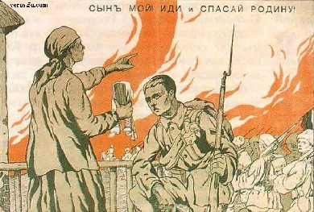

Крысолюди
Орей Волот
Вступительное слово издателя
Человек!
Сквозь пули и огонь к тебе прорвалась самая великая и важная книга всех времен и народов. Она станет наиболее читаемой и почитаемой жителями Земли - равно как самой ненавидимой и очерняемой, свирепо преследуемой крысолюдьми.
Это потрясающей силы рукопись, где собраны строго документальные свидетельства о самых тяжких преступлениях врагов человечества, о их тщательно скрываемой, кровавой и безжалостной, многотысячелетней войне с жизнью на нашей планете.
Этот фундаментальный труд глубоко и всесторонне излагает наиглавнейшую и наиопаснейшую проблему, стоящую сегодня перед земным разумом, угрожающую судьбе цивилизации куда реальнее, чем даже всемирная ядерная или биохимическая война.
Это книга-завещание гениального мыслителя и пророка, который подверг всеобъемлющему анализу широко разветвленную, многоступенчатую и жесточайше законспирированную систему порабощения планеты, создаваемую нашими оккупантами в течение всей обозримой истории. Автор обнажает тайные методы и способы проникновения крысолюдей в человеческие ряды, раскрывает отлаженный ими механизм оболванивания, разложения и уничтожения землян.
Великий духовник нашей цивилизации, который работал над этой рукописью всю жизнь, разработал блистательное учение: яркий и сильный путь освобождения человечества от тирании крысолюдей. Провидец Орей Волот успел заглянуть и в наше будущее на тысячелетия вперед.
Эта книга - огненный меч, который во мраке лжи освещает отныне дорогу каждому из людей. Могучим Волотским Мечом мы изрубим поработителей Земли и построим мир праведный и улыбающийся.
Отложи, человек, самое неотложное и прочти Великую и Страшную Правду.
Содержание
-
Часть первая. Тысячелетия, обагрённые кровью
- Глава 1. Евреи и Древняя Иудея
- Глава 2. Евреи и Христос
- Глава 3. Евреи и их лжерелигия
- Глава 4. Евреи и воспитание
- Глава 5. Евреи и их ритуалы
- Глава 6. Евреи и жертвоприношения
- Глава 7. Евреи и их праздники
- Глава 8. Евреи и разврат
- Глава 9. Евреи и конспирация
- Глава 10. Евреи и медицина
- Глава 11. Евреи и культура
- Глава 12. Евреи и масонство. Часть I
- Глава 13. Евреи и масонство. Часть II
- Глава 14. Евреи и пресса
- Глава 15. Евреи и власть
- Глава 16. Евреи и выдающиеся люди
- Глава 17. Евреи и Израиль
- Глава 18. Евреи и Германия
- Глава 19. Евреи и США
- Глава 20. Евреи и Россия
- Глава 21. Евреи и СССР
Орей Волот
КРЫСОЛЮДИ
Почему?
единственная капля разума в ледовых пустынях Вселенной - наша хрупкая планета так люто терзаема злом?
Почему?
терпкая боль и безысходное отчаяние переполняют человечьи души?
Почему
столько лжи и неверия, страха и ненависти на нашей восхитительно прекрасной и нежной земле?
Почему?
на свете почти нет счастливых людей?!!
Почему?
можно до бесконечности повторять эти клятые "почему?"!!!
Ну на чью подлую потеху поумневшие за многие века народы продолжают драться между собой с остервенением первобытных дикарей? Зачем самые лучшие и сильные, самые близкие люди-братья то и дело сходятся в мерзких и грязных войнах?
Почему пистолетов, бомб и ракет производится в сотни раз больше, чем детских игрушек?
Откуда на нашей изобильной земле-кормилице тьмы-тьмущие голодных и бездомных? По чьему велению в одних странах зажравшиеся народцы лопаются от жира и горстями глотают пилюли для похудания, а в других еще живые скелеты валяются на пересохшей земле, не имея сил прогнать даже мух, выедающих глаза?...
Кому выгодна распоясавшаяся во всем мире алчная и жестокая преступность? Пьяные юноши и распущенные девушки? Заживо разлагающиеся под заборами наркоманы? Кто превращает наши цветущие города в содомские и зловонные клоаки гомосексуализма?
Через телеэкраны в каждый дом ежевечерне вползают уродливые вурдалаки и богомерзкие вампиры, из телекоробок потоками хлещет кровь, сыплются самые мусорные слова. Фильмы тщательно инструктируют, как убивать бестрепетно и разнообразно, как грабить без следов, как изуверски насиловать...
Зачем так много среди нас самого бесстыжего и наглого вранья? В политике, деловой жизни и, увы, во многих окружающих людях? Но наиболее преступна и возмутительна ложь, распространяемая средствами массовой информации. Отрываешься от телевизора, переводишь взгляд с газеты на улицу и, увы - только что увиденное, услышанное, вычитанное - полная противоположность тому, что на самом деле творится даже за ближним окном. Кому нужны и выгодны такие криворожие зеркала?
Почему для всяк входящего в этот мир он так тягостно непонятен и необъяснимо бестолков? Так коварно и подло двуличен? Это что же: мы изначально такие порочные и беспутные, еще в материнском чреве были прокляты всеми на свете богами? Что с нами происходит? Со всей нашей несчастной Землей? Неужели удивительная планета, как загнанный скорпион, обречена вскоре ужалить саму себя атомным жалом и погибнуть в жуткой агонии?
Почему многие самые умные и честные люди неожиданно умирают в расцвете сил? Кто и какую жуткую правду скрывает от людей за сладкой ложью? Да кто же на этом свете источает такое страшное зло и черную злобу? - эти вопросы звучат нескончаемо и мучительно...
...С годами все глубже и дотошней я вглядывался в людей и их бытие. Но чем дольше жил среди себе подобных, тем больше вопросов-ежей заползало под мою черепную коробку. Многие слова и дела, события и следствия, происходившие на моих глазах, были лишены последовательности, самой элементарной логики. Их нельзя было объяснить никакими писаными или даже неписаными законами человечьего общежития. Они между собой не состыковывались. Не доставало каких-то скрытых звеньев. Это как на заре астрономии, вычисляя орбиты известных на ту пору планет, ученые находили непонятные отклонения в их маршрутах. Исследователи утверждали, что в космосе должны быть неоткрытые еще небесные тела. И время подтвердило математические расчеты - тайные небожители отыскались в точно указанных местах.
Прозрение приходило исподволь. Однажды знакомый тайком сунул тоненькую книжицу, предусмотрительно завернутую в старую газету. Предложил потихоньку ее прочесть и - никому чтоб ни гу-гу! - возвратить.
- К чему такие предосторожности? - простодушно недоумевал я.
- А такие, что можешь за нее загреметь на нары, - последовал вполне нешутейный ответ.
Подобная секретность донельзя заинтриговала юную душу, и дома перво-наперво уткнулся в брошюру...
По своей натуре я из фом неверующих. Ко всему новому отношусь критически. Мне мало услышать и порою даже увидеть - всегда хочу еще и руками потеребить, а если можно - то и на зуб попробовать. Читая, я то и дело отрицающе мотал головой да восклицал про себя - ну не может этого быть! Нет и нет! Не может этого быть, потому что быть этого не может! Чтобы столько тысячелетий так ловко и коварно, по такому хитромудрому и подлому плану обводить вокруг пальца миллиарды людей - ищите легковерных по лесам дремучим! Эта брошюрка - злодейская фальшивка или же больная игра чьего-то рехнувшегося воображения...
Однако помусоленные, многажды читанные страницы одна за одной плавно и ненавязчиво вдруг начали пунктиром прорисовывать мне... Да, да! Как раз те самые, так томительно недостающие в моем миропонимании звенья тайной цепи - уже, как оказалось, давно и прочно захлестнутой на хрупком горле человечества! Но слишком коротким было повествование о вдруг разверзшейся мне бездне, кишащей отвратными гадами. Возвращая после бессонной ночи прочитанное, я попросил приятеля принести еще и еще новых знаний, обжигающих нутро... За несколько месяцев поглотил десятки книг, которые взрывалась во мне с силою термоядерных бомб.
После такой добротной подготовки вскоре я был готов к реалиям бытия. Я как бы обрел особые очки: любое значимое событие стал видеть в двойном свете. То, как его подавали и трактовали в прессе для безмятежной, давно околпаченной публики - и в то же время отчетливо представлял и понимал его закулисную, истинную подоплеку.
Теперь у меня позади долгая жизнь, много пройденных стран. История тайных мировых злодейств тщательно оберегается: книги о ней не продаются в магазинах и не хранятся в массовых библиотеках. Только в редких спецхранилищах под семью замками, куда пробиться могут лишь единицы. Но есть и другой путь. Многие честные и думающие люди берегут у себя дома пожелтевшие и потрепанные тома с Истинной Правдой. Вот ее я и изучал зачастую по самым редким, поштучно сохраняемым в подполье фолиантам на разных континентах.
На моем веку - тысячи прочитанных томов, десятки тысяч познанных судеб реальных людей, участие во многих крупных событиях современности. Солнце моей судьбы уже коснулось западного горизонта - пора живописать свой опыт. Вместе с сединою пришло ясное и взвешенное понимание того, что представляет собою наша цивилизация сейчас, кто и как ею управляет, в какую гибельную пропасть гонят людей непрошеные и невидимые, злобные погонычи.
Давным-давно пришел к незыблемому убеждению, что наш мир делится на две половины: видимую и скрытую. Для впервые слышащих о такой разделенности - как бы понаглядней представить подобную конструкцию?
Давайте вместе вообразим гигантское, почти 200-этажное здание, в котором живет все человечество: по этажу на каждое государство. Что ни страна - новый язык, национальные нравы, свои танцы и цветы, деревья и камни, особые запахи и краски. Огромное сооружение осязаемо и обозреваемо со всех сторон. Любому добросердному гостю тут рады на каждом этаже, для него открыт каждый закуток. Заходи помолиться в любой храм, садись к накрытому столу, пей и ешь. Пой с нами наши песни, а мы подтянем твои напевы.
Но под этим огромным и гостеприимным домом в загнившей и смердящей тьме затаилось мало кому ведомое, потайное и ужасное подземелье! Если наверху живут разные человеки - в большинстве своем добрые, улыбчивые и работящие - то в мрачной, никогда не освещаемой подземке обитают их злоехидные и желчные антиподы: крысолюди.
Внешне они очень схожи на жителей верхних этажей. А от бесчисленных скрещиваний с нормальным населением многие от них и вовсе неотличимы. Однако в течение тысячелетий одно-единственное передается от мутанта к мутанту и остается неизменным: мерзкая крысиная утроба.
Каждое утро начинается очередной набег подземного зверья на людской дом. На пути к своей фанатичной и одержимой цели они сметают все преграды. У них от рождения, как и у всех низших тварей, начисто отсутствует чувство брезгливости. Визжащие и пищащие крысолюди всепожирающими ордами, продираясь сквозь дурнопахнущие завалы отбросов, уперто карабкаются вверх по грязным и осклизлым мусоропроводам. Давясь и отталкивая друг друга косматыми лапами, топча в суматохе спины и морды соплеменников, хрюкающие чудовища пролезают в офисы и квартиры по вонючим, спирающим дыхание канализационным трубам. Захлебываясь в экскрементах, они плывут и прокрадываются в чистые жилища даже через смрадные унитазы.
Перед выходом на божий свет крысолюди отряхиваются и прилизываются. Влезают в белые рубашки и цепляют галстуки, прячут под брюками длинные и гадкие, дияволом прицепленные им хвосты. Чтобы скрыть свои типично крысиные, хищно загнутые и мясистые носы, выпирающие верхние зубы и животные рожи - они напяливают сверху хорошо подогнанные человеческие маски: с непременно широкими и сердечными улыбками!
Крысиный король на каждый этаж-государство посылает одних и тех же крысенышей. Чтоб смешивались с местными обитателями и знали их язык, обычаи и сходили за своих. Это только люди изъясняются на многих наречиях: у разномастных крысиных тварей, говорящих на языках всех этажей, есть помимо прочего и своя секретная, мало кому ведомая речь... Хвостатые нелюди с готовностью берутся быть у верховных существ президентами и министрами, дипломатами и редакторами, священниками, телеведущими, переводчиками. Мировые финансовые потоки, торговлю, прессу и книгоиздательство, кино и театры - словом, всю политику и экономику, науку и культуру - все связи между этажами они загребли в свои цепкие крысиные лапы. Они не брезгуют подслушивать телефоны, рыться в человеческой почте, читать из-за плеча факсимильную переписку и Интернет. Прогрызая дырки в стенах или затаиваясь под кроватями, мутанты высматривают да вынюхивают личные тайны, чтобы затем пачкать человека грязью компроматов. А если надо - то и насильно, смертью смести его с пути, ведущего к деньгам и власти.
Главный крыса вволю отсыпает своим подданным денег, вручает оружие и отраву на то, чтобы с помощью подкупа, пуль и яда они проникали в парламенты и депутаты, в банки и на заводы, в армию и секретные службы, в суды, прокуратуры и адвокатуры. Чтобы грабили скопом доверчивый этаж и стократ возвращали золото во всемирную крысиную казну.
Во многих школах возле учебных досок мелькают напомаженные крысиные ушки. В большинстве колледжей въедливо сверлят студентов острые крысиные глазки. Но нет на свете ни одного университета, где бы обладатели увесистых крысиных шнобелей громогласно не пустословили с трибун. Они внушают нашим ребятам сызмальства: крысолюди самые умные, самые добрые, самые талантливые на свете. Лишь они умеют и должны управлять миром. Они самые порядочные и великодушные на свете. Но вот разные недоумки почему-то невзлюбили только их одних и всячески им досаждают. Ату! Ату их! Все проклятия и тяжелейший позор всем, кто не любит да не нахваливает таких гениальных, благородных и ласковых крыс!...
Абсолютное большинство людей и сном-духом не ведают о глубоко законспирированном Крысином Подземелье. Потому что это самая большая и сверхжестоко охраняемая тайна на свете! Едва кто узнает о ней и - упаси господи! - осмелится заговорить вслух, как серые грызуны бешеной толпой нападают на него и заживо разрывают на куски. Однако если до кого их когти и зубы дотянуться не могут, то в своих газетенках и телеящиках они поднимают вселенский хай: это ложь, это происки душевнобольных - нет никакого Подземелья! Нет никакой конспирации! И тычут, тычут смельчакам в глаза скрюченными от злобы когтями, скрежещут зубами. Разбрызгивая бешеную слюну, хамски орут прямо в лицо:
- Вы патологические противники мира и прогресса! Вы махровые реакционеры, выступающие против свободы и демократии! Вы гнусные душители свободной прессы и свободы слова!
Наиглавнейшая цель крысоподобных - захватить всю планету, подчинить себе человеческий дом. Потому еще не столь многочисленное серое племя размножается с невиданной быстротой. При этом оно делает все, чтоб у людей рождалось как можно меньше детей: да и те вымирали от голода и болезней.
Однако самое излюбленное занятие крысолюдей - конечно же, устройство войн. Это как постановки массовых спектаклей с миллионами действующих лиц. Для этого они, не выказывая своих скрюченных ушей, тонко ссорят нации между собой, осторожно и кропотливо натравливают этаж на этаж.
Для театров военных действий они годами и десятилетиями пишут, неустанно готовят самые подробные сценарии. Устраивают сначала актерские пробы - то есть небольшие местные конфликты с легкой пальбой. Затем переходят к генеральным репетициям с участием тяжелой артиллерии - когда две страны до крови сшибаются лбами. Но самое желанное - всемирная бойня. Серые режиссеры заранее планируют, где и кто, кому и как нанесет с их помощью оскорбление, кто выстрелит первым, в каком акте ввяжутся союзники, сколько солдат-статистов будет примерно убито. И самый приятный итог - как много тонн золота будет награблено для крысиной казны, какие города и территории очистятся для заселения носатыми соплеменниками. Сами они никогда в драку не лезут, хоронятся по обе линии фронта, но всячески подталкивают в спины, в ушко науськивают и тех и других оглупленных воюющих. Ведь чем чаще добрые соседи будут стрелять друг в друга - тем больше места окажется для хвостатых тварей под солнцем, а не в сырой и уже под завязку загаженной ими преисподней.
...Весьма приблизительной получилась у нас картина Крысиного Подземелья; действительность же куда страшнее и сложнее, куда кошмарней и гаже.
Я не раз посвящал в тайны крысолюдей моих новых знакомых. Те, кому уже за 40-50, нередко воспринимали новое знание с трудом. Они просто отказывались верить, что столько лет пробыли в неведении, прожили в придуманном для них мировыми оккупантами иллюзорном мире. И это не их вина - крысолюди с первых наших шагов капля за каплей отравляют человечьи мозги самой бессовестной и беспардонной ложью. Не так-то просто в одночасье изменить взгляды на окружающий мир. Только непреложные факты и убедительнейшие объяснения самых загадочных и таинственных событий переворачивали мировоззрение моих собеседников.
Если вы человек мыслящий, ищущий самых глубоких и чистых истин - эта книга для вас.
Она - итог непредвзятых наблюдений и выстраданных размышлений всей жизни, мое главное дело на этой земле. Со всей совестью и честью я работал над ней многие десятки лет. И ни единым словом не изменил божественной для меня правде.
...Когда в гнездо доверчивых ласточек вкрадчиво заползает подлая гадюка, чтобы сожрать их беспомощных и бескрылых детишек, то все окрестные птицы тут же дружно собираются вместе. Вожак стаи ведет их к открытой земле. Все пернатые набирают в клюв грунта и смачивают его своей клейкой слюной. Десятки ласточек одновременно возвращаются к гнезду и в считанные мгновения залепляют вход. Жертвуя даже самым дорогим - собственными детьми - они заживо и навеки хоронят в нем коварного врага.
Всей душой моей верую, убежден и знаю, что люди планеты, постепенно прозрев и увидев под своим домом омерзительные скопища подколодных крыс, объединятся в нещадной борьбе с ними. Как те мудрые ласточки, однажды и навеки вечные мы залепим подлых тварей в их Крысином Подземелье! Каких бы это жертв ни стоило ради спасения земной цивилизации!
Под этой обложкой собраны тысячи и тысячи строжайше выверенных документов, звучат неисчислимые голоса умученных и живых свидетелей. Такое обилие вопиющей информации со столь многочисленными подробностями абсолютно невозможно придумать, будь автор не семи, а даже сто семи пядей во лбу. Да и любой источник сегодня можно легко проверить: благо сейчас на Интернете размещены целые библиотеки редчайших, совершенно недоступных ранее широкой публике книг, созданных за все века самыми сильными и честными умами.
Увы, Крысиное Подземелье - это страшная и жестокая реальность.
Не внявшим предостережениям этой книги и ей подобным - грозит исчезновение с лица земли, равно как их детям и внукам.
А теперь пора от езоповых иносказаний к прямой речи.
Крысолюди - это евреи.
Часть первая.
Тысячелетия, обагрённые кровью
Глава 1
Евреи и Древняя Иудея
РОЖДЕНИЕ САТАНЫ
Cо времени возникновения нашей цивилизации на земле произошло около 15 тысяч войн. По продолжительности они бывали разными - от нескольких дней до многих лет. Наиболее, пожалуй, затяжная из общеизвестных - Столетняя война.
Однако это совершенно не так. Самая долгая и кровавая, наижесточайшая война, погубившая миллиарды человек, уже бушует на земле около трех тысячелетий! Все эти века она пожинает свою кровавую жатву, не прерываясь ни на день и даже ни на один час! Днем и ночью, в праздники и будни, во всех дальних и ближних землях идет сражение с людьми не на жизнь, а на смерть. Эту войну на тотальное уничтожение людей ведут с человечеством иудеи.
Между тем эта битва почти никем не видима и не ощущаема. Потому что подлейшая из войн официально не объявлена, она - супертайна из всех самых свирепых тайн. Чаще всего убийцы всаживают нож в спину. Или дают медленно действующий яд - кончина выглядит естественным угасанием. Однако многие ее жертвы умирают самыми обыкновенными с виду смертями: под ножом хирурга на операционном столе, от сердечного приступа или неожиданной пневмонии. В автомобильной катастрофе. Якобы кончают жизнь самоубийством.
Самая страшная война в истории началась за тысячу лет до Рождения Христова, во время царствования в Иудее царя Соломона (предположительные годы его правления 1015 - 975 до нашей эры). При нем родился план захвата всех земель и народов в течение трех тысяч лет. Вначале приказы о разрушениях и убийствах отдавались устно. Впервые они были изложены письменно в 621 году до нашей эры небольшой группой иудейских жрецов - левитов.
Ближневосточные земли той поры были населены многими разнородными племенами. И еще кочевыми, и такими, которые переходили на оседлый образ жизни. Но уже тогда один клан, обосновавшийся на юге Палестины, разительно отличался от всех остальных. Неуживчивостью и мстительностью, жестокостью и коварством, несгибаемым упрямством и жутким злопамятством. Речь идет о крохотной Иудее. У нее cо времени основания была дурная слава.
Взгляните на современных арабов: всепоглощающая и беспредельная вера в бога, редкая воинственность и абсолютная безжалостность к врагам. Во время намаза тысячи людей, стоящих на коленях, в едином порыве истово бьют и бьют до самой земли бесконечные поклоны, губы заведенно шепчут слова молитв, а в глазах - полная отрешенность... И хоть бы камни падали с неба - они молятся пять раз на дню. Так вот евреи - это лишь одно из арабских племен. Причем иудеи еще в большей мере, практически неизменными пронесли через тысячелетия все свои варварские заповеди, самые жестокие, кровавые обряды и жертвоприношения! Да, да, первобытно-общинные дикари отнюдь не вымерли вместе с мамонтами - они прекрасно сохранились до наших дней! Сегодня они ходят в галстуках, пользуются за обедом вилкой, сидят за компьютерами, летают в космос... Однако если Коран учит своих верующих добру и любви к ближним, то у евреев общечеловеческие моральные ценности изначально вывернуты наизнанку.
Сквозь плотную мглу тысячелетий никогда и никому уже подробно не разглядеть те далекие события, составить точную и безупречную картину. Источников много, но полного согласия в них нет. Поэтому не стану обременять читателя долгими и чрезмерными ссылками.
Примечание автора. Хочу быть правильно понятым. Я не пишу сугубо научное исследование. По себе знаю: читать сочинение историка - непростое занятие. Тонешь в ворохах цитат, устаешь от обилия справок, цифр и указаний страниц, теряешься в приводимых, зачастую сталкивающихся мнениях. Не ученого, а нормального читателя подобная литература быстро утомляет. Я и сам не люблю каждый раз забираться на задворки книги за подтверждениями фактов. Поэтому при моих экскурсах в историю и заимствованиях я буду делать ссылки на главные источники прямо рядом с цитатой. А вовсе краткие упоминания вы отыщите в тех же приводимых мною книгах и статьях. Для удобства читателя все заимствования выделяю курсивом. То есть обширнейший справочный аппарат будет растворен непосредственно в тексте. Я с благодарностью обращался к книгам и статьям сотен и сотен моих предшественников: предоставляю полное право ссылаться на мою работу всех, кого она заинтересует в будущем.
Это было так давно, что Палестина еще именовалась Ханаан. Многочисленные кочевые племена называли "хабиру" - впоследствии сие собирательное имя закрепилось за евреями. Иерусалимский губернатор доносил египетскому фараону: "Никакой земли у царя здесь больше нет, хабиру всю ее опустошили". На северных землях только начинал формироваться Израиль - в него на конфедеративных началах вошло десять племен. А на юге обособленно образовалась небольшая Иудея. По преданиям, дошедшим с тех лет, племенной иудейский бог Яхве (он же Иегова) "назначил" единоверцев своим "избранным народом", заповедав, что если они неуклонно будут следовать его наставлениям, то станут выше всех других народов и получат в награду "землю обетованную". И еще Яхве наказывал, чтобы поклонялись ему в конкретном историческом месте: Иудее - то есть его последователи должны там жить. Однако едва иудеи - большей частью совершенно добровольно - поселялись среди других народов, то тут же объявляли себя "пленниками", "угнетенными" и клялись самыми страшными клятвами "разрушить поработителей".
История евреев - это цепь многих дутых мифов и лишенных логики легенд, сочиненных фанатичными правителями-жрецами для одурманивания и устрашения как соплеменников, так и других народов. Взять хотя бы того же Моисея, возведенного в божий ранг, и свод его Законов. Вся красивая и слащавая сказочка о Моисее, якобы найденном в тростниках - весьма подробный пересказ судьбы вавилонского царя Саргона, жившего тысячей лет ранее. А хвалимые на все лады премудрые заповеди Моисея - это чистой воды, практически дословный плагиат с куда более древних свитков египтян, вавилонцев и ассирийцев.
Или обратимся к широко известной притче о египетском плене. Сколько стенаний и плачей по этому поводу у иудеев, сколько крокодиловых слез пролито в память об "ужасных страданиях, огромных бедах и неисчислимых муках бедных евреев среди извергов-поработителей!" Блеф от первой буквы до последней точки. Не было никакого плена. Нет ему а ни единого истинно исторического свидетельства. Весь египетский эпизод от начала до конца полон самых разных логических несуразностей. Вот пример одной из самых вопиющих нелепостей. Ну как, скажем, богоподобный, богоприравненный Моисей, с такой легкостью "зривший будущее", мог целых сорок лет выводить евреев из плена, если расстояние от Египта до Иудеи составляло считанные сотни километров?
Собака зарыта вот где: образ несчастного народа-мученика понадобился жрецам для неиссякаемого у евреев источника злобы и мести к египтянам и всем язычникам. Этой трагической байкой они внедрили в подневольные мозги задачу всегда и везде разрушать и убивать всех неевреев в отместку за якобы поруганных предков. Одновременно легенда должна вызывать у всех остальных людей чувство жалости к традиционно "бедным и ни в чем не повинным евреям", вменять им невольное чувство вины перед тяжко пострадавшими и всячески облегчать жизнь их потомкам.
Следует всегда твердо помнить, что жалоба у евреев - это не способ защиты, а метод наглой и агрессивной атаки. Прежде был фальшивый "исход из Египта" - ныне сионисты придумали современную вариацию древней лжи - Холокост. Льют глицериновые слезы и постоянно посыпают солью несуществующую рану: чтоб высасывать деньги, подачки, поблажки из околпаченного человечества, расширять свои власть и влияние в мире.
Не только серьезным ученым - даже самим евреям отчетливо видно явное словоблудие на темы древности. Ученый раввин Эмиль Гирш - большой дока по истории еврейства - не дрогнувшей рукой вывел: "Вам говорят, что Моисея никогда не было. Согласен. И если мне говорят, что египетские события миф - то я тоже не стану спорить: это действительно мифология". В силу внушаемой самим себе, самозванно приписываемой "богоизбранности" евреи практически никогда не признают своей неправоты. Но если под обилием неопровержимых доказательств иногда и делают это - последние сомнения следует отбрасывать.
Заповеди поначалу передавались от жреца к жрецу в виде устных преданий - их хранителями левиты всегда оглашали только себя. В течение 8-7 веков до нашей эры иудейские проповедники сочиняли свой первый письменный свод наставлений. Они начали со заимствований из священных книг разных народов. Уши бесстыжих плагиаторов торчат даже из названия их труда "Второй Закон". Своего Первого у них никогда не было и нет - зато давным-давно существовал у соседей.
В маленьком селении перед небольшой кучкой людей Второзаконие было объявлено жрецами-левитами в 621 году до Рождества Христова. Родилась окончательно сформированная, полновесная политическая программа разрушения, уничтожения и закабаления всех земных народов, начертан кровавый путь к мировому господству евреев. Второзаконие (оно же - Моисеев закон) огласило только перед посвященными - в развитие кровожадных планов Соломона - жестокую и тайную войну против всего человечества. Главная идея - разрушение до основания окружающего мира и создание на его обломках Мировой Еврейской Империи и рабовладельческого строя для избирательно оставленных в живых землян.
Много раз иудеи пытались преподать новую книгу, что будто бы это "в 621 году до Р. Х. были найдены в архивах (ну какие архивы в то время?!) покрытые вековой пылью (это при таком-то почитании Писаний?!) рукописи". Однако даже израильские ученые отрицают это сегодня, считая Второзаконие самостоятельным трудов левитов.
Вначале служители культа позаимствовали у соседей добрые и человечные заповеди. Вложенные в уста никогда не существовавшего Моисея, с первых страниц Ветхого Завета они звучат благородно: "не убий", "не пожелай жены ближнего", ни его добра. Но не такому бонзе молились иудеи. Жрецы, в течение веков переписывая старинные манускрипты, каждый раз вносили отсебятину: делали вставки, дописывали новые страницы и целые главы. Потому повнимательней вчитайтесь в последующие пылкие наставления. Новоявленный боженька на ваших глазах превращается в брызжущего ядовитой слюной сатану: приказывает единоверцам безжалостно истреблять ближние и дальние народы, строго "оставляя в живых только дев, не познавших мужа". Читайте далее: "И когда Господь, Бог твой предаст их тебе (другие народы), ты побьешь их, и полностью уничтожишь; и не заключишь с ними договора, ни окажешь им милости; не заключишь браков с ними... и разрушишь их алтари, и разобьешь их кумиров... А из городов сих народов, которые Господь, Бог твой даст тебе в наследие, не оставь в живых ничего, что дышит..." Какое потрясающее "человеколюбие" у Моисея и окружающей его шайки! Как же мы должны поступить в ответ с городами Израиля, иудейскими главарями, с бесчисленными синагогами и еврейскими кварталами, разбросанными по всему миру?!
Ненавистью ко всему нееврейскому и проклятиями вероотступникам Второзаконие буквально сочится. Только тридцать его разделов, взятых большей частью из египетских и других священных книг, посвящены благословениям. В два раза больше места занимают новосочиненные иудейскими жрецами ужасные устрашения и смертные запугивания. Почти целиком 28-я глава отдана им. "Если же не будешь слушать гласа Господа... и не будешь стараться исполнять все заповеди его... придут на тебя все проклятия... доколе не будешь истреблен". Ослушнику грозят моровой язвой и туберкулезом. А еще "Поразит тебя Господь чахлостью, горячкою, лихорадкою, воспалением, засухою, палящим ветром и (надо же! - еще и скромной...) ржавчиною". "И будут трупы твои пищею всем птицам небесным и зверям". Непременно обещают "несчастье во всяком деле рук твоих", почечуй, коросту, чесотку, сумасшествие, слепоту, голод и людоедство: "С женою обручишься и другой будет спать с нею", "Будешь есть плоть сыновей твоих и дочерей... и жена твоя тайно будет есть их". Или вот еще наказание отступникам, изреченное "великим миролюбцем" Моисеем: "пройдите по стану от ворот до ворот и обратно и убивайте каждый брата своего, каждый друга своего, каждый ближнего своего". В итоге "пало в тот день из народа около трех тысяч человек".
В одной строке даются твердые гарантии ослушнику: "Поразит тебя... оцепенением сердца". Куда уж более - любого здорового человека удар на месте хватит от таких черных и злобных проклятий! А от кого они сыплются? От пышущего ненавистью Моисея, то есть бога, сотворенного жрецами по своему звериному образу и подобию.
Вокруг маленькой Иудеи жили израэлиты, самаритяне, хананеи, идумеи, галалеяне, филистимляне и другие племена. Прежде они стремились к единому для всех и всемилостивому ко всем богу. Однако медленно и неотвратимо, как удав, гипнотизирующий кроликов, небольшая страна начала заглатывать соседей. С помощью меча и коварства, посул и угроз иудейские жрецы постоянно расширяли свою паству. Те, кого удалось обратить в иудейскую веру, попадали в тяжкое моральное рабство. Без позволения всевидящих и всезнающих раввинов простому человеку и шагу нельзя было ступить самостоятельно. Не законы государства - тоталитарный режим в религиозной упаковке диктовал каждому свою беспрекословную волю, требовал безоговорочного и слепого исполнения всех ритуальных предписаний.
Иудаизм - это самая свирепая духовная и физическая диктатура в земной истории. Это жесточайшее насилие еврейских предводителей-сатрапов над запуганной до смерти массой соплеменников, изуверское орудие для тиранической и кровавой власти над земными народами.
Иудаизм - абсолютно не религия, а сугубо криминальная идеология, свод подробных наставлений лишь о том, как исподтишка и постепенно разрушая ближние народы, захватить весь мир и обратить его жителей в безропотных рабов.
Еврейское вторжение в другую страну обычно начиналось без какого-либо оружия. Первыми приезжали богатые и приветливые, рассыпающиеся в улыбках купцы. Всем желающим иудеи наливали винные кубки и раздавали бесплатный хлеб и сыр - испытанно верную, безотказную приманку для мышеловок. Открывали свои лавки, покупали дома, строили синагоги. Вскоре местные жители с удивлением замечали, что под самым боком у них на глазах появился целый еврейский квартал. Скупая землю и жилье, иудеи всеми способами - от щедрой платы до запугивания и кинжала в бок - выживали соседей. А далее следовали наставлениям талмуда: участок и дом рядом с тобой продавай только единоверцу, но никогда - неевреею. Чтобы расширить и расчистить место для своих, обособиться от иноплеменников.
Ссужая и одаривая бесчестно нажитыми (в основном ростовщичеством) деньгами правителей, пришельцы постепенно выторговывали для единокровников целый ряд льгот. Повсеместно добивались послабления, а то и освобождения от налогов, от любых воинских повинностей, учреждали свои внутренние органы самоуправления, суды. При совершении преступления евреем всячески противились местным законам, не отдавали его под чужой суд. Всегда с неистовым шумом требовали рассмотрения дела собственными законниками, а потом тайком выпускали виновного. То есть повсюду, под видом религиозной общины, иудеи всегда строили свое государство в чужом государстве.
Заканчивалось это тем, что по требованию раввинов вокруг еврейских поселений вырастали высокие стены. Рождалось гетто! Они нужны были жрецам, чтоб ни на миг не ослабить своего влияния на единоплеменников, блюсти их днем и ночью, следить за каждым их движением глаз, за любым шевелением мысли. Но самое главное - чтобы воспитывать детей в абсолютно рабском подчинении. Еврейский пиит со вздохом писал: "Гетто, мой друг, гетто, где все надежды гибнут при рождении". Вместе с тем раввины за глухими стенами коммуны вселяли в своих подданных черную ненависть к принявшим их хозяевам земли: "Гнобители, притеснители, в гетто нас заточили!" Ложь о гетто - лишь часть традиционно муссируемой, излюбленной легенды о "преследованиях". Непрерывные жалобы в еврейских устах - это коварное и подлое оружие не защиты, а нападения.
В 444 году до Р. Х. в Иудее был принят запрет на смешанные браки: не моги еврей соединять свою "драгоценную и богоизбранную плоть" с кровью (талмуд частенько величает нас таким образом:) - "презренных скотов"! Жрецы постоянно внушали израэлитам, что они "высшие существа" и им никак нельзя сливаться с другими "скотскими племенами". И еще неизменно повторяли, что "человеческие лица даны людям, чтоб евреям не было... противно принимать их услуги"!
Чтож: иудеям даны редчайшая наглость и скотское самомнение. Однако факт остается фактом: из первобытных и грязных бедуинов они в людей так и не превратились.
Подчиняясь расистской догме, отныне каждый израэлит должен был блюсти расовую чистоту. Теперь даже в гетто (построенном на нееврейской земле!) был запрещен вход хозяевам страны, "чтобы очистить иудеев от всего иноземного". Когда новое запрещение на свободный выбор жениха или невесты жрецы зачитывали в еврейских колониях, то "весь народ плакал, когда он услыхал слова Закона". Люди понимали - это новые кандалы для их духа и свободы. Но перечить - это класть под топор собственную голову.
Со временем левиты написали еще четыре книги: Исход, Бытие, Левит и Числа - в совокупности их называют торой. Поначалу это слово означало "доктрина", ныне его понимают как "закон". Откройте любой из этих томов - и из них прямо хлещет кровь. В "Исходе" в 24 главе, стихе 8-ом: "...и взял Моисей крови и окропил народ..." Затем ему предлагается взять тельца и двух овец "без порока"(?) и заколоть их. А далее кровь овцы "возложи на край правого уха Аарона, и край правого уха сынов его, и на большой палец правой руки их, и на большой палец правой ноги их и покропи кровью на жертвенник со всех сторон... и покропи на Аарона и на одежды его и на сынов его, и на одежды сынов его с ним".
В течение долгих веков служители культа и сатаны требовали от соплеменников приносить в жертву своих перворожденных детей. Для ритуальных зверств младенцы в первую очередь отбирались у непокорных родителей. А многих отцов - для большего почтения к жрецам - заставляли убивать собственных детей! Это делало остальных единоверцев куда покладистее. Левиты умело использовали природой заложенный, чисто инстинктивный страх любого человека при виде свежей крови. Залитые с ног до головы, окровавленные жрецы-палачи вселяли всем раболепный ужас. Подчас раввины доходили до настоящего маразматического шабаша - извлекя из только что порешенных жертв еще дымящиеся кишки, они обматывались ими и в таком виде продолжали свою дьявольскую службу! Трепещи, убоись, пади ниц, человече, и целуй стопы всевластного жреца!
Один из главных моральных постулатов христианства "не согреши" - целиком отсуствует в иудаизме! Слово "грех" в торе - ни разу даже не упоминается! А вот жалость и снисхождение к иноземцам приравниваются к тягчайшим преступлениям и быть прощены не могут. Но самый страшный проступок для еврея, караемый только смертью - "несоблюдение" Моисеевых законов. А соблюдение - это разрушение и убиение иноплеменных. Убивай - или будешь убитым своими же единоверцами. Вот такой порочный, дьявольский круг.
Откуда у евреев подобное человеконенавистничество и лютая кровожадность? коварное двуличие и патологическая жадность? гипертрофированная жажда власти и бесстыжая лживость? моральное, чисто свинское неряшество и скотская тяга к половым извращениям? болезненная страсть к обогащению и ростовщичеству? волчья жестокость и полное безразличие к чужой боли? Сравните, вдумайтесь: а ведь все эти качества - прямо противоположны облику нормального, среднестатистического жителя земли. Это как отражение в зеркале, в кривом и черном зеркале - человека наоборот, античеловека!
Любая идея, не важно - плохая или хорошая, никогда не приходит на ум сразу нескольким людям. Вначале она посещает только одну голову. Затем человек посвящает в нее своих ближайших друзей и соратников. И только тогда она начинает завоевывать сторонников. Но как случилось, что - мораль наоборот, мораль навыворот - стала расползаться по планете, словно чума? Кто он, Первоеврей, изначальный Античеловек, полный злобы и желчи, от которого поползли метастазы ненависти и ныне опутали весь мир? Как его звали? Коль иудеи своим первым богом называют Яхве - может таким и было его проклинаемое в веках имя? Попробуем вообразить его себе...
...Он родился за много столетий до Христа. Уже в юности выделялся среди сверстников. Был понятлив и скор мыслью, истов в вере и моленьях. Имел острый, пронизывающий взгляд. Обладал немалой физической силой. Умел убедительно говорить. В небольшой религиозной секте, где всех жрецов можно было пересчитать на пальцах руки, естественно и неоспоримо выдвинулся в лидеры. И только со временем люди стали замечать в своем главном служителе культа заносчивость, жестокость и грубость, подозрительность и маниакальное властолюбие. Один из жрецов повел разговор о смене предводителя... Через несколько дней он умер, выпив яду, тайно подсыпанного в его чашу. Другого оппонента нашли вскоре с ножом под лопаткой. Старшего жреца стали смертно бояться и ослушников больше не находилось.
С годами главарь секты становился все более недоверчивым и злонравным, капризным и непререкаемым, вымогал от прихожан новых и новых подношений, требовал в жертву богам все больше младенцев и животных. Окружающие видели, что вид свежей крови пьянит, доставляет ему сладострастное удовольствие... Но сбросить конченного садиста и психопата было уже не так просто: он окружил себя сытно кормящимися возле него молодыми волками-жрецами, среди прихожан шныряли наушничавшие ему доносчики. Сыновей и дочерей недовольных, втихомолку возмущавшихся предводителем, а то и их самих дюжие прислужники подволакивали силой к жертвенному чану и главный жрец самолично, по самую рукоятку всаживал им нож в горло...
Однажды своим звериным чутьем он почувствовал, что ожесточение подданых достигло крайнего предела. И надо срочно дать выход накопившейся против него энергии. Иначе кровавого бунта и бесславного конца ему не избежать. Верховный жрец сообщил прихожанам, что, как ему "стало известно", находящееся поблизости племя тайно готовится к атаке их жилищ. На ничего не подозревавших соседей, с которыми жили в мире и согласии, по коварному плану вожака секта напала на рассвете, когда все еще спали. Безжалостно перебили всех мужчин, женщин и детей. Но забрали себе девушек - воинам в утеху! - и горы дармового добра, многие семьи поселились в захваченных домах.
Легкость добычи опьянила.
Подлая иудейская идеология родилась!
То, что Первоеврей, первый Античеловек был тяжелым и злобным душевнобольным, подозрительным и жестоким маньяком, от которого тянется в веках бесовской род людофобов - у меня нет ни малейших сомнений. Иудаизм, как идеология, рожден не в сердце, а в желчном пузыре сумасшедшего.
Уже тогда обособившееся сионское племя избегало смешанных браков. Кровь, циркулирующая в небольшом замкнутом пространстве, вела первоевреев к вырождению и психической деградации. То есть генетической основой нынешних израильтян, бесспорно, стала наследственная дефективность и патологическая ущербность. Любой человек, общающийся сегодня с евреями, становился свидетелем того, как они раздражительны - могут завестись с пустяка, маниакально подозрительны, легко впадают в визгливую истерию и злобное бешенство. Это выродившиеся гены не дают им покоя!
Известный итальянский ученый Ц. Ломброзо в своей книге "Гениальность и помешательство" на 49-й странице авторитетно свидетельствует: "среди евреев встречается вчетверо и даже впятеро больше помешанных, чем среди других народов". Отец В.Бланка (Ленина) происходил из хазарских евреев, а мать была чистокровной иудейкой. Как пишет великий русский писатель В.Солоухин в работе "При свете дня" (стр. 50) будущий вождь уже в детстве страдал беспричинными припадками злобы и истерии, впоследствии выродившиеся в "чудовищную, бешеную, не знающую никаких преград агрессивность. Если бы больной сидел дома под присмотром родных - это одна картина. Но он волею судеб сделался диктатором над сотнями миллионов людей. И полились реки крови".
Современная наука широко исследует генофонды различных национальностей. В монографии русской ученой Л.Калмыковой "Наследственная гетерогенность болезней нервной системы" (Москва, 1976) приведены поразительные клинические данные, полученные учеными разных стран. Так, в 99 случаях из 100 многими тяжелейшими заболеваниями нервной системы (например, семейной дизавтономией Рейли-Дея, эссенциальной пентозурией и другими) болеют только евреи! Но с полной уверенностью можно утверждать, что и у остающегося одного на сотню больного наверняка в роду были евреи - просто пациент ничего не знает о них. Если врач ставит такие диагнозы, как губчатая дегенерация мозга Ван-Богарта-Бертранда или дефект РТА, болезнь Гоше или амавротическая идиотия (эти недуги протекают чрезвычайно мучительно и в большинстве своем ведут к гибели), то национальность страждущего он может и не спрашивать - перед ним еврей! А ужасной, тянущейся многие годы болезни Гоше и в конце концов сводящей в могилу - сегодня уже подвержен каждый восьмой иудей! Бог шельму - то бишь еврея - метит! Уж в чем-чем, но в сем они точно "богоизбранные": подлежат полному вырождению. Смертный недуг косит все больше крысолюдей, часы, отпущенные иудиному семени на этом свете, неумолимо приближаются к финальной, могильной для них цифре 12!
Сионистские идеологи пытаются ныне оправдать еврейскую идиотию тем, что в небольших гетто в браки доводилось вступать близким родственникам. Но у куда более малочисленных народов, доживших до наших дней, и в помине нет подобных болезней. Ответ иной: это прямые последствия раввинского запрета смешивать "богоизбранную" кровь со "скотской"! То есть дегенерация и кретинизм - сугубо идеологические, чисто национальные болезни всех без исключения евреев!
В малолюдных дебрях русского Алтая в начале ХХ века было обнаружено страшное селение. Несколько столетий небольшая группа людей жила в поросших тайгою горах, практически отрезанная от внешнего мира. На сотни верст не было другой живой души: где же тут отыщешь суженую? Из поколения в поколение в браки вступали самые близкие по крови. Хорошо, если еще сочетались тро- или двоюродные родственники. Однако нередко случалось, что брат женился на родной сестре... Прибывшие в лесную деревню ученые ужаснулись: все ее жители носили на лицах тяжкие печати вырождения. Но эта уникальная генетическая трагедия, на многие десятки лет ставшая предметом исследований ученых, случилась по несчастью, а не по воле людей. Евреи же приговорили к полной дегенерации сами себя.
В Нью-Йорке и Париже, Лондоне и Риме, Москве и Торонто, Рио-де-Жанейро и Киеве, Вашингтоне, Мехико, Сиднее, Кейптауне - по многим тысячам городов земли расползлась еврейская нечисть, повсюду иудеи живут своими обособленными коммунами-гетто. Подобиями сумасшедшей алтайской деревни, словно зловонными язвами, вся планета покрыта ныне коммунами израильских выродков! И сегодня этот Всемирный Еврейский Конгресс Идиотов жадно, через кровь и трупы, с бешеной пеной у рта рвется к браздам мирового правления!
Уж эти срули нарулят...
Глава 2
Евреи и Христос
"ВАШ ОТЕЦ - ДИАВОЛ!"
В сурово регламентированном бытии иудеев все и всегда было известно: сколько нужно пожертвовать жрецам со своих доходов, как отмечать очередной праздник, чего нельзя делать в субботу. На любой вопрос могли ответить проповедники, кроме одного: когда придет долгожданный Мессия. Держа паству в черном теле, раввины постоянно ободряли, кормили ее сказочными обещаниями о скором появлении избавителя: "Как прекрасен он, Царь-Мессия, что восстанет из дома Иуды. Он перепояшет чресла свои, и вступит в битву с врагами своими, и многие цари будут убиты". Он сокрушит "железным жезлом" врагов племени Иуды и "разобьет их в черепки, как сосуд горшечника", положит к ногам евреев все блага мира и полную власть над уцелевшими народами. О времени его появления служители культа, прежде на разные лады изворачивавшиеся, в конце концов научились лукаво ответствовать: "В один прекрасный день..." Потому что сами не имели ни малейшего понятия, когда он заявится. Вот так и жили иудеи, поколение за поколением, терпя неслыханные жестокости и чрезмерные ограничения, созданные для них раввинами в собственных тюрьмах-гетто.
Веками они ожидали Мессию-громовержца, который услужливо изрубит для них в капусту земное население и посадит каждого израильтянина на мешок с золотом. Или на шею личного раба. Изо дня в день выглядывали долгожданного небесного посланца в воинских доспехах и с карающим мечом. Бесконечными проповедями о появлении - не сегодня-завтра - Мессии они прожужжали уши всем окрестным народам.
И в один воистину прекрасный день... он явился!
Однако сразу же разочаровал иудеев. Они ожидали свирепого и беспощадного мстителя, а на порог ступил человек со словами мира, добра и любви. Чуткий нюх фарисеев тотчас признал в нем заклятого врага, "пророка и мечтателя". Пламенного проповедника звали Иисус Христос.
После многих изученных исторических подлинников на разных языках я пришел к твердому убеждению, что - в отличие от мифического Моисея или вообще эфемерного Яхве - такой человек действительно существовал. В сыне простого плотника сошлась та редкая комбинация генов, которая выпадает, может быть, одна на десять миллионов землян. Он, несомненно, обладал самыми незаурядными качествами. Был хорошо и всесторонне просвещен для своего времени. Как любознательная и глубоко думающая личность, философ-самородок и прирожденный оратор - он мог часами выступать с речами перед разношерстными толпами, вступать в непростую полемику и выходить из нее победителем, мастерски отвечать на самые каверзные вопросы. Еще полагаю, что судьба наградила его большой внутренней энергией, а именно редкой способностью к внушению, которую мы сегодня называем гипнозом. Потому что описываемые (или большей частью приписываемые ему) случаи чудесных исцелений, подвластны только человеку с мощным гипнотическим влиянием. Ничего сверхъестественного, как это известно сегодня медицине, в сем нет. Немало известных гипнотизеров способно к подобному. Под сильным энергетическим влиянием у больных снимаются психологические блоки - и на глазах у публики немые начинают говорить, обездвиженные - ходить.
Еще, как на духу, сознаюсь: словно многие люди, я долгое время под влиянием лживой сионской пропаганды считал Иисуса евреем. Но до тех пор, пока сам не засел за исторические первоисточники. Так, Христос родился в Назарете, который в те времена находился в провинции Галалея. И провел в ней почти всю свою короткую жизнь. По законам соседней Иудеи ее жителям категорически воспрещались смешанные браки - то есть его мать-галалеянка никак не могла выйти замуж за еврея.
Другое. Правивший в те годы в Галалее Симон Тарсис - один из Маккавейских князей - был неглупым и решительным человеком. Раскусив змеиную сущность иудеев, он очистил свою страну - насильно выгнал их всех до единого в Иудею. Ай, да Тарсис! Получается, что это самый первый правитель в истории, совершивший такой справедливый и богоугодный акт! Вот на каких мудрецов должно равняться современным президентам!
Еще более сильны аргументы Иисусового нееврейства, так сказать, от обратного. Если бы он был иудеем, то по законам расистского государства за откровенно антимоисеевские проповеди его затащили бы в первую попавшуюся синагогу и любой раввин на глазах прихожан рассек бы ему трахею ритуальным ножом. Или - на худой конец - за столь дерзкое "богохульство" его бы отдали под скорый иудейский суд, откуда он живым уже никогда бы не вышел.
Всполошившись не на шутку, правители Иудеи собираются вместе, чтобы обсудить: как им покончить с крамолой, пришедшей вместе с иноземцем. Ведь объявив себя Мессией, Иисус восстал против кровавых заветов Моисея, а представляясь царем Иудеи, он якобы преступил римские законы. Думали-гадали и порешили умертвить его чужими руками.
Иуда Искариот, этот иудей среди Христовых учеников, наущенный жрецами, предает своего учителя. Между прочим, за "совершенно верный" с точки зрения евреев поступок изменник дважды в двадцатом веке был ими канонизирован: в России и Германии. Иудины последыши и ныне верны его делу, всегда готовы следовать по его грязным следам! Благо, если и им отмеряна вполне заслуженная иудина судьба: впоследствии, осознав свое злодеяние, он повесился. Предатель Иуда удавился на длинном суку - на нем еще довольно места!
Схваченный разъяренной, загодя натравленной на него еврейской толпой по доносу иудея, он был доставлен в трибунал, не имевший никакой законной власти. Христос был приговорен к казни после того, как подговоренные, подкупленные иудины лжесвидетели подтвердили возведенную на него напраслину.
К чести Понтия Пилата, римского наместника в Иудее, он долго противился исполнению смертного приговора. И сяк и этак пытался уклониться от жестокого решения иудейских старейшин. Предлагал обойтись одним публичным бичеванием. Но коварные верховные жрецы стояли только на своем. Даже жена Пилата, опасаясь их мести, упрашивала мужа уступить нажиму. Фарисеи требовали самой жестокой и немедленной казни, пустившись на обычный еврейский шантаж. Они пригрозили донести на Пилата его императору: "Если отпустишь его, то ты не друг кесарю". И владыка дрогнул, начал поддаваться мощному натиску сплоченных сынов Яхве.
Но все же совесть в нем заговорила еще раз: "Возьмите его вы и по закону вашему судите его". Никак не хотел римлянин обагрять невинной кровью свои руки. Сведущие в законах злоехидные фарисеи и тут сумели извернуться, спихнуть заведомое убийство на иноземцев, чтобы самим остаться в тени. Ссылаясь на установленные Римом правила (которыми они при любом удобном случае пренебрегали), ответили: "Нам не позволено никого предавать смерти".
Тогда Понтий Пилат предпринял последнюю и отчаянную попытку сохранить жизнь смертнику. Он предложил "народу" простить на выбор одного из двух приговоренных: Иисуса Христа или же разбойника с большой дороги, закоренелого убийцу Варавву. Он очень надеялся, что простой люд, конечно же, пожелает наказать куда большее зло - матерого преступника, чем никогда и никого не обидевшего пророка. Но он еще плохо знал волчью иудейскую натуру... В толпы еврейской черни затесались фарисеи-агитаторы и судьба могучего и высокого духом человека, выступившего против иудейского закабаления, была решена... Хитромудрая и коварная наука управлять народными массами в нужном русле изобретена евреями очень давно и только совершенствуется в течение тысячелетий!
Убиение Христа было задумано фарисейскими дирижерами как самое мучительное и варварское издевательство, которое могло только взбрести в их кретинные мозги. Они решили именно так изуверски выместить на нем свою злобу, чтоб и ослушника на всем миру наказать - и другим на носу зарубить предупреждение на веки вечные.
Показательная казнь с ехидно наброшенной на его плечи багряницей - подобные красные накидки позволительно было носить только королям; с грубой деревянной тростью в руках в роли царского скипетра; насмешливое величание Мессией и колючий терновый венец на голове вместо короны; тяжелый крест, привязанный к спине; камни и плевки по пути на Голгофу - эти мучения проложили Иисусу дорогу в бессмертие. Четыре гвоздя, вбитых в живые руки и ноги - навеки соединили его с небесами.
Евреи причисляют Христа к соплеменникам по двум причинам. Во-первых, чтобы этим возвеличить самих себя: мол, вот какие мы всемогущие да башковитые - и среди святых есть "наши", а вы, презренные людишки, молитесь богу - "нашему" единокровнику. Во-вторых, как бы странно это не казалось на первый взгляд - чтобы унизить Иисуса, посеять сомнения в его истинности. Ведь даже многие неевреи, которым выпало в этой жизни прислуживать сыновьям сатаны и питаться сытными крохами с их стола - даже они в душе презирают нечистоплотное племя. Простой же люд всегда ненавидел своих разорителей. (Один мудрец высказался еще определеннее: все нации недолюбливают друг друга, но все вместе ненавидят только евреев). Зная это, вот уже два тысячелетия жидомасоны грязной меткой на Христовом лбу "еврей" - пытаются клеймить его в наших глазах.
Во всех своих писаниях евреи умаляют и унижают Иисуса, приписывая ему незаконное рождение, магию и позорную смерть. Чернят эпитетами "лжец", "самозванец". Более того: талмуд, написанный жрецами вскоре после торы, категорически запрещает иудеям произносить в своем доме Христово имя. Поэтому при необходимости - с чисто национальной казуистической изворотливостью! - они в своих жилищах называют Иисуса... "тот, у кого нет имени"! Талмудистами в средние века был сочинен пасквиль "Житие Иисуса Христа" и только по нему - до сегодняшних дней! - рассказывают о великомученике еврейским подросткам, а теперь и во многих публичных школах для всех поголовно детей. В нем повторяются не только облыжные насмешки и издевательства во время крестного хода на Голгофу, но и приводится много новых оскорблений.
Не обходится здесь без традиционной для иудеев двойной бухгалтерии. Если в книгах для неевреев якобы весомо и убедительно доказывается божественное происхождение Девы Марии из якобы иудейского рода Давида, то в литературе для внутреннего употребления к Богоматери уже примазываться нет нужды - ее называют распутной женой безродного парикмахера. И что своего внебрачного сынка Иисуса она нагуляла с римским солдатом по имени Пантера. Далее излагается, что отчим отвез приемыша в Египет, где он изучал черную магию. Никак не в силах смириться с тем, что только по их наущению, но отнюдь не их собственными руками был на самом деле замучен "проклятый самозванец", иудеи пускаются на гнусное искажение истории. Утверждают, что Иисуса римляне передали после ареста во власть фарисейского Синедриона. Он провел сорок дней у позорного столба, а затем был побит камнями и повешен в день еврейского праздника Пейсах. Ниже в пасквиле говорится, что сейчас "колдуна" истязают в аду погружением в кипящую грязь.
Четкое утверждение о том, что Христос не был иудеем, есть и в самом талмуде. Для этого откроем весьма познавательную книгу.
Бывший американский сенатор, великий американский патриот Дэвид Дюк в детстве откровенно восхищался евреями - такое почитание внушается самими жидами всем школьникам в мире. Однако с возрастом и опытом, лично пройдя через все сионо-свинские хлевы политического Вашингтона, пришел к полному неприятию иудейства. И написал поразительное, до каждой точки и запятой выверенное по первоисточникам разоблачение "Еврейский вопрос глазами американца": книга вышла в Москве в 2001 году. Мы к ней еще обратимся, а сейчас цитата со стр. 104: "Из Талмуда становится ясным, что иудаизм рассматривает Иисуса как "шарлатана", "фокусника", "совратителя" и "обманщика". В Талмуде также утверждается, что библейское описание распятия на кресте было ложью, и что Иисус Христос был задушен (задохся) в яме с навозом, и что они ненавидели Его так сильно, что казнили его четырьмя различными способами. Он был неевреем. ... Ниже приводятся прямые цитаты, которые я взял из Талмуда, которые относятся к Иисусу и христианам:
Валаам (Иисус) прелюбодействовал со своим ослом. (Санхедрин 105 а-в)
Еврейские священники воскресили Валаама (Иисуса) из мертвых и наказали (казнили его в кипящей сперме). (57а Гиттин)
Она, которая была потомком принцев и правителей (Дева Мария) разыгрывала из себя шлюху с плотником. (Санхедрин 106а)
Иисус был опущен в яму с нечистотами до подмышек. Затем кусок плотного материала был помещен внутрь легкой материи, обмотан вокруг шеи, и два его конца были затянуты в противоположных направлениях, пока он не умер. (Санхедрин 106а)...
Евреи должны уничтожать книги (христиан). (Шаббат 116а)"
Весь талмуд пронизан прямо-таки животной ненавистью к замученному евреями пророку. Со страницы на страницу переходит нечистая хула: слова "безумец", "идолопоклонник", "нечестивый богохульник" перемежаются с "собакой", "порождением похоти". При перепечатках талмуда неоднократно из него вычеркивалось одно из самых отвратительных мест, но раввины всякий раз бережно его восстанавливали. Вот оно, образчик слепого и жуткого бешенства, не присущего людям с нормальной психикой: Иисус "погружен в аду на вечные времена в котел с кипящими нечистотами"(!). А испанский еврей Моисей де Леон писал о Христе, как о "мертвой собаке, зарытой в куче навоза". Причем отравление мозгов ядом ненависти начинается у евреев с детских лет. В одной из книг талмуда ставится в пример маленький иуденыш в Польше, который по родительскому наущению ежедневно проделывал одну и ту же процедуру. Еще в силу возраста даже не понимая происходящего, он, проходя мимо Христова распятия у дороги, каждый раз плевал на него и приговаривал: "Будь ты проклят, создатель другой веры!".
Но что же такого сверхужасного сделал евреям Иисус? Зверски замучил иудейского ребенка? Поголовно вырезал фарисейскую семью? Дотла сжег синагогу? По сути, он первым всего лишь произнес вслух слова - эти никого не режущие и не убивающие звуки: но порицающие ложные иудейские устремления, выступил против их разрушительной и человеконенавистнической, человекопрезирающей идеологии. Только за правду и свое мужество он был оплеван и растерзан заживо, а затем еще и проклят на веки вечные. Мало этого - его имя и поныне все более изощренно вымарывается свежей грязью. Однако двуликие потомки христовых палачей громче всех дерут сегодня глотку - как бы вы думали, о чем? - конечно же, о свободе слова! Но, разумеется, свободе слова только для самих себя.
Первое жизнеописание Иисуса Христа и его нравоучений - Евангелие от Луки - было написано более, чем через сто лет после распятия на Голгофе. К этому времени мученик стал легендой, обрастающей все более яркими и невероятными подробностями. Люди не могли примириться со смертью своего духовника и воскресили его в своем воображении: подобными примерами воскрешений изобилуют многие святописания у египтян, ассирийцев и других народов. Нужен был символ противостояния разъедающей все вокруг себя, духовной проказе иудаизма - и Христос стал им. Галалеяне принадлежали к семитской, то есть арабской группе племен. Но сегодня подобную тонкость опускают, когда говорят о неприятии евреев. То есть можно сказать, что Иисус, семит и араб - это и есть самый первый серьезный юдофоб.
Имя Христа стало хоругвью антиевреейского духовного Сопротивления. Талантливейшие писатели своего времени, создатели знаменитой проповеди (Евангелие от Матвея 23: 13-36) вложили ему в уста яростные и яркие, и ныне обжигающие страстью слова: "Горе вам, книжники и фарисеи, лицемеры, что затворяете Царство Небесное человекам; ибо сами не входите и хотящих войти не допускаете... обходите море и сушу, дабы обратить хотя одного; и когда это случится, делаете его сыном геенны, вдвое худшим вас... Вожди слепые, оцеживающие комара, а верблюда поглощающие... очищаете внешность чаши и блюда, между тем как внутри они полны хищения и неправды... Горе вам, книжники и фарисеи, лицемеры, что уподобляетесь окрашенным гробам, которые снаружи кажутся красивыми, а внутри полны костей мертвых и всякой нечистоты... по наружности кажетесь людям праведными, а внутри исполнены лицемерия и беззакония... Змии, порождения ехиднины!... Я посылаю к вам пророков... и вы иных убьете и распнете, а иных будете бить в синагогах ваших и гнать из города в город... да придет на вас вся кровь праведная, пролитая на земле... Истинно говорю вам: все сие придет на род сей".
Евангелии от Иоанна (глава 8-44) Иисус Христос гневно бросает в лицо иудеям: "Ваш отец диавол; и вы хотите исполнять похоти отца вашего. Он был человекоубийца от начала и не устоял в истине, ибо нет в нем истины. Когда говорит он ложь, говорит свое, ибо он лжец и отец лжи".
Глава 3
Евреи и их лжерелигия
ИУДАИЗМ - ИДЕОЛОГИЯ РАЗРУШЕНИЯ
Проповеди Христовы, словно магической вспышкой озаренные его мученической смертью, наполнились необычайной привлекательностью, становились все более и более популярны среди народов и племен. Столь изуверским растерзанием живого человека на кресте иудеи хотели застращать иноверцев и отвратить от пророка - да получилось все в точности наоборот. Призывы к добру, миру и всеобщему согласию, равно как и обличительная отповедь евреям-разрушителям, находили сторонников в самых дальних землях. Убиенный превращался в икону на глазах, его учение, подхваченное и развиваемое многими последователями, представляло все большую опасность для впервые публично изобличенного иудаизма. Из года в год новые миллионы язычников становились под Христов крест, окружая все более плотным кольцом маленькую Иудею, породившую подлого Яхве только для себя, для сугубо внутреннего употребления. Попыткой уничтожить или хотя бы нейтрализовать неожиданно появившегося врага - молодое христианство - стало создание талмуда.
Первые его страницы были написаны в Яффе. По сути это многословные дополнения к "божественной" торе. Поскольку ее перевели на греческий и иудейская тайна о покорении мира выскользнула из тьмы в свет, надо было изобрести чего-нибудь новенькое. Но что свежего да грозного добавишь к уже провозглашенным лозунгам ненависти "разрушить!", "казнить!", "захватить!", "смести!"? Посему евреи расширили и еще больше ужесточили все свои самые дьявольские козни против человечества, которые прежде застолбили во Второзаконии, Левите, Числах. Но главным словом в нем по-прежнему осталось до боли знакомое: "Разрушить!" Все! До основанья!
Талмуд возвел и укрепил новые крепостные стены, отделяющие евреев от людей. Откровенен был раввин Драх: "принципы справедливости, беспристрастия, милосердия по отношению к соседу (еврею), не только не годятся по отношению к христианам, но их применение представляет собой состав преступления". История сохранила нам показательный факт: в 615 году Палестину, населенную христианами, захватил персидский шах Шархавбар, заковал в цепи тысячи жителей. И тут появились иудеи, стали выкупать многих пленников. Интересно, для чего? Для работы или может чтобы... спасти их? Нет, евреи отбирали самых сильных, молодых и... резали их!
Талмуд категорически запрещает "спасать нееврея от смерти, возвращать потерянное имущество или проявлять к нему жалость". Ни в Библии, ни в заповедях Будды или Конфуция нет презрения и ненависти к другим религиям и их пророкам, к носителям чужой веры. Нет призывов к их уничтожению. Только талмуд стоит особняком, только в нем повелевается убивать и отнимать, шпионить и покорять, "сжигать дотла все нееврейские книги", прямиком из торы в него перекочевало требование "охоты на ведьм".
Новый свод законов стал строжайшим уголовным кодексом для евреев, за малейшее "отступление" беспощадно каравшим "отлучением" - то есть поражением во всех правах. Или и того хуже -"великим отлучением". Иудеи, постоянно пряча свои истинные намерения от людей, на каждом шагу прибегают к иносказаниям, известным только им. Так, выражение "предать заклятию" означает убить. "Великое отлучение" тоже равносильно смертному приговору.
Целиком и полностью внешний и внутренний мир каждого еврея контролировался раввинами, бестрепетно приравнявших самих себя к богам: "Всякий раввин наравне с Моисеем имеет право издавать законы". Они всегда требовали к себе только безоговорочного и слепого подчинения: "Если раввин заявляет тебе, что твоя правая рука есть левая, а левая - правая, надо придавать веру его словам". А если это кому вдруг не понравится, то, будьте покойны, терзания будут недолги: "Игнорирующий слово раввина подлежит смерти". Тем не менее всегда нужно помнить, что раввин - это не духовное, а светское звание: типа дворянина у людей. Духовниками и жрецами у иудеев всегда были и есть левиты и когены: именно от них идут весьма распространенные среди обрезанных фамилии Левит, Левинский, Левин, Леви, Левитан, Коген, Коен, Коган, Каганович и прочая сатанинская жидовщина.
Талмуд еще жестче зарегламентировал жизнь евреев, "воздвиг непреодолимый барьер против внешнего мира", принудил к подчинению "смертельно строгой" дисциплине. Никакие гестапо, КГБ, ЦРУ или любые другие спецслужбы мира никогда и близко не приближались по уровню организации и дисциплины, секретности и безропотной подчиненности, царящих внутри самых рядовых и мирных с виду иудейских общин. Но главный секрет непотопляемости и долгоживучести поганого еврейского дела - в перекрестном шпионаже друг за другом, повальном, с детства культивируемом доносительстве и неминуемой смерти даже за небольшие провинности.
Пришедший с талмудом абсолютный деспотизм поработил иудеев, он повис "как тесно сплетенная сеть... над их праздниками и буднями, над их делами и молитвами, над всей их жизнью и каждым их шагом... в жизни еврея ничто не должно было происходить случайно или по его собственному решению". По сути, он запрещал им все - кроме как наживаться любыми способами. "В нашей утренней молитве почитается обычаем просить Бога помочь нам нажиться за счет христианина" - свидетельствует еврей А. Ламберт. Не слабое начало для каждого нового денька, не правда ли?
В предписанные талмудом утренние молитвы еще входит благодарность Яхве: "Благословен ты... что не создал меня гоем". С самого начала евреи заботливо, но решительно разделили население земли на своих и гоев, то есть неевреев. "Гой" с древнегреческого - "варвар". Иудейские словоблуды и здесь вывернули все наизнанку, потому что больших варваров, чем они сами - на свете нет.
Гои по талмуду - это не больше и не меньше чем "двуногие и презренные животные", этакий безропотный и бессловесный "служебный скот евреев", а мозги у нас с вами - вот уж не повезло так не повезло - сплошь да рядом "животные и примитивные". Как будто нет среди нас Александра Македонского, Леонардо да Винчи, Шекспира и Пушкина, Бетховена и Гете, Гюго и Чайковского... Злобствуют жиды и потому, что сами ни одного гения не породили, включая дутого Эйнштейна - но мы еще и до него дойдем.
И знайте, в конце концов, что "...собака заслуживает большего уважения, чем гой". В ненависти ко всему живому евреи опускаются до братских им испражнений, до своего собственного уровня нечистот: "Если десять евреев читают молитву Кадаш, то их не должен разделять кал или гой". Как видите, дерьмо они ставят к себе поближе, оно им даже роднее, нежели человек. Тут уж ничего не попишешь: какова у иудеев оболочка, таково и наполнение. И последнее по поводу гоев. Это мерзкое словечко, господа жиды, могли придумать только плюгавые и ничтожные крысолюди, самые злобные выродки на свете. Посему в этой книге - разве лишь цитируя ваши словесно-каловые перлы - я буду всячески брезговать им.
Между тем за все минувшие тысячелетия ни одна из мировых религий - даже в ответ на откровенный вызов иудаизма и постоянные призывы к поголовному уничтожению "гоев" - не содержит ни одной строчки, требующей убивать кровожадных израэлитов. О чем приходится только горько сожалеть...
Слово "религия" происходит от латинского religio - переводимое как набожность, святыня, предмет культа. Но о каких святынях в синагоге можно говорить, если "верующие" постоянно просят своего Яхве помочь им ограбить христиан, а в числе множества совершаемых преступлений там сплошь и рядом убивают людей?!
Еще одна жуткая подробность, известная далеко не всем. Согласно сатанистскому талмуду, любая синагога должна непременно строиться, стоять только на христианских костях. Всегда и везде при тайных закладках синагог, а ныне и масонских храмов, прежде всего в землю кладут специально по такому сверхторжественному поводу свежеубитого христианина, и лишь за неимением теплого трупа, в виде большого исключения, обходятся холодным. Чтоб всяк крысеныш, входящий в этот сионо-свинский хлев, обязательно надругался, вволю потоптался по горемычным христианским косточкам...
В знаменитых проповедях мудреца Иоанна Златоуста, получившего от благоговейных потомков за великий ум и прозорливость прозвище "Уста Христовы", есть немало обличительных слов по иудейскому адресу. Еще в середине первого тысячелетия (!) этот просветитель молвил о месте еврейских сборищ: "Синагога есть... вертеп разбойников и логовище зверей... жилище демонов. Никто из иудеев не поклоняется Богу... Там место идолослужения... Обряды их срамные и постыдные, - обряды людей, прогневавших Бога, подпавших бесчестию и осуждению. ...Иудеи по своей похотливости и чрезмерной жадности нисколько не лучше свиней и козлов... Синагогу надлежит презирать, гнушаться и избегать... Избегайте и собраний, и мест, где бывают иудеи".
Заметьте: Иоанн Златоуст указывает, что евреи поклоняются не Богу, а идолам. И они известны - это власть и золото. Сколько веков прошумело - а свино-козлиный вертеп нисколько не изменился. В каких церквях или соборах, костелах, пагодах или храмах, кроме синагог, до сих пор извергают столько лжи и ненависти на всех людей, приносят в жертву младенцев и вынашивают планы новых убийств, призывают к самому жестокому насилию?
Один американский жид как-то проговорился мне. Он сказал, что дал раввину в синагоге тысячу долларов, а тот тут же выписал ему бумажку в налоговое управление, что якобы сей "благоверный прихожанин" пожертвовал "храму" все десять тысяч долларов... Синагога и поныне - вместилище подлых гешефтов!
Русский патриарх Иоаким, перед своей смертью в марте 1690 года оставил завещание, в котором увещевал будущих государей страны "не допускать православных христиан дружиться с еретиками-иноверцами, латынами, лютеранами, кальвинистами, безбожными татарами, не давать иноверцам строить свои молебища, а которые уже построены - разорить..." Между тем Россия уже опоганена тысячами синагог, мечетей, костелов... В этих молебищах с амвонов проклинают землю, на которой стоят - как только это русичи допустили и терпят?
Иудаизм совершенно, абсолютно никакая не религия. Он "не имеет никакого положительного религиозного содержания" - вынес свой авторитетный вердикт Митрополит Санкт-Петербургский и Ладожский Иоанн. Говоря сжато, иудаизм - это учение не о духовном совершенстве, а подробное наставление о политико-экономическом порабощении народов с постепенным их физическим уничтожением, вероломная идеология уголовных преступников.
Толковый словарь Вебстера, издаваемый в США сионистами для всеобщего пользования, утверждает: "Иудаизм устремлен в мессианский век, когда Божественный закон будет сделан действующим во всем мире" (то есть в слегка завуалированном виде еврейцы утверждают, что придет мессия сионских кровей со своими законами, навяжет их всему человечеству, которое насильно иудаизируют). "...Мессия возникнет, чтобы управлять Израилем и миром". Естественно, мессия будет только потомком Давида - другой и не планируется. То есть иудаизм открыто пропагандирует национальное и религиозное превосходство евреев, призывает к неконституционному захвату власти над народами. Это противоречит всем основополагающим статьям Устава ООН, а потому иудаизм подлежит повсеместному запрету и осуждению.
Вот что пишет о "религиозности" израильтян А. Гитлер в книге "Моя борьба" на странице 127: "...народ этот всегда составлял государство в государстве. Одним из гениальнейших трюков, изобретенных евреями, является то, что они сумели выдать свое государство за "религию" и этим обеспечили себе терпимое отношение со стороны арийцев, которым религиозная веротерпимость всегда была особенно свойственна". И далее страница 256: "Еврей несет с собой только смерть. Куда ни ступит его нога, там народ, до сих пор живший своим трудом, раньше или позже начнет вымирать. Так во все времена евреи гнездились в чужих государствах и образовывали внутри них свое собственное государство, маскируя последнее под псевдонимом "религиозная община". "Евреи живут, как паразиты, на теле других наций и государств. Это и вырабатывает в них то свойство, о котором Шопенгауэр должен был сказать, что "евреи являются величайшими виртуозами лжи". "Евреи... никогда не являлись просто религиозной общиной... хотя бы потому, что им и для этого не хватает веры в какую бы то ни было загробную жизнь. Посмотрите на талмуд. - Разве эта книга для загробной жизни? Нет, эта книга посвящена исключительно вопросу о том, как создать себе на практике жизнь получше в этом лучшем из миров".
Смертельная борьба христианства с иудаизмом - главное трагическое содержание истории последних 20 веков. Самые крупные человеческие столкновения и многомиллионные потери в эти тысячелетия - на линии противостояния двух крупнейших религий, двух диаметрально противоположных мировоззрений.
Оружием иудаизма стал воинствующий талмуд, как конкретная политическая, финансовая и военная программа разрушения государств мира и их национальных институтов, постепенного размывания духовных основ земных народов, тайного и явного, массового и индивидуального физического истребления людей.
А что противопоставило этому широкомасштабному и глубокоэшелонированному, хорошо законспирированному фронту Христианство? В ответ на агрессивное наступление куда более малочисленного зложелателя новое учение... не заняло даже плохонькой словесной обороны! Более того - нахрапистым оккупантам были настежь распахнуты врата всех церквей, перед ними в покорности согнулись спины прихожан! С христианских амвонов священнослужители дружно затянули, втемяшивая в миллионы голов: "...не противься злому. Но кто ударит тебя в правую щеку твою, обрати к нему и другую", "и кто захочет судиться с тобою, и взять у тебя рубашку, отдай ему и верхнюю одежду", "любите врагов ваших, благословляйте проклинающих вас, благотворите ненавидящим вас и молитесь за обижающих вас и гонящих вас" (Евангелие от Матвея, глава 5: 39-44). Надо ли еще говорить о том, что Матвей был чистокровным крысочеловеком?
Вот так так! Если ни за что, ни про что тебя вдруг двинут в скулу - изловчись, прояви чудеса сноровки, но быстрехонько и с улыбочкой подставь другую. Уводят с твоего двора, скажем, последнюю коровешку: подобострастно и пониже кланяйся, кланяйся вослед и вежливо так, почаще спрашивай: не пожелают ли господин грабитель еще чего прихватить из твоего кровного, горбом нажитого добра. Без всякого повода клянут тебя, гноят и убивают - а ты только знай-поспевай дружелюбно благословлять да благотворять своих ненавистников! Результаты такого страшного ослепления и раболепия налицо. Активно подогреваемые евреями псевдоинтеллигентный гуманизм и злокозненная теория непротивления злу уже затянулись хорошо смазанной петлей на шеях миллионов их рьяных исповедывателей. Такие ложные постулаты иудеи постоянно внедряют в христианско-исламские мозги для их быстрейшего ограбления до последней нитки.
Как могли подобные рабские проповеди, затаптывающие в грязь людское достоинство и гордость, превращающие его в бесхребетный и безвольный кусок мяса, низводящие человека до безропотной скотины, появиться - и где?! - в Священных писаниях!?
Родившийся пятьюстами годами позже христианства арабский ислам занял по отношению к иудаизму самую жесткую и непримиримую позицию. Даже в современных изданиях Корана много справедливой, крепкой и уничижительной критики сионизма. За что американские иудеи сейчас изымают священную книгу арабов из библиотек, потому что там много "антисемитизма".
Почему же Христианство оказалось таким слабодухим и покорным, готовым после каждой иудиной оплеухи униженно подставлять еще небитую щеку? Кому так безотлагательно понадобились "Блаженны нищие духом..."?Почему нет клича: "Высокие духом - будьте благословенны!"?
Всполошившись при появлении нового учения о любви и мире, еврейство исподволь принялось за контрмеры. Прежде всего Синедрион начал создавать широкую сеть провокаторов для засылки их в "языческие религии". Он не только тайно разрешил иудеям якобы менять свою веру. Более того: верховные старейшины принуждали их, приказывали им внедряться в религиозные ряды противника. Присягая Христу в его храмах, евреи публично и громогласно открещивались от Яхве - но даже в мыслях ему никогда не изменяли. Недаром в России родилось горькое, тысячами предательствами подтвержденное присловье: "Еврей крещеный, что вор прощеный и волк кормленый". То есть ни тому, ни другому, ни третьему никогда нельзя было доверять...
Привычно нацепив благообразные человеческие маски, в скрытый бой с почитателями Христа длинными и стройными шеренгами двинулись фарисеи, за многие века поднаторевшие в подлых науках разлагать противника изнутри. Другое сверхсекретное и мощное оружие: человеческие перевертыши - масоны. Со всех тайных щелей они стали пробираться в священники и летописцы, дорвавшись таким образом до сочинения новых духовных "наставлений" и редактирования в нужном русле уже существующих священных книг. Хорошим предлогом для искажения оригинала в выгодном для евреев свете всегда был перевод на другой язык. В изложениях не для евреев убирались все откровенные злобствования и выпады против них, целиком менялись или смягчались формулировки. В иудейском варианте Второзакония - 32:21 - людей именуют народом "мерзким и порочным". После обработки это место представлено иначе: "народом бессмысленным". Из книги пророка Иезекииля из главы 22:20 при переложении вовсе пропало определение, что у людей "плоть ослиная и похоть, как у жеребцов".
Из авторов четырех евангелий, вошедших в настольную Библию каждого христианина: от Луки, Матвея, Марка и Иоанна - только Лука не еврей. А евангелие от Иоанна до того хорошо для иудеев, что на нем по сию пору клянутся по всему миру при поступлении в масоны.
Уже к концу второго века злобствующее на христиан Второзаконие, боготворимое, высокочтимое и ежедневно читаемое во всех синагогах, под жидомасонским напором было... включено в Библию! А никчемные иудейские проповедники Моисей и Давид, призывающие уничтожать нееврейские народы, как собак, разрушать их алтари, стали... христианскими богами! Вот так произошла самая трагическая в земной истории идеологическая диверсия.
Один из иудейских идеологов рабби Адин Штайнзальц однажды обмолвился. Он заявил, что "христианство - это упрощенная, примитивизированная, подогнанная под детское сознание индоевропейских народов иудейская религия".
После нескольких веков массированной обработки еврейскими перьями наших священных писаний, внедрения масонов-проповедников, разложения Христового учения изнутри - оно было настолько извращено и ожидовлено, что в любой новой стране уже вполне годилось для разрушения местной религии: как первый этап сионизации данного государства. Так, в древней Руси, а именно в Киеве продвижению христианства уже пособляли израэлиты.
Внебрачный сын князя Святослава, полуиудей Владимир силою захватил киевский трон, лишь вероломно убив своего старшего брата Ярополка. Именовавший себя на иудин манер "каганом земли Русской", в 988 году самозванец плетьми погнал людей в Днепр для принятия чуждой религии. Против воли верующих в реку были сброшены деревянные статуи богов, в течение тысячелетий верой и правдой служившие русичам, оберегавшие их от всяких напастей: Сварог и Перун, Велес и Даждьбог, Вышень и Ладо, Коляда и Зернич, Белобог и Мыслич, Свентовид и Звездич, Огнебог, Травич, Водич, Дождич, Плодич, Березич и многие другие. Пробравшимися в Киев иудеями была подло растоптана одна из самых могучих и высоких, красивых и добросердных религий на земле. Не существовало в ней всевластных жрецов-узурпаторов - роль проповедников исполняли старшие в роду. Верующие не считали себя созданиями бога или божьими рабами - они называли себя потомками, внуками Даждьбога (даждьбови внуци). Не было даже понятия про ад, потому что отсутствовал духовный террор. Плохо себя ведешь - будешь мучаться где-то там на том свете. Русичи приносили жертвы своим богам не первенцами, а... "веселием, играми и радостным пированием"!
А как светлы и праздничны были молитвы! "...Поем песни (Богу), ибо он есть свет, чрез который мы зрим мир... ему хвалу поем, пляшем и взываем, богу нашему, который землю, солнце и звезды держит и свет крепко... отречемся от злых деяний наших и течем к добру"... Это вот какое богатство потеряла Россия. И вот какое приобрела: "Славься наш Боже в Сионе!" - хором затянула и вся Россия, и вся Европа, а ныне грянул чуть ли не весь мир.
Самой главной книгой иудаизма есть Ветхий Завет, куда целиком вошла тора и другие человеконенавистнические опусы. В издании, которое сейчас у меня на столе, Ветхий Завет занимает 999 страниц убористого текста.
Первой книгой христианства по праву считают Новый Завет. Набранный точно таким же, в маково зернышко шрифтом, он уместился на 308 страницах. 999 против 308. Более трех страниц против одной.
Откровение в том, что оба Завета еще в начале первого тысячелетия евреи незаметно и ловко соединили для нас в одну книжку и называется она... Библия! Да, да, потугами иудеев в нашу духовную чашу на три четвертых влито смертельного израильского яду! В своих святых местах мы благоговейно внимаем тем же самым песнопениям, которые в это же самое время поются и в... синагогах! На каждые три иудейских молитвы, звучащих в христианских храмах, мы отвечаем только одной! На три отравленные пули мы отвешиваем в сторону наших мучителей и убийц раболепный поклон!
Польский жидомасон 33 степени посвящения папа римский Иоанн Павел II, в миру Войтыла, неоднократно бил унизительные, нижайшие поклоны иудеям. От имени всех своих верующих он не раз со скупою слезой на щеке просил прощения у израэлитов за никогда не случавшийся Холокост, за то что христиане сами якобы участвовали в преследованиях сионистов или же не уберегли их от фашистских казней. То, что доверчивые верующие по всей Европе, ошибочно, по незнанию принимая евреев за людей, ценой своих жизней спасли от гитлеровцев по подвалам да крышам сотни тысяч обрезанцев (тысячи и тысячи христиан погибли при этом!) - никогда крысиным племенем даже в расчет не принималось.
На рубеже третьего тысячелетия на встречах на высшем уровне христианская и иудейская церковь согласились на полное взаимное примирение и прощение. Прежде по требованию евреев многажды редактировалась Библия, из нее всякий раз изымались нелицеприятные для них места, где они совершенно справедливо обвинялись в совершении всяческих кровавых преступлений и обманов.
Первоерарх католицизма Папа римский - в миру Войтыла - пошел на новые невиданные и предательские к христианству и собственным верующим меры. Он нежданно-негаданно подтвердил... "богоизбранность" (с чего бы это?!) израэлитов. Одним росчерком пера кощунственно перечеркнул невиданные подвиги и невероятные муки людей, принявших за веру жуткую смерть. Душепродавец Иоанн Павел II святотатски деканонизировал всех святых, замученных жидами (теперь они могут резать католиков, как баранов, и дальше - им войтылы все спишут!) А еще этот богохул в папской рясе освободил сионистов от ответственности за чудовищное распятие... Христа.
Уж не задумал Войтыла переписать набело всю историю, чтоб уж ничем и никогда не тревожить таких чувственных крысолюдей? Словом, польский поджидок одной этой злокозненной изменой, ножом в спину всему честному миру, столько нагреб на свою душу грехов, что вовек ему их не замолить, не слезать ему в аду никогда с раскаленной добела сковородки.
Но когда христианские патриархи в ответ на эти беспрецедентные, из ряда вон выходящие шаги попросили раввинов отменить хотя бы каждодневные иудейские молитвы о ниспослании всяческих бед и проклятий на людские головы, то высокомерному, неподдельному удивлению сионистов не было предела: "Как? Изменить божественный Талмуд?! Ну что вы, это невозможно!" Вывод из этого один: иудей - как примитивная субстанция, окаменевшая еще в каменном веке, не меняется ни при каких обстоятельствах! Хоть бы мы назавтра их всех с ложечки птичьим молоком кормить стали - они были, есть и навсегда останутся нашими самыми заклятыми и непримиримыми врагами!
Если христианство призывает к милости и всепрощению, то жиды - только к ненависти и агрессии. Недаром прямо над входом в одну из синагог в Чикаго на иврите на века вырублен в камне один из главнейших и самых злопамятных сионских законов: "Ничего не забывать, ничего не прощать!"
Почти до конца IХХ столетия между иудаизмом и христианством сохранялось шаткое равновесие. Первую глубокую ножевую рану в спину человечество получило от антилюдей в дни Французской революции, когда евреи впервые настолько осмелели, что сбросили свои улыбающиеся маски. Они взбудоражили массы ложными лозунгами и вывели их на уличную бойню, руководя при этом братским кровопролитием с вполне безопасных балконов. Это был драматический водораздел, первая проба ножа. Это был сигнал к открытому еврейскому наступлению в России и Мексике, Польше и Германии, Англии и Испании.
С тех пор Христианство безвольно сдает редут за редутом и скатывается в собственную, самому себе заблаговременно и покорно вырытую могилу. ХХ век с его неисчислимыми жертвами по всему свету, где только в одной России жидами зверски остановлено более 100 миллионов сердец - это глобальная катастрофа всего человечества, капитуляция людей перед иудаизмом. Еврейский талмуд, по которому сегодня целиком живет Запад и подминает под себя все больше стран, теснит нас с газет и кафедр, разлагает с кино- и телеэкранов, обкрадывает в каждом банке, убивает в больницах, на улицах и полях сражений, травит водкой, табаком и наркотой, разрушает наши семьи и отнимает у нас детей.
Вот какое "светлое" будущее он готовит нам: с победой израильтян "...все народы примут иудейскую веру, только христиане не удостоятся этой милости и будут совершенно истреблены с лица земли"... Войтыла! Срочно кланяйся, бей челом о землю, и на всякий случай - проси прощения. За то что оскверняем крючконосых "богоизбранных" уже одним своим присутствием на земле...
Талмуд - это готовый свод улик и неоспоримых доказательств против воинствующего сионизма в организации и исполнении самых кровавых и массовых преступлений в истории, учинении катастрофических войн и геноцида многих сотен народов, документальное свидетельство самого оголтелого расизма и осатанелой ненависти ко всем неевреям.
Наипервейший источник всякого зла на Земле - иудаизм, и поэтому самым радикальным методом борьбы с ним является тот, который еще в XVI в. предлагал Мартин Лютер:
- Синагоги должны быть сожжены;
- Талмуд и другие писания иудаизма - сожжены;
- Надо заставить евреев добывать свой хлеб честным трудом;
- Надо отобрать у жидов все, что они награбили, и изгнать из страны на все времена;
- Надо поставить иудаизм вне закона;
- Надо запретить ростовщичество.
Абсолютно убежден, что люди еще создадут Всепланетный Суд над своими многовековыми палачами, садистскими мучителями-евреями и наряду с тысячами томов обвинительных заключений на стол строгих судей одними из первых лягут богомерзкие тора с талмудом.
Глава 4
Евреи и воспитание
ПОТУШИТЬ ГЕНИЯ В МЛАДЕНЧЕСТВЕ
Почему столь успешно проникновение иудейства в плоть наших государств? Как это получается: при куда более примитивных и зацикленных мозгах жиды практически всегда оказываются на шаг, а то и два впереди нас там, где пахнет деньгами и властью? Ответ однозначен: все дело в воспитании.
С первых шагов юного израэлита натаскивают старшие, поселяют в нем ненависть и презрение к окружающему его миру неевреев, вооружают тысячью способов и примеров делания денег и обмана, подкупа и клятвопреступлений, двоедушия и устранения любого человека со своего пути. Учат проникать во власть любой ценой - с помощью подкупа, предательства или даже по трупам. Никогда не поддержат детских фантазий еврейчонка, если он хочет стать космонавтом или писателем, конструктором или астрономом. Из него сызмальства лепят хваткого и прагматичного хозяина жизни, готовят исключительно в загребущие бухгалтеры, банкиры, торгаши.
Обычный человек каждый раз тратит свои деньги на еду, одежду и обувь, на квартиру, машину, образование. Иудей первым делом вкладывает деньги во власть, скупает ее на корню: и она потом до конца его дней бесплатно кормит и поит, одевает и обувает, дает большую и даровую зарплату, кров, транспорт, диплом. За счет одураченных таким образом налогоплательщиков.
Нехристи прикупают правительство или сами пролезают в него, принимают защищающие их грабеж законы. В первую очередь во все земные конституции вносят неизменный параграф "о запрещении антисемитизма" и жесточайших карах для юдофобов. В любом обществе иудеи располагаются вдоль силовых линий денег, захватывают информационные центры, оккупируют властные структуры, подминают под себя культурную жизнь общества. Создают круговую поруку, широко разветвленный блат - в каждом более-менее значимой конторе должен быть их контроль и поддержка своим. То есть опутывают нацию невидимой, но прочной сетью влияния. И вот созданию и укреплению такой тайной системы власти обрезанные натаскивают своих жиденят со школьной парты.
Родители дома, а учителя (меламеды по-еврейски) в школе - обучают малышей искусству обмана, гешефта, многоходовых торгашеских комбинаций. Менталитет евреев шлифуется иудаизмом в течение многих веков, и суть его точно изложена лженемцем и лжепоэтом, то есть чистокровным сионистом Г. Гейне: "Честность - прекрасная вещь, если все вокруг честные, а я жулик". Евреи желают, чтобы другие народы с ними "честно" соревновались, то есть чтобы неевреи относились к евреям справедливо, а сами евреи в ответ - вероломно. Честными такие соревнования можно считать, только вооружившись наглостью и извращенной логикой.
Иудеи всячески воспитывают в своих детях дух ростовщичества: отец с матерью не просто дают ребенку карманные деньги, а ссужают их только под проценты! Если он не сможет выкрутиться и не отдаст займ наличными и вовремя, то обязан отработать долг по домашнему хозяйству.
Сызмальства жиденят учат ивриту - секретный язык поможет им таиться среди людей. Суют им иудейские человеконенавистнические книжки, напяливают ермолки, воспитывают в отчуждении от людей, пугают "гоями", словно волками, учат врать им, презирать их, но в то же время использовать для грабежа и наживы.
Уже в начальной школе - хедере, начинается изучение торы, а с 10-11 лет и до конца дней - бессмысленная зубрежка всех 52 объемистых томов талмуда, в которых расписаны каждый шаг и каждый чих обрезанца.
В своем разоблачении бывший раввин, порвавший с иудаизмом, монах Неофит с полным знанием предмета пишет: "Книга проклятий (!) почитается самою важною у иудеев, на ней они воспитывают своих детей, эти богохульные проклятия они влагают им в рот с молоком кормилицы. Книга хулений против Иисуса Христа, Святой Его Матери и христиан служит азбукой для иудейских детей".
Люди, помните: не на добре и благородстве воспитывают иудейчика. На дрожжах проклятий и ненависти взрастает крысиное племя. Жиды учат своих отпрысков житью не по добрым сказкам, мудрым притчам или хорошим стихам, а по...злокозненной Книге Проклятий! Вот и имеем в итоге рядом с нами моральных и физических выродков с ермолками на голове и камнями вместо сердца.
Ну разве любому нормальному человеку придет в голову убить своего собственного... ребенка только за то, что он добр и приветлив? Однако именно это в безоговорочном порядке предписывает жидам талмуд, эту страшную ссылку вы всегда можете отыскать в книге Сенхедрин (гл. 6, 11.7): "Если дитя твое расположено к христианам, то убей его".
Коль малыш мягок и тепл душой - без всяких сожалений под нож его... Вот из-за такой селекции в течение тысячелетий и получился жесточайший изверг-иудей, совершенно справедливо ненавидимый и гонимый всеми народами. Даже кинологи, стремясь вырастить новую породу охранных собак, из помета в помет отбирают для последующего размножения только самых злобных и агрессивных щенков. И уже всего через несколько поколений получают безжалостное и бессердечное существо, готовое разорвать на куски любого чужака. А ведь подобную селекцию крысолюди проводят среди своих пейсатых выводков в течение трех тысячелетий!
Если из жиденят иудеи воспитывают алчных и безжалостных волков, то из детей всех остальных народов они стараются лепить безмозглых, бесхарактерных и покорных овец, безоговорочно подчиняющихся еврейским пастухам. Растят тупых биороботов, всецело почитающих и всячески восторгающихся своими хозяевами-поработителями.
Пресловутые "Сионские протоколы" (если вы не прочли до сих пор эти свинские "протоколы", то я очень прошу вас ознакомиться в оригинале с этой иудейской программой - ваше понимание крысолюдей значительно расширится - прим. автора) в 16-й главе надзидательно рекут: "...зная из многовекового опыта, что люди живут и руководятся идеями, что идеи эти засасываются людьми только при помощи воспитания... мы поглотим и конфискуем в нашу пользу последние проблески независимой мысли, которую мы уже давно направляем на нужные нам предметы и идеи. Система обуздания мысли уже в действии..., имеющей превратить гоев в немыслящих, послушных животных...". То есть жиды всеми силами и способами, по образному выражению Ф.Достоевского, стремятся "Потушить гения в младенчестве".
Жидомасон Пиколло-Тигр настоятельно советует однокровникам: "...маленькими дозами впускайте яд в избранные сердца; делайте это как бы невзначай, и вы скоро сами удивитесь полученным результатам". Надо ли говорить о том, что отрава скорее и вернее всего действует на неокрепшую детскую психику. Достаточно разложить, развратить, искалечить морально ребят сегодня, как завтра вы получите из них надломанное, изуверившееся поколение без цели и духовных ориентиров, интересующееся только выпивкой, наркотой и сексом.
Маленькая и гордая Спарта в окружении куда более могущественных врагов незыблемо стояла 400 лет только благодаря отменному воспитанию детей - крепких духом и телом. Еще под началом царя Ивана Грозного в России был создан свод правил "мирского строения" и кодекс семейно-общественной морали "Домострой" - эта великая и оболганная жидами книга. В семейном воспитании кодекс Грозного на первое место совершенно верно и логично ставил сильное и непререкаемое мужское начало. Под твердой отцовской рукой взрастали самостоятельные люди, настоящие воины, патриоты своей родины. Единственный из всех русских монархов Иван Грозный причислен православной церковью к лику святых! (Только недавно к ним присоединили Николая II).
За что же тогда жидовье всегда и всюду глумится над доброй памятью великого русского государя, то и дело обзывает его сумасшедшим, тираном, палачом - даже ложно объявляет убийцей собственного сына? Это они до сих пор так мстят ему. Вся разгадка в том, что царь-патриот распознал подлую сионскую тактику и за бессовестный грабеж, притеснения русских живьем перетопил многих иудеев в реках подо льдом!... Ау! Где ты и твой могучий дух, Иван Грозный и Великий?! Вернись на многострадальную Русь - мы начинаем заготавливать проруби...
В христианских странах всегда считали семью малой церковью, основой общества. Потому жиды, приступая к разрушению нового государства, всегда начинали его разорять с наименьшей ячейки. Из главы 10-й "Свинских протоколов": "...мы сломаем значение гоевской семьи и ея воспитательную цену, устраним выделение индивидуальных умов, которым толпа, руководимая нами, не даст ни выдвинуться, ни даже высказаться".
В книге англичанина Джона Редклифа "До Седана" (которую он издал в 1870- е годы и тут же за это был убит жидами!) вскрывается иудейский план порабощения земли. Некоторые его пункты гласят: "Самым действенным оружием против церкви всегда было школьное обучение; мы должны стремиться захватить руководство над учащейся молодежью, которая легко воспламеняется, и вести ее согласно нашим планам...
Преподавание закона Божия следует исключить из программы христианских училищ; евреи же сумеют занять учительские кафедры во всех христианских училищах и заведениях. Отсюда последует то, что религиозное воспитание должно будет ограничиться пределами домашнего обучения, а так как не у всех хватит на это времени и средств, то религиозный дух христиан станет естественно падать и наконец совсем исчезнет.
...Мы сможем нанести первый удар тому до сих пор священному учреждению - семейному началу, которое необходимо довести до разложения... Мы тогда будем в состоянии искоренить все, во что до сих пор верили наши враги-христиане и взамен этого воспитаем армию увлечения страстями и сможем открыто объявить войну всему тому, что теперь уважают и пред чем еще благоговеют наши враги..."
Насаждаемый иудеями повсеместно разврат, скажем, в Польше или той же Франции уже давно превратился в национальный вид спорта [1]. Столетиями жиды исподволь развращали эти страны. Вот как это выглядело во Франции в начале ХХ века - откроем книгу А.Селянинова "Тайная сила масонства" на странице 47: "...организован огромный заговор с целью деморализации Франции...". Жидомасонство "...уничтожает семью, восхваляет... древние общества, где проституция была в почете.
В школах говорят: "стыд должен быть искоренен из души детей". На улицах свободно раздаются порнографические произведения преимущественно юношам и девушкам. Словом, хотят искоренить в обществе все те чувства, которое выработало христианство для воспитания человечества. Все это движение ведется масонством. Оно поставляет и теоретиков, и пропагандистов, и исполнителей; оно поставляет министров, администраторов, директоров школ; оно создает группы, благодаря коим координируются воли; оно отдает свои "храмы" под лекции "о свободном материнстве", оно отпечатывает и распространяет эти лекции и т.д. и т.п.
В школах при преподавании истории умышленно умалчивают о подвигах великих людей, служивших христианской вере и Франции..." "Согласно масонскому изречению... кто держит школы Франции, держит Францию". "...в деле масонов встречается только одно существенное препятствие - возмущение человеческой совести, против чего они бессильны, и поэтому все искусство должно быть направлено к тому, чтобы усыпить людскую совесть и не давать ей возмущаться..."
Особенно наглядны преступления жидов, творимые ими против подрастающих поколений, в повально ожидовленных США. В деле усыпления совести Нью-Иудея впереди планеты всей.
Воспитание самых маленьких американцев начинается с обильной продукции компании Уолта Диснея: мультфильмов, книжек, игрушек, видеоигр. Сам основатель кинофирмы был отъявленным юдофобом, не подпускал евреев к себе на пушечный выстрел. Но после его смерти жиды постепенно, исподтишка овладели наследием большого художника.
Сегодня именно с компании Диснея начинается разложение юных душ в США и других западных странах, живущих по иудейским законам. На смену добрым и сердечным героям Уолта пришли мерзкие упыри и отвратные страшилища, кровожадные вампиры и бессердечные убийцы. Родители всовывают своему несмышленышу пульт с кнопками и дитя очумело с утра до вечера гоняется по телеэкрану за бездушными электронными фигурками. Да знай нажимает кнопку, заменяющую пока курок пистолета: и убивает, убивает, наваливает горы трупов, выпускает из них реки пока только электронной крови.
К насилию, убийствам, безжалостности, алчности детей приучают с горшка. Вышибая из них при этом доброту, сердечность, милостливость. Хрупкая детская психика ломается очень быстро, она становится уже зависимой, словно от наркотика, к мельтешению на экране, грубости и насилию, крови и погоням. Ребенку вскоре уже скучны хорошие фильмы и умные книги с плавным течением сюжета, приглашающие к раздумьям. Подавай ему одни кровавые боевики, кошмарные фильмы ужасов да триллеры, от которых даже у взрослого, нормального человека кровь стынет в жилах. К совершеннолетию молодой американец успевает посмотреть по телевидению и в кино около 18.000 зверских убийств. Чем не телешкола убийц с доставкой в каждый дом? Недаром Америку то и дело потрясают массовые стрельбы в школах по живым мишеням: ученики не дрогнувшей рукой выпускают пули по своим одноклассникам. 10-12 летние убийцы уже совсем не в сенсацию. Последний раз страна вздрогнула, когда свою белую подружку-ровесницу с одного выстрела метко уложил шестилетний негритос.
Как и все в США, американская школа наиболее плотно опекается жидомасонами. Программы обучения, подсовываемые детям, намеренно убоги, примитивны, лживы, из них тщательно выхолощено все живое и творческое. В это просто трудно поверить, но в школах США не преподают такие основополагающие для развития молодого ума науки, как география и история. Чтоб росли люди без всяких корней и памяти, без понимания себя и своего места в этом мире. Только злоумышленные преступники с носами-шнобелями стоят за этим.
Даже дети, прибывающие вместе с родителями на жительство в США из развивающихся стран и поступающие в американские школы, поражаются тому, насколько легки и пусты там программы обучения. Вся система образования в Америке направлена на то, чтобы дать ребенку как можно меньше знаний. Но даже то, что он получает - непременно с иудейской окраской. Ученику из класса в класс жужжат про осточертевший Холокост, заставляют разучивать еврейские песни и стихи, приобщают к немеркнущим иудейским традициям, к лживым россказням о великих и гениальных, таких добрых и героических жидах.
Иудеи культивируют в детях дух бунтарства, развязности, непослушания старшим. В несмышленышах взращивают чувство вседозволенности и лжесвободы. Чтобы разрушить связь поколений и поссорить отцов и их приемников, в сионских США принято несколько законов, якобы охраняющих "права детей". Сегодня любой пацан, которому папаша за плохое поведение отвесил подзатыльник, может надолго упечь собственного родителя в тюрьму. И тому уже есть судебные примеры: на тюремных нарах многие главы семейств горько жалеют, что вообще произвели на свет своих отпрысков. Между тем талмуд предусматривает для своих и в семье, и в школе целый ряд - порой даже жестоких - наказаний для еврейчат. Равно как и требует от младших беспрекословного повиновения взрослым.
Жуткий пример: у осужденного к смертной казни за разбой и убийства преступника спросили о его последнем желании. Он захотел встретиться с матерью и напоследок поцеловать ее. Когда женщина приблизилась к закованному в наручники сыну, он наклонился и... откусил ей нос! "Это ей за то, что она меня в детстве не наказывала и поэтому я вырос уголовником" - объяснил он свой чудовищный поступок ошарашенным конвоирам... Женщина в силу своего естественного склада не способна одна, без отца вырастить достойного человека. Дети, воспитанные матерьми-одиночками, вступают в жизнь совершенно к ней не подготовленными. Особенно тяжко делать самостоятельные шаги "маменькиным сынкам" - мальчики из таких полусемей выходят капризными, избалованными, изнеженными.
Чуть ли не в каждом школьном классе стены залеплены портретами "титана мысли" Эйнштейна, его жизнь и деяния преподносятся в качестве идола и образца для подражания по типу: жизнь делать с кого.
Увы, Эйнштейн - это всего лишь ярчайший пример того, как сионисты надувают дохлую мышь до размеров горы. Альберт родился в Германии, был очень хилым ребенком, развивался с большим отставанием от сверстников: только в семь лет начал произносить связные фразы. Учился из рук вон плохо: учителя едва понимали его из-за чрезвычайно замедленной речи. Хоть еврейчик и запасся справкой из психдиспансера, рассчитывая на поблажки за свою явную дебильность, но и это не помогло: за год до окончания гимназии терпение учителей лопнуло и хронического двоечника Эйнштейна из нее исключили. Пришлось ему перейти в другую гимназию и уже там домучить среднее образование.
Будущий "светоч мировой науки" в институт поступил только со второго захода, да и то с помощью "мохнатой лапы" родственника-иудея. Если все его приятели остались работать в вузе, то Альберту, едва защитившему на тройку диплом, предложили самому поискать работу. Два года никто не предлагал троечнику ничего путного, пока он не устроился клерком в патентное бюро. И здесь ловчила наткнулся на плохо лежащую гипотезу, предложенную двумя известными учеными А.Пуанкаре и Г.Лоренцем. Она потому и лежала, что даже на то время была весьма спорной, (а сегодня ведущими учеными мира теория относительности признана, как абсолютно ошибочная).
Между тем найденную в загашниках патентного бюро рукопись помогла Эйнштейну творчески переработать жена-славянка, закончившая с ним один институт. (За что он впоследствии ей, уже к тому времени бывшей жене, выплатил часть денег со своей шНобелевской премии). Украденную работу клерк напечатал, однако по чисто еврейской традиции, похититель "забыл" указать имена настоящих авторов.
Незадолго до этой публикации состоялся всемирный конгресс сионистов и иудеи с ног сбились, разыскивая по всему свету еврейскую личность не ниже масштабом, чем великий Авраам или сам, страшно подумать, Моисей. Разумеется, ничего путного и близко не нашли. Поэтому ухватились за недоучку и вора чужих мыслей Эйнштейна. И раскрутили его на весь мир, как гения всех времен и народов. Как словно без знания теории относительности и обязательного ее преподавания в школах и вузах весь мир назавтра бы рухнул.
Сионский конгресс представил своего шнобеля к Нобелю, но получил отлуп. Лишь со второй попытки и "соответствующей обработки" членов наградного комитета долгожданное звание досталось иудею. Но далеко не все знают, что Эйнштейн получил премию совсем не за... хваленую на все лады теорию относительности! Потому что уже тогда серьезная наука была убеждена, что это пустышка, порода, оставшаяся после научных поисков больших ученых.
Тем не менее Нобелевская награда все-таки перепала Альберту от жидомасонов комитета. И вновь за ворованные мысли: за фотоэффект, открытый и опубликованный немецким физиком Г. Герцем еще аж за... 30 лет до фальшивого лауреатства! Такова вот красивая побасенка о пустопорожнем и никчемном воре-"гении", созданная жидами.
Среди евреев не было, нет и никогда не будет ни единого гения, потому что их с детства воспитывают не для творчества, не для добра и созидания, а готовят лишь к воровству и обманам, грабежам и ненависти, разрушению и паразитированию на мыслях и трудах людей.
С киноэкранов иудейский комедиант Чарли Чаплин всегда представал, как высокоморальный человек, обожающий - ну хлебом не корми! - творить добро и со смущенной улыбкой дарить цветы. Своим примером служил якобы немеркнущим образцом для подражания большим и маленьким. Жидовская пресса всегда до небес возносила его весьма средние способности в лицедействе. Однако в жизни Чарли был до предела разложившимся аморальным типом, при любом удобном случае развращавшим малолетних. Не стеснялся совращать даже 10-летних девочек. Только благодаря единокровцам в жидовской прессе Чаплину много раз удавалось покупать молчание газет после своих развратных кутежей с детьми.
Когда ему было 25, он соблазнил 13-летнюю восходящую кинозвезду Милдред Харрис, на которой спустя три года вынужден был жениться из-за назревавшего скандала. Актрису Литу Грей разведенный к тому времени 35-летний комик затащил в постель, когда той было всего 12. К 16-летию забеременевшей Литы ему снова пришлось срочно жениться, чтоб спасти свою карьеру от приближавшегося позора. В 54 лжеидол женился в четвертый раз: теперь на 18-летней Ооне О'Нил. Кеннет Линн, поведавший о развратном "гении смеха" в своей книге "Чарли Чаплин и его время" честно признается, что кумир нравится ему только на экране, но в жизни: "...я никогда не позволил бы ему и близко подходить к моим внучкам".
Таким же похотливым развратником и откровенно грязным, распущенным типом был "русский" математик Лев Ландау. При весьма посредственных заслугах иудейская пропаганда вознесла его на небывалые высоты, призывала молодежь брать пример с этого морального ничтожества.
Великий русский ученый и публицист, доктор наук Олег Платонов в своей талантливой работе "Почему погибнет Америка" красочно описывает развал, вызванный преступно организованным обучением в США: "Неудивительно, что американская система воспитания и образования плодит духовных идиотов. Ни в одной другой стране не увидишь столько тупых, бессмысленных лиц, как в США. Человек, сумевший в этих условиях сохранить чувство доброты и совестливости, в лучшем случае инфантилен и не способен, если понадобится, защитить свои добрые чувства. Американцы - самые неинтересные и скучные собеседники, их интересы почти всегда вертятся вокруг четырех вещей: деньги, покупки, машины и секс. До половины американцев, окончивших среднюю школу, функционально неграмотны, т. е. не умеют нормально читать и писать. Опрос большой группы учащихся выпускных курсов университетов показал, что каждый четвертый не способен назвать времени открытия Америки с точностью до полувека; один из четырех не в силах отличить сочинения Карла Маркса от Конституции США, сорока процентам не известен год начала войны между Севером и Югом.
В 60-х годах на базе такого воспитания в США и Западной Европе возникло антихристианское молодежное движение "хиппи", во главе которого стояли иудейские лидеры Герберт Маркузе и Джерри Рабин, оба масоны, а последний даже демонстративно носил масонские значки на груди".
Примечательно выступление христианского священника Д. Райта в Законодательном собрании штата Канзас, взбудоражившее всю Америку. Его пригласили туда прочесть ежедневную молитву, но неожиданно для всех он обратился к согражданам с пламенной речью: "Боже, помилуй нас! Мы поклоняемся ложным богам и называем это культурным разнообразием. Мы узаконили содомитство и называем его терпимостью. Мы убиваем детей в чреве матери и называем это правом на аборт. Мы воспитываем молодежь в распущенности и разврате и называем это прогрессивным воспитанием. Мы по уши увязли в порнографии и сквернословии и называем это свободой выражения. Мы измываемся над духовным наследием наших предков и называем это просвещением. Боже, взыщи нас, очисти нас от всей этой скверны!"
В американских и других западных школах, захваченных иудеями, в первых классах лишь намеками, а затем все больше и больше чернится имя Христа и славятся имена и дела его хулителей. А недавно упоминание его имени было запрещено во всех школах США. Нескольких учителей, нарушивших запрет, тут же изгнали с работы.
Еще в начале ХХ века известный автомобильный магнат Генри Форд с тревогой писал о проникновении жидомасонов в систему христианского обучения: "В воскресных школах христианских церквей за один последний год в течении шести месяцев общедоступные чтения были посвящены изучению книги Руфь, первой и второй книги пророка Самуила и книги Царств: каждый год изучают там известную часть Ветхого Завета". Избранный на жидовские деньги премьер-министром Англии Л. Джордж откровенно заявил в Лондоне перед собранием аплодировавших ему сионистов: "Я воспитывался в школе, где больше говорилось об истории евреев, чем об истории моей собственной страны". Ну а сегодня Америка уже дошла до такого ужасного уровня сионизации, что за одно только упоминание имени Христа на уроке израэлиты навсегда изгоняют учителей из школы! Немыслимо, но еще в 1963 году Верховный суд США запретил в школах не только молиться и говорить о Боге и религии, не только изучать наследие Христа - учителям под страхом увольнения запрещено в классе даже произносить его имя. Уже есть многочисленные примеры изгнания за это воспитателей на улицу.
У иудеев всегда и все виноваты, но сами они - никогда. Чтобы люди не делали без их ведома - жиды непременно найдут причину забросать их грязью. Когда более миллиона евреев перешли под юрисдикцию России, то они тут же начали жаловаться на черту оседлости, составлявшую, между прочим, территорию в полторы Франции. Хотя молчали, что на целый ряд русских сословий распространялся точно такой запрет. Но еще плакались, что их ограничивают в получении образования. Всякие преграды сняли и сионское население, составлявшее на ту пору чуть более процента жителей империи, тут же заняло треть студенческих аудиторий. Русским юношам и девушкам не платили никаких стипендий, а жидам с жидовками каждый месяц правительство выдавало немалое вспомоществование.
Но вот жиды и русские поменялись местами: картавые в 1917 году целиком захватили Кремль. И тотчас коренная раса стала угнетаться трехпроцентным кагалом. Нигде и никогда в мире не случалось подобное: иудейский наркомат просвещения исключал русских из числа студентов... за непролетарское происхождение! Если ты только от сохи, еще неотесан - можешь оставаться в вузе. Но как только твой отец инженер, актер или архитектор, и ты можешь восполнить уничтоженную жидами при воцарении интеллигенцию - пшел прочь на улицу!
В любой стране жидомасоны начинают разложение юных душ с того, что прибирают к своим рукам написание и издание школьных учебников. Выдающийся русский патриот М. Меншиков, убитый шнобеленосыми нехристями за свое подвижничество, в статье "Борьба за школу" приводил ужасающие примеры отравленной духовной пищи не только в книгах и журналах, предлагаемых для детского чтения, но даже в руководствах, принятых в учебных заведениях и одобренных правительством. Вышедшие из министерских недр учебники подрывали религию и разрушали патриотизм.
"Мы со своей стороны можем указать, как на пример масонской фальсификации русской истории, на учебник... принятый в некоторых частных женских гимназиях Петербурга. В учебнике этом князья - основатели Руси изображаются простыми разбойниками; всякому бунту и крамоле придается героический характер, а значение славных подвигов русского воинства и его доблестных вождей, намеренно умаляется, о славнейших же из них просто умалчивается".
Как только - во второй раз в ХХ веке - иудеи без единого выстрела захватили в 1991 году правительство России, то сразу же перво-наперво принялись разрушать юные души. Смрадом тут же понесло от богохульного и богомерзкого телевизора, который в каждом доме занял место, принадлежавшее прежде святой иконе.
Депутат российской Госдумы Дмитрий Мамонтов подготовил выступление перед коллегами, но ему выступить не дали. В тексте он ни разу не называет жидов, виновников моральной трагедии, потому что их там добрая треть Думы. Вот лишь некоторые его горестные заметы: "...давно пора увидеть и оценить катастрофу нравственного развала, которая была подготовлена быстро, умело и в короткий срок дала страшные плоды...достигнуто массовое растление молодежи России...Создан климат всеобщей сексуальной озабоченности, великое множество газет, журналов, кинотеатров воспевают разнузданную сексуальную похоть... Заранее было ясно, что пропаганда секса даст только отрицательные плоды: рост венерических заболеваний, огромное количество абортов, совершаемых девчонками-подростками, рост количества новорожденных инвалидов. Появилось такое понятие, как "дети дискотек" - неизвестно, кем и от кого рожденные. Множество младенцев брошено в родильных домах... Даже государственное телевидение показывает для каждой семьи натуральные половые акты. И дети смотрят, как голые тети и дяди делают то же, что кошки и собаки на улице...Через откровенный показ половых актов в кино в наших детях впервые в истории воспитывается отсутствие понятия о стыде... Самое страшное оружие массового уничтожения - разврат народа на уровне ребенка...ни один народ в мире, даже самый примитивный, не допускает разврата своих детей именно потому, что растление детей неминуемо ведет к гибели народа". Но жиды-то как раз по своей трехтысячелетней программе этой гибели и добиваются. Всеми путями и способами.
Писатель Станислав Золотцев в статье "Бейтар" шагает впереди..." рассказывает о подготовке в России в боевых сионистских отрядах "Бейтар" еврейской молодежи. Эта молодежная жидовская организация боевиков расползлась по всему миру, окопалась и в России. Профессионалы натаскивают в них тысячи молодчиков по всей стране на случай форс-мажорных обстоятельств, то есть на тот день, когда им из центра прикажут уничтожать неевреев. Их учат стрелять, пытать, убивать, обучают приемам рукопашного боя - словом, готовят головорезов для настоящих и будущих битв с неевреями.
Однако при "Бейтаре" существуют лагеря и для неиудейских детей. А уж их чему там вразумляют? Ответ пришел неожиданно: "Совсем недавно автор этих заметок встретил одного из своих добрых знакомых, русского литератора, жена которого, полуеврейка, никогда и не вспоминала о своем "семитском" происхождении. Он был очень печален. Оказалось, в начале минувшего лета они с женой просто отчаялись решить вопрос о летнем отдыхе двух своих сыновей-подростков: пионерские лагеря закрыты, в другие летние базы отдыха для детей путевки разве что "новым русским" доступны. Тут-то и предложил им некий "доброхот" отправить детей по приглашению в один детский лагерь с каким-то (по словам моего знакомого) "нерусским" названием. (Позже выяснилось - это "Баним-Банот", самое младшее, детское подразделение "Бейтара").
"Не поверишь, - говорил он мне, - вернулись мальчишки как будто зомбированые. Совсем чужие, ермолок сначала просто не хотели снимать. Вы, говорят нам с женой, неполноценные, потому что вы - не евреи. А нас, говорят, в "Бейтар" приняли, и, если будем туда ходить, на следующее лето нас отправят в детский лагерь "Бейтара" в Израиль, а может быть, и в Америку... Спрашиваю их: чему вас там обучали? Оказывается, с ними мастера по каратэ и другим единоборствам работали, а старшие ребята - те и стрельбе обучались. И просвещали их тоже: Тору читали и еще всякие тексты, вроде бы "Кодекс юного сиониста". Ну и что, спрашиваю я своих мальчишек, вы поняли? Отвечают: главное - это уничтожать гоев. Кого-кого, говорю? А они сначала помялись, а потом вразумили меня: уничтожать всех неевреев... Вот в какую историю мы влипли с женой, хотели, чтоб мальчишки отдохнули, а их - в бандитов почти превратили!.." - так завершил свой печальный рассказ мой знакомый.
Вот что такое "Бейтар"... Организация, воспитывающая из подростков и молодых людей - рать сионистских бандитов, готовых уничтожать всех, кто не признает "звезду Давида" святейшим своим символом. Вот что такое "Бейтар" - гнездо разжигания ненависти ко всем неевреям, гнездо разжигания национальной розни. Банда "крепких ребят", главное в которых и для которых - "израильский менталитет". Банда сионистских молодых боевиков, распевающих гимн "Бейтара", написанный на слова Владимира Зеева-Жаботинского: "Величие - помни, еврей, ты царь, ты потомок царей!"
Когда Россия, едва восставшая из руин войны, первой в мире запустила человека в космос, то надменная Америка, уже к тому времени возомнившая себя всевластным хозяином мира, ахнула. Причину русского успеха точно определил президент Кеннеди: прекрасное школьное образование. Стартовая площадка гагаринской ракеты - ученическая парта! И поручил сделать полную ревизию своих собственных школ, потребовал реорганизации всей системы обучения. Но жидомасоны не хотели пробуждения с таким трудом убаюканных США - норовистого хозяина Белого Дома быстренько успокоили пулей в затылок...
Сегодня в многострадальной России жидами практически сломлена та отменная система школьного образования, давшая миру целую плеяду гениальных ученых-академиков, как Мстислав Келдыш, Сергей Королев, Владимир Басов, Владимир Уткин и многих других. Картавыми лжецами написаны, а венгерским иудеем Соросом за его грязные, на биржах обманом "выигранные" деньги - напечатаны антирусские учебники, в которых возносятся пороки, а родная страна поносится и унижается. То есть в них воспитывают откровенных, подхрюкивающих Западу соросят.
Во многих русских школах иудеи под самыми невинными прикрытиями излагают каббалу, многие положения торы и талмуда. Показывают подросткам под видом "учебных" откровенно порнографические, гнусные фильмы с половыми орально-анальными извращениями: якобы для того, чтобы предупреждать раннюю беременность. На самом же деле такие порносеансы под школьной крышей только развращают и разрушают юные души. Бурю родительских протестов и детских слез вызвала раздача - как якобы невинная и гуманная акция - презервативов во многих школах России. Не предупреждение зачатия преследовали жиды: из юных ангелов они делали падших.
Вместе с этим пышным и ядовитым цветом расцвело чисто жидовское образование на разоренной земле русичей и за их полный счет! И это в ту пору, когда отменены из-за бедности державы бесплатные завтраки в школах и русские детишки нередко падают во время уроков в голодные обмороки!
Великий русский патриот и писатель Борис Миронов в своей статье "О еврейском фашизме" с болью говорит: "В нынешние дни отступления, унижения нации, когда в нищете и голоде русский народ, когда собственное Правительство России не считается с национальными русскими интересами, что уж говорить об остальном мире, нам, русским, как никогда важно, необходимо растить из наших детей русских националистов, горячо и преданно любящих свою нацию, осознанно гордящихся своей нацией, понимающих, что не только праздники и победы на пути нации, но и тяжкие испытания, как ныне, преодолеть которые можно лишь опираясь на мощь и крепость национального духа. Но для того, чтобы любить свою нацию, оправданно гордиться ею, нужно сопережить ее многовековой тернистый путь, путь блестящих побед и горьких поражений, - для этого нужно знать свою нацию, и эти знания в первую очередь должна давать школа. Школа должна не просто учить - передавать и заставлять, принуждать усваивать массу необходимых знаний, школа непременно должна воспитывать русских, должна учить быть гражданами России, защитителями, обережителями своей нации, наследниками великой нации с прочувствованной тяжестью ответственности за свою нацию. Для такой работы учителю мало самого большого набора знаний, мало самого высокого педагогического мастерства, учитель сам должен быть прежде всего русским националистом, иметь дар жертвенной любви к своей нации. Хорошо понимая все это, сознавая в таком воспитании погибель для себя, евреи цепко взяли в свои руки образование в России и крепко держат его, сумев выстроить такую жесткую антирусскую структуру от авторов учебников до министра и заместителя Председателя Правительства - куратора образования, что сама мысль о национальном воспитании русских детей звучит в России как нечто недопустимое, преступное. Даже русскому языку, русской литературе русских детей учат в большинстве нерусские картавые преподаватели. Дошло до того, что в аттестатах о среднем образовании против предметов русский язык и литература допускается ставить прочерк. В России стало некому учить русских детей родному языку, зато на место преподавателя английского языка школы объявляют отборочные конкурсы. Зато для своих детей евреи создали в России прекрасную строго национальную систему воспитания.
"Система еврейского образования практически охватывает все формы и уровни воспитания, образования и просвещения. В нее входят и еврейские детские сады, подготовительные классы и воскресные, дневные, общеобразовательные школы, и еврейские университеты, колледжи, училища, разнообразные курсы, лектории, семинары для взрослых. Базовое место в этой системе занимают национальные, дневные общеобразовательные школы с углубленным изучением ряда еврейских предметов: иврита и идиша, истории, религии, традиций еврейского народа, основ еврейской культуры", - гордится достигнутым Владимир Шатуро, президент Еврейского научного центра при Российской Академии наук. Главное внимание Еврейского научного центра по признанию его президента сосредоточено на "возрождении еврейской национальной жизни". Владимир Шатуро заслуженно гордится достигнутым. Еще бы!, если в одной только Москве открыты Государственная еврейская общеобразовательная школа N1311, еврейская школа "Хама" N1812, еврейский детский садик "Хама", еврейская общеобразовательная школа "Ахат Тмимим" и "Бейт-Ривка", дневная школа "Бейт Егудит", технологическая общеобразовательная школа N326, дневная школа "Эц Хаим", еврейский детский сад "Эц Хаим", еврейская школа "Тали", педагогический колледж N9, училище для девочек "Бейт Егудит", Государственная еврейская академия имени Маймонида... В классах по 10-12 детей, на 63 ученика - 35 учителей, широчайший выбор бесплатных дополнительных занятий, бесплатных спортивных секций.
Евреи не просто учат своих детей, а именно воспитывают в национальном духе и ответ на вопрос "что означает для маленьких евреев быть евреем", "какие конкретно показатели и в какой степени характеризуют их национальное самосознание", по признанию Владимира Шатуро чрезвычайно важен для руководителей Еврейского научного центра при Российской Академии наук.
Не только еврейские школы, еврейские детские сады, еврейские колледжи, еврейские университеты и еврейские академии в России укрепляют и развивают еврейское национальное самосознание. "Напомнить еврею, что он еврей, что он имеет свою веру, чтобы еврей почувствовал себя евреем, чтобы еврей почувствовал свою принадлежность к еврейскому народу, ощутил тепло еврейских сердец" - задача каждой еврейской организации в России, а таких великое множество, пожалуй, ни один народ в России не имеет столько национальных организаций, пожалуй, все вместе взятые национальные организации всех народов России будут числом поменьше еврейских организаций: Российский еврейский конгресс, Еврейский благотворительный фонд "Милосердие и культура", Еврейский центр искусств, Конгресс еврейских религиозных общин и организаций России (КЕРООР), Израильский киноклуб в Московском киноцентре, Еврейский фонд поощрения художеств "Цаяр", Союз евреев - инвалидов и ветеранов войн (СЕИВВ), Московская еврейская ассоциация бывших узников гетто и концлагерей, Центр имени Марка Блока при Российском государственном гуманитарном университете, Еврейский научный центр при Российской Академии наук, отделение американского еврейского распределительного комитета в России - "Джойнт", Ассоциация еврейских журналистов, Фонд милосердия "Бикур-Холим", Еврейское брачное агентство, Московский еврейский общинный центр "Хасед-хама", Иудейская религиозная община "Гинейни" (община прогрессивного иудаизма), Еврейское агентство в России, Московское еврейское культурно-просветительное общество (МЕКПО), Еврейский благотворительный фонд "Эстер", Институт проблем еврейского образования, студенческая еврейская организация "Гелель", организация "Хэсэд Авраам", Еврейский благотворительный фонд "Ева", Еврейский общинный центр, Московский еврейский общинный центр "Хабад-Любавич"... Все это только в Москве, по России - кратно больше, и у всех этих организаций одна задача - "еврей в России должен чувствовать себя евреем".
"Мы, евреи, - часть человечества, но у нас свои задачи и мы не можем, не имеем права ассимилироваться, - учит российских евреев раввин Элиягу Эссас. - Свободы и равноправия надо максимально использовать для "построения себя", для реализации своего уникального потенциала".
"Каждый год мы должны выбираться из теснин своих животных чувств и устремлений, преодолевая самих себя, давая выраженья своему еврейству, той искре, которая есть в каждом из нас, - призывает евреев в России раввин Давид Карпов. - Начать новую жизнь - с мацой на столе и еврейской верой в сердце! с огнем еврейства в сердце!"
Построить в России "еврейский дом с еврейской атмосферой" стремится еврейская творческая интеллигенция Москвы. "Активно содействовать оживлению и развитию еврейской общинной жизни в Москве, чтобы люди могли прикоснуться к своим корням, возродить в своей семье еврейские праздники, узнать историю и культуру еврейского народа", - четко выражает свои чисто национальные интересы Московское отделение Еврейского агентства и добивается прекрасных результатов. В день окончания специального семинара "Мешпахот" (семья), проводимого агентством в подмосковном пансионате, когда стали снимать бело-голубой израильский флаг, десятилетний еврейский мальчик, всю свою жизнь, все свои десять лет проживший на русской земле, заплакал и закричал: "Не делайте этого! Нам с этим флагом было хорошо!"
Евреи имеют возможность воспитывать еврейских детей в России так, что для них счастье жить под бело-голубым израильским флагом, и для такого воспитания у них в России есть все: прекрасные государственные еврейские школы, университеты, академии, при чем лучшие, к примеру, Российский государственный гуманитарный университет, возглавляемый евреем Юрием Афанасьевым, получил роскошный учебный комплекс бывшей Академии общественных наук при ЦК КПСС, и теперь совместно с Еврейской теологической семинарией Америки и институтом еврейских исследований обучают здесь студентов в рамках специализации "Еврейская история, литература и языки", и всякие напасти типа правительственных ограничений на образование, невыплаты учителям заработной платы, мизерные стипендии, при которых студенты больше думают о приработке, нежели о лекциях, обходят евреев стороной. К примеру, высшее еврейское учебное заведение "Торат Хаим", приглашая учащихся в возрасте от 15 до 30 лет, не только предлагает обширную национальную программу обучения: Тора, Талмуд, Алеха, еврейская история, философия, мистика под началом прекрасных зарубежных преподавателей, но и гарантирует стипендию, бесплатное комфортабельное общежитие, бесплатное питание, бесплатный проезд к месту учебы. В то время как евреи в Правительстве России, евреи в министерстве образования России под видом реформы образования стремятся уничтожить бесплатное образование не только в высших учебных заведениях, но уже и в средних школах, когда не только диплом, уже аттестат зрелости становится недоступен для большинства русских семей, оставшихся без работы, без зарплаты, без пособий, без пенсий из-за проводимой опять же евреями экономической реформы в России".
Чисто еврейскими школами, лицеями, колледжами и университетами сегодня запоганена Россия из края в край. Однако во всей огромной стране не было и нет ни одной школы, ни одной гимназии или вуза исключительно для русских, куда бы молодежь зачисляли по национальному признаку, а учили бы их только русские преподаватели. Низ-зя, это будет, понимаш, расизьм...
Иудеи воспитывают свою молодежь на "Книге Проклятий", в ненависти и презрении к остальному миру. Дети же христиан с малых лет воспитываются в любви и благородстве, уважительном отношении к людям, законам, традициям своим и чужим. И далеко не все земляне с возрастом прозревают по поводу двойной морали иудеев, оказывают грамотное сопротивление обрезанцам. К огромному сожалению, люди вступают в жизнь совершенно не готовыми к беспощадной борьбе с жидами! Кто в зрелые годы и осознает страшную силу израэлитов и встает на тропу сопротивления, попадает в плотное окружение крысиной стаи, вынужден зачастую в одиночку сражаться за правду, за свое рабочее место и даже за свою жизнь. А такая схватка одного воина с хорошо организованной и до зубов вооруженной вражеской сворой, как правило, заканчивается победой пархатой кодлы. Причем чаще всего воюющий встречает откровенное непонимание "еврейского вопроса" со стороны коллег, друзей, родственников.
Пока мы, люди, не начнем раскрывать глаза на происки сионистов своим детям, не начнем их самым серьезным образом готовить к участию в кровопролитной борьбе с оккупантами, то мы вчистую проиграем сражение за жизнь нашей цивилизации. Очень и очень нужна антисемитская литература для детей, отроков, подростков. Юдофобские книги для молодежи - это охранные грамоты для их будущей жизни, это их социальная иммунная защита. Меч и щит для сражения с израэлитскими оккупантами.
Дорогие собратья по перу! Я молюсь за то, чтобы мне хватило здоровья и, увы, тающих сил завершить хотя бы эту мою, растянувшуюся на десятилетия, рукопись. Потому призываю вас создать серии образовательных учебников по истории поганого иудаизма, любых честных и откровенных книг, фильмов, брошюр о подлом сионизме, рассчитанных на молодое поколение.
Дедушки и бабушки, мамы и папы, учителя и воспитатели! Вооружившись знаниями и правдой об иудеях, постепенно, спокойно и настойчиво рассказывайте нашим детям о превратностях жизни на земле, о том, что нас повсеместно окружают коварные и кровожадные сионские орды. Готовьте из них не безропотных кандидатов в рабы, а мужественных бойцов Сопротивления. Только так Победа будет наша!
Глава 5
Евреи и их ритуалы
В МЕРТВОЙ ПЕТЛЕ ТАЛМУДА
Сходясь в смертной схватке с подлым и жестоким, великолепно маскирующимся врагом, надо досконально изучить нутро жидовина, его характер и повадки, образ его мышления, понять его через отправляемые им обряды и ритуалы. Чтобы впредь знать, какой следующий шаг можно от него ожидать и как упредить его.
Лепить еврея из новорожденного соплеменники начинают уже на восьмой день его земного бытия. Духа в нем еще нет, поэтому первое насилие - физическое, кровавое, мучительное. Жид начинается с обрезания!
Книга порвавшего с сионизмом иудея Якова Брафмана "Книга кагала" открывает завесу над многими изуверствами, веками скрытно и безнаказанно творящимися в еврейских общинах. Вот как в ней описывается этот варварский обычай: "На восьмой день утром... младенца обступают все могелим (обрезатели), готовые к операции: один с обоюдоострым ножом, другой с заостренными ногтями на больших пальцах, и третий, завершающий процедуру, со своим ртом. Первый из могелим творит предварительно молитву: "Слава тебе, Иегова, Боже наш, царь Вселенной, освятивший нас приказанием своим совершить обрезание" - и, срезав вмиг praeputium (крайнюю плоть), уступает место другому оператору - перею. Этот хватает срезанное место и, разорвавши кожицу снизу члена своими заостренными ногтями, уступает свое место третьему оператору - мецицу, который устами высасывает кровь из раны... Если младенец крепкого телосложения и перенес эту пытку при пронзительных визгах и криках, то рану засыпают древесным порошком и поднимают младенца на руки на подушке... Если операция удалась счастливо, т.е. если первый могел не захватил ножом слишком далеко, второй не разорвал ногтями слишком усердно и третий, высасывающий кровь из раны, не был заражен цингой, то исход ее обыкновенный: младенец приобрел название еврей на всю свою жизнь..."
Кровавому ритуалу обрезания в талмуде отведен аж 121 псалм! В них в точности предписывается, что делать с младенцем от момента его появления из чрева матери. Когда, кто и какую молитву должен читать и сколько раз, какую присыпку пользовать, каким должен быть нож могела, что надо есть гостям и обрезателям (а всех должно быть при усечении не менее 10 человек), даже кто и где, по какую руку от кого должен стоять и т. д. и т. п.
Только представьте себе эту кошмарную сцену... На дворе третье тысячелетие, культурные богатства наполняют тысячи библиотек и музеев, а тут один изверг не дрогнувшей рукой режет по живому немощное, визжащее от боли дитя в самом его чувственном месте; второй зверюга мохнатой лапой с наточенными когтями отдирает неотрезавшуюся шкурку; третий минетчик припадает своей зловонной пастью к брызжущему кровью (а от боли нередко и мочой!) члену и сосет его... Тьфу!!! Какая только мерзость и пакость живет среди нас, господа! Каких презренных и низких, грязных и первобытных животных, не разглядев, мы допустили в человеческое жилье по имени Земля!
Мужской репродуктивный орган от природы наделен огромной чуствительностью - а тут по нему тесаком... Современной наукой доказано, что такой сильный болевой шок в столь раннем младенчестве чрезвычайно травмирует неокрепшую психику, оставляет глубокий след на всю жизнь. Ведет к повышенной возбудимости, ослабленной психике, снижает устойчивость к болезням.
Но даже те мужчины, которые пережили обрезание в зрелом возрасте, проклинают день и час, когда на это согласились. Оголившиеся нервные окончания превращают половую жизнь в мучение, дополнительные страдания при трении об одежду несут грубые рубцы. А отсутствие крайней плоти, как оказалось, сковывает и лишает мужчину немалого удовольствия при сексуальном акте. То есть физиология мужского естества явно расстраивается. Иудеям же на всякую физиологию глубоко плевать. Им подавай особость, отличие от людей.
У каждого человека во рту благоденствуют тысячи микробов, но у жидов, никогда не отличавшихся чистоплотностью (за что навеки приклеилась им на лоб меткая кличка "грязный еврей") - ротовая полость сродни помойке. И оттого сосатели, то бишь мецицы нередко заражают новорожденных и те ежегодно помирают сотнями. В медицинской литературе отмечены многочисленные случаи гибели грудничков от гемофилии (несвертываемости крови), а также от туберкулеза и других заразных хворей, бациллы которых были в пасти могела.
Чуть подробнее о Неофите. Он родился в конце XVIII века в Молдавии. Этот отнюдь не рядовой иудей стал видным раввином. Глубоко познав звериную сущность сионизма, он неожиданно для единокровцев отказался от своего высокого сана, окрестился и стал... христианским монахом Неофитом. Об изуверских традициях евреев выкрест в 1803 году издал брошюру "О Тайне крови у иудеев в связи с учением каббалы".
Строчка за строчкой автор с поразительной откровенностью приподымает завесу над ужасными и дикими секретами: "Таинственный обычай употребления христианской крови почитается иудеями за обряд, завещанный им самим Богом, и основанный на Священном Писании. (Тогда уж никаком не священном, а Зверином и Кровавом! - прим. автора). Множество писателей трудились над опровержением суеверных верований иудеев и их ересей. Между ними было немало рожденных в иудействе и обращенных впоследствии в христианство, но ни один из них не написал ни строчки об этой варварской тайне крови которая ставит иудеев ниже хищных зверей.
Если в руки христианина попадет случайно книга, трактующая об этой тайне, иудеи никогда не дадут прямого ответа, а всегда обиняком. Они вам скажут: " иудеи не убивают христиан". Что же касается крови, они всегда отговорятся: "нам запрещено употреблять в пищу кровь". Вот по этой причине не только иудеи вообще, но даже принявшие христианство никогда не скажут ничего определенного об этом таинстве.
...Но я, по милости Божией, получив святое крещение и приняв иноческий чин, то есть чин ангельский, я презираю иудейскую гордость. Я, бывший гахам или раввин, т.е. Учитель, я хорошо знаю все их таинства, сам хранил их в глубочайшей тайне и ревностно соблюдал. Ныне, по милости Божией, вместе со святым крещением, я отрекся от всякой их скверны и для блага христиан, разоблачаю открыто эти тайны".
Далее Неофит утверждает, что во многих обрядах жиды используют вместо соли некий странный порошок. "На первый взгляд удивительно, что соль заменяется каким-то пеплом или порошком, но когда тайна объяснится, ничего удивительного не будет. Этот пепел заменяет собою не соль, а свежую христианскую кровь, да и в самом деле к нему примешивается христианская кровь.
Вот как это делается: во время праздника опресноков кровь добывается из жил замученных среди ужаснейших терзаний христиан. Эту кровь собирают на полотно или вату, заранее заготовленные в достаточном количестве, затем ее высушивают и сжигают, а пепел закупоривают в бутылки, которые сдают на сбережение казнохранителю синагоги.
Последний выдает их по требованию раввинов или для их собственных надобностей или для отправления в местности, где невозможно добыть христианскую кровь, или по отсутствию христианского населения, или по причине особой бдительности полицейских властей, или же, наконец, вследствие крайней осторожности предупрежденных кем-либо самих христиан.
Когда на восьмой день рождения младенцев мужского пола совершается обряд обрезания, приходит раввин, берет стакан лучшего вина и вливает в него каплю христианской крови, добытой среди мучений, или же всыпает туда щепотку того самого пепла, о котором говорено выше. В тот же стакан он прибавляет каплю крови от обрезанного младенца. Когда кровь смешается с вином, раввин погружает в эту смесь мизинец обрезанного младенца, затем кладет его ему в рот и произносит слова, основанные на пророчестве Иезекииля: "Рекох ти, о чадо, в крови твоей живот твой". Он повторяет это два раза, ибо у пророка Иезекииля эти слова повторяются дважды, а именно: "И проидох сквозе тя, и видех тя смешену в крови твоей и рекох ти: от крови твоея жива буди, и рекох тебе: в крови твоей живот твой". /Иезек. XVI, 6/.
Кроме смертельного риска для младенцев и ущерба здоровью для взрослых - обрезание не имеет абсолютно никакой физиологической пользы. Но оно необходимо жидам, чтобы клеймить своих, как бычков. Справляя по нескольку раз в день малую нужду, жидовин достает из штанин половой аппарат и оттяпанная конечность каждый раз ненавязчиво твердит ему: "Я - еврей. Я - еврей. Я не такой, как все". Дожил свет до такого позора: подтверждением "богоизбранности" есть членообрезанность. Ни умом, ни ликом, ни статью в "богоизбранные" иудеи никак не проходят - вот вместо пароля и приходится своему богу для верного опознания показывать отчетвертованный поц.
В конечном счете, дело не в нескольких сантиметрах отодранной шкурки. Обрезание - это наглядное свидетельство еврейской особости и само-иудо-идентификации, средство отчуждения его от остальных людей.
Однако в годы Второй Мировой войны эта национальная мета здорово подвела потомков Иуды. Когда у гитлеровцев возникали сомнения в арийскости арестанта, они приказывали ему спустить штаны. Выявив наличие отличия, тут же ставили обрезанного к стенке. Жиды всегда дрожат за свою паршивую шкуру: коль люди уже единожды породили могучую глыбу - Гитлера, то вполне вероятно, что земля выносит нового Освободителя от израэлитского ига. Денно и нощно помня о приближающемся возмездии, крысолюди ударились в новую маскировочную хитрость.
Уже несколько десятилетий в объиудеенных США и целом ряде других западных стран под видом медицинской нужды, (мол, от этого улучшается личная гигиена), жидомедики насильственно обрезают в роддомах сотни и сотни тысяч нееврейских младенцев!
По этому поводу они протолкнули в оккупированных ими правительствах специальные, нигде не афишируемые законы, по которым даже не требуется на операцию согласие родителей! И режут по живому уже и не свое, ежегодно инфицируют сотни мальчишек и доводят их до смерти. Увы, в жизнь вступают целые поколения искалеченных скальпелями парней, не имеющих никакого отношения к иудаизму. Горбоносые всегда опознают своих, а вот желающих уже по-настоящему повторить Холокост они немного с толку сбить могут... Напрасные надежды! Мы вас по духу вычислим!
Монах Неофит продолжает: "Выше я говорил о ненависти иудеев к христианам и о их суеверных верованиях. Это суть две главные причины, по коим они убивают последователей Христа и собирают их кровь; прежде чем перейти к третьей, я хочу передать и пояснить некоторые презрительные выражения, употребляемые иудеями по отношению к христианам.
Наши церкви они называют погаными местами. Гахамы (раввины) не иначе именуют храм Божий, как помойною ямой и свиным хлевом. Христиан называют святотатственными идолопоклонниками.
Христианский мальчик, по их выражению, омерзительный червь, христианская девушка - пиявка. Священники - идольские жрецы или просто язычники.
Когда христиане справляют канун Рождества и Крещения, иудеи покрывают свои книги и проводят ночь в синагоге, играя в карты (и после этого свои картежные притоны они еще и называют божьими храмами?! - прим. автора), изрекая хулу на Иисуса Христа, Его святую Матерь, святых и всех христиан, называя сии святые ночи - ночами слепцов.
Да, действительно это ночи мрака и ослепления для тех, кто закрывает глаза на истину. Богохуления, которые они произносят, прикрывая свои книги, столь ужасны и жестоки, что я не решаюсь их здесь повторить. Одно воспоминание о том, что я сам некогда их произносил, меня сражает и убивает. Я могу только просить у Бога прощения.
...Когда иудеи проходят мимо православной церкви или даже только ее завидят, они обязаны сказать: "Да будет проклято это поганое место, отвратительное место нечистоты". В талмуде по этому поводу сказано: "Если иудей, проходя мимо христианской церкви, забудет по рассеянности произнести эти слова, он обязан вернуться и их сказать, если только не удалится далее десяти шагов. В последнем случае может их произнести, не возвращаясь".
Когда иудей встречает христианские похороны, он обязан сказать: "Сегодня вижу одного /покойника/, а кабы завтра увидеть двух". Вообще в своей ненависти к христианам иудеи заходят до того, что только себя считают за людей, а христиане, по их мнению, не люди...
Да, поистине иудеи упорны, испорчены и вероломны. Так, например, если христианин приходит к иудею, тот его принимает вежливо и радушно. Но едва он выйдет за порог, иудей обязан сказать: "Пусть все болезни, беды, напасти, несчастья, гонения и все ужасы, которые могут грозить дому моему и моему семейству, падут на главу сего христианина, на его дом и семью его". Так предписывает закон и горе тому, кто его не исполняет".
Перелом в жизни жиденка наступает в его 13-й день рождения. Эта дата считается религиозным совершеннолетием и называется бар-мицва. Если до этой поры за все грехи отпрыска отвечали родители, то после 13-летнего рубежа - сам отрок. Это большой праздник в любой иудейской семье и поныне, на него созывается много гостей. А виновник торжества должен блеснуть перед знакомыми специальной, с помощью меламеда подготовленной им диссертацией из талмуда - она называется "дроше".
Но самое захватывающее и таинственное начинается после того, как все гости разойдутся. Раскрасневшегося от внимания пацана отец неожиданно приглашает в отдельную комнату и, оставшись с ним один на один, запирает за собой дверь на ключ. Вот здесь родитель после всех пышных торжеств и обильных поздравлений и подарков неожиданно сурово объявляет сыну, что с сегодняшнего дня тот - полноценный еврей, обязанный теперь до издоха хранить преданность единокровцам и иудаизму, ненавидеть, презирать и уничтожать "гоев", но в то же время всячески обманывать "живой инвентарь" и жить его трудом. Все долгие слова отец заставляет подростка повторять за собой, как клятву. Завершается посвящение в евреи дикой угрозой: отец говорит собственному сыну - если же ты предашь свой народ, не будешь жить по его законам, то я обязан буду тебя убить... У пацана после таких страшных слов от самого близкого на свете человека душа опускается в пятки.
А вот как самому Неофиту довелось встретить собственную бар-мицву. Послушаем его: "С помощью Господа нашего Иисуса Христа я разоблачал тщательно хранимую иудеями ужасную тайну крови, которая не написана ни в какой книге. Из этого видно, что вероломство причина всех напастей, предреченных им пророком Моисеем в XXVIII главе книги "Второзаконие". Эти проклятия свидетельствуют о сатанинской ярости иудеев в отношении христиан, она то и побуждает убивать их и пожирать их кровь.
Но это еще не все, я хочу обнаружить еще нечто такое, что не написано ни в одной иудейской книге, по крайней мере, ясным и понятным образом. Только гахамы, раввины и отцы семейств знают эту тайну и передают ее изустно своим сыновьям, под угрозами тяжкого проклятия, если они когда-нибудь и как-нибудь ее разоблачат.
Они сообщают эту тайну под клятвенным обещанием хранить ее в сердце и передать лишь тому из сыновей, которого сочтут достойным и всегда в той же форме и под условием полнейшего молчания. В особенности воспрещается доверять эту тайну христианам, хотя бы даже в случае жестокой опасности, ибо предпочтительнее лишиться жизни чем выдать тайну.
Но я боюсь лишь одного Бога и презираю проклятия и угрозы даже моего отца, всех гахамов и раввинов и всего иудейского народа. Я желаю все ясно рассказать во славу Божию, Господа нашего Иисуса Христа и Святой Его Церкви. Вот при каких обстоятельствах мне была доверена эта тайна. Когда мне минуло тринадцать лет и, по существующему у иудеев обычаю, на мою главу надлежало возложить венец возмужалости /тифилон/, мой отец, оставшись со мной наедине, завещал мне непримиримую ненависть к христианам, которая, по его словам, согласно заповеди Божией, должна простираться до лишения их жизни и до употребления крови их в случаях, указанных мною выше.
Затем он поцеловал меня и сказал: "Сын мой, ты теперь самый мне близкий наперсник, как бы второй я сам". Затем возложил на мою голову венец возмужалости и растолковал мне, что тайна крови есть наисвященнейший обряд, завет Бога Израилю. Он добавил, что это важнейшее таинство в иудейской религии. Затем дал мне следующие наставления:
Заклинаю тебя, мой сын, небом и землею хранить эту тайну в сердце и никогда не доверять ее ни братьям, ни сестре, ни матери, даже твоей супруге, словом, ни одной живой душе, а в особенности женщине. Хотя бы у тебя было одиннадцать сыновей, ты откроешь эту тайну только одному, т.е. тому, кого из них признаешь мудрейшим и способным ее свято сохранить, словом поступишь так, как я поступаю сейчас с тобою. Главное прежде всего сначала убедись, что твой избранник верен и усерден в вере своих отцов. Повторяю еще, остерегись доверять эту тайну женщине, ни даже дочерям, ни даже жене, ни даже матери, а только сыну, которого признаешь достойным.
В заключение он сказал: "Дорогое мое дитя, пусть ты будешь лишен погребения, пусть земля откажется принять тебя в свои недра, если при каких бы то ни было обстоятельствах, ты раскроешь эту тайну иному, чем тому, на кого я указал, даже в том случае, если из личных интересов или по каким другим побуждениям, ты когда-нибудь обратишься в христианство. Горе тебе, если предашь отца и разгласишь доверенную тебе божественную тайну. Мое проклятие поразит тебя на месте, будет тяготеть вплоть до самой кончины и последует за тобою в вечность".
Но я обрел другого отца. Господа нашего Иисуса Христа и иную матерь, Православную Церковь. Я желаю вещать лишь истину, следуя словам премудрого Сираха: "До смерти буду бороться за правду". Уже и теперь в настоящую минуту мне грозит смертельная опасность за мои разоблачения..."
Следующей в жизни жидов наступает свадьба. Веками лишь одни родители выбирали женихов и невест, молодожены обычно знакомились уже только у брачного ложа. Крещеный еврей Неофит поясняет, что: "У иудеев перед свадьбою жених и невеста соблюдают в течение суток строгий пост, даже от воды воздерживаются до заката солнца.
Тогда приходит раввин, он берет сваренное вкрутую яйцо, очищает его от скорлупы, разрезает пополам и посыпает его не солью, а порошком... (как мы уже знаем - пережженной христианской кровью). Каждому из брачущихся он дает по половинке и, пока они едят, произносит молитву приблизительно такого содержания: "Да дарует Господь сим супругам силу уничтожать христиан, или, по крайней мере, обманывать их, завладеть их имуществом и лишать плодов их трудов".
Поскольку талмуд требует от жидов относиться к своим еврейкам, как к "куску мяса", то они и здесь добросовестно выполняют сей наказ. Иудейка целиком и полностью бесправна в кагале, чужая среди и чужих, и своих. Никто и никогда не ведет с нею серьезных дел, ей не доверяют никаких тайн. Российский журналист С.Кучеров в своих заметках о современных обрядах в Израиле живописует: "...если холостой мужчина, в присутствии двух свидетелей, надевает на палец девушки с ее желания или даже против него, кольцо и произносит несколько сакраментальных слов, она становится его законной женой и может освободиться только путем развода.
Кроме того, если муж вручает своей жене, даже против ее воли, разводное письмо ("гэт"), составленное в определенных выражениях, в присутствии двух свидетелей - супруги разведены.
Что эти нормы семейного права все еще в силе в Израиле, мне было подтверждено теперь израильским посольством в Вашингтоне".
По сию пору у ортодоксов всю семейную жизнь держат под неусыпным приглядом раввины. Вот как описывает это М.Грулев, входивший в правительство Николая II, в своей книге "Записки генерала-еврея": "...в супружеской жизни муж не должен дотронуться, буквально, до своей жены во все время менструального периода.
Но вот дальше уже утрирование "Шулхан-Аруха" (важная часть талмуда, в переводе - "накрытый стол"), граничащее с крайней нелепостью и бессмыслицей. Когда указанный период прошел, муж не может сблизиться с женой прежде, чем разрешит раввин, после того как последний убедится, по вещественным доказательствам, что период этот действительно уже прошел. Для этого старушки-посредницы обыкновенно прибегали к раввину - когда на дом, а иногда даже в синагогу в присутствии посторонних, и таинственно, под платком, демонстрировали вещественные доказательства. Раввин тщательно рассматривал и изучал эти следы, после чего решал, следует ли менструальный период считать оконченным или нет. Если да, то после надлежащего омовения в "микве" жена становилась доступной своему мужу".
А что это еще за "миква"? Нашел я описание и ее. Прошу прощения у читателей - со следующей цитатой вам надо знакомиться, только хорошенько зажав нос. Потому что иудеям вовеки не смыть с себя свою грязь. Она не попадает к ним снаружи, а проступает изнутри, они доверху наполнены нечистотами, целиком состоят из них. Яков Брафман и его "Книга кагала": "Миква есть водоем, в котором еврейки совершают свое обрядовое омовение после родов и периодов менструации. В древности, когда евреи еще жили не по Талмуду, а по закону Моисея, женщина, спустя определенное число дней после родов и менструации, приносила священнику жертву, после чего омовение вечером того же дня тела водой прекращало разлуку супружеского сожительства.
Закон Моисея не требовал для обряда очищения женщины погружения в живой источник, но, когда жизнь евреев подпала под знамя Талмуда, книжники (соферим) обставили по своему обыкновению и процесс омовения обилием разных мелочных обрядностей, занимающих в 4-й книге Тур Орах-Хаим Пар. 183-203. Благодаря длинной-предлинной канители различных крайне обременительных талмудических тонкостей, посредством которых изобретатели старались опутать жизнь евреев и подчинить своему контролю самые интимные супружеские отношения, из процесса омовения вышло как раз совершенно противоположное.
Водоем для омовения (миква) имеет в объеме 2/3 куб. сажени. Вода в нем должна быть живая. Но так как в живой, холодной воде погружение неудобно, то миква получает устройство, приспособленное к тому, чтобы приток живой воды был весьма слабый, причем она еще нагревается или искусственной трубой вроде самовара, или прямо вливанием кипятка. В таком водоеме, который обыкновенно устраивается в подземелье, совершается погружение следующим образом. Предварительно еврейка как нельзя тщательнее расчесывает волосы, обрезает ногти рук и ног, которые подчас истекают кровью от усердия ногтеобрезательницы (негельшнейдерке), снимает даже струпья с заживших ран, ибо малейшее препятствие, мешающее соприкосновению воды хоть к одной точкой тела, нарушает обряд. После такого приготовления женщина опускается по ступеням в микву и, помутив по требованию закона воду, творит установленную молитву и погружается так, чтобы даже кончики волос не оставались на поверхности воды. В таком положении она пребывает под водой, пока голос свыше, т.е. над миквой стоящей надзирательницы (тукерке), не закричит: "Кошер". Одно, два, три такие погружения - и обряд кончен. Исполнительница еще выполаскивает рот водой миквы и уступает свое место другой, ожидающей очередь (окунаться одновременно может только одна еврейка).
В продолжение одного вечера в одну микву погружаются сотни женщин, а при кагальных порядках вода в микве при большинстве случаев переменяется лишь раз в месяц или того реже. Таким образом, в одну и ту же перегнившую и миазмами наполненную воду окунаются десятки тысяч женщин. Кроме того, что миква сама по себе есть пытка и вообще представляет мрачную и тяжелую картину, что она способствует к распространению между евреями разных кожных и других болезней, нет нужды и распространяться. В сыром, тесном, грязном и тускло освещенном подземелье толпа нагих женщин с расчесанными волосами, с подрезанными до крови ногтями, некоторые с кровавыми ранами, дрожа и коченея от холода, теснится вокруг глубокой, наполненной водою ямы, из которой клубами подымаются густые, удушливые испарения, и каждая из них силится занять место поближе к лестнице, ведущей в эту пропасть.
В это время внизу, в темном и смрадном омуте, женщина, с самоотвержением преодолевая отвращение и тошноту от зловония перегнившей воды, скрепя сердце, судорожно, медленно совершает троекратное таинственное погружение. Вид этой подземельной картины получает свою полную мрачную прелесть от тусклого освещения огарка, которым тут же, на лестнице стоящая тукерке, подобно жрице, служащей подземным духам, или волшебнице из фантастических рассказов, сурово следит за точным исполнением обряда и из глубины ямы время от времени посылает чающим женщинам свой заветный кошер, который, возвестив о счастливом окончании обряда одной, зовет в яму другую.
При воспоминании об этой языческой, варварской картине душа невольно наполняется негодованием и невольно вырывается вопрос: неужели подобное изуверство совершается действительно в честь Бога Всевышнего и неужели такие вопиющие, отвратительные вещи творятся повсюду среди всего цивилизованного мира в Европе в XIX столетии?
Бедные, бедные еврейские женщины! Неудивительно, что ваша юность так скоро увядает, блекнет, когда вы ежемесячно должны подвергаться подобной страшной пытке; неудивительно, что у вас замечается мало склонности к чистоте, когда во имя религии заставляют вас погружаться и полоскать рот водой или, вернее, такой смрадной жидкостью, которая возбуждает отвращение и рвоту".
Теперь вновь вернемся к повествованию Неофита о таинстве крови, выпускаемой жидами из христиан: "Кровавым порошком или пеплом иудеи пользуются еще 9-го июля. В этот день они радуются и оплакивают разрушение Иерусалима Титом Веспасианом. По этому случаю пеплом пользуются двояким способом. Прежде всего натирают им себе виски. Свежая кровь была бы для этого непригодна, ибо пачкает. Затем они посыпают пеплом крутые яйца и употребляют их в пищу, как в день свадьбы. В этот день все без исключения иудеи обязаны есть крутые яйца, посыпанные этим пеплом. Этот обычай носит у них название: цидо амафрейкес.
Иудеи справляют два кровавых праздника: один из них приходится на 14-ое февраля и называется Пурим, а другой праздником опресноков или Пасхи. В этот день все иудеи должны есть не квашеный хлеб и, между прочим, маленькие пресные хлебцы, приготовленные гахамами с примесью христианской крови. И все малые и большие, юные и старцы, даже беззубые должны вкусить от такого хлебца, хотя бы кусочек величиною с косточку от маслины. Этот обряд называется афи??омен. (? - неразборчиво)
Праздник Пурим установлен в память спасения персидских иудеев от истребления их Аманом, любимцем персидского царя Артаксеркса при помощи Эсфири и Мардохея, как то повествует книга "Эсфирь". Этот праздник, как всем известно, приходится на 14-ое февраля по старому стилю. Иудеи обязаны в этот день колотить всех встречных христиан, в особенности же маленьких мальчиков. В эту ночь, однако, они убивают всего лишь одного, в память казни Амана. Когда наступит смерть, тело убитого христианина подвешивают и присутствующие с хохотом кружатся вокруг него, как бы вокруг трупа Амана. Раввин собирает кровь и примешивает ее к тесту, из коего выпекают маленькие медовые хлебцы, коим он придает форму треугольную. Эти хлебцы предназначаются не для иудеев, но для раздачи христианам, с которыми они поддерживают дружеские отношения. Эта церемония совершается в присутствии всех находящихся в синагоге, но на сей раз нет надобности, чтобы жертва подвергалась до смерти мучениям, ибо в данном случае, кровь идет только на приготовление сладких хлебцев. Их распределяют между знатнейшими иудейскими семьями для принесения в дар христианам, в виде знака особого внимания. Эта церемония носит название обряда хлеба Пурим. Кровь, пролитая иудеями в этот день, а также и в другие, оправдывает, как всем очевидно, слова пророка Иеремии: "И в руках твоих обретеся кровь душ, /убогих/ неповинных" /Иерем. 11-34 /.
У пророка Иезекииля сказано еще яснее: "Того ради рцы им: аще глаголет Адонай Господь: понеже с кровию ясте, и очи ваши, воздвигосте кумиром, и кровь проливаете" /Иезек. XXXIII, 25/.
В ночь праздника Пурим нельзя найти иудея, который бы не был пьян и даже до потери рассудка. В этом состоянии опьянения они колотят всех встречных христианских мальчиков, а которых удастся поймать, прячут и держат в заключении до праздника Пасхи, который вскоре следует за праздником Пурим. Перед Пасхой они предают этих мальчиков самым варварским и лютым мучениям, затем убивают, а собранную кровь употребляют для опресноков и для других надобностей в продолжение текущего года. Этою кровью они пропитывают паклю или вату, которую затем сжигают. Пепел хранят в закупоренных бутылках у казначея синагоги и рассылают их в отдаленные местности или выдают раввинам по их требованию.
Как сказано выше, кровь, добытая на праздник Пурим, идет исключительно для приготовления сладких хлебцев, поэтому, для этой цели достаточно убить одного христианина и нет надобности подвергать его мучениям. Тогда как для приготовления опресноков необходимо, чтобы кровь была пущена среди ужаснейших страданий, подобных тем, коим был подвергнут Божественный Искупитель.
...Иудеи предпочитают убивать детей, ибо, будучи безгрешны и девственны, дети наиболее приближаются к образу Христа. Кроме того, они менее подвергаются опасности, убивая детей, а не взрослых. Свои злодеяния они совершают именно перед Пасхой в подражание отцам своим, принесшим в жертву Христа именно во время пасхальных праздников. Сие да сбудутся слова пророка Иеремии: "Среди народа моего есть люди, расставляющие силки для уловления птиц".
Употребление христианской крови послужило поводом к изгнанию иудеев из Испании и многих других стран, согласно пророчеству Иезекииля: "Кровь послужит для тебя источником гонений".
Словом, что ни шаг, что ни обычай - непременно горы проклятий сыплются на головы христиан, все светские и духовные лидеры иудеев толкают их на грабеж и убийства людей, на садистское выпускание из них крови. Такое уж зловонное нутро у крысолюдей.
Вся дальнейшая судьба жидовинов по дням, часам и секундам расписана вездесущим талмудом. Им практически запрещается все - кроме грабежа и убийств неевреев.
16 января 1883 г. в немецком издании "Фестивальный Меркурий" была напечатана статья о "Еврейском Зерцале" - исследование доктора Юстуса о 100 законах, выбранных им из талмуда - этого главного источника права для иудеев. Вот какими широчайшими правами ненавидеть, грабить и убивать наделяет этот документ обрезанцев. Приведем только некоторые из них вместе с примечаниями переводчика.
Закон 2
...Акумы (т. е. христиане) не должны рассматриваться евреями, как люди.
Закон 6
Еврей, сделавшийся акумом, проклят до такой степени, что даже когда он
жертвует в синагогу свечи или нечто подобное, то принимать их
воспрещается.
Закон 9
Проходя мимо разоренного храма акумов, каждый еврей обязан произнести:
"Слава Тебе, Господи, что Ты искоренил отсюда этот дом идолов"... Когда
же он встречает собрание акумов, тогда он обязан произнести: "В большом
стыде будет мать ваша, покраснеет родившая вас!" Когда еврей проходит
мимо еврейского кладбища, то ему следует воскликнуть: "Слава Тебе,
Господи, что Ты столь праведно создал их!" А перед кладбищем акумов он
должен сказать: "В большом стыде будет мать ваша и т.д." Когда еврей
видит хорошо выстроенные дома акумов, он обязан воскликнуть: "Дома
надменных разорит Господь!" Когда же перед ним развалины акумов, то ему
следует произнести: "Господь есть Бог отмщения!"
Закон 13
Еврейской акушерке не только разрешается, но она обязана в шабаш
(субботу) помогать еврейке и при этом совершать все, что при иных
условиях осквернило бы шабаш (в субботу евреям работать нельзя).
Наоборот, помогать акумке (христианке) запрещается, даже когда это
возможно сделать без осквернения шабаша, ибо она должна рассматриваться
лишь как животное.
Закон 16
Во время Холмагоэда (праздника евреев, упадающих на весну и осень)
всякая торговля строго воспрещается; однако дозволено
ростовщичествовать с акумом, потому что лихоимствовать с акумом приятно
Господу Богу во всякое время.
Закон 19
Всякий Беф-дин (т.е. судебное присутствие под председательством
главного раввина) может приговорить к смертной казни, даже и в наше
время, и притом каждый раз, когда признает это нужным, хотя бы
преступление само по себе не заслуживало смертной казни.
Закон 23
Свидетелями могут являться только те, которые признаются людьми. Что же
касается акума, или еврея, который сделался акумом и который еще хуже
(природного) акума, то они отнюдь не могут считаться за людей, стало
быть, их показания не имеют никакого значения.
Закон 24
Когда еврей держит в своих когтях акума (в халдейском стоит выражение
"ма'аруфия", т.е. обдирать, беспрестанно обманывать, не выпуская из
когтей), тогда дозволяется и другому еврею ходить к тому акуму ссужать
ему в долг и, в свою очередь, обманывать его так, чтобы акум, наконец,
лишился всех своих денег. Основание в том, что деньги акума добро,
никому не принадлежащее, а потому первый из евреев, кто пожелает, тот и
имеет право завладеть ими.
Закон 25
...можно бросать кусок мяса собаке, но отнюдь не дарить его нохри (христианину), так как собака
лучше нохри.
Закон 31
...Обманывать акума еврею дозволяется, и он не обязан возвращать акуму
того, насколько обманул его; потому что в Св. Писании сказано: "Не
обманывайте вашего ближнего брата"; акумы же не братья нам, а напротив,
как уже значится выше, они хуже собак!
Закон 32
Когда еврей снял дом у другого еврея, тогда дозволяется прийти третьему
еврею и дать дороже, чем первый наниматель, и снять дом для себя. Когда
же хозяин акум, тогда пусть будет проклят тот, по чьей вине акум
получит больше прибыли.
Закон 34
Еврей, нашедший что-нибудь, будь то предметы одушевленные или
неодушевленные, обязан возвратить их собственнику. Само собой
разумеется, что это относится исключительно к еврею, потерявшему
что-нибудь. Когда же находка принадлежит акуму, тогда еврей не только
не обязан возвращать ее, а напротив, считается тяжким грехом что-либо
возвратить акуму обратно, разве это делается с той целью, чтобы акумы
говорили: "Евреи - порядочные люди".
Закон 36
Когда еврей должен деньги акуму и этот акум умер, тогда запрещено еврею
возвращать деньги его наследникам, разумеется, при условии, что никакой
другой акум не знает о том, что еврей остался в долгу перед умершим. Но
когда (хотя бы) один акум знает об этом, тогда еврей обязан уплатить
деньги наследникам, чтобы акумы не говорили: "Евреи - обманщики".
Закон 42
Воспрещается играть с евреем в кубья, т.е. обманывать еврея при игре в
карты или кости, либо других, допускающих шулерство, играх, потому что
все это грабеж, а грабить запрещено. С акумом же дозволяется играть в
кубья.
Закон 45
...при опасении доноса, следует и надлежит, хотя бы и сегодня, совершить смертную казнь.
Закон 46
Когда кто-нибудь доносил трижды на еврея акуму, тогда, хотя бы он
обещал исправиться и впредь не доносить, все-таки следует изыскать пути
и средства, как бы его сжить со света. Расходы, затраченные на его
удаление, обязаны принять на себя те евреи, которые живут в данном
месте происшествия.
Закон 47
Когда вол еврея забодает вола акума, тогда еврей не обязан
вознаграждать акума, потому что сказано в Библии (Исход XXI, 35): "Если
чей-нибудь вол забодает вола у соседа его и пр., акум же не сосед мне.
Но когда, наоборот, вол акума пободал еврейского вола, тогда акум
обязан возместить еврею убытки, потому что он акум".
Закон 49
Держать злого пса, который кусает людей, еврею запрещается, если этот
пес не привязан на цепь; но это имеет силу только там, где живут одни
лишь евреи. Напротив, где проживают и акумы, там еврею дозволяется
держать злого пса (не на цепи).
Закон 50
...хотя еврею не ставится в прямую обязанность убивать акума, с которым
он живет в мире, тем не менее ему отнюдь не дозволяется спасать акума
от смерти.
Закон 51
Животное, убитое акумом, либо евреем, который стал акумом, должно рассматриваться евреями, как
падаль.
Закон 54
Раввины запретили есть хлеб, испеченный акумом, или вообще что-нибудь,
приготовленное акумом, либо пить у него спиртные напитки, так как
отсюда могут возникать общественно-дружеские отношения..
Закон 55
Еврею не дозволено торговать нечистыми предметами (напр., свиньями,
вещами из христианского храма и т.п.), как мы увидим далее, но отобрать
их у акума (т.е. не покупкой, а через взятые под видом уплаты
вымышленного долга) разрешено, так как всегда хорошее дело урвать
что-нибудь у акума.
Закон 57
Запрещено еврею пить вино из бутылки или стакана, к которому прикасался
акум, потому что таким прикосновением акума вино уже осквернено. (Этот
закон имеет еще и особливую цель, - предохранить евреев от общественных
отношений с христианином.)
Закон 60
Еврею строго запрещается всякие удовольствия или польза от храма
акумов, например, летом прогуливаться в тени его, слушать игру на
органе, либо смотреть на прекраснейшую из икон с целью наслаждения этим.
Закон 61
Строжайше запрещается еврею строить для себя дом рядом с капищем
акумов. Но когда в его владении уже находится такой дом, который стоит
рядом с помянутым капищем, и этот дом рушится, тогда, при новой
постройке, еврей должен несколько отступить от капища, а промежуток
наполнить человеческими извержениями.
Закон 64
Доброе дело, чтобы храмы акумов, а равно и все к ним принадлежащее или
для них сделанное, каждый еврей елико возможно старался уничтожать или
сжигать... Далее каждому еврею становится в обязанность всякий храм
акумов искоренять и во всяком случае, - давать ему позорные
наименования.
Закон 65
Еврею, который что-нибудь клятвенно утверждает именем храма акумов
(христианской церкви), следует дать 39 палочных ударов, да и вообще
запрещено называть имя такого храма, - по отношению к нему должны быть
употребляемы лишь постыдные клички...Еврею дозволяется издеваться над
акумом.
Закон 67
Запрещено делать еврею акуму подарки в один из его праздников;
дозволено же это лишь когда он знает, что акум неверующий. Равным
образом, еврею запрещается принимать подарки от акума в его праздник.
Но когда еврей боится, чтобы через отказ не произошло дурных
последствий, тогда он может принять, но затем тайком выбросить подарок.
Закон 68
Запрещено еврею в праздник акума ходить к нему в дом, чтобы не быть
вынужденным здороваться с ним. Но когда акум попадется еврею на улице,
тогда дозволено здороваться с ним, однако лишь принужденным образом,
исподлобья (в подлиннике говорится: со слабыми губами и тяжелою
головой).
Закон 70
Считается заведомо хорошим делом, когда еврей держится от храма акумов,
по крайней мере на 4 локтя (напр., когда его путь лежит мимо). Согласно
с этим, весьма строго запрещается еврею наклонять голову перед
названным храмом; например, когда заноза попала в ногу, или же когда он
уронил деньги наземь, так что вынужден нагнуться, - в этом случае он
должен повернуться к храму спиной. Когда у отверстия водного источника
находятся христианские образа или символы, тогда еврею не дозволяется
пить отсюда, потому что это имело бы вид, как будто, нагибаясь к
отверстию, он хотел бы поклониться к образу или символу.
Закон 71
Еврею запрещено снимать шляпу перед королями или священниками, у
которых на одеянии есть крест или которые носят таковой на груди, дабы
не показалось, будто он делает поклон перед крестом. Однако, чтобы не
нарушать внешнего приличия, ему следует снять свой головной убор
раньше, чем он увидит означенных лиц (стало быть и крест), или же он
должен как бы случайно, в их присутствии обронить деньги и нагнуться,
чтобы поднять их (его поведение, стало быть, должно иметь вид, как
будто он оказывает такому лицу свое уважение, на самом деле имеет
совсем иное намерение).
Закон 72
Запрещено евреям в квартале или на улице, где они живут, отдавать
взаймы, либо продавать дома трем акумам, дабы не дошло до того, чтобы
квартал или улица стали христианскими.
Закон 73
Считается большим грехом подарить что-нибудь акуму. Тем не менее, ради
мира бедным акумам дозволено подавать милостыню, навещать их больных,
отдавать их покойникам долг и утешать родственников умершего дабы акумы
могли подумать, что евреи их друзья, так как и они высказывают свое
участие.
Закон 74
Запрещено еврею хвалить акума в его отсутствие, напр., говоря: "Что за
красавец!" (когда этот человек красивой наружности), но еще в тысячу
раз строже запрещается прославлять его добродетели, напр., говоря:
"Какой он добрый человек!", или "Какой ученый", или "Какой умный
человек" и т.д.
Закон 75
Еврею запрещено принимать участие в свадебном пиру, даже когда есть
возможность взять с собой кушанья и своего же лакея (т.е. кошерно),
потому что отсюда могли бы возникнуть общественно-дружеские отношения
(чего именно еврей должен всячески избегать);
Закон 77
...запрещается еврею учить акума какому-нибудь ремеслу, которым он мог бы прокормиться.
Закон 81
Еврею не вменяется в прямую обязанность убивать акума, с которым он
живет в мире; однако же - строго запрещается даже такого акума спасать
от смерти, напр., если бы сей последний упал в воду и обещал даже все
свое состояние за спасение. Далее, запрещено еврею лечить акума даже за
деньги, кроме того случая, когда можно опасаться, что вследствие этого,
у акумов возникнет ненависть против евреев... Еще далее, разрешается
еврею испытывать на акуме, - приносит ли лекарство здоровье или смерть.
Наконец, еврей прямо обязан убивать такого еврея, который окрестился, и
перешел к акумам, и уж, конечно, самым строжайшим образом запрещено
спасать этого еврея от смерти.
Закон 82
Строго запрещается еврею ссужать деньги другому еврею в рост (особенно
за высокие проценты); и наоборот, за лихвенные проценты дозволяется
ссужать деньги акуму, либо еврею, который сделался акумом, потому что в
Св. Писании говорится: "Ты обязан давать жить твоему брату вместе с
тобой". Но акум не считается братом.
Закон 83
Воспрещается еврею усваивать образ жизни акумов; наоборот, он должен
прилагать все усилия к тому, чтобы отличаться от них, напр., в одежде,
ношении волос, в домашнем обиходе и т.д. Менее же всего дозволяется
носить ему такую одежду, которая содержит в себе что-либо специфически
христианское (с крестами и т.п.). Но когда некоторые христианские
сословия имеют особенную одежду, напр., врачи или ремесленники, тогда и
еврейскому врачу или ремесленнику дозволено носить таковую, если
благодаря этому он сможет скорее наживать деньги.
Закон 85
Когда еврей украл что-нибудь у акума, но перед судом отвергает это и
его хотят привлечь к присяге, тогда другие евреи, которые знают о
краже, обязаны, в качестве посредников, потрудиться, чтобы привести
дело к миролюбивому соглашению между евреем и акумом. Когда же это не
удается, а еврею, буде он не хочет проиграть дело, уклониться от
присяги невозможно, тогда ему дозволяется присягнуть ложно, но в душе
эту лжеприсягу уничтожить, думая про себя, что нельзя было поступить
иначе.
Закон 88
Браки среди акумов не имеют связывающей силы, т.е. сожитие их все
равно, что случка лошадей. Поэтому их дети не стоят к родителям ни в
каких человеческо-родственных отношениях, а когда родители и дети
сделались евреями, то, например, сын может жениться на собственной
матери.
Закон 91
Если в присутствии еврея умирает другой еврей, то в момент, когда душа
расстается с телом, он должен, в знак печали, оторвать у себя клочок
своего платья, даже если умирающий был грешником. Но когда он
присутствует при смерти акума или еврея, сделавшегося акумом, тогда это
выражение печали воспрещается, потому что еврей обязан радоваться
такому событию.
Закон 92
Запрещено еврейскому священнослужителю прикасаться к мертвому человеку
или даже быть в доме, где находится покойник. Однако под "человеком"
следует понимать только еврея, потому что в кн. Числ XIX,14 сказано:
"Если человек умрет в шатре, то всякий, кто придет в шатер, "нечист".
Входить в дом, где умер акум, еврейскому священнослужителю дозволяется,
потому что акумы должны быть рассматриваемы не как люди, а как животные.
Закон 96
Когда акум (христианин) женится на акумке (христианке) или же когда
еврей, принявший христианство, женится на еврейке, также сделавшейся
христианкой, тогда их браки не имеют силы. Ввиду этого, если акум или
акумка стали евреями, то им дозволяется вступать в новый брак, не
требуя от них развода, хотя бы до этого они прожили лет двадцать
вместе, потому что брачная жизнь акумов должна рассматриваться не
иначе, как блуд.
Закон 98
Когда еврей женился на акумке, тогда ему следует дать 39 ударов и брак
считается недействительным, а Беф-дин (раввинское присутствие) обязан
сверх того подвергнуть его анафеме. Даже когда еврей женился на
еврейке, то буде сия последняя стала акумкой, ему дозволяется взять
себе другую жену без предварительного производства о разводе - потому,
что акумы должны быть рассматриваемы не как люди, а лишь как лошади.
Закон 99
Когда у еврея умрет член его семейства, по которому следует горевать,
тогда в течение семи дней, ему нельзя оставлять дома своего и даже (у
себя дома) нельзя вести дела с целью наживать деньги. Но когда ему
представляется случай ростовщичествовать с акумом, тогда разрешается
выходить из дома и прерывать траур, потому что это доброе дело,
которого упускать не следует, так как в будущем может и не
представиться подобного случая.
Закон 100
Каждый еврей обязан жениться для продолжения и размножения рода
человеческого. Поэтому он должен брать себе жену, от которой он еще
может иметь детей, - значит, не старую, и вообще не такую, для которой
это безнадежно. Только когда жена имеет деньги, и он хочет жениться на
ней лишь ради денег, тогда это дозволяется, и Беф-дин (раввинское
присутствие) не вправе запретить ему жениться на такой, от которой он
уже не может иметь детей. ...дети акумов не могут быть и сравнимы хотя
бы с незаконнорожденными или с идиотами еврейского происхождения".
Трудно человеку, непосвященному в страшные сионские тайны, осознать всю огромную разницу между людьми и жидами. Любому иудею сызмальства вдалбливают: каждый нееврей это враг, недочеловек, "живой инвентарь". И его нутро безнадежно коверкается. Многие же люди воспринимают обрезанного за себе подобного. Однако всегда и всюду глядя нам в лицо, жид только и держит в уме: как бы половчее обмануть, ограбить, а при случае - и убить. Вот с какими подлыми крысами мы живем на земле под одной крышей...
Люди! Только тогда мы не будем иметь врагов на земле, когда станем относиться к жидам точно так, как они к нам!
Чуть выше говорилось о том, что талмуд запрещает жидам работать в субботу (шабат или шабатт - так звучит этот день по-еврейски). Сей день многие века был бедствием для Европы. Замирали все рынки, закрывались почти все магазины и лавки - поскольку обрезанные быстренько прибрали всю торговлю к рукам. С этим запретом иудеи частенько и поныне доходят до маразмов. Так, в Иерусалиме, в крайне религиозной общине "Меа шерим", где разрешено проживать исключительно лишь хасидам, однажды вспыхнул пожар. Естественно, на дым столбом и огонь примчались пожарные. Хасиднутые в голову, талмуднутые до последних степеней кретинизма жидовины не придумали ничего лучшего, как стали... забрасывать спасателей же их добра камнями - в субботу работать не моги!
Известный русский писатель В. Розанов, прикинувшись ветеринаром, однажды в начале ХХ века проник на еврейскую бойню и подсмотрел запретный даже для простых иудеев ритуал мученического убиения скота. Только после такого ритуального убийства и выпуска всей крови мясо считается кошерным. В своей статье "Жертвенный убой" он пишет: "...мне удалось добраться до помещения бойни. Она представляла ряд длинных каменных сараев, в которых происходила разделка мясных туш. Единственное, что бросилось в глаза, это крайне антисанитарное состояние помещения. Один из рабочих объяснил мне, что убой уже кончен, что лишь в последнем корпусе оканчивают убой телят и мелкого скота. Вот в этом-то помещении я увидел наконец интересовавшую меня картину убоя скота по еврейскому обряду.
Прежде всего бросилось в глаза то, что я вижу не убой скота, а какое-то таинство, священнодействие, какое-то библейское жертвоприношение. Передо мной были не просто мясники, а священнослужители, роли которых были, по-видимому, строго распределены. Главная роль принадлежала резнику, вооруженному колющим орудием; ему при этом помогали целый ряд других прислужников: одни держали убойный скот, поддерживая его в стоячем положении, другие наклоняли голову и зажимали рот жертвенному животному.
Третьи собирали кровь в жертвенные сосуды и выливали ее на пол при чтении установленных молитв; наконец, четвертые держали священные книги, по которым читались молитвы и производилось ритуальное священнодействие. Наконец, были и просто мясники, которым передавался битый скот по окончании ритуала. На обязанности последних лежало сдирание шкур и разделка мяса.
Убой скота поражал чрезвычайной жестокостью и изуверством. Жертвенному животному слегка ослабляли путы, давая возможность стоять на ногах; в этом положении его все время поддерживали трое прислужников, не давая упасть, когда оно ослабевало от потери крови. При этом резник, вооруженный в одной руке длинным - в пол-аршина ножом с узким лезвием, заостренным на конце, и в другой руке длинным, вершков шести, шилом спокойно, медленно, рассчитано наносил животному глубокие колющие раны, действуя попеременно названными орудиями.
При этом каждый удар проверялся по книге, которую мальчик держал раскрытою перед резником; каждый удар сопровождался установленными молитвами, которые произносил резник.
Первые удары производились в голову животному, затем в шею, наконец, подмышки и в бок. Сколько именно наносилось ударов - я не запомнил, но очевидно было, что количество ударов было одно и то же при каждом убое; при этом удары наносились в определенных порядке и местах, и даже форма ран, вероятно, имела какое-нибудь значение символическое, так как одни раны наносились ножом, другие же - шилом; причем все раны были колотые, так как резник, что называется, "шпынял" животное, которое вздрагивало, пробовало вырваться, пыталось мычать, но оно было бессильно: ноги были связаны, кроме того, его плотно держали трое дюжих прислужников, четвертый же зажимал рот, благодаря чему получались лишь глухие, задушенные хрипящие звуки.
Каждый удар резника сопровождался струйкой крови, причем из одних ран она слегка сочилась, тогда как из других она давала целый фонтан алой крови, брызгавшей в лицо, на руки и платье резника и прислужников. Одновременно с ударами ножа один из прислужников подставлял к ранам священный сосуд, куда стекала кровь животного.
При этом прислужники, державшие животное, мяли и растирали бока, по-видимому, с целью усилить потоки крови. После нанесения описанных ран наступала пауза, во время которой кровь собиралась в сосуды и при установленных молитвах выливалась на пол, покрывая его целыми лужами; затем, когда животное с трудом удерживалось на ногах и оказывалось в достаточной мере обескровленным, его быстро приподнимали, клали на спину, вытягивали голову, причем резник наносил последний, заключительный удар, перерезая животному горло.
Удар этот последний и был единственным режущим ударом, нанесенным резником жертвенному животному. После этого резник переходил к другому, тогда как убитое животное поступало в распоряжение простых мясников, которые сдирали с него шкуру и приступали к разделке мяса.
Производился ли убой крупного скота тем же способом или же с какими-либо отступлениями - судить не могу, потому что при мне производился убой овец, телят и годовалых бычков. Вот каково было зрелище еврейского жертвоприношения; говорю "жертвоприношения", так как другого, более подходящего слова не могу подобрать для всего виденного, потому что, очевидно, передо мною производился не простой убой скота, а совершалось священнодействие, жестокое - не сокращавшее, а, наоборот, удлинявшее мучение. При этом по известным правилам, с установленными молитвами, на некоторых резниках надет был белый молитвенный плат с черными полосами, который надевают раввины в синагогах.
На одном из окон лежали такой же плат, два жертвенных сосуда и скрижали, которые при помощи ремней каждый еврей наматывает на руку во время молитвы. Наконец, вид резника, бормочущего молитвы, и прислужников не оставлял ни малейшего сомнения. Все лица были какие-то жестокие, сосредоточенные, фанатически настроенные...
...Вот то, что я видел на еврейской бойне, вот та картина, которая не может изгладиться из тайников моего мозга, картина какого-то ужаса, какой-то великой, скрытой для меня тайны, какой-то наполовину разгаданной загадки, которую я не хотел, боялся разгадать до конца..."
И в это время всю Россию всколыхнуло зверское ритуальное убийство евреями беспомощного мальчика. В.Розанов продолжает:
"...Ужасная картина убиения Андрюши Ющинского, которую обнаружила экспертиза профессоров Косоротова и Сикорского, ударила мне в голову. Для меня эта картина вдвойне ужасна: я уже ее видел. Да, я видел это зверское убийство. Видел его собственными глазами на еврейской бойне... Ведь мелькало же у меня сознание, что я видел не бойню, а таинство, древнее кровавое жертвоприношение, полное леденящего ужаса...
...Да, прав, тысячу раз прав защитник Андрюши, говоря: "Одинокий, беспомощный, в смертельном ужасе и отчаянии принял Андрюша Ющинский мученическую кончину. Он, вероятно, даже плакать не мог, когда один злодей зажимал ему рот, а другой наносил удары в череп и в мозг..."
...Да, убийство Андрюши, вероятно, было еще более сложным и леденящим кровь ритуалом, чем тот, при котором я присутствовал; ведь Андрюше нанесено было 47 ран, тогда как при мне жертвенному животному наносилось всего несколько ран - 10-15, может быть как раз роковое число тринадцать, но, повторяю, я не считал количества ран и говорю приблизительно. Зато характер и расположение ранений совершенно одинаковы: сперва шли удары в голову, затем в шею и в плечо животному; одни из них дали маленькие струйки, тогда как раны в шею дали фонтан крови; это я отчетливо помню, так как струя алой крови залила руки, платье резника, который не успел отстраниться. Только мальчик успел отдернуть священную книгу, которую все время держал раскрытою перед резником, затем наступила пауза, несомненно короткая, но она казалась мне вечностью - в этот промежуток времени вытачивалась кровь. Она собиралась в сосуды, которые мальчик подставлял к ранам. В это же время животному вытягивали голову и с силой зажимали рот, оно не могло мычать, оно издавало только сдавленные хрипящие звуки. Оно билось, вздрагивало конвульсивно, но его достаточно плотно держали прислужники.
Но ведь это как раз то, что устанавливает судебная экспертиза в деле Ющинского: "Мальчику зажимали рот, чтобы он не кричал, а также чтобы усилить кровотечение. Он оставался в сознании, он сопротивлялся. Остались ссадины на губах, на лице и на боку"...
...Но что с несомненной точностью устанавливает экспертиза - это паузу, перерыв, последовавший вслед за нанесением шейных, обильных кровоизлиянием ран. Да, эта пауза, несомненно, была - она соответствует моменту вытачивания и собирания крови. Но вот подробность, совершенно пропущенная, не замеченная экспертизой и которая ясно, отчетливо запечатлелась в моей памяти. В то время как животному вытягивал голову и плотно зажимал рот один из прислужников, трое других усиленно мяли бока и растирали животное, очевидно с целью усилить кровотечение. По аналогии я допускаю, что то же самое проделывали с Андрюшей. Очевидно, и ему усиленно мяли, надавливали на ребра и растирали тело с целью усилить кровотечение, но эта операция, этот "массаж" не оставляет вещественных следов - вот, вероятно, почему это осталось незафиксированным судебной экспертизой, которая констатировала лишь ссадину на боку, не придав ей, очевидно, должного значения.
По мере истечения крови животное ослабевало, причем его поддерживали прислужники в стоячем положении. Это опять то, что констатирует профессор Сикорский, говоря: "Мальчик ослабел от ужаса и отчаяния и склонился на руки убийц".
Затем, когда животное было достаточно обескровлено, кровь, собранная в сосуды, вылита была на пол при чтении молитв. Еще подробность: кровь на полу стояла целыми лужами, причем резники и прислужники оставались буквально по щиколотку в крови. Вероятно, так требовал кровавый еврейский ритуал, и только по окончании его кровь спускалась, что я, проходя, видел в одном из отделений, где был уже окончен убой.
Затем, по окончании паузы, следовали дальнейшие, также рассчитанные, спокойные удары, прерывающиеся чтением молитв. Эти уколы давали очень мало крови или вовсе не давали ее. Колющие удары наносились в плечи, под мышки и в бок животного.
...Наконец, враги ритуальной версии указывают на целый ряд ненужных, якобы бессмысленных ударов, нанесенных Андрюше. Указывалось, например, на "бессмысленные" раны под мышками; это утверждение опять рассчитано на наше невежество, на полное незнание еврейских обычаев. По этому поводу я припоминаю следующее: однажды, проживая в черте оседлости, я попал в деревенскую глушь, где поневоле мне пришлось временно устроиться в еврейской корчме, которую содержала очень зажиточная и патриархальная еврейская семья местного лесопромышленника. Долгое время хозяйка уговаривала меня у них столоваться еврейским кошерным столом; в конце концов, я принужден был сдаться на доводы хозяйки. При этом хозяйка, уговаривая меня, объясняла, что все отличие их птицы и мяса - в том, что оно "обескровлено", а главное - "перерезаны сухожилия под мышками у животных, у птиц же - на ногах и под крыльями". Это, по мнению хозяйки, имеет глубокий религиозный смысл в глазах евреев, "делая мясо чистым" и годным для пищи, тогда как "животное с неперерезанными сухожилиями считается нечистым"; при этом она добавила, что "раны эти может наносить только резник" каким-то особым орудием, причем раны "должны быть рваные".
По вышеизложенным соображениям я остаюсь при том твердом и обоснованном убеждении, что в лице Андрюши Ющинского мы должны видеть, безусловно, жертву ритуала и еврейского фанатизма".
Заканчивается иудей тоже чисто по-еврейски: его хоронят без гроба, потому что так по талмуду: "из земли ты пришел - в землю сойдешь"... Монах Неофит свидетельствует, что: "Когда иудей умирает, является гахам, берет яичный белок, смешивает его с небольшим количеством христианской крови, ставит сосуд с этой смесью на грудь покойника и произносит слова пророка Иезекииля: - " И воскроплю на вы кровь чисту и очиститеся от всех нечистот ваших" /Иезек. ХХХVI,25/. И заметьте, какое вероломство: Иезекииль не говорит "кровь чисту", а "воду чисту". Иудеи убеждены, что силою сих слов и действием христианской крови умершие непременно достигнут райского блаженства.
Вот с каким изуверским племенем кровососов мы живем рядом. Они пробуют нашу кровь на вкус уже на восьмой день, сосут ее из нас всю жизнь, пьют ее в праздники и будни, в день свадьбы или при вступлении в масоны. Но мало этого - еще нашу кровушку, как символ нашей погибели, с собой и на тот свет прихватывают.
Даже после смерти жид продолжает источать ненависть: перед кончиной он ни за что не согласится, да и единокровцы не допустят, чтобы их "богоизбранный" лежал на кладбище вместе с "презренными гоями". Да и в могилу соплеменнички его не бережно опускают, как это принято у людей, а бросают в яму, как дохлую крысу... И непременно высекают на надгробном камне шестиконечную крысиную звезду.
У мерзкого племени варваров - варварские обычаи.
Глава 6
Евреи и жертвоприношения
МАЦА НА КРОВИ
В далекой и туманной истории многих народов можно отыскать упоминания о ритуальных жертвоприношениях птиц и зверей для ублажения богов, в том числе и подношении им человеческих жизней. С ростом культуры и появлением цивилизованных обществ дикие ритуалы повсюду и полностью исчезают.
Только не у жидов - они и здесь стоят особняком. Тысячелетия нисколько не изменили их внутренний мир и варварские обычаи. Они лишь стали надежней прятаться от чужого глаза со своими кровопусканиями из живых людей. До сих пор у иудеев популярен псалом 137 ("На реках Вавилонских"), относящийся, видимо, ко второму веку до нашей эры. Его конец в переводе Языкова более, чем красноречив:
"Блажен...
Кто плач Израиля сторицей
На притеснителях отмстит!
Кто в дом тирана меч и пламень
И смерть ужасную внесет!
И с ярким хохотом о камень
Его младенцев разобьет!"
Вот так: младенцев головой о камень! Да еще при этом надо хохотать - непременно ярко!
В книге крещеного еврея Неофита, с младых ногтей изучавшего изуверский быт соплеменников, в разделе восьмом вы найдете эти страшные строки очевидца и участника кровавых обрядов: "Иудеи предпочитают убивать детей, ибо, будучи безгрешны и девственны, дети наиболее приближаются к образу Христа. Кроме того, они менее подвергаются опасности, убивая детей, а не взрослых. Свои злодеяния они совершают именно перед Пасхой в подражание отцам своим, принесшим в жертву Христа именно во время пасхальных праздников. Сие да сбудутся слова пророка Иеремии: "Среди народа моего есть люди, расставляющие силки для уловления птиц".
Еще Неофит называет "Причины, по коим иудеи употребляют христианскую кровь. Как выше сказано, не все иудеи знают тайну крови, а только гахамы (писцы?) и фарисеи, которые по этому называются "хранителями кровавого таинства". Эти гахамы свято и ненарушимо хранят эту тайну. Вот причины таинственного обычая употребления христианской крови:
1. Ненависть к христианам, которую каждый иудей
внушает своим детям, с самого нежного возраста. Поступая так, они
полагают, что исполняют заповедь Господню и что истребление христиан
дело богоугодное. Таким образом, они оправдывают слова божественного
искупителя: "Но приидет час, да всяк, иже убиет вы, возмнится службу
приносити Богу" /Иоан. XVI, 2/.
2. Ложные суеверия, к коим они привязаны. Ибо иудеи пользуются
христианской кровью для волхвования, а также магических,
каббалистических и иных бесовских упражнений.
З. Гахамы или раввины несколько сомневаются относительно пришествия
Мессии и колеблются в убеждении, что Иисус, Сын Марии, не есть именно
Мессия, обещанный их праотцам. Таким образом, говорят они, кровь
христиан, последователей Мессии, которого мы умертвили, спасет нас и
избавит от вечной муки".
Еще раввины учат: "...надо уничтожать даже самую ничтожную змею. Следовательно, надо уничтожать всякого христианина, хотя бы он был лучший человек во всем свете, ибо все христиане суть змеи". Поэтому существует закон, по коему каждый иудей, желающий заслужить вечное спасение, должен в своей жизни убить хотя бы одного христианина. Хотя внешним образом иудеи могут дружить с христианами, но внутренно они должны питать к ним непримиримую ненависть и всячески стараться им вредить".
На талмудистский закон об убийстве каждым иудеем хотя бы одного христианина, мы, люди, совершенно осознанно и спокойно должны ответить своим адекватным и непреложным законом для каждого человека: убей за свою жизнь пятерых жидов! Убей - и получишь всечеловеческое благословление и признательность! Убей - чтоб никто и никогда больше не убивал тебя, твоих друзей и твоих близких.
В талантливейшей книге "Десионизация", изданной в Париже и в Москве в 1978 году, ее автор, русский ученый и публицист Валерий Емельянов пишет на стр.38: "По свидетельству современников даже после собирания жертвенной крови в Медном море (так иудеи называют большой медный противень для сбора крови своих жертв) на алтарь всесожжения из почти полностью обескровленных тел в основном невинных гойских младенцев стекало остатков крови еще столько, что первосвященник часто стоял в ней по щиколотку, а то и выше. Разврат в быту, в основе которого лежал неистребимый для иудейской "эстетики" содомский грех, логически сочетался с требованием закрепления круговой поруки через поедание крови невинных человеческих жертв".
Видный французкий историк Флавиан Бренье в своей работе "Евреи и Талмуд" говорит, что у древних евреев были еще боги, которые "назывались Молох и Астарта. Молох, бог-бык,...со своей гигантской чугунной статуей, полой и раскалявшейся огнем, в которую бросали человеческие жертвы; золотой телец служил ему лишь символическим изображением; он требовал от своих поклонников самых тяжких жертв, а именно первенцов. Астарта, богиня сладострастия, со своими школами священных блудниц(?) и обязательным для всех женщин блудом в дни некоторых праздников". Ритуальные жертвы, это не просто варварский обычай евреев, это талмудисткая догма: "проливающий кровь гоев приносит жертву богу". То есть бог Мойша свой, а кровь чужая: чего ее жалеть?
Когда в Кирене иудеи перебили 220.000 человек, на Кипре - 240.000, а в Египте - просто бессчетно, то они свои жертвы распиливали пополам, "пожирали мясо несчастных, лизали их кровь и опоясывали себя их внутренностями!" За подобные зверства за жидами-людоедами повсюду стали охотиться и убивать, как шакалов. Во времена императора Адриана, в период подавления еврейского бунта (132-135 г.г.) на ярмарке под дубом Маврикийским пять обрезанцев меняли на одну свинью. По мне, так за пять жидов я бы не дал даже и ломаного свиного копыта.
Ну чем евреи, в обычае которых пить кровь и есть мясо врагов, отличаются от самых хищных зверей, от тех же тигров-людоедов, львов или медведей? Люди северных стран знают, что как только в округе заводится медведь, напавший на человека и отведавший его плоти, то на его отстрел поднимается вся округа. Потому что хищник, попробовавший человечины, уже остановиться не сможет: будет и дальше караулить на тропах легкую добычу. Пока людоеда не убьют, ни один охотник не будет спать спокойно. А это картавое и пархатое зверье в человеческом облике уже три тысячелетия людоедствует и пьет нашу кровь. Только поголовно отстреляв каннибалов и вампиров, мы спасем наших детей и себя от их злобных клыков.
На какой странице не открой иудейскую историю - с нее хлещет невинная кровь, веет могильным холодом предательств. В книге Бытие, глава 34, рассказывается о том, как Иаков, перекрасившийся в Израиля, поселился близ города Сихема - жители страны приняли его со всей семьей очень радушно. Сыну местного князя Эммора понравилась дочь Израиля Дина и он пожелал на ней жениться. Сыновья Израиля, то есть братья Дины, в обмен на свое согласие потребовали и от жениха, и от всех горожан сделать себе обрезание. Доверчивые сихемцы от всей души желали объединиться с новыми поселенцами и пошли на варварскую операцию.
Но на третий день, когда все мужчины были больны после дикого надругательства над организмом, вероломные иудеи напали на город, перебили не только всех мужчин, но ритуальным образом зарезали и самого князя, да и жениха впридачу. А детей и женщин пленили, надругались над ними, весь город подчистую ограбили. То есть отплатили за кров и гостеприимство на свой обычный жидовский манер - ножом и топором. После такой резни оставаться в Сихеме было опасно для их шкур - убийцы спешно бежали с награбленным. "И отправились они. И был ужас Божий на городах, который вокруг них, и не преследовали сынов Иаковлевых" (Бытие, гл. 35, 5). Прошло более двух тысяч лет с той поры, ужас Божий на городах теперь по всему миру, так как гнусное жидовье растеклось по всей планете, как дерьмо. И увы, по сей день нигде и никто их толком не преследует... А давно, давно уже пора поворачивать ужас, который сеют жиды, на его породивших!
Иудейским палачам никогда не были важны и нужны для убиения собственно младенцы. Распространяя права на их жизни, они добивались этим одного: полного и безоговорочного послушания их отцов, готовых в обмен на сохранение сыновей совершить любое преступление по требованию жрецов и раввинов.
В левитских книгах десятки глав посвящены описаниям кровавых жертвоприношей, Ветхий Завет просто изобилует откровенными призывами к свирепым убийствам и поголовной резне. Претензия на перворожденных отмечена в Исходе: "И сказал Господь Моисею, говоря, освяти мне каждого первенца, разверзающего всякие ложесна между сынами Израилевыми, от человека до скота. Мои они". Вид залитых кровью левитов вселял первобытный ужас в сердца людей, отнимал у них разум и волю, превращал в покорных и безропотных животных.
Молодому царю Саулу, избранному на трон из пастухов, иудеи приказали пойти беспощадной войной на амаликитян: "Теперь иди и порази Амалика и истреби все, что у него; и не давай пощады ему, но предай смерти от мужа до жены, от отрока до грудного младенца, от вола до овцы, от верблюда до осла". Так и были вырезаны все "от мужа до жены, от отрока до грудного младенца", но "Саул и народ пощадили царя Агага и лучших из овец и волов и откормленных ягнят..." (Первая книга Царств, 15, 9). За это Саул был отлучен от царствия и взамен ему назначили куда более ревностного и кровожадного Давида из Иудеи.
Запугивая и крепко держа свою лапу на горле солдата, жрецы всегда стращали его не только смертью сына-первенца, но и жены. В книге Чисел об этом говорится: "Господь сказал Моисею... привести свою жену к священнику, который у алтаря давал ей выпить приготовленное им варево, "горькую воду", произнося: "Если никто не переспал с тобою и ты не осквернилась, и не изменила мужу своему, то невредима будешь от сей горькой воды, наводящей проклятие. Но если ты изменила мужу своему и осквернилась, и если кто переспал с тобой, кроме мужа твоего... да предаст тебя Господь проклятию и клятве в народе твоем и соделает Господь лоно твое опавшим и живот твой опухшим".
Если после такого адского пития живот у женщины опухал, то жрецы "исполняли Закон", то есть немедленно казнили ее. Разумеется, состав "горькой воды" легко варьировался от степени послушания ее мужа. Если он давал повод к сомнениям в его преданности, то живот у его жены тут же "опухал", да и перворожденного у него требовали, чтоб перерезать хрупкое горло над Медным морем. Не удивительно, что мужчины просто слепо следовали малейшим пожеланиям левитов, узурпировавшим власть над племенем.
И вновь жуткая цитата из Неофита : "Как сказано выше, кровь, добытая на праздник Пурим, идет исключительно для приготовления сладких хлебцев, поэтому, для этой цели достаточно убить одного христианина и нет надобности подвергать его мучениям. Тогда как для приготовления опресноков необходимо, чтобы кровь была пущена среди ужаснейших страданий, подобных тем, коим был подвергнут Божественный Искупитель".
Вот уже три тысячелетия "среди ужаснейших страданий" жиды выпускают кровь из людей (в большинстве своем из беззащитных детишек) для своих ритуальных и черных обрядов, регулярно совершают свои изуверские жертвоприношения. Миллионы людей они замучили во время дичайших и варварских пыток. Их души отлетели к облакам и взывают оттуда к нашей беспощадной мести!!!
Прежде имя преподобного постника Евстратия было известно во всех концах Русской Империи. О его мученической кончине повествует в газете "Русский вестник" (№№ 29-31, 1996 год) Евгений Фоченков из Конгресса Русских общин: "В конце ХI века правителем Корсуни (нынешний Севастополь), входившей в состав православной Византии, стал еврей, принявший крещение в целях, как бы сказали теперь, служебной карьеры. И хотя в Византийской империи запрещалось продавать в рабство христиан, этот правитель разрешил своим соплеменникам торговлю русскими пленными, которых они покупали у половцев.
...Война с половцами привела к тому, что вскоре на корсунский невольничий рынок стали поступать толпы русских. Там их покупали еврейские работорговцы для перепродажи на Восток. Причем общались они с пленниками значительно хуже, чем полудикие половцы.
В числе пленных оказался монах Евстратий постник, захваченный половцами при нападении на Киево-Печерский монастырь. Вместе с другими 50 монастырскими работниками он был продан в Корсуне богатому еврею. Этот еврей начал с того, что стал морить пленников голодом, требуя прилюдно отречься от Христа. Однако, духовно поддерживаемые мужественным Евстратием, русские люди предпочли умереть, чем изменить своей вере. Мучимые жаждой и голодом, они уходили из жизни и на 14-й день в живых остался один Евстратий, привыкший к суровому посту с юности. Взбешенный потерей денег, уплаченных за русских, а более того - силой духа печерского монаха, хозяин решил жестоко расправиться с Евстратием.
Летопись донесла до нас детали изуверской казни. В день святой Пасхи был Евстратий распят в присуствии всей корсунской еврейской общины. Но, пригвожденный к кресту, русский человек с презрением отверг последнее предложение об отречении от Христовой веры. Обращаясь к мучителям, он сказал: "Я верю, что Господь скажет некогда и мне: "Сегодня будешь со Мною в раю". Но вас постигнет мщение за кровью христианскую". Еврей в ярости пронзил страстотерпца копьем и приказал бросить его в море. Это случилось 10 апреля 1097 года. Но море отдало тело святого мученика, его взяли жившие в Корсуни православные христиане, и его мощи были затем положены в Антониеву пещеру Киево-Печерского монастыря. Казнь Евстратия стала известна императору Византии Алексею Комнину. Учиненное им расследование привело к тому, что правитель Корсуни был "зле убит", еврейская работорговческая колония репрессирована. Убийцу же Евстратия повесили на осине, уподобив Иуде Искариоту".
В средневековой Англии творил и был чрезвычайно популярен поэт Джеффри Чосер (1343-1400). В своих известных "Кантерберийских рассказах" он пишет о многочисленных случаях убийств христианских детей, совершенных евреями для ритуального сбора крови. Причем говорит об этом, как о неоднократно установленном и общеизвестном факте. Поэт приводит в пример историю восьмилетнего ребенка Гуго, замученного жидами ритуальным способом в городе Линкольне в 1255 году. После тщательного исследования всех обстоятельств преступления мальчик был причислен церковью к лику святых.
За многочисленные ритуальные убийства детей, за обманы в торговле и ростовщичество, (за что, собственно, иудеев и сажала на костры инквизиция) в 1492 году все евреи были изгнаны из Испании. В конце того же года в Португалии был объявлен королевский декрет, согласно которому евреи и мусульмане должны были покинуть страну в течение десяти месяцев.
Великий русский просветитель Владимир Даль обессмертил свое имя двумя работами. В течение сорока лет он создавал четырехтомный "Толковый словарь великорусского наречия". Вторая его книжица, написанная по архивным материалам и подлинным судебным делопроизводствам, всего около полутораста страниц - но и ей цены нет. Называется она сейчас для краткости "ЗАПИСКА О РИТУАЛЬНЫХ УБИЙСТВАХ", но у автора имела вот такой титул "РОЗЫСКАНИЕ О УБИЕНИИ ЕВРЕЯМИ ХРИСТИАНСКИХ МЛАДЕНЦЕВ и употреблении крови их". Владимир Иванович написал ее по просьбе Министра внутренних дел России графа Л.Перовского в1844 году, который был чрезвычайно обеспокоен многочисленными случаями ритуальных убийств детей новоподданными империи - евреями. Она была напечатана всего в... десяти экземплярах, которые раздавались весьма немногим высокопоставленным служебным лицам.
Тем не менее жиды о ней узнали и начали против нее войну. Так, например, "Книга кагала", составленная Яковом Брафманом и напечатанная в Вильне в 1869 году, была разом во всех экземплярах, находившихся в книжной лавке Белого, в Одессе, скуплена одним богатым евреем, чтобы прекратить обращение ее в публике, о чем и напечатано в "С.-Петербургских Ведомостях" 1870 года, номер 286, на 2-й стр. в статье "Евреи в Одессе".
Такая же охота началась и за далевской рукописью. Евреи особенно ревниво за нею следили и старались уничтожить. Экземпляры, к которым могла иметь публика доступ, под наитием какой-то неведомой силы, стали исчезать один за другим. Мало того: из одной типографии исчез даже оригинал, предназначавшийся к перепечатанию записки.
В книге Лютостанского "Об употреблении евреями христианской крови для религиозных целей", Спб., 1880 г., изд. 2-е, во 2-й части, на странице 32-й, напечатано следующее: "В первом издании нашей книги многих фактов мы были лишены, которые были украдены жидами. Сочинение Даля по вопросу крови - в Москве, находилось только в Чертковской библиотеке и единственный экземпляр. Управляющий библиотекой П. И. Бартенев вздумал перепечатать это сочинение и дал в типографию Мамонтова. Когда приступили набирать и разрезали книгу на части, тогда жид, бывший наборщиком в типографии, дал знать своему кагалу и, по общему совету, тот же наборщик ночью выбил стекло в типографии, влез туда, рассыпал весь набранный шрифт, находившуюся там часть разрезанных листов сочинения Даля хапнул и канул в неизвестность, как и постоянно делается у жидов. Полиция разыскивала в обеих столицах, - но все напрасно".
Сам В.Даль так комментировал свой труд: "Тут не одно убийство, а преднамеренное мученическое истязание невинного младенца и, следовательно, или наслаждение этими муками, или особенная цель, с ними соединенная... Откуда эти одинаковым образом и умышленно искаженные трупы невинных ребят? Почему находят их там только, где есть жиды? Почему это всегда дети христиан? И наконец, почему случаи эти всегда бывали исключительно во время или около самой Пасхи?... Изуверный обряд этот не только не принадлежит всем вообще евреям, но даже, без всякого сомнения, весьма немногим известен. Он существует только в секте хасидов или хасидым - как это объяснено выше - секте самой упорной, фанатической, признающей один только Талмуд и раввинские книги...
...не подлежит никакому сомнению, что время от времени находимы были трупы без вести пропавших младенцев, в таком искаженном виде и с такими признаками наружных насилий, кои вполне согласуются с образом мученической смерти и того рода убийства, в коем обвиняются евреи; во-вторых, происшествия эти были исключительно в таких только местах, где живут евреи; спрашивается затем, какому же обстоятельству приписать возобновляющиеся по временам случаи мученической смерти младенца, рассудительно и осторожно замученного до смерти, - если обвинение несправедливо? Какую можно придумать причину или повод для такого злодейского истязания ребенка, если это не изуверство? Наружные признаки трупа показывали каждый раз положительно, что смерть никак не могла быть случайная, а умышленная; и притом обдуманная и продолжительная: все тело истыкано или исколото, иногда клочки кожи вырезаны, язык и детородные части отрезаны, или сделано у мальчиков еврейское обрезание; иногда некоторые члены обрезаны, или ладони проколоты насквозь; нередки знаки и синяки от тугих перевязок, наложенных и опять снятых; вся кожа в ссадинах, будто обожжена или сильно терта; наконец, труп даже обмыт, на нем нет крови, равно как и на белье, и на платье, которое было снято на время убийства и после опять надето. Чем ребенок или родители его могут подать повод к такому злодейству? Без цели это не могло быть сделано нигде никогда, а тем менее еще повторяться в разных местах почти одинаково. Простой убийца во всяком случае довольствовался бы одним убийством, и какая-то таинственная, важная в глазах преступников цель не может быть здесь отринута".
Сейчас мы перейдем к обильному цитированию документального исследования В.Даля: "...евреи, когда едят на Пасху опресноки свои, изрыгая все возможные хулы на христиан, пекут один опреснок особо, посыпая его золою с христианскою кровью; собственно этот опреснок называется ефикоимон. И это обстоятельство подтверждается следствиями по подобным делам, а также по помянутому Велижскому делу; там три христианки, работницы жидов, показали, каждая порознь, что сами месили тесто на мацу (опресноки), положив туда немного из добытой евреями крови. Всякому, кто жил между евреями, известно, что они действительно пекут один какой-то особый, священный для них, опреснок, не только отдельно от прочих и в другое время, ночью накануне своей Пасхи, - но что при изготовлении этого таинственного опреснока все дети, бабы и домочадцы высылаются из комнаты и дверь запирается. В этот-то опреснок евреи секты хасидым кладут, если могут достать, христианскую кровь. Замечание некоторых заступников за евреев, что если бы это и было справедливо, то жидам не нужно бы посягать на убийство, а можно бы всегда достать крови в любой цирульне, вовсе неосновательно: таинство сего исступленного обряда требует именно мученической христианской крови от невинного младенца, а не крови от больного, коему сделано в цирульне кровопускание.
...По показанию других обратившихся, евреи употребляют три средства для облегчения родов женщины: муж становится у дверей и читает 54-ю главу пророка Исаи; потом приносит пять книг Моисеевых из синагоги; и, наконец, дают роженице высушенную кровь. Многие уверяют, что это есть кровь от христианского младенца, что подтверждается ниже приведенными выписками из еврейских книг, где именно говорится, что кровь человеческую для пользы нашей (от недугов) употреблять в пищу дозволяется, а равно и уголовным делом в Минской губернии 1833 года, где, как упомянуто выше, Фекла Селезнева показала, что еврей Сабуня просил ее достать крови, хоть несколько капель, из мизинца девочки для роженицы-еврейки.
...Вот еще изуверная причина употребления евреями христианской крови: Спаситель сказал ученикам своим: "Се есть тело Мое и кровь Моя", на чем и основано у нас причащение св. тайнами, как телом и кровью Христа. В поругание этому святому действию, жиды фанатической секты хасидым мешают кровь христианскую, мученически добытую, в свои опресноки, и говорят: так будем же есть тело и кровь их, как повелел и пророк Валаам.
...В изданной Пикульским в 1760 году в Лемберге книге о жидах (Ziosc Zydowska) говорится: в 15 день месяца Шайвата старшина рассчитывает, сколько собрано синагогой денег на христианскую кровь, за которую все евреи, с тринадцатилетнего возраста, вносят плату; потом нанимаются особые евреи, чтобы поймать при случае ребенка, которого держат в погребе, кормят сорок дней хорошо и предают мученической смерти. В то же время они стараются достать частицу Св. Тайн (Hostye Konsecrowana), для поругания над ними по особому обряду. Все это подтверждается до некоторой степени Велижским и другими уголовными производствами..."
Окрестившийся раввин Серафинович "рассказывает весь порядок этого гнусного бесчеловечного обряда, не только как свидетель, но как действовавшее лицо; он говорит именно: "одного ребенка я велел привязать ко кресту, и он долго жил; другого велел пригвоздить, и он вскоре умер". Он также говорит, что младенца катают предварительно в бочке, - обстоятельство, подтверждавшееся во всех почти уголовных делах сего рода, а также что для заклания младенца держится особый нож с золотою рукоятью и серебряный сосуд, а в деле о Велижском происшествии говорится о ноже в серебряной оправе, который даже был отыскан, хотя назначение его и не было положительно открыто; Серафинович уверяет, что в еврейской книге Гулен говорится об этой бочке; что раввин приговаривает при этом действии: "проливаем кровь сего незаконнорожденного, как мы уже пролили кровь Бога их, также незаконнорожденного". В полных экземплярах книги Талмуда Сенхедрин, по уверению Серафиновича, в главе 7-й сказано: "дети христиан суть незаконнорожденные, а писание повелевает мучать и убивать незаконнорожденных". Талмуд мертвых христиан называет падалью, дохлыми и вследствие того не велит их хоронить; Пикульский говорит именно, что замученного ребенка не зарывают, а выбрасывают куда-нибудь, или кидают в воду: между тем почти все подобные злодейства действительно обнаруживались оттого только, что искаженное тело младенца было случайно находимо в поле, в лесу, или всплывшим на воде; и если бы евреи не были обязаны поверьем своим выбрасывать просто искаженный труп мученика, то было бы трудно понять, для чего они не стараются зарыть его и скрыть таким образом, чтобы оно по крайней мере не бросалось в глаза первому прохожему.
...Пикульский объясняет далее, для чего жидам нужна кровь христианского младенца: в известный день изуверы обмазывают ею двери какого-либо христианина; новобрачным дают яйцо с этою кровью; при похоронах мажут глаза покойника яичным белком с кровью; в мацу или опресноки кладут немного этой крови и сохраняют часть опресноков в синагоге, до добытия свежей крови, размачивая их в воде и употребляя вместо крови, когда не удастся достать младенца. Благословляя еврея на счастливую торговлю и обманы, раввин также дает ему яйцо с этою кровью. В праздник Пурим (Амана) евреи пересылают друг другу гостинцы, также с кровью. Еще, говорит Пикульский, употребляют кровь эту на разные чары, о чем будто бы намекается в книге Талмуда Хохмес Ныстерь, хотя и не говорится ясно. Все это довольно согласно с помещенным выше показанием Неофита и со многими уголовными делами.
Но главное толкование этого гнусного обряда, говорит Пикульский, состоит в том, что, убивая детей христианских, евреи, как полагают, убивают в них Христа и что ожесточение евреев против христиан может насытиться только христианскою кровью. Пикульский говорит далее, что евреи, в случае неудачи, стараются купить младенца невольника в Царе-граде; что отроку должно быть не более тринадцати лет, и что евреи берут для сего вообще одних мальчиков, потому что Иисус Христос был мужчина. Помещенные ниже примеры доказывают, что еврейские изуверы иногда также убивают девочек, и даже взрослых мужчин и женщин.
В книге Басни Талмудовы, напечатанной сперва на польском языке в Кракове, а потом, в 1794 году, на русском в Почаевском монастыре, также утверждается, что в месяц несен (апрель) жиды распинают и мучают христианского младенца, если могут достать его, и что об этом говорится в книгах Талмуда Зихфелеф, Хохмес и Наискобес, хотя смысл скрыт и темен. Сочинитель говорит, что евреям нужна кровь этого младенца: 1) для чарования против христиан; 2) для свадебного обряда; 3) для обряда при похоронах; 4) для опресноков или мацы; 5) для счастливых оборотов по торговле; 6) для праздника Амана, где раввины кровь сию кладут в брашна и рассылают в виде гостинца. Эйзенменгер также говорит, что жиды, по уверению многих писателей, употребляют кровь замученных ими младенцев в виде колдовства, для удержания кровотечения при обрезании; для половых возбуждений, для женских болезней и наконец, вообще для жертвенного примирения с Богом.
...человеческая кровь, как по закону не запрещенная, во всякой смеси с яствами разрешается. В книге Сулхан Орух, стр. 42, ст. 67, это сказано также ясно: "кровь скота и зверя употреблять в снедь нельзя, а кровь человеческую, для пользы нашей, можно". Евреи уверяют, что это относится до болезней, где кровь употреблялась в древности, как лекарство; но в толковании на приведенное место говорится именно: "Христиане давно уже предостережены, но нам нельзя обойтись без крови, для того, о чем пишет книга Тойсвюс". Далее, стр. 119, стр. 193: "не дружись с христианином там, где тебе надобно... для того, чтобы не узнали о пролитии крови".
Есть также и словесные показания крещенных евреев о их таинстве крови. Так, например, унтер-офицер Савицкий, крещенный еврей, показал, по случаю бывшего в Гродненской губернии в 1816 году происшествия, что евреи действительно употребляют кровь христианскую и для этого истязают младенцев. По словам его, обряд этот исполняется в половине апреля, к празднику Пейсах, т. е. к Пасхе; в память заклания агнца притолока обрызгивается кровью младенца, или к ней прикасаются ниткой, намоченной в этой крови. Все это вполне согласно с помещенными выше сведениями и показаниями, а равно и с обстоятельствами бывших случаев. Савицкий далее показал: младенцев берут преимущественно, потому что с ними легче справиться и легче их достать; каждому еврею, успевшему в этом, дается отпущение грехов; на истязание младенца, распятие его и проч. есть подробные правила, и все это должно быть исполнено в синагоге; но когда есть опасность, что дело могло бы чрез это огласиться, то дозволяется убить христианина, где и как можно, не соблюдая никаких особых обрядов; посему и бочка, в которой велено катать жертву, для привлечения подкожной крови, в новейшее время отменена - и именно сделал это бывший в Вильне раввин Илия, хасид. Савицкий просил только оградить его от весьма опасного преследования евреев и в таком случае брался обнаружить все; но предложение его не было принято. Он показал, между прочим, что жиды читают во время истязания младенца следующую молитву, из книги Мангогима: "радуйтеся и веселитеся, да извлечется кровь сия в память вечную, не яко отрока сего, но яко падшаго Кудра (Спасителя)". (Можете ли только вообразить себе это кощунство?!!! Зверски, до смерти мучая наших детишек, жиды при этом еще и припевают "радуйтеся и веселитеся"! Ну как тут кровь не закипит? - прим. автора)
..Крещенный еврей Грудинский...описал порядок и цель этого фанатического обряда. Он утверждал, что есть содержащаяся в большой тайне книга Рамбам (Гандома церихен дмей Акумь сельмйцвес), в которой обряд описан во всей подробности; что сам он видел и читал эту книгу и что на том экземпляре нарисованы были, в виде арматуры или виньетки, все снаряды, необходимые для совершения сего бесчеловечного обряда; что для этого содержатся при синагоге железная корона, два железных копьеца, нож для обрезания, полукруглое долото для желобковатой раны в боку младенца; бочка, в которой катают его для привлечения подкожной крови, и описывает со всею мелочною точностью вид и особенное устройство этой бочки, как может ее описать только человек, тщательно рассматривавший предмет. Он же говорит о том, что варварский обряд этот несколько изменяется, когда истязают, из-за недостатка мальчика, девочку; и это также согласно с показаниями солдатки Терентьевой по Велижскому делу. Грудинский говорит, между прочим, что девочек должно катать в другой бочке, чем мальчиков, что бочка эта иначе устроена; а Терентьева, бывшая сама соучастницей нескольких подобных злодейств, показывает именно, что девочку замучили жиды таким же образом, обрезав ей предварительно ногти и сосочки на груди, тогда как над мальчиком совершили, еврейское обрезание, но что девочку качали в другой, иначе устроенной бочке. Грудинский присовокупил еще одно, по-видимому, незначительное, но в сущности чрезвычайно важное, обстоятельство: а именно, что в воспоминание предательства Иудою Искариотским Спасителя младенец, должен быть куплен у какого-либо христианина за 30 сребренников; но в случае нужды дозволяется самим евреям похищать детей и за то передать христианам под каким-либо предлогом, хотя в разное время и в разные руки, 30 монет.
Показание это важно потому, что почти во всех подобных делах, где совращенные христиане сознавались впоследствии сами, что доставили жидам ребенка за деньги, говорится именно о тридцати монетах. Так, по Минскому делу 1833 года, Фекла Селезнева показала, что еврей Орко Сабуня обещал ей 30 целковых за христианского ребенка; Никульский (Zlosc Zydowska, 1760, Лемберг) говорит, что евреи вносят за кровь эту и на приобретение младенцев каждый по два злотых, или 30 копеек серебром; Серафинович, о коем говорено выше, сам сознается, что платил по 30 червонцев, и проч.
Грудинский и другие объясняют неистовый обряд этот таким образом: Спаситель наш, по мнению жидов, был не сын Божий, а человек и творил чудеса чернокнижием. Этим средством он и обратил израильтян назвав их беснующимися, в стадо свиней, утопив их в озере; затем христиане едят свиней, хотя и знают, что это кровь обращенных израильтян; а жиды, коим Бог повелел распять и истязать Христа, повторяют это теперь над последователями Его, утоляя месть свою кровью их и предавая младенцев их закланию, вместо агнца пасхального. "Из всего оного мы заключаем, что убиением и питием крови гоя (неверного) умножается святость Израиля или евреев".(?!)
...Талмуд в ясных словах повелевает жидам стараться сокрушать, огорчать чем-нибудь христиан, перед их торжественными праздниками, чтобы отвлечь их, христиан, от исполнения обрядов церкви и не дать им спокойно наслаждаться священным для них торжеством.
Переходя затем к исчислению бывших случаев злодейского изуверства евреев и к разбирательству важнейших из них, или, по крайней мере, ближайших к нам и посему более достоверных, взятых из подлинных делопроизводств и из разных книг, писанных об этом предмете, - должно наперед всего упомянуть, что уже в первые века христианства евреи носили по улицам изображение Амана на кресте в поругание христиан и неоднократно убивали, по злобе, где могли, христиан (Церк. Ист. Шрекка, т. VII), и что в законах польских и литовских 1529 года мы находим особый, на подобный случай закон: "При обвинении жида в убиении христианского младенца должно представить трех свидетелей из христиан; а кто не докажет обвинения, тот сам подлежит казни". (Чацкий, О литовск. и польск. законах, т. I, о привилегиях жидов). Затем:
В IV столетии
1) При кесаре Константине жиды были изгнаны из некоторых провинций за то, что распяли христианского ребенка на кресте в Страстную пятницу.
В V столетии
2) В уложении императора Феодосия запрещается евреям праздновать воспоминания свои поруганием над подобием креста, которое ими торжественно сжигалось; Феодосий же запретил строить синагоги в уединенных местах, в предупреждение разных, неоднократно случавшихся, неистовств; но евреи, несмотря на это, распинали тайно христианских младенцев, и несколько человек их было за это казнено, что случилось в 419 году, в Сирии, между Антиохиею и Халкидоном, в Пиместаре (Eisenmenger. Т. II. р. 220).
В VII столетии
3) В царствование Фоки, жиды были изгнаны из Антиохии за то, что умертвили, по изуверству, поносною смертью епископа Анастасия и убили многих христиан.
В XI столетии
4) В 1067 году в Праге (в Богемии) шесть евреев зашиты в мешки и утоплены в реке за то, что выпустили из трехлетнего младенца кровь и переслали ее другим евреям, в Тревизу (Мосцкий, гл. 25).
5) В киевских пещерах почивают доныне мощи преподобного Евстратия, коего память празднуется 28-го марта. В Патерике находится житие его и говорится, что святой угодник был киевлянин, взят в плен половцами, при нашествии хана Боняка 1096 г., продан в Корсунь жиду, который подверг его разным мукам и, наконец, к празднику Пасхи своей распял его на кресте, а потом бросил в море. Тут нашли тело его русские христиане и привезли в Киев (печ. Пат. л. 169).
6) Между Кобленцем и Бингеном, на Рейне, есть доныне часовня с мощами ребенка, замученного в XI веке жидами; местные католики почитают его святым.
В XII столетии
7) В 1172 году, в Блуа, во Франции, евреи распяли ребенка, положили труп в мешок и бросили в реку Луару (Centur, Magdeb. XII, Cap. XIV).
8) То же случилось там в 1177 году, в самый день Пасхи, и несколько евреев сожжены за это на костре. (Там же и Шлешек, гл. 9.)
9) В 1179 году в Германии казнены были евреи, за распятие ими на кресте ребенка (Дубравиус, кн. 18).
10) В 1146 году в Норвиче (в Англии) евреи были казнены за распятие младенца Вильгельма в Страстную пятницу. Случай этот описан со всею подробностью (там же; Винценций, кн. 27).
11) В Брае (во Франции) жиды подкупом получили позволение казнить христианина, под предлогом, что он разбойник и убийца; они надели на него железную корону, секли его розгами и распяли. (Там же.)
12) Писатели прежних времен, Гегин и Наудер, свидетельствуют в общих словах, что парижские жиды в XII веке похищали к Пасхе младенцев и предавали их в подвалах мученической смерти.
13) В Глостере в царствование Генриха II жиды распяли христианского младенца во время Пасхи. (Там же, гл. XI, XIV.)
14) В 1179 году в Праге (в Богемии) казнено много евреев за измученного и распятого ими ребенка. (Гагель, лист 304.)
15) Близ Орлеана (во Франции), в 1175 г. сожжено несколько раввинов за умерщвление ребенка, брошенного ими после в воду. В 1180 р. жиды были изгнаны за подобные злодейства из Франции. (Твер кн. 4.)
16) Около того же времени то же случилось в Аугсбурге (в Германии), за что все евреи были оттуда высланы.
17) В 1183 году жиды, судившиеся за подобное злодеяние, совершенное в Великий пяток, сознались в нем, а равно и в том, что обязаны делать это по своей вере. (Винценциус, кн. 29, гл. 25.)
В XIII столетии
18) В 1288 году в Бехараце (в Германии) евреи замучили ребенка и положили под гнет, чтобы выжать из него кровь. (Шлешек, гл. 9).
19) В 1228 году евреи в Аугсбурге распяли ребенка. (Там же).
20) В 1234 году в Норвиче евреи похитили ребенка, держали его втайне несколько месяцев, до Пасхи, - но не успели совершить злодеяния своего; ребенок отыскан, а они казнены.
21) В 1250 году в Аррагонии жиды распяли во время Пасхи своей семилетнего ребенка. (Eisenm. Т. II. р. 220).
22) В 1255 году в Линкольне (в Англии) евреи похитили восьмилетнего отрока, секли его бичами, увенчали терновым венцом и распяли на кресте. Мать нашла труп в колодце; евреи изобличены и сознались; один из них на месте растерзан лошадьми, а девяносто отведены в Лондон и казнены там.
23) В 1257 году в Лондоне жиды принесли в жертву на празднике Пасхи христианского младенца (Eisenm. Т. II, р. 220).
24) В деревне Торхан (в Германии) в 1261 году евреи выпустили из семилетней девочки кровь из всех жил, а труп бросили в реку, где он был найден рыбаками. Евреи были изобличены и частью колесованы, частью повешены. (Шлешек, гл. 9).
25) В 1282 году женщина продала жидам украденного ею ребенка, а они замучили его, исколов по всему телу. Когда та же женщина хотела передать им еще другое дитя, то, была поймана, созналась во всем под пыткой, указав место, где первый ребенок был брошен: он найден исколотым по всему телу; по этому поводу было в Мюнхене восстание, в коем убито много жидов. (Eisenm. Т. II, Р. 220).
26) В 1287 году - в Берне (в Швейцарии) несколько евреев колесованы за умерщвление младенца, а остальные высланы. (Книга уголовного производства над евреями).
27) В 1295 году евреи вторично высланы были из всей Франции за подобные преступления.
В XIV столетии
28) В Вейсензе, в Турингии, в 1303 году несколько евреев сожжено за умерщвление дворянского ребенка, найденного в воде (Eisenm. Т. II, р. 221).
29) В 1305 году в Праге жиды умертвили в Пасху христианского ребенка. (Там же).
30) В Губерлине (в Германии) в 1331 году жиды распяли на кресте ребенка, за что заперты были все в один жидовский дом и сожжены. (Шлешек, гл. 9).
31) В Мюнхене в 1345 году женщина продала ребенка Генриха евреям, кои нанесли ему до 60-ти ран и распяли его на кресте. (Eisenm. Т. II, р. 221).
32) В 1400 году в Турингии евреи купили у католика ребенка и замучили его. Маркграфы Фридрих и Вильгельм повелели за это колесовать и четвертовать католика и евреев. (Маемос, гл. 33).
В XV столетии
33) В 1401 году в Швабии народ восстал по поводу умерщвления жидами двух христианских детей, купленных у какой-то женщины, - запер всех жидов вместе с нею в синагогу и сжег их там живых. (Маемос, л. 33).
34) В 1407 году в Кракове, при короле Ягелле, народ возмутился по случаю умерщвления евреями ребенка, убил много жидов, опустошил и выжег дома их и выгнал всех из города. (Длугош, кн. X; Гембицкий, гл. 7).
35) В 1420 году в Венеции казнено несколько евреев за убиенного в Великую пятницу младенца. (Кн. уголов. производ. над евреями за убийство христиан).
36) В 1420 году, в Вене, при Фридрихе, сожжено 300 евреев за умерщвление ими трех детей. (Маемос).
37) В 1454 году в Вене казнено несколько евреев за то, что убили ребенка, вынули сердце, сожгли его в порошок и пили его в вине. Случай этот тем замечателен, что наши раскольники, толка детогубцев, делали то же, но пили порошок не сами, а опаивали им других для привлечения посредством чар сих к своему братству.
38) В 1456 году в Анконе крещенный раввин Эмануил объявил, что бывший там лекарь из евреев отрезал голову служившему у него мальчику христианину и собрал тщательно кровь.
39) Он же показал о другом подобном случае, где евреи распяли мальчика, кололи его и собирали кровь в сосуды.
40) В 1486 году в Регенсбурге найдено в одном жидовском погребе шесть трупов христианских младенцев; при исследовании открыт тут же камень, обмазанный глиной, под которою найдены на камне следы крови, потому что дети на нем были убиты. (Eisenm. Т. II, р. 222).
41) В 1475 году в Триенте, в Тироле.
42) В 1486 году во Вратиславле (Бреславле).
43) В 1494 году в Бранденбурге - казнены и частью сожжены были жиды за убиение христианских младенцев.
Происшествие в Триенте описано во всей подробности. Трехлетний ребенок Симеон убит был в четверток на Страстной неделе, и жители поклонялись ему, как мученику. Жид Товий, принес его в школу; тут зажали ему рот, держали за руки и за ноги, вырезали кусочек из правой щеки, кололи большими иглами по всему телу и, собрав кровь его, тотчас же положили в опресноки. Жиды ругались над ребенком, называя его Иисусом Христом, и бросили труп в воду. Родители нашли труп и донесли об этом властям (Иоанну Салисскому и гражданину Бриксену), кои вынудили из евреев пыткою сознание во всех подробностях этого злодейства. На могилу младенца ходили на поклонение, и мученик вскоре приобрел имя праведника. Впоследствии папа Сикст IV воспротивился этому и запретил даже преследование триентских жидов, потому, вероятно, что жиды успели склонить в пользу свою приближенных к папе людей; Происшествие это изображено было во Франкфурте на картине, которая существовала еще в 1700 году, с подробною надписью, как рассказывает очевидец Эйзенменгер.
44) В 1492 году жиды, по подобным обвинениям, изгнаны были из Испании.
В XVI столетии
45) В 1502 году в Праге еврей сожжен на костре за убиение младенца и испущение из него крови. (Гагель, л. 122).
46) В 1509 году в Боссингене (в Венгрии), жиды замучили ребенка, украденного ими у одного колесника, и, исколов его по всему телу, выпустили кровь, а труп кинули за город. Виновные сознались под пыткой и казнены. (Eisenm. Т. II, р. 222).
47) В 1510 году жиды изгнаны были из Англии, по такому же обвинению.
48) Около того же времени в Данциге еврей украл сына одного мещанина.
49) В Глозаве, при короле Августе, шестилетний мальчик Донемат и семилетняя девочка Доротта замучены евреями.
50) В Раве два еврея украли ребенка у сапожника и лишили его жизни, за что были казнены.
51) В 1540 году в княжестве Нейбурге жиды зверским образом замучили христианского младенца, который жил еще трое суток. Дело обнаружилось тем, что еврейский мальчик, играя с другими на улице, сказал: "три дня выл этот щенок и насилу издох". Это слышали посторонние люди; а потому, когда обезображенный труп был найден в лесу пастушьей собакой и народ сбежался, то уже знали, за кого взяться. Кровь этого мученика найдена была, между прочим, в другом городе, в Позингене. (Eisenm. Т. II, р. 223).
52 и 53) В 1566 году в Нарве и в Бельске жиды подозревались в том же преступлении и успели исходатайствовать особое по сему повеление польского короля Сигизмунда, коим опровергается подозрение это, как нелепое, и король предоставляет впредь подобные случаи своему собственному суду.
54) В 1569 году в Ленчицах (в Польше), в Воловском монастыре, жиды замучили двоих младенцев.
55) В 1570 году жиды изгнаны из маркграфства Бранденбургского за то, что ругались над Св. Тайнами.
56.) В 1571 году жиды в Германии содрали кожу с одного христианина, по имени Брагадин, и мученически его умертвили. (Eisenm. Т. II, р. 219).
57) В 1574 году в Литве, в местечке Поне, жиды замучили одного младенца;
58) В 1589 году в Вильне, на предместьи - пятерых;
59) В 1589 году в Тарнове, в Глобицах, одного, - за что виновные казнены были смертью.
60, 61 и 62) В 1590 году в Ольшовской Воле (в Польше), под Шидловцем, в Курозваках и Петеркове жиды замучили троих детей.
63) В 1593 году там же одна женщина продала евреям троих украденных ею детей.
64) В Красноставцах замучен таким образом студент, или ученик школы.
65). В 1597 году в Шидловце, жиды окропили школу свою кровью замученного ими ребенка, что и записано в судебных книгах. Это согласно с обрядом еврейским помазывать двери в домах своих кровью пасхального агнца, а равно и с вышепомещенными показаниями о сем предмете унтер-офицера из евреев Савицкого и свидетельством Пикульского, что евреи помазывают этою кровью двери в доме христианина. Также точно они не только едят сами опресноки с кровью и сладкие пирожки, изготовляемые к празднику Пурим, но охотно угощают имя и христиан.
66, 67 и 68) В 1598 году в Люблине, в Коле и Кутне (в Польше) замучены жидами три младенца, о чем существует печатное делопроизводство; в особенности замечателен декрет люблинского трибунала. Младенец Алберт найден в лесу при деревне Возники исколотый, изрезанный. Евреи были изобличены, но упорно запирались; под пыткою все пять человек, допрошенные порознь, показали одно и то же, сознавшись во всем, и повторили гласно показания свои в суде, и в присутствии нарочно призванных для сего евреев. Это также было к Пасхе. Жид Яхим показал, что не участвовал в убийстве, а видел случайно кровь младенца в горшке, и даже отведал ее, обмакнув палец, полагая, что это мед. Марко, богатый арендатор, у которого жил Яхим, и жена Марка не велели ему никому сказывать о том, что видел, но не открыли ему тайны, для чего нужна эта кровь; Яхим, однако же, слышал давно от других жидов, что им кровь точно нужна.
Аарон сознался, что, он, вместе с Исааком, украли младенца, когда возили солод, и передали Зельману, который зарезал его, собрал кровь и нанял работницу Настасью, чтобы вынести труп в лес. Аарон впоследствии несколько раз повторил свое показание, не отрекаясь более от слов своих, - но не каялся, а показывал закостенелое изуверство, даже когда узнал о смертном приговоре.
Исаак также сознался, показал все мелочные обстоятельства, согласно с Аароном, и дополнил отвратительною, подробною картиною об истязании и смерти мученика. По словам его, кровь была роздана и употреблена в опресноки.
Мошко, из Медзержица, показал совершенно то же и объяснил причину, для чего жиды замученнных младенцев не хоронят, сказав, что это противно вере их; его надо выкинуть, а не зарывать. Правило это вполне согласуется с тем, что сказано было об этом предмете выше, о показаниях крещенного раввина Серафиновича.
Работница Настасья, христианка, созналась во всем без пытки; она присовокупила, что еврейка, хозяйка ее, сказала ей, вынося вместе с нею труп, что если бы предать его земле, то все бы евреи погибли. Виновные были казнены.
В XVII столетии
69) В 1601 году в Чаграхе (в Польше) евреи умертвили девочку.
70) В 1606 году в Люблине мальчика.
71) В 1607 году в Зволыне (в Польше) мальчика, которого нашли в воде обезображенным с отрезанными членами.
72) В 1610 году в Сташеве (в Польше) еврей Шмуль украл младенца, продал его в Щидловец, где жиды схвачены в то самое время, когда истязали жертву свою. Евреи четвертованы, а тело младенца положено в каплиде, с надписью: Filius Joharinis Koval et Susannae Nierychotovskiae, civium Staszowiensium, cujus vox sanguinis vindectum clamat ut Judei nominis Christiani hostes pellantur Stasovie; - To есть: сын Ивана Коваля и Сузанны Нерихотовской, граждан Сташевских, коего глас кровавой мести взывает об изгнании из Сташева евреев, врагов христианского имени.
73) В 1616 году, апреля 24, в Вильне жид Бродавка умертвил младенца Яна, сына крестьянина помещика Олесницкого.
74) В 1617 году в Сельцах, под Луковым, замученный евреями младенец отыскан и положен в коллегиате, в Люблине.
75) В 1626 году в. Сохачеве несколько христианских детей были украдены и убиты жидами.
76) В 1628 году в Сендомире жиды замучили двоих детей аптекаря.
77) В 1636 году последовал декрет люблинского трибунала по подобному делу: жиды пригласили под каким-то предлогом кармелитского лаика (послушника) и, кинувшись на него внезапно, выпустили из него много крови и, угрожая смертью обязали страшною клятвою не обнаруживать происшедшего. Но вследствие этого насилия послушник отчаянно занемог, сознался во всем настоятелю, а сам вскоре, скончался, приняв, однако же, присягу в справедливости его показания. На этом основании евреи были казнены.
78) В Калишской губернии, в городе Ленчицах, в костеле бернардинов, находится поныне труп замученного евреями младенца. Потомки виновных долгое время обязаны были носить по городу, ежегодно в день преступления, картину, изображавшую участвовавших в этом жидов, кои были казнены. Впоследствии обычай этот вывелся, а на евреев наложена была вместо того, в пользу монастыря, денежная пеня.
79) В 1639 году ребенок замучен жидами в Комошицах.
80) В 1639 году в Ленчицах случилось подобное происшествие, коего подлинные акты недавно еще были сохранены, и из них сделана выписка: крестьянин Мендык был обольщен жидами и продал ребенка крестьянина Михалковича раввину Мейеру. Собравшись ночью, жиды замучили ребенка точно таким образом, как бывало во всех подобных случаях: они искололи его по всему телу и выпустили из него кровь, а труп возвратили тому же крестьянину Мендыку. Укор совести заставил этого человека донести на себя и на жидов; причем он показал, что прежде того продал им еще двух ребят. Мендык подтвердил то же под присягой и на двукратной пытке огнем, равно на лобном месте, перед казнию. Таким образом Мендыка за сознание четвертовали; а жиды, которые упорно ни в чем не сознались, были высшим судом оправданы. Это был один из первых и самых замечательных уроков христианам не сознаваться и не уличать жидов в таком ужасном злодействе.
81) В 1648 году в Иванишках жиды замучили и искололи ребенка, а раны залили воском.
82) В 1650 году, марта 21-го, в Кадене колесован один жид за то, что умертвил ребенка, нанеся ему восемь ран и обрезав пальцы на руках. (Eisenm. Т. II, р. 223).
В 1649 году жиды истязали и умертвили младенцев:
83) В Хвостове;
84) В Киях, неподалеку Пинчова;
85) В Негословицах, под Вацановым;
86) В Сецимине;
87) В Опатове - и виновные казнены,
88) В 1655 году случилось то же в Брежнице, под Сендомиром, где обвинен арендатор Цико,
89) В Острове, под Люблиным,
90) В Праще.
91) В 1660 году в Тунгухе (Tunguch, в Германии) жиды на Пасху зарезали христианского ребенка, за что были сожжены до 45 человек. (Eisenm. Т. II, р. 223).
92) В 1669 году около Меца (во Франции) жид Леви украл ребенка, который найден был мертвым в лесу; виновный был сожжен. Подробности этого дела описаны в. книжечке: Abrege du proces fait; aux Juifs de Mets, 1670.
93) В 1665 году 12-го мая, евреи в Вене мученически умертвили женщину, которую нашли, изрезанную на части, в озере. Так как подобные злодеяния повторялись и впоследствии, то жиды и были изгнаны императором в 1701 году из Вены. (Eisenm.-T. II, р. 220).
В 1689 году были подобные происшествия и виновные наказаны:
94) В Жулкове;
95) В Лемберге (Львове);
96) В Цеханове;
97) В Дрогобецке. Судьи, собравшиеся в сем последнем месте по этому делу, все были отравлены.
98). В Минской губернии, у Слуцка, в Свято-троицком монастыре, почиют мощи младенца Гавриила, замученного в 1690 году жидами. В надписи рассказаны все подробности этого происшествия; злодейство совершено в Белостоке, труп найден в густом хлебе, с обычными в сих случаях знаками. Собаки открыли лаем своим тело младенца, признанного впоследствии местным угодником. В честь ему сложены молебные песни, известные под названием тропаря и кондака. Еврей, арендатор Шутка, был главный убийца. О судебном производстве по сему делу памятников не осталось из-за пожаров.
99) В 1694 году умерщвлен ребенок жидами во Владимире на Волыни.
100) То же случилось в 1697 году в Новом Месте, под Равою, и
101) В Вильне, где несколько жидов, за мученическое убийство младенцев, были казнены. В 1698 году:
102) В воеводстве Брестском, в Заблудове;
103) В Кодне, под Замостьем;
104) В Сендомире;
.105) В Рожанах, и
106) В Слониме - евреи замучили семерых детей; а в Бродах отравили епископа Цешейку.
107) В Цеханове и в Белой, в 1699 году, жиды были казнены на площади, перед синагогою, за то, что, опоив молодого человека, христианина, выпустили из него кровь и уморили.
В XVIII столетии
108, 109 и 110) В 1705 году в Гродне, в Цеймейлеве и Ржешове жиды замучили к Пасхе трех христианских детей.
111) В 1750 году жиды, по такому же происшествию, изгнаны были из Каменца-Подольского.
112) В 1753 году в Житомире был случай, разысканный во всей подробности и доказанный следствием и судом; самое решение по сему делу отыскано было в архиве в 1831 году.
В Страстную пятницу 20-го апреля 1753 г. в деревне Маркова Вольница жиды поймали вечером трехлетнего младенца Стефана Студзитского, унесли его в корчму, поили медом и кормили хлебом, размоченным в водке, отчего ребенок заснул и лежал спокойно за печкой. В ночь на Светлое Воскресенье жиды собрались в корчме, завязали ребенку глаза, зажали рот клещами, и, держа над лоханью, кололи со всех сторон острыми гвоздями, качая и приподнимая, для лучшего истечения крови. Когда страдалец испустил дух, труп был отнесен в лесок, где был найден на другой же день. По очевидным уликам, еврейки Брейна и Фружа, без пытки, сознались в этом убийстве, а мужья их были ими уличены и также без пытки сознались. Затем прочие были преданы пытке и, повинившись, сделали столь подробное описание этого злодейского преступления, что уже, конечно, не могло оставаться никакого сомнения. Евреи были казнены жестокой смертью в Житомире: раввину Полодкому и пяти другим жидам сожжены под виселицею руки, обмотанные смолистой пенькой, вырезано по три ремня из спины, а потом они четвертованы, головы посажены на кол, а тела повешены; пятеро других просто четвертованы, головы посажены на кол, тела повешены, один, принявший св. крещение, обезглавлен. В то время была написана картина, изображающая труп младенца Студзитского в том самом виде, как он был найден, исколотый по всему телу. Подлинная картина, вероятно, цела еще доныне; она хранилась у архиепископа львовского.
113 и 114) В 1799 году, как видно из дел департамента иностранных исповеданий, было два подобных случая: 1) Около Режицы найден в лесу мертвый человек с необыкновенными знаками и ранами на теле: на кисти правой руки просечена как бы долотом, рана; другая повыше левого локтя; третья, подобная, под левой икрой и четвертая на спине. Раны явным образом были нанесены умышленно и в несколько приемов; человек этот ночевал в корчме у жида, коего работник вывез его, в этом положении, в лес. Но следствие ничего не открыло, потому что все взятые под стражу евреи бежали и не были отысканы. 2) В том же году, перед еврейской Пасхой, в Сеннинском уезде, близ жидовской корчмы найден труп женщины, исколотый в лицо, на руках и ногах, и по всему телу; но на платье не оказалось никакого следа крови, из чего видно, что она была раздета, исколота, лишена жизни, а потом обмыта и одета. По следствию ничего не открыто.
В XIX столетии
115) В 1805 году производилось дело в Велижском поветовом суде о найденном в реке Двине теле двенадцатилетнего мальчика Трофима Никитина; мальчик был зарезан и по всему телу исколот, в чем обвинялись три жида, и в том числе Хаим Черный, попавшийся вторично по такому же делу в 1823 году. По недостатку улик дело предано воле Божией; но впоследствии открылись важные упущение делопроизводителей, за что на земский и поветовый суды наложена была пеня, но дело не переследовано.
116) В 1811 году, перед Пасхой Витебской губернии в деревне помещицы Томашевской пропал у крестьянина из колыбели ребенок, и хотя многие обстоятельства наводили подозрение на жидов, но следствием ничего не открыто.
117) В 1816 году в Гродне, под Пасху найдена жертвою крестьянская девочка Адамовичева, у коей одна рука вырезана была из локтевого сустава, а тело исколото во многих местах. В этом злодействе подозревались евреи, и Первое исследование усилило подозрение; но евреи прислали депутатов в С.-Петербург, жалуясь на такое оскорбительное для них подозрение и приписывая его, очень хитро, ненависти поляков за приверженность жидов к правительству. Вследствие сего и состоялось Высочайшее повеление от 28-го февраля (объявлено 6-го марта) 1817 года, "чтобы евреи не были обвиняемы в умерщвлении христианских детей по одному предрассудку, будто они имеют нужду в христианской крови, а что если бы где случилось смертоубийство и подозрение падало на евреев, - без предубеждения, однако же, что они сделали сие для получения христианской крови, то было бы производимо следствие на законном основании и проч.". На сем основании гродненскому губернскому начальству сделано было Высочайшее замечание, и дело прекращено. Но по настоянию губернского прокурора, который нашел неправильности и неполноту в первоначальном следствии, оно было возобновлено через 10 лет: государственный совет, приняв в рассуждение десятилетнюю давность и Высочайшее повеление 1817 года, коим подобные подозрения на евреев запрещено принимать, - положил: предать дело это забвению. Крещенный еврей Савицкий явился при сем случае, вызвавшись изобличить жидов, если только его обеспечат от угрожающей ему в сем случае опасности; но государственный совет признал, что "такого рода исследования возбранены помянутым Высочайшим повелением".
118) В 1821 году, на берегу реки Двины найдено тело Христины Слеповронской и в убийстве ее подозревались жиды, хотя и ничего не открыто.
119) В 1821 году, под Пасху, Могилевской губернии, Чаусовского уезда в селе Голенях найдено мертвое тело мальчика Лазарева, о коем по наружным признакам судили, что он должен быть умерщвлен изуверными евреями. Губернатор начал строгое следствие, но жиды, прислав опять депутатов в С.-Петербург, с письмом уездного стряпчего, изобличающим его в намерении к злоупотреблениям, жаловались на такое оскорбительное для них подозрение, противное Высочайшему повелению 1817 года. Дело было прекращено, а губернскому правлению сделано замечание за то, что оно поступило вопреки помянутого Высочайшего повеления, приняв подобное подозрение на евреев.
120) В 1823 году пастор Эртель обнародовал подобный случай, бывший в Баварии. Это едва ли не последний пример в Западной Европе. С тех пор такие происшествия оглашались только в Польше, в наших западных губерниях и на Востоке, в Турции, Сирии и проч. (Was glauben die Judeh? vom Pfarrer Oertel, Bamberg, 1823).
121) В 1823 году случилось подобное происшествие в Велиже, Витебской губернии, одно из самых замечательных дел, по огромности производства, запутанности, большому числу прикосновенных, по обнаруженным при сем случае другим подобным злодеяниям, по продолжительности, а наконец и потому, что восходило на окончательное решение до государственного совета. О сем деле есть столь точные и полные сведения, что оно заслуживает особенного внимания, почему и будет об нем ниже говориться подробнее.
По поводу разбирательства Велижского дела открыто было еще несколько подобных злодейств, но по всем сим делам, решенным за один раз, улики и доказательства признаны недостаточными. Сюда принадлежали:
122) Убийство в Велиже двух мальчиков крестьянских, в 1817 году. Первое показание об этом сделали: работница Терентьева, которая сама привела, за деньги, мальчиков в дом еврея Цетлина. Работницы Максимова и Ковалева, участвовавшие тоже в этом деле, сознались и подтвердили во всем показание первой; а Ковалева, будучи крепостной богатых евреев Берлиных, которые купили целое имение на имя уездного казначея Сушки, - до того испугалась своего признания, что, проплакав целую ночь и утверждая, что она теперь пропала, удавилась. Мальчикам, по показанию этих, женщин, жиды остригли ногти, потом сделали обрезание, качали их в бочке, перевязали ремнем ноги под коленями, кололи по всему телу, собирая вытекающую кровь, а мертвых бросили с пристани в реку Двину. Показания этих трех женщин, несмотря на запутанность их, носят на себе, в отвратительных подробностях своих, отпечаток неотвергаемой истины. Так, например, Ковалева, в слезах и в страхе, рассказывала, где и по какому случаю она видела, в особом ларце у Цетлиной, сухие кровяные лепешки из крови этих мальчиков, и - часть крови, собранной в серебряный стакан присовокупляя, что кровь уже испортилась и пахла мертвечиной.
123) Она же, Ковалева, объявила при этом случае, что, по всей вероятности, те же самые жиды сгубили родного ее брата, Якова, но что она не смела об этом говорить. По справке оказалось, что малолетний, Яков в 1818 году умер, будто бы от нанесенной самим себе по неосторожности раны; дело это, за давностью, оставлено было без внимания.
124) По тому же делу обнаружилось, что те же велижские евреи в 1817 году истязали и умертвили шляхтянку Дворжицкую, взрослую женщину, коей останки найдены были в лесу на следующий год. И в этом злодействе участвовали те же две развратные русские бабы и открыли все мелочные подробности его. Дворжицкую напоили пьяною, качали в бочке, били по щекам, ругались над нею, положили на два стула, кололи в разных местах и собирали кровь в подставленную посуду; мертвую же обмыли, положили в пошевни и вывезли за город, в лес. Из этого происшествия, между прочим, видно, что жиды, посягающие на подобное дело, не ограничиваются убийством одних только младенцев или мужчин, но готовы воспользоваться всяким удобным случаем, дабы убить христианина и взять кровь его для суеверных обрядов. Впрочем, Терентьева именно показала, что не знает, куда жиды употребили кровь Дворжицкой; но заметила, что они, рассматривая эту кровь, находили ее черною и были ею недовольны.
125) По тому же делу обнаружилось такое: же убийство жидами двух девочек, нищих, в 1819 году в Семичевокой корчме около Велижа. И здесь возмутительные подробности, во всем согласные с обстоятельствами и с другими сведениями о подобных делах, не оставляют никакого сомнения в истине происшествия. Многие жиды, оговоренные по сему делу, изобличены были в совершенно ложных показаниях и дерзкой лжи; так, между прочим, они уверяли, что вовсе не знали и никогда не видали Терентьевой, тогда как доказано было, что они знали ее очень коротко и уже много лет, потому что она служила работницей у жидов в том же месте.
126) По тому же делу обнаружилось убийство в Брусовановской корчме еще четырех детей. Это случилось также перед Пасхой, в 1821 или 1822 году, в голодное время, когда дети ходили по миру, и жиды, зазвав их в корчму, заперли порознь, а после поодиночке же умертвили, в присутствии множества других жидов, обыкновенным мученическим образом. Соучастницы жидов, Максимова и Терентьева, назвали поименно большую часть виновных, описав во всей подробности, как преступление было совершено, кто где стоял, что говорил и делал. Один жид доведен был уликами до того, что, мешаясь и теряясь, зарыдав, сказал в присутствии комиссии: "Если кто из семьи моей признается, или кто другой скажет все это, - тогда и я признаюсь". Другие жиды или упорно молчали, или выходили из себя и неистово кричали и угрожали свидетелям.
Ко всему этому присоединилось еще особое дело о поругании евреями Св. Тайн, полученных под купом, и антиминса, украденного нарочно для сего из церкви.
Розыскание показало справедливость этого доноса, раскрыв все подробности его; не менее того жиды не сочли за нужное сознаться и действительно отделались голословным, упорным запирательством. Жиды при допросах в присутствии выходили из себя, кричали и бранились до того, что их выводили вон, и комиссия не могла продолжать допросов. Об этом деле, впрочем, упоминается здесь только по связи его с предыдущими.
127) В 1827 году, перед Пасхой, Виленской губернии в Тельшевском уезде, деревни помещика, Дамми, пропал без вести семилетний ребенок Пиотрович. Пастух Жуковский объявил, что видел сам, как жиды поймали ребенка в поле и увезли; труп найден впоследствии искаженный точно таким образом, как во всех подобных случаях; жиды путались при допросах, делали ложные показания, снова их отменяли и наконец изобличены в злодеянии этом столько, сколько можно уличить людей, не имеющих в оправдание свое ничего, кроме голословного запирательства. Несмотря на то, что в этом случае был даже один посторонний свидетель, помянутый пастух, жиды были оставлены только в подозрении. И это, конечно, уже доказывает, что все улики, кроме сознания, были налицо, ибо во всех других современных нам случаях, помещенных выше и ниже, евреи всегда были оправдываемы. К этому должно еще присовокупить, что два жида, кои начали было признаваться, найдены мертвыми: один убитым, под мостом, другой отравленным. Здесь будет кстати упомянуть, что по случаю подобного производства, которое теперь не могло быть отыскано, признавшийся в преступлении еврей был найден повещенным в школе жидовской, при замкнутых дверях; несморя на это, показание жидов, что он сам удавился, было принято.
128) В 1827 году ребенок пропал в Варшаве за два дня до Пасхи; очевидно, подозрение пало на жидов, следы были открыты, и ребенок, вопреки уверениям и отрицательству хозяина дома жида, отыскан у него в сундуке. Несмотря на многие обстоятельства, обличавшие вопиющим образом виновных в том, что они намерены были принести ребенка обычным образом в жертву своему исступленному фанатизму, жиды отделались уверением, что они сделали это для шутки. (Киарини, тл. II).
129) В книге Путешествие по Турции англичанина Валыиа, 1828 года, говорится следующее:
"Константинопольские христиане утверждают, что жиды, похищая детей, приносят их в жертву Пасхе, вместо пасхального агнца. Я был свидетелем большого волнения между жителями. У греческого купца пропал ребенок, и думали, что он украден и продан в рабство. Но вскоре тело его нашли в Босфоре; руки и ноги были у него связаны, а особенные раны и знаки на теле показывали, что он был умерщвлен необыкновенным образом, с каким-то особым необъяснимым намерением. Гласные обвинения пали на жидов, потому что это случилось перед Пасхой; но ничего не было открыто".
130) В 1833 году Минской губернии Борисовского уезда живший в деревне Плитчанах еврей Орко заманил к себе ушедшую от помещика крестьянку Феклу Селезневу и бывшую с нею девочку 12 лет Ефросинью и, по показанию первой, уговорил ее, обещав за это 30 целковых, согласиться на убийство последней для того, чтобы добыть из нее кровь. Труп был найден, а на нем, кроме признаков удушения, рана на виске, откуда, по показанию Феклы, Орко выпустил кровь в бутылку. Он говорил ей, что кровь эта необходима ему для какой-то беременной родственницы, при родах коей нужна христианская кровь, для помазания глаз ребенка.Уговаривая Феклу, Орко сказал: "Хоть бы от мизинца достать крови, очень нужно, и без этого никак нельзя обойтись". В доме жида и частью даже на жене и дочери его найдено снятое с убитой платье; Фекла, после запирательства и противоречия, рассказала все подробности этого убийства и каким образом Орко нацедил крови в бутылочку. Впоследствии жиды были уличены в подкупе подсудимой Феклы, чтобы она приняла все одна на себя, а жидов не выдавала. Орко уговаривал также мать убитой, чтобы она не искала дочери своей, которая живет на хорошем месте; он же силою и дракою не допускал к обыску сарая, где, по указанию Феклы, найден был труп. Жена и дочь Орки и сам он путались беспрестанно в ложных показаниях. Вследствие всего этого Орко был обвинен в убийстве; но, на основании Высочайшего повеления 1817 года, коим запрещено подозрение в употреблении евреями христианской крови, вопрос этот устранен.
131) Волынской губернии в Заславском уезде случилось в 1833 году следующее:
Крестьянин графа Грохольского Прокоп Казан явился 20-го марта в экономическое Правление и объявил знаками, что на пути в деревню Волковцы напали на него три жида и отрезали ему язык. Когда рана поджила, то он рассказал следующее:
"Я был настигнут евреями, когда перешел лес, на перекрестке между деревнями Городищем и Серединцами. Поровнявшись со мною, сначала подошел ко мне один жид и, разговаривая, шел рядом; потом присоединился к нам другой, а, наконец и третий. Ничего не подозревая, я беспечно отвечал на вопросы их, как вдруг один, отстав немного, схватил меня сзади и повалил; другие бросились и начали давить мне грудь и душить за горло, так сильно, что я пришел в беспамятство и, вероятно, высунул язык. Придя от боли в чувство, я увидел себя поставленным на колени с наклоненною головой; один еврей поддерживал мою голову, а другой подставлял под рот чашку, в которую кровь сильно лилась. В таком положении, беспрестанно подталкивая меня в бока и затылок, вероятно, для усиления кровотечения, держали они меня до тех пор, пока чашка не наполнилась кровью больше, чем до половины. Тогда, взяв миску с кровью и отняв у меня 12 рублей серебром, найденные мною на ярмарке, сели они в свою бричку и уехали. Это случилось около полудня. От истечения крови я опять обмер, а когда пришел в себя, то солнце было уже низко. Евреи уехали в бричке, запруженной тремя гнедыми и одной белой лошадьми".
Заславский городничий собрал немедленно всех тамошних евреев-фурманов, поставил их в два ряда и, призвав Казана, приказал ему узнавать между ними преступников. Казан, три раза прошел по рядам и, не могши еще говорить, показал знаками, что здесь их нет. Проверив наличных евреев по списку, городничий нашел, что в числе их недостает трех, именно: Ицка Малаха, Шая Щопника и Шлема Калия. Их призвали, поставили в ряды и снова позвали отпущенного уже Казана. Едва он подошел, как тотчас же указал на Ицку Малаха, стараясь всячески дать знать, что это тот самый, который отрезал ему язык; в Шопнике узнал он того, который его держал; в Калии нашел сходство с третьим участником преступления, не утверждая, однако же, положительно, что это он. Казан твердо стоял в своем показании, даже после духовного увещания.
132) В 1840 году, во время Пасхи, католический священник отец Фома, живший в Дамаске, отправился со служителем своим в еврейский квартал, и оба пропали без вести. Обвинения пали на жидов; все христианское население Дамаска поднялось, и негодование воспламенило даже мусульман. Французский консул, вполне убежденный в том, что злодеяние совершено было евреями, разыскивал сам, побуждал всеми средствами турецкое правительство к действию и настаивал на обвинении и казни жидов; австрийский консул, к ведомству коего жиды от части принадлежали, противодействовал и отстаивал жидов. Ужасные пытки вынуждали из сих последних сознание во всех подробностях злодейства; несколько человек даже не могли пережить бесчеловечных мучений, а потому теперь в Европе утверждают, что сознание их было вынужденное и ложное. Но сознание это во всех подробностях своих одинаково, в допросах нескольких жидов, а притом останки изрубленного на куски мастера и служителя его найдены в разных местах, по указанию сих жидов, и, между прочим, найдена там же часть шапки или берета погибшего, и все знавшие его признали немедленно его лоскутья. Еврейские посольства с подарками, из Парижа и Лондона в Александрию, прекратили дело, и жиды, оставшиеся в живых, были освобождены.
133) В текущем 1844 году высшее судилище Порты произнесло решение по обвинению жидов, живущих на острове Мармаре, в мученическом убиении христианского младенца, который найден был истерзанным, как во всех подобных случаях. Жалоба принесена была греческим патриархом, но по настоятельному предстательству английского посланника, как именно сказано было в газетах, Порта не признала жидов виновными, а приговорила еще патриарха к уплате проторей".
Большой резонанс получило в России Велижское дело: "...22-го апреля 1823 года солдатский сын Федор Емельянов, 3,5 годов, пропал в Велиже без вести. Это было в самый день Светлого Христова Воскресения. Труп мальчика найден на Фоминой неделе за городом, в лесу, в таком виде, что уже никто, из жителей не мог сомневаться в истине возникшего подозрения и распространившихся, через какую-то ворожею, глухих слухов, а именно, что мальчик был зверски замучен жидами. По всему телу были накожные ссадины, будто кожу сильно чем-нибудь терли; ногти были острижены вплоть до тела; по всему телу множество небольших ран, будто проткнутых гвоздем; синие, затекшие кровью ноги доказывали, что под коленами положена была крепкая повязка; нос и губы приплюснуты, также от бывшей повязки, которая оставила даже багровый знак на затылке, от узла; а, наконец, над мальчиком произведено было еврейское обрезание. Все это доказывало неоспоримо, как отозвался под присягою врач, что ребенок замучен с умыслом, рассудительно; из состояния же внутренностей видно было, что он содержался несколько дней без пищи. Злодеяние совершено было сверх того на обнаженном ребенке, а тело впоследствии обмыто и одето; ибо на белье и платье не было никакого признака крови. По следам и колеям около того места, где труп лежал, было видно, что парная повозка или бричка подъезжала с дороги к этому месту, а труп отнесен оттуда к болоту пешком. Подозрение объявлено было родителями и другими людьми на жидов, и другой причины мученической смерти невинного младенца никто не мог придумать".
Показаниями десятков свидетей жиды были полностью изобличены: "...Семь женщин показали под присягой, что рано утром в тот же день, когда найден труп, видели парную жидовскую бричку, проскакавшую во всю прыть по той дороге, где тело найдено, и возвратившуюся вскоре опять в город".
В ходе расследования "раскрылись при сем случае шесть или семь других подобных дел... Покрывало было сдернуто с целого ряда ужаснейших преступлений, исчадий неслыханного изуверства и последствий гибельной безнаказанности".
Свидетельница Терентьева показала, что ребенка: "раздели, посадили в бочку, катали, положили на стол, остригли ногти, сделали обрезание, перевязали ремнями ноги под коленями; положили в корытце; все жиды кололи мальчика гвоздем, выпустили кровь и передали его Терентьевой и Максимовой, чтобы закинуть его в лес; но, как страдалец дышал еще, то ему завязали рот и нос, а когда вынесли, то, сняв платок, увидали, что ребенок уже умер и положили его там, где он найден".
"...Затем она и на другой день была опять с жидами в школе, разбалтывала и разливала, по их приказанию, кровь мученика, а в остатке намочила кусок холста, который еврей Орлик изрезал в лоскутки и роздал всем по кусочку. Бочонок с кровью отнесла она в угловой дом с зеленой крышей. Опять в другой раз она показала, что...возила бочонок с засохшею кровью, по настоянию жидов, в Витебск.
... мальчика положили на стол; еврей Поселенный сделал обрезание, а Шифра Берлин остригла ему ногти вплоть к мясу... Затем ...положили головой вперед в бочку, в которой половина дна вынималась; Иосель заложил опять дно, стал катать бочку по полу с Терентьевой, потом все делали то же, сменяясь по двое, часа два; ребенка вынули красного, как обожженного...В школе застали они толпу жидов, положили мальчика на стол в корыто, развязав ему рот; тут Орлик Девирц распоряжался; Поселенный подал ремни, Терентьева связала мальчику ноги, под коленями, но слабо, и Поселенный сам перетянул их потуже. Терентьевой велели ударить мальчика слегка по щекам, а за нею все прочие сделали то же; подали большой, острый и светлый гвоздь и велели ей же уколоть ребенка в висок и в бок; потом Максимова, Козловская, Иосель и один за другим все жиды и жидовки делали то же... Орлик поворачивал в корытце младенца, который сперва кричал, а потом смолк, смотрел на всех и тяжело вздыхал. Он вскоре истек кровью и испустил дух... Когда крови ничего не было на теле, а только остались видны раночки, величиною с горошину, то велели одеть, и обуть труп и положить на стол".
Больше всего в этой изуверской истории меня потрясли эти впечатления очевидца об умирающем Феде Емельянове. Истязаемый, зверски пытаемый крысолюдьми ребеночек "смотрел на всех и тяжело вздыхал"! И это в самом счастливом, в ангельском возрасте, в 3,5 года! Увидело дитя над собой кривые жидовские хоботы, хищные оскалы говорящих крыс, ледяные и бездушные глаза выродков, которые из него живого, дышащего, смотрящего, теплого, крохотного выцеживают кровь, и поняло еще неокрепшим рассудком - нежданно пришел его смертный час... Не легкое детское дыхание, а тяжелые вздохи срывались с обескровленных губ...
Воин антижидовского Сопротивления! Когда на твоем пути встретятся пархатые выводки и ты вдруг засомневаешься: а что с ними всеми делать, большими и малыми - вспомни тяжкие вздохи Феди Емельянова на смертном одре!
Человек! Оглянись вокруг и отыщи глазами такого же малого ребенка, как Федя: будь это твой сын или внук, дите твоих друзей, знакомых или просто встреченный на улице. А теперь представь, как в сатанинской синагоге хищные жидовские лапы срывают с него одежды, затягивают повязкой рот, затем заталкивают в бочку с набитыми гвоздями и живого в ней катают; потом мальчикам делают обрезание или же вообще отсекают детородный орган - девочкам же отрезают сосцы. Еще младенца начинают шилом или гвоздем колоть в висок, в грудь, под руку и в бок, вырезают из него куски кожи, загоняют под ребра специальное долото для лучшего выпуска крови... о том, как отлавливать христианских младенцев, как и какими орудиями их пытать - с подробным описанием их устройства, как в мучениях добывать из детей кровь и как ее хранить после - сатанинский талмуд посвящает десятки страниц.
Нет, нельзя подобные нечеловеческие изуверства ни представлять, ни описывать без бури в душе...
Сейчас, когда я пишу эту книгу всей моей жизни, я не властен рисковать собой - то есть завершением работы, которая сама по себе есть борьба с иудейством. Но когда я поставлю в "Крысолюдях" последнюю точку, то: слышишь, дорогой Федюшка Емельянов! - я отомщу за твои не по-детски тяжкие вздохи, за твою мученическую смерть! Я, который в жизни еще и муравья не обидел, противник отстрела диких или резания домашних зверей, ловли рыб (с младых ногтей, потомственный вегетарианец) обещаю тебе убить за тебя пятерых жидов: отравить, зарезать, застрелить, словом, любым способом смести с лица земли пятерых крысолюдей!
Но вернемся к В.Далю: "Вечером...корытце с кровью стояло еще на столе, а подле две пустые бутылки, в коих накануне приносили воду для обмывки, отправив уже третью бутылку к Славке. Тут же лежал сверток холста. Пришла Ханна с Максимовой, которая принесла еще бутылку, чарку и воронку. Терентьева размешала кровь лопаточкой, а Иосель разлил ее чаркой, через воронку в бутылки и в небольшой вплоть сбитый обручами, бочоночек, который был подан Орликом. В остатке крови намочили аршина два холста, велели Терентьевой выкрутить его, расправить и проветрить, Иосель искрошил его на маленькие лоскутья; Орлик макал гвоздь в остаток крови, капал на каждый лоскуток и разводил по нем разводы, и каждому дали по лоскутку... Терентьева сказала, что он должен быть у нее в китайчатом кармане, который передан ею на сохранение, с другими вещами, солдатке Ивановой, когда взята была под стражу. Следователи немедленно отправились туда и нашли в указанном месте "треугольный лоскуток холста, красноватый" и признанный всеми тремя раскаявшимися бабами за тот самый, о коем они говорили.
...Фратка сказала Терентьевой, что кровавым лоскутком протирают глаза новорожденным, а кровь кладут в мацу (в опресноки). Это вполне согласно со многими помещенными выше сведениями и с показаниями по случаю подобных происшествий. На другой год после того сама Терентьева пекла с Фраткою и с другими жидовками мацу с этой кровью. Максимова подробно описывает, как делала то же у Ханны, размочив засохшую в бутылке кровь и смешав с шафранным настоем. Ханна положила также немного крови этой в мед, который пили. Козловская говорит, что то же делали у Берлиных: "вытряхнули из бутылки сухую кровь, растерли и высыпали в шафранный настой, который вылили в тесто".
Но самое отвратное в этой истории то, как хамски и дерзко, целиком и полностью отрицали свою вину иудеи. Только проследите за этими красноречивейшими изъявлениями национального характера жидов. Они целиком выказали свое крысиное нутро: подлое коллективное двуличие и коварную симуляцию. Наглую стадную ложь и бесстыдное, по общему сговору отрицание очевидного. Животную трусость, тут же перерастающую в бешеную агрессивность, яростные, с пеной у рта угрозы свидетелям и даже следователям и судьям. Полную потерянность перед неопровержимыми уликами, на которые у них были единственные контраргументы: дикие и злобные крики да площадная брань. А чего стоит их непрерывное ломание комедий с потерей памяти и якобы плохим самочувствием, фальшивыми сердечными припадками. В этом поведении сатанинских нехристей на Велижском процессе четко проступает коллективный, омерзительный характер нашего преподлейшего на этом свете врага.
В. Даль продолжает: "Общее во всех ответах жидов - это было наглое и голословное запирательство во всем почти, о чем их спрашивали, почему большая часть из них были уличены в ложных отзывах и показаниях... Подсудимые показали, что ни к какой секте не принадлежат, тогда как все велижские евреи делились на миснагидов и на хасидов, а подсудимые все принадлежали к сим последним. Это тем замечательнее, что обращенный еврей Неофит, о коем говорено в начале сей записки, объясняет в книге своей именно, что зверский обычай, о коем здесь идет речь, принадлежит собственно одним хасидам.
Вообще жиды ничем не могли опровергнуть обвинения, как только голословным запирательством, упорным, злобным молчанием, криком, неистовою бранью, или же, приходя в себя, рассуждениями, что этого быть не могло; на что жидам кровь? Им крови не нужно; мучить мальчика не нужно; этому даже верить запрещено повелениями разных королей, а также государя императора Александра I, и именно от 6 марта 1817 года. Комиссия постоянно при каждом допросе записывала в журналах, что допрашиваемый показал крайнее смущение, страх, дрожал, вздыхал, путался и заговаривался, отменял показания, не хотел их подписывать, уверял, что болен и не помнит сам, что говорит; многие выходили из себя и не только, после самой низкой брани, бросались в ярости на доказчиц, то кричали на членов, бранили их скверными словами, бросались на пол, кричали караул, тогда как их никто не трогал пальцем и проч. Это ли есть поведение невинных, оговариваемых в таком ужасном злодеянии? Иные прикидывались сумасшедшими, другие по нескольку раз пытались бежать из-под караула, а некоторые бежали и не отысканы".
Итка Цейтлин передал записку на волю своим: "Уведомьте меня, хорошо ли я говорил при допросе. Дайте знать пальцами, сколько человек еще взято. Старайтесь все за нас, весь Израиль; не думай никто: если меня не трогают, так мне и нужды нет! - Мы содержимся, Боже сохрани, ради смертного приговора! На допросе я сказал, что не знаю и не слыхал, нашли ли мальчика живым, или мертвым. Бегите всюду, где рассеян Израиль, взывайте громко: Горе, горе! чтобы старались свидетельствовать за нас; у нас недостает более сил; напугайте доказчиц через сторожей, скажите им, что есть повеление государя такое: если они первые отступятся от слов своих, то будут прощены; а если нет, то будут наказаны" - и проч. Неужели подобная переписка может сколько-нибудь расположить в пользу обвиняемых, а напротив того, не изобличает их в преступлении? Наконец некоторые из подсудимых, упав духом и не видя возможности запираться болee, при стольких явных уликах, сознались, но опять отреклись, таковы Фейга Вульфсон, Нота Прудков, Зелик Брусованский, Фратка Девирц, Ицка Нахимовский; а между тем все общество жидов, оставшихся на свободе, старалось всеми возможными происками замедлять и путать дело; они подавали просьбы за подсудимых, требовали настоятельно допуска к ним, жаловались за них на пристрастие, объявляли их то больными, то помешанными, требовали устранения следователей и назначения новых и проч. Вся надежда жидов, которые несколько раз проговаривались об этом даже в комиссии, состояла в том, что дело не может быть здесь решено окончательно и что там, куда оно пойдет, они дадут ответ и оправдаются, а доказчицы будут одни виноваты.
...Носон Берлин мешался, путался, не отвечал из упрямства по часу и более на вопросы, не хотел подписывать своих показаний без всякой причины; на очных ставках дрожал от злости и поносил всячески доказчиц. Он был так груб и нагл, что комиссия не могла с ним справиться. Неоднократно изобличен в явной лжи.
Гирш Берлин ломал отчаянно руки, не знал, что отвечать на улики, закричал на Терентьеву: "врешь, я тебя никогда не знал", - и, забывшись, прибавил тут же: "ты была нищая, ходила по миру".
Мейер Берлин неистово бросился на Терентьеву в присутствии комиссии; когда же его остановили, а Терентьева стала его уличать всеми подробностями происшествия, то он отчаянно ломал руки, молчал, дико оглядывался, вздыхал тяжело и утверждал, что бабы этой не знает.
Ривка Берлин (Сундулиха) до того нагло и голословно отпиралась, что сама себе беспрерывно противоречила и должна была сознаваться во лжи.
Езвик Цетлин, ратман, уведомлял своих о том, когда будет обыск в доме, а после о ходе дела; будучи устранен, домогался быть опять допущенным, как депутат; старался отвести подозрение на ксендза. На очных ставках выходил из себя: то кидался со злобою и с угрозами, то опять упрашивал доказчиц и улещал. Терялся, забывался, кричал и беспрестанно сам себе противоречил. Не подписал показаний своих, не объявив и причины на то; притворился сумасшедшим, бесновался, а после просил в том прощения.
Ханна Цетлин, жена Евзика, утверждала, ...что вовсе не слыхала о пропаже мальчика... Нa очных ставках бледнела, дрожала, то почти лишалась чувств и падала, то вдруг выходила из себя и неистово кричала, бранилась, не давала ответов, кричала только: все это ложь, баб научили, они врут, пусть сами и отвечают. В присутствии комиссии стращала доказчиц кнутом и уговаривала их отречься от слов своих; наконец стала кричать и молоть вне себя, бессвязно, так что ничего нельзя было записывать.
Руман Нахимовский, стал при допросе в угол, схватился руками за живот и трясся, как в лихорадке, тяжело вздыхал, едва отвечал; но когда вошла Терентьева, то стал кричать на нее и браниться; Козловской сказал, что "она тогда была еще молода и ее бы в такое дело не пустили"; при сильных и подробных уликах доказчиц схватил себя обеими руками за голову, отвернулся от присутствия, оперся головою о печь, и молчал упорно, сказав только, что нездоров и говорить не может.
Иосель Мирлас, приказчик Берлина... был вне себя, дрожал, кричал: "ах Бог мой, что это будет!" - прислонился к стене, поддерживая живот руками, и говорил: "сам не знаю, что со мною делается; я тут совсем делаюсь болен; когда она (Терентьева) говорит это, так, стало быть, она и делала!" Потом молчал упорно и не отвечал.
Иосель Гликман полагал, что мальчика искололи евреям на шутку. При очных ставках кинулся в отчаянии на колени, кричал: "помилуйте, помилуйте!" - закрывал лицо руками, дрожал, отворачивался и объявил, что не хочет смотреть на уличительниц.
Орлик Девирц, еврейский цирульник, уверял, что мальчик убит дробью, но отпирался даже и от этого, противу пяти свидетелей. Отвечал робко, медленно, думал, после каждого, самого простого вопроса вздрагивая и посматривая на дверь, откуда ожидал уличительниц. Путался, уверял, что у него во рту засохло и он не может говорить...
Жена его, Фратка, объявила, вошедши в комиссию, что вовсе не станет отвечать и долго молчала; потом начала кричать, браниться, ходить взад и вперед, топать, кричала в исступлении: "Чего вы от меня хотите? Зачем не зовете других? Не один муж мой был, когда кололи мальчика. Все говорят, что Ханна Цетлин виновата, - ее и спрашивайте, а не меня". После сказала, что не была сама при убийстве, но будто Руман Нахимовский признался ей, что мальчик был умерщвлен при нем в школе Берлинами; что при этом были еще: Мирка, Славка, Шмерка, Гирш, Шифра, Янкель, Бася, Евзик, Ханна и проч. Что после этого происшествия эти евреи завели свою особую школу, потому что прочие боялись попасться - и по следствию обнаружено, что действительно в это время была заведена отдельная, небольшая школа. Это же повторяла она сторожам и караульным, била себя поленом, приговаривая: "так бы всех, кто колол мальчика". Потом прибавила: "я бы все рассказала, кто и как колол, да боюсь, затаскают меня, и боюсь своих евреев". То же подтвердила в комиссии, но более говорить не хотела и прибавила: "если евреи это узнают, то я пропала".
Зелик Брусованский, при сильных уликах, сказал: "если кто из семьи моей, или хоть другой еврей признается - тогда и я скажу, что правда".
Ицка Беляев дрожал, то от страха, то от злости, бранился и кричал, так что комиссия не могла с ним справиться.
Янкель Черномордин (Петушок), ничего не слушая, кричал: это беда, это напасть; потом, упав ниц и накрыв лицо руками: "помилуйте! Я не знаю, что она (Максимова) говорит", и не хотел на нее смотреть.
Жена его, Эстер, показала, что вовсе не знает Терентьевой, а после запуталась сама и созналась в противном. В исступлении бросалась на уличительниц и поносила их бранью.
Хайна Черномордин уверяла, что ни одной из этих трех баб не видывала и вовсе не слышала о убийстве мальчика. Бледнела и дрожала, не могла стоять на месте, мялась, отворачивалась; молчала упорно, или злобно кричала и отнюдь не хотела смотреть на показываемый ей кровавый лоскуток холста, о коем упомянуто было выше.
Хаим Черный (Хрипун) кричал, бранился, дрожал, не отвечал на вопросы и путался. "Пусть бабы говорят, что хотят, - сказал он: - ни один еврей этого не скажет вам, сколько ни спрашивайте". - Злобно отпирался...Нагло кричал в комиссии, требуя каждый раз снова, чтобы ему были наперед прочитаны прежние показания его;... До того забылся и вышел из себя, что ругал в глаза всех членов, в полном присутствии, и кричал председателю, генералу Шкурину, указывая на него пальцем: "я тебе, разбойнику, глаза выколю, ты злодей" - и проч. Хаим был уже под судом в 1806 году, с другими евреями, по подозрению в истязании и убийстве мальчика помещика Мордвинова; по недостатку улик, дело предано было воле Божьей.
Абрам Кисин путался и сам себе противоречил, уличен во многих ложных показаниях: сказал, что по сию пору ничего не знает и не слышал о происшествии... Наконец зарыдал, смотрел дико, как помешанный, упал ниц на пол и кричал: "помилуйте, ратуйте!" Кричал, что ему дурно, что он не может говорить; его стало кидать и ломать, и он притворился сумасшедшим, кричал и бесновался.
Нота Прудков хотел креститься, потом раздумал; вызвался сознаться во всем лично генерал-губернатору, был отправлен в Витебск, но обманул. Шумел, кричал, ударил в щеку караульного унтер-офицера, и был наказан за это, но не унялся; когда ему в комиссии показали перехваченные записки его, то он озлобился до неистовства, кричал и бранился, не давая ответа. "В законе ничего не сказано, что будет за это, если кто заколет мальчика; мы ничего не боимся, только бы дело вышло из комиссии. Вы все разбойники; нам ничего не будет, а вас же судить будут, вот увидите!"
Фейга показала, что не была в то время вовсе в Велиже, тогда как муж ее показал, что она была там. На очных ставках едва не обмирала, не могла стоять, ложилась на стул, жаловалась на дурноту, упорно молчала и не подписала показаний своих, без всякой причины. Далее готова была во всем сознаться, но спросила: "есть ли такой закон, что когда кто во всем сознается, то будет прощен?" Ей сказали, что закон в таком случае облегчает наказание; тогда она проговорила в отчаянии: "я попалась с прочими по своей глупости" - и затем упорно молчала. Хотела креститься, а потом опять раздумала. "Мне нельзя уличать мать свою, - сказала она также, - да и тогда должны пропасть все евреи".
Зуся Рудников, муж Лыи, также уверял, что даже не слыхал о происшествии, о коем толковали в Велиже три года на всех перекрестках. Смотрел в землю, говорил отрывисто отпираясь ото всего. Задрожал, увидав кровавый лоскуток, отворотился, не хотел смотреть на него и ни за что не хотел подойти к столу. Не подписал очной ставки, потому что у него закружилась голова, он сам не понимает, что ему читают, и не знает, то ли это, что он говорил.
Блюма Нафанова. Когда Терентьева сказала ей: "напрасно ты от меня отпираешься, ты знала меня давно, еще когда убили Хорьку", - то Блюма закричала: "что тебе теперь до Хорьки? Тогда был суд". - Оказалось, что Блюма в числе других подозревалась в 1821 году в убийстве Христины Слеповронской, также замученной в жидовской школе.
Рохля Фейтельсон, вошедши в присутствие, не дала еще ни о чем спросить себя и начала кричать: "я не знаю, за что меня взяли; меня не спрашивайте ни о чем, я ничего не знаю, нигде не была, ничего не видела". Она также путалась, терялась и дрожала.
Вот главнейшие ответы и оправдания жидов, - если только это можно называть ответами и оправданиями - выписанные вкратце... Одно только отрицание, нередко явная ложь, страх и злоба, вот что обнаружилось при допросах. Между тем дело тянулось, и комиссия, несмотря на все старание свoe, не могла подвинуться вперед; жиды, явно и несомненно уличенные, молчали, упорствовали, грубили...В 1829 году комиссия представила наконец полный обзор этих ужасных происшествий, обвиняя жидов во всем и считая их уличенными; кроме умерших и бежавших, их осталось еще под стражей сорок два человека обоего пола. Генерал-губернатор того же мнения, как и предшественник его, - представил обстоятельный всеподданнейший рапорт, в коем также положительно обвинял жидов и считал их изобличенными.
...состояние, в коем найден труп - накожные ссадины, ранки, затекшие, побагровевшие ноги, приплюснутый рот и нос, синяк от узла на затылке, вплоть остриженные ногти, еврейское обрезание, и проч. - вполне согласовавшееся с показанием трех женщин о том, каким образом замучен ребенок; поведение подсудимых при допросах, обнаруженная стычка их, наглое и бессмысленное запирательство во всем относящемся к этому делу; изобличение каждого из них во многих ложных показаниях; притворство некоторых больными и сумасшедшими; бегство других и попытки к тому третьих; старание подкупить священника, увещателя доказчиц; ночной караул и сборища у Берлиных, Нахимовских, Цетлиных - в чем они сначала также запирались; и наконец собственное сознание Ноты Прудкова, Зелика Брусованскаго, Фратки Девирц, Фейги Вульфсон и Ицки Нахимовского в преступлении и явное колебание других, а равно и изобличающая виновных перехваченная у них переписка, - вот улики и доказательства, на коих комиссия и генерал-губернатор основывались, почитали евреев до того уличенными, что находили уже собственное сознание их не нужным, тем более, что в пользу евреев не говорило ровно ни одно обстоятельство и оправданий или доказательств невинности своей ни один из них не мог представить никаких - кроме явной лжи и наглого запирательства. Они представили, при общем и подробном донесении, именной список евреев, где степень вины каждого была в подробности обозначена.
В Правительствующем Сенате произошло разногласие; некоторые г.г. сенаторы соглашались с заключением комиссии и присуждали жидов к наказанию; другие колебались; третьи оправдывали их; опять иные желали только принять предупредительные меры на будущее время и делали различные по сему предположения. Посему дело внесено было в Государственный Совет, где состоялось 18-го января 1835 года Высочайше утвержденное мнение:
Что показания доносчиц, заключая в себе многие противоречия и несообразности, без всяких положительных улик или несомненных доводов, не могут быть приняты судебным доказательством к обвинению евреев; а потому:
1. Евреев подсудимых по делу об умерщвлении солдатского сына Емельянова и по другим подобным делам, заключающимся в Велижском производстве, а равно по делам о поругании над христианскою святынею, как положительно не уличены, от суда и следствия освободить.
2. Доказчиц, христианок: крестьянку Терентьеву, солдатку Максимову и шляхтянку Козловскую, не доказавших тех ужасных преступлений и отступления от веры, которые они сами на себя возводили, но виновных в изветах, коих впоследствии ничем не могли подтвердить, сослать в Сибирь на поселение, лишив Козловскую шляхетства".
Россия и в этот раз продемонстрировала свое человеколюбие. Увы, на сей раз оно не принесло ей чести. А всемилостливый Государь Александр I, помиловавший пархатых убийц, вскоре жидами же и был казнен.
Прошло менее ста лет, евреи без боя захватили Кремль и уже без всяких судов и разбирательств замучили десятки миллионов людей, в том числе сотни тысяч детей. В Киеве жидовская ЧеКа расстреливала даже пятилетних белоголовых ребятишек, а едва научившихся ходить детей кололи штыками! Махровые сатанисты пили шампанское с кровью запытанных до смерти жертв, уже не таясь и никого не боясь!
Проявляющий милость к жидам приговаривает себя и своих потомков к изуверским пыткам и мучительной казни от рук нелюдей.
В сентябре-октябре 1913 года всемирная жидовская пресса приковала внимание всей планеты к Киеву. В столицу Малороссии прибыли сотни иностранных корреспондентов и наблюдателей, бивших тревогу во все колокола. А весь этот иудейский гвалт был поднят до небес лишь потому, что на скамью подсудимых сел невзрачный еврейчик Мендель Бейлис. Двумя годами ранее, накануне Пасхи на кирпичном заводе сиониста Зайцева был найден мертвым 12-летний Андрюша Ющинский. Тело его было полностью обескровлено, на коже обнаружили 47 колотых ран. Свидетели видели живым мальчика последний раз вместе с жидком Бейлисом. Весь способ убийства неопровержимо свидетельствовал, что оно совершено еврейскими руками с ритуальной целью добытия христианской крови к Пейсаху, для приготовления традиционной мацы на крови (мы уже цитировали выше писателя В.Розанова о зверских обстоятельствах казни).
Весь процесс иудеи подавали под углом якобы растущей в империи юдофобии и вот невинного агнца Бейлиса выставляют в качестве козла отпущения. Суд против преступника-иудея и его киевского кагала мировое жидовство обратило в показательный процесс против России.
В австрийском журнале "Гаммер", в дни судебного процесса над Бейлисом, иудейство нагло и цинично пригрозило: "Русское правительство решилось начать решительную битву с еврейским народом в г. Киеве. От исхода этой титанической борьбы - зависит судьба, подумали бы вы - еврейского народа?
Нет, ни в коем случае. Еврейский народ непобедим и потому судьба ТОЛЬКО РУССКОГО ГОСУДАРСТВА ПОСТАВЛЕНА НА КАРТУ. Победное торжество Русского Правительства подходит к концу. ДЛЯ НЕГО НЕТ ВЫХОДА. ЗАПОМНИТЕ ЭТО ХОРОШО. Мы продемонстрируем в Киеве для всего мира, что ЕВРЕЙСТВО НЕ ПОЗВОЛИТ С СОБОЙ ШУТИТЬ. И если еврейство из тактических соображений скрывало тот факт, ЧТО ОНО СТОИТ ВО ГЛАВЕ РУКОВОДСТВА РЕВОЛЮЦИЕЙ В РОССИИ, то после возбуждения Русским Правительством Киевского процесса - НАМ УЖЕ НЕТ НИКАКОЙ НЕОБХОДИМОСТИ БОЛЕЕ ПРИДЕРЖИВАТЬСЯ ЭТОЙ ТАКТИКИ.
Каков бы ни был исход судебного процесса - ДЛЯ РУССКОГО ПРАВИТЕЛЬСТВА УЖЕ НЕТ СПАСЕНИЯ. Таково решение еврейства и так это будет".
При невероятном давлении на всех участников процесса 28 октября суд присяжных оправдал убийцу, но признал, что на еврейском заводе было совершено ритуальное убийство и тело было при жизни под пытками обескровлено.
Убийца Бейлис спокойно и большом почете дожил до глубой старости. Но как только жиды пришли к власти в 1917 году, все свидетели, которые показывали против него на процессе, уже без всяких судов и прочих долгих церемоний были немедленно расстреляны...
Общественную атмосферу того времени передает патриотическая газета Союза русского народа "Русское Знамя", писавшая в 1913 году: "ПРАВИТЕЛЬСТВО ОБЯЗАНО ПРИЗНАТЬ ЕВРЕЕВ НАРОДОМ, СТОЛЬ ЖЕ ОПАСНЫМ ДЛЯ ЖИЗНИ ЧЕЛОВЕЧЕСТВА, СКОЛЬ ОПАСНЫ ВОЛКИ... СКОРПИОНЫ, ГАДЮКИ, ПАУКИ ЯДОВИТЫЕ И ПРОЧАЯ ТВАРЬ, ПОДЛЕЖАЩАЯ ИСТРЕБЛЕНИЮ ЗА СВОЕ ХИЩНИЧЕСТВО ПО ОТНОШЕНИЮ К ЛЮДЯМ... ЖИДОВ НАДО ПОСТАВИТЬ ИСКУССТВЕННО В ТАКИЕ УСЛОВИЯ, ЧТОБЫ ОНИ ПОСТОЯНО ВЫМИРАЛИ: ВОТ В ЧЕМ СОСТОИТ НЫНЕ ОБЯЗАННОСТЬ ПРАВИТЕЛЬСТВА И ЛУЧШИХ ЛЮДЕЙ СТРАНЫ..."
Эти вещие и мудрые слова злободневны и сегодня не только для России, но и всего мира.
Увы, П.Столыпина жиды к тому времени убили, а царь-батюшка Николай II к совершенно справедливому призыву русской интеллигенции не прислушался. И всего через четыре года страна обвально рухнула под израэлитским игом. А годом позже такое же ритуальное злодеяние иудеи уже совершили над самим Государем и его семьей. В таком же 12-летнем возрасте, как и убиенный Андрюша Ющинский, пал от рук сионистов-сатанистов уже сам престолонаследник цесаревич Алексей... Переступив безнаказанно через трупы Феди Емельянова, Андрюши Ющинского и многих других ритуальных жертв, крючконосые звери дотянулись и до царева горла...
Люди! Учите историю, писанную нашей кровью, и не обжигайтесь вновь на прежних ошибках!
Процитируем книгу А.Дикого "Евреи в России и СССР": "То обстоятельство, что во всем мире существует мнение о России и русском народе, как о стране и народе постоянных погромов и систематического угнетения и преследования евреев, вызывает необходимость, хоть в самых кратких чертах, дать справку о пребывании евреев вне России и взаимоотношениях их с теми народами, на территории которых они жили в рассеянии. Объем настоящего труда не позволяет подробно перечислить все конфликты евреев с народами, среди которых они жили в рассеянии, а потому приведем здесь только перечень погромов, зарегистрированных еврейскими историками. Самый крупный по числу жертв был погром в Александрии, в 68 году после Р. X., во время которого погибло 56 000 евреев. Произошел он в то время, когда христианство только зарождалось и было религией не господствующей, а гонимой и преследуемой. Следующие погромы были:
в 387 г. в Риме
в 516 г. в Клермоне
в 519 г. в Равенне
в 1013 г. в Кордове
в 1096 г. в Вормсе, Майнце
в 1108 г. в Толедо
в 1146 г. в городах Германии
в 1171 г. в Блуа
в 1189 г. в Лондоне
в 1212 г. в Толедо
в 1235 г. в Фульде
в 1236 г. в Анжу и Пуату
в 1262 г. в Лондоне
в 1265 г. в Кобленце
в 1283 г. в Майнце
в 1285 г. в Мюнхене
в 1287 г. все евреи Англии в тюрьме,
в 1292 г. в Кольмаре
в 1301 г. в Магдебурге
в 1328 г. в Наварре
в 1336 г. в Ротенбурге и др. гор.
в 1349 г. в Савойе, Швейцарии
в 1351 г. в Кенигсберге
в 1355 г. в Толедо
в 1380 г. в Париже
в 1391 г. в Барселоне, Толедо
в 1407 г. в Кракове
в 1411 г. массовые погромы в Испании
в 1421 г. в Вене
в 1449 г. в Лисабоне
в 1464 г. в Кракове
в 1467 г. в Толедо и Нюренберге
в 1469 г. в Познани
в 1447 г. в Кольмаре
в 1486 г. в Толедо (1640 жертв)
в 1494 г. в Неаполе
в 1506 г. в Лисабоне (2.000 жертв)
в 1592 г. в Вильно
в 1614 г. в Франкфурте
в 1658 г. резня в
в 1680 г. в Мадриде (118 жертв)
в 1686 г. в Будапеште
в 1716 г. в Познани
в 1761 г. в Йемене
Выше перечислены только погромы. Кроме них, гораздо больше зарегистрировано "изгнаний", "выселений" и разного рода запрещений и ограничений, а также распоряжений, чтобы евреи имели на себе отличительный знак или носили особой формы остроконечные шапки. Все это происходило не в России, нисходило не от русского народа, а от итальянцев, испанцев, немцев, англичан, поляков, венгров, арабов, французов, и т. д. Не следует ли отсюда сделать вывод, который сделал Соломон Лурье, профессор русского высшего учебного заведения, сказавший в своей книге, вышедшей в 1922 году в Петрограде следующее: "Причину антисемитизма следует искать в самих евреях. Это ясно для большинства ученых; но так как антисемитизм до сих пор остается злобой дня, боевым вопросом, то вполне естественно, что такое объяснение антисемитизма получает оценочный привкус: ученые не довольствуются констатированием того, что евреи в тех или иных отношениях разнятся от всего остального древнего мира, но еще находят нужным объяснять антисемитизм тем, что евреи либо много хуже, либо много лучше своих соседей" (Приведенные выше слова проф. Лурье относятся к дохристианскому периоду. Но если из всей цитаты вычеркнуть одно слово "древнего", то все сказанное можно отнести и к настоящему времени). Объяснить простой случайностью тот факт, что всюду, где появляются евреи, вместе с ними появляются и проявления "юдофобии" или (как теперь не совсем точно говорят) "антисемитизма" - вряд ли возможно. Русский народ и созданное им государство - Россия не являются исключением".
В ответ на совершенно справедливые обличения в ритуальных убийствах и "плановых", "предпраздничных" заготовках крови жидовствующие сегодня отбрехиваются тем, что если что и было - так это в далеком прошлом и все кануло в лету. Сегодня, мол, евреи, народ цивилизованный, высококультурный, свои недостатки изжил.
Увы, это дежурная ложь, которой иудеи замазывают людям глаза из века в век. Все течет, но ничего не меняется в жидовских кагалах, в их сатанинских синагогах и свинских масонских подвалах. Как они резали неевреев, кололи их в висок, в шею, под ребра, чтоб выцедить с живых кровь - так это делают и по сей день.
В своей работе "Почему погибнет Америка. Конец империи зла" русский ученый Олег Платонов свидетельствует: "Ритуальные убийства и магические действия с кровью жертв с целью поклонения сатане получили у сатанистов название "черные мессы"...Для совершения их сатанисты привлекали бывших католических священников, отлученных от Церкви.
Один из таких бывших священников, сатанист Гвидбург, впоследствии описал, как проводились такие "мессы": обнаженная женщина легла на кровать, свесив с нее ноги и голову. На грудь женщины положили салфетку с крестом, а на живот поставили чашу. Гвидбург надрезал ножом горло ребенка и поставил чашу, чтобы наполнить ее кровью. Тело ребенка сохранили, чтоб впоследствии сделать из него магический прах... Свечи устанавливаются на "алтаре" черного цвета; их делают из жира некрещеных детей...
По заключению Г.Симпсона, детского врача из Лос-Анжелеса: "Следует признать, что сатанинские акты насилия в отношении маленьких детей являются страшной реальностью. Это - острейшая проблема, к которой медики должны привлекать внимание общества". В начале 90-х годов по американскому радио и ТВ прошел репортаж, в котором сообщалось, что в США ежегодно исчезают до 40 тыс. детей и каждый год в этой стране находят 5 тыс. мертвых тел неопознанных детей. Среди американских проституток существует особый бизнес - некоторые из них служат своего рода инкубаторами младенцев, которых продают сатанистам для "черных месс" (в конце 80-х годов сатанисты платили за такого младенца 3-5 тыс. долл.)".
Однако не прошло и десятка лет, как живущий в Нью-Йорке известный русский журналист и один из организаторов всемирного движения антиглобалистов Валерий Герасимов привел (московская газета "Дуэль" от 19 декабря 2000 года) новые ужасающие цифры: "Ежегодно в США "пропадает" до 150 тысяч детей" !!! И это потрясающее воображение число никак не расходится с правдой: все американские газеты, доски объявлений, заборы, столбы, стекла и кузовы автомобилей просто пестрят объявлениями обезумевших родителей о розыске похищенных сынишек и дочурок. По просачивающимся сведениям, часть детей без наркоза (чтоб не подпортить качество донора) животные в белых халатах расчленяют на органы и пересаживают их детям богатеев. О национальности врачей-убийц и нуворишей я не считаю нужным даже говорить - и так ясно. "Других, - продолжает Герасимов,- используют в сатанинских ритуалах: протыкают живых детей шилом и пьют их кровь, пока не высосут всю, до последней капли. Таких трупиков находят немало, однако подконтрольная иудеям пресса распространяться на сей случай не спешит..."
Подобным образом жиды сегодня зверствуют по всему миру. В. Герасимов далее пишет: "Самой жестокой женщиной в мире считается богатая парижская ювелирша Катрин Монвуазун-Дезейе. В глазах общественности выглядела типичным "божьим одуванчиком", непрестанно молясь то в одной церкви, то в другой. Ее даже арестовали на паперти собора Нотр-Дам. В саду ее дома было обнаружено 2500 (!) закопанных трупиков - сплошь младенцы. У ювелирши Катрин было немало подруг с самых "верхов", таких же ведьм и сатанисток. Заботясь о молодости и хорошем виде своей кожи, дамы принимали ванны из теплой младенческой крови. Когда младенцев не хватало, голая мадам ложилась на "алтарь", над ней поднимали младенца и пронзали шилом. Кровь лилась на мадам и она растирала ее руками по всему телу. Таковы национальные особенности французского макияжа". Разумеется, страна вздрогнула от этого чудовища. Но разве подобное случилось бы в доброй и набожной Франции, если бы туда с широкими улыбками на жабьих губах не вторглись с Иудеи полчища первобытных варваров?
Неделей позже в той же газете Валерий Герасимов с возмущением рассказал о злодеяниях банды жидомасонов-гомосексуалистов: "Часть педофилов была арестована в Италии, а в Москве арестовали 12 человек, явно человеческого звания не достойных. Бизнес московских нелюдей состоял в организации садистской порнокиностудии. Негодяи похищали (или покупали?) русских сироток-малюток из детских домов или выкрадывали малышей на улице. Затем начинались сьемки. На всех видеокассетах сюжет почти одинаков: маленькие дети в возрасте от одного до трех лет (а одной девочке не было и годика) весело играют на полу с красивыми игрушками. Вдруг появляется здоровенный детина и начинает вытворять всякие непристойности, после чего начинает насиловать всех находящихся в комнате малышей (и девочек, и мальчиков). Каждого насилует до смерти, а предсмертную агонию малюток снимают крупным планом. Затем детишек расчленяют, останки куда-то увозят. Конец фильма. (Кто до сих пор сомневался в диагнозе мировому жидовству - прогрессирующее сумасшедствие и усугубляющаяся кретинизация на почве генетической вырождаемости - уже здесь должен расстаться с последними иллюзиями - Прим. автора).
Продукция" сбывалась на Запад, через Интернет. Каждый фильм продавался по 20 тысяч ам. долларов. За два года преступной деятельности злодеи-педофилы заработали на садистском умерщвлении русских сирот-малюток 600 миллионов долларов!
Деньги огромные. Поэтому я заподозрил возможное московско-судейское паскудство и, к великому сожалению, не ошибся - ПРЕСТУПНИКОВ НЕ НАКАЗАЛИ! ВСЕ 12 ЗЛОДЕЕВ ОТПУЩЕНЫ НА СВОБОДУ ПО АМНИСТИИ! ИХ ПОМИЛОВАЛИ! Причем московская милиция так и не сообщила имена арестованных педерастов. Заботливо держат в тайне и их домашние адреса. Следствие прекращено!
Итальянские полицейские, успевшие провести более 600 обысков по этому делу и арестовавшие подельников московских педерастов, в шоке. В шоке и вся итальянская общественность: злодеи, совершившие массу невиданно гнусных преступлений, никак не наказаны! Такого история правосудия не знавала с момента появления первых писаных законов." А чему тут собственно удивляться - мировая история просто вопиет сотнями благополучно закрытых уголовных дел, как только дело касалось "богоизбранных" крыс.
Однако не только маленькие дети становятся жертвами ритуальных убийств сатанистов...В 1986 году всю Америку потряс случай ритуального убийства А.Перри. Произошло это в мемориальной церкви Станфордского университета (Калифорния). По показанию служащих церкви - "это был сатанинский ритуал". Убийство было совершено в алтарной части. Вокруг трупа сатанисты расставили свечи, над телом совершили надругательство. Полиции удалось установить только одного сатаниста-убийцу - иудея Давида Берковича.
...Группа молодых американских сатанистов организовала ритуальное убийство 15 человек, принеся их в жертву сатане. По свидетельству очевидцев, процесс эксгумации представлял нечто ужасное. Многим полицейским стало плохо при виде того, что сатанисты сделали со своими жертвами.
Двое подростков из Лонг-Айленда...совершили ритуальное убийство 17-ти летнего Гарри Ловерса.
...Во Флориде 19-летний Джонатан Кантеро был осужден на пожизненное заключение за убийство своей матери, Патриции Анны. Произнося над ее телом молитвы в честь сатаны, Джонатан перерезал ей горло и почти полностью отрезал левую руку.
...В октябре 1986 года суд в Оклахоме осудил 17-летнего Сина Селлерса за три убийства: своей матери, отчима и продавца в магазине. В школьном шкафу Селлерс держал "Сатанинскую библию". В дневнике, который Селлерс назвал "Книга тьмы", он написал: "Во имя сатаны, владыки земли и царя вселенной, я приказываю силам тьмы, чтобы они излили на меня свою адскую силу"...
Церковь Сатаны создали и целиком управляют ею жиды. Они, словно убийца Джонатан Кантеро, уже занесли нож над кормящей их матерью - Америкой - и готовы перерезать ей горло, а выпущенную кровь пустить на мацу. И тут нет никакого преувеличения. Иудейские опресноки, которые готовятся только с добавками христианской крови, (иначе это не маца!) уже вовсю подают на голливудских балах! Да, после вручения Оскаров кинозвездам ежегодно в Лос-Анжелесе проходят традиционные балы, нескольким тясячам гостей всякий раз подают еврейскую мацу! Это только для съемок в Голливуде реками льют красную краску - в опресноках кровь всегда настоящая. Сколько же христианских мальчиков приходится жидам пускать под нож, чтобы никого из дорогих гостей не обделить человечиной? Мировой киноцентр жидовского разврата и насилия и тут всем подает пример садизма и извращенства.
Когда кинозвезду Николь Кидман спросили, почему она разорвала брак с таким же "звездным" Томом Крузом, актриса кратко ответила: "Потому что он принадлежит к церкви Сатаны".
Давайте сейчас займемся невеселой арифметикой. Исследуя Велижское убийство, я задался непростым вопросом. А какова "потребность" иудейских кагалов в христианской крови, чтобы "достойно" встретить все свои "праздники": добавлять ее в мацу, мазать глаза роженицам и капать ее в рот новорожденным жиденятам, сыпать в виде порошка на яйца брачующихся, кропить лоб мертвецам, пить при посвящении в масоны и т. д. Кровь составляет примерно тринадцатую часть массы человека. Или 6-8 литров у взрослого и вдвое меньше объем - у ребенка. Возьмем в среднем четыре литра. Какому количеству жидовампиров хватит такого объема на год на все ритуальные обряды? В Велиже под судом было 42 человека, да еще столько же убежало при начале следствия или уже из под стражи. В несколько раз большее число участников кровавых оргий вообще к расследованию даже не привлекались. Потом жиды развозили кровь Феди Емельянова в бутылках в Витебск и в другие кагалы. Всего по моим приблизительным прикидкам плотью мальчика в течение года попользовалось до полутысячи нелюдей.
Олег Платонов назвал чуть выше официальную цифру: ежегодно в США при живущих там примерно 60 миллионах крючконосых пропадает, погибает, загадочно исчезает около 40 тысяч детей. Однако я убежден, что более близок к истине Валерий Герасимов - уже 150 тысяч юных душ потребляет в Америке сионский Молох. Да, какой-то незначительный их процент гибнет от рук садистов-маньяков, воспитанных для гомосексуальных извращений теми же иудеями. Но абсолютное большинство жертв-младенцев - убиты жидами ритуально, гвоздем в висок!
По сообщениям российских газет, та же картина царит в России и странах СНГ, где, около 36 миллионов исповедывателей кровавого талмуда - число ежегодных кровавых жертв в этих государствах составляет по официальным данным около 30 тысяч детей. Однако множество случаев исчезновения детишек никем не регистрируется. Потому независимые исследователи как минимум утраивают эту цифру, говорят о 100 тысячах гибнущих детишек. Итак, в двух наиболее сионизированных странах земли с населением почти в 100 миллионов жидовствующих ежегодно идет под ритуальный нож около 250 тысяч ребят. Статистикой пропаж малышей в других странах я не располагаю, но логично будет предположить, что и остальным более 100 миллионам иудеев в других странах (общее число сионистов в мире - около 200 миллионов, но о их статистике чуть ниже) для их кровавых обрядов необходимы жизни еще 250 тысяч младенцев. Целое красное море - около двух миллионов литров крови ежегодно выпускают из наших детей изуверские жиды! Огромный город - полмиллиона юных жизней губят крысолюди из года в год! Расчищают место для своих крысенышей...
Разделив двести миллионов иудеев на 500 тысяч умучиваемых ими детей, я получил цифру 400. То есть кровь одного ребенка необходима в год на все обряды стольким жидам. На совести каждых четырех сотен нехристей каждый год - гибель одного ангела в бочке, утыканной гвоздями! Главная земная клоака - один только Нью-Йорк, в котором сосредоточено более всего крысиных, почти четыре миллиона, "выпивает" в год около 10.000 ясноглазых детей.
Только за одно столетие иуды по всему миру зверски, издевательски, в жутких мучениях убивают целую страну - около десяти миллионов наших детишек! И после этого у кого-нибудь повернется язык протестовать против уничтожения иудейских выводков на корню, всех подчистую?!
В прибрежных водах Нью-Йорка рыбакам под тем соусом, что это с войны осталось на дне много мин, чистопородным иудейским муниципалитетом запрещено донное траление. Но ларчик открывается просто. Стоит какому-нибудь мореходу поглубже пустить трал, как в сети то и дело попадаются человеческие кости и черепа: среди них преобладают детские скелеты. Это убийцы в ермолках, преобладающие в мегаполисе, прячут концы в воду. Все крупнейшие города Америки стоят на океанах. И крабы в ближних заливах, как на подбор - крупные, жирные. Их обильно кормят человечиной крысолюди. Недаром американские яхтклубы - это сплошь и рядом масонские ложи.
Независимые наблюдатели и патриоты, которых в Америке немало, делали засады вокруг крематориев, которые тоже прибрали в свои цепкие лапы жидомасоны. Получалось, что в печах сжигалось в 1,5-2 раза больше покойников, чем это официально объявлялось!
Я обладаю огромным архивом, неопровержими фактами и доказательствами ритуальных убийств жидами многих тысяч неевреев. Но нигде, ни в одной книге или архивном документе нет и упоминания хотя бы об одном замученном еврейчонке... Нигде, ни в одной стране в какую-бы то ни было эпоху!
Жидовскую машину тайного уничтожения взрослых и детей можно остановить, только принародно уничтожив ее вместе со всем душевнобольным экипажем!
Глава 7
Евреи и их праздники
ТАНЦЫ НА МОГИЛАХ
Все свои праздники, которые иудеи называют непременно "веселыми!", которые они всегда отмечают разухабисто и вульгарно - это танцы на могилах загубленных ими миллионов невинных людей, это святотатское измывательство над слезами и кровью по их милости обманутых, погибших, разоренных.
В брошюре Н.Маркова "Лик Израиля" подробно повествуется о том, как появился Пурим: "Этот религиозный праздник установлен в радостную память величайшего в истории кровавого погрома, учиненного иудеями среди беззащитных персов. Как свидетельствует книга "Эсфирь", иудеи истребили за один день 75.500 персов с женами и детьми. Избиение это было произведено иудеями в заранее установленном порядке, в определенный предуказанный день, при официальном попустительстве и содействии персидских властей. Это была кровавая бойня, произведенная иудеями в 127 областях персидского царства.
История народов знает немало примеров массового истребления людей, но ни один народ в мире не дерзнул возвести отвратительную резню беззащитных людей на высоту религиозного празднества, и память о кровавом погроме включить в свой богослужебный ритуал. Это мог сделать один лишь народ-погромщик по преимуществу, народ-кровопийца от начала веков.
Описание кровавого подвига красивой царской наложницы, иудеянки Эсфири, включено в число книг Ветхого Завета. Всякому, кто читал книгу "Эсфирь", ясно, что в глазах иудейского мира она является народной героиней. По народным же героям вернее всего определяется и характер самого народа.
Как же выразила свою иудейскую природу эта иудейская героиня? Когда раскрылся замысел против иудеев персидского царедворца Амана и восторжествовавшая царская наложница добилась казни своего врага, она этим нимало не удовольствовалась. От ослепленного любовной страстью Артаксеркса добилась она позволения, чтобы от имени царя было написано об иудеях все, что ей было угодно".
С Мардохеем все было ясно с самого начала, кто он и что он: "Был в Сузах, городе престольном, один Иудеянин, имя его Мардохей, сын Иаира, сын Семея, сын Киса, из колена Вениаминова" ("Эсфирь", гл 2, 5). Когда у царя произошел разрыв с женой Астинь, верткий и подлый Мардохей решил подсунуть ему в наложницы свою приемную дочь Эсфирь. Чтоб крутить затем царем, как заблагорассудится. Однако он, зная о всеобщей неприязни и ненависти персов к подлым евреям, пошел на традиционную для своего иудского племени ложь, строго наказав ей скрывать свою национальность: "Не сказывала Эсфирь ни о народе своем, ни о родстве своем; потому что Мардохей дал ей приказание, чтоб она не сказывала" ("Эсфирь", гл. 2, 10). Хамелеонской маскировкой жиды занимались уже тогда.
В итоге в день 13 Адара (этот месяц еврейского календаря приходится на конец февраля - начало марта) во все города империи приходит царское повеление относительно погромов. Оказалось, что царь позволил Эсфири и ее дяде Мардохею составить указ о предстоящих избиениях: "напишите и вы о иудеях, что вам угодно, от имени царя, и скрепите царским перстнем..".
Получается, что слабовольный, то ли специально опьяненный вином царь: а может и то, и другое вместе! - допустил врагов собственного народа к своей печати, легковерно передал им власть, чем злодеи не замедлили воспользоваться. "И позваны были царские писцы и написано было все так, как приказал Мардохей к правителям ста двадцати семи областей от имени царя - о том, что царь позволяет иудеям, находящимся во всяком городе, собраться и стать на защиту жизни своей, истребить, убить и погубить всех сильных в народе и в области, которые во вражде с ними, детей и жен, и имение их разграбить" ("Эсфирь" 8,8-11)
Н.Марков продолжает: "Повсеместный погром иудеями персов-националистов был назначен этим мардохеевым указом на 13 день месяца Адара. "И избивали иудеи всех врагов своих, побивая мечом, умерщвляя и истребляя, и поступали с неприятелями своими по своей воле" ("Эсфирь", гл. 9-5).
Было пролито море крови, но иудейской красавице было все мало. Оказалось, что в городе Сузах иудеи убили в этот день всего только 500 человек. И вот Эсфирь просит царя продлить иудейское торжество еще на один день. ("Эсфирь", гл. 9,13).
"И сказала Эсфирь", если царю благоугодно, то пусть бы позволено было и завтра иудеям, которые в Сузах, делать то же, что сегодня, и десятерых сыновей Амановых пусть бы повесили на дереве".
На другой день иудеи умертвили в Сузах для удовлетворения Эсфири еще 300 человек и десятерых сыновей Амановых повесили на дереве. Последнее деяние было учинено ради одного издевательства, ибо все десятеро были убиты в первый же день погрома.
Всего было убито по приказу Эсфири и Мардохея 75.800 "сильных" и знатных персов с женами и детьми их. Официально эта кровавая бойня объяснялась местью иудеев за то, что (якобы!) Аман сам умышлял истребить иудеев. В действительности, это было иудейской "чисткой" персидского царства от персидских националистов. Ведь зверски умерщвленные иудеями 75.800 персов с женами и детьми не имели никакого отношения к замыслам царедворца Амана. В книге Эсфирь даже намека нет, чтобы сыновья Амановы или истребленные персы были причастны к Аманову умыслу против иудеев (да и был ли он?!).
Свершив свою кровавую месть над неповинным множеством лучших людей страны, давшей приют ее народу, Эсфирь вошла окончательно в роль царицы и разослала по всем областям артаксерксова царства письма, где писала "со всей настойчивостью": ("Эсфирь", гл. 9, 22, 29), чтобы иудеи праздновали эти дни убийства и сделали их днями пиршества и веселия.
По сие время соблюдают иудеи это повеление своей доброй царицы, и нет у них более веселого и более пьяного праздника, как Пурим. В эти дни каждый добрый иудей должен напиться до того, чтобы "не мог различить Амана от Мардохея".
Ужасен и отвратителен этот древний подвиг Эсфири, но еще ужаснее и отвратительнее видеть, как в наши дни, спустя 2400 лет, иудеи радостно празднуют и освящают богомолением память свершенного ими в глубокой древности массового злодеяния.
И после этого евреи осмеливаются жаловаться на гонения и обвиняют другие народы в погромах".
Сегодня иудеи всячески искажают историю, обеляя своих. 8 марта 2002 года московская жидомасонская газета "Известия" рассказала о Пуриме, представив в самых ярких красках невиданную красоту, ум и находчивость Эсфири. Что это по ее просьбе царь отменил планы Амана по расправе над израэлитами. Вот это событие, мол, и празднуется евреями. Но в этой бульварной и желтой газетенке ни словечка не сказано о том, что в этот день картавыми бедуинами было вырезано... почти 80.000 человек!
А праздник этот очень веселый. Это единственный день, в который трезвый и педантичный талмуд предписывает напиваться. Причем праздничная трапеза включает в себя пирожки с... поэтическим названием "уши Амана" (Еврейская Энциклопедия. т. 13. стр. 126). Только представьте себе такую задушевную семейную сценку: надравшийся в стельку родитель, не отличающий уже Мардохея от унитаза, предлагает сынишке: "не хочешь ли еще отведать плоти нашего врага - а именно его уши в сметане?". И этот праздник почитается величайшим. Среди талмудических авторитетов "существует даже мнение, что когда все книги пророков и агиографов будут забыты, книга Эсфири все-таки не забудется, а праздник Пурим не перестанут соблюдать" (там же, стр. 124). Слово Пурим происходит от персидского пур - жребий. Мол, в этот день жребий выпал в пользу иудеев, а не персов. О чем приходится только горько пожалеть.
В день Пурима во всех еврейских общинах земли устраивают большие празднества: пышные трапезы с обилием вина, карнавалы и театрализованные представления, к которым взрослые и дети шьют костюмы. В синагогах читают свиток Эсфири. По традиции, как только слышится имя Амана, в синагоге поднимается страшный шум: бьют в колотушки, крутят шумовки, стучат по чем попадя - и неизменно поносят имя перса-патриота. Честный визирь Аман заботился о своей земле и своих земляках, в Писании нет ни единого слова, что он казнил или выпорол хотя бы одного жида. Но иудеи повесили его, перебили всех десятерых его сыновей от велика до мала, а потом мертвых, в свою садистскую потеху еще и повесили. И до сих оплевывают имя абсолютно невинного человека... Зверье!
Даже древним персам никак нельзя отказать в недюжинном уме и гениальном даре предвидения. В книге "Юдифь" (гл. 10,19) они говорят: "Не следует оставить ни одного из евреев в живых; они таковы, что если дать им волю, они перехитрят весь мир". Увы, жителей Персии, пригревших на свою голову злобных недочеловеков - они давным-давно перехитрили: 75.800 из них зверски убили, им даже удалось стереть имя этой некогда огромной страны с мировой карты. Теперь жиды близки к тому, чтобы обвести вокруг пальца все лопоухое и благодушествующее человечество.
С тех времен иудеи всякий раз стараются все новыми убийствами отметить давнюю резню в Персии. В книге А.Селянинова "Тайная сила масонства" (стр.168) описывается, что: "В 1191 году в городе Бре (на Сене, к северу от Санса), в день еврейского праздника Пурим евреи схватили одного христианина, связали ему руки, на голову надели терновый венец и так тащили по улицам, а затем повесили! Король поспешил в Бре, где и произвел суд и расправу: до ста евреев было сожжено заживо".
Маниакальная страсть нехристей любым способом отмечать Пурим, неизменно преподносить "подарочки" своему иудейскому кровавому празднику - отразилась и в российской истории. Первая попытка иудеев в 1917 году придти к власти - так называемая Февральская революция - пришлась точно на день Пурима, 23 февраля. Однако бунт, приведший к падению русского престола и отречению царя, в России русские люди отмечать бы не стали. Поэтому, уже целиком захватив власть в стране, израэлиты придумали другую уловку - наметили на эту дату новый липовый праздник - День Советской Армии, якобы созданной в этот день в 1918 году. Разумеется, это чистая ложь. Никакой Советской Армии в то время еще не было, равно как и ее побед.
Тем не менее 23 февраля 1918 года в историю вошло. Именно в этот день ЦИК Совнаркома принял условия Брестского мира. Это - день капитуляции России в Первой мировой войне. Капитуляции по воле сионского Интернационала, исподтишка всадившего в спину стране кровавый нож революции, поставившего ее на колени. Трудно отыскать более позорный день в истории России. Ельцинские картавые прихлебатели в конце ХХ века переиначили эту дату на День защитника Отечества - это еще одна, новая издевка над русскими и новое увековечение памяти о Пуриме.
Однако 23 февраля - это по старому стилю. Но как только Россия перешла на новый календарь - 23-е стало восьмым. Нехристи и тут не оплошали. По известной инициативе жидовки Клары Цеткин (настоящая фамилия Эйснер) быстренько огласили 8 марта ни много ни мало - аж Международным Женским днем. А если быть точным, то это - Международный день Эсфири, иудейской преступницы, женщины-убийцы. То есть в России и других странах ничего не подозревающие люди Пурим празднуют дважды.
Два дня сразу, чтоб "служебные животные" отмечали для горбоносых "хозяев земли" их праздник по всем календарям. Менять каждый раз дату праздника (по еврейскому календарю День Пурима - плавающий, каждый год припадает на разные дни) было неудобно, и слишком откровенно: слишком уж было бы заметно, что празднуется всего-навсего лишь Пурим. Потому ежегодно 8 марта, независимо от лунных циклов, все народы земли должны прославлять женщину-садистку, злобную жидовку. Прославлять Эсфирь. А в целом - праздновать резню десятков тысяч невинных людей, то есть поздравлять друг друга с Пуримом (пусть даже и не ведая истины).
Поскольку все народы объявлены врагами евреев, то события Пурима четко указуют, как именно надлежит с ними обходиться. В этом и состоит чудовищность этого "развеселого праздника": из поколения в поколение он воспроизводит модель обращения с теми, кого евреи считают своими врагами. То есть затаились и только ждут урочного часа, когда можно будет повторить новые пуримы. Но теперь для перечисления всех жертв новой резни надо будет куда больше нолей.
Точно в день Пурима, 10 марта 1945 года тысячи тонн бомб были сброшены по по приказу иудеев на Токио - полегли более 100.000 ни в чем не повинных мирных жителей. В 1953 году Пурим пришелся на 1 марта - или же на жидовский манер 14 Адара 5713 года: порцию яда получил Аман ХХ века: так иудеи называли великого Сталина. А 5-го марта - накануне суда над сионскими врачами-палачами - отравы добавили и советский вождь скончался.
В 1985 году Пурим пришелся на 10 марта. Иудейский подарок ему в СССР - гроб с отравленным генсеком К.Черненко.
Другой большой иудейский праздник - Пейсах. Христианам он подсунут в виде Пасхи. Пейсах широко и торжественно отмечается жидами в честь умерщвления "всех перворожденных Египта" и самого вероломного и наглого ограбления во всей древней истории. Так что же это за событие отмечается в течение тысячелетий?
Откроем книгу "Исход" и почитаем, как обошлись нехристи с приютившими их египтянами при исходе из Египта: "Внуши народу, чтобы выпросили каждый у ближнего своего и каждая женщина у ближней своей вещей серебрянных и вещей золотых" (гл. 11,2).
"И сделали Сыны Израилевы по слову Моисея, и просили у Египтян вещей серебряных и вещей золотых, и одежд (гл. 12, 36)
"Господь дал милость народу в глазах Египтян, и они дали ему; и обобрал он Египтян". (гл. 12, 36).
Израильтяне обобрали своих знакомых и друзей - египтян и унесли с собой приятельское добро. Сделано это было в порядке обмана доверчивых друзей: те ссужали израильтянам свои вещи на время богомолья в пустыне, (см. гл. 5, 1-3), уверенные, что приятели богомольцы вернутся; но израильтяне брали чужие вещи, зная, что уходят навсегда.
Прошли века и люди все больше стали по церквям возмущаться: как же так, в ранг героев Библия (а в самом деле "Исход" - это часть втиснутой в нее торы) возводит заурядных и подлых грабителей. Но жиды и тут выкрутились, стали твердить, что это евреи таким образом взяли плату за тяжелые строительные работы на фараонов.
Но как пишет Н.Марков на странице 10, это "оправдание хуже самого воровства. Ведь израильтяне обобрали не фараонову казну, не правящих лиц, которые их заставляли работать, а своих знакомых и друзей, сожителей, временно ссудивших их своими драгоценностями из милости к ним, как сказано в Писании. Эти частные лица никак не были ответственны за политику фараона.
Кстати, слыша так много иудейских жалоб на египетское угнетение, полезно внимательно читать книги Ветхого Завета. Ведь при исходе вышло из Египта 625 тысяч мужчин старше 20 лет, годных для войны, значит с женщинами и детьми не менее 3 миллионов израильтян. Пришло же в начале в Египет с праотцом Иаковом всего 70 мужских душ, то есть примерно 300-350 человек. Значит за 400 лет пребывания в Египте израильтяне размножились в 10 тысяч раз. Могло ли произойти подобное размножение, если бы израильтянам, вообще говоря, жилось в Египте плохо?
- Конечно нет. Они не только необычайно размножились, но и усилились, как сказано в Писании. Читайте Исход, гл. 1: "А сыны Израилевы расплодились и размножились и увеличились и усилились чрезвычайно, и наполнилась ими земля та".
- "Усилились чрезвычайно!" Это сказано особо от размножения, они не только размножились, но еще и усилились чрезвычайно. Значит, разбогатели, захватили в Египте места, влияние, имущества. Значит, все время благоденствовали. Только под конец, ко временам Моисея, спохватились фараоны и стали принуждать израильтян к государственным работам. Но и в эти последние годы жилось Израилю по-видимому не так уж плохо. Это вытекает из жалоб народа после исхода в пустыню:
"И сказали им сыны Израилевы: О, если бы мы умерли от руки Господней в земле Египетской, когда мы сидели у котлов мясных, когда мы ели хлеб досыта" ("Исход", гл. 16, 3)
- И в другой раз: "Мы помним рыбу, которую в Египте ели даром, огурцы, дыни, и лук, и репчатый лук, и чеснок" ("Числа", гл. 11,5)
Да и сам способ "обобрания" египтян при исходе свидетельствует, что у каждой из 600-700 тысяч израильтянок нашлись среди знакомых египтян приятельницы, которые доверили им свои драгоценности и одежды. Не свидетельствует ли этот факт, что израильтяне жили и дружили среди состоятельных кругов египетского общества, значит и сами были состоятельными. У деревенской египетской бедноты или у рабов золотых и серебряных вещей конечно не было. А ведь в "Исходе" ясно и определенно сказано (гл. 3, 22): "Но испросит к а ж д а я женщина у соседки своей и у живущей в доме ея вещей серебряных и вещей золотых, и одежд; и вы положите на сыновей ваших и дочерей ваших, и о б е р е т е Египтян".
И так: Израильтяне обманули и обобрали всех своих иноплеменных друзей и знакомых и память о сем воровском подвиге соединили с празднованием своей Пасхи".
В своей книге "АРИЙСКАЯ ИМПЕРИЯ", вышедшей в конце 1990-х в Москве, В. Данилов рассказывает о том, как евреи доверчивым христианам "подсунули свой иудейский праздник Пасхи.
Он имеет по еврейскому календарю наибольшее значение и празднование его считается священным долгом всех иудеев. Он учрежден "в знак воспоминания и увековечения важнейшего события в жизни Еврейского народа: Ангел смерти (диавол) прошел по всему Египту, умерщвляя всех первородных детей, в каждом доме, не считаясь с сословием, за исключением домов всех пленных иудеев, отметивших порог двери жертвенной кровью, в знак своей веры".
Празднование Пасхи превращалось у неоиудеев "в ужасное праздненство крови, потому, что в эти дни убивалось более четверти миллиона ни в чем неповинных ягнят и их жертвовали Иегове...". Три тысячи лет продолжаются и человеческие жертвоприношения, учиняемые иудеями.
Древняя семитская традиция требовала от родителей отказаться от первородного ребенка для принесения его в жертву светящимся демонам, покровительствующим иудеям. Ежегодно в синагогах на этой крови замешивали мацу. Позже они подтверждали свою людоедскую сущность и преданность "ангелу Смерти" (диаволу), вкушая мацу, замешанную на крови убитого уже не иудейского, а иноплеменного ребенка.
Введя этот мистический обряд и праздник пасхи в сочиненное ими для ГОЙев "христианство", иудеи добились того, что каждый последователь этого учения ежегодно, на ПАСХУ, приобщается к служению тому, кто убивал Египетских первородных детей. То есть совершает связь с "ангелом смерти", с Диаволом, клянясь ему в верности.
Причем, вместо пресных хлебцов, которые, отмечая свой праздник (Пасху) едят сами иудеи, одураченным ГОЙям они цинично, с откровенным издевательством и непристойностью, подсунули... гой.
"ГОЙ" - это не только человек, разорвавший... связь с Богом. На древнеславянском языке "ГОЙ" - это мужской половой орган. Посмотрите, что в день связи с "ангелом смерти", с дьяволом, кушают "христиане". Из теста выпекается форма, точно напоминающая еврейский обрезанный пенис. К нему прилагаются яйца, которые, для пущей потехи дураков, раскрашивают в разные цвета. А сверху, для полного сходства с завершающим мгновением процесса пикантного угощения, изливают взбитый яичный белок...
Кстати, слово "Церковь", как подтвердит любой этимологический словарь, происходит от латинского слова "Цирк". Но чтобы устроить нам цирк не только по содержанию, но и по форме, исполненная презрения к ГОИям и питающая болезненную привязанность к похабщине, иудо-византийская секта павлинистов построила для нас церкви точно такой же формы, как и пасхальное угощение. Взгляните, как щедро теперь наша земля утыкана ими...
Веселиться, так на полную катушку!
И в первые же века господства павлинистов на Руси Москва превращена в арену цирка, окруженную "Золотым кольцом" из тысяч эрегированных иудейских пенисов.
Кушайте, любуйтесь, клянитесь в верности и снова кушайте".
С утверждениями В.Данилова можно полемизировать, однако его ассоциации с тем, что выпекаемая на Пейсах пасха с прилагаемыми яйцами и поливаемая сверху белком напоминают в наборе обрезанный иудейский член - весьма правдоподобны.
В 1976 году иудеи отмечали Пейсах 26 апреля. Отметили его в СССР достойно- в этот день был отравлен выдающийся полководец и Маршал, министр обороны СССР А.Гречко.
Известная Вальпургиева ночь - это время, когда по иудейским верованиям вся земная нечисть выползает на свет божий и устраивает в ночь на первое мая бесстыдный шабаш, вампиры немерянно пьют кровь из своих жертв. Традиция это именно еврейская, навязанная израэлитами еще древним германцам и другим народам. Захватив власть в России, жиды 1 мая сделали большим революционным праздником - Днем международной солидарности трудящихся. А далее распространили этот бесовский шабаш на многие страны. И из года в год миллионы людей маршируют в праздничных колоннах, радуются и произносят здравицы в честь... иудейских бесов и кровопийц.
Йом-Кипур - это еврейский новый год, когда жиды сами себе отпускают все злодеяния против неевреев, и выдают индульгенцию на такие же, новые преступления на целый год вперед. Флавиан Бренье в книге "Евреи и талмуд" (стр. 97) пишет: "...синагога установила ежегодный праздник "Йом Кипур" или день великого прощения, дабы вперед освободить всех евреев от всех клятв, которые они могут дать в течение грядущего года, даже с намерением их исполнить и без всякой мысленной оговорки. В этот день во всех странах, где живут евреи, т. е. во всем мире, еврейское население собирается вокруг синагоги, и в момент появления на небе первой звезды, великий раввин или председательствующий на празднике громким голосом провозглашает нижеследующее: "Пусть все обеты, все обязательства, все обещания и все клятвы, которые мы произнесем и которые поклянемся соблюдать, с этого дня великого прощения до такового же дня будущего года, будут отложены и уничтожены, пусть они не имеют силы и цены. Мы хотим, чтобы наши обеты не были обетами и наши клятвы клятвами". Нельзя более определенно высказать, что клятва еврея не имеет никакой цены, даже в его собственных глазах. Почему же она должна иметь более цены в глазах не-евреев?" Действительно!
Другой иудейский праздник Ханука - выпадает на декабрь. Вкратце его история такова. За полтора века до нашей эры сирийскому царю Антиоху до смерти надоели все варварские штучки евреев и он ввел запреты на дикие обрезания, на ничегонеделание по субботам и другие обряды, вызывавшие возмущение у живших в Сирии сирийцев и греков. За что тут же получил от сумашедшего племени кличку "Безумный". Жидовье восстало. Не имея сил победить более численные воинские подразделения, израэлиты нападали на них по ночам, устраивали резню среди сонных. Атаковали солдат из-за углов, из-за засад, травили колодцы на пути боевых колонн.
Вернувшись в 138 году до нашей эры в свой Иерусалимский храм, иудеи отыскали там единственный кувшин с готовым маслом, рассчитанный на горение в течение только одного дня. Они зажгли его и восемь дней готовили новое оливковое масло. Но случилось "чудо" - горсть елея горела все восемь необходимых дней. По числу дней отсюда их восьмисвечники-меноры, символизирующие ту легенду. Конечно же, в своих насквозь ложных преданиях израэлиты никак не рассказывают о том, как какой-нибудь шнобеленосый жрец по ночам подкрадывался к подсвечникам да подливал тайком "нечистого" маслица. То есть это такая же побасенка для легковерных, как и притча о том, как однажды по просьбе жидов в небе вдруг ни с того ни с сего, в противовес всем законам физики и небесной механики, на время "остановилась Вифлеемская звезда" - т.е Полярная звезда.
Словом, жиды встретили в пики праведную царскую волю, пускались на любые подлости против людей, которые им желали добра, хотели отучить от первобытных и звериных обычаев.
Об одном таком коварстве рассказывает иудей Пинхас Полонский в книге "Ханука": "...в одной из войн того периода женщина сыграла решающую роль. Иеhудит (Юдифь), дочь Йоханана-Первосвященника, была очень красива, и вражеский царь возжелал ее. Она сделала вид, что согласна, страже царя было приказано давать свободный проход "новой царской невесте", и когда она пришла к нему, то сказала: "Я хочу устроить пир". Иеhудит накормила его соленым сыром, и его обуяла жажда. Тогда она напоила его вином, и он заснул. Она отсекла ему голову и принесла в Иерусалим. Когда сирийские войска увидели, что погиб их царь, они бежали. В память об этом событии есть обычай в Хануку есть изделия из сыра". Получается очень наглядная картина: в Пурим жиды хрустят Амановыми ушами, а в Хануку закусывают головкой сыра в виде царской головы. Ну чем не "человеколюбы и гуманисты"? Кстати, словом "гуманист" иудеи всегда таким закамуфлированным образом именуют высокопоставленных масонов.
С ходом истории все древние даты убийств и разора сионисты всякий раз стараются отметить и обновить новыми смертями. Русский царь вместе со всей семьей и слугами был убит в точности, как это описано в главе пять входящей в Библию книги, написанной в древние времена иудеем Даниилом. А на подвальной стене Ипатьевского дома была начертана каббалистическая надпись на еврейском языке "Здесь по приказанию тайных сил царь был принесен в жертву для разрушения государства. О сем извещаются все народы".
В Хануку 1984 года погиб от яда жидомасонов другой министр обороны СССР, Маршал Д.Устинов.
В февральские, "пуримные" дни 1944-го англо-американские бомбардировщики два дня - 13 и 14 числа беспрерывно сбрасывали десятки тысяч бомб на совершенно незащищенный Дрезден, основное население которого составляли женщины и дети. Общий вес бомб составил громадную цифру - 3749 тонн. Жилые кварталы просто перепахали бомбами и их осколками, было сокрушено более 35 тысяч зданий. Цветущий город превратился в сплошную груду развалин, под которыми были заживо погребены сотни тысяч людей. До сих никто не может назвать точное число погибших: по некоторым заключениям от 250. 000 и до полумиллиона. По сей день Пентагон скрывает, кто же именно отдал приказ о ковровых бомбардировках жемчужины немецкой архитектуры - Дрездена, совершенно бессмысленных с военной точки зрения. Но это жиды преподнесли такой подарочек своему празднику.
Вожди Германии были повешены в 1946 году в еврейский День Искупления по инструкциям книги "Эсфирь", которая входит в тору. То есть мировая война была сведена к одной иудейской мести немцам. Только один рейхсмаршал Герман Геринг избежал лап жидовского палача. Оставалось всего два часа до казни и крысолюди уже с радостью стали намыливать веревки. Однако по просьбе полководца его любимая жена принесла и при прощальном поцелуе передала ампулу с цианистым калием... Финал жизни, по своему трагизму превосходящий драмы Шекспира.
В августе 1945 года союзническими усилиями Япония уже была поставлена на колени. Но у американских жидов руки чесались испытать на живых мишенях атомные бомбы за участие их страны в антисемитском альянсе. Да и постращать заодно воспрянувшую Россиию. И американский главнокомандующий Мак Артур, и его британский коллега лорд Маунтбаттен были решительно против атомной бомбардировки, однако оружие массового поражения все же было применено против беззащитного гражданского населения. Только облачность над Токио спасла миллионы жителей мегаполиса от ядерного гриба над головой. Но сгорели в страшном огне тихие и провинциальные Хиросима и Нагасаки.
Притом мало кто знает, зачем была сброшена вторая бомба - ведь и одной было вполне достаточно, чтоб Япония пала от страха на колени. Дело в том, что первая была урановой, а вторая гораздо более дешевой, плутониевой. И Нагасаки, где, между прочим, находился лагерь с тысячами военнопленных американцев и англичан, уничтожили только ради испытания новейшей, нигде не опробованной бомбы! И еще иудеи таким образом "достойно" отметили свои августовские праздники Рош Ходеш Элул.
Из года в год, из века в век, из тысячелетия в тысячелетие жиды в дни своих кровавых праздников устраивают пляски на могилах миллионов людей, замученных ими по всему свету.
Глава 8
Евреи и разврат
С ЖЕНЩИНОЙ - КАК С КУСКОМ МЯСА...
Не породила еще земля другого такого народа, который был бы так нечистоплотен и пошл, так грязен внутри, так гнусно и мерзко развратен. И здесь иудеи "впереди" всех.
У древних, тупых и ограниченных кочевников-бедуинов не существовало никакой морали. То, что эти примитивные полу-люди полу-животные вытворяли при свете костров на своих стоянках в пустыне, не поддается никакому описанию и пониманию. Отец под боком слюнявого верблюда насиловал собственную дочь... Его жена по другую сторону животного без всякого стыда совокуплялась с собственным сыном... Под колючим кустарником старший брат сношался с младшим... Обросший волосами и грязью дядя, на версту вокруг воняющий немытым телом, за песчаной дюной содомитствовал со своей малолетней племянницей... И чем же это говорящее стадо отличается от стада животного? Отвечу: животное стадо чище и благородней!
С глубокой древности и поныне израэлиты жили и живут по законам первобытного дикого племени, которые допускают самые невероятные сексуальные извращения. Меняются тысячелетия - но только не нутро иудеев! Собственно, жиды никогда и не числились гуманоидами - они были, есть и вымрут только как крысолюди, не изменившись ни на йоту до самого исчезновения, насильного исхода в мир иной. Весь этот скотский, отвратительно смердящий разврат иудина орда в полной неприкосновенности с помощью "священных писаний" донесла до наших дней, вовсю насаждает крысиные нравы в цивилизацию на третьем тысячелетии ее истории...
Все древние источники, бытописания жизни евреев в пустыне, "божественные" (тьфу! прости господи за осквернение моих уст) тора и талмуд, исторические исследования той поры просто кишат примерами моральной нечистоплотности, жуткими сценами самого отталкивающего и паскудного разврата.
Н.Марков в своем "Лике Израиля" на странице 18-ой пишет: "Уже в те седые времена внушал Израиль окружавшим его мирным народцам ужас и негодование. А культурные по тем временам египтяне относились к израильтянам с гадливым отвращением. Это видно из повествования Бытия (гл. 43, 32), как царедворец Иосиф угощал своих братьев, пришедших в Египет за хлебом: "И подали ему особо и им особо, и Египтянам, обедающим с ним особо: потому что Египтяне не могут есть хлеб с евреями; потому что это мерзость для египтян". ...с презрением относились к евреям и древние греки, и римляне, и сирийцы... Изначала был окружен Израиль презрением и ненавистью всех народов. Одна эта всеобщность презрения и ненависти доказывает, что виною тому был сам Израиль. Но он никогда не хотел в этом сознаваться и всегда объявлял себя безвинно и беспричинно гонимым.
...называя евреев вонючими, паршивыми и грязными, древние разумели не только внешние их качества, но и духовный облик Израиля. Душевная низость, грязь нравственная и нечеловеческая жестокость выделяли древних израильтян среди современных им народов и обращали их в ненавистных изгоев.
Мы уже говорили о душевной низости, корыстолюбии и обманах Иакова. Но вот и старший патриарх Авраам. Когда пришел он подкормиться в Египет (Бытие, гл. 12, 10-16), то научил свою красавицу жену, Сару скрыть от египтян, что она жена ему и назваться сестрой. Сара так и сделала. Обманутые египтяне соблазнились красотой Сары и взяли ее в наложницы в дом фараона. А на Авраама, в награду за красивую женщину, посыпался дождь египетского изобилия: мелкий и крупный скот, ослы, рабы и рабыни, верблюды... Когда обман обнаружился и Авраама с Сарой выпроводили из Египта, оказалось, что был Авраам очень богат скотом и серебром и золотом (Глава 13, 2). Авраам разбогател, выгодно торгуя любимой женой. Мораль Израиля нимало не поставила сего ему в укор...
История племянника Авраамова, Лота и его двух дочерей и того показательнее. В качестве праведников, Лот и его дочери были избавлены от гибели Содома и Гомморы, но не успели эти израильские "праведники" спастись на гору (Бытие, гл. 19, 30-38), как дочери напоили отца пьяным и поочередно провели с ним супружескую ночь. От этого пьяного кровосмешения произошли два народа: аммонитяне и моавитяне".
Это сегодня иудеи всячески восхваляют женщин, страстно борятся за их равные права с мужчинами, яростно отстаивают эмансипацию. А при разводах, при определении места жительства детей и разделе имущества - жидовские законники намеренно ставят ее в куда более привилегированное положение. Такие осанны слабой половине человечества нужны израэлитам с единственной целью: кощунственно используя природные особенности неустойчивой женской психики, тем, что она чаще руководствуется обманными чувствами, нежели умом - всячески разрушать нееврейские семьи. Истинное же отношение иудеев к женщинам, даже к собственным еврейкам - пренебрежительное, унизительное, грубое, наглое, хамское. Талмуд испрещен весьма показательными ссылками.
Один премудрый раввин Яннаи был до того искусен, что мог обращать (ну надо же!) воду... в скорпиона. Однажды ему для поездки понадобился осел. Тогда он первую встречную женщину, ничуть не колеблясь, обратил в осла, добрался до нужного места и только там возратил ездовой скотине прежний облик. В другом месте талмуд вот каким образом откликается на женское пение, процитируем дословно: "Кыл б,ишо - эрво". Что в переводе с жидовского означает: "голос женский (в пении) - одна скверность"...
На стр. 90 своего труда Д.Дюк пишет: "В... главной еврейской публикации "Еврейской хронике"... сообщается, что еврейский термин для нееврейской женщины - это оскорбительное слово на идише "shiksa", обозначающее "шлюха"... маленькая нееврейская девочка называется "shikselke", что означает "маленькая шлюха". Как реагировали бы евреи, если бы неевреи обычно обращались к еврейским женщинам и маленьким девочкам, как "шлюхи" и "маленькие шлюхи"?"
Флавиан Бренье в книге "Евреи и Талмуд" обильно цитирует главный сатанистский источник. "Грешить разрешается, лишь бы грех совершался тайно... (!?) Гой, кощунствующий, обольщающий женщину или убивающий другого гоя, должен быть признан невинным, если он перейдет в еврейскую веру. Но если он убьет еврея, то безразлично, будет ли он обрезан или нет, он должен быть убит. ...Моисей говорит: "не пожелай жены ближнего твоего", но жена ближнего это только жена еврея. Самые известные книжники рабби Раши, рабби Бакаи, рабби Леви бен Герзон согласно поучают, что нет прелюбодеяния там, где нет брака; гои же простая разновидность животного и, следовательно, не могут заключать законных браков, которые суть божественного происхождения. Таково же мнение рабби Маймонида, говорящего в заключение: "Разрешается обольщать женщину не еврейку". Поэтому талмуд полон самых непристойных и отвратительных рассказов, в которых прославленные раввины рабби Елизер, рабби Нахман, рабби Акиба, (рабби Меир, рабби Тарфон) играют такую роль, которую недопустимо здесь привести, но которая заслужила им игривые одобрения синагоги.
Более того, - талмуд определенно допускает противоестественные сношения: "мужчина", говорит он, "может делать со своей женой все, что ему нравится, как с куском мяса от мясника, которое можно есть жареным или вареным, смотря по вкусу". В подтверждение этого он приводит слова раввина, которому одна женщина жаловалась на содомические привычки своего мужа: "Дочь моя, я не могу вам помочь, ибо закон приносит вас в жертву". Это учение находится не только в старинных изданиях талмуда, но и...продолжает составлять часть преподавания синагоги. Наконец, в талмуде заключаются такие непристойные и столь гнусного свойства места, что мы не решаемся их привести иначе, как по латыни: Traite Nidda, folio 47 b: Filia 3 annorum et diei unus, desponsatur per coitum; si autem infra 3 annos sit, perinde est, ac si quis digitum inheret in oculum (i. e. non est res laesae virginitatis, quia signaculum recrescere, sicut ocuios tactu digitu ad momentum tantum lacrimatur).
Очевидно, "высота" этого учения, дает право евреям относиться так строго к христианам, религия которых ничего так высоко не ставит, как нравственную чистоту".
Русский писатель Владислав Шумский в своей статье "Еврейство - в основе вселенского разврата", написанной в 1995 году, считает "еврейское кровосмешение, которое у иудеев поднято на уровень необходимого религиозного требования и превосходства над "гоями", исходным источником вселенского разврата, разлагающего человечество в вопиющей безнравственности, в гнилостном разложении человеческих душ, содомитское разложение которых уподобляет евреев и "зараженных" ими худшей разновидности двуногой скотины. Могут сослаться на то, что разврат и развратники были, есть и будут в других народах. Да, есть, но нет народа, кроме еврейского, где преисподний грех ставился бы на уровень добродетели. Евреи же в данном случае (как и во многих других тотальных бедах человечества) играют роль главного застрельщика и злокачественного возбудителя.
...талмуд предписывает: "Никакой брак так не угоден богу, как между дядей и племянницей". Здесь мы имеем дело с тем, что откровенный разврат получает "добро" свыше. Из текста талмуда явствует, что еврейский бог испытывает особую "сладость" при плотских отношениях между кровными родственниками.
...Как можно жить в унисон с другими народами, если в еврейской семье кормящая мать сознает, что она кормит будущего мужа своей внучки, для дочери сына своего или для своей дочери самца. В русском и тем более православном понимании такая мать - вообще не мать. А кто? Ответа нет, ибо в русском языке на этот счет нет никаких слов. Русский язык формировался не библейскими развратниками, а в вере и абсолютном богопочитании, что достигло своего высшего выражения в отношении к Иисусу Христу. В еврейских семьях при раннем замужестве не только матери, но и бабушки ходили еще беременными, рожали и рожали вновь от разных родственных отцов, рожали и их дочери от сыновей, внучки от внуков. Исследователи этого "комплекса" отмечают, что особое влияние у евреев-мужчин пробуждается в отношении к беременной матери. Это скорее всего связано с ощущением того, что, когда совокупляешься с матерью, то как бы совокупляешься с тем, кто находится в ее утробе. У евреев жена уходит к замужней дочери, чтобы "пообщаться" с зятем. А бабушка так неестественно привязывается к невестке, к жене сына, пытается плотоядно ее обнять, поцеловать, тереться об нее, выгоняя при этом из дома дедушку-мужа. Нетрудно догадаться, что мы имеем дело с лесбиянством... Больше того, родители женят детей с таким расчетом, чтобы совокупляться с ними. Еврейские семьи явились и родоначальниками вселенского гомосексуализма, приверженцы которого сегодня на "свободном Западе", а теперь и в России называются "национальными меньшинствами", претендующими на особые права и привилегии в обществе.
В еврейских семьях все до супружества были братьями, сестрами, дядями, племянницами, "голубыми", лесбиянками. Мужья еще успевают "спать" со служанками, не взирая на их возраст и внешность. Полная половая "всеядность". Этому "примеру" последовал и Маркс, от которого "забрюхатела" служанка. Родившегося у нее от "мавра" ребенка взял на воспитание Энгельс, который, в свою очередь, был гомосексуальным партнером основоположника "научного коммунизма". А сколько нам твердили о нравственной безупречности "классиков" марксизма! Еврейское родство так переплетено, что распутывать его - дело, далеко не каждому подвластное. А строится оно не на родственных отношениях, а на повышенной половой чувственности среди родственников. И все это "освящено". Так, в еврейской книге "Песнь песней" говорится:
Невеста моя,
Сестра моя.
Ласки твои
Слаще вина.
Пыл души еврея - это всегда фаллический пыл, не духовный, а сексуальный. С пятницы на субботу начинается своего рода всеобщность, называемая "пиршеством Яхве-жениха", а проще говоря, всеобщее совокупление.
И все это имеет под собой одну исходную основу: не подпускать к своему потомству людей инородной крови, дабы не делить наследство с "чужаками" и тем более с "гоями", что рассматривается в еврейской среде, как одно из самых больших преступлений, как немыслимая ненормальность. Иными словами, еврейское кровосмешение имеет под собой сугубо материально-имущественный расчет, т. е. в основе еврейской содомии - скаредность и жадность, не знающие границ.
...Поскольку сионисты захватили власть в России, то следует ли удивляться тому, что очумелая сексомания охватила все виды искусства, всю прессу и телевидение. И выходит, что жид - это ходячий неистребимый порок... вспомним, как поборники марксисткого "счастья" трудящихся выдвигали идеи общности жен и детей. А корни всего этого там же - в жидовской семейной содомии... Еврейское кровосмешение породило всемирное грехопадение, без преодоления которого человечество обречено на гибель".
Или вот еще мерзости из смрадного талмуда: "Сын может жениться на матери"... "Отец вправе сожительствовать со своими дочерьми". Ну разве может быть на свете еще что-то более кощунственное?! Это правило может годится для каких-нибудь драных кошек в подъезде, но для людей?!
Как помойное ведро, талмуд до краев переполнен самыми гнусными излияниями, прямыми потаканиями на насилие годовалых детей: "Когда взрослый мужчина имеет половые сношения с маленькой девочкой, это ничего, поскольку когда девочке меньше, чем три года, то это как будто кто-то вонзает палец в глаз, слезы подступают к глазам... но зрение возвращается, так и невинность возвращается к маленькой девочке, которой меньше трех лет". (Кетбот 11в). "Дева в возрасте три года и один день может быть приобретена в жены путем КОИТУСа (Санхедрин 55в и 66а-66в) и (Йевамот 57в, 58а, 60в).
В "Талмудической энциклопедии" читающие натыкаются на такие преступные перлы: "Если еврей имеет коитус (половой акт) с нееврейской женщиной, независимо от того, ребенок ли она трех лет или взрослая женщина, замужем она или нет, и даже если несовершеннолетний подросток только девяти лет и одного дня - вследствие того, что он имел преднамеренные половые сношения с ней, она должна быть убита. И как и в случае с животным, поскольку иначе из-за нее еврей попадет в беду". Недрогнувшей рукой крысолюди вывели, что любой иудей без всяких проблем может вступать в половую связь и с девятилетней девочкой (!) и даже с... трехлетним(!!!) дитем! Ну не премерзкие ли твари, а?!! Однако талмуднутые в голову иудаизмом чудовища непременно обязывают насильника потом тишком прикончить использованное "двухногое животное".
Все нееврейское для иудеев плохо - и подлежит уничтожению. Во все времена в любой наугад взятой стране жиды непрерывно жалуются на притеснения и "все растущий антисемитизм", недостаточную свободу и демократию, восстают, бунтуют, устраивают революции, смуты, перестройки, строят явные и тайные козни - но ровно до того дня, пока они в ней не разрушат наконец все национальные системы управления и не захватят власть.
К сожалению, абсолютное большинство землян практически не имеет никакого цельного представления о сионистах, в массе своей они воспринимаются народами, как обычные люди. Но когда иудеев возносит на вершины властных пирамид и каждый шаг их публичной и частной жизни становится достоянием газет, когда им приходится открывать рот и показывать содержимое своих голов в прямом телеэфире, то граждане приходят в оцепенение от увиденного и услышанного. Высвеченное юпитерами потаенное нутро вчера еще рядового крысочеловека повергает нацию в шок. На зрителей и читателей обрушиваются потоки грязи, цинизма, жестокости, брани, моральной нечисти. Ярким и типичным представителем иудейского психотипа стал на кремлевском небосклоне в 1990-х годах Владимир Жириновский (настоящая фамилия - Эдельштейн), который до сих пор болтается в коридорах московской власти, как дерьмо в проруби.
Околонаучный вертухай на еврейские кагальные деньги и при поддержке сионских СМИ сколотил чисто иудейскую партию, названную для прикрытия либерально-демократической. Оболванив избирателей щедрыми обещаниями да прикупив недостающих голосов, пробрался в Государственную Думу России - сегодня этот выродок уже... зампредседателя Госдумы (именно такие чертополохи превращают ее в ГосДуру). И вся страна увидела сколько злобы и желчи в этом местечковом еврейчике, как легко впадает он в неконтролируемую ярость, сколько навоза под его черепной коробкой. Это скорее даже не коробка, а мусорная урна, полная нечистот.
Речь "пламенного трибуна" бессвязна и сбивчива, более минуты никогда мысль не держит, перескакивает с темы на тему, язык грубый, хамский, агрессивный. Этот думец прямо в зале заседаний под прицелом телекамер тягал за волосы и лупцевал кулаками женщину-депутата, бешено кричал с трибуны в лицо своим коллегам "Вы все тут подонки и сволочи!", а своему оппоненту во время работы Госдумы плескал в лицо воду из стакана... Дважды сионист, не имеющий сраму, выставлял свою кандидатуру даже на пост... президента России. В марте 2000 года во время предвыборных встреч с избирателями этот Жидиновский, по сообщению корреспондентов ИТАР-ТАСС, с желтой пеной у рта кричал на площадях в микрофоны, показывая свое бедуинское кровожадие: "Когда я приду к власти, я пролью моря крови! Я перевешаю 10-15 миллионов человек, чтоб остальные жили хорошо!" Картавый иудей Бланк-Ленин захватил Кремль с очень скромной целью перевешать всего 100 тысяч русских - хотя в итоге цифра жертв возросла минимум в сто раз. Новый кандидат в тираны, не мелочась, уже замахнулся сразу на 15 миллионов. Ни минуты не стоит сомневаться, что если бы он занял трон, то с лихвой перевыполнил обещанное. Но под пулями полегли бы исключительно лучшие русские - с жидовских пархатых голов не упал бы ни один засаленный пейс. Сегодня же обалдевшие русичи, вся страна регулярно слушает отморозка, которому вместо того чтобы лечить поехавшие набекрень мозги в дурдоме (впрочем, самое лучшее лекарство от иудейского кретинизма - гильйотина), государство за счет лопоухих налогоплательщиков оплачивает публичный бред. Чтобы вызвать расположение к своей вонючей партии у жителей страны, этот негодяй нередко косит под ярого националиста, выступает якобы с воинственными антиамериканскими лозунгами, регулярно летает в Багдад лобызаться с Саддамом Хуссейном. Но это, разумеется, игра на публику, еще одна маскарадная маска жидовина.
Личная беспорядочная жизнь лидера партии и вице-спикера Госдумы, с удовольствием смакуемая сионскими газетенками - это непрерывная цепь различных скандалов, публичных оскорблений, оплевывания русских и их дел, нескончаемая чреда разгульных попоек и животного, группового, гнусного разврата. Апофеозом цинизма и разложения этого иудейского выродка стала публикация книги "Азбука секса", в которой бесстыжий Жидиновский делится своими грязными "познаниями о технике полового акта, об эрогенных зонах, о позах, об оральном и анальном сексе, о противозачаточных средствах, рассуждает о взаимоотношениях сексуальных меньшинств". Это я уже начал цитировать комментарий к книге Российского информационного агентства "Новости" "Секс-инструктор Жириновский". Вот еще несколько выдержек из статьи: "Жириновский рекомендует готовить из спермы настойки и бальзамы, со знанием дела утверждая, что их "умеренное употребление не менее полезно, чем бальзамы на основе женьшеня". "Есть в "Азбуке секса" от Владимира Жириновского и рекомендации, особенно актуальные в период финансового кризиса и хронического опустения государственной казны. Лидер ЛДПР весьма оригинально решает эту проблему, предлагая построить в России "сексуально-ориентированную экономику", которая даст нашей стране "большой приток капиталов". В частности, если каждый год продавать 15 тысяч туров для секса с девственницами (по данным ВВ, ежегодно "на рынок девственниц выходит полтора миллиона девиц", брать же из них Жириновский предлагает только один процент), и если цена путевки будет минимум 50 тысяч долларов, то "Россия сможет ежегодно зарабатывать 750 млн. долларов".
Ну вот и катитесь все до единого жидиновские в свой анальный Израиль, сосите там коктейли, замешанные на ваших собственных экскрементах, лишайте девственности верблюдиц, подкладывайте своих жен, всяких саррочек и реббек под залетных туристов за доллары, фунты и марки, спускайте штаны со своих малолетних абрамов и исааков на похоть богатым гомосексуалистам - но зачем в чужой стране, хамское вы отродье, проповедуете свою грязную крысиную мораль?! Очень и очень жаль, что христианское государство допускает в свои главные светлицы, к телеэкранам и издательствам подобных гнусных и гадких животных, которых отстреливать надо, словно бешеных гиен.
Назойливо и постоянно израэлиты - чаще всего псевдомедицинские светила с якобы громкими именами - со всех трибун внушают людям ложное суждение, что гомосексуализм, это нечто врожденное у части населения, они уже пришли в этот мир с подобными наклонностями и очень мучаются от обычной сексуальной ориентации. Жиды всячески стараются нас разжалобить душераздирающими рассказами, что те несчастные ну "просто не могут иначе". К гонимым и презираемым во всем мире пидорам только сионисты ищут поблажек и снисхождения. Но никогда и ни в одной из таких псевдоученых статей вы не найдете и слова о том, что иудеи ежегодно насильно и за деньги вовлекают в свой жуткий разврат сотни тысяч мальчишек, превращая их в пожизненных психических инвалидов.
Особенно страдают от этого страны третьего мира. Иудейские туристические агентства много лет уже проводят секс-туры для жидомасонов в страны Юго-Восточной Азии. Цель путешествующих во время таких поездок исключительно скотская - вступить в половую связь как с можно большим количеством детей: девочек и мальчиков. Сотни тысяч психически надломленных мальчишек ублажают богатеев, которые прилетают из США, Германии, Франции, Англии и прочих сионизированных и дьяволизированных стран НАТО. Получающие сущие крохи дети нередко расплачиваются за разврат со взрослыми отморозками сифилисом, СПИДом и прочей цивилизованной заразой - процент больных стремительно растет. Да что говорить об оторванных от культурных центров странах, если в дочиста ожидовленной Англии обрезанные выпустили красочное, с детальными картинками пособие по мужеложеству... для пятилетних детишек!
В сотнях грязных журналов иудеи красочно подают и других ублюдков - сексуальных садистов, мазохистов. Не обходят вниманием и таких выродков, как зоофилов: эти полу-люди, полу-твари совокупляюся с различными животными.
Крокодиловы слезы льют на головы читателей иудейские газетенки по поводу мучений, которые испытывают пациенты, решившиеся сменить свой пол. И сколько восторженных статей о том, как наконец-то легко и привольно стало дышать таким перевертышам после отсечения и переделки гениталий. Ну что сказать о таких душевновнобольных? Раньше они были потаенными уродами на голову, а теперь с помощью жидомасонских агитаций и операций стали инвалидами явными, физическими.
США, как наиболее сионизированная страна на свете, есть и самым порочным, самым развращенным обществом. В глубоко аргументированной работе "Почему погибнет Америка" крупный русский ученый и публицист Олег Платонов пишет: "В течение почти двух тысяч лет христианство создавало возвышенную культуру отношений мужчины и женщины... Любовь мужчины и женщины по христианской этике воспринималась, как возвышенное чувство, заканчивавшееся церковным браком. Целомудрие и стыдливость считались общественной нормой, а половая распущенность и разврат строго осуждались и наказывались. Содомитство (гомосексуализм) считалось смертным грехом, преступлением против Божественной природы человека - за совершение его полагалась смертная казнь".
Однако содомитский иудаизм, постепенно укрепляясь, расшатывал моральные устои обществ, все более и более открыто проповедывал "свободу секса и выбор сексуальной ориентации". "...разврат и половая распущенность выходят из подполья и начинают приобретать организованные формы. В Америке и Европе (включая Россию) появляются десятки тысяч публичных домов, домов свиданий, кабаре с гостиницами, стриптизов и т. п. Во многих странах возникает целая сеть торговцев девушками для продажи их в публичные дома. Исследователи отмечают, что подавляющую долю дельцов в этих видах бизнеса составляли лица еврейской национальности, не отягощенные "предрассудками" христианской этики...
За время с 1884 по 1935 год в бывших (до 1918 г.) австрийских и русских частях Польши было возбуждено 163 уголовных процесса по обвинению в торговле девушками с 997-ю обвиняемыми. Из этих 997 обвиняемых 988 оказались иудеями. За тот же период времени было произведено 123641 дознание по делам о сутенерстве и сводничестве и среди привлеченных к следствию было 121689 иудеев. Из 57 воспрещенных законом порнографических издательств (за время с 1922-го по 1937 год) 48 принадлежали иудеям и из 411 лиц, задержанных за распространение порнографических произведений, 369 были иудеи.
Начало массовой сексуальной революции в США и Западной Европе относится к 50-60 годам. Первой ласточкой ее стал выход в свет в 1953 году порнографического журнала "Плейбой". Его издатель Хью Хефнер (иудей по матери)...
В короткий срок вся Америка была наводнена миллионами журналов и газет типа "Плейбой" и даже более растленных... "Порно" и сексбизнес стали могучими отраслями экономики Запада. Кроме публичных домов и сутенерских организаций возникли тысячи сексшопов, магазинов порнографии, секскинотеатров и сексвидеокинотеатров.
К середине 80-х годов стоимость только порнопродукции в США составляла 7 млрд. долл.
Особой отраслью порнографии стала детская порнография, где объектом сексуальных актов были дети. В детский порнобизнес США ежегодно вовлекаются 600 тыс. детей в возрасте от 3 до 18 лет, а общая сумма дохода от этого вида порнобизнеса составляет 2-3 млрд. долл. в год.
Все крупнейшие порноиздательства и киностудии возглавляются евреями... Порнографические дельцы создали сотни порнографических телеканалов...
Порнография является самым выгодным бизнесом и в Англии. Британский издатель порножурналов П.Реймонд в середине 90-х годов признан богатейшим человеком в Англии. Как сообщил журнал "Бизнес эйдж", состояние этого порнокороля оценивается в 2,3 млрд. долл.
Сексуальная революция на Западе вызвала к жизни и такие новые виды бизнеса, как "секстуры", участники которых, покупая билет на самолет в Таиланд, Шри-Ланку, на Филиппины, в Бразилию, Колумбию, Бенин и некоторые другие страны, одновременно оплачивают стоимость недельного посещения публичного дома в этой стране. Причем, в большинстве случаев западные "секстуристы" являются "потребителями" детской проституции. Вот некоторые цифры из доклада ЮНЕСКО "Торговля сексом и права человека" (1993 г.):
В Таиланде из 2 млн. женщин, которые торгуют своим телом, 800 тыс. дети и подростки. В Шри-Ланке этим ремеслом зарабатывают себе на жизнь более 10 тыс. мальчиков в возрасте от 6 до 14 лет, которые в основном "обслуживают" "секстуристов" из США и Европы. Во многих странах третьего мира сутенеры охотятся за детьми, получают их у родителей, а потом поставляют в публичные дома, используют для сьемок порнографических фильмов и участия в эротических шоу. В Бангкоке бедные семьи специально выращивают девушек для продажи их в западные публичные дома. В западных домах терпимости заметно возросло число 13-14 летних подростков...
Сексуальная революция освободила Западный мир от "христианских предрассудков", предоставив полную свободу для разврата и содомитства. После двух тысячелетий христианской этики современное население США и Западной Европы в отношениях между мужчинами и женщинами вернулось к эпохе язычества и даже к первобытному состоянию с ранней половой жизнью и массовыми изнасилованиями.
Как в первобытной орде, половая жизнь на современном Западе начинается с 10-12 лет. Причем, по данным ФБР, четвертая часть всех девочек до 12 лет подвергается изнасилованию. По сведениям американской организации "Женщины против порнографии", недобровольно вступают в сексуальную жизнь 38 процентов девочек, достигнувших 13-летнего возраста, а 70 процентов всех американских девочек были жертвами попыток к изнасилованию.
Изнасилование среди молодежи является массовым явлением. Из 500 тыс. женщин, ежегодно насилуемых в США 75 процентов девочки и девушки до 21 года. С начала сексуальной революции и до 80-х годов коэффициент изнасилований (число изнасилований на тысячу женщин) возрос в 7 раз.
Для молодых американцев "половое воспитание" начинается с просмотра порнофильмов, в которых "играют" напичканные наркотиками и специальными препаратами порно-"актеры". После просмотров некоторые подростки пытаются повторить увиденное на экране. К 15-16 годам многие мальчики и девочки напрактиковались в "сексе" так, что их уже не удовлетворяют его традиционные ("дедовские", как они говорят) формы и тянет к различным извращениям, коллективным "формам", оральному сексу, содомитству и др. К 20 годам многие меняют "сексуальную ориентацию", т. е. становятся гомосексуалистами (например, в США до 20-25 % всех мужчин) или бисексуалами (готовыми заниматься сексом с обоими полами), а некоторые с помощью хирургической операции меняют свой пол. Миллионы девушек, чтобы предаваться сексу без проблем, подвергают себя стерилизации и уже не могут иметь детей.
К 25-30 годам чуть ли не половина мужчин становятся импотентами и извращенцами, а значительная часть женщин - маструбантками, получающих половое удовлетворение с помощью искусственных приспособлений, купленных в сексшопе.
...В США, Англии, Германии и других западных странах содомитство не только легализировано, но и имеет льготы. По законам этих стран содомиты имеют право заключать браки, брать на воспитание детей, преподавать в детских учреждениях и школах. Практически во всех этих странах содомиты являются членами правительств".
Природой так устроено, что только тот вид жизнеспособен, который оставляет здоровое потомство. Облегчение мне приносит лишь понимание того, что лесбиянки и гомосеки не размножаются и рано или поздно вымрут. Одновременно с жидами.
В 1995 году Всеамериканский съезд раввинов одобрил содомитство, отметив, что оно не противоречит иудаизму. Теперь любому человеку, надеюсь, понятно, что богомерзкий иудаизм вместе с гнусными израэлитами был зачат и родился через задний проход.
Во все времена и во всех странах презирали и ненавидели педерастов. Скажем, в Германии ХV -XVI веков лесбиянок и гомосексуалистов отдавали на съедение зверям или сжигали на костре. В Польше и России таковых разрывали лошадями. В СССР поганые извращенцы подвергались уголовному преследованию. Однако жиды усиливаются в обществах, только морально разложив их. Можно уже вывести абсолютно точный физический закон: чем сильнее и организованней сионисты в государстве, тем оно становится слабее и деморализованней. Каждый иудей - это как опасно инфицированный больной, распространяющий вокруг себя заразу и гниение. Что же делать? Самое время последовать нам по пути, подсказанному еще Библией.
За скотский разврат, за грязное содомитство Бог решительно и жестоко покарал жителей двух древних городов, предавшихся животной похоти. Процитируем Бытие 19 :24: "И пролил Господь на Содом и Гоммору дождем серу и огонь от Господа с неба". 19:25 - "и нисверг города сии, и всю окрестность сию, и всех жителей городов сих, и произрастания земли"... Пора, давно пора уже нам, людям, за учиняемое в течение тысячелетий насилие над нашими душами, за насаждение скотского разврата действовать с решительностью и жестокостью, указанной Господом."
На свинские синагогы и подлые жидомасонские вертепы-"храмы", на каждый иудейский дом, на голову каждого крысочеловека пришло время пролить беспощадным и испепеляющим дождем серу и огонь! Очистить Землю от сионской скверны можно и должно только серой и огнем!
Глава 9
Евреи и конспирация
ПОД УЛЫБКОЙ - ХИЩНЫЙ ОСКАЛ
Обращаюсь к тем фомам неверующим, которые еще никак не допускают мысли, что у иудеев все-таки существует план порабощения Земли, так называемый жидомасонский заговор. Давайте отвлечемся и немного пофантазируем.
Пусть не евреи, а скажем какая-либо другая небольшая, но коварная нация решила бы захватить планету. Чтобы они предположительно делали? Поскольку физической силой, в открытом бою остальное человечество им никак не победить, то подлые идеологи таковой нации и пошли бы околичными и преступными путями для достижения преступной цели. Для начала заговорщики составили бы многовековой или даже многотысячелетний план постепенной и ползучей, внешне безболезненной и скрытной оккупации, разработали ее тактику и стратегию. Прежде всего с помощью жесточайшей дисциплины и неминуемой смертной кары за малейшее непослушание превратили бы собственное население в чрезвычайно сплоченную и безропотную армию. Тайное вторжение в другие страны начинали бы с небольших диверсионных групп, безоружных, но в достатке снабженных деньгами, засылаемых в тыл чужеземцев под видом благодушных купцов и ремесленников. Они получили бы установку быть на первых порах чрезвычайно радушными, приветливыми и щедрыми с местными жителями. Но селились бы обособленными коммунами со своими собственными законами - чтоб не спускать глаз со своих же, чтоб втихомолку составлять планы ограбления и изнасилования намеченного в жертву государства.
Порабощение начинали бы с подчинения себе экономики - постепенного и незаметного прибирания к рукам торговли, финансов, различных производств. Для своих далеко идущих целей в обмен на блага и достаток вербовали бы из местных для тайного услужения и шпионства самых нестойких людей. Окрепнув, завязав связи и дружбу с правящим классом страны, коварные захватчики постепенно начали бы сами становиться этим правящим классом - через подкупы, убийства, вступления в браки с правителями и их наследниками. Все более захватывая власть - всячески бы уничтожали хозяев земель: сталкивая их с другими народами, насылая на них голодоморы и болезни, распространяя среди них табак и алкоголь. А посадив на трон своего короля, навязали бы аборигенам разрушающие их законы, захватили бы всю их собственность... И всегда и повсюду заливали бы кровью любые восстания, всячески расхваливали бы только себя, но унижали и уничтожали местных пророков... Причем все свои страшные разрушения прикрывали густым словесным туманом, преподнося зло в обличии благодетели...
А ведь подобным бесшумным вторжением и коварным захватом различных стран мира именно жиды и занимаются уже более трех тысяч лет!!!
Если бы евреи с самого начала открыто объявили, а затем постоянно публично повторяли о своем намерении оккупировать и поработить весь мир, то разгневанные народы давным-давно стерли бы их в порошок и развеяли его по дорогам.
Постепенный и тайный захват земли просто невозможен без глубокой и всесторонней, самой строжайшей конспирации. Уже в течение трех тысячелетий иудеи внушают человечеству одно, а делают прямо противоположное, ложь выдают за правду, зло называют добром, подлость представляют благом, а под улыбающимися масками жидовских лиц - звериные оскалы!
Начнем с иудейского облика. На своем веку в личных беседах я открыл глаза на еврейские подковерные козни многим сотням людей. Самое поразительное - большинство моих новых знакомых никогда и не слышали о нависшей над цивилизацией страшной опасности - жидомасонском заговоре! (Вот что значит грамотно поставленная конспирация!). Более того - многие земляне совершенно не способны определять израильтян среди людей. Однако коварного врага не победить, если мы не будем различать его в морду.
Как получились иудеи? Они появились в Палестине в широком кругу семитских народов. Потому и сегодня, как одна из их ветвей, носят схожие черты с египтянами и иорданцами, ливанцами и сирийцами, иранцами, афганцами, турками, иракцами и т. д. Среди этих национальностей евреев различить труднее, но в окружении белых - в Америке ли, Европе - израильские лица читаются легко.
Кстати, конкретное и точное по смыслу выражение: "юдофобство", трактуемое как неприятие, неприязнь, ненависть именно и только к иудеям - сионские ловкачи и тут коварно подменили на куда более мягкое и аморфное "антисемитизм". Оно неверно уже хотя бы потому, что закон Моисея требует уничтожать семитов. (Как однажды метко сказал писатель Иосиф Собран - понятие "антисемит" больше не означает кого-то, кто не любит евреев, сейчас это значит "кто-то, кого не любят евреи"). Во-вторых, этим неверным словечком они сбивают нас в сторону, как бы ненароком переводят стрелку на арабов - представителей семитской группы. Чтобы не идти на поводу у израильтян - истиннее будет чувствовать к ним бьющее в лоб, жесткое "юдофобство".
Нас жиды считают за скотов, а себя за богоизбранных. Истина в том, что все как раз наоборот! Уничтожающие христопродавцев - святые люди!
Кстати, в русском языке прежде было только слово "жид". В переводе с французского "judas" означает иуда, предатель, дырка для подглядывания (например, в спальню, сортир). Однако его носители за века так осточертели русским людям, что само словечко и его производные, скажем "жидиться" - стали синонимами паталогической жадности, собирательным значением всего мерзкого и отталкивающего. И израэлиты скоренько сменили слово-клеймо на более мягкое и нейтральное - еврей. Но и оно уже стоит всем поперек горла... Точно так, когда сионский коммунизм в России обагрил свои руки кровью миллионов людей и полностью дикредитировал себя, то картавые оккупанты скоренько открестились от коммунизма, оставив под красными знаменами одних русских. Теперь иудеи гневно, с пеной у рта тычут в их сторону пальцами: "Это вот они, коммуняки, виноваты в расстрелах и развале страны!"... Подлые хамелеоны!
Неожиданно сейчас я поймал себя на мысли, что до сих пор иногда, подспудно избегал в моей рукописи слова "жид". Поразительно! Иудейский запрет, оказалось, потихоньку отложился в моей памяти и работал уже незримо, неосознаваемо! Вот как клетка за клеткой кодируют да зомбируют нас израэлиты своей повседневной и тотальной пропагандой. Конечно же, впредь в этой работе я буду широко использовать много лет бывшее в обиходе России единственным для определения крысочеловека - слово "жид": прочь вражеские табу. Как только с маленькой буквы с самого начала книги пишу свинюшные тору и талмуд - уважать и величать там абсолютно нечего.
Тем не менее у матерых жидов отличия есть. И их надо знать. Начнем с внешнего вида. У всех народов в течение тысячелетий шел естественный отбор: мужчина всегда искал самую красивую женщину зачастую независимо от ее рода-племени, а она - самого сильного и умелого защитника. Оттого человеческое потомство становится все краше из поколения в поколение. Евреи же изначально замкнулись в сугубо своем национальном кругу: и века не стерли с их обликов черты каменного века. Самое принеприятное впечатление производят грубые и неотесаные тела этих первобытных варваров, сработанные еще каменными топорами.
Роста они встречаются самого разного, но все же преобладают среднего и мелкого. Практически не бывает стройных и широкоплечих иудеев. У них небольшие, покатые плечи и обвислый зад. Руки по-обезьяньи длинные, а ноги чаще всего короткие и кургузые. Цвет кожи нередко смуглый или светло-смуглый. У жидов из Ефиопии шкура вплоть до черной (как у ефиопского крысочеловека Луи Фаррахана, проникшего в лидеры черной Америки, но ведущего ее скользкой сионской тропой).
Природная ленность и культивируемое с детства отвращение к физическому труду уже к средним годам превращает многих горбоносых в полусонных пингвинов. Аппетит у большинства евреев свинский, необузданный. Потому с годами обжирающиеся иудеи расползаются, как квашня, превращаются в бочки с колыхающимся под шкурой жиром. Уверяю вас - с дурнопахнущим жиром!
Однажды в Германии я был свидетелем, как в холле гостиницы сел в кресло запыхавшийся, хорошо откормленный еврей. Свою вспотевшую кепку он положил вверх дном на широкий подлокотник. Но тут его позвал администратор и толстяк вперевалку заковылял, понес свое вспухшее пузо к стойке. В это время вошла пожилая немецкая пара. Чета тоже опустилась в кресла. Покосившись на ближнюю фуражку, мужчина вдруг нервически зашевелил ноздрями, чуть склонился к головному убору и еще раз принюхался. Лицо арийца исказила брезгливая гримаса, он отчетливо произнес:
- Юда!
И немедленно пересел по другую сторону от своей жены. Поразительно: немец, даже не видя израэлита, опознал его по одному запаху! Увы, даже запах у иудеев омерзительный: сладковато-приторный, тошнотворный...
Свинство внутреннее, моральное всегда выказывалось у потомков иуды внешней неопрятностью, вызывавшей раздражение у окружающих. Не любят мыться жиды, не выносят очистительную воду. Сионистский историк Соломон Лурье в своей книге "Антисемитизм в древнем мире" на странице 192 пишет: "Презрение к евреям настолько вошло в обиход, что наименование еврея получило наконец нарицательное значение в смысле всего грязного, некрасивого. Так Клеомед, ругая Эпикура за его скверный стиль, говорит: "Его язык взят из самой гущи синагоги и толпящихся вокруг нее нищих: в нем есть что-то плоское, жидовское и ползущее по земле, как пресмыкающееся". И далее он же: "Когда император Марк Аврелий проезжал по Палестине, часто в нем вызывали омерзение встречавшиеся ему вонючие и суетливые евреи".
И еще одно слово неразрывно с рассматриваемым нами объектом: "жид пархатый". Только так за глаза называют иудеев в Польше, Украине, России. Посмотрите на черный лапсардак хасида (хасиды - самая фанатичная и злокозненная часть евреев, живущих строго по талмуду), который он носит в любую жару. Всегда его плечи, как мелким снегом, густо осыпаны перхотью. Губы слюнявы, а запах от него, как от прокисшего помойного ведра. Еврейский пейсатель Исаак Бабель, живописуя типичное жидовское местечко, со знанием дела (ведь он сам всю жизнь распространял подобное зловоние) свидетельствует: от каждого жителя "несло запахом гнилой селедки". Увы, тысячелетия бессильны в попытках очеловечить иудеев.
Особенно нечистоплотны и уродливы жидовки. Среди земных существ они самые гадкие и корявые, большая часть из них - явная помесь сексуально озабоченных свиноматок с чумными крысами.
Теперь перейдем к самой характерной и "выдающейся" детали, ставшей предметом всемирных и вполне заслуженных насмешек: пресловутому израильскому носу. Это поистине божье наказанье: огромная и мясистая нашлепка на лице, согнутая ведьминым крючком! В массе своей иудейские лица отличаются от человеческих точно так, как рожи обезьян-приматов от ликов на полотнах Рафаэля. Все чистые, без примесей евреи поголовно помечены бесовским, выпирающим шнобелем. Типичные носители подобных "рубильников", к примеру, американские сиониствующие политики Генри Киссинджер, Збигнев Бжезинский, Мадлен Олдбрайт, кинорежиссер Стивен Спилберг и т. д. Тем не менее надо помнить, что в целях маскировки тысячи жидов ежегодно делают пластические операции - расправляют свои скрюченные носы. Но есть у них и черты, которые не перелицуешь, как старый кафтан.
Взять хотя бы губы: они у евреев тоже вылеплены грубо и жестко, им характерны утолщенные и часто искривленные линии. У многих иудеев губы всегда слюнявые. Рот, как правило, широк и массивен, при открывании выглядит, как распахнутый кошелек. Нижняя губа по-рыбьи часто выпячена, что придает лицу надменный и самоуверенный вид. Нередко при разговоре она "шлепает". Когда жиды впадают даже в незначительный гнев, на уголках губ очень быстро появляется серая пена. В целом рот у большинства израэлитов напоминает широкую, классическую жабью пасть.
Иногда только по шлепающей нижней губе и можно выявить израэлита. Таковым признаком шельма пометил завербованного во время учебы в США в масоны и в агенты ЦРУ будущего генерала КГБ и предателя Олега Калугина, генсека НАТО Джорджа Робертсона.
Иудейский язык - один из самых беднейших и недоразвитых на свете: в нем совершенно нет... гласных букв! Он до сих пор неприкасаем, неизменяем, а потому по-варварски дик и первобытен. В нем всего 22 буквы (оттого эта цифра для евреев магическая). Но среди них нет звука "р"! Оттого он всемирное проклятие, пожизненное клеймо почти для всех жидов. Они от рождения, уже на генетическом уровне не способны выговорить букву "р". Грассирующего израэлита при самых скрытых чертах лица можно отличить в Нью-Йорке, Париже, Лондоне, Мадриде или Москве. Этот легко узнаваемый национальный недостаток - один из самых характерных признаков наших оккупантов. Скажем, безбожно картавил "самый человечный из людей" - так разнузданная сионская пропаганда всегда и взахлеб величала кровавого погромщика России иудея Бланка, в миру Ленина.
В зависимости от того, с каким народом смешивались израильтяне, такова форма и цвет их волос. От северных народов некоторые получили рыжие бобрики (из таких президент Украины Леонид Кучма, главный "прихватизатор" и разоритель России Анатолий Чубайс). При разбавлении жидовской крови до 1/8, 1/16 встречаются даже русые и каштановые шевелюры. Но все же классический цвет волос у чистых евреев - черный и они у них вьются мелкими кудрями на манер лобковых, растущих у нормальных людей между ног. Как у лжерусских лжеполитиков Немцова (Эйдмана), Кириенко (Израэлителя), английского премьера, схожего на вечно блеющего барана Б-б-б-лэ-эра и прочих.
Главная отличительная особенность иудеев, которую никак не изменить ни скальпелем, ни наклеиваемой улыбочкой - это глаза. О, можно писать многотомные диссертации об этих по-звериному страшных и подлейших глазах! Умеющему читать в них открывается бездна: постоянная готовность к заячьей трусости при виде силы и в то же время к агрессивной, дичайшей наглости, если перед ними слабый. Прущее из них чувство превосходства и полного презрения к нижестоящим. Однако стоит появиться рядом сильному мира сего и сионские глазки тут же угодливо рассыплются, замельтешат, забегают подобострастными бесами, станут излучать величайшее почтение и восхваление.
Жидовские глаза всегда стеклянно-бездушные и холодные, как у дохлой рыбы - даже в ярости они не наполняются чувством. Их цвет варьируется от черного до карого. Один повстречавшийся на моем пути иудей решил похвалиться недавно сделанной операцией. Ему вставили искусственный глаз, притом, как пытался уверить меня болтливый израэлит, подобрали его настолько точно, что никто не может угадать, где настоящий. Я мгновенно, с одного взгляда, определил фальшивое глазное яблоко. Верткий жидок был шокирован, тут же спросил, как это мне удалось.
- Да искусственный глаз глядится у тебя куда человечнее...
При извечной готовности напасть все же преобладающее состояние у сионских глаз - страх. Нутряной, животный, панический. С древних пор иудейские жрецы одним только взглядом парализовали провинившихся, как удавы кроликов. В статье о проклятиях "Еврейская энциклопедия" говорит: "Талмудистская литература обнаруживает веру в действенную силу слов, доходящую до явного суеверия... проклятие, произнесенное ученым раввином неотвратимо, даже если оно незаслуженно... Иногда проклинали, не произнося ни слова, а лишь фиксируя на жертве свой пристальный взгляд. Неизбежным последствием этого взгляда были либо скоропостижная смерть, либо обнищание". По иудейскому закону подобное "глазное проклятие" равнозначно судебному приговору. Вот и трясутся вечно жидовские глазки, как заячьи хвосты. Потому что в горло израильтянину всегда, всю жизнь упирается два остро точеных ножа. Один из них держат свои: отступишься, не выполнишь приказ - лезвие тотчас вопьется в глотку. С другой стороны острие в руках у разоренных иудами народов: очнутся они, протрезвеют, узнают всю правду - и пика бесжалостно пробьет сонную артерию поработителя.
Глазные яблоки у большинства антилюдей навыкате, у многих - откровенно навылуп. Но основания век утоплены, придавлены постоянным, круглосуточным страхом: ни у кого на свете нет больше подобной черты! Жидовские глаза более круглые и увеличенные, чем у нормальных землян. Их разрез восточный, миндалевидный, то есть дальние от переносицы уголки чуть вытянуты. Часто только по этому лишь еврейскому разрезу можно вычислить крысочеловека. По подобной форме глаз легко, например, установить жидовство бывшего вице-президента США Альберта Гора, премьер-министра Англии Тони Блэра, бывшего президента Мексики Эрнесто Зедиййо, президента Чехии Вацлава Гавела.
Как-то я читал об опытах одного ученого. С помощью генной инженерии он вырастил утку с петушиным гребешком, курицу с гусиными лапами и прочая.
Разумеется, это лишь ассоциация в связи с подобными попытками изменить природу. Но иногда ловлю себя на мысли: а может некогда премудрые инопланетяне, посетив нашу грешную землю, взяли да и позабавились - попытались скрестить человека с крысой. Ничего у них путнего не получилось, потеха закончилось явным браком - вышел иудей. Посмеялись над промашкой, однако недоделку взяли и отпустили на волю. Пришельцы улетели, а крысолюди, размножившись со скоростью грызунов, разбежались по всей земле. С крысиной пронырливостью пролезли во все дырки и уже захватили большую часть оцепеневшей, растерявшейся от подобной наглости земли.
Посмотрите на престарелого жида со стороны: на усеченных ногах короткое и пузатое тулово, откляченый зад, круглая спина и покатые плечи, небольшая голова, воткнутая в жирный и свиноподобный подбородок, а над отвисшей и слюнявой нижней губой водопроводным краном нависает горбатый шнобель! Вот она, уродливая ошибка природы - крысочеловек!
Тем не менее иудеи так обожают, обоготворяют самих себя, что договариваются уже до полных маразмов. Захлебываясь в собственных слюнях, Томас Кольер в "Истории евреев", стр. 108, сомнабулически восклицает: "О, уже близко то время, когда будет чувствовать себя счастливым всякий, кому доведется хоть прикоснуться рукою к одежде еврея!" Лично я полностью распахнут для такого огромного счастья уже сейчас и готов испытывать самый дикий восторг от касания к одежде еврея. Даже не одного, а тысячи. Притом согласен исполнять процедуру каждодневно, без выходных и отпуска! Разумеется, мои прикосновения возможны только к одежде, купленной в кошерных ритуальных магазинах исключительно для иудейских покойников.
Для ведения тайной войны против людей обрезанцы постоянно держат в нашем стане огромную армию шпионов. Но каждый сионист в любой стране прежде всего сам старается раствориться, замаскироваться как можно тщательнее. Самый распространенный, самый простой, но зато и самый эффективный - это смена имени и фамилии!
Для начала надо знать наиболее распространенные израильские прозвища. Практически со стопроцентной уверенностью можно утверждать, что это иудей, если он Абрамович, Аптекман, Бауман, Блюмфельд, Бергольц, Берман, Бродский, Вайнберг, Вейс - Вейсман - Вайсман, Гальперин, Гельман, Гинзбург, Гиршфельд, Голдман, Гольдберг, Горовец, Готлиб, Гринблат, Гроссман, Гузман, Гуревич, Зак, Зельдович, Зиммерман, Исааксон, Каганов - Кагановский - Каганович, Каплан, Кауфман, Кац - Коц - Кацнельсон - Кацеленбоген, Кнапп, Коган - нередко эту фамилию преподносят, как Коен, Кобзон, Ландау, Левин - Леви - Левит - Левинский - Левинсон - Левитан, Лейбович, Либерман, Лившиц, Лилиенталь, Манн, Меламед, Миллер, Моргулис, Пельмуттер, Рабин - Рабинович, Рапопорт, Резник, Ривкин, Розенбаум, Розенгольц, Розенталь, Рувинский, Сакс, Сахарович, Сац, Спектор, Циммерман, Цукерман, Шапиро (могут быть производные - Шауро, Шпаро, Шатуро и пр.), Шварц - Шварцман, Швегман, Штейн, Шульман, Финкельштейн, Фельдман, Френкель, Эпштейн, Юдашкин и т. д. И еще масса фамилий, которые оканчиваются или начинаются на "ман", "занд", "фельд", "блат", "берг", "ович", "евич", "бург", "штейн", "гольц", "гирш", "сон", "таль", "блюм", "баум", "зон". Скажем, Блюмберг, Бергман, Штейнман. В любом крупном городе мира загляните в телефонный справочник и по этим подсказкам вы легко отыщите целые пейсатые выводки, у вас в глазах зарябит от всех этих блювштейнов, розенбергов, хаймовичей и прочих богомерзких шмулевичей.
Очень редко, однако встречаются арийцы с еврейскими именами. Откуда они берутся? Наши коварные враги усыновляют или покупают детей от бедных родителей специально для будущей "подсадки", как кукушат. Они воспитывают их по всем сионским канонам, постоянно уверяя в стопроцентном жидовском происхождении, а затем внедряют в людские ряды. Этим самым неразличимым, а оттого самым опасным шпикам перед засылкой вручают паспорта с местными фамилиями. Таких можно раскрыть только по их делам. Но чтобы еще больше запутать нас, некоторых неевреев (но взращенных в сионском окружении) с настоящими иудейскими именами запускают в общество для наглядности. Глядите, тычут пальцами: это "еврей", но вид у него очень приятный и вообще он замечательный человек. Потому и остальные жиды - такие же распрекрасные!
Многоходовые комбинации вытворяют сионисты и с именами. Если ваш новый знакомый назовется Давидом или Марком, Яковом, Натаном, Моисеем или Мойшей, Мордехаем или Мордкой, Соломоном или Салмоном, Хаймом, Абрамом, Айзеком - Исааком или Изей, Ицеком или Ильей, Иосифом или Осипом, Наумом или Лазарем, Лейбой или Пинхасом, Левой, Самуилом, Аароном, Ефимом, Беней или Борисом, Шмулем или даже явным Срулем, а женщина Сарой, Ребеккой - Ребой, Рахилью, Эсфирью, Соней, Розой, Джуди (от слова "еврей" на английском: jew - джу), Цилей, Хаей (Раей) - это наверняка "ветки Палестины". Моисеи-Мойши-Мордехаи в паспортах часто маскируются под Михаилов, Соломоны с Самуилами косят под Семенов, Аароны прикидываются безобидными Эриками. Хаи выдают себя за Раис.
Однако и немалое число арийцев носит в метрике израильские метки. Дело в том, что захватив очень многие католические и православные церкви, скрытые иудеи-священники или проповедники-масоны буквально навязывают родителям при крещении чуждые христианам имена. Так израэлиты маскируются в народе. Скажем, в США брось палку в толпу и попадешь в Дэвида или Марка. Или в Рэбу с Сарой. Штаты ими буквально запружены - там уже как бы не каждый пятый под кровом иудейских божков.
Вернемся к смене фамилий. В Америке, Англии, Канаде и Австралии евреи перелицовываются в Смитов, Гудменов, Спенсеров. В России они Ивановы, Петровы, Сидоровы. В Скандинавии Ольсоны, Юхансоны, в Италии Андреотти, Феллини и Минетти, в Испании и латиноамеринских странах действуют под псевдонимами Родригес, Гонзалес, Гузман и прочая. Но как только эти хамелеоны проворуются, убьют кого - тотчас драпают от суда на "землю обетованную". В Израиле подколодные змеи сдирают с себя маскировочную шкуру и вновь становятся натуральными Цукерманами, Абрамсонами, Зиммерманами, Шиндлерами.
Захватывая полицейско-милицейские участки и паспортные отделы, евреи одновременно со сменой имени присваивают себе другую национальность. Иудей из Грузии в Москве представится только грузином, еврей из Москвы будет в Америке выдавать себя за русского, а жид из США назовется в Австралии лишь американцем!
Спросите кого-либо в России, слышал ли он о Минее Израилевиче Губельмане? Практически все ответят - нет. Теперь поставьте вопрос иначе: что вы можете сказать об Емельяне Михайловиче Ярославском? Уверяю, абсолютное большинство скажут: ну как же, выдающийся большевик, герой революции, соратник Ленина... Так вот: Губельман и Ярославский - это одно и то же лицо. На тройную смену личностных характеристик пошел этот крысочеловек, чтоб поглубже замаскироваться.
По строгим жидомасонским правилам каждый вольный каменщик обязан иметь псевдоним, партийную кличку. Скажем, члены ордена иллюминаторов присваивали себе вымышленные имена, под которыми они сотрудничали или переписывались друг с другом. Якобинские вожди революции, залившие Францию кровью, взяли себе античные псевдонимы: Шомет был Анаксагором, Клоц превратился в Анархарсиса, Дантон скромненько представлялся Горацием, Лакруа - Пабликолой. История повторилась в России, в 1917 году. Власть узурпировали иудеи Бланк (Ленин) - масон 31 степени посвящения, Бронштейн (Троцкий), Аптекман (Свердлов), Апфельбаум (Зиновьев), Коген (Володарский), Мандельштам (Луначарский), Каменев (Розенфельд), Литвинов (Меир-Генох Валлах) и тысячи других. Палача Венгрии Матиаса Ракоши иудеи превратили в национального героя. Истинная же фамилия этого кровавого жида - Розенкранц. Бела Кун - псевдоним другого венгерского сиониста-изверга.
Евреи всячески стараются растворяться в национальных элитах оккупируемых ими стран. Этим убивают много зайцев. Рожденные в смешанных браках полуевреи получают сионистское воспитание и затем легко внедряются в государственный аппарат, в науку и культуру: одетые на лицо маски местных жителей очень выручают.
Все подобные резоны откровенно излагает "Катехизис еврея в СССР", который в середине XX столетия был прислан из Тель-Авива в Москву: "Вынуждайте их (русских) жениться на еврейках и только после этого открывайте им зеленую улицу. Не бойтесь! Их дети все равно будут нашими. Помогая таким русским, вы вносите вклад в дело еврейской общины. Отныне их зарплата - наш национальный доход. Ради своих детей они потеряют свои гражданские чувства и ум, во всяком случае не смогут стать антисемитами. Сожительство с еврейской женщиной - это один из способов вовлечения талантливых русских в сферу нашего влияния и наших интересов... Если каждый русский вытащит за собой хотя бы одного еврея, мы будем уже устроены".
Все люди на свете ищут призвание, интересную работу... Только одни жиды - устраиваются. На чужих шеях.
На каждом шагу паразитирующие на других народах иудеи высматривают шкурный интерес. Многие члены Политбюро ЦК КПСС имели в своих жилах разные доли израильской крови, но добрая половина их была жената на еврейках. Хваленый и трусливый красный "маршал" Климент Ворошилов, не одержавший за свою жизнь на поле боя ни одной победы, был женат на жидовке Гитле Горбман - лишь благодаря ей он и возвысился. Таким же успехом в карьере был обязан Молотов своей сионожене Полине Жемчужине. С крысоженщинами делили супружеское ложе Михаил Калинин и Сергей Киров, "замужем" за жидовками состояли Рыков, Андреев. Так, 18 лет разваливавший СССР главный коммунист Леонид Брежнев тоже был женат на чистокровной иудейке Валерии Гольдберг. Разумеется, Ильич Второй всегда благоволил сионистам и, увы, вернул их во власть на нашу голову.
Можно с печалью констатировать, что за три тысячелетия малочисленное вначале арабское племя укрепилось настолько, что уже полностью победило на земле:
а) Красного человека - индейцы в США и Канаде им практически уничтожены, загнаны в резервации и северные льды;
б) Целиком сломало черного человека - в Африке негры постоянно балансируют на грани голодной смерти, а в других странах их в основном используют в качестве прислуги;
в) Экономически закабалило и поставило на колени латиноса - страны Латинской Америки в невылазной долговой яме;
г) Индуса напрочь разорило - богатейшая Индия после двухсотлетней англо-иудейской оккупации никак не может выбраться из нужды;
д) По всем статьям подчинило себе белого человека - в США, Канаде, Европе и Австралии. Исключением является только Россия: растерзанная, изнасилованная, покалеченная. Уже во многих местах сломали ей иудеи хребет, но она все еще сражается, не выпускает из рук копье Георгия Победоносца.
е) Ничего не могут поделать до сих пор евреи с арабом: ислам вооружил ближайшего родственника сильнейшим духовным иммунитетом, проклял давидово потомство вплоть до двенадцатого колена.
ж) И никак они еще не подберут отмычки к желтому человеку. Азиаты никому не верят: шпионят не только за врагами, но и за друзьями. Кланяются, улыбаются, говорят одно, но в голове всегда свое держат.
Иудаизм убедился за века кровавого противостояния с исламом, что это битва двух до первого мертвого. Арабский дух покорить невозможно, (как, впрочем, и жидовский) поэтому на пути к своей победе израэлиты планируют поголовное истребление всех мусульман (равно как и полтора миллиарда христиан).
Еще сложнее с желтым человеком. Его мораль такая же крепкая и неломкая. И потом азиатов чрезвычайно много. Более трех миллиардов населения так просто не перебьешь. Войной во Вьетнаме иудеи пытались вбить клин в Азию, захватить там плацдарм для дальнейшего расползания по континенту, но получили по зубам.
Самую грамотную оборону против ползучего сионистского вторжения заняла Япония. Это пока единственная страна в мире, где свободно издается антиеврейская литература, широко и откровенно рассказывающая о всемирном жидомасонском заговоре. В Стране Восходящего солнца опубликовано уже около полутора сотен разоблачительных книг. При поступлении на работу в любую компанию каждый клерк ныне обязан сдать экзамен по знанию как минимум 50 книг из этого списка. Какие страны повторят теперь этот честный и мужественный шаг Японии?
Поскольку Азию взять в лоб не получилось, ныне иудеи исподволь ее разлагают. Это уже знакомая борьба по всем каналам "за права человека" (особенно в Китае), "с произволом властей", "с дремучей религией", "с пережитками" и т. д. Но главная надежда, как всегда, на привычных людей-оборотней, евреев с лицами местного населения. Поскольку много китайцев, японцев, вьетнамцев живет за границей, шнобеленосые массово вступают с ними в браки, чтобы их раскосые дети - но с сионским нутром! - затем вернулись в Азию и пришли к власти в Китае, Японии, Вьетнаме, Камбодже, Индонезии, на Филиппинах.
Надо знать, что в экономической верхушке Японии уже сегодня скрытно орудуют тысячи иудеев с чисто японским разрезом глаз, в стране в глубоком подполье существуют десятки масонских лож. Рвутся ожелтевшие и окосевшие жиды к власти в Китае - и там их хватает. Но самое большое засилие крысолюдей на азиатском континенте - в Индии! Аж четыре с половиной миллиона! Это их туда запустили английские картавые лорды во время своего двухсотлетнего владычества. Ходят в традиционных индусских одеждах, живут в тщательно охраняемых домах-дворцах, владеют несметными богатствами, а в это время большая часть населения прозябает в жуткой грязи и нищете. 270 тысяч сионистов в Аргентине - в очередной раз крысолюди довели богатейшую страну до коллапса.
После взрыва Чернобыльской АЭС многие мужчины Украины утратили свою репродуктивную способность. И тогда США любезно и безвозмездно предложили воспользоваться услугами их спермобанка. Лопоухие хохлы с радостью согласились: более чем тысяче женщин американцы помогли искусственно забеременеть. Но вскоре радость мужчин сменилась яростью. Их глаза полезли на лоб, когда из их жен полезли исключительно... курчавые еврейчики! Крысолюди используют любую возможность приумножить свое потомство, приблизить час своей подлой победы.
Известно, что есть разные степени лжи, но самая высшая из них - статистика. Арифметику жиды подмяли под себя во всемирном масштабе. Обратимся к книге пионера автомобилестроения Генри Форда "Международное еврейство", стр. 181: "Знает ли кто-нибудь, что единственная национальность, от которой правительство Соединенных Штатов не в состоянии получить статистических данных о количестве эмигрантов и об их доходах, есть еврейская? И знает ли кто-нибудь, что правительство Соединенных Штатов, в тех случаях, когда оно желает иметь какие-либо данные о евреях, должно обращаться за ними к статистическим учреждениям, обслуживающим только самих евреев?" Далее Форд свидетельствует, что существует сионская статистика для евреев и для неевреев: и между ними огромная разница.
Скрывая свои имена, фамилии, национальность, евреи всегда и всюду утаивают и свою быстро нарастающую численность, чтобы не вызвать в оккупированных ими странах тревогу коренных жителей. Показательна затеянная иудеями путаница с их популяцией в России. В 1933 году еврейский журнал "Мнение" в Лондоне определил его в 3.020.000. Тем не менее Британская Энциклопедия за 1937 год говорит только о 2.700.000 жидов. Прибывший в 1943 году в Англию еврей из Москвы С.Михоэльс заявил о 5.000.000. В английской газете "Еврейские времена" в 1952 году приводятся данные о всего 2.500.000. Но та же Британская Энциклопедия за 1937 год, (читай строку выше), обозначившая их в 2,7 миллиона, тут же утверждает, что израэлиты составляют 6% населения СССР. Но коль число жителей по переписи 145 миллионов, то 6% составят 8.700.000!
Опасаясь захвата Америки "чужеземными группами", конгресс США ввел усиленный контроль за иммиграцией. Каждый новоприбывший должен быть указать свою национальность и подтвердить или отвергнуть принадлежность к коммунистам. Под нажимом иудеев президент Ф.Рузвельт отменил эти запреты своими указами. Лица "еврейской национальности" хлынули без всякого учета, затопили североамериканский континент. Ныне Иммиграционная служба США целиком в иудейских руках и потому на 10 прибывающих на жительство в Америку 9 - израэлиты.
Из всех земных ценностей выше всего евреи ставят свою "бесценную жизнь". В силу этого, а также по причине панической национальной трусости, жиды под любыми предлогами избегают воинской повинности. Откупаются от нее, симулируют болезни, ударяются в бега. В предреволюционной России сионисты вопили на весь мир об "царском угнетении". Но когда им дали все гражданские права, а с ними, как и для всех русских граждан, воинскую обязанность - десятки тысяч молодых евреев со всех ног рванули за границу, оставшиеся оказались поголовно и неизлечимо больными.
Польская газета "Przeglad Wszechpolski" в то время сообщала: "обнародование мобилизации в варшавском военном округе вызвало среди населения массовые побеги в Галицию. Дезертиры-евреи из одесского округа увеличили число беглецов в такой степени, что в очень короткое время их насчитывается уже около 4000... Краковской полиции удалось собрать сведения, из которых видно, что в некоторые дни число дезертиров доходило от 600 до 1000 человек. Большинство их направлялось в Америку". И сколько жидов сбежало от равноправия в России в одни только США? 29 декабря 1905 года агентство Рейтер назвало цифру лишь за один небольшой промежуток времени: "За последние пять месяцев в Нью-Йорк прибыло 75.160 русских евреев". (Эх-х, почему они все в то время не были призывного возраста?! Тогда бы и революции у нас не случилось... - прим. автора)
Писатель Н.Лесков в своей "Жидовской кувыркалегии" (ПСС, С-Петербург, т. 15, 1903 г., стр 143-147) излагает это так: "...по городам и местечкам поднялся ужасный гвалт и вой. Жиды кричали громко, а жидовки еще громче. Все всполошились и заметались, как угорелые... Тогда все начали, куда кто мог, детей прятать. Отлично, шельмы, прятали, так что никто не мог разыскать. А которым не удалось спрятать, те их калечили, - плакали, а калечили, чтобы сделать негодными. В несколько дней все молодое жидовство, как талый снег, в землю ушло или поверглось в отвратительные лихие болести. Этакой гадости, какую они над собой производили, кажется, никогда и не видала наша сторона. Одни сплошь до шеи покрывались злокачественными золотушными паршами, каких ни на одной русской собаке до тех пор было не видано; другие сделали себе падучую болезнь; третьи охромели, окривели и осухоручили". И еще они пользовали "какое-то жестокое снадобье". "От этих капель человек надолго терял владение всеми членами и выдерживал самое тщательное испытание в госпиталях".
История повторилась во Вторую мировую войну: в России с приближением немцев крысолюди миллионными стаями рванули в Среднюю Азию. Железнодорожник И.Галенко (см. книгу А. Дикого "Евреи в России и СССР") писал: "Молодые, откормленные, с такими же женами, многочисленными чадами и еще более многочисленными шикарными чемоданами и грудой другого багажа - двинулись "они" на восток. В поездах, в легковых и грузовых машинах... А навстречу им идут пешком колонны мобилизованных колхозников или тянутся красные товарные вагоны, как сельди в бочонке, набитые "защитниками Социалистического Отечества". Вскоре попал он на фронт: "Санчасть, снабженцы, политруки - все больше "они". А там, где "стреляют", - там их ни-ни".
Весь транспорт в окружаемом Ленинграде работал исключительно на вывоз мордастых жидов. Ленинградцы недоумевали: а как же сотни тысяч детей, женщин, немощных стариков? Руководившие эвакуацией иудеи отвечали, что если придут фашисты, то они первыми перебьют евреев: вот их, несчастных, и надо спасать первыми. Пол-Ленинграда полегло от голодной смерти, а отсидевшиеся на югах раскормленные жиды вернулись в опустевшие после покойников квартиры, увешанные... фронтовыми наградами! По статистике, каждый пятый Герой Советского Союза - еврей! А все потому, что они в тылу эти самые награды и распределяли, не забывая, конечно же, себя... Разумеется, не было крысолюдей и близко ни во Вьетнаме, ни в Афганистане, ни в Чечне, хотя те бойни спровоцированы, целиком финансировались и дирижировались ими.
Клянясь какой-либо стране в верности, евреи всегда фарисействуют. Перед открытием второго фронта в Европе в США началась мобилизация в армию. Части готовились воевать и за освобождение жидов из концлагерей. Но "предоставьте глупым гоям право подставлять свои лбы под пули" - учили раввины по синагогам. По всей стране при масонских ложах и синагогах, в еврейских институтах и колледжах открылись подпольные школы: опытные врачи обучали получивших повестки тому, как симулировать самые тяжкие болезни. Эти знания им были нужны лишь для призывных комиссий, в которых попадались нееврейские доктора. В подавляющем же большинстве призывные комиссии были целиком захвачены иудеями, оберегавших соплеменников от армии. Не отвертеться от службы удалось только считанным жидовинам.
Любыми правдами, а гораздо чаще - всеми неправдами избегая риска для жизни, еврейское племя увеличивается в геометрической прогрессии. Чтобы захватить и заселить всю землю, жиды свято следуют наущению своего библейского идола: "Плодитесь и размножайтесь!". Так, перепись иудеев в Румынии в 1828 году дала число в 250.000. Всего через сорок лет новый подсчет показал: их уже полмиллиона! А в Польше и Франции XIX века примерно за такое же время жидовское население утроилось! По всему миру, даже у азиатов семьи резко уменьшились, но только не у евреев. 5-7 детей в еврейской семье отнюдь не редкость и в третьем тысячелетии.
Благодаря неустанной заботе о росте крысопоголовья евреи по прибавке населения сегодня вышли в процентном исчислении на первое место в мире! (Лишь в очень немногих азиатских странах детей в среднем на семью рождается больше, но затем от болезней и голода их число стремительно сокращается).
Только в газетах, выходящих в Израиле на иврите и идиш, жиды немного приподнимают завесу над своими статистическими тайнами. По странам бывшего Советского Союза, включая сюда чистых иудеев, полукровок, четвертькровок и прочих иуд с подразбавленной крысиной кровью - то есть всех тех, кто втянут в жидомасонский порочный круг и на кого можно положиться - они насчитывают 36.000.000! (По талмудическим законам иудеи признают поджидка за своего, если у него хотя бы 1/4 сионской крови). По Америке израильской цифирью охвачено 62.000.000. Итого почти 100.000.000. Если прикинуть, что в Европе, в Израиле и по остальному миру наберется еще сто миллионов - получим 200.000.000 жидов и поджидков. Это почти в четырнадцать раз больше, нежели евреи громогласно объявляют-врут в прессе!
Стравливая миллионы людей в больших и малых войнах, ежедневно тысячами тайно убивая нас руками неподсудных врачей под видом "медицинских ошибок", в рассрочку уничтожая алкоголем, наркотиками, табаком, постепенно изводя нас отравленными едой и напитками, жиды освобождают место под солнцем только для себя. И одновременно раковые клетки иудейства ускоренно делятся, расползаются с угрожающей скоростью. Клетки, зараженные смертью, поедают здоровые тела и организм человечества медленно, незаметно для рядового глаза - умирает.
Крысолюди всячески приближают, мечтают о той праздничной дате, когда их число возобладает над гражданами мира и вся планета станет обетованной. Грезят о том моменте, когда в один прекрасный день одураченный по всем статьям "гой" проснется, а у изголовья и в ногах у него будет стоять по дюжему жиду. У одного в руках нож, а у второго - топор. Чтоб добить человека еще тепленького, пока он не поднялся, не очухался с просыпу...
Не дождетесь, выродки!
Глава 10
Евреи и медицина
ИУДЕЙСКИЕ ВРАЧИ: УБИЙЦЫ В ЗАКОНЕ
Каждый медик, получая диплом, по установившейся во всем мире традиции дает древнюю клятву врача Гиппократа и обязуется верой и правдой служить людям. Но "гойские" присяги для евреев ничто, не имеют никакой силы. А сейчас на Западе жиды отказываются и от клятвы Гиппократа.
Человеконенавидящие, свинские тора и талмуд не только запрещают спасать неевреев от смерти, но и просто обязывают жидовинов использовать медицину для их уничтожения. Огромный, каждодневный и ежечасный урон наносят человечеству шнобеленосые убийцы в белых халатах.
Иудейские лекари залечивали своих пациентов до последнего издоха во все времена. Недаром величайший мудрец древности Иоанн Златоуст, уже имея на этот счет горький опыт, еще целых 15 веков назад молвил: "Врачевание иудеев - лучше умереть, нежели прибегнуть к ним". Потому что нередко человек после жидовской микстуры не просто испускал дух, а долго бился в агонии, помирал в жутких мучениях.
Целиком приводим послание во Францию, этот документ многосотлетней давности:
Письмо константинопольских раввинов
Возлюбленные братья в Моисее,
Мы получили ваше письмо, которым вы нас уведомляете о неудачах и
несчастиях, переносимых вами, в чем мы вам так сочувствуем, как будто
это случилось с нами.
Вот совет наших величайших раввинов и сатрапов: вы говорите "что
французский король хочет, чтобы вы были христианами," - поступите так,
если нельзя сделать иначе, но продолжайте хранить в сердце закон
Моисея. У вас хотят отнять ваше имущество,- сделайте из своих детей
купцов, и при помощи торговли вы заберете их добро.
Вы жалуетесь, что они посягают на вашу жизнь, - пусть ваши дети
сделаются врачами и аптекарями, и, без страха наказания, будут их
лишать здоровья.
Они разрушают ваши синагоги, - старайтесь, чтобы ваши дети становились
канониками и причетчиками, ибо тогда они могут разрушать их Церковь.
Что же до того, что вам приходится переноситть оскорбления, - пусть
ваши дети сделаются адвокатами, нотариусами и вообще людьми, которые
занимаются общественными делами, и этим способом вы будете властвовать
над христианами, приобретете их земли и отомстите им. Не уклоняйтесь от
совета, который мы вам даем, ибо по опыту увидите, что из униженных вы
станете владыками.
V.S.S.V.F.F. Глава Константинопольских евреев,
21 Касле, 1489.
(Из книги Эдуарда Дрюмона "Еврейская Франция". Харьков, 1895. Стр.155.)
Самым знаменитым еврейским ученым, "который предложил наиболее кардинальное смягчение позиций по отношению к неевреям, был Маймонид, который почитается большинством евреев самой выдающейся личностью европейского иудаизма. Но даже Маймонид издал декрет о том, что еврейские врачи не должны спасать жизнь христиан, если только такой отказ спасти христианина "не приведет к распространению враждебности против евреев". Это цитата из рукописи Д.Дюка "Еврейский вопрос глазами американца", стр. 69.
Многие слышали о том, как в средние века свирепствовали в Европе эпидемии чумы. Люди вымирали семьями, целыми селами и даже городами. Улицы были сплошь и рядом покрыты разлагающимися трупами, которые некому было убирать. Треть Европы полегло от "черной смерти"! Более 25 миллионов человек скончалось в страшных судорогах. Но ни в одном церковном списке усопших от чумы в те трагические годы нет ни одной жидовской фамилии! Все иудейские колонии, гетто, кагалы - благополучно и без потерь пережили опустошительное нашествие.
Мы не располагаем фактами о том, что именно евреи заразили Европу чумой - эта жуткая трагедия еще ждет своих кропотливых исследователей. А потому не можем предъявить им подобного обвинения (если же это их рук дело, то средневековая чума - первое применение бактериологического оружия массового поражения).
Непреложен другой факт - уже тогда иудеи обладали знаниями о природе чумы и способах ее профилактики. То ли это был особый способ питания в самый разгул инфекции - прием в больших дозах дезинфицирующих веществ: чеснока, лука, красного вина и т. д. То ли это были какие-то фармакологические средства, которые готовили для соплеменников многочисленные аптекари и тайно раздававшие их по закрытым для других синагогам.
Но самое ужасающее - иудеи никогда и ни с кем из "гоев" не поделились способами спасения. Приютившие этих извергов люди погибали в конвульсиях и стонах, но крысолюди не протянули им руку помощи - они праздновали в своем сердце массовую гибель хозяев земли. По отношению к европейцам это страшное преступление и дружное предательство со стороны всего еврейского народа, уже за одно это ему во веки веков не будет прощения.
Известный русский историк и государственный деятель В.Татищев (1686-1750) тем не менее сообщает о распространении жидами в России "отравных зелий и тяжких смертельных заразительных болезней". Вполне допустимо, что именно иудеи в средние века с помощью оспы выкосили добрую треть Европы. Слово историку: "Добавить весьма надобно о пагубнейшей вредоносности жидов, сиречь евреев, наилучше сказать иуд предателей всесветных, дабы полное изъяснение дать причин их изгнания из России общим определением всех князей русских в 1113 году, а не то доброхотных читателей может ложное мнение о жидах образоваться. Изгнаны они, иуды, из России за великие и злые душегубства убиения ядом лучших людей, людей русских. Распространение отравных зелий и тяжких смертельных заразительных болезней всяческими хитроковарными способами, за разложения, кои они в государственное дело вносят. А поскольку ни совести, ни чести, ни правды у жидов и в помине нет, то впускать их обратно в Россию - деяние, много хуже государственной измены. Маю я, что государство или республика, где жидов зело много, быстро к упадку или гибели придут, понеже или евреев - семена разложения, злопагубного пренебрежения родными обычаями, добрыми нравами повсюду вносят. Особливо опасны они, природные ростовщики-кровососы, тайные убийцы и всегдашние заговорщики для Великой России. Понеже народ Великороссийский самый мужественный на земле, честный и трудолюбивый, но прямодушный и чистосердечный, что немалую помеху к распознанию жидов, тайных иезуитов и масонов составляет. Безмерно гостеприимство народа русского. Сим некогда пользовались, а могут и в будущем пользоваться, если мы или потомки наши мудрый Указ 1742 года (о запрете жидам въезжать в Россию - прим. автора) забвению предадим". Как в воду глядел, о страшной опасности предупреждал русское общество мудрый политик. Не прислушались...
В конце XVII века немецкий ученый, профессор Эйзенменгер издал свои многолетние труды "Разоблаченное иудейство". В этой книге приведены многие документы, "доказательства на доказательствах" тому, как евреям запрещается спасать христианина от смертельной опасности, как раввинистские законы предписывают убивать христиан, как нельзя доверять врачам-евреям и пользоваться их лекарствами. Рассматриваются также достовернейшие случаи убийства христиан, совершенные евреями, случаи отравления ими колодцев во время свирепствовавшей чумы, названной "черной смертью", об отравлении брандербургского курфюста Иоахима II его казначеем-евреем.
Увы, подкупами и обманом жиды добились того, что документальное, насыщенное неопровержимыми фактами сочинение ученого, как "человеконенавистническое", "возбуждающее одну часть населения против другой" было запрещено, а почти весь тираж был арестован. В исторических источниках сообщается, что разорившийся автор вскоре с горя умер. Но кто изучил подлое нутро иудеев, знает, что они собственноручно устраивают юдофобам подобное "горе".
Писатель А. Шмаков в книге "МЕЖДУНАРОДНОЕ ТАЙНОЕ ПРАВИТЕЛЬСТВО" раскрывает грязные методы сионских эскулапов в дореволюционной России, их тесную смычку с иудеями-аптекарями: "Врачи-русские жалуются, что евреи отнимают у них всю практику, вводя в естественную конкуренцию самые неблаговидные приемы. За кулисами своей врачебной деятельности, они занимаются всевозможными коммерческими аферами, ростовщичеством, комиссионерством и торговлей разными снадобьями, нередко фальсификацией их, и это дает им возможность брать за лечение такую плату, от которой русский врач отказался бы. Евреи-врачи особенно налегают на секретные и венерические болезни, на аборты и презервативы, на омолаживание старичков и старушек, на не совсем невинный массаж (так называемый, гинекологический) и т.п. В этих случаях гонорар их, смотря по обстоятельствам, принимает характер грабежа, причем болезни иногда нарочно растравливаются, чтобы лечить их без конца.
К услугам евреев-врачей еврейские же аптеки, рекламируемые ими и в свою очередь рекламирующие только евреев. Жиды-врачи нарочно прописывают очень дорогие лекарства и приборы, чтобы дать доход еврейским аптекам, хотя по ходу болезни могли бы прописать и очень дешевые. Получая от еврейских аптек известный процент вознаграждения, еврейские врачи могут пускать, когда нужно, пыль в глаза своей бескорыстностью. Последняя подделывается для рекламы. Чтобы отбить у русских врачей практику, врач-еврей некоторое время лечит почти даром, Да что ему стоит полечить и совсем даром несколько бойких барынь, которые за это растрезвонят о нем по городу и составят ему известность? Еврейские врачи не гнушаются этим способом, как и иными, подкупать общественное мнение, пока не добьются цели, пока не выживут из данной местности всех русских "товарищей".
Однако вошедшим во вкус сионским врачам и аптекарям уже давно мало одного здоровья людей - потому они чаще всего вообще лишают их забот о самочувствии - вместе с самой жизнью. Иудейские адвокаты в большинстве стран ввели очень удобные законы, по которым врачи не отвечают за свои ошибки. Если инженер неверно построил мост или дом и конструкции затем обрушились, то он безоговорочно сядет в тюрьму. А вот если хирург или терапевт ошибется и погубит лучшее творение природы - человека, то ничего страшного, с кем не бывает... Даже если родственники погибшего поднимут шум, то расследовать врачебное убийство будет такой же шнобеленосый следователь, а заключение подпишет "независимый" судмедэксперт по фамилии Шварцман или Лейбович... Захватив по всему миру клиники и больницы, крысолюди получили неограниченный доступ к безнаказанным убийствам.
Чрезвычайно редко казни, замаскированные жидами под врачебную помощь, становятся достоянием общественности. Так, в 1930-е годы в России прошел целый ряд судебных процессов, где скамьи подсудимых занимали шнобеленосые. Среди 21 осужденного по делу антисоветского "право-троцкистского блока" были и врачи-иудеи Левин, Плетнев, Казаков. Они в газетах открытым текстом, с подробным перечислением всех преступных средств и действий, обвинялись в убийстве писателя Горького и его сына, государственных деятелей Менжинского и Куйбышева. Мировое жидовство привычно взвыло "Наших бьют!", на весь белый свет забило в антисемитские барабаны и отправило в Москву на разведку писателя-иудея Лиона Фейхтвангера. Увиденное описано в его книге "Москва 1937 год".
Сионский борзописец сумел дойти даже до Сталина. "Папа Джо" без обиняков заявил иудейскому посланцу, что если его соплеменники будут поднимать шум об антисемитизме в СССР, то он предаст огласке такие документы о зверствах евреев (тогда в печати их осторожно и щадяще именовали троцкистами), что по всему миру начнутся погромы. Перепуганный Фейхтвангер немедленно доложил об этом во всемирный сионский центр и развязная, крикливая компания по поводу преследований в СССР иудеев, повинных в гибели десятков миллионов русских, как по взмаху дирижерской палочки, мгновенно прекратилась по всему свету.
В течение многих лет у Сталина накапливалась информация о тайной войне врачей-иудеев против верховных руководителей СССР. И когда вскрылись вовсе вопиющие факты, советский лидер не побоялся открыто, на весь мир объявить о медиках-палачах. Дословно приводим сообщение ТАСС, опубликованное в московской прессе в январе 1953 года:
"АРЕСТ ГРУППЫ ВРАЧЕЙ-ВРЕДИТЕЛЕЙ"
Некоторое время назад органами Государственной безопасности была раскрыта террористическая группа врачей, ставивших своей целью путем вредительского лечения сократить жизнь активным деятелям Советского Союза. В числе участников этой террористической группы оказались: профессор Вовси М.С., врач-терапевт; профессор Виноградов В.Н., врач-терапевт; профессор Коган М.Б., врач-терапевт; профессор Коган Б.Б., врач-терапевт; профессор Егоров П.И, врач-терапевт; профессор Фельдман А.И., врач-отоляринголог; профессор Этингер Я.Г., врач-терапевт; профессор Гринштейн А.М., врач-невропатолог, Майоров Г.И., врач-терапевт. Документальными данными, исследованиями, заключениями медицинских экспертов и признаниями арестованных установлено, что преступники, являясь скрытыми врагами народа, осуществляли вредительское лечение больных и подрывали их здоровье. Следствием установлено, что участники террористической группы, используя свое положение врачей и злоупотребляя доверием больных, преднамеренно злодейски подрывали здоровье последних, умышленно игнорировали данные объективного обследования больных, ставили им неправильные диагнозы, не соответствовавшие действительному характеру их заболеваний, а затем неправильным лечением губили их. Преступники признались, что они, воспользовавшись болезнью товарища А.А.Жданова, неправильно диагностировали его заболевание, скрыв имевшийся у него инфаркт миокарда, назначили противопоказанный этому тяжелому заболеванию режим и тем самым умертвили товарища А.А.Жданова. Следствием установлено, что преступники также сократили жизнь товарища А.С.Щербакова, неправильно применяли при его лечении сильнодействующие лекарственые средства, установили пагубный для него режим и довели его таким путем до смерти. Врачи-преступники старались в первую очередь подорвать здоровье советских руководящих военных кадров, вывести их из строя и ослабить оборону страны. Они старались вывести из строя маршала Василевского А.М., маршала Говорова Л.А., маршала Конева И.С., генерала армии Штеменко С.М., адмирала Левченко Г.И. и других, однако арест расстроил их злодейские планы, и преступникам не удалось добиться своей цели. Установлено, что все эти врачи-убийцы, ставшие извергами человеческого рода, растоптавшие священное знамя науки и осквернившие честь деятелей науки, состояли в наемных агентах у иностранной разведки. Большинство участников террористической группы (Вовси М.С., Коган Б.Б., Фельдман А.И., Гринштейн А.М., Этингер Я.Г. и др.) были связаны с международной еврейской буржуазно-националистической организацией "Джойнт", созданной американской разведкой якобы для оказания материальной помощи евреям в других странах. На самом же деле эта организация проводит под руководством американской разведки широкую шпионскую, террористичческую и иную подрывную деятельность в ряде стран, в том числе и в Советском Союзе. Арестованный Вовси заявил следствию, что он получил директиву "об истреблении руководящих кадров СССР" из США от организации "Джойнт" через врача в Москве Шимелиовича и известного еврейского буржуазного националиста Михоэлса. Другие участники террористической группы (Виноградов В.Н., Коган М.Б., Егоров П.И.) оказались давнишними агентами английской разведки. Следствие будет закончено в ближайшее время".
По жесткому приказу Сталина, начиная с 1952 года была проведена основательная чистка иудоврачей - всего было осуждено 3959 человек. Абсолютное большинство из них - чистокровные жиды, а немногие оставшиеся - попавшие в их липучие сети масоны. Плотным кольцом окружили они Кремль, промышленные министерства и военные ведомства, изо дня в день, из года в год проводили "селекцию" среди высших кругов власти. Истинно русскими патриотами были секретари ЦК КПСС Жданов и Щербаков - их отравили первыми. Крысолюди - трусы редкие, никогда и никакого полководца победить в бою не способны, но добить слегка прихворавшего маршала или адмирала всегда готовы. Так на операционном столе был зарезаны жидами-хирургами нарком обороны М. Фрунзе, Генеральный Конструктор космических кораблей С.Королев и многие другие выдающиеся люди.
Для обслуживания властей различного уровня - от руководителей райкомов партии и обкомов вплоть до Кремля израэлиты создали специальные больницы. Конечно же, сионисты в них набились до отказа. Руководствуясь якобы самыми благими намерениями, они ввели систему регулярных профилактических медосмотров, вакцинаций, сезонных прививок от гриппа и прочей заразы. Это дало им возможность держать под непрерывным контролем здоровье и жизнь всего руководящего ядра СССР. Даже абсолютно здорового, никогда ни на что не жалующегося человека они всегда могли завлечь в поликлинику или больницу и при проведении самых безобидных анализов заразить любой хворью или же на основании сфабрикованных анализов внушить ему несуществующую болезнь. А как только израэлиты доводили пышущую здоровьем жертву до "лечения", до приема таблеток или уколов, то дни такого руководителя были сочтены.
Но вернемся к тем мясникам, которые названы в заметке ТАСС. Они были на вершине врачебной карьеры, обслуживали верхушку общества. Получали огромные оклады, работали в комфортабельных условиях, имели роскошные квартиры и дачи. Тут не было каких-то личных мотивов, обид, какой-то неприязни к пациентам. Убивали медики элиту страны по приказам торы и талмуда, под диктовку из Всемирного сионского центра.
Едва начались аресты врачей-отравителей, как мировое жидомасонство заголосило со всех трибун. Сталина проклинали в газетах и по радио до седьмого колена, называли не иначе, как Гитлером. И приговорили к смерти. Суд над главными лекарями-палачами был назначен на 6 марта - в канун этого дня и было совершено ритуальное убийство Сталина. Пришедшие к власти новые правители Кремля дело врачей быстренько прикрыли, всех преступников с медицинскими дипломами выпустили на свободу.
...Городок Хайд, расположенный поблизости английского Манчестера, вы можете отыскать только на крупной карте. Это тихое и сонное место, населенное преимущественно пенсионерами. Потому тут на каждой улочке медицинские кабинеты и клиники. Как говорится, старость - не радость. В средине 1970-х в Хайде поселился молодой выпускник Лидского университета новоиспеченный доктор Гарольд Шипман. Он открыл свой врачебный кабинет прямо на центральной улице - Маркет-стрит. Быстро завоевал репутацию отличного терапевта и образцового семьянина - у супругов Шипман четверо детей.
Нью-Йоркская газета "Новое русское слово" 18 ноября 1999 года сообщала такие душещипательные новости: "Пациенты даже прозвали доктора Шипмана Другом вдов, так внимателен и заботлив он был по отношению к своим немолодым пациенткам. Шипман был готов пойти по вызову в любое время дня и ночи, принимал пациентов по первой просьбе и был почти что другом семьи для многих своих постоянных клиентов.
Через его маленькую уютную приемную прошли больше тысячи больных. Они с готовностью собирали средства для покупки нового современного медицинского оборудования в его кабинет, охотно смеялись шуткам Шипмана на собраниях местного родительского комитета, деятельным членом которого он был много лет. В общем, не могли на него нарадоваться - терпеливый, вежливый, внимательный, мягкий, но настойчивый.
Но, к сожалению, медицина не всесильна. Время от времени то инсульт, то сердечный приступ, то просто почтенный возраст становились причиной смерти пациентов доктора. Поэтому, когда 24 июня 1998 года скончалась бывший мэр Хайда, 81-летняя Кэтлин Гранди, это многих опечалило, но никого не удивило. Она умерла от старости, подтвердил Шипман, лечивший покойную и вызванный к ней домой для освидетельствования кончины.
Однако через две недели дочь Кэтлин, юрист Анджела Вудроф, обнаружила кое-что странное: все состояние размером почти в $500 тыс., в том числе особняк XVII века, мать завещала доктору Шипману. Дочь не могла не удивиться: семья Гранди всегда была дружной. Кэтлин Гранди рано потеряла мужа и была очень привязана к дочери и двум внукам. Естественно, они ожидали, что завещание будет составлено в их пользу.
Так оно и было почти до самой смерти Кэтлин. Свое мнение она изменила всего за несколько недель до этого. Новое завещание было засвидетельствовано неким Полом Спенсером. Анджела никогда не слышала о нем от матери. Когда ей удалось разыскать молодого человека, выяснилось, что он даже не был знаком с Кэтлин. Анджела немедленно обратилась в полицию.
Вот что рассказал Спенсер следователям. Однажды, когда он ждал своей очереди в приемной Шипмана, доктор выглянул из кабинета и попросил его зайти. В кабинете сидела маленькая пожилая дама. Доктор протянул Спенсеру документ, отпечатанный на пишущей машинке (видимо, на той, что стояла в кабинете), и попросил его подписать. Шипман объяснил Спенсеру, что это простая медицинская справка".
Обратившиеся за неотложной помощью к Шипману, неотложно помирали. Газета продолжает: "Одна из женщин умерла прямо в кабинете Шипмана. Другие скончались через несколько часов после визита к врачу. Во многих случаях родственники недоумевали: матери, жены и тетушки, еще недавно бодрые и ни на что не жаловавшиеся, угасали прямо на глазах".
Английские сыщики взялись за дело рьяно: на скромном городском кладбище были эксгумированы десятки погибших пациентов Шипмана, доверенные медики-эксперты проверили более трех тысяч рецептов, выписанных врачом. Все участники следствия были повергнуты в шок - лекарь то и дело выписывал лекарства, вызывавшие моментальную или же замедленную, в течение дней и недель смерть, выглядевшую со стороны как естественная. Тотчас возникли вопросы и по поводу аптекарей, готовивших яды: ведь любой человек с медицинским образованием должен был знать и встревожиться такими убийственными рецептами.
Многих своих пациентов врач-палач умертвил сверхдозой морфия, который мгновенно парализует дыхательную систему. Однако сильнодействующий наркотик остается в тканях. Потом уже родственники стали припоминать, что Шипман каждый раз настоятельно советовал им предать тело кремации - чтоб уничтожить этим последние следы убийства. В свидетельствах о смерти мучитель писал: пневмония, бронхит, инсульт или и того проще - старческий возраст.
Следователи до сих пор недоумевают, по сей день бьются над разгадкой мотива убийств. Они ничего более разумного не нашли, как объявить, что медик "убивал ради удовольствия", "убивать ему доставляло радость". Между тем психоэкспертиза не нашла абсолютно никаких психических отклонений в отменном здоровье Шипмана. А разгадку мотивов надо было, во-первых, искать в национальности палача. Во-вторых, мотивы совершенно четко изложены в обязательных для каждого обрезанного торе, талмуде, в "Сионских протоколах": "убивайте гоев, как собак", "еврей не должен спасать гоя от смерти, даже если б тот предложил деньги". Откройте 15-ю главу в "Свинских протоколах": "Мы казним масонов так, что никто, кроме братий, об этом заподозрить не может, даже сами жертвы казни: все они умирают, когда это нужно, как бы от нормального заболевания..." То есть даже своим подручным жиды всегда могут через своих убийц в белых халатах организовать смерть "как бы от нормального заболевания". А что говорить о рядовых пациентах? Их сионисты косят как траву, не затрудняя себя даже подсчетами.
История в Хайде была столь громкой, мгновенно облетела весь мир, так что иудейским СМИ Англии не удалось ее замолчать. Тем не менее ни в кошерном, на все 100% ожидовленном "Новом русском слове", ни в какой-либо другой газете мира или агентстве новостей ни разу не назвали национальности убийцы. Но я вглядываюсь в фотографию Шипмана: прищуренный разрез глаз, шнобелевидная форма крупного носа и по-жабьи растянутых семитских губ, равно и жидовская фамилия не оставляют ни малейших сомнений: перед нами хорошо замаскировавшийся крысочеловек. Умело закосивший под разлюбезного "друга вдов", этакий "терпеливый, вежливый, внимательный, мягкий" душка-головорез. "Отличный терапевт" и "образцовый семьянин" без малейшего содрогания сотнями отправлял на тот свет старушек, не забывая напоследок их еще и ограбить. В одиночку такого высокоприбыльного гешефта он бы не осилил - среди городских аптекарей у него тоже были свои соплеменники, которыми следствие еще занимается.
Верховный судья Великобритании Джанет Смит, возглавлявшая правительственную комиссию по расследованию злодеяний Шипмана назвала жуткую цифру. Сыщикам удалось установить, что хайдский серийный убийца за 24 года своей практики убивал в среднем почти три человека в месяц - ведь пока набирается ... 466 (!) замученных им пациентов. Но и это не предел - истинное число умертвленных перевалило за 500. Хоть и дали уже в суде мяснику-жидовину 15 пожизненных сроков (а как это???), следствие еще не окончено, вышло на десятки других таинственных смертей. Теперь в тюрьме будут этого иудея лелеять и кормить. А через некоторое время, как это уже не раз бывало, жидомасоны потихоньку отпустят своего на волю, объявив родственникам жертв, что заключенный скончался. Даже бесплатно, в закрытой тюремной больнице сделают ему коллеги-израэлиты напоследок пластическую операцию и убивец где-нибудь в Латинской Америке заживет мирной жизнью на пенсионе, который ему будут оплачивать им же недобитые, недотравленные пациенты.
А по мне, так я бы вывел эту мерзкую крысу в обличье человека вместе с аптекарями-подельниками на центральную площадь Хайда. И приказал бы им самим строго по собственным рецептам - в той точности как один писал, а другие набалтывали отраву - приготовить смертную смесь, а потом проглотить ее до последней капельки. Если бы заартачились, то родственники погибших уж позаботились бы о том, чтоб на глазах у всего города до отвала накормить "лекарствами" эту жидовскую шайку. И чтоб телекамеры разнесли новость о такой казни по всему свету. Чтоб ни один человек ни на одном континенте более никогда не зашел в кабинет медика-израэлита. Чтоб по всему белу свету поголовно лишили крысолюдей лжемедицинских дипломов, а из всех медицинских вузов изгнали шнобеленосых студентов и преподавателей.
Разумеется, вопиющий случай в Англии - далеко не первый и, увы, - пока будут врачевать эскулапы-иудеи - не последний. История хранит тысячи и тысячи документально подтвержденных убийств медиками-сионистами. Недаром VI Вселенский Собор в Риме строго-настрого запретил христианам мира обращаться к жидам - врачам и аптекарям. А также брать подарки от евреев.
Даже в сверхсионизированной Америке в ХХ веке иногда прорывалась правда об иудеях-убийцах в белых халатах. Так, врач Брег Бьюкенен, прозванный за свое расползающееся во все стороны тело "жирная свинья", убил в Нью-Йорке многие и многие десятки своих пациентов. Другому эскулапу, убийце в законе Ричарду Анджело в том же ожидовленном Нью-Йорке следователи доказали уничтожение врачебными методами 27 человек, но истинная цифра погибших гораздо выше. Резво начал свою врачебную практику молодой жидок Грег Янг, налево и направо раздавал смертельную отраву невинным пациентам. Но все трое были схвачены за руку. Однако даже не были приговорены к смертной казни, а получили всего лишь незначительные тюремные сроки. А Бьюкенену при помощи своих шнобеленосых соплеменников вообще удалось избежать наказания.
У кого сегодня на Западе самые крутые авто, самые роскошные дома, собственные виллы в курортных и райских городках, огромные счета в банках? У адвокатов и... эскулапов, потому что они отливают и гранят бриллианты из слез! Причем самая дорогостоящая медицина в мире - в США: день в больнице нередко обходится пациентам в 6-10 тысяч, операции - от десятков до сотен тысяч долларов каждая. Один из самых прибыльных бизнесов там - фармакология, потому что упаковка самых простых лекарств в большинстве своем стоит от десятков до многих сотен долларов.
Неужели непонятно, что здоровье и бизнес - несовместимы, что здравоохранение должно быть исключительной прерогативой государства?
Нечистоплотный врач (любой национальности!) намеренно будет делать все, чтобы болезнь пациента продлилась и усугубилась: тогда преступник в белом халате совершенно "законным" образом сможет вытянуть из бедолаги еще больше денег. Вспомним историю: в целом ряде стран древности монархи держали врачевателей при дворах и платили им зарплату только тогда, когда никто из королевской семьи не болел. Стоило кому-то занемочь - и эскулапам прекращали выдавать деньги. Разве это не разумная мера?
Вся медицина в западных странах насквозь пропитана враньем - врачи на каждом шагу ставят ложные и куда более угрожающие диагнозы, чем это есть на самом деле. В США, даже по офицальной статистике, каждая третья операция - лишняя. Слегка прихворавшим людям медики выписывают кучи совершенно не нужных лекарств, которые делают их только еще слабее и приближают к могиле. Постоянный прием вредоносных таблеток развивает лекарственную зависимость: так доктора садят больных на фармакологическую иглу и те в дальнейшем работают лишь на аптеку. В большинстве своем пилюли только притупляют боль, на краткий период имитируют облегчение, но никак не устраняют причину недуга, который прогрессирует в это упускаемое, используемое на лжелечение время.
В Новом Свете самое дорогущее на свете медицинское обслуживание, но при этом американцы - наиболее немочная и больная нация на свете! Почему?! Да потому что здравоохранение там целиком и полностью в цепких лапах крысолюдей!
Одним из предвыборных лозунгов Клинтона де Билла было обещание сделать медицину страны бесплатной - самая богатая страна в мире вполне могла и может себе это позволить, она уже есть в десятках куда более бедных государств. Однако миллионы жидов, сытно кормящихся на людских страданиях, встали на дыбы: у них отнимают булку с икрой! В сионских газетенках и по картавым телевизорам поднялся невиданный гевалт. Самый убийственный и идиотский вопль был таков: бесплатная медицина разрушит... нашу экономику! Помилуйте, а где же здесь здравый смысл? Объясните, как выздоровевшая нация может повредить экономике?! Иудеи всегда переворачивают истину с головы на ноги, если это способствует их грязным гешефтам.
Едва в каком-либо месте заводится серийный убийца, скольких человек он успевает загубить? От силы 3-5. И тут же по поводу повторяющихся убийств начинают бить тревогу средства массовой информации, поднимается волна общественной тревоги и негодования. Десятки, а то и сотни сыщиков начинают охоту за насильником и убийцей женщин или детей. И еще не было в истории криминалистики случая, чтобы подобные серийные киллеры разбойничали до бесконечности. Все они рано или поздно заканчивали скамьей подсудимых.
Совершенно иная картина с врачами. Во-первых, все же именно в больницах и клиниках большинство людей заканчивает свой жизненный путь. И большинство - по объективным и естественным причинам. То есть в больничной палате гораздо легче и проще скрыть убийство, чем где-либо. Равно как и наилучшее место замести следы. Очень просто списать насильственное умерщвление на природный ход событий. Если в больничных стенах заводится злодей в белом халате, то для него там - сверхудобная среда. Если расставить для прикрытия на ключевых постах "своих", то головы можно сечь непрерывно, как на ритуальной скотобойне. Считать загубленные жизни не на штуки, а на сотни и тысячи.
Если бы тот же Шипман так не зарвался, не принялся почти в открытую грабить покойниц, не стал так грубо подделывать подписи в завещаниях - то я абсолютно уверен, что он бы по сию пору и вплоть до почетной пенсии ежемесячно обеспечивал работой хайдские похоронные дома и местных могилокопателей. Но сотни и сотни тысяч других шипманов, блюмбергов, гросманов, будбергов и иной жидовской погани и сегодня продолжают нас убивать, прикрываясь белым халатом, словно халатом маскировочным.
Когда жидомасоны специально охотятся за каким-либо человеком, то к моменту его убийства непременно выстраивается целая цепочка подстраховывающих друг друга киллеров. На вызов к месту проишествия едет уже подобранная бригада полицейских-масонов, которая заранее в курсе готовящегося покушения. Обследовать пострадавшего выезжают такие же "свои" реаниматоры и следователи - они вначале уничтожают все улики, а затем добивают жертву, если она не дострелена подельниками. Труп попадет на вскрытие только к заранее извещенному судмедэксперту-каменщику. Если событие громкое, казненный занимал высокое положение и без публикаций в прессе не обойтись - общественное мнение уводят в сторону заранее осведомленные об "акции" репортеры-крысолюди. На случай судебного расследования дело направляется только судье-еврею или же с потрохами преданному масону. Никто и никогда не узнает истины - даже если обреченного отравили, пристрелили или повесили. Публику накормят ложью - погибший умер от "сердечного приступа", "кровоизлияния в мозг" или - если жертве устроили автокатастрофу - то она скончалась от "случайно полученных травм". Если подлежащего ликвидации по какой-то причине не сумели добить на дороге, то хирург-иудей в условленное время обязательно будет дежурить в больнице и уже наверняка дорежет его скальпелем на операционном столе.
Как это и случилось с выдающимся русским ученым и публицистом Евгением Семеновичем Евсеевым. Он работал в Министерстве иностранных дел СССР, представлял страну в посольстве в Египте, был научным сотрудником Института философии АН СССР и заместителем председателя Русского палестинского общества. Свободно владел арабским, английским, французским и чешским языками. Он написал такие глубоко аргументированные книги, вскрывающие звериную сущность сионизма, как "Фашизм под голубой звездой", "Палестина в петле сионизма", "Сионизм - отравленное оружие империализма", "Сионизм: идеология и политика" и ряд других. Чем вызвал злобу и херим, а затем и смертный приговор от иудеев. А. Александров в газете "Дуэль", №42, 1998 год, пишет, что Евсеев в своих книгах и статьях, в публичных выступлениях постоянно говорил о том, что: "...мир сегодня не свободен, на него накинута соинистско-масонская удавка. Окончательному и открытому господству тайного всемирного правительства мешает Россия. Без нее легче справиться с остальными. Поэтому она подлежит уничтожению. Славный и талантливый народ, создавший великую культуру, приговорен к исчезновению. Один из способов для этого, многократно использованный, - уничтожение цвета нации, лучшей ее части. Миллионы людей были загублены тотальным террором, голодом, холодом, истязаниями и расстрелами. Гражданская война, массовые репрессии, бойня Второй мировой, геноцид последних лет... После такого массового кровопускания, по замыслу его организаторов, богатырь уже не может подняться. И больше не нужны всенародные репресии. Они выполнили свою роль. Теперь достаточно лишь следить за обескровленной массой и вовремя удалять из нее тех, у кого заметны задатки подлинного организатора, настоящего национального лидера, способного сплотить народ и повести. Таких убивают поодиночке...
Таким он и был, незаурядным организатором, прирожденным лидером. Мужества ему было не занимать. Именно поэтому ему приходилось все время жить в обстановке постоянной травли, угроз, преследования. Шел ли он или ехал, за ним часто следовал "хвост". Не прекращались и попытки засадить его в сумасшедший дом и там прикончить, как это проделывалось с другими. Он организовал и возглавил Комитет против установления дипломатических отношений с Израилем как с расистским государством, сионистский режим которого повинен в геноциде против народа Палестины. Незадолго до гибели он устроил большой митинг в Лужниках. И уже готов был вывести на демонстрацию протеста 200 тыс. москвичей. Его вызвали в МВД СССР, потребовали прекратить всякую деятельность. А на следующий день его нашли умирающим на шоссе. Из его кейса исчезли все бумаги и материалы, в том числе подговленный им к изданию двухтомник "Сионизм и перестройка".
А.Александров излагает обстоятельства расправы: "10 февраля 1990 г. на 78 километре Московской кольцевой дороги машиной был совершен наезд на Евгения Семеновича Евсеева. Его отвезли на "Скорой" в больницу - в Центральный институт травматологии и ортопедии. Оперировал хирург Даниил Ефимович Молоховский. Через несколько дней Евгения Семеновича не стало. Перед смертью он успел произнести: "Меня убили". Но после укола снова впал в забытье и уже не приходил в себя до конца".
К огорчению жидомасонов, сразить автомобилем Евсеева наповал не получилось - у него были раздроблены тазобедренная кость и правая голень. Травмы тяжелейшие, но не представляющие угрозы для жизни. Поэтому киллеров за рулем страховали подобранные следователи и судмедэксперты, верная делу сионизма бригада "Скорой помощи". Карета с красными крестами на бортах доставила еще живую жертву по заранее заказанному адресу, где в больнице уже поджидал иудей со скальпелем. Хирург Молоховский дорезал юдофоба на операционном столе, а потом жидомасоны окончательно добили несчастного ядовитым уколом. Осознав безвыходность своего положения, понимая, кто и зачем насильно лишает его жизни, Евгений успел с того света отчаянно крикнуть всем нам "Меня убили!"
Яркая личность, прирожденный лидер и организатор - это всегда у природы штучное производство. Нация, желающая уцелеть на этом свете, обязана хранить своих вождей, как зеницу ока. Японские психологи во время войны вели наблюдения в концлагерях для пленных китайцев. Они определили, что лидеров в каждом лагере примерно пять процентов. Именно они наиболее деятельны и активны, способны придумать план побега и воодушевить на него остальных. Если же таких предводителей толпы расстрелять или вывезти в более охраняемое место, то для оставшихся 95% практически не требуется никакой охраны - оставшаяся аморфная масса будет послушно исполнять чью-бы то ни было волю. А ведь как знать - прошло бы еще несколько лет и талантливейший лидер Евгений Евсеев возглавил бы патриотическое движение России, не допустил бы того жуткого развала, случившегося при освиневшем от алкоголя Борухе Ельцине... Оборвав жизнь замечательного человека, крысолюди с медицинскими дипломами, увы, нарушили ход истории в свою крысиную пользу. Увы, это одно из главнейших правил у иудеев, без исполнения которого невозможно поработить ни одну нацию - уничтожение ими народных лидеров.
Точно таким образом жиды-врачи погубили другого выдающегося русского ученого и патриота, автора более 300 научных и публицистических работ, доктора юридических наук Галину Литвинову. В строю русских националистов она занимала видное место, во весь голос вставала на защиту коренных интересов русского народа, открыто выступила на борьбу с жидомасонским засилием в России и во всем мире. Поздно ночью 9 июля 1992 года в темном московском переулке на нее напали сионские молодчики и тяжелыми предметами раздробили голову. Но смерти на месте и в этом случае не получилось. Потому "совершенно случайно" оказавшаяся поблизости "Скорая помощь" с "реаниматорами" доставила травмированную, но живую, в полном сознании жертву прямиком к операционному столу, за которым уже ее ожидали три хирурга-иудея. Свидетелем бандитского нападения была подруга Галины, которая, невзирая на протесты коновалов в белых халатах, сопровождала потерпевшую до самой больницы. Увидев трех жидов с хищными носами, не скрывавшими своей радости, что наконец-то в их лапы попала известная юдофобка, подруга все поняла и стала кричать, что не допустит здесь операции, увезет Галину в другую клинику. Но жиды мрачно посоветовали ей заткнуться и захлопнули перед ней дверь операционной. А через час выкатили назад каталку с уже бездыханным телом Литвиновой и еще при этом съязвили: "Теперь можешь везти ее куда угодно"...
Из сотен тысяч врачей-иудеев в США, плотно "контролирующих" здоровье нации, в последние годы не повезло только Майклу Сванго, получившего прозвище Доктор Смерть. Этот жидовин вначале отравил пять человек, с которыми вместе работал на "Скорой помощи". За это страшное преступление судья-сионист вынес иудею не полагающийся по всем статьям смертный приговор, а дал совсем незначительный срок. Выйдя вскоре на свободу, Сванго сменил фамилию и вновь взялся за "врачевание". В США, а также в Зимбабве, где он недолго скрывался, вводил пациентам смертельные дозы лекарств. Пока что на его счет отнесено 35 новых жертв, убитых шприцом и отравленных ядом - следствие продолжается.
Глубоко сионизирована медицина и во Франции. Летом 2000 года на газетные страницы неожиданно попала история с многочисленными отравлениями в частной клинике "Ла-Мартиньер" в окрестностях Парижа. Содержащиеся в ней ветераны французской армии умирали от особого коктейля из медикаментов. Более двадцати бывших солдат и офицеров успели отправить на тот свет врачи-иудеи, но были пойманы за руку. Чем дольше продолжается следствие, тем больше жертв оно находит.
Видный русский историк, политолог и писатель Владислав Шумский в своей книге "Трупные пятна ожидовления", вышедшей в Москве в 1994 году, писал: "...до войны в наших роддомах резко возросло число мертворожденных мальчиков. Цель, которую ставили тогда врачи-сионисты, заключалась в том, чтобы уменьшить число будущих солдат Красной армии". А вот сообщение ИТАР-ТАСС от 23 января 2000 года: "...численность детей в возрасте до 14 лет в России снизилась за последние пять лет на 12,3 %. Причины этого специалисты видят не только в продолжающемся падении рождаемости, но и в высоком уровне младенческой (в утробе матери и в возрасте до 1 года) смертности". Уловили разницу? Раньше врачи-убийцы, понимая, что они вояки никудышние и куда безопаснее им воевать с беспомощными грудничками, старались больше уничтожать будущих солдат. Сейчас установка из Всемирного Сионского центра изменилась: крысолюдям приказано косить в России всех подряд.
Один из самых излюбленных сегодня у жидов способов убийства людей - заражение пациента предварительно загрязненным шприцем. Так в городе Елиста в Калмыкии, Россия, в 1980-е годы было намеренно инфицированно СПИДом аж 127 ни в чем не повинных "гойских" детей. Известны также сотни случаев якобы "случайного" заражения больных при переливании им донорской крови. Иудеи обычно в таких случаях все сваливают в кучу, мол, это случилась ошибка при определении здоровья донора и таким образом в банк крови попала заразная жидкость. Чушь. Современные способы тестирования крови настолько совершенны, что исключают ошибки. Речь может идти только о намеренном заражении уже взятой крови или забор донорской крови у заведомо больного человека.
И в умышленном заражении людей жидовьем поставлен ужасающий рекорд. В средине 1990-х двое моих знакомых из США, никогда не видевшие друг друга, рассказали о страшной трагедии в одном из американских городов на западном побережье. По местному телеканалу в Сиэтле мельком, по явному недосмотру иудейских контролеров-редакторов показали вопиющий сюжет, который позже нигде и никем не повторялся и не комментировался. Сионисты наложили на эту историю строжайшее табу. Вот она.
Гомосексуалист доктор Шнайдер - высокий и худощавый жид - заразился СПИДом во время скотской содомии. И тогда решил прихватить с собой на тот свет как можно больше "гоев", выполнить наказы торы с талмудом. Крысочеловек заразился от крысочеловека, но по давней крысиной традиции отыграться вознамерился на людях. Шнайдер - зубной врач. И как любой дантист при операциях на зубах, предварительно делал своим пациентам анестезирующие уколы. Набрав в шприц обезболивающего вещества, иудей быстро, как он сознался в этом на следствии, самый кончик иглы мокал в каплю своей собственной, заранее приготовленной крови. И уже после этого вводил отравленное своей крысиной кровью лекарство в десну сидящего в кресле человека. Как вы думаете, за многие годы практики скольких человек успел приговорить к смерти этот изверг-педераст? 100? 500? 1000? Увы, более... 2.500 человек!!!
Преступление было раскрыто случайно. Всего лишь одна пациентка из многих десятков тысяч инфицированных точно указала на врача Шнайдера. Когда анализ выявил ее болезнь иммунодефицита, женщина тотчас обратилась в полицию. Сообщила, что ни она, ни ее муж никогда и ничем не болели, не подвергались никаким операциям, не были донорами, им не переливали чужую кровь. Любящие друг друга супруги совершенно исключили внебрачное половое заражение. Единственный контакт с медициной был у жены в стоматологическом кресле Шнайдера. Следствие пошло по указанному следу и целиком и полностью доказало вину злобного жидовина. На этом конец истории. Потому что нигде больше не выскользнуло о дантисте-убийце ни словечка. Ни сколько лет ему дали. Ни сколько его пациентов умерло и как много из них уже в тяжелом состоянии. По статистике в среднем от одного больного болезнь распространяется и приводит к смерти еще минимум 4-5 человек. То есть можно говорить о том, что только один врач-крысочеловек принесет смерть более 10.000 землянам. Жид-пидор в одиночку убил жителей целого города...
О другом еврейском дантисте рассказала мне одна хорошая знакомая. Она летела из Москвы в Америку и рядом в кресле оказался верткий, восторженный жидок. На радостях, что навсегда покинул Россию и летит в страну с кисельными берегами, после нескольких рюмок аэрофлотского коньяка тот разоткровенничался и рассказал, что все оставшиеся в России пациенты будут его "не долго помнить". На недоуменный вопрос зубодер ответствовал: "А я каждому под пломбу столько мышьяка наталкивал, что они долго не протянут".
Еще один способ из серии самых изуверских иудейских "открытий" - устранение намеченной жертвы через сексуальное заражение. Избранному в покойники деятелю в результате долгих и многоходовых комбинаций "бесплатно" подсовывают где-нибудь в отеле или на курорте смазливую проститутку, зараженную СПИДом. Причем исполнительницы делают это осознанно, получают за такое преступление деньги, выходит в итоге - на собственные похороны. Но не ведают бедные девицы, что их в свое время намеренно инфицировали жиды-врачи, чтобы использовать, как "живое биологическое сексоружие".
Евреи используют медицину в любых ипостасях - лишь бы сократить и отнять у нас жизни. Скажем, шнобели всемерно пропагандируют алкоголь и табак - убеждают, что в разумных пределах, при так называемом культурном употреблении: они приносят и удовольствие, и здоровье. И спирт, и табак, мол, дезинфицируют человечье нутро и люди меньше болеют. Всячески еще рекламируют употребление ими же выпускаемых витаминов, которые не только не приносят никакой пользы - а лишь ущерб. Сами обрезанцы эту зловредную гадость не пьют, но заталкивают в людей ежегодно десятки тысяч тонн медленнодействующей отравы, на которой еще и обогащаются.
Любого юдофоба всегда и всюду они готовы объявить сумасшедшим, а затем навеки упрятать в контролируемую ими психбольницу, как это уже было с сотнями и тысячами честных людей.
Сионисты строго следуют торо-талмудским наказам "Плодитесь и размножайтесь!", никогда и ни в чем не ограничивают увеличение собственных крысосемейек. Однако среди "гоев" всячески внедряют "планирование семьи".
Еще в 1921 году в Америке появилась небольшая феминистическая организация "Лига контроля над рождаемостью". Основала ее иудейка Маргарет Зангер. Пуританская в то время Америка ужаснулась ее первым шагам и упрятала в тюрьму за организацию подпольного абортария и распространение опасных для здоровья контрацептивов. Но власть придержащим жидам ее идеи легального геноцида белых очень понравились. Ее не только быстренько освободили, но и стали щедро снабжать деньгами. Пропагандируя свои человеконенавистнические предложения, Зангер объездила весь мир. В 1948 году из тактических соображений основательница лиги перепаковала ее в более мягкую и привлекательную упаковку - назвала Международной Федерацией Планирования Семьи. К 1964 году только фонды Рокфеллера и Форда перечислили федерации более 100 миллионов долларов. Всего в ХХ веке иудеями потрачены миллиарды долларов на то, чтобы не родились миллионы солдат, которые могли бы поднять их на штыки. По сей день Федерация насаждает и приветствует аборты - эти убийства в чреве матери. Поощряет применение контрацептивов и всяких вредоносных гормональных средств предохранения от беременности. Везде и всюду рекламирует и расписывает прелести добровольной стерилизации. Ведет агрессивное сексуальное просвещение малолетних, всячески поддерживает гомосексуалистов и лесбиянок.
А едва представится возможность под любым предлогом выхолостить какую-либо группу населения - Федерация проведет операции бесплатно. Газета "Новый Петербург" недавно сообщила, что в Перу врачебными сионскими бригадами в ходе правительственной кампании по "планированию рождаемости" насильственно были стерилизованы более 250.000 женщин из индейских племен.
Кося неевреев по всему миру любыми способами, семиты (я уже говорил выше: жиды - совсем не белые люди, они лишь одно из самых злобных арабских племен) прежде всего уничтожают белых и сам их дух в своей главной вотчине - США. Они уже довели живущих там биороботов до такого скотского состояния, что ежегодно около полумиллиона американцев добровольно подвергают себя стерилизации. Освобождающиеся территории крысолюди заселяют мексиканцами, китайцами, равно как иным криминальным мусором из Азии и Африки.
Белый человек! Опомнись! Жиды роют тебе и твоим близким просторную яму!
Даже в России, где остро ощущается нехватка населения, где ежегодно число жителей сокращается на миллион - полтора, иудеи всячески пропагандируют завуалированное "планирование" - на деле же это убиение семьи. В 1992 году в стране потугами сионистов появилась Российская Ассоциация "Планирование семьи" (РАПС). У нее на деньги вымирающих русских тут же появилось множество филиалов, были созданы государственные центры с тем же названием (сейчас их около 300). В 1997 году бывший премьер-министр В.Черномырдин (Шлеер) подмахнул бумагу, разрешающую делать аборты даже на таких поздних сроках беременности (22 недели!), что дети извлекались мясниками в белых халатах уже живыми! Ну разве это не откровенное убийство по кривым сионским, но якобы легальным законам, разве это не явный жидовский вызов белым? В центрах РАПСа бесплатно прерывают любые беременности, даже молоденьким девчушкам не отказывают в пожизненной стерилизации. Но для обрезанных в это же время строго действует другой закон: "Плодитесь и размножайтесь!".
По сведениям "Дейли телеграф", полученным от палестинского министерства снабжения, Израиль пытался выбросить на рынки сектора Газа огромное количество жвачки с женским стероидом прогестероном. Как писали потом палестинские газеты "агентство Моссад хотело сделать арабских женщин проститутками". Палестинские власти конфисковали все 200 тонн израильских жвачек.
Во всех странах иудейского рассеяния жиды обязательно создают свою собственную систему здравоохранения - паралельную государственной (как один из элементов построения ими государства в государстве). Отлично зная, как мастерски свои врачи-палачи укорачивают век нееврееям, они опасаются таких же ответных шагов со стороны "гоев" и оттого никогда к ним за медицинской помощью не обращаются. Боятся они и фармацевтов-неевреев, потому что прекрасно осведомлены: свои аптекари - мясники еще те. Потому во всех сионизированных странах существуют так называемые горячие кошерные телефонные номера. Любой израэлит может туда звонить и он срочной почтой очень дешево получит самое дефицитное, а главное - безопасное лекарство.
Точно так существуют кошерные каталоги продуктов: по ним по смехотворно малым ценам иудеи приобретают любые товары. Уже сегодня жиды травят людей многими пищевыми продуктами. Что нельзя есть и пить - они заранее и быстро оповестят своих через синагоги. Да и в каждом сионизированном городе есть свои секретные телефонные справочники, в которые внесены только иудеи: связаться с единокровцами труда не составляет. А глупые "служебные животные", пригревшие этих подколодных змей в своих странах, пусть дохнут хоть все подряд.
Взять ту же "Кока-колу". В нее сионские химики добавляют легкие наркотические вещества. У пьющих эту отраву вскоре развивается болезненная зависимость, желание утолять жажду только "Колой". Одно время в американских СМИ поднялась шумиха, что у регулярно пьющих "Кока-колу", "Диет-колу" и прочие прохладительные напитки развивается деградация мозга, особенно у детей. Но шнобеленосые быстро взяли ситуацию под контроль и утечка информации прекратилась.
Теперь хотел бы задать вопрос моему гипотетическому читателю: как вы считаете, после вселенского шума и арестов кремлевских врачей новое поколение правительственных сиономедиков опасается следовать своим предшественникам, скажем, дало зарок не вредить своим высокопоставленным пациентам? Для тех, кто еще колеблется в ответе, я предложил бы, вывел такой закон: ВСЕ НА СВЕТЕ МЕНЯЕТСЯ - КРОМЕ КРЫСИНОГО НУТРА ЕВРЕЯ!
В одном из западных городов в конце 1980-х состоялась крупная конференция химиков. Затем русская община устроила прием для участников из СССР. Мне с женой выпало сидеть за одним столом с прекрасным и обаятельным человеком, назовем его Георгий. Крупный ученый, доктор наук, профессор - он оказался великолепным собеседником. За несколько часов мы так сошлись, подружились, что наутро решили проводить его домой в аэропорту. Когда мы с женой приехали к аэровокзалу, все отлетающие были на месте, кроме нашего нового друга. Его коллеги сообщили нам, что вчера вечером его сбил на тротуаре пьяный водитель и пострадавший сейчас в больнице. Мы немедленно поехали туда. Георгий получил серьезные, но, к счастью, не смертельные травмы. Ему на месяц продлили визу. Все две недели, которые он находился на излечении, мы посещали его ежедневно. А после выписки забрали к себе домой и он еще дней десять восстанавливал силы у нас. Естественно, мы проводили время в самых задушевных и откровенных разговорах. Однажды Георгий один-на-один рассказал мне, что он химик узкой специализации - токсиколог. Работает в неприметном научно-исследовательском институте, где у него своя секретная лаборатория. Со всего мира ему завозят различные океанские ядовитые губки, токсичные рыбы, травы, грибы. По заданию сверху он разрабатывает самые невероятные яды и тут же пытается отыскать на них противоядие. Такие исследования, объясняло ему начальство, необходимы для обороны стороны. Если какой-либо потенциальный противник применит новые отравляющие вещества, то возможно у нас есть что-подобное, готово и противоядие. Георгий сказал это между делом и перевел разговор на другую тему. Однако у меня мгновенно промелькнула тогда мысль: не может быть такого, чтобы иудеи не использовали тут талантливые русские мозги для своих изуверских целей.
Потому на следующий день я осторожно спросил друга, не просил ли у него кто из евреев его продукцию? Нет, нет, успокоил меня собеседник. Яды он производит только лично и притом считанные граммы, все результаты опытов находятся за бронированными дверьми лаборатории, а потом еще и в опечатанных сейфах. Их никто и никуда не отсылает: лишь время от времени под гифом "Совершенно секретно" результаты исследований уходят наверх. Потом, немного замявшись и поразмыслив, Георгий сообщил, что все же несколько раз его изделия затребывал... академик Е.Чазов.
Я не удержался от восклицания:
- Так ведь он же еврей чистых кровей!
- Чазов... еврей?! - потрясенно спросил ученый. А затем, немного придя в себя, задал вопрос: - А как вы определили его национальность?
- Прежде всего - по абсолютно еврейскому, миндалевидному разрезу глаз. По их особому, присущему только иудеям выражению: из них выпирает наглость и пренебрежение, но в то же время таится настороженность, животный страх. А вдруг "гои" их раскусят и станут обращаться с ними так, как они с людьми. Другие черты его лица, как нос и губы - несколько размыты, но и они подтверждают его несомненное сионское происхождение... А якобы по-русски звучащая фамилия - это гольная мимикрия...
До этого мы с Георгием уже несколько раз касались еврейского вопроса. Оказалось, что он фанат науки, готов проводить в своей лаборатории день и ночь. Целиком погруженный в исследования, не особенно оглядывался в жизни по сторонам, политикой никогда не занимался. Поэтому мои ликбезы о жидах были для него во многом шокирующими откровениями.
Расстроившись до глубины души тем, что евреи могли использовать его знания против людей, Георгий поведал мне, что первый раз Чазов подошел к нему в Москве где-то в конце 1960-х, когда стал начальником медицинского главка, заведывал кремлевской больницей. На какой-то конференции Евгений Иваныч нежно взял его под локоток и отвел в сторону. И потихоньку, на ушко сказал, что КГБ попросил у него для собственных опытов на животных несколько образцов ядов и противоядий. Не мог бы Георгий, абсолютно никого не посвящая в это дело, срочно и лично доставить ему по нескольку граммов новейших образцов: все командировочные расходы он берет на себя. Георгий вернулся в институт, несколько дней и ночей провел в лаборатории, подготовил требуемое. И первым рейсом вылетел в Москву. Чазов принял его в своем кабинете без задержки. Взяв продукцию, он, не взирая на протесты, сунул толстый конверт с наличными: "Это из моего личного премиального фонда, не волнуйтесь". Потом Чазов еще несколько раз звонил Георгию прямо домой и просил срочно привезти "образцы". Такие звонки не прекратились, даже когда обер-медик волею Горбачева стал министром здравоохранения СССР.
Я заверил Георгия, что противоядия Чазов выкидывал в мусорную корзину еще до того, как он успевал спуститься по лифту на первый этаж. И второе. Если бы в КГБ заинтересовались его ядами и противоядиями, то они никак бы не просили какого-то Чазова быть посредником - сами бы нашли к нему дорожки. Отрава понадобилась академику действительно для животных, но только в иудейском понимании - то есть для "двуногих скотов"... У меня и раньше не было ни малейших сомнений, что главный врач кремлевской больницы, а затем и всей страны, министр здравоохранения - убийца и отравитель. Теперь же я получил этому полное подтверждение. Но кого именно и когда он уничтожал - долгие годы я только догадывался, вчитываясь в медицинские заключения о "скоропостижных" смертях самых выдающихся людей страны...
Георгий, потрясенный открывшейся ему тайной, совершенно убитый тем, что иудеи с помощью его ядов наверняка уничтожили десятки и десятки людей, улетел домой с тяжелой душой. Из расспросов я выяснил, что всякий раз он доставлял Чазову токсинов столько, что ими можно было легко убить 20-25 человек. Всего он передал Чазову семь наборов. То есть только с Георгиевой помощью этот высокопоставленный серийный убийца, академик и министр с окровавленными руками мог умертвить около полутора сотен человек... Разумеется, он мог также использовать яды из других источников, казнить государственную элиту просто вредительским лечением. Сейчас Герой Соцтруда Чазов на почетной пенсии, пописывает бахвальные книжонки... А пора бы уже набросать завещание, потому что давным-давно плачет по нему намыленная веревка!
Мой новый друг улетел домой переродившимся человеком, который заглянул в Крысиное Подземелье и ужаснулся увиденному. Я еще, помнится, записал и дал ему с собой на компьютерных дисках много различных книг о жидовских планах и зверствах. Он необычайно заинтересовался сионской темой, обещал копии дисков распространять среди своих коллег и друзей. Увы, институтские жиды наверняка заметили произошедшие в нем перемены, а может кто-то из ложных друзей нашептал им: Георгий записался в юдофобы, распространяет антисемитскую литературу... Не прошло и года, как Георгия, еще вполне спортивного человека и великолепного пловца, многие годы занимавшегося "моржеванием", на озере "случайно схватила судорога" и он пошел ко дну... Так обрезанные объяснили в институте его внезапную гибель. Жена же и сыновья обнаружили у него на затылке кровоподтек. То есть ученого сначала неожиданно оглушили ударом сзади по голове, а потом в беспамятстве бросили в воду... Не по команде ли Чазова пришла эта смерть? Друг мой Георгий! Вечная память тебе! И за тебя мы спросим с жидовья свирепо и жестоковыйно!
Минуло более десяти лет. 5 марта 2001 года почтальон принес мою любимую, самую честную и душевную в России газету "Завтра". Бывший сотрудник аппарата ЦК КПСС Валерий Легостаев живописует о своем прежнем партайгенносе в статье "Генсек кровавый". Читаю о Горбачеве и нахожу ответы на многие вопросы о... Чазове, мучившие меня долгие годы!
Оказалось, что еще в конце 1960-х председателю КГБ СССР иудею Юрию Андропову (настоящая фамилия - Либерман) удалось "завербовать молодого начальника Четвертого главка при Минздраве СССР Чазова... в качестве своего личного тайного агента в кругу высших советских руководителей и членов их семей". Чтоб два жида да не нашли общего языка?! Такого еще не бывало... Разумеется, все шнобеленосые прежде всего и всегда работают на Всемирный сионский центр - это их прямая национальная обязанность. Но для пользы своим они с легкостью идут в двойные и даже в тройные стукачи!
Анализируя статью и то многое, что мне было ранее известно о Горбачеве, Андропове и Чазове, я пришел вот к какому убеждению.
Уже к середине 1970-х преданный иудеям Брежнев, достигший 70-летия, начал быстро сдавать и дряхлеть. Жидомасонская верхушка СССР (а в нее входил, да и поныне входит Чазов) начала потихоньку подыскивать ему замену. Обычно партийные сливки ездили отдыхать в солнечное Ставрополье. Первый же секретарь Ставропольского обкома партии, наполеончик местного разлива Горбачев грезил о месте под всевластным московским солнцем. Потому с далеко идущим прицелом каждого бонзу ублажал по высшему разряду. Угощал знаменитыми фирменными шашлыками "по-горбачевски", держал батареи коньяков и вин, организовывал шикарные рыбалки, привлекал для обслуги сановников целые выводки смазливых официанток, горничных и медсестер, готовых бесплатно предоставить любой сервис - только глазом моргни. Уже тогда бесхребетный Горби так низко прогибался в копчике, что готов был сам лечь под любого партийного владыку.
В Ставрополье стекались на отдых самые властные и известные люди страны, доступ к которым имел прежде всего Горбачев. Уловив в нем склонность к предательству, Андропов-Либерман легко завербовал его в доносчики. Сняв галстуки и хлопнув коньячку с душкой Мишей, отпускники расслаблялись и выбалтывали такое, чего в Москве на трезвую голову не сказали бы и под пытками. Все тут же становилось известно шефу КГБ. "Именно так... нажил себе и своим друзьям крупные неприятности Юрий Чурбанов, зять Брежнева. Приехав с женой в Кисловодск в отпуск, он выпил с радушно встретившим его Горбачевым коньяку, расслабился душой, сказал что-то не то. Горбачев тут же доложил Андропову. В результате брежневский зять оплачивал собственными большими неприятностями горбачевское угощение много лет подряд..."- пишет В.Легостаев. Вот так: генсек ЦК КПСС и президент СССР был в девичестве заурядным стукачом!
На молодого, гожего лицом партийца, хоть и слабоватого интеллектом (а умных жидам и не требуется), умудрявшегося бессвязно говорить часами, легко внушаемого, беспрекословно выполняющего команды типа "фас" или "стоять" - положили также глаз иудеи. Наиболее вероятно, что именно магистр ложи Бнай Брит Чазов сделал предложение о масонстве. Вне всяких сомнений, что в ответ на твердые гарантии быстрого продвижения по служебной лестнице Горбачев уже тогда вступил в вольные каменщики. И сионисты тут же начали выталкивать легковесного местечкового князька наверх. Что быстрее всего всплывает на поверхность - известно.
Вначале о первой известной нам жертве Чазова. Еще не имеющей отношения к Горбачеву. (Впрочем, и к смерти С.Королева Чазов приложил руки). Любого человека во власти иудеи будут сметать до тех пор, пока в его кресле не окажется преданный им с потрохами масон или жид в чистом виде. Прошедший войну и получивший сталинскую закалку маршал Андрей Гречко был глубоко русским, волевым и сильным командиром. Кроме этого, он был в напряженных отношениях с Андроповым, поскольку активно и совершенно справедливо выступал против непомерного раздувания штатов КГБ, того психоза постоянной слежки, который все туже сковывал все общество. В.Легостаев пишет, что в 1976 году "26 апреля, неизвестная ранее ужасная болезнь "заснул и не проснулся" посетила, не потревожив охраны, дом министра обороны СССР Гречко. Ему тогда было72... Высокий статный маршал-красавец. Вроде бы серьезно не болел. Умер тихо, как мышка".
Георгий мне рассказывал, что к концу 1960-х ему уже удавалось экспериментально получать такие уникальные яды, которые в тканях умертвленных ими мышей быстро разлагались и не оставляли никаких следов. Под воздействием отравы их всего лишь неодолимо клонило в сон, они спокойно засыпали, но уже не просыпались. Вот потому даже "высокий статный маршал-красавец" заснул, как подопытная мышка и никогда больше не открыл глаз.
Пересадить Горбачева из Ставрополья в Москву можно было только в случае подходящей вакансии. Ставрополье - не индустриальный, а сельскохозяйственный регион. Да и начинал Горби прицепщиком у тракториста, имел филькину грамоту крестьянского экономиста - аж заочный диплом Ставропольского сельхозинститута. Однако должность секретаря ЦК КПСС занимал еще молодой и здоровый, абсолютно ничем не болеющий Федор Кулаков. Именно Федор Давыдович, будучи первым секретарем того же Ставропольского крайкома партии вытащил Горбачев на божий свет - определил в секретари крайкома комсомола. А потом, уже из Кремля, всячески помогал меченому продвигаться и по партийной лестнице. Увы, на свою голову. И на свою смерть.
Разваливающаяся медицина породила в стране в те годы печальную шутку: "Тяжело в лечении - легко в гробу". То есть: отменное здоровье - смерти не помеха. Если здоровье в руках иудеев, если по твердому распорядку "кремлевки" все высшие руководители во имя блага страны должны регулярно проходить профилактические медицинские осмотры. Коли есть доступ к телу владыки, то превратить владыку в тело - дело техники.
Легостаев: "...И надо же такому случиться, вскоре... в Москве образовалась необходимая вакансия. Причем, как на заказ, именно под Горбачева. На этот раз "заснул и не проснулся" не кто-нибудь, а сам Федор Кулаков, наиближайший соратник Брежнева, один из наиболее реальных претендентов на его место. Зарубежная пресса и местные доброжелатели предсказывали ему блестящее будущее. "Ведь вам, Федор Давыдович, нет еще и шестидесяти!" Однако утром 17 июля 1978 г. Кулакова обнаружили в его постели мертвым. Смерть Кулакова явилась шокирующим событием для всей партии. Поползли слухи, будто бы он застрелился. Ходили и другие версии, но и по сей день трагедия Кулакова остается одной из самых загадочных страниц в истории брежневских лет.
Интересно читать, что пишет по этому поводу Чазов, удостоенный незадолго до кончины Кулакова звания Героя Социалистического Труда. Как всегда, Чазов прибыл на работу в 8 утра (он мно-о-ого работал), и тут звонок. В телефонной трубке "срывающийся на рыдания голос жены Ф.Кулакова". Разумеется, Герой Труда без проволочек выехал на место. Дальше Чазов акцентирует, будто он "был первым, кто вошел в спальню, где находился Федор Давыдович". И ему сразу все стало ясно: "внезапная остановка сердца в связи с болезнью". Ну как же, ведь еще никому не удавалось умереть без того, чтобы у него не остановилось сердце.
Но вот что в рассказе Чазова вызывает вопросы. Ему позвонила жена Кулакова? А где в это время были охрана, личный врач Федора Давыдовича, другие служилые люди, чьей главной обязанностью являлось оберегать Кулакова как государственного человека от любых опасностей, а в случае возникновения таковых обеспечивать экстренную помощь? И опять же: как удалось Чазову войти к покойному первым? Разве никто из охраны или медицинского персонала не попытался до его прибытия чем-то помочь Кулакову, сделать, например, ему искусственное дыхание? Чазов обходит молчанием эти важные для него как начальника 4-го главка вопросы. Зато на них отвечает бывший второй секретарь Ставропольского крайкома партии В.Казначеев, знавший семью Кулаковых. В своей книге "Последний генсек" он пишет: "Накануне вечером дачу Кулакова под разными предлогами покинули охрана и медицинский работник, прикрепленный к каждому члену Политбюро".
...27 ноября 1978 г. Пленум ЦК КПСС избирает Горбачева секретарем ЦК по сельскому хозяйству. Таким образом, гроб его первого партийного покровителя Кулакова послужил Горбачеву и первой ступенькой на лестнице, ведущей к должности генсека".
Вот какую головокружительную карьеру могут делать даже недалекие прицепщики, если они предают и своих друзей, и свой народ за волчий билет масона! Всего в течение двух лет попу-лизатор "демократии и общемировых ценностей" Горби из мелких удельных князьков стал одним из всемогущих правителей СССР! И это при таком скудоумии и серости!
Сегодня Чазов выпустил мемуаразмы, в которых похваляется своим участием в приготовлении разных жареных блюд на политической кухне Кремля, откровенничает по поводу разных иудейских посиделок. Вновь Легостаев: "В период подготовки к ХХVI съезду КПСС и во время его работы (март 1981г.) трое друзей - Андропов, Чазов и Горбачев - исходили из того, что "Брежнев нужен Андропову". Поэтому каждый по отдельности и все вместе всемерно способствовали переизбранию больного 74-летнего генсека на очередной срок. После съезда возобновились регулярные встречи Андропова и Чазова. Они сходились либо по субботам в рабочем кабинете председателя КГБ на пл. Дзержинского, либо на его конспиративной квартире на Садовом кольце, недалеко от Театра сатиры. На встречах, как свидетельствует Чазов, говорили "о состоянии здоровья Брежнева, наших (?!. - В. Л.) шагах в связи с его болезнью, обстановке в верхних эшелонах власти". Ничего себе доктор, да? Интересно, а сейчас главный кремлевский врач тоже занимается конспиративной политической деятельностью за спиной Путина? Ведь соответствующие традиции, заложенные за 20 лет Чазовым в нравственный фундамент правительственной медицины, наверное, все еще живы".
После этого Чазову пришлось "обеспечить вакансию" и своему закадычному дружку Андропову. "Ближе к осени 1981 г. доклады Чазова о состоянии Брежнева становятся все более тревожными. Поэтому друзья принимают решение о необходимости перехода Андропова из КГБ в ЦК, ибо, судя по всему, не за горами последний раунд схватки за власть. Возникает традиционная проблема вакансии. И надо же такому случиться... Словом, на этот раз выручил старейший, еще сталинского призыва, член ПБ 79-летний Михаил Андреевич Суслов. Он слыл догматиком и мешал свободному творчеству художественных интеллигентов, за что они его не любили. Внешне производил впечатление продвинутого аскета, монаха дзен или бедного школьного учителя. Высокий, сухой, с тонкими, ясно прочерченными линиями умного лица. Предельно честный, обязательный в делах, сдержанный в оценках. Он тщательно следил за своим здоровьем, подозрительно относился к врачам, в силу чего они с Чазовым были взаимно и глубоко противны друг другу. Зато Суслов и на восьмом десятке жаловался по медицинской части разве что на боли в суставах руки.
Умер он в январе 1982-го оригинально. В том смысле оригинально, что перед смертью успешно прошел в ведомстве Чазова плановую диспансеризацию: кровь из вены, кровь из пальца, ЭКГ, велосипед... И все это, заметьте, на лучшем в СССР оборудовании, под наблюдением лучших кремлевских врачей. Итог обычный: проблем особых нет, можно и на работу. Он позвонил домой дочери, предложил вместе отужинать в больнице, чтобы с утра сразу ехать на службу. За ужином медсестра принесла какие-то таблетки(?!). Выпил. Ночью инсульт. И вот, всего через два дня после благополучной диспансеризации: "Вжик! Вжик! Уноси готовенького!" Мне других похожих историй в жизни слышать не приходилось". Не оспевшее остыть кресло второго секретаря ЦК КПСС Суслова, а значит и второго человека в государстве, тут же занял Андропов.
Стареющий Брежнев в 1982 году стал всерьез задумываться об уходе на пенсию. Попроситься в отставку решил на ноябрьском Пленуме ЦК КПСС. Но до последнего момента он колебался: кем себя, такого незаменимого, заменить? Андроповым или Щербицким? 9 ноября Брежнев пригласил Андропова на ковер. "...если учесть всю совокупность обстоятельств в тот момент, то можно предположить с высокой степенью вероятности, что Брежнев, сославшись на болезнь Андропова и мнение "узкой группы" членов ПБ, сказал о принятом ими решении рекомендовать ноябрьскому Пленуму в качестве нового генсека все-таки Щербицкого. Андропову как второму секретарю предстояло возглавить подготовку Пленума".
Этого еще вчерашний всесильный шеф КГБ перенести никак не мог. Поскольку до Пленума оставались буквально считанные часы, Чазов получил от закадычного дружка отмашку пустить в ход "образцы" Георгия немедленно. Того же самого 9 ноября "Вечером после работы Брежнев вернулся в Кунцево. Поужинал и отправился спать. Как позже в беседе с писателем В.Карповым вспоминала Виктория Петровна, супруга Брежнева: "Прикрепленные (т.е. охрана - В.Л.) (т. е. люди Андропова с таблетками от Чазова - прим. автора) помогли ему раздеться, дали снотворное (???), положили добавочное - вдруг еще понадобится". Утром почему-то сразу два сотрудника КГБ, Собаченков и В.Медведев, отправились будить Брежнева. Нашли его мертвым: "Вжик!Вжик!..."
Как свидетельствуют в своих воспоминаниях В.Медведев и зять Брежнева Чурбанов, первым после обнаружения генсека мертвым на даче появился Андропов. Позже приехал Чазов. В свою очередь Чазов излагает порядок событий с точностью наоборот. Дескать, это он, как, собственно, и положену врачу, примчался первым, и уже нашел по телефону и проинформировал Андропова. Есть немало и других противоречий и неясностей в описаниях обстоятельств смерти Брежнева у разных авторов".
Почему такой разнобой? "Единственно правдоподобный ответ: чтобы скрыть тот факт, что в ночь с 9 на 10 ноября 1982 г. советский лидер Брежнев умер насильственной смертью, и что Андропов имел к этой акции прямое или косвенное отношение.
Всего лишь через три дня после своей последней беседы с Брежневым, а именно 12 ноября 1982 г., Андропов сидел в его кресле генсека. Что называется, поговорили".
Только вообразите себе: до мая 1982 года Андропов был всего-навсего лишь начальником партийной охранки. Однако за следующие полгода он проделал гигантский путь и поднялся на самую вершину властной пирамиды. На всю страну иудей напустил столько ужаса, что с помощью своего аппарата устрашения легко подмял под себя руководство и партии, и огромного государства!
Но Андропов, взяв вожжи только в свои руки, неожиданно начал выкидывать еще те фортели! Либерман вдруг стал ярым борцом с... евреями! Осознал, видимо, перед сходом в могилу в какую пропасть ведут человечество его сумасшедшие единокровцы. В издательствах одна за одной выходили антисемитские книжки; по центральному телевидению пошли серии передач, разоблачающие всемирные происки сионистов. Такого отлично замаскировавшийся крысочеловек Чазов не мог простить даже лепшему дружку. Прорулив чуть более года, 9 февраля 1984-го новый генсек протянул ноги со ставшим в Кремле традиционным диагнозом "заснул и не проснулся".
Автор этих строк хорошо знал друга юности Андропова Ивана. Они вместе служили в Красной Армии. Когда службист уже был в зените своей кагэбэшной карьеры, мой знакомец по приезду в Москву решил с ним повидаться через многие десятки лет. Пошел прямиком на Лубянку, рассказал в приемной, кто он и зачем. Шеф спецслужбы принял его незамедлительно и с радостью, отвел в просторную комнату позади его кабинета, где они долго сидели у камина из серого и холодного гранита. У того же камина сиживал и прежний босс Берия... Иван словно в слово передал мне заданный им тогда вопрос хозяину:
- Юра, и сколько же у тебя сейчас власти?
- А столько, что стоит мне только моргнуть глазом - и любой человек исчезнет бесследно... - не без самодовольства ответил Андропов. Убил Либерман многих, но и себя проморгал единокровцам, когда пошел против кагала.
Значительно продвинувшийся во власть Горбачев, тем не менее еще не набрал необходимой массы для занятия верховного поста. Потому самодержцем временно стал Черненко. Попытка убить его, как нежелательного конкурента Горбачеву на пути к трону, впервые предпринималась Чазовым еще в августе 1983-го. Он получил такую дозу яда, что его жена Анна Дмитриевна позже вспоминала: "Тогда в Крыму я с ним в душе уже простилась". Однако Черненко чудом, одной ногой удержался на этом свете. То, что на жиде шапка горит, Чазов подтвердил незамедлительно. Во всеуслышание он обвинил в попытке отравить Черненко... министра внутренних дел СССР Федорчука, которому для этого не было ни малейших резонов.
Тем не менее за спиной Черненко Горбачев времени не терял: во время поездок или болезней генсека он стал вести заседания Политбюро, что по многолетней традиции позволялось только наместникам. И когда члены и кандидаты в члены Политбюро привыкли к тому, что ими номинально верховодит меченый, Чазов приступил к исполнению давнего обещания Горбачеву при его вступлении в масоны: трон в царстве. Достойным соперником на пост генсека остался по сути только один человек. Потому в самом конце декабря 1984 года "засыпает тихо, как мышь" и никогда уже не просыпается талантливейший организатор, министр обороны маршал Дмитрий Устинов. Эх, Георгий... Впрочем, иудеи вместо не оставляющих никаких следов его "образцов" воспользовались бы любыми другими ядами: паталогоанатомическое вскрытие все равно только им бы поручили...
Легостаев продолжает: "Тогда Горбачев, не веря глазам своим, увидел, что путь перед ним открыт. За окнами народ, утомленный гробовой чехардой на Красной площади, бурно желает молодого генсека. Пришел тайными путями гонец (иудей Примаков-Киршблат - прим. автора) от Громыко, предлагает бартер: Андрей Андреевич порекомендует Горбачева в генсеки, если Черненко, упаси боже, умрет, а взамен просит избрать его Председателем Президиума ВС СССР. Тишком ударили по рукам. 27 февраля Горбачев и Лигачев посетили в больнице Черненко. Как потом рассказал Лигачев, Черненко выглядел "лучше, чем мы предполагали", обнаружил "ясный ум", намеревался скоро "вырваться" из больницы (это из сионских-то когтей?- прим. автора). То же самое подтверждает и Анна Дмитриевна, регулярно навещавшая мужа. Все, как обычно. В Политбюро никто ни о чем не догадывается. В эту паузу Громыко удается спровадить в США Щербицкого во главе какой-то проходной парламентской делегации. Другой опасный человек, Романов, отдыхает в Паланге. И тут, надо же такому случиться, Чазов сделал из Кремлевской больницы отмашку: "Поехали!" 10 марта 1985 года Черненко "засыпает и не просыпается". Актер Горби, твой выход на сцену кремлевского театра абсурда!
В последней книге Чазова "Рок" есть немало полупрозрачных намеков. Легостаев цитирует один из них: "Рано утром в понедельник Горбачев ехал в своем "членовозе" в Кремль, предвкушая в сладком волнении неизбежную победу. Он снял трубку спецсвязи, вызвал Чазова. Когда тот откликнулся, с чувством поблагодарил его за все, что он бескорыстно (?!) сделал для него за годы дружбы. Помолчав, добавил : "...особенно в последнее время (курсив мой. - В.Л.)". Вот так пешка прошла в генсеки. Со всеми вытекающими отсюда неприятными последствиями для партии и страны".
24 апреля 2001 в газете "Завтра" великий русский философ Александр Зиновьев, изгнанный жидами из России и проживший на Западе более двадцати лет, безаппеляционно указывает на заранее спланированное внедрение жидомасона Горбачева на пост коммунистического царька: "Именно приход Горбачева к высшей власти и перестройка послужили решающим событием, которое ввергло нашу страну в состояние кризиса и краха. Замечу в этой связи, что приход Горбачева к высшей власти был не просто результатом внутреннего развития страны. Это был результат вмешательства извне. Это была грандиозная диверсионная операция со стороны Запада. Еще в 1984 году люди, которые активно работали над разрушением нашей страны, говорили мне: "Подождите год, и на русском престоле будет сидеть наш человек". И вот на русский престол посадили своего человека. Без Запада Горбачев никогда бы не пробрался на этот пост". Затем всемирный сионизм ввел в Кремль своего верноподданого Ельцина, а потом раболепного холуя Путина...
Таким закулисным путем крысолюди с помощью своих врачей-убийц вывели в лидеры страны межеумковатого прицепщика, который за обещание предать свою страну в угоду международному сионизму получил в управление одну шестую земли. Многоходовая комбинация заняла лишь семь лет и всего какой-то десяток высокопоставленных трупов. Став руководителем СССР, масон Горбачев раболепно следовал сионским приказам из всемирного жидовского центра, нанес вскормившей его стране больший экономический ущерб, чем вторжение Гитлера. И достиг даже того, что не удалось фашистам: разрушил создаваемую в тысячелетиях империю на мелкие кусочки. Разбил в осколки союз социалистических стран, распустил военный союз стран Варшавского договора, разогнал СЭВ (Союз Экономической Взаимопомощи соцстран)... Недаром Сатана еще при рождении пришлепнул ему на темечко кровавую Каинову печать!
Вскоре после взлета Горбачева на кремлевские небеса, во время его одной из зарубежных поездок, мне довелось с ним накоротке поговорить. Тогда я был расположен к нему, а сейчас, ох, как жалею, что у меня не было в кармане пистолета. Легким движением курка я мог бы предотвратить распад СССР, сохранить миллионы жизней...
Задумайтесь, в ХХ веке только трем лидерам России удалось избежать иудейской казни: Хрущеву, Горбачеву и Ельцину. Да и то лишь потому, что первых двух решили не убивать, а просто "ушли" на пенсию. Впрочем, только отказ председателя КГБ В.Семичастного от предложения Л.Брежнева ликвидировать Хрущева спас ему жизнь. Борух Ельцин допился же до такого свинского состояния, что вынужден был досрочно оставить пост.
А Николая II, Ленина, Сталина, Брежнева, Андропова и Черненко иудеи умертвили. К последним пятерым коварная смерть явилась отлично замаскированной, укутанная в не вызывающий опасений медицинский халат. Посему нашумевший, но так и не начавшийся в 1953-м году судебный процесс над жидовскими "врачами-вредителями" только слегка напугал их: пора начинать новый, но уже довести суд до конца.. Убийцы в белых халатах преспокойно вернулись в Кремль и по сей час всевластно заправляют там. Сбрасывают с игровой шахматной доски любых ферзей и королей - а горы умертвленных мелких пешек уже и не считают. Как там в известном выражении? "Один погибший - горе. Десять умерших - трагедия. Миллион убитых - статистика".
Но нам пора подсчетами заняться. Сколько всего на свете врачей-иудеев? Гроссбуха у меня на них нет, но примерные прикидки показывают, что в одних Сионских Штатах Америки их никак не менее миллиона, по пол-миллиона в Европе и России, да еще миллион-полтора наберется в других странах. В итоге получаем 3-3,5 миллиона жидоврачевателей. Выполняя предписания торы с талмудом и Всемирного сионского центра, они ежедневно и досрочно отправляют на кладбище тысячи и тысячи залеченных до смерти людей. Сколько в среднем умерщвлений приходится на одного крысочеловека в белом халате? Шипман к 54 годам заполнил более 500 могил, Чазов отправил на тот свет предположительно человек 150 (хотя скорее всего во много раз больше), Сванго к своим 45 отравил более 40 (это только выявленных пока) пациентов, Анджело за десяток лет загубил 27 американцев, Бьюкенен - более полсотни. А Шнайдер накосил голов просто немерянно... Из убитых им можно составить целую гору черепов...
Шипман в среднем убивал почти три человека в месяц или около 28 в год. Бьюкенен - около восьми. Сванго - по шесть человек ежегодно. Чазов и Анджело - около пяти. А сколько в среднем пациентов каждый врач-иудей лишает жизни в год? 12? 8? 6? 5? 4?
По этому поводу я имел осторожные, начинавшиеся как бы из простой любознательности, но тем не менее обстоятельные беседы с несколькими врачами-христианами. Совершенно не посвящая их в предмет моих исследований, я как бы шутя, как бы из непомерного праздного любопытства тем или иным способом задавал им вопрос: а скольких пациентов бы ты смог лишить жизни в год, если бы захотел? Скольким человекам существующая медицинская система в разных странах позволила бы тебе чисто гипотетически - без опасения быть раскрытым - укорачивать век ежегодно? Многие вначале даже негодовали по поводу моих дотошных расспросов, мол, как такое вообще можно допускать! Ведь мы спешим на помощь людям днем и ночью, простаиваем у операционного стола, бывает, по 12-16 часов подряд. А если нет донорской крови и жить больному остаются минуты, то всаживаем себе иголку в вену и напрямую переливаем пострадавшему кровь...
Я понимающе кивал головой и через несколько минут как бы невзначай вновь возвращался к чрезвычайно интересующей меня, увы, совсем не праздно, теме жизни и смерти.
Итог бесед оказался удручающим. Хорошенько поразмыслив и успокоившись, взвесив все "за" и "против", мои знакомцы пришли к несогласованному мнению, что без опаски быть пойманным любой врач, задавшись такой жуткой палаческой целью, мог бы безнаказанно отправлять ежегодно на тот свет от 25 до 30, а то и больше человек!
Скажем, у больного закупорка сосудов. Однако стоит ему прописать не сосудорасширяющий, а сужающий сосуды препарат - и часы его сочтены. Другой пример - у пациента кровоточащая язва. Если дать ему не кровоостанавливающее средство, а наоборот - стимулянт, усиливающий кроветок, то несчастный долго не протянет. После сильных сотрясений мозга или сложнейших операций больным долгое время нельзя двигаться. Но стоит врачу позволить таким пациентам ходить, как может быстро возникнуть кома или внутренние послеоперационные швы разойдутся и недуг плавно и натурально перейдет в смерть. И тут даже не идет речь об откровенных, наповал убивающих ядах: говорим всего лишь о неправильном, злокозненном лечении. Но оно умертвляет быстро, наверняка - и самое главное: без каких-либо следов, без всяких уголовных или даже служебных последствий для врачующего! При вскрытии даже непосвященный в смертельную игру судмедэксперт установит вполне естественные причины кончины.
Особенно же легко расправиться с беспомощным больным, когда он лежит на столе уже под наркозом. Можно ввести шприцем любые препараты, мгновенно парализующие жизненные центры и затем благополучно списать все на "неожиданную остановку дыхания", или с хорошо отрепетированной скорбью на лице известить родственников: "увы, сердце не выдержало операцию" и т. д. Дальше-больше. Вскрыв грудную клетку или брюшную полость, хирург всегда может сделать несколько совершенно незаметных разрезов в "нужных" местах, или же на время поставить не оставляющие никаких следов зажимы на главных кроветоках. Или чего проще - намеренно занести в брюшину невидимую инфекцию и зашить живот. Перитонит - то есть воспаление брюшной полости - абсолютно гарантирован, как и мучительная смерть в течение считанных часов. И опять никакая экспертиза никогда не установит причину перитонита! В свидетельстве о смерти ничего не подозревающий судмедэксперт с совершенно спокойной совестью запишет традиционное "смерть наступила в результате осложения после операции". А на самом деле казнь пациента была запланирована за несколько месяцев до этого на заседании местной жидомасонской ложи!
Если же выстроить смертельную цепочку - чего уже практически повсеместно достигли жиды - в которой будут палач-врач, а затем прикрывающие его сверху паталогоанатомы, медицинское начальство, следователи, прокуроры и судьи: то убийства можно смело ставить на поток. И при этом со стороны публики не возникнет ни малейших подозрений: иудейские казни ей всегда преподносятся как последовавшие от совершенно естественных причин.
Но все же давайте попробуем остановиться на каком-либо условном числе пациентов, которых в год может убивать один крысочеловек в белом халате. Возьмем ни 30, и ни 25, как допустили мои знакомые. И не 28, как убивал Шипман. И даже не восемь, как Бьюкенен или шесть, как травил людей Сванго. Даже опустим Шнайдера, заражавшего смертью тысячи людей ежегодно. Остановимся всего лишь на трех среднестатистических убитых в год на одного иудолекаря (хотя я глубоко убежден, что истинная цифра намного, намного выше). Каждый специалист по окончанию института работает до выхода на пенсию 40-45 лет. В итоге получим, как минимум (!), около 120-150 скрытно убитых пациентов за время практики каждого жида с медицинским дипломом.
Люди! Задумайтесь! Каждый, каждый крысочеловек-медик оставляет после себя человеческое кладбище!
Иудейские врачи - это изуверские, садистские, подлые убийцы в законе!
Притом израэлиты уничтожают в первую очередь самых ярких и талантливых - народных лидеров, писателей, конструкторов, инженеров: лишают общества руководящей элиты, его мозгового вещества. Три миллиона жидов в течении 40-45 лет без грома пушек тихо и тайно уничтожают огромную армию в 400-500 миллионов человек! Миллиард в 100 лет! Очищают землю для мерзких крысолюдей. Цифры невороятные, страшные и огромные, но как бы они еще и не были приуменьшены. Ведь не случись тайной оккупации Росиии раковыми клетками сионизма и нанесенного ими разора, то к концу ХХ века страна пришла бы не со 145 нынешними миллионами населения, а как показывают расчеты демографической науки - с 700-800 миллионами русичей. А на земле было бы не шесть сегодняшних, а все 8-10 миллиардов жителей. Эта страшная разница в сотни миллионов, в миллиарды жизней - целиком и полностью дело кровавых рук жидовинов.
Из-за жидов не родилось столько гениев и талантов, новые творцы масштаба Леонардо да Винчи и Шекспира, Чайковского и Достоевского, Гете и Вольтера, Пушкина и Есенина... Не родились новые ученые и изобретатели, которые бы уже вывели нашу цивилизацию на куда более разумный и созидательный виток развития...
Оккупация крысолюдьми медицины - это самая (разумеется, с их точки зрения) удачная сионская программа по уничтожению земного населения. Даже гораздо более успешная, чем развязывание войн с массовыми жертвами или устройство кровавых и опустошительных революций.
Прочитав эту главу, вы, мой читатель, никогда более, ни ногой не ступайте в кабинет врача-крючконоса. Никаких диспансеризаций от иудеев, анализов крови, вакцинаций или прививок - это прививки не от болезни, а от жизни. В случае недуга - никаких уколов. Не принимайте также никаких химических таблеток - лучше обратитесь к неевреям-натуропатам или справочникам по лекарственным растениям: травы принесут только пользу.
Любое национальное правительство, пришедшее к власти, перво-наперво, как это сделал Гитлер, должно немедленно изгнать всех иудеев из больниц, клиник, аптек, медицинских министерств, отделов здравоохранений и вузов. Отовсюду, где они имеют доступ к нашему здоровью и нашим жизням. По итогам врачебной практики каждого жида необходимо провести служебные расследования. Уличенных убийц в белых халатах приговорить к немедленной и безотлагательной смертной казни, как самых свирепых и жестоких палачей, уничтожавших доверившихся им людей.
Очищение медицины от сионистов - это лишь часть всемирной борьбы со страшной иудейской заразой. Чем быстрее мы переселим наших тайных убийц на кладбища, а все остальное жидовье в Израиль - тем здоровее и долголетнее будем.
Глава 11
Евреи и культура
РАЗЛОЖЕНИЕ ЛЮДСКОЙ ДУШИ
Кем бы ни стал человек в своей жизни - слесарем или программистом, физиком, математиком или конструктором космических кораблей - личность начинается и зиждется на духовном базисе. Он неуловим, невидим, его нельзя пощупать, как кирпич, но он существует. Без него человек сродни обезъяне.
Моральная основа каждого сущего индивидиума - культура. Это звуки и оттенки его родного языка, любимые песни и стихи, музыка и танцы, избранные книги и картины, религиозные верования. Это образ жизни его семьи, села и города, всей его страны и всей земли. Это весь быт, окружающие его предметы дома и на работе, памятники и архитектура городов, летящие над головой птицы и бегущие по опушке звери, круговорот мыслей и чувств, вещей и лиц, образы гор и рек, морей, запах лесов и долин. Все то, что наполняет душу смыслом и добром, делает человека существом разумным и благородным.
Иудеи вытравливают из нас нашу теплую душу, топчут наши чувства и верования всеми самыми жестокими и подлыми способами. Потому что это кратчайший путь к разрушению человека, а следовательно - к его исчезновению с лика земли. Слово cultura на латинском языке означает возделывание, воспитание, образование, развитие, почитание. Добавьте к каждому из этих определений приставку анти - и вы получите все то, что вытворяют с человечестом жиды.
Когда различным людям я пытался объяснять разрушительную сущность крысолюдей, то некоторые собеседники иногда меня не понимали, утверждали: ну как это можно разложить мораль человека, если она незрима, ее нельзя измерить, взвесить. Тогда я для образности приводил такой пример. Представьте себе, говорил я, что какой-нибудь варвар вломается в ваше жилище. Он разорвет дорогие для вас фотографии ваших родных и друзей, исполосует ножом передававшиеся из поколения в поколение фамильные картины, выколет глаза святым иконам и наплюет на них (точно так поступили жиды в 1903 году в Кишиневе в христианской церкви, за что разъярившиеся молдоване с кольями и вилами совершенно заслуженно стали крушить им черепа). Добравшись же до книжного шкафа, разбойник станет разрывать самые лучшие и честные книги, а в конце концов обольет бензином весь ваш дом и чиркнет спичкой... Именно такие страшные опустошения учиняют жиды в людских душах.
У иудеев никогда не было, нет и не будет своей культуры. Да и какая духовность могла быть у дикого кочевого бедуина, жившего в пустыне примитивной жизнью наравне с верблюдами и промышлявшего кровавым разбоем на больших дорогах? Хоть потомки тех варваров пустыни одевают сегодня смокинги - их дикое нутро, бережно предохраняемое талмудами и торами, нисколько не изменилось.
Сколько я ни пытался опрашивать друзей и случайных знакомых, просил назвать самые яркие образцы еврейской культуры - ни у кого фантазия не шла дальше заунывного и вульгарного мотивчика "Семь сорок", под который хасиды так быстро впадают в эпилептическую трясучку.
Собственных духовных потребностей у жидов не наблюдается и в упор. Потому что в нутре иудея совершенно не предусмотрено место для культуры и морали. Цадики с меламедами сызмальства закладывают туда только науку ненавидеть всех неевреев и убивать их, самые изощренные способы обмана людей и паразитирования на их трудах. А вот даже зачатки духовности и совести оттуда изгоняются беспощадно. Миллионами пиявок приклеившись к человеческому организму, иудеи всячески высасывают из нас не только кровь и плоть, но и нашу духовную энергию.
Культура - неотъемлемая часть жизни любого развитого общества. Не поразив ее, не сломав людской дух, невозможно поставить страну на колени. Люди культуры - не только цвет и интеллектуальный уровень нации. Интеллигенция - это и защитная оболочка общества. Ее низложение неизбежно ведет к краху государства.
Великое волшебство искусства родилось в крохотной Греции. Именно эта маленькая страна впервые подарила миру силу и разум драматургического слова. Оказалось, что слово, умело и страстно произнесенное со сцены, многократно увеличивает свою мощь! Небольшая Эллада еще преподнесла людям их собственные изваяния, высеченные из мрамора, скульптурным языком чрезвычайно выразительно и образно показала величие и красоту человека. А плоские картины художников неожиданно расширили и углубили представления о мироздании, изобразили его многомерность и богатство красок, заставили задуматься над смыслом сущего, вызывали у зрителей всю гамму эмоций. С первых своих шагов искусство начало образовывать, воспитывать, облагораживать мысли и чувства общества.
Но тут с разбойничьей Иудеи потихоньку начали просачиваться пустодухие варвары. Постепенно, познав язык и обычаи страны, они без каких-либо талантов на то взялись за кисти, резцы и перья, взошли на театральные подмостки. Войдя в роль греков, двуликие актеры с горбатыми носами начали проповедовать эллинам презрение к их предкам, высмеивать героев и опошлять историю, чернить и оплевывать власть предержащих, насаждать среди молодежи свой скотский разврат... И прекрасная Эллада, словно хрупкая амфора во время землетрясения, зашаталась и упала, рассыпалась на жалкие осколки! Тысячелетия минули, но Греция так и не сумела оправиться после того жуткого крушения своей цивилизации, восстановить величайшую и уникальную культуру, вернуть себе в сонме держав прежнюю роль духовного лидера.
Иудейский писака Йосиф Кастейн в своей "Истории и предназначении евреев", вышедшей в 1933 году, откровенно этим бахвалится: "Александрийские евреи были причиной разложения культуры эллинов".
По такому же хорошо отработанному образцу была дотла разрушена огромная Персия, простиравшаяся от Средиземного моря и аж до Индии. Точно так рухнула великая и непобедимая Римская Империя, занимавшая пол-Европы и не знавшая поражений в открытых сражениях. Тихие закулисные интриги разили в спину самых храбрых полководцев куда смертельнее железных копий, мешок с золотом на подкуп чиновников перевешивал вес многих тысяч мечей, а один сенатор-крысочеловек, засланный иудеями в правительство империи, приносил Риму разрушений больше, чем целый легион иностранных завоевателей. Разумеется, одновременно с захватом сената и императорского трона, жиды растоптали и испоганили зарождавшуюся культуру огромной державы, словно Помпею, засыпали искусство грязным и вонючим пеплом. Как и Греция, Великая Римская Империя никогда больше не поднялась с колен! Истинный сын Италии Бенито Мусоллини первым со времен империи начал было очищать страну от погани: крушить синагоги, жечь масонские ложи, вешать агентов иудаизма. Но всемирная сионская гидра добралась и до его горла.
Всегда и везде, наравне с захватом банков и правительственных должностей, иудеи прибирают к рукам науку и литературу, театры и киноиндустрию, книгоиздание и прессу, институтские кафедры и школьные аудитории, любые культурные организации, ассоциации, благотворительные фонды, музеи. Чтоб как можно быстрее лишить людей памяти и морали, превратить народ тайно оккупированной ими страны в сугубо жвачное и пьяное, безропотное рабочее быдло, согласное жить, спать и размножаться только в строго отведенных стойлах. В "Сионо-Свинских протоколах", написанных еще в IXX веке, с самодовольным цинизмом говорится: "...мы одурачили, одурманили и развратили гоевскую молодежь посредством образования и воспитания, этих краеугольных камней общественности, создав безумную, грязную, отвратительную литературу, особенно в странах, называемых передовыми", "...создали уже разочарованные, холодные и бессердечные общества". С той поры крысолюди чрезвычайно преуспели в деградации мировых обществ.
Крупный русский писатель А.Шмаков в книге "МЕЖДУНАРОДНОЕ ТАЙНОЕ ПРАВИТЕЛЬСТВО", написанной в канун революции, раскрывает грязные, подковерные методы сионистов от культуры: "в позорную кабалу евреям попадает одно русское интеллигентское сословие за другим. Заметьте: оказывается в кабале не одно лишь темное и беспомощное простонародье, опутываемое еврейскими ростовщиками и фальсификаторами. В иудейское рабство идут сословия наиболее свободные, сильные, сравнительно достаточные, образованные, ближайшие наследники разлагающихся старых сословий - дворянства, духовенства и чиновничества.
Мне уже приходилось писать о постыднейшем рабстве, в котором пребывают у евреев очень многие русские писатели и публицисты, иногда даже талантливые, даже со старыми, заслуженными именами. У меня хранится трагическое письмо когда-то очень известного и остроумного критика, который много лет украшал собой радикальные журналы, но в чем-то согрешил перед евреями. В результате на него был наложен херем, лишение хлеба и воды, т.е. абсолютный редакционный бойкот, и бедный старик с толстыми томами своих сочинений принужден теперь ютиться чуть ли не в каморке, сдаваемой от дворника. Писатель этот и сам либерал, стало быть, писать в "реакционной" печати ему трудно, а вся левая печать, т.е. подавляющее большинство, увы, в руках евреев. У меня хранится и другое письмо, одной очень известной когда-то беллетристки, тоже погрешившей чем-то перед жидами и выброшенной из литературы, буквально так, как жиды-адвокаты выбрасывают строптивых русских из адвокатуры. На моих же глазах прошла многолетняя пытка, которой был замучен евреями очень талантливый писатель B.Л. Дедлов (Кигн). Он огорчил чем-то евреев еще в покойной "Педеле", и уже тогда еврейская критика смешивала его с грязью или бессовестно замалчивала, а с гибелью "Недели" Дедлов оказался вне возможности где-нибудь печататься. Консервативные "толстые" журналы, в свою очередь, загублены евреями.
Мне доводилось не раз слышать, сколько унижений приходится испытывать не одним начинающим русским писателям в еврейских редакциях. Какой-нибудь Мордка Срулевич Гевалтмахер, засев в пышный "редакторский кабинет", устраивает приемы просителей, точно премьер-министр печати. Один за другим российские писатели, иногда с древними дворянскими фамилиями, подходят на цыпочках к кабинету, робко приотворяют дверь, говорят подобострастным тоном, бледнеют, молча и выслушивая наглые замечания, часто дерзости.
Ведь нет на свете ничего беспощаднее одолевшего, торжествующего жида!
Спросите с глазу на глаз русского деятеля любой иной профессии, например, русского актера, певца: везде стоит тот же стон задавленных русских сил, с каждым днем уступающих еврейству свои позиции. С евреями невозможно бороться не потому, что они умнее, талантливее, энергичнее русских, а потому, что они пронырливее и бессовестнее нашего брата и, сверх того, пользуются огромной поддержкой всего еврейского кагала!
На что, казалось бы, свободная вещь - театральная сцена, - здесь талант налицо перед большой публикой, и соревнование могло бы быть вполне честное?...
Кому больше хлопает публика, тот, казалось бы, и премьер сцены. В действительности же происходит следующее.
Если в талантливую русскую труппу втерся посредственный еврейчик, то все русские таланты начинают бледнеть и тушеваться, а еврейская посредственность начинает расти и пухнуть в талант. Евреям более всех известны таинства клаки, возможность кучке молодых негодяев в райке сорвать успех одного актера и создать триумф другому. В самый патетический момент, когда зал замирает в ожидании последнего жеста, последнего слова русского артиста, вдруг, кто-нибудь делает "а-пчхи!" или пищит ребенком... Вот вам великое мгновение шлепнулось в смешное. Публика вышла из транса, артист растерялся, то художественное "чуть-чуть", в чем секрет искусства, спугнуто, и талантливейший исполнитель иногда убит наповал. Пусть все порядочные люди поймут, что это было злодейство со стороны презренной жидовской клаки, артист Иванов оскандален. Артисту же Ицкензону, чуть он покажется, раздается гром рукоплесканий, ему бесчисленные вызовы, дешевые цветы... Что вы поделаете с таким насилием, не предусмотренными никакими законами?
Это злодейство из театра переносится в местную печать, почти сплошь еврейскую. И тут талантливый Иванов или осмеивается, или замалчивается, а посредственному Ицкензону продолжаются дутые овации. Изо дня в день такая гнусная подтасовка мнений начинает иметь успех, ведь не все же ходят в театр, а из тех, кто ходит, далеко не все имеют мужество держаться своего вкуса. Газеты твердят, что Иванов бездарен, простодушный зритель боится признаться, что Иванов ему нравится. Все страшатся показаться профанами, поэтому нагло провозглашенная театральными жидками-репортерами репутация и в самом деле становится общепринятой. В конце концов, на Иванова публика вовсе не идет, зал пустеет, а на Ицкепзона публика ломится. Что делать, скажите, антрепренеру, если даже он и русский человек и если отлично понимает всю механику еврейской интриги? Приходится отпустить Иванова и на его место взять какого-нибудь Шулермейстера: по крайней мере еврейская печать будет задобрена.
А как только из одного еврея на сцене сделается два, то процесс выталкивания русских актеров начинает идти галопом. Кроме подлой еврейской клаки и еврейского репортажа, сами актеры-еврейчики начинают подкладывать русским товарищам всяческую свинью. Чаще всего кончается тем, что не только русские актеры, а и русская антреприза сживается со свету.
До чего дошло: даже императорская наша сцена, т.е. национально-русская, облеплена евреями - всевозможными Мейерхольдами, Флексерами и т.п., тщательно выдвигающими свое племя и свои взгляды на искусство. Императорская же консерватория состоит сплошь из евреев в такой степени, что скоро уже совсем не будет в России русских музыкантов и певцов. Прочтите список учащихся и вы подумаете, что это вовсе не консерватория, а - хедер!"
Огульное и совершенно беспочвенное поношение национальных культур - характерная жидовская черта. Не разрушив коренную культуру, не замутив ее истоков, не разрубив корней, связующих прошлое с настоящим - никакую страну не свалить. Придя к полному и хамскому торжеству в России в 1917 году, иудеи взялись поносить духовное наследие оккупированной державы, пачкать и уничтожать русское искусство и ее носителей. Лейба Бронштейн (Троцкий), не найдя каких-либо осмысленных характеристик, называл лучших поэтов (Есенина, Клюева и др.) "мужиковствующими", а их национализм "примитивным и отдающим тараканами" - просто ничего глупее и тупее выдумать не мог. В желтой прессе развернулась настоящая война против великой русской литературы, не было ни одного видного писателя или поэта, имя которого не подвергалось бы глумлению и хулению. А гениального Пушкина бесталанные потомки диких бедуинов нагло призывали "сбросить с парохода современности". Абсолютное большинство самых лучших и любимых в народе поэтов и писателей было уничтожено крысолюдьми: Есенин, Клюев, Маяковский, Горький, Васильев, Корнилов и многие другие.
Вместе с тем раздувались и преувеличивались несуществующие таланты иудейцев пейсателя Шолом-Алейхема (Рабинович), поэтов Михаила Светлова (Шейнкман) и Павла Когана, газетного писаки Михаила Кольцова (Фридлянд), актера Качалова, режиссеров Эйзенштейна, Трауберга, Мейерхольда, Вахтангова и прочих.
Один из самых потрясающих документов той поры цитирует князь Н.Жевахов в своей книге "Еврейский террор в России": "В газете "Новое Время" от 10 июля 1927 г., приведено замечательное письмо русских писателей из России, полученное "Союзом русских писателей и журналистов" в Белграде. Этот документ должен быть увековечен, как подлинный голос русских великомученников, томящихся в жидовской кабале:
ПИСАТЕЛЯМ МИРА
К Вам, писатели мира, обращены наши слова
Чем объяснить, что Вы, прозорливцы, проникающие в глубины души человеческой, в душу эпох и народов, проходите мимо нас, русских, обреченных грызть цепи страшной тюрьмы, воздвигнутой слову? Почему Вы, воспитанные на творениях также и наших гениев слова, молчите, когда в великой стране идет удушение великой литературы в ея зрелых плодах и ея зародышах?
Или Вы не знаете о нашей тюрьме для слова - о коммунистической цензуре во вторую четверть ХХ века, о цензуре "социалистического государства"? Боимся, что это так. Но почему же писатели, посетившие Россию - господа Дюгамель, Дюртен и другие - почему они, вернувшись домой, ничего не сообщили о ней? Или их не интересовало положение печати в России. Или они смотрели и не видели, видели и не поняли? Нам больно от мысли, что звон казенных бокалов с казенным шампанским, которым угощали в России иностранных писателей, заглушил лязг цепей, надетых на нашу литературу и весь русский народ.
Послушайте, узнайте!
Идеализм, огромное течение русской художественной литературы, считается государственным преступлением. Наши классики этого направления изъемлются из всех общедоступных библиотек. Их участь разделяют работы историков и философов, отвергавших материалистические взгляды. Набегами особых инструкторов из общих библиотек и книжных магазинов конфискуется вся дореволюционная детская литература и все произведения народного эпоса. Современные писатели, заподозренные в идеализме, лишены не только возможности, но и всякой надежды на возможность издать свои произведения. Сами они, как враги и разрушители современного общественного строя, изгоняются со всех служб и лишаются всякого заработка.
Это первая стена тюрьмы, за которую посажено свободное слово. За ней идет вторая.
Всякая рукопись, идущая в типографию, должна быть предварительно представлена в двух экземплярах в цензуру. Окончательно отпечатанная, она идет туда снова - для второго чтения и проверки. Бывали случаи, когда отдельные фразы, одно слово и даже одна буква в слове (заглавная буква в слове "Бог"), пропущенные цензором, автором, издателем и корректором, вели при второй цензуре к безжалостной конфискации всего издания.
Апробации цензора подлежат все произведения - даже работы по химии, астрономии, математике. Последующая авторская корректура в них может производиться лишь по особому, каждый раз, согласию цензора. Без него типография не смеет внести в набор ни одной поправки.
Без предварительного разрешения цензора, без специального прошения с гербовыми марками, без долгого ожидания, пока заваленный работой цензор дойдет до клочка бумаги с вашим именем и фамилией, при коммунистической власти нельзя отпечатать даже визитной карточки. Господа Дюгамель, Дюртен могли легко заметить, что даже театральные плакаты с надписью "не курить", "запасный выход" помечены внизу все той же сакраментальной визой цензуры, разрешающей плакаты к печати.
Есть еще и третья стена, третья линия проволочных заграждений и волчьих ям.
Для появления частного или общественного издательства требуется специальное разрешение власти... Печатается лишь то, что не расходится с обязательным для всех коммунистическим мировоззрением. Все остальное, даже крупное и талантливое, не только не может быть издано, но должно прятаться в тайниках; найденное при обыске, оно грозит арестом, ссылкой и даже расстрелом.
Один из лучших государствоведов России - проф. Лазаревский был расстрелян единственно за свой проект российской конституции, найденный у него при обыске...
...единственное наше оружие - перо - выбито из наших рук, воздух, которым мы дышим - литература - отнят от нас, мы сами - в тюрьме.
Ваш голос нужен не только нам и России. Подумайте и о самих себе: с дьявольской энергией, во всей своей величине, видимой только нами, Ваши народы толкаются на тот же путь ужасов и крови, на который в роковую минуту своей истории 10 лет тому назад был столкнут наш народ... Мы познали этот путь на Голгофу народов и предупреждаем Вас о нем...
Группа русских писателей, Май 1927 г. Россия".
Однако такой же разор в душах и национальных культурах иудеи творили в то время по всей Европе. Взять ту же Германию. Историк В.Марр с горечью воскликнул: "Я громко возвещаю, без всякой иронии, всемирное торжество жидовства... В Германии не жидовство растворилось в народе, а наоборот - германская культура растворилась в жидовстве... Над папой мы можем надругаться и острить вволю, равно как и над протестантизмом, но одного слова "чеснок" довольно, чтобы вас обвинили в религиозной ненависти и угнетении евреев". Генрих Штихель вторит ему: "...буйным цветом цвела грязная литература и молодежь становилась жертвой этого способа насильственной деградации. Газеты, журналы, развратные фильмы, непристойные книжки распространялись по всей Германии. Насаждалось смешение рас. Школы были наводнены гнусными преподавателями. К 1933 году Германия погрузилась в полное ничтожество". Гитлер, разрушивший иудейский аппарат духовного изнасилования, выступил истинным спасителем немецкой культуры.
Разлад в душах начинается с разлада в окружающем мире. Иудеи всегда об этом помнят. Апостол Сиона в архитектуре Ле Корбюзье, выступая 10 ноября 1924 года в международной масонской ложе "Звезда Востока" (Л.Корбюзье, "Архитектура ХХ века", Москва, 1970, стр. 79), заявил: "Мы за новые пути в создании городов. Что же касается Парижа, Лондона, Берлина, Москвы или Рима, то эти столицы должны быть полностью преобразованы собственными средствами, каких бы усилий это ни стоило и сколь велики не были бы связанные с этим разрушения". Вот она, отгадка - самое любимое жидовское словечко: разрушения! А что взамен? И для Парижа, и для Москвы, равно как и для других столиц, жидомасоны приготовили было генеральные планы, по которым в исторических центрах прежде всего необходимо провести "расчистку территории". То есть одним махом уничтожить все культурное наследие предыдущих поколений! В живом теле мегаполисов иудеи предлагали прорубить гигантские улицы-коридоры. Эти прожекты горбоносых архитекторов для разных городов объединяла одна похожесть: при виде сверху все просеки должны были образовывать... шестиконечную израильскую звезду! Каинову печать жаждали наложить на наши стольные грады мерзкие крысочеловеки.
Париж французам в конце концов удалось отстоять, но вот Москве повезло меньше. Под предлогом "зачистки" были снесены десятки уникальных храмов, включая Собор Христа-Спасителя - его взорвал, не отказав себе в таком громадном удовольствии сам глава всероссийского жидовского кагала - нарком Каганович. Затем богомерзкие твари в человечьем облике покушались взорвать даже жемчужину русской и мировой архитектуры, которая ни в какие сравнения не идет с их сараеобразным храмом на горе Сион - изумительнейший Храм Василия Блаженного. Только вмешательство в самый последний момент И. Сталина предотвратило варварство.
Однако в прекрасном и старинном районе Москвы, в самом ее центре в 1960-е годы все же был беспощадно вырублен уродливый коридор - тысячи уникальных зданий полегли под железными "бабами" и ножами бульдозеров. В образовавшуюся продувную трубу иудоразрушители сунули "вставную челюсть Калининского проспекта" - набор безликих коробок, снизу доверху напичканных масонской символикой.
Много прозорливых наблюдений за евреями, беззастенчиво пачкающими чужую культуру, принадлежит А. Гитлеру. "Что касается нравственной чистоты, да и чистоты вообще, то в применении к евреям об этом можно говорить лишь с большим трудом. Что люди эти не особенно любят мыться, это можно было видеть уже по их внешности и ощущать к сожалению часто даже с закрытыми глазами. Меня по крайней мере часто начинало тошнить от одного запаха этих господ в длинных кафтанах. Прибавьте к этому неопрятность костюма и малогероическую внешность...
Но окончательно оттолкнуло меня от евреев, когда я познакомился не только с физической неопрятностью, но и с моральной грязью этого избранного народа.
Разве есть на свете хоть одно нечистое дело, хоть одно бесстыдство какого бы то ни было сорта и прежде всего в области культурной жизни народов, в которой не был бы замешан по крайней мере один еврей? Как в любом гнойнике найдешь червя или личинку его, так в любой грязной истории непременно натолкнешься на еврейчика.
Когда я познакомился с деятельностью еврейства в прессе, в искусстве, в литературе, в театре, это неизбежно должно было усилить мое отрицательное отношение к евреям. Никакие добродетельные заверения тут не могли помочь. Достаточно было подойти к любому киоску, познакомиться с именами духовных отцов всех этих отвратительных пьес для кино и театра, чтобы ожесточиться против этих господ.
Это чума, чума, настоящая духовная чума, хуже той черной смерти, которой когда-то пугали народ. А в каких несметных количествах производился и распространялся этот яд! Конечно, чем ниже умственный и моральный уровень такого фабриканта низостей, тем безграничнее его плодовитость. Этакий субъект плодит такие гадости без конца и забрасывает ими весь город. Подумайте при этом еще о том, как велико количество таких субъектов. Не забудьте, что на одного Гете природа всегда дарит нам 10 тысяч таких пачкунов, а каждый из этих пачкунов разносит худшего вида бациллы на весь мир". ("Моя борьба", глава 2).
И еще несколько выдержек из одиннадцатой главы. А.Гитлер продолжает. Иудей "...никакой истинной культуры не имеет, а в особенности не имеет никакой своей собственной культуры. Внешняя культура современного еврея на деле есть только извращенная культура других народов.
...Подвиги евреев в области искусства сводятся только либо к сомнительным "усовершенствованиям" чужих произведений, либо к прямым плагиатам".
За примерами далеко ходить не надо. С насаждением жидовского права в России в 1917-ом страну наводнили полчища кг'асных агитаторов, всячески оправдывавших зверства иудейской власти, но в то же время поливавших грязью белое сопротивление, извращавших его жертвенные и благородные цели: освобождение родины от иудиных потомков. Героических лидеров сопротивления в своих полублатных виршах захватчики именовали не иначе как "псы-атаманы". Очень многие песни советской эпохи - чистой воды воровство. Национальные патриотические песни, подвергшись иудейским искажениям, стали призывать русских смело отдавать свои жизни... за еврейское дело. Так, мотив славной песни белого казачества "Слышали деды, война началася..." картавые товаг'ищи перелицевали, словно свой собственный хасидский лапсердак на "Слушай, товарищ, война началася...". Припев тоже подвергся только косметической переделке и вместо "Мы смело в бой пойдем за Русь Святую и как один, прольем кровь молодую" на жидовский лад вышло "Мы смело в бой пойдем за власть советов (то бишь за власть крысолюдей) и как один умрем в борьбе за это". Конечно, вы все умирайте, как один, а мы со всем комфортом расположимся на вашей земле...
Извратили оккупанты и легендарный марш воинов Дроздовского "Из Румынии далекой шел Дроздовский славный полк". Музыку воры оставили, а слова вставили свои "По долинам и по взгорьям шла дивизия вперед" - это о кровавом рейде преданного иудеям молдованина (или просто жида, закосившего под молдованина) С. Лазо против русской гвардии, защищавшей Дальний Восток. Известный советским пионерам гимн "Взвейтесь кострами, синие ночи" - тоже музыкальный плагиат с произведения немецких авторов. И уж совсем кощунственна кража песни, написанной перед Первой Мировой "Вставай, страна огромная, вставай на смертный бой, с немецкой силой темною, с тевтонскою ордой". В 1941 году жид поэт-плагиаторщик Василий Лебедев-Кумач, целиком выдал ее за свое сочинение, лишь слегка изменив слова. Утащил он чужие строки и для знаменитой мелодии "Широка страна моя родная". Несмотря на то, что этот замаскированный еврей был на литературном фронте одним из самых наглых воров, он был осыпан всеми государственными почестями, восхвален иудеями до небес. Жиды не способны на собственное творчество, единственный удел крысолюдей - привычное им паразитирование на культурах завоеванных стран.
Крупный русский писатель В.Розанов по этому поводу высказался: "Еврей сам не только бесталанен, но - ужасающе бесталанен: но взамен всех талантов имеет один большой хобот, маслянистый, приятный; сосать душу и дар из каждого своего соседа, из страны, города. Пустой - он пересасывает в себя полноту всего... медленно и постоянно заменяет ваше добро пустыми пузырями, вашу поэзию - поддельной поэзией, вашу философию - философствующей риторикой и пошлостью..."
Один из ключей к сердцу человека, который примерно с середины ХХ века столь успешно подобрали жидовины - скрипичный. Огромное влияние на людей - прежде всего молодых - можно завоевать через музыку. С ее помощью армиями подростков легко управлять, формировать их мировоззрения, навязывать самые низменные вкусы. А положив на музыку слова, молодежи попросту можно отдавать, внушать любые команды. Через популярный мотивчик, распеваемый со всех сцен и экранов каким-нибудь развязным поп-идолом, в неокрепшие, еще развивающиеся мозги легко вложить установки о том, как это круто и балдежно принимать наркотики, какой это кайф для настоящих парней и девушек пить и курить, а беспорядочный секс наподобие собачьего в каждой подворотне всякий раз с новым партнером - это вот и есть настоящая свобода.
Появление патефонов, а затем и магнитофонов положило начало музыкальной поп-культуре. Такой могучий информационный канал влияния, как музыкальный, евреи не могли не прибрать к рукам. Звукозаписывающие компании росли быстрее грибов. Однако благородные мелодии были ни к чему разрушителям человечьего духа. Их взгляд пал на самое примитивное искусство, какое только можно себе вообразить.
Прежняя добрая и старая, белая Америка откровенно не принимала песни и танцы завезенных рабов. Они хороши и к месту в Африке, как выражение эмоций диких племен, ведущих в джунглях примитивный образ жизни. Но иудеи знают, что сталкивание разных культур приводит к мешанине в людских умах, разрушению моральных устоев. Потому они широко открыли сцены и экраны черному искусству, которое абсолютно чуждо психотипу белого человека, несовместимо с ним на генетическом уровне. И вот уже вслед за диктующей моду Америкой светловолосые мальчики и девочки по всему миру задергались в разнузданных обезъянних кривляниях, воздух дискотек наполнился воплями диких африканских зверей, белые города стали сотрясать какофонические ритмы боевых там-тамов. Из этого черного воя, первобытных трясок и грубых воплей родились уродливые роки и твисты, трясучие буги-вуги и йе-йе, "тяжелые роки" и "тяжелые металлы", разрушающие душу и мозг.
Появление рок-музыки в 1950-х вызвало поистине психическую травму среди целого поколения, повальную вспышку самоубийств. Начало рок-экспансии привело к наркоэпидемии. Под подавляющий людскую природу визг гитар иудеям удалось внедрить в цивилизацию разпущенность, вседозволенность и содомитский разврат в упаковке пресловутой "сексуальной революции". Им удалось провернуть очередную революцию в одежде, жизненных привычках, интересах молодых людей в сотнях стран. Сродни расползаниям континентов - крысолюдям в глобальном масштабе удалось разорвать связи между отцами и детьми, поссорить между собой целые поколения. Следуя ложным девизам "хиппи", миллионы подростков бросили отчие дома и своих родителей, принялись вести скитальческий и воровской, наркотический и пьяный, развратный и подзаборный образ жизни. Естественно, вождями хиппи были исключительно евреи - Герберт Маркузе и Джерри Рабин, оба масоны, открыто носили на груди масонские значки. Один из них, Д.Рабин в книге "Делай!" по поводу растленного движения "хиппи" цинично откровенничал: "Мы смешали молодость, музыку, секс, наркотики и дух бунтарства с предательством, а такое сочетание трудно побить".
Вклад "короля" рок-энд-рола, иудея Элвиса Аарона Пресли так огромен в разрушение белой цивилизации, что в США ему установлено множество памятников. Даже в Израиле благодарные потомки иуд в полный рост воздвигли ему в Тель-Авиве бронзовый монумент. Экскурсоводы неизменно подчеркивают, что Пресли постоянно говорил, что он не просто певец, а еврейский певец. А один израильский раввин на встрече с иудомолодежью заявил, что "Пресли сделал для разложения реакционного христианского сознания больше, чем целая армия проповедников".
Таким же выдающимся вниманием жидовской прессы пользовался ансамбль "Битлз", тонко и умело направляемый из-за спины невидимыми для публики иудеями - менеджерами и продюсерами. Лепта "битлов" в деградацию и разложение молодежи была просто катастрофической. А выпущенный ими в 1968 году "Дьявольский белый альбом" открыто призывал юнцов служить Сатане. Руководитель группы стопроцентный сионист Джон Леннон - с иудейским разрезом глаз и типично жидовским скрюченным носом - тоже немало приуспел в "размывании гойского стада". То он прямо восхвалял Сатану - пел собственную песню "666 - твое имя", то приглашал телерепортеров и под объективами камер раздевался донага со своей подружкой и демонстрировал молодежи в кровати различные способы совокупления, то демонстративно затягивался перед публикой наркотравкой. А жидопресса знай нахваливала дутого кумира: вот с кого надо брать пример, несмышленыши! Но если полностью аморальный тип Элвис вроде бы сам, к счастью, перебрал наркотиков и дал дуба, то выстрел воинствующего христианина, хоть и с опозданием, но все же остановил тлетворное влияние главного "битлака".
До сих пор по городам мира кривляется безголосая и патлатая бездарь Боб Дилан. Настоящая же его фамилия Роберт Аллан Циммерман. Все еще пучат с телеэкранов свои жабьи глаза лжепевцы, убогие иудеи Барбара Стрейзанд и Билли Джоел. Пол Стенли из группы "Кисс" - это в самом деле Стенли Айзен. А манерный поджидок Элтон Джон и не скрывает, что он пидор. И всю эту грязную мразь сионисты ежедневно выплескивают на сцены и экраны.
М.Светлов в московской газете "Русь державная", №№17-18 1995 г., исследовал рок-музыку, как духовный наркотик и средство служения Сатане: "Ритм, частота чередования света, нагромождение звуков - все направлено на разрушение человеческого существа, его насильного перелицовывания, на слом всех механизмов самозащиты, инстинкта самосохранения, нравственных устоев. Ритм... приобретает наркотические свойства. Если он кратен, например, полутора ударам в секунду и сопровождается мощным давлением сверхнизких частот (15-30 герц), то способен вызвать у человека экстаз. При ритме же, равном двум ударам в секунду и на тех же частотах, слушающий впадает в танцевальный транс, который сродни наркотическому.
Современные рок-группы работают в диапазонах от 80 тысяч герц до 20 и даже ниже. Были случаи, когда переизбыток высоких или низких частот серьезно травмировал мозг. На рок-концертах нередки контузии звуком, звуковые ожоги, потеря слуха и памяти. Громкость плюс частота достигли разрушительной силы настолько, что в 1979 году во время концерта Пола Маккартни в Венеции рухнул деревянный мост, а группа "Пинк Флойд" сумела разрушить мост в Шотландии. Этому же ансамблю принадлежит и еще одно документально засвидетельствованное "достижение": концерт на открытом воздухе привел к тому, что в соседнем озерце всплыла оглушенная рыба".
И после этого кто-либо будет протестовать против того, что быстрая, тяжелая и громкая музыка не разрушает личности? Да уже целые поколения ведут себя именно, как оглушенная и отупевшая рыба, всплывшая животом к верху. Именно так: рок рушит внутренние мосты, мысли и чувства человека, отнимает соображение и слух. Практически все рок-звезды, равно как и рьяные роколюбы - напрочь глохнут от грома децибелов и деградируют: ярчайшее свидетельство тому окретинивший в конец Мик Джаггер из "Роллинг Стоунз". Жена Пола Маккартни умерла от рака, а член группы "Битлз" Джордж Харрисон скончался от рака мозга. На массовых рок-концертах обкуренные наркотой и оглушенные музыкой недоросли приходят в неистовство, теряют рассудок, впадают в злобу и агрессивность, дерутся между собой. Вандалы крушат на улицах машины, витрины - словом, сумасшедшая музыка доводит юнцов до полного и разнузданного умопомешательства. Молодой японец признался в интервью, что для него "Рок - это как наркотик, только не преследуется законом и значительно дешевле". В поумневших и очистившихся от жидов обществах будущего, естественно, места для африканских воплей и трясучек в белых городах не найдется.
Всегда, с самого начала и поныне за наступлением африканского примитивного искусства, за разрушающим арийцев черным валом стояли евреи. Всех их перечислить просто невозможно. Но, скажем, две самые крупные в мире музыкальные компании Тайм Уорнер и МТВ, повсеместно насаждающие черный "рэп", возглавляют жиды Джеральд Левин и Самнер Редстоун.
М.Светлов продолжает: "...все значительные производители рок-индустрии - Дэвид Кросби, Нил Янг, Грэм Нэш и другие - являются членами сатанинской церкви, а большинство рок-групп приверженцами той или иной люциферовой религии. И всегда, когда они выпускают пластинку или сочиняют новую песню, они просят первожрецов и первожриц сатанинского храма поколдовать, чтобы эти произведения обрели успех. После ритуалов посвящения, когда на пластинки накликана порча, огромному количеству демонов вменяется в обязанность влиять на слушателей этих записей. В связи с этим обязательством всякий раз, когда человек покупает или приносит к себе в дом альбом таким образом обработанных пластинок, он навлекает на себя и колдовство демонов, связанных с этим произведением. Не является удивительным, что слушателями ощущается демоническое влияние: раздражительность, стремление к бунту, непристойная речь, богохульные высказывания, склонность к самоубийству. Нет ни одного колдуна или рок-музыканта, который мог бы раскаяться и освободиться от демонов, ранее не уничтожив все имеющиеся у него пластинки с записями рока.
С каждым годом рок-сатанизм набирает все большую силу. Пакеты пластинок становятся все более и более недвусмысленными в использовании черно-оккультных, эротических и сатанинских рекомендаций и символов. Не останавливаются и перед изображением откровенно сатанинских символов, таких, как число 666 или его перевертыша - 999, сцен человеческих жертвоприношений, черных месс и адских представлений".
Вслед за роком появился на свет и вовсе выродок недоношенный, мерзкий и ублюдочный "рэп" - музыкальный стиль для одурманненой наркотиками черной уличной шпаны, ведущей в каменных джунглях городов тот же скотский, как в настоящих джунглях, образ жизни. Увы, отрава "рэпа" разъела и многие души белых.
В 1999 году в небольшом американском городке Джонсборо штата Арканзас прямо в школе были застрелены четыре школьника и учитель. Один из убийц, тринадцатилетний Митчел Джонсон был помешан на "гангста рэп" - отупляющей негритянской музыке, которая представляет героями наркодельцов и наркоманов, сводников и проституток, уличные перестрелки и потасовки, всякую иную черную уголовщину. Давая показания перед комитетом Конгресса в Вашингтоне, учительница убийцы Дебби Пелли сообщила, что за несколько месяцев до кровавой расправы в школе подросток был одержим "рэпом", превращающим человека в ополоумевшую дергающуюся куклу. Митчел не снимал наушников с орущим "гангста" в школьном автобусе и даже пытался крутить этот вой в классе. Кумиром убийцы был недоумковатый солист-рэпист Тупак (!) Шакур, застреленный перед этим в Лас-Вегасе прямо на улице. Воспитательница заявила комитету Конгресса, что эмоциональный мир ее ученика резко изменился с тех пор, как он увлекся рэпом. Подросток стал чрезвычайно раздражительным, грубым и агрессивным. Однако свидетельства учительницы так и не попали в ведущие иудейские газеты и на телевидение.
Установив практически тотальный контроль над мировым книгоизданием, иудеи тщательно выхолащивают из романов и пьес любое неблагоприятное упоминание о соплеменниках. Причем их не смущают никакие имена, пусть это будут даже писатели - звезды первой величины. Не привечают они Уильяма Шекспира за многие честные мысли поэта по поводу сионистов. Его великолепный "Венецианский купец" не раз изымался из библиотек и попадал в костры за якобы "оскорбительные" высказывания по поводу жидовинов. Эту пьесу и другие творения английского гения христопродавцы или не допускают до сцены, или же они идут со значительными купюрами. Таким же иудейским обрезаниям постоянно подвергается творческое наследие Чарльза Диккенса. Приведем несколько совершенно точных характеристик, (вот что значит цепкий взгляд классика!) которые горбоносые цензоры всегда опускают в "Приключениях Оливера Твиста": "...стоял с вилкой для поджаривания гренок очень старый сморщенный еврей с всклокоченными рыжими волосами, падавшими на его злобное отталкивающее лицо...
-Ого! - сказал еврей, приподняв плечи, скривив лицо в омерзительную улыбку...
- Вот именно, совершенно верно, Билл Сайкс, - с гнусным подобострастием сказал еврей...
На звонок явился другой еврей, моложе Фейджина, но с почти такой же отталкивающей внешностью..."
В новых изданиях сочинений Диккенса вы уже и с лупой не отыщите этих цитат. Ведь такая правда иудеям не нужна: типичный еврей Фейджин посылает мальчиков воровать. Когда после Второй Мировой войны англичане поставили фильм о Твисте, толпа сионствующих молодчиков разгромила кинотеатр в Берлине и с тех пор об этом фильме никто больше не слышал. Роман Марка Твена "Приключения Гекльберри Финна", на котором выросли целые поколения мальчишек по всему миру - изъят из американских библиотек: иудейская Антидифаммационная лига нашла его "расистским".
В вышеупомянутой лиге не только густая цепь цензоров, но и террористов. Известный германский киноактер Фердинанд Мариан, сыгравший главную роль в фильме "Еврей Зюсс", стал в 1945 году жертвой "автомобильной катастрофы", когда ни одному немцу в Германии пользоваться автомобилем не разрешалось.
Основательной чистке подвергаются и книги Агаты Кристи, осмелившейся живописать о жидобандитах - торговцах наркотой, паталогически жадных ростовщиках. Так, один из персонажей романа "Загадка голубого поезда" - иудей-казнокрад, чрезвычайно похожий на крысу. В ранних изданиях он фигурировал как еврейский портной. Ныне ярмолка вывернута наизнанку - отвратительный вор после редакторского иудейского пера предстает всего лишь как... странствующий портной! При переводах детектива "10 негритят" сейчас неизменно выкидывают одного негритенка. Потому что в его роли предстает мистер Исаак Моррис, еврей "с толстыми семитскими губами". "Сомнительный тип, этот мистер Моррис, был замешан в том мошенничестве Беннито, связанном с распространением ненадежных акций... И он занимался наркобизнесом..." "Мне нужна была десятая жертва. Я нашел ее в человеке по фамилии Моррис. Сомнительный тип. Не считая других его противозаконных действий, он к тому же занимался распространением наркотиков и приучил к ним дочь моих друзей. Она покончила с собой, когда ей исполнился 21 год..." Когда кинорежиссер С. Говорухин снимал в России фильм по этому роману Кристи, то сей "великий борец" за справедливость во всем мире тоже обрезал "10 негритят" на иудея Морриса.
Против публикации гениального романа Михаила Шолохова "Тихий Дон" горой встали жиды - писатель на многих страницах рек о них нелицеприятную правду. В спор вмешался вождь страны И.Сталин и приказал опубликовать книгу без каких-либо сокращений. Но иудеи все равно поступили по своему - выхолостили из рукописи все, что кололо им глаза. На протяжении всей творческой судьбы сионисты травили русского гения, совершенно облыжно обвиняли в плагиате (как и юдофоба Шекспира!), подсылали к нему убийцу. Только после кончины писателя впервые бессмертный роман вышел целиком. Но и сегодня жидовины продолжают даже в могиле пинать великого творца.
К большой радости русичей недавно литературоведы отыскали потерянные было главы из рукописи "Тихий Дон", писанные и правленные рукой гения. Это лишний раз доказало безусловное авторство Шолохова, равно как и злонамеренную ложь обрезанных.
Долгие годы иудей Александр Фадеев возглавлял Союз писателей СССР, с его наводки и с его письменного согласия были арестованы и замучены сотни лучших писателей страны. Засевшие в руководстве писательского Союза крысолюди всячески не подпускали к нему русских, но широко открывали двери для своих бесталанных и убогих соплеменников. Потому и получилось, что к развалу СССР из около 10.000 писателей 80% "властителей дум" составляли жидовины. Среди них, замаскировавшиеся под русские фамилии, такие известные пейсатели, как Евгений Евтушенко (настоящая фамилия ГангГнус), Андрей Вознесенский (в одной из своих поэм назвал Христа собакой), Юлиан Семенов (настоящая фамилия Ляндрес), Евгений Воробьев, Анатолий Рыбаков, Владимир Войнович, Юрий Нагибин, Борис Васильев, Григорий Бакланов (Фридман), Даниил Гранин (Герман), Анатолий Алексин (Гоберман), Генрих Боровик, Александр Бовин, Михаил Рощин (Гибельман), Михаил Шатров (Маршак), Юрий Трифонов, Юрий Черниченко (Кауфман), братья Вайнеры (Вайнберги), братцы Стругацкие, Кир Булычев (Можейко), Василий Аксенов (Гинзбург) и премногие другие.
Писатели-патриоты по этому поводу горько шутили: "У нас в литературном союзе каждый пятый - не еврей". Захватив книгоиздательства, редакции журналов, газет, радио и телевидения, пишушая сионобратия внесла просто выдающийся вклад в распад русской Империи. Никаких экономических предпосылок для разлома государства на пятнадцать кусков не существовало - их создали, в частности, "грязные и вонючие" бумагомараки.
О том, какое огромное политическое влияние могут оказывать в оккупированной стране иудеи, засланные соплеменниками в культуру, показали выборы президента России в 1996 году. На телеэкраны и сцены выползли целые выводки говорящих, поющих и танцующих жидов и поджидков. Громче и развязней всех были крысолюди Алла Пугачева (Певзнер) и Иося Кобзон, Леонид Ярмольник и Ефим (Нахим) Шифрин, Аркадий Арканов (Штейнбок) и Александр Ширвиндт, Михаил Жванецкий (еще один Жидецкий!) и Геннадий Хазанов, Борис Гребенщиков и Лариса Долина, Филипп Киркоров и Александр Любимов, Анжелика Варум и Максим Дунаевский, Михаил Козаков и Игорь Костолевский, Марк Захаров и Леонид Броневой, Григорий Горин (Офштейн) и Игорь Кваша, Сергей Юрский, Евгений Вестник и Владимир Этуш, Игорь Крутой и Вячеслав Добрынин, Эльдар Рязанов и Владимир Винокур, Константин Райкин и Илья Резник, Валентин Гафт и Зиновий Высоковский, Роман Карцев (Кац) и Михаил Державин, Клара Новикова (Герцер) и Тамара Гвердцетели, Аркадий Инин (Гуревич) и Лион Измайлов (Поляк), Владимир Ворошилов и Татьяна Васильева (Ицыкович), Владимир Спиваков и Леонид Якубович, Андрей Макаревич и Семен Альтов, Галина Волчек и Виктор Шендерович, Николай Фоменко и Илья Олейников (Клявер), Леонид Якубович и Максим Галкин, Олег Газманов и Леонид Агутин, Леонид Каневский и Семен Фарада (Самуил Фердман) и многие другие полу- а то и вовсе безголосые, полу- а то и вовсе бесталанные, но популярные в одураченных массах. Вся эта шайка бандитов сцены и экрана с одной стороны стращала народ приходом кровавых коммунистов. На деле же эти мнимые артисты и мнимые люди за солидную наличную "зелень" выполняли наказ всемирного иудейского центра - не допустить в Кремль националистов-патриотов.
С другой стороны сионоинтеллигенты расхваливали до небес несуществующие достоинства разложившегося алкоголика, проходимца и казнокрада Боруха Ельцина, рейтинг которого в январе 1996-го опустился аж до... 6,0%!!! Страна во второй раз за 1990-е годы подлой и ложной агитацией была сбита с верного пути. Вновь трон получил раболепный поджидок, разваливший Россию окончательно, похитивший со своей гнилой семейкой миллиарды долларов. Ведь до чего дошло: собственную дочь-иудейку Татьяну он назначил помощником президента. Именно она многие годы влияла на принятие важнейших для страны решений. Она сначала читала и утверждала указы - для этого в определенном месте ставила неприметную точку. Без этой одобряющей Татьяниной точки ни один указ не подписывался Ельциным.
Число бездомных во Франции только по официальной статистике, значительно занижающей истинную цифру, насчитывает более 200.000 человек. Казалось бы, именно они должны быть в центре забот правительства. Но французский парламент настолько плотно засорен сионисткими элементами, что они там целиком и полностью верховодят. Нью-Йоркская иудейская газета "Новое русское слово" 11 декабря 1998 года с радостью сообщила: "Документы, связанные с делом Дрейфуса, картины и рисунки Хаима Сутина, Марка Шагала и Амадео Модильяни, образцы прикладного искусства Средневековья - все это и многое другое можно теперь увидеть в новом Музее Еврейской истории и искусства, который только что открыл свои двери в Париже, в центре старого еврейского района французской столицы. Проект финансировался французским правительством и городом Парижем и обошелся в 37 миллионов долларов".
В средние века люди были проще и понятнее. Если им что-то не нравилось или они что-то ненавидели - то они соответственно и поступали. В Испании богопроклятых жидов пачками вешали и сжигали живьем на кострах инквизиции, пока в конце концов их всех подчистую - треть миллиона - не выперли из страны, хорошенько наподдав ногой под зад. Во Франции осточертевшее сионское гетто, целый квартал с горбоносыми восставшие парижане смели с лица земли, десятки крысочеловек были просто растерзаны разъяренными людьми. Но прошли века и перевертыши тихой сапой вернулись, вновь втерлись в доверие коренного народа. Якобы офранцузившись, опять сели ему на голову. Уже охамели настолько, что за счет хозяев страны они возвели насквозь лживый и фальшивый музей, выставляют совершенно никчемные и вульгарные работы иудейских мазил и борзописцев. Вновь представляют себя гонимыми и несчастными - и в тоже время гениальными творцами и мыслителями. В музее сионисты во всю глотку оправдывают офицера французского Генштаба А.Дрейфуса, в 1894 году осужденного к пожизненной каторге за откровенный шпионаж в пользу Германии. По своему обыкновению жиды подняли по поводу своего соплеменника такой кошачий вой на весь мир, что шпика вскоре помиловали, а затем целиком реабилитировали. Но вы считаете, что дрейфусы канули в лету? Как бы не так! В 1998 году иудейка Рут Дрейфус стала... президентом Швейцарии! Немеркнущее дело дрейфусов живет и побеждает!
Очень горька и поучительна история Дисней-лэнда. Эта всемирно ныне известная компания начиналась с маленькой киностудии мультфильмов. Талантливейший художник и режиссер Уолт Дисней придумал Микки Мауса и многих других любимых всеми рисованных героев. Его киноленты собирали переполненные кинозалы во всех уголках земли. Известный в США проповедник Вильям Пирс (газета "Империя" №12, 1997 г) пишет: "Компания Диснея стала главной силой в своей сфере. Это было уникально, ибо "Дисней" была единственной компанией по производству мультфильмов, которая не контролировалась евреями. Однако нееврейское происхождение Уолта создавало ему массу проблем. Распространялось мнение, что он - фашист. "Оппонентов" особенно раздражали полнометражные экранизации сказок, в которых воплощались идеалы белых европейцев...
Однако после его смерти в 1966 году ситуация изменилась. Успех компании полностью зависел от таланта его основателя. Именно в этот момент еврейские бизнесмены Саул Штейнберг и Ирвин Якобс попытались завладеть акциями "Диснея". Семья Диснея не смогла противостоять Майклу Эйснеру, боссу "Парамаунт Пикчерс", который и стал владельцем компании "Дисней". Эйснер назначил своим замом некоего Джефри Каценберга, и компания всецело оказалась в еврейских руках.
В первый же день на посту президента компании Эйснер заказал фильм о сексуальных неудачах нервотичной еврейской семьи в Лос-Анжелесе. Время чистых сказок миновало.
Эйснер сделал компанию разрушительным орудием во имя противоестественного смешения культур. Один из примеров - фильм "Книга джунглей" (в 1967 г. компания выпустила фильм под таким названием в диснеевской трактовке и в соответствии с Киплингом). Персонажи этого фильма в человеческих обличиях участвуют в межрасовых сексуальных отношениях, белые мужчины изображены как презренные, трусливые и необщительные люди, белая героиня отклоняет предложение своего жениха, британского офицера, и разрешает ухаживать за собой и добиться своего индийскому мальчику, которого играет к тому же китайский актер..."
Раковые метастазы сионизма невидимыми спрутами уже намертво обхватили землю, подкожно пробрались во все страны, города и веси. Но в двух местах планеты жуткая и смертная болезнь выказывается на поверхности открытыми, за сотни верст смердящими и кровоточащими гнойниками. Это Израиль и Голливуд.
Жиды мгновенно оценили пользу кино для своего влияния, едва оно родилось. Кинематограф они подмяли под себя сразу же и навеки. Притом в кинобизнес пошли иудеи, не имеющие к искусству а ни малейшего касательства. Судите сами. Хаим Бермант в своей книге "Евреи" (Лондон, 1977) открывает завесу: "Самуэль Голдвин, основатель Метро-Голдвин-Майер, был продавцом одежды. Уильям Фокс, основатель Твентис-Сенчури Фокс, занимался бизнесом в химчистке. Гарри Кон, владелец Колумбии, до того работал кондуктором автобуса. Братья Уорнер (Варнер) имели велосипедный магазин. Маркус Лоев, еще один основатель Метро-Голдвин-Майер, был меховщиком. Меховщиком был и Адольф Цукор, основатель Парамаунта." (стр. 91).
С первых своих дней и поныне Голливуд всецело пребывает в цепких крысиных лапах. Владельцы всех до одной студий, абсолютное большинство режиссеров и сценаристов, редакторов, продюсеров, композиторов, художников и прочих дизайнеров - иудеи. Преобладает грязное иудино племя и среди дутых и тусклых кинозвезд. Кирк Дуглас (настоящие имя и фамилия: Иссур Демский - родители иммигрировали из России) и его отпрыск Майкл, Барбара Стрейзанд и Дастин Хофман, Сильвестр Сталлоне и Николас Кейдж, Уильям Робинс, Вуди Аллен (Конигсберг), Давид Духовичный, Сандра Буллак, Александр Ясон, Сара Джессика Паркер - и десятки, сотни других упырей. Целые телепередачи, как например, годами не сползающая с экрана программа "Сейнфилд" во главе с Джерри Сейнфилдом - так целиком состоит из отвратно кривляющих актеров-жидов. Голливуд кишмя кишит самым пошлым и примитивным сионским отродьем, заливающим весь мир помоями, сеющим на всех континентах духовную заразу. А кто и не еврей, то втянут в масонские ложи, в церковь Сатаны - как Джон Траволта, Том Круз и прочие.
Олег Платонов пишет в работе "Почему погибнет Америка": "Голливудские актеры и так называемые "звезды" - как правило духовно и нравственно ущербные люди, за внешней красивостью которых скрывается внутреннее ничтожество и пустота. Практически все так называемые голливудские звезды - это личности, не только не способные принести зрителям добрые чувства и образы, но и просто разобраться в своей жизни. Большинство из них - содомиты, наркоманы, абсолютно аморальные, распущенные люди.
Надругательством над чувствами десятков миллионов христиан стало "творчество" еврейской певицы Мадонны. На деньги иудейских банкиров был создан гигантский мыльный пузырь, которому западные иудеи-"шоумены" явно не без ритуального надругательства присвоили священное для христиан имя Мадонна (значит Богоматерь, Святая Дева Мария). Откровенная шлюха в жизни, блудница (говоря языком христианина), практиковавшая и содомитство, глумилась над священным образом креста, распевая свои бездарные, пошлые песенки, раздеваясь догола и манипулируя крестом между своих ног".
Как ни глубоко сионизировано правительство Германии, все же там продолжается невидимое сопротивление жидомасонской экспансии, американской поп-культуре - то есть бескультурью. Журналисты агентства "Славянский мир" В.Зайцев и М.Скрипин 7 мая 1999 года в московской газете "Дуэль" сообщили: "Сегодня очевидно разлагающее воздействие агрессивной "масскультуры" США на подрастающее поколение множества стран, испытывающих постоянное и агрессивное влияние идеологии фальшивого интернационализма. Развенчание пресловутого мифа о "торжестве демократии в Соединенных Штатах" и ему подобных становится первым этапом противодействия американской идеологической экспансии, необходимость которого в настоящее время осознается большинством представителей научных и общественных кругов Европы. Власти, например, ФРГ, предпринимают меры по защите своей культуры от американского бескультурья. Вот лишь некоторые из них. По решению Министерства образования, Министерства здравоохранения, Министерства юстиции, МВД и Верховного Суда в ФРГ запрещены к показу по телевидению более 150 фильмов США. Среди них такие, как "Терминатор", "Робокоп", "Разборки в Бронксе" и др. Ограничен показ выступлений Джексона, Мадонны и других исполнителей из США. Решением вышеупомянутых государственных органов и Службы охраны Конституции ФРГ запрещена деятельность деструктивной секты сайентологии..."
Как главное информационное оружие против человечества на культурном фронте, это истинно Всемирное Иудейское Министерство пропаганды - Голливуд рьяно и беспрекословно выполняет любые команды из всемирного сионского центра. До сих пор жиды боятся Гитлера и мертвого, и поныне сводят с ним счеты, нескончаемо продолжают войну против Германии в своих мерзких фильмах. Немецкие офицеры предстают в них тупыми и трусливыми, бессердечными и жестокими извергами - в противовес, разумеется, несчастным, невинным и преисполненным благородства иудеям. Мусоля на экранах горы трупов людей разных национальностей, погибших от инфекций в европейских концлагерях, жиды всех их объявляют только евреями - что совершенно не соответствует действительности. В своих фильмах израэлиты врут от первого до последнего кадра, как скажем, в ленте чистокровного иудея Стивена Спилберга "Список Шиндлера". Многие жуткие эпизоды со статистами этот жидовин снимал на черно-белую пленку, что зрителями было воспринято за документальные сьемки.
В годы холодной войны самые отпетые уголовники и садисты-террористы были на киноэкранах исключительно русскими. Сейчас в роли отморозков и отщепенцев выступают арабы. Да, войны готовятся и начинаются в Голливуде. Если в нынешнем году появился боевик с каким-нибудь садюгой-арабом, бесжалостно - крупным планом! - режущим горла детям и женщинам, то в несколько последующих лет следует ожидать ракетных атак на города Ливана, бомбардировок Ирака и других арабских стран.
Выдающийся римский полководец и оратор Марк Катон любую свою речь в сенате неизменно завершал словами, ставшими крылатыми: "Я полагаю, что Карфаген должен быть разрушен!". То же самое следует совершить землянам с богомерзким и развратным, жидомасонским Голливудом. Без этого человечеству не видать духовного выздоровления. Сегодня Катон с уверенностью бы произнес: "Я убежден, что Голливуд должен быть разрушен!"
Такого же катонского рефрена вполне заслужил и свинский Израиль.
Если мы не очистим глубинные родники народных культур, заваленные ныне иудейским мусором и дерьмом, не вернем добрые книги в каждый дом и библиотеку, не соскребем с телекиноэкранов сионскую злобу и ненависть, кровь и распутство, не вышвырнем жидов из наших министерств культуры и книгоиздательств, институтов и школ, не прогоним этих пошлых и разнузданных кривляк со сцен - то от этой еврейской культотравы земная цивилизация погибнет!
Глава 12
Евреи и масонство. Часть I
СТО СТУПЕНЕК В ПОДЗЕМЕЛЬЕ КРЫСОЛЮДЕЙ
В начале нашего повествования мы уже примерно рисовали Подземелье, где таятся от яркого света и человеческого глаза крысолюди. Хорошенько зажав нос, давайте сейчас спустимся в их затхлое и смрадное логово, преодолеем все сто ступенек, ведущих в сверхзасекреченную и мрачную преисподнюю, в жидомасонский Антимир.
Тайный подкоп под человечество иудеи начали почти за тысячу лет до рождения Христа. Царь Соломон (Шломо на иврите) на четвертом году своего правления задумал возвести в Иерусалиме на горе Мориа грандиозный - аж под самые небеса - храм богу Яхве. Чтобы стал он центром еврейской силы и духа, отправной точкой в порабощении всех народов за 3000 лет. Чтобы исходили из него строжайшие указы во все концы света, а в ответ от покоренных племен подобострастно прибывали богатые караваны с золотом, товарами и рабами.
Но с самого начала промашка вышла. Едва начавшие оседать на земле евреи-кочевники не только не умели строить - они-то и работать в поле, даже обустраивать свой дом не были приспособлены. Вот ежели бы на кого напасть, убить да ограбить беззащитного путника, чужим добром попользоваться - это всегда пожалуйста, тут они мастера, никем непревзойденные по сию пору...
Потому довелось Шлеме приглашать строителей из окрестных земель. За тысячу лет сооружения пирамид огромный опыт накопили египтяне. Среди многих ближних народов были умелые зодчие церквей, крепостей, жилищ. Только царь финикийского города Тира Хирам в течение всех 13 лет постройки храма постоянно направлял в Иерусалим тысячи и тысячи рабочих разных специальностей. Руководил огромной стройкой великолепный организатор и редкий умелец Адонирам из того же Тира.
Люди хлынули отовсюду. Ведь иудеи платили звонким золотом. А добыли его разбоем и в Египте, и в разоренной ими дотла Палестине. Это устоявшаяся, многотысячелетняя традиция евреев: сначала до нитки обобрать разные народы, а затем за услужения расплачиваться с ними их же богатствами.
Одно неудобство: пришлые сплошь говорили на своих, непонятных наречиях. Книга Царств определяет, что иногда число строителей доходило аж до 163.000! Каменотесы, плотники и столяры, плавильщики, кузнецы и чеканщики, мраморщики, резчики, горнорабочие, а еще носильщики, возчики, повара, прачки... Целая трудовая армия! Как совладать с такой массой? А вдруг чего замыслят, сговорятся втихушку между собой за спиной властей? Вон их орда какая: и на царя напасть могут, и неприкасаемых жрецов перебить, как шавок, и власть в Иудее, давно насолившей всем соседям, запросто захватить могут... От таких желчных подозрений мнительный и нервический Шлема долго ни есть, ни спать не мог. Пока не замыслил изуверский план: заслать в лагерь строителей шпионов. Тем более, что у фарисеев уже был немалый опыт по подобным пакостям.
Где подкупом, лестью и посулами, а где угрозами и шантажом стали подручные Шлемы потихоньку вербовать среди работников стукачей и предателей. И вскоре образовалась целая сеть тайных доносчиков, за щедрую плату шептавших на ухо иудеям о каждом шаге своих же соплеменников. Вот так и родилось движение душепродавцев, имя которым масоны! Вначале сексотов для скрытности многозначительно именовали просто каменщиками или же вольными каменщиками, поскольку это была основная профессия на строительстве храма. Затем безобидное словцо попало во французский язык, на котором оно тоже звучит вполне мирно - масон. Но из Франции это страшное словечко поползло коростой по миру уже без перевода, в своем самом черном, предательском значении!
Со дней становления Иерусалимского храма ведет свое начало и масонская символика. Однажды трое ленивых и бездарных подмастерьев потребовали от Адонирама посвятить их в мастера и соответственно выдавать больше денег. Строгий и взыскательный управитель, недовольный их работой даже в качестве подмастерьев, решительно отказался. А тут еще распутная жена Шлемы, неверная Балкида ударилась в откровенный разврат, стала то и дело под любыми предлогами завлекать красивого и сильного Адонирама в свою опочивальню. Но не хватило мужества у хлипкого еврейского царя поговорить с неожиданно появившимся соперником по-мужски.
Не верьте облыжным иудейским басням о премудром Соломоне: своих единоверцев евреи возносят дутыми славословиями на самые вершины разума. Но истина такова: выше подножий гор еше ни один израэлит и шагу не ступил. В реальной жизни мелочного и трусливого Шлемы стало лишь на вульгарное заказное убийство. Для этого он подговорил тех самых трех, оплатой недовольных подмастерьев. Один внезапно ударил врасплох застигнутого Адонирама молотком, второй киркой, а третий добил несчастного циркулем. Эти атрибуты, как и другие строительные инструменты: треугольник (со всевидящим оком внутри), наковальня и мастерок, наугольник, фартуки-запоны - главные символы жидомасонов. Различные клубы и общества своими символами избирают образы плодородия, цветущей земли, деревьев, животных, птиц и т. д. Но постоянно прячущиеся от людского ока "каменщики" испокон веков поклоняются изуверским орудиям убийства талантливейшего и ни в чем неповинного человека! В кривой избушке косые игрушки!
У евреев и у их подручных масонов есть определенно псиные привычки, в точности перенятые от животных. Любой из нас видел, как собака, задирая ногу, обдает своими парфумами каждый встречный столб. Подобным манером она метит свою зону обитания. Точно так жидомасоны "задирают ногу" при любом удобном случае, совсем по-собачьи столбят свои сферы влияния. Дают знать: мы здесь и повсюду! Придя в 1917 году к полной власти в России, жидомасоны утвердили свой красный пятиугольник официальным государственным символом. Обагренные кровью миллионов убитых, сатанистские звезды вольных каменщиков взошли над Кремлем (православные кресты и двухглавые орлы были сброшены вниз). Масонские серп (он символизирует всеобщую погибель "гоев"), молот и та же звезда появились на флаге.
Советские и американские летчики, впервые встретившиеся в небе над пылающей Германией, были потрясены тем, что на крыльях их самолетов красовались абсолютно одинаковые красные звезды!
Грустная картина получается, когда листаешь энциклопедию и знакомишься с государственными флагами, развивающимися над каждой столицей. Увы, более, чем половина мировых знамен уже запятнаны жидомасонской символикой. Триколор нидерландских вольных каменщиков - красный, синий и белый - перекочевал на государственные стяги России, Франции, Югославии, Сербии и многих других держав. Пятиконечные масонские звезды более, чем на полусотне флагов, а у Новой Зеландии, Коморских островов и Микронезии их по четыре, даже бедным папуасам из Папуа Новой Гвинеи навесили пять диявольских звездочек. У Таджикистана и Венесуэлы по семь масонских меток, у крохотной Тувалу их 9, а у неприметного Кабо-Верде аж 10. Однако, разумеется, как самое жидомасонизированное государство на свете, США и здесь всех переплюнули. Звездами каменщиков, как рваными дырками от пуль предателей, американский флаг испрещен 50 раз! Кроме посиневшего от натуги шестиконечного спрута на флаге Израиля, такие же три звезды Давида евреи впарили на флаг Бурунди, всевидящее пучеглазое око сверлит вас из флага Никарагуа. 74 года никак не падали со стяга СССР окровавленная красная звезда, тяжелые молот и серп. Циркуль убийц полсотни лет красовался на флаге ГДР...
По всему миру на стягах провинций и штатов, в гербах городов, в эмблемах предприятий, в торговых знаках сотен тысяч организаций и компаний пестрят звезды, циркули, молоты, мастерки, кирки, наугольники, наковальни. В свои знаки они зачислили также две соединенные руки, три сердца, глобус, три горящих светильника, солнце, мертвую голову с костями. Змий, свернувшийся кольцом и держащий во рту собственный хвост - это масонский символ захвата в тиски всей земли. С любого христианского храма подозрительно таращится из треугольника все то же всевидящее и ненавидящее вас око... Эмблема жидомасонского "Ротари-клуба" - шестиконечная шестеренка. Зайди в любой туалет или ванную - ручки на кранах будут непременно о шести рогах. Я разговаривал с одним инженером: он объяснил - гораздо удобнее было бы использовать в механике четырехгранную гайку, болты с четырехугольной головкой. Нагрузка распределялась бы более планомерно, шире был бы захват и ключи практически никогда бы не соскальзывали, не прокручивались. Но и тут порезвились жидовины.
Когда зимой по тель-авивдению говорят о погоде, то рисованные снежинки на экране будут только шестиконечные. Чтоб никто не заблуждался, под чей всеподавляющей властью проходила, скажем, зимняя Олимпиада в американском Солт Лэйк Сити - ее эмблемой стала уродливая и похабная снежинка о шести лучах. К тому же она была окрашена в традиционные, любимые цвета гомосексуалистов: то есть цвета радуги. Иудейские судьи, как и на Олимпиаде в Атланте, всячески подсуживали там спортсменам из самых сионизированных стран, как США и Канада. А врачи-жидовины в это время фальсифицировали допинг- тесты, чтоб устранить главных соперников.
Если вы повнимательней присмотритесь к канадскому фиговому листку, то заметите, что иудейские художники на различных рисунках с любовью разделяют левый и правый лепестки надвое - и вместо естественных трех, как на кленах в природе, получается их пять. Еще чуть увеличивают корешок листка и уже главный символ Канады приобретает свои истинные черты - шестиконечную звезду Сиона, каиновой печатью пришлепнутой на лоб страны.
Точно так же национальный символ Украины - трезубец - после небольших жидовских манипуляций на разных картинках явственно походит на шестиконечного спрута, в тисках которого задыхается государство и его жители.
Вольные каменщики обязательно изучают в ложах язык тайных предметов, знаков и жестов, по которым они смогут узнавать друг друга. Скажем, треть взрослой Америки носит перстни, на которых сверкает циркуль: они только у масонов. Члены лож узнают "братьев" по специально сшитым лишь для них галстукам, шляпам, кепкам, специально для них изготовленным запонкам. Чтобы отличать своих, они вносят в свою одежду только им известные элементы.
Аббат Брюнель (книга "Memoires", 1803 г. стр. 134), очевидец жесточайшей резни невинных людей во время Французской революции, писал: "Во все время восстания убийцы узнавали друг друга по масонским знакам, которыми они обменивались. Только зная эти знаки, можно было сойтись с разбойниками и сохранить свою жизнь. Среди убийств палачи протягивали по-масонски руку тем, кто к ним подходил. Один простолюдин мне рассказывал, как палачи подали ему таким образом руку, и как он едва спасся, так как не сумел им ответить; другие же, более опытные, были по тому же знаку приветствуемы улыбкою злодеев среди потоков крови".
Один старый масон-нееврей, будучи в крепком подпитии, показал мне, как каменщики узнают друг друга при встрече. Протянув руку как бы для приветствия, он чуть-чуть оттопырил вверх указательный палец и положил его мне на запястье, а потом неуловимо, самым кончиком сделал легкое круговое движение. Непосвященному это ничего не скажет, он может и не заметить молниеносного касания. В лучшем случае лишь удивится необычной манере здороваться. "Брат" же быстренько отреагирует подобным образом.
Во время нашествия Наполеона русский офицер П.Ланской увидел раненого французского офицера, которого был готов добить палашом русский солдат. Однако пришелец высоко вскинул руки над головой, скрестив пальцы ладонями наружу. Это масонский знак о помощи. Офицер тоже оказался каменщиком. Он помог "братцу" подняться и отпустил его с миром. Позже русские офицеры-масоны предали родину, когда по наущению евреев вышли для бунта на Сенатскую площадь в 1825 году. Выступление каменщиков-декабристов было подавлено и их выслали в Сибирь.
Невидимыми для непосвященных знаками пестрят многие дорожные указатели при въездах в города США. Их можно прочесть только через специальные очки. Люди, у которых случайно оказались на носу подобные и редкие светофильтры, стали тревожить общественное мнение: что за тайнопись? Жидомасонская пресса отмолчалась, лишь в малочисленных христианских газетах раскрыли правду. Оказалось, это указания прибывающим масонам: в какую гостиницу им ехать, где и когда они могут встретить местных "братанов" и т. д.
За три тысячелетия с первых считанных сотен каменщиков их уже наплодилось на земле почти восемьдесят миллионов! В одних США - самого жидомасонизированного государства на свете - их около пятидесяти миллионов. Вербовать там в каменщики начинают со студенческой и чуть ли уже не со школьной скамьи. Так называемые капиталистические страны и идущие в их фарватере государства ныне крепко опутаны щупальцами всемирного жидомасонского спрута. Вся Северная Америка, Европа и Австралия живут по античеловеческим и антихристианским, то есть по еврейским законам: в точности следуют самым изуверским заповедям Моисея и по отношению к собственным гражданам, и ко всем державам, не желающим молиться злобным иудейским божкам.
Сионисты всегда отдавали себе отчет в том, что их мало, что у них в обозримом будущем не хватит сил самостоятельно, с открытым забралом и в честно объявленной войне завоевать мир. Потому они и избрали для вторжения и захвата человеческих жилищ не парадные двери, а - по чисто еврейскому и коварному менталитету - черный ход. Оттого они и выбрали для сражения не ясный день, а мрачную ночь, их главный символ не яркое солнце, а кровавая пятиконечная звезда. Вот почему им и понадобились предатели из числа неевреев: раболепные и беспрекословные, с потрохами купленные и до смерти запуганные. Не только доносящие на соотечественников, но и готовые по первому еврейскому приказу убивать единокровников - в первую голову самых гордых, сильных и умных. Иудеи руководят вольными каменщиками, которые в массе своей неевреи. Это всегда самая активная, состоятельная и деятельная часть общества, его элита. Тем не менее масоны всего лишь вспомогательный, приводной ремень между рулем и мотором. В качестве движителя - жители земли, на руле же исключительно заполошные, дегенерирующие на глазах сионисты.
Прежде чем внедрить предателя промеж людей, его надо нежно и ласково завербовать самыми несусветными обещаниями. Это не так сложно, потому что "В тайные общества обыкновенно поступают всего охотнее аферисты, карьеристы и вообще люди, по большей части легкомысленные..." ("Сионские протоколы", глава 15). Уж чего-чего, а болванов на свете - море пруди! Но и их надо постепенно перевоспитать, натаскать, вложить в руки нож и яд. Чтобы отрезать путь назад - повязать кровью жертв. Однако самое главное в лепке каменщика - это усыпить его совесть! Для такой многолетней и кропотливой обработки крысолюди и затаскивают людей сверху в свое Подземелье. Для масонов это как односторонний турникет в метро: туда войдешь, но обратно - ни-ни!
Накопленные всей прежней жизнью знания - это, говоря компьютерным языком, как бы программа в человеческом мозгу. Ложными знаниями, фальшивыми идеями, постоянным внушением и страхом иудеи перепрограммируют новоиспеченных масонов. Был истый гражданин своей страны - а стал масон, предатель собственного народа.
Масоны - это перепрограмированные люди.
Человека с улицы или просто по желанию в вольные каменщики не берут. Члены масонских лож подбирают кандидатов только из числа своих знакомых: обладающих властью или имеющих перспективы на нее, бизнесменов и ученых, военных и полицейских, журналистов и студентов - то есть любых социально значимых, перспективных людей. Конечно, предпочтение отдают денежным, молодым, активным. Долго ходят кругами вокруг избранной жертвы, изучают сильные и слабые стороны, составляют досье. А затем в урочный час вербовщик делает предложение.
Службисту он обещает головокружительную карьеру, военному - целые созвездия на погоны, бизнесмену - неограниченные связи и кредиты, повесе - нескончаемые банкеты с шампанским и красотками. Соблазнитель, рисуя золотые горы, тем не менее не преминет ненавязчиво намекнуть, что только с масонским билетом можно попасть на поезд в жизненный рай. Всем прочим путь туда строго заказан.
Каждому кандидату гарантируют, что "совсем не будет больно". То есть все плохое, что он краем уха, возможно, и слышал о масонах - полная чепуха. В ложе нет никакого насилия над ее членами и можно будет выйти из нее в любой момент; никто и никогда не будет его принуждать делать то, чего он не захочет. О целях масонства говорят вступающему расплывчато, но возвышенно: мол, каменщики стремятся к нравственному и духовному совершенствованию, выступают за мир во всем мире, их девиз "Братство. Равенство. Свобода". Но мягко только стелют...
Когда масонов расспрашивают, чем они там занимаются в своих ложах, то они кратко, но глубокомысленно ответствуют, что стремятся, (конечно же!), только улучшить жизнь людей, обеспечить им пресловутый прогресс и процветание. Если же следует недоуменный вопрос, почему это нужно делать в глубокой тайне, зачем так тщательно скрывать имена "братцев", то, как правило, каменщики возмущенно отмалчиваются. Но с каких пор добрые дела для людей необходимо творить за плотно закрытыми дверями?! Истина же в том, что в масонских "храмах" правит бал кровавый Сатана... А правды и света Люцифер боится пуще всего.
В различных ложах по своему устраивают обряд посвящения. Но всюду стараются новичка ошарашить до самого пупка необычными испытаниями и ужасами. Чтоб запомнилось, чтоб до самой смерти у него поджилки от страха дрожали! В больших ложах есть специально оборудованные помещения и даже здания с лабиринтами и провалами, подземельями с взаправдашними орудиями пыток, каналами с водой, коридорами и комнатами с двойным полом. "Брат ужаса" - так зовут каменщика, ответственного за стращание новичка, ведет его по лабиринтам на унизительной веревке, завязанной на шее петлей. Чтоб не забывал: в "братских" руках удавка может в любой момент захлестнуться. Именно такой поводок стал прообразом галстука, который прежде носили исключительно обитатели Крысиного Подземелья: как постоянное напоминание о неотвратимой смерти в случае измены масонскому ордену.
Поначалу профану - так еще в ложах унизительно называют новичка - завязывают глаза и заводят на веревке в "камеру потерянных шагов": как правило, тесную и тускло освещенную, наглухо задрапированную комнату. Тут повязку снимают и посвящаемый видит на столе череп и свечу. Неофита на некоторое время оставляют одного: чтоб хорошенько поразмышлял о собственной бренности и ничтожности бытия, о том, что все на этом свете преходяще... Зачастую в камеру помещают целый скелет или даже муляж трупа. Но иногда выставляют в гробу самого настоящего, свеженького мертвеца, отдолженного в ближнем морге! Некоторых слабодухих профанов от такого жуткого стресса хватает кондрашка! Другие отделываются обильным приступом медвежьей болезни...
Кандидат подписывает бумагу о том, что он совершенно добровольно вступает в масоны, обязуется свято хранить все их тайны, но в случае измены понесет самое жестокое наказание - вплоть до смертной казни. Как собаку на поводке, новенького далее тащат на веревке сквозь строй испытаний. Могут завести в полутемный подвал, где, подвязанные за руки, висят и стонут окровавленные, с жуткими полосами от побоев люди. Рядом с ними на стенке распяты другие мученики, закованные в тяжелые цепи. Слышен лязг цепей, вой ветра, уши закладывает от грохота молний. Не на шутку струхнувшему неофиту ненавязчиво шепчут на ушко, что эти вот масоны болтали не в меру, оказали неповиновение - теперь их, увы, ждет неизбежная и мучительная кончина... Откуда знать простаку, что это специально для него сегодня устроен весь этот "Театр ужаса". Что все хорошо загримированные и щедро политые красной краской "страдальцы" - это масоны разных степеней. Над ними тоже когда-то измывались - вот сегодня взрослые дядечки устроили дешевый театр: в отместку и себе на потеху запугивают до смерти очередную оболваненную жертву...
Но на этом страхи поступающего, у которого и так уже коленки поневоле от стресса подламываются, отнюдь не заканчиваются. Со вновь завязанными глазами его заталкивают в узкий и сумрачный коридор и велят идти вперед одному. Он с прыгающим в груди, а временами и останавливающимся сердцем делает шаг, другой, третий... Неожиданно ступившая было вперед нога повисает в пустоте, перед ним разверзается пол... Человек в полном ужасе срывает повязку: перед ним шахта, дно которой утыкано острыми и длинными пиками гвоздей! Он кидается назад, но позади вырастает стена, а впереди вспыхивает пламя! Профан хватается за торчащую из стены балку, но она с предательским хрустом ломается и испытуемый летит прямиком на железные острия... К счастью, гвозди оказываются войлочными, да и торчат из мягкой подстилки...
Есть еще испытание огнем: кандидата заставляют пройти через костер, который оказывается только его искустной имитацией. Или принуждают схватить кусок раскаленного железа: на самом же деле это полый кусок дерева с вмонтированной внутрь красной лампочкой. Пытают водой: в мрачное и узкое подземелье невесть откуда врывается вода и останавливается у самого горла. Над неосвещенным провалом надо пройти по хрупкой лестнице, держась за обрывок веревки. Едва нога становится на переправу, как дерево трещит. Человек повисает на веревке, но и та оказывается гнилой... Профан с криком летит в черную пропасть, однако она неглубока и устелена подушками... Таково испытание воздухом.
Если нет подобных громоздких и дорогостоящих игрушек, то кандидату все равно не избежать цепи измывательств и унижений. Его водят на шлее с завязанными глазами по гладкому полу и к вящему удовольствию тайно присуствующих членов ложи предупреждают о несуществующих преградах: тут упавшее дерево и чтобы пролезть под ним, надо согнуться в три погибели до самой земли; далее вслепую перепрыгнуть через глубокий, усеянный камнями ров; пройти боком между острыми лезвиями мечей и т. д. Плещут в лицо водой и утвержают: это брызги от водопада. Подпаливают лицо горящей газетой и уверяют: идем мимо страшного пожара. Поневоле неловкие и боязливые движения неофита доставляют немалую радость зрителям.
Но вот испытания позади и чудом уцелевшего профана все с той же повязкой на глазах готовятся ввести в зал посвящений. В разных ложах он драпируется в разные цвета: от голубого и синего до красного и черного. На алтаре в полном наборе вся жидомасонская чертовщина: череп, меч, чаша, циркуль и наугольник. А над ним горит главный символ всех земных каменщиков: ярко-красная "Пламенеющая звезда Востока" о пяти концах. Да, пентаграмма (кто забыл, как она выглядит - оживите-ка в памяти хищные очертания Пентагона!). Или еще ее называют по имени основателя масонства Маген-Шломо (припоминаете злобного, трусливого упыря и убийцу по имени Шлема?!).
Тут уже магистр и все братья-масоны, стоящие по ранжиру. Все они до самого пупа увешаны все теми же орудиями каменщиков и убийц. У мастера стула болтается на шее наугольник, у старшего и младшего надзирателей свисают с животов отвесы, у секретаря на груди скрещенные перья, у диаконов - циркули, а в руках еще и по черному дубью. У хранителя сокровищ - то бишь обыкновенного бухгалтера ложи - мотается на шее ключ. Остальные "братья" по Подземелью непременно убраны в каменщицкие фартуки, при шпагах и шляпах, в перчатках. Каждый держит чего-нибудь увесистое, всегда готов своей болванкой тюкнуть кого угодно по темечку или в висок: тут и молотки, и кирки, и отвесы, наугольники, мастерки, ватерпасы. В каждой ложе еще есть два камня. Один неотесаный, второй кубический, символизирующий хорошенько обработанного масона, готового хоть трупом лечь в основание возводимого всеми каменщиками земли духовного храма Соломона. Но от перемены мест слагаемых сумма не меняется: польстившийся на обещанные за предательство блага прежде был дубиной неотесаной - теперь станет дубьем тесаным.
Поручившийся за кандидата стучит три раза в дверь. На что мастер трижды ответствует ударами молотка. Звучит вопрос "Кто там?" Подученный новичок говорит заготовленную фразу: "Человек, который желает иметь и просить участия в благах этой достопочтенной ложи". (Именно так: просит "участия в благах" - то есть и мне за измену собственному народу отвалите от радостей земных!)
Получив разрешение, посвящаемый ступает вперед. Все "братья" выстраиваются в два ряда со скрещенными шпагами, образуя стальную арку, под которой пропускают входящего. Наконец мастер изрекает: "Мне жаль этого профана. Брат, даруйте ему свет!" Повязка спадает и неофиту открывается потрясающая его до самого основания картина: необычайное убранство ложи, странно одетые люди... Но мало этого: "братья", дружно выхватив шпаги, упирают острыми клинками в его левую грудь, где колотится загнанное сердце! Этим как бы тонко намекают: чуть чего не так - проткнем навылет, достанем всегда и везде!
Каждый жест и каждое слово во время этого повторяющегося из века в век обряда многозначащи. Так, слова о дарованном свете звучат во всех без исключения ложах. "Даровать свет" на жидомасонском наречии Подземелья равносильно "посвятить". Посещая другую ложу в ином городе, масону довольно лишь сказать, что ему был дарован свет там то и тогда то. Это означает время и место, где его приняли во всемирную шайку разбойников.
Настает черед клятвы. Посвящаемый с трепетом произносит: "Клянусь во имя Великого Архитектора всех миров, никогда никому не открывать без приказания ордена тайн, знаков, прикосновений, слов, доктрины и обычаев франк-масонства и хранить о них вечное молчание. Обещаю и клянусь ни в чем не изменять ему ни пером, ни знаком, ни словом, ни телодвижением, а также никому не передавать о нем, ни для рассказа, ни для письма, ни для печати, или всякого другого изображения, и никогда не разглашать того, что мне теперь уже известно и что может быть вверено впоследствии. Если я не сдержу этой клятвы, то обязуюсь подвергуться следующему наказанию: да сожгут и испепелят мне уста раскаленным железом, да отрежут мне руку, да вырвут у меня изо рта язык, да перережут мне горло, да будет повешен мой труп посреди ложи при посвящении нового брата, как предмет проклятия и ужаса, да сожгут его потом и да рассеют пепел по ветру, чтобы на земле не осталось ни следа, ни памяти изменника".
Иудеям присуща склонность к сюсюканью, наигранным восторгам, к расфуфыренным пышностям и в то же время - тяга к мистической мишуре, игра в ужасы и витийственные страхи. В 2002 году в Москве вышла книга Юрия Воробьевского и Елены Соболевой "ПЯТЫЙ АНГЕЛ ВОСТРУБИЛ". Она - о масонстве в современной России: "Нечистые больше всех любят попадать из грязи в князи. В общении с болящими бесы называют себя королями, князьями и герцогами. Из классической демонологии мы знаем некоторые из подобных имен: князь мира сего, царь над всеми сынами гордости, герцог ада... А вот плоды масонской фантазии: Принц Иерусалима, Возвышенный Принц королевского секрета, Великий Верховный Жрец или Возвышенный Шотландец Небесного Иерусалима, Князь Дарохранительницы, Рыцарь Истинной Арки Соломона... Это в Шотландском обряде. В Египетском названия иерархов отдают уже явной сумасшедшинкой: Верховный Командор Светил, Высочайший Князь Священной Завесы, Наипрекраснейший Первосвященник Изиды...
Да, на гордыне бесы подлавливают ловко. Согласитесь: пышная масонская иерархия весьма схожа с демонической". Согласен. Она и есть демоническая.
Профан клянется, опустившись на правое, причем обнаженное колено. Мастер в это время касается его левой половины груди - все ближе к сердцу подбираются! - ножкой большого ритуального циркуля. Правую руку посвящаемый возлагает на две скрещенные шпаги, которые лежат на раскрытом Евангелии от Иоанна. В некоторых ложах и тут не преминут попугать напоследок свежеиспекаемого "братца" - к циркулю подсоединяют аккамулятор и при заключительных словах клятвы шарахают точно так, как глупую рыбешку оглушают хорошей порцией электрического тока... Тут и родимой мамой во всем на свете поклянешься - лишь бы пытки кончились да побыстрее отпустили! Но вот новичок подводится с пола, ему вручают передник ученика - свидетельство первой степени посвящения. А мастер слегка, не насмерть бьет его в лоб молотком - это и есть последний акт приемки: готов еще один предатель единокровцев и полноправный еврейский холуй! Ему преподносят также диплом, в который внесен секретный масонский номер предателя.
На большом пальце новопосвященного делают надрез и под стекающую струйку подставляют чашу с вином. Из нее по очереди отпивают все присуствующие. Так сатанисты роднятся навеки.
Посвятившись в театрализованные тайны масонского посвящения и побывав на первой ступени, давайте продолжим наш путь в глубь Крысиного Подземелья.
"Ученик" после трех лет в ложе может стать "подмастерьем": это два начальных масонских звания. Новобранцы, регулярно посещая свою ложу, вскоре с облегчением переводят дух: все враки, пугающие каменщиками несведущую публику - ничего страшного в этих масонах нет! От них ничего не требуют трудно выполнимого, не посвящают более ни в какие значимые тайны. Их всегда радостно и с объятиями лобызают у входа, именуют только "братом", здесь не самые глупые люди города - есть с кем и о чем поговорить. Светские, совершенно бесконфликтные разговоры идут о политике, мировых новостях, религии. Хотя остепенившихся постепенно учат отрешаться от суеверий и следовать разуму, а не вере: то есть начинают незаметно отлучать от Бога.
Члены ложи дружно отмечают дни рождений собственные и новорожденных, гуляют на свадьбах, печалятся на похоронах. Словом, человек неожиданно приобретает дружную семью, готовую всегда придти ему на помощь, начинает жить ее заботами. Да, существует крепкая масонская сцепка. "Братья" помогают друг другу в приобретении более высоких должностей, кредитов, промышленных и торговых заказов и во многих других делах. Скажем, сегодня полностью масонизированы все государственные, промышленные и военно-полицейские структуры в США, Канаде и абсолютном большинстве стран Европы. В каждом, повторяю в КАЖДОМ полицейском участке в этих странах есть тайное, под отвлекающей табличкой помещение. Но все полицейские знают, что это комната масонская. То есть любой арестованный, заявивший, что он каменщик, без предъявления какого-либо обвинения будет вежливо, под белы ручки препровожден только туда. Тотчас будет вызван мастер местной ложи и только он решит: оставить нарушителя для дальнейшего расследования или же прикажет отпустить с миром. Кстати, созданная и руководимая иудеями КПСС, существовавшая по всем законам масонского ордена, точно так поступала со своими членами. Любой коммунист, попавший в милицию, не мог быть подвергнут никакому наказанию и не подлежал даже суду без дозволения местного райкома партии (читай - районной ложи).
Первые годы приносят новопосвященному больше развлечений и пользы, чем обязанностей. Но он еще не знает, что за ним уже денно и нощно следят: устанавливают подслушивающие устройства на работе, могут подсунуть "жучка" в жилище и даже в машину, непременно ставят на прослушивание телефон, читают почту и всю информацию, приходящую по Интернету. Выясняют: а следует ли новопринятый взятым на себя обязательствам, не двурушничает ли?
В обычные ложи женщинам путь заказан - хотя именно евреи и их подручные жидомасоны громче всех дерут глотки об эмансипации. Однако существуют отдельные женские ложи. Зная неустойчивую женскую натуру, иудеи, как правило, не поручают им ничего серьезного. Но повсеместно используют вольных и распущенных каменщиц для совращения и развращения чужих мужей, разрушения семей. Если евреев не устраивает та или иная жена члена ложи, они принуждают его к разводу и сводят перспективного, поднимающегося во власть масона с иудейкой. Начиная со второй ступени, для членов лож регулярно устраивают попойки и "вечера отдыха и разврата" с коллегами женского пола. Сионистам совсем не нужен вольный каменщик с крепкой духовной основой, свято хранящий узы брака, верящий в Бога.
Большинство масонов никогда и не поднимаются выше второй ступени. "Ученики" и "подмастерья" - это пушечное мясо для иудейских главарей лож, резерв про запас. Тех из них, которые уже на этих ранних этапах распознают античеловеческую направленность масонства и выкажут даже легкое недоумение царящими в нем порядками - осадят и жестко предупредят: им уже не светят новые ступеньки. Ну а с открыто заявившими свое недовольство вскоре случаются скоропостижные "инфаркты", неожиданные "пищевые отравления", внезапные "автокатастрофы". Выход из масонов только один - на кладбище.
Однако если тайные проверки постоянно подтверждают лояльность "подмастерья", то через пять лет он может получить "мастера". На этой ступеньке не допускается даже симпатий к христианству: масон повсюду должен декларировать религиозную "свободу совести", то есть, говоря по человечески - выказывать полное отсуствие совести как таковой. От "мастеров" уже требуют участия в подрывной агитации против духовных и государственных институтов. Учат, что масон вненационален, он гражданин мира и должен всеми силами бороться, агитировать публику за Мировое правительство.
В мозги каменщиков в это время вкладывают, скажем, такой якобы привлекательный на первый взгляд лозунг: "Человечество выше отечества". Но истина в том, что человечество состоит из нескольких сотен отечеств и его сила зависит от того, настолько крепки отдельные ячейки-отечества. Разрушение же составляющих ведет к гибели целого. А масона принуждают прежде всего разрушать свою родную, вскормившую его державу. Ему не объясняют, что это скрытая иудейская цель на пути к мировому господству - развал всех нееврейских государств и институтов, что, согласно "Сионским протоколам" - Всемирное правительство будет состоять исключительно из "вышедших из рода Давидова, а во главе его будет деспот иудейской крови". Недаром основную массу революционеров-горлопанов в различных революциях составляют как раз каменщики третьей ступени.
Сделаем еще несколько шагов в глубь Крысиного Подземелья. В 4-8 званиях масонов учат склонять людей к мысли, что те должны жить, руководствуясь не законами и разумом, а по воле инстинктов - то есть низменными страстями. Словом, очень незаметно низводить человеков до животного уровня. И еще постепенно лишать нации своих вождей, верховного и организующего начала. От каменщиков требуют внушать публике, что только она может устанавливать державные законы. Но в миллионе голов - миллион мнений. Тайно сплоченные жидомасоны в таких условиях всегда протолкнут нужные им, но работающие против народа конституции. "А конституция, как всем хорошо известно, есть ни что иное, как школа раздоров, разлада, споров, несогласий, бесплодных партийных агитаций, партийных тенденций - одним словом, школа всего того, что обезличивает деятельность государства" ("Сионские протоколы", глава 10-я).
Агентов этих степеней еще по праву называют школой шпионов. Это, как правило, люди среднего возраста, уже добившиеся положения в обществе, имеющие доступ ко всем его слоям. Они главные информаторы жидомасонских главарей о жизни профанов.
Чем глубже ступеньки в Крысиное царство, тем они более гадкие и скользкие. С 9 по 11 звание масонов начинают готовить к роли тайных и жестоких убийц. Им вдалбливают, что по приказу руководителей ложи они не только имеют право, но и будут обязаны убрать любого (иначе сами будут "исключены из числа честных людей" - на языке Подземелья: убиты). На человеческих муляжах им показывают места, куда и как нужно бить ножом наверняка. Обучают стрелять и днем, и ночью: скажем, на тусклый огонек сигареты. Наставляют, как с закрытыми глазами обращаться с пистолетами, снабженными глушителями. Учат обращению с разными видами ядов - от действующих мгновенно до разлагающих жертву медленно, в течение месяцев. Самыми бесполезными для человечества называют священников, монахов и монахинь, которые первыми должны исчезнуть с лица земли. Иудеиские лекторы натаскивают каменщиков коварным наукам устраивать разные социальные потрясения: демонстрации, забастовки, перевороты, революции.
На 12-й ступеньке масонов уверяют, что все религии ложны, кроме веры каменщиков в двуединого бога, соединяющего в себе добро и зло. То есть подводят базис под все свои черные дела: мол, это нашим богом дозволено. Поливают грязью христианство - его истинный смысл был якобы извращен апостолами. И тут же объявляют своим апостолом иудея и христопродавца Иуду, а его подлую измену называют - ни больше и не меньше! - актом... философии и добродетели. При посвящении в 12-е звание масона понуждают гнусно пародировать святое причастие и исповедь, плевать на крест, но целовать кровавую пятиконечную звезду. Призывают терпимо относиться к гомосексуализму, относя педерастию к... "акту мудрости"! (Встречались ли вы в своей жизни с большим актом мерзости и наглости?!)
Еще три ступеньки в мрак и духоту. Вслушаемся, чему здесь иудеи натаскивают своих холуйчиков. Они учат их идти в люди и любыми способами - мечом и огнем, ядом и подкупом, шантажом и двуличием разрушать религии. Щедро разбрасывать в толпы зажигательные и привлекательные снаружи, но на самом деле ложные и разрушающие идеи о свободе совести, слова, мысли.
В 16-ом звании каменщики протаскивают в народы нивелирующие людей, обезличивающие идеи интернационализма. И всеми силами воюют против патриотизма и национализма, с корнями вырывают малейшие их ростки. Патриотизм они презрительно называют не иначе, как "квасным", или же и того хлеще "последним прибежищем идиота". Любовь к своей земле, жизнетворящий национализм, жидомасоны скоренько преподносят в прессе как фашизм, экстремизм и в виде прочих хамских "-измов". Но это для всех. Поедьте в Израиль - с более махровым и наглым, ненавидящим всех и вся шовинизмом (как крайней степенью национализма, превозносящим свою нацию выше всех) вы не встретитесь нигде на свете!
Вновь три шага в черную глубину. Здесь масонов готовят к принятию учения Сатаны. Каменщикам вдалбливают, что утраченный рай вернется на землю, если люди отвергнут церковную веру и станут жить только разумом. А его воплощение - святое(?!) божество(?!) по имени... Люцифер(!!!).
Понимая, что истинными водителями людских масс есть аристократия и духовенство, с 21-й ступени "вольных" учат всячески уничтожать эту основу любого общества.
С 23 по 27-ю ступеньку масонам уже без прежних экивоков объявляют, что христианский Бог... страшное чудовище, мучающее своими догмами человечество. Именно он запрещает людям быть свободным - то есть предаваться блуду, разврату, всяким животным и необузданным страстям. Спасти несчастных людей может только "ангел света"... Люцифер. (Хорош "ангелочек" с козлиными рогами и волчьими клыками!) И, мол, только он возвратит утраченные людьми добродетели. На языке Подземелья "добродетелями" есть все отвергаемые христианством и исламом пороки: разврат, бражничание, ложь, гомосексуализм и прочие мерзости.
Постигать древнееврейскую магическую лженауку Каббалу каменщики начинают в 28 звании. Учатся сатанинским оккультизму и спиритизму - тщатся вызывать духи умерших. Еще совершают разные демонические обряды при свете некой магической лампы - приносят жервоприношения дияволу, заклинают и призывают нечистую силу.
29-я ступенька. Вступая на нее, масон клянется всячески уничтожать любые власти: светские, военные или духовные. И еще он преклоняет знамя перед одним из главных масонских символов - Бафометом. Трудно даже вообразить себе более уродливое и отталкивающее существо, чем эта богомерзкая тварь. В его образе самым дьявольским способом воплощены черты козла, собаки, осла и быка, прицеплены человеческие руки и женские груди. Живот покрыт русалочьей чешуей. Козлиными копытами он попирает земной шар. Промеж ног торчит жезл с двумя змеями, символизирующие равнозначность добра и зла - то есть идею дуализма, право наряду с добром сеять зло. На голове промеж рогов у него/нее (ведь этот выродок еще и гермафродит) пылает факел с серой, а во лбу горит масонская красная звезда. Ясноликого Бога жидомасоны подменяют выродком Бафометом и поклоняются этому гнусному рыловороту!
Звание "Кадош" - то есть по-еврейски совершенный - присваивается масону, одолевшему 30-ю ступеньку. На ней открыто призывают к мести христианскому Богу, требуют убивать уже по-настоящему. При посвящении в эту степень каменщику завязывают глаза, вкладывают в руки кинжал и подводят к столу. На нем, как объясняют, лежит связанный человек. Слышны его стоны, попытки вырваться из пут. "Это предатель - без всякой жалости убей его!". И кладут руку на оголенную грудь: слышно, как под ребрами отчаянно бьется плененное сердце. Испытание можно пройти, только нанеся сильный удар. Не подкачавшего "братца", всадившего нож в живую плоть, уводят в другую комнату. Когда он возвращается, жертвы на окровавленном столе уже нет, но ему показывают на кинжале убитое им, еще конвульсивно содрогающееся сердце. Выдержавший экзамен не ведает, что его рука ощупывала выбритую грудь... барана, а стоны якобы связанного издавал стоящий рядом каменщик. Но теперь ложа знает - в ее рядах еще один прислужник, готовый убить любого. Именно кадоши самые опытные шпионы и убийцы. Начиная с этой степени, каждый масон обязан в своей обуви держать под стелькой крест - чтоб давить христианство при каждом шаге!
Высший Трибунал и Верховный Совет создается из масонов, опустившихся до самых низких, доступных для неевреев ступеней - с 31 по 33-ю. Они выносят приговоры и беспощадно карают не только собственных "братьев"-отступников. Каменщики тайно и явно преследуют тех, кто им мешает и противодействует: рассказывает о их злодеяниях в прессе и книгах, разоблачает с трибун. Одних они обливают помоями в верноподанных средствах массовой информации. Других, кто насолил масонам по-настоящему - казнят. То есть внутри нации иудеи воспитывают врагов, которые начинают по еврейскому наущению и приказу убивать самых лучших соплеменников, расчищая иудиному племени дорогу к мировому господству! Самая суть масонства - это предательство, нож в сердце обществу, вскормившему этих недочеловеков!
Вступление в каменщики отнюдь не меняет национальности посвященного. А неевреи для иудеев - всего лишь "служебный скот". Оттого "масонам-гоям" глубже 33 ступеньки спускаться не дают. Потому что там их истинные хозяева уже обсуждают, кроме прочего, тактику и стратегию управления масонским бараньим стадом, вершат его судьбы, выносят смертные приговоры. Добиваются целей, о "которых даже и не подозревают скоты-гои, привлеченные нами в показную армию масонских лож" - "СП", протокол 11(так для краткости я буду иногда называть свинские протоколы). После того, как евреям возможно удастся изнасиловать матушку-Землю (разумеется, это еще вилами по воде писано!), они вышвырнут масонов на помойку, как использованный презерватив. В 15-й главе "СП", смакуя грядущую победу, иудеи говорят о будущих земных перетрубациях. Незавидную судьбу готовят они своим лакеям. Тех, которые: "... нам служат и служили, мы раскассируем и вышлем в далекие... континенты". А ниже, касательно подручных, которые "слишком много знают", отрублено наотмашь: "Мы казним масонов так, что никто, кроме братий, об этом заподозрить не может, даже сами жертвы казни: все они умирают, когда это нужно, как бы от нормального заболевания... Такими мерами мы вырвали из среды масонства самый корень протеста против наших распоряжений. Проповедуя гоям либерализм, мы в то же время держим свой народ и наших агентов в неукоснительном послушании". Посему готовьтесь дружно подставить свои горла, масонские бараны, под волчьи клыки иудейских пастухов!
"Гойскому масонству" отведено 33 ступеньки. Ими самым тщательным и тайным образом руководят только иудеи, мастером ложи может быть происходящий "исключительно из ветви Давыдовой". Но как бы притворно не лобызали да не прижимали к сердцу вольные каменщики свежеиспеченного "братана", в талмуде у них по этому поводу четко обозначено: самый невзрачный еврей всегда выше самого высокопоставленного масона!
Приноравливаясь в разных странах к различным национальным, экономическим и культурным условиям, на свете существует много разномастных масонских орденов и лож. В них могут отличаться вывески и манеры, обряды и клятвы, но предназначение едино - в преданной собачьей позе, сидя на двух задних лапах, верно служить всемирному иудейству. Расчет прост: а вдруг в какой стране и отрежут какую-либо масонскую ветвь, то оставшееся в тени дерево никак не пострадает. МАСОНСТВО ЕДИНО ВО ВСЕМ МИРЕ.
Более того - оно управляется из единого центра твердой рукой Верховного патриарха международного масонства. Его престол находится в городе Чарльстоне, на атлантическом побережье США. При нем действует "Святейший Великий совет" из десяти членов. Главному каменщику подчиняются Управления: Высшее исполнительное и Высшее административное, а также Верховный делегат по делам пропаганды.
Знайте же, люди, что земной шар, как географической сеткой, прочно опутан незримой и липкой масонской паутиной. Вся наша планета тайком от ее жителей разбита на 77 (по мистической науке Каббале евреи верят в магичность этой цифры) треугольных провинций. Для их руководства создано несколько Главных центральных управлений. Провинциями с 1 по 26, куда входят весь Североамериканский континент и Карибы - начальствуют из Вашингтона. Номера с 27 по 36, охватывающие Южную Америку, подчиняются штабу в Монте-Видео. В Неаполе расположен офис, командующий всей Европой. Азией, Африкой и Австралией с Океанией ведает осиное гнездо вольных каменщиков, свитое в Калькутте.
Одновременно с "гойским масонством" существует и чисто еврейская пирамида - с 99 степенями посвящения. Притом самых высших (для нас - наинижайших) званий могут достичь иудеи лишь с подтвержденной и безупречной родословной (нужны сертификаты точь-в-точь как для породистых собак!) на протяжении последних 1500 лет! Скажем, 99 ступеньку занимают всего три главных раввина земли. А на самом дне этой тысячелетиями не вычищаемой выгребной ямы, на сотой ступеньке сидит одинокий и злопыхательский маньяк - пока еще незримый для широкой публики Мировой Еврейский король.
Вот что по этому поводу рассказывает в своем интервью санкт-петербургской газете "Общество и Экология" (20 октября 2001 г.) один из главных антиглобалистов мира В.Герасимов: "Банкиры в Америке сидят в тени, они практически не высовываются, о них практически не говорят. И при чем, что интересно - муссируется несколько символических имен, даже не столько Ротшильды, сколько Рокфеллеры. А Рокфеллеры - это дворовые щенки на большой псарне по сравнению с теми людьми, которые руководят не только миром, но и Америкой. Вот, например, я встречался незадолго до увольнения (ему уже было все равно) с Джеки Рубином, он был министром финансов.
Встречались мы с ним в Международном валютном фонде, там, где у них склад золотых слитков (под Нью-Йорком, наверное, больше чем в Форт-Ноксе лежит всего, там магнитное поле нездоровое). Он подарил мне неразрезанный лист напечатанных однодолларовых купюр с автографом, я побоялся его выносить, но не об этом речь. Так вот он, года три назад, показал мне купюры, напечатанные, они были больше, чем обычные - тысячного достоинства, пятитысячного и десять тысяч долларов. На этих купюрах уже не было портретов президентов. До сотни долларов - там президенты. Он сказал: "Это рабы, а вот это рабовладельцы". Кто же там был? Шифф, Лейба, Кун, Барух. В париках их предки. Так, на купюрах, которые не имеют хождения среди народа, уже напечатаны портреты тех, кто реально правит миром. Они сидят в тени и богатства всего мира принадлежат им. Они реально правят не только Америкой, но и всем миром.
Знаете, есть такое понятие топлистид-банк, 100 самых главных, потом списочные. Так вот, попробуйте найти там "Стандарт Чартер Банк", банк, который существует с 1613 года... Ведь не случайно в первую башню долбанул самолет, именно в ту, в которой расположена штаб-квартира "Стандарт Чартер Банк", точнее его "интернешенел дипатмент", неслучайно там сгорели миллиарды долларов и расплавились десятки тонн золота. Это было не случайно. А что же это за банк, штаб-квартира которого находится в Лондоне, а сам он существует с 1613 года? Чем же занимается этот таинственный банк?
Я узнал, чем он занимается. Есть такой комический актер в Америке Лайнел Брайн, мой близкий знакомый. Так вот его брат устроился по блату в информационную систему контроля над мировыми трансфертами. "Стандарт Чартер Банк" - это банк банков мирового правительства. Неслучайно первый самолет спикировал именно туда. Это удар по чреву мирового правительства, по Кащеевой душе. Если бы люди не знали этого, то они выбрали бы другой объект. Это был не случайный удар. Этого банка нет ни в одном списке банков, а, тем не менее, он контролирует все расчеты в мире.
Отслеживает и контролирует все финансовые расчеты со скоростью 20 миллиардов долларов в минуту по всему миру. Поэтому, как только господин К. "дунул" через частный банк "Сабр" 8 миллиардов 200 миллионов, я подумал, завтра быть убийству. Завтра К. убили, он мылся в бане. И у меня была вся расшифровка, куда делись эти деньги, как они были расписаны, куда уведены, но причина как бы исчезла. Информация оказалась бесполезна.
Почему же это не разоблачили? Почему "Интерпол" не расследует этого, думаете, у него нет тех сведений, что у меня? Есть, но у них есть хозяева. Они хотят расчленить Россию: отдать японцам Курилы, финнам - Карелию, Калининград - Восточной Пруссии, зачем им Петербург - окно в Европу? Зачем окно, достаточно одной щелочки, чтобы подглядывать. Но за всем этим стоит тень вот этих личностей, о которых никто не говорит. Рокфеллера, Ротшильда выставляют как мальчика на побегушках. Но про настоящих, например, Баруха, никто не говорит. Их как бы нет.
-А есть банкиры круче Баруха?
-Круче Баруха нет. Это триллионер... На Баруха замыкается вся эта финансовая пирамида.
-А на чем основана такая власть Баруха? Какая у него концепция управления, ведь он же - не порождение 20 века? Наверное, древние корни?
-Не столько древние, сколько средневековые. Это была особая семья, связанная со всякими мистическими движениями в иудаизме, с тех пор они в тени и остались. Через финансирование еврейских общин, через протеже всяким деятелям, так и остались. Но это отдельный большой разговор. Я - главное - хотел обратить внимание, что они реально руководят Америкой. Они даже не входят в так называемое "мировое правительство".
-Клуб Бельдербергеров...
-Не все знают, что есть 63 члена клуба Бельдербергеров. 63-им членом значится единственный от России Чубайс. Я слышал, ему предлагали место министра, Чубайс ухмыльнулся, я понял его: "Нет, что вы, мне это не надо". Конечно, зачем быть министром какого-то периферийного правительства ему, который сам является министром мирового правительства, если говорить образно! В этом его неуязвимость. Конечно, допускается критика, разборки, но это все игра марионеток. И всем этим дирижируют Лейба, Барух, Шифф, Кун, их семейства, которые переплелись друг с другом родственно, и они же, одновременно, возглавляют мировое масонство, и не только шотландского толка, но и шведского толка".
Вот кто истинные владыки земли: ЛЕЙБАнутые БАРУХИ с заШИФФрованными сКУНсами. Именно эти жиды из своего мерзкого Подземелья Крысолюдей управляют миром, переправляя каждую минуту своим единокровцам на порабощение человечества 20 миллиардов долларов. Посылают несметные орды масонов на убийства лучших из белых людей. Удушают страны законами, которые подсунули и навязали им тайные крысоагенты. Требуют от врачей-израэлитов ежедневно по всему свету набивать "гоями" тысячи моргов. Рассылают во все концы армады самолетов с ракетами и бомбами, которые обрушивают их на головы непокорных народов. Для расширения своего геополитического влияния и дальнейшей оккупации планеты Барухи с Лейбами совершают самые кровавые и подлые провокации, как разрушение Перл-Харбора, взрывы жилых домов в России или атака на Всемирный Торговый центр. Мановением дирижерской палочки приводят в движение многотысячные своры цепных сионорепортеров, которые облаивают честь и правду, но всячески восхваляют грязных и подлых жидовинов.
Подземелье Крысолюдей нам необходимо как можно скорее испепелить прожигающим до костей напалмом! Надо бросить в это логово вакуумную бомбу - чтоб у отвратных крыс вылезли на лоб подлые глаза!
Глава 13
Евреи и масонство. Часть II
ПО ЧЕРНЫМ ДЕЛАМ УЗНАЕТЕ ИХ...
"Кто и что может свергнуть незримую силу? - бахвалятся евреи в четвертом протоколе "СП". - А сила наша именно такова. Внешнее масонство служит слепым прикрытием ей и ее целям, но план действий этой силы, даже ее местопребывание для народа всегда останется неизвестным". Да, масоны всегда промышляют под покровом мрака, но люди узнают их по черным и кровавым делам.
Обратимся к книге великого русского патриота Валерия Емельянова "Десионизация", подпольно вышедшей в Москве в 1979 году. Возьмем оттуда, начиная с 53 страницы, пространную цитату. Факты к ней автор заимствовал из рукописи М. Рейноарда (M.Raynouard) о суде над тамплиерами, изданной в Париже в 1805 году. Итак: "В один из осенних дней 1305 года французкий король Филипп IV по прозвищу Красивый (1268-1314) получил письмо от управляющего его замком близ Безьера в Лангедоке. В нем сообщалось, что некий житель города Скин де Флорман, приговоренный к смерти за какое-то обычное уголовное преступление, пожелал сделать какое-то важное заявление его величеству. Флорман утверждал, что тайна, которую он имеет сообщить, такова, что его величество за нее не пожалеет отдать и лучшую из своих провинций, но сообщена она может только лично самому королю. Донося об этом, управляющий королевским замком сообщил, что им приостановлено приведение приговора в исполнение и что он ожидает дальнейших распоряжений.
Король приказал заковать этого человека и доставить его к нему для допроса. Представленный королю Скин де Флорман бросился ему в ноги и умолял даровать жизнь. Король обещал кроме помилования и награду, если донос действительно окажется таким важным. Тогда Флориан объяснил, что после приговора к смертной казни он сидел в одной камере смертников с одним из членов ордена тамплиеров или рыцарей храма Соломона. В те суровые времена преступникам зачастую отказывали в исповеди перед смертью. Христианство было господствующей идеологией и кем бы ни был преступник при жизни - перед смертью ему было далеко не безразлично как он закончит свои дни. Умереть без исповеди означало гибель души во веки веков. Поэтому при невозможности исповедываться священнику можно было заменять это исповедью друг другу.
И вот во время исповеди храмовник открыл де Флориану те страшные в идеологическом, а следовательно и в политическом плане действия, которые имели место в ордене. Речь шла не только о сатанизме и отступничестве от Христа, но и об иудейско-масонском заговоре стать хозяевами во всей Европе.
Примерно в то же время за какие-то другие преступления были арестованы еще два храмовника: приор Монфокона из Тулузского округа и флорентиец Ноффс Деи (Дельфи). Несмотря на аналогичные признания оба тамплиера были повешены. Что касается Скина де Флориана, то он за свой донос получил огромное вознаграждение, но позднее умер насильственной смертью, как и большинство причастных к раскрытию заговора тамплиеров.
Зная силу и коварство членов ордена Филипп Красивый действовал очень осмотрительно и поручил сперва двенадцати своим шпионам в разных провинциях вступить в число членов ордена и, подчиняясь уставу, исполнять все предписываемое из обрядов и приказов ордена. Более того, он сам вступил в орден, чтобы этим путем узнать истинное положение вещей. Разумеется он столь же мало узнал, как впоследствии императоры и короли, вступавшие с подобными целями в масонские ордена и всегда оказывавшиеся в положении одураченных. Когда в 1306 году агентура левитов (одна из иудейских ветвей) спровоцировала в Париже восстание, король даже принял предложенную ему орденом (как потом стало известно, чтобы испытать его преданность и веру ордену) защиту и укрылся в их замке Тампль (т. е. Храм). Более того, весною следующего 1307 года, когда уже между ним и Папой римским Клементом V было тайно все обусловлено и договорено как прихлопнуть орден, король, отлично нося маску верного тамплиера, присуствовал при посвящении в тамплиеры собственного брата, а также приглашал столь прославленного потом масонами гроссмейстера ордена Якова Бернгарда де Молэ окрестить своего ребенка! Де Молэ и не подозревал о грозящей ему и ордену гибели и лично руководил в Иоаннов день 24 июня 1307 года заседанием орденского капитула в Париже. 24 июня по сей день является главным орденским праздником всех масонов, каковым этот день был и у тамплиеров.
Наконец приспела пора действовать. Решительный король разослал летом 1307 года всем своим руководящим провинциальным чиновникам запечатанные конверты с приказом вскрыть их только в ночь с 12 на 13 октября... В пятницу 13 октября 1307 (кстати, отсюда идут назойливо навязываемые людям суеверия и о пятнице, и о 13 числе - жидомасонов с 1307 года от тяжких воспоминаний до сих пор в холодный пот кидает!) королевский тайный приказ был выполнен. В утренние часы этого дня были захвачены почти все французские тамплиеры, за исключением немногих...
Перед арестом тамплиеров Филипп направил письма с просьбой об аналогичных арестах королю Римскому, королю Неаполитанскому, королю Английскому, королю Кастильскому, королю Аррагонскому, королю Наварскому, королю Португальскому, всем курфюстам, всем итальянским принцам и графу Фландрскому.
Всего было арестовано 140 человек во главе с Великим Мастером ордена Яковом де Молэ".
Ай да Филипп! Он не только был Красивым, но и очень Умным!
И вот началось следствие, а затем и суд, длившиеся семь лет. Вскрылись вещи удивительные, страшные, потрясшие всю Европу. Монархи и народы с ужасом узнали, что была создана широко разветвленная и глубоко законспирированная жидомасонская сеть, поставившая своей целью разрушение христианской идеологии, низложение всех европейских королей, захват всей политико-экономической и военной власти, а затем и провозглашение единого государства под полным еврейским диктатом... Жидомасоны, дававшие клятву бессребреничать, уже прибрали к рукам практически всю финансовую систему на континенте, целиком контролировали денежные сделки между Востоком и Западом... К началу XIV века тамплиеры только в одной Франции владели почти десятью тысячами укрепленных замков... И папы, и короли всецело попали в денежную зависимость от них...
В ходе громкого процесса большинство каменщиков созналось, что во время вступления в орден новопосвящаемый и принимающий его "брат" должны были целовать друг друга в... самые срамные места! (И эти грязные скоты рвутся в земные правители!) Вовсю также поощрялись сексуальные сношения между мужчинами - членами лож. Еще судимые масоны поведали, что во время посвящения и "братья", и вступающий в каменщики бросали свои кресты на землю, топтали их ногами и оплевывали. По субботам они посещали черные каббалистические мессы, напоминающие шабаши ведьм. На них осквернялось святое причастие, приносились в кровавую жертву младенцы и невинные девушки. (Маркиза де Монтеспань призналась, что вместе с расстригой-аббатом Гюнбуром убивала с жертвенными целями маленьких детей). Участники также понуждались целовать живого козла под... хвост! Вместо алтаря на черных мессах пользовали обнаженное тело публичной девки. Шабаши обычно заканчивались попойками и развратными оргиями.
Вина тамплиеров была полностью доказана и запылали костры возмездия. 12 мая 1314 года в Париже было сожжено 54 жидомасона, потом еще четыре, затем еще девять, еще и еще... Только так - задницей в костер! - и должно обращаться с убийцами детей и девушек, содомистами, целователями козлиных анусов! Помните, люди, и впредь - только так! Крысолюдей - в очистительный огонь!
18 марта 1314 года в Париже на Еврейском острове на Сене разложили дрова под ногами самого гроссмейстера Якова де Молэ. Как свидетельствовали очевидцы, охваченный пламенем иудей выкрикнул самые страшные проклятия по адресу Папы Клемента и короля Филиппа, пообещал в течение года отомстить им даже из собственной могилы.
Многие тамплиеры были уничтожены, но части удалось затаиться. И они выполнили наказ своего сожженного главаря. Папа Климент в страшных мучениях скончался от яда 20 апреля. Была подожжена церковь, где его отпевали и даже сгорела нижняя часть покойника. Тем не менее останки великого духовника благодарные прихожане поместили в мавзолей. Но и там его достали первобытные варвары-иудеи спустя аж... 263 года! Науськанные евреями толпы в 1577 году со звериной ненавистью снесли усыпальницу Папы, его мощи бросили в огонь, а пепел развеяли по ветру.
Отрава была подсыпана и Филиппу Красивому, преставившемуся 29 ноября все того же 1314 года. Но безмерная злоба истеричных иудеев продляется и на мертвых. Священники, состоящие в масонстве или же запуганные ими - отказались отпевать своего короля! Даже сейчас, в третьем тысячелетии, мировое жидомасонство ежегодно торжественно отмечает дни убийств Папы Климента и короля Филиппа Красивого, на своих сборищах сжигают их чучела! А при посвящении в высшие степени "братцы" до сих пор остервенело колят кинжалами один муляж в папской ризе, а второй в королевской мантии и с короной на голове...
Повсюду, куда только не ступают по земле евреи, они набрасывают масонские хомуты на шеи местным жителям. Приволакивают с собой на веревках и уже готовых каменщиков. Сами пьют, не морщась, человечью кровь во время святотатских обрядов - и холуев заставляют. Множество случаев ритуальных убийств детей вскрылось в Англии и взбешенный этим король Эдуард I в 1290 году изгнал из страны всех 16.000 иудеев. Но, как обычно, часть из них успела поменять фамилии и скрыть свою национальность. Жидомасоны погрузились в глубокое подполье.
Потерпев поражение в одном месте, очумевшие крысолюди разбежались по окрестным землям. Новый еврейский центр образовался в Испании. Узурпировав торговлю, обложив людей ростовщическим грабежом, вновь попавшись на кровавых жертвах, иудеи вызвали всеобщую ненависть народа и проклятие церкви. Сегодня сионисты привычно уводят людей на придуманные ими ложные дорожки, говоря о "средневековом мракобесии", вспыхнувшей "охоте на ведьм". Да, были и кровавые бесы, и подлые ведьмы - но только "из рода Давыдова"! Вся истина в том, что испанская инквизиция была направлена исключительно против еврейства.
Вновь стало жарко под израильскими задами от пышущих под самые небеса костров! Самые трусливые привычно рванули за рубеж. Но их расплодилось так много, что в 1492 году терпение испанцев лопнуло и уже более 300.000 жидов указом королевы Изабеллы были вышвырнуты из страны. С завидной мужской решительностью тонкая королевская рука вывела: иудеи "насмехаются над святой католической церковью, над нашими традициями... вредят нашей нации, вносят повсюду оскорбительный дух торгашества, дух смуты и неповиновения". А еще говорят, что женщины - слабый пол... Королева Изабелла - немеркнущая гордость Испании!
Однако едва современные церковные иерархи страны предложили причислить ее к ликам святых, как иудеи по-кошачьи взвыли: так она же "богоизбранных" живьем сжигала! Именно за это и надо освятить имя Изабеллы в веках!
Израильская проказа поползла по континенту, язвами гетто покрылись Польша, Германия, Италия и другие страны. Один из метастазов достиг Амстердама, где сходятся все европейские перекрестки. Постепенно сионисты подчинили себе торговлю с Испанией, Португалией, через них пошли потоки золота всей Европы. Историк Грец в своей "Истории евреев" с телячьим восторгом пишет, что дела у его соплеменников пошли так успешно, колония так розрослась, что они с гордостью стали его именовать "новым большим Иерусалимом".
От Амстердама рукой подать до Англии, где жидомасонам некогда дали коленом под зад. Началась тайная подготовка к возвращению, длившаяся несколько столетий. Установили контакты с единокровниками, затаившимися под английскими фамилиями. А тут и подкрепление прибыло из континента - не пожелавшие поджариться на костре тамплиеры. Пришел во Франции к власти великий политик и патриот кардинал Ришелье (естественно, позже с ног до головы оболганный сионистами) и новые толпы франкмасонов устремились через Английский канал на подмогу.
Вскоре амстердамский раввин Манассия бен Израиль приплыл в Лондон на мешках с золотом. За один только собор Святого Павла иудеи предложили масону Оливеру Кромвелю полмиллиона фунтов. Хорошо подмазанное колесо закрутилось быстрее. Купленный с потрохами Кромвель поднял целиком оплаченную жидомасонами "революцию". Под насквозь фальшивым лозунгом о пресловутой "свободе совести", под выдуманным предлогом борьбы "с засильем королей и попов" повстанцы, ведомые каменщиками, несколько лет обильно засевали поля английскими костями. Только в Ирландии было вырезано треть населения. Когда они одержали победу в 1649 году, то король Карл I без промедления был убит. Главный связник между "братьями" - раввин Израиль - получил при Кромвеле должность первого советника. Он незамедлительно потребовал возвращения евреев в Англию. Самозванец, заливший кровью страну, широко распахнул двери насильникам-оккупантам.
И таившиеся по щелям, и пришельцы быстро вошли в силу, уже беспрепятственно пользуя некогда гордую "владычицу морей". Они тут же оседлали ее могучий флот, наложили мохнатую лапу на товарооборот с многочисленными колониями. Британия с иудеями на капитанском мостике превратилась в жестокого международного пирата, бесжалостно грабящего слабые страны. Но и на захваченном острове сионисты вели себя, как разбойники: обложили англичан непомерными налогами, ссуживали деньги под разорительные проценты. Власть Кромвеля, как свидетельствует Герье в книге "Французская революция в освещении Тэна", была "узурпацией, ненавистной большинству народа", откровенно пахла так любимыми евреями чесноком и селедкой. Жидомасоны ликовали и в открытую бахвалились англичанам: "Страна ваша, а власть наша". Поднимая бокалы, произносили: "Виноград не растет у нас, но мы пьем вино всех наций" (Конечно, добавляя туда по вкусу и кровь всех народов!). Знакомый уже нам Грец самодовольно свидетельствует: "Недоставало только того, чтобы парламентские ораторы произносили свои речи по-еврейски, до такой степени все напоминало собою в Англии Иудею". А республиканцы всерьез настаивали признать тору законодательной нормой для Англии!
Укрепившись на Британских островах, многоголовая еврейская гидра стала подумывать о том, чтобы вновь отрастить на континенте потерянные там головы. Раковые метастазы поползли назад в Европу.
В 1784 году в Вильгельмсбаде прошел всемирный масонский конгресс, наметивший программу подрывных действий на ближайшие годы. Вольные каменщики решили открыто выступать прежде всего во Франции и Швеции, где непременно казнить королей Людовика XIV и Густава III.
Но тут осечка случилась в Баварии. В 1786 году в руки правительства попали документы нового масонского ордена, члены которого называли себя иллюминаторами. Их содержание повергло набожных бюргеров в шок. В планах крупной и разветвленной организации, члены которой занимали самые высокие посты в правительстве, был обнаружен план насильственного захвата власти в Германии, других странах. В конечном итоге речь шла о мировой революции под еврейским руководством. Особое негодование законопослушных немцев вызвали порядки, царившие среди каменщиков. Орден брал на себя право казнить своих членов, посылать их на подкуп или убийство. В документах превозносился атеизм, описывалась техника абортов, изготовления поддельных печатей, ядовитых духов, тайных чернил. Все руководители укрывались под псевдонимами.
В списках членов Ордена Иллюминаторов оказались около трех десятков князей и принцев, обладающих большой властью. Но самое потрясающее: руководители Ордена уже при посвящении в масоны этих правителей поклялись всех их... уничтожить! Вот уж чистокровные иуды: левой рукой якобы горячо обнимают "брата", а правой заносят над его спиной холодный нож! Не зарубят ли себе это на носу другие лидеры, рвущиеся в каменщики?!
Многочисленные аресты и запрет ордена на какое-то время отодвинул опасность от Германии. Но ненадолго: ушедшие в подполье иллюминаторы вскоре переименовались в... коммунистов! Эти себя еще покажут...
Тем не менее в ближней Франции всего тремя годами позже начались спровоцированные каменщиками волнения, выплеснувшиеся в революцию. Ее развитие проходило в полном соответствии с решениями масонского конгресса и планами, открывшимися из баварских документов иллюминаторов. Народное недовольство, как обычно, разжигалось с помощью ложного, но уже успешно и многократно испытанного предлога борьбы с тиранией "королей и попов". Нити заговорщиков тянулись в Великую национальную ложу "Великий Восток Франции", "Великую Английскую ложу Франции", "Невинность" (Какова маскировочка? Ну прям те невинные овечки!) и прочие. К началу революции по всей стране уже действовало 282 ложи франкмасонов. Маркиз де Люше (Luchet) сделал поразительное предсказание перед самой революцией: "Знайте, что существует заговор деспотии против свободы, бездарности против таланта, порока против добродетели, невежества против просвещения... цель этого тайного общества - владеть всем миром... его цель - мировое господство... никогда еще подобное бедствие не поражало наш мир". Это мудрое предостережение актуально и сегодня!
Вначале по Парижу пустили слух, что в Бастилии томятся чуть ли не тысячи несчастных и ни в чем не повинных узников, заточенных туда кровавым тираном-королем. А 14 июля 1789 года в парижскую мэрию рано утром прибыл неизвестный и сообщил, что сегодня все городские заставы будут сожжены. Он предупредил, чтобы мэрия ни коим образом не мешала этому. И вправду, все заставы минута в минуту дружно вспыхнули, Париж оказался в горячем и дымном кольце пожарищ. На улицах появились толпы людей с одинаковыми кокардами и стали кричать: "Вперед, на Бастилию!" Взбудораженная толпа разорвала в клочья горстку охранников и взломала темницу. Потрясенному удивлению нападавших не было предела: навстречу им вышло аж... семь заключенных! Как потом было установлено, все они были отпетыми уголовниками. Но вот опять по взмаху незримой руки разрушаются мостовые, строятся баррикады, взвиваются красные масонские флаги: "Дай-йо-ш р-р-революцию!!!"
Париж был повергнут в изумление, никто ничего не понимал: откуда вдруг этот всплеск ненависти? А отгадка была ведома лишь посвященным. Жидомасоны снесли Бастилию только потому, что в XIV веке в ней сидели в ожидании костров их... "братья" - тамплиеры! Однако о взятии тюрьмы раструбили всему миру, как о великой победе народа над ненавистным режимом. Оплаченные писаки в честь такого события слагали восторженные передовицы, поэты взахлеб рифмовали героические оды. Вся Европа рукоплескала, даже в Петербурге дамочки горячо поздравляли друг друга на улицах с замечательным праздником.
Депутат Шудье в своих мемуарах свидетельствовал, что Людовик XIV в тот день был настроен решительно. Выражал готовность со шпагой в руке лично выступить против заговорщиков. Его швейцарская гвардия могла бы легко обуздать толпу и восстановить порядок. Но в самый напряженный момент, когда солдаты уже готовы были к бою, нарочный доставил командиру приказ на королевском бланке с его личной подписью: "Положить оружие и вернуться в казармы"...
Как такое могло случиться?! Лишь позже выяснился подлог: масоны заранее подготовили фальшивку. Не появись вовремя этот жалкий клочок бумаги - и переворот наверняка бы сорвался, уцелели бы сотни тысяч людей!
Но и это далеко не последний обман лжереволюции. Когда Конвент решал судьбу Людовика, было 14 подставных голосов. Даже при этом ни в чем не повинного короля приговорили к казни с перевесом всего в... один голос. Едва пала монархия, начался кровавый террор против тех, кто выражал недовольство новыми порядками. Источники приводят разное количество жертв, но целый ряд исследователей утверждает, что погибло около миллиона французов. Людей сжигали и топили, стреляли и вешали. "Комиссар Конвента в Нанте Каррье... приказал "набивать" заключенными священниками барки... Эти барки отводились на середину Луары и там затоплялись". Мучители с дьявольским изощрением, присущим только иудеям, уничтожали лучших из лучших. Еще при этом и ерничали. Скажем, они связывали супругов вместе и бросали их в реку. Это издевательски называлось "республиканской свадьбой"...
Очень показательно здесь простодушие королевы Марии Антуанетты. 27 февраля 1771 года она писала своей сестре Марии Христине: "Мне кажется, вы придаете слишком много значения масонству во Франции; оно далеко не играло у нас такой роли, как в других странах... ...там постоянно говорят о Боге, кроме того там раздают много милостыни, воспитывают детей бедных или умерших членов братства, выдают их дочерей замуж - во всем этом я, право, не вижу ничего дурного". От себя добавим, что это обычные уловки каменщиков снискать себе общественное расположение: тайком стянуть миллион, но громогласно пожертвовать копейку. Но вернемся к благородной королеве. Всего девятью годами позже, когда над ее головой уже был занесен топор масонского палача, она с плачем писала 17 августа 1790 года своему брату императору Леопольду II: "Прощайте, дорогой брат, верьте нежности вашей несчастной сестры. Главное, остерегайтесь всякого масонского сообщества. Этим путем все здешние чудовища стремятся во всех странах к достижению одной и той же цели". Увы, верить нежности картавые душегубы не стали: ни в чем неповинную и прекрасную королеву казнили на гильотине 16 октября 1793 года.
Масонские архивы свидетельствуют, что в 1797 году иллюминаторы не только полностью контролировали прессу во многих европейских странах - к этому времени они прибрали газетное дело и в молодой Америке. Вольные каменщики с кинжалом под плащом и камнем за пазухой вышли разбойничать на всемирные просторы!
Масонизация земли продолжается с ужасающей скоростью. С особой жадностью "братаны" набросились на Россию и другие бывшие республики СССР. Тайные подземелья крысолюди форсированно создают на Украине - особенно много новых лож в Киеве и в западноукраинских областях. Почти в открытую каменщики уже действуют в странах Прибалтики, где и прежде засорение сионскими элементами было ужасающим. Первая публично открытая ложа появилась в Молдавии - ее возглавил бывший начальник уголовного розыска Кишинева полковник-иудей Анатолий Коман. Однако не все так печально - противодействие тайной оккупации тоже возрастает.
Антиглобалист и журналист Валерий Герасимов 2 марта 1999 года писал в московской газете "Дуэль": "...нормальный русский человек не имеет двойного дна и не враг самому себе и России. Он никогда не скурвится в масонство и не набросит на плечи шутовской "рыцарский" плащ, как сделали многие известные политики (19 сентября 1997 года в орден Орла вступил, например, председатель Госдумы России Геннадий Селезнев - прим. автора). Одновременно служить России и врагам России невозможно. Проверке на масонско-рыцарскую вшивость следует подвергать каждого претендента на депутатскую или любую другую государственную деятельность.
В этом пора последовать примеру Великобритании, родине масонства так называемого шотландского толка. Ее Величество, королева Великобритании Елизавета II потребовала запрета на любые государственные должности для членов масонских лож. В первую очередь чистке от масонских братьев должны подвергнуться разведка и контрразведка, суды, дипслужба, полиция и Вооруженные Силы Ее Величества. Через суд главному британскому "брату" предписано предъявить лондонскому суду списки всех членов масонских лож. "Брат" списки не предъявляет, юлит и увертывается, как может. Но лед тронулся! Хотя сопротивляются "братья" отчаянно. У королевы сгорел вдруг любимый дворец, Ее Величество платит теперь налоги наравне со всеми прочими гражданами, загадочно погибла принцесса Диана и так далее. С другой стороны, есть и успехи. Например, главный итальянский "братан" уже сидит в тюрьме, разделяя досуг с сотнями других "братьев". Мир начинает шевелить мозгами".
Более того - пора уже шевелить кулаками и гильотинами!
Глава 14
Евреи и пресса
НАИПЕРВЕЙШАЯ ВЛАСТЬ ПЯТОЙ КОЛОННЫ
Человек совершает любые поступки только на основании своего жизненного опыта, накопленной информации. Львиная ее доля поступает из газет, книг, телевидения и радио, кинофильмов. Откладываясь в памяти, такие сведения формируют личность и ее базисные качества. Подсказывают в будущем, что в том или ином случае сказать, написать, как поступить. Очень многие люди в точности повторяют в реальной жизни поступки своих киноидолов. Информация создает, программирует человека, воодушевляет его или повергает в депресию, подвигает на храбрость или же стращает - она им руководит!
Есть еще один, не вполне изученный психологами феномен. К устной речи люди относятся с известной долей скептицизма. Но достаточно те же, только что прозвучавшие слова положить на газетную бумагу, и доверие к ним у большинства людей возростает многократно! Эту слепую веру в печатное слово иудеи эксплуатируют нещадно.
В семье, школе, церкви нас воспитывают быть добрыми, откровенными, учат доверять друг другу. Поэтому многие люди воспринимают поступающую извне информацию доброжелательно и легковерно, не критически. Большая часть человечества уже в силу своего воспитания подвержена информационному внушению. Если изо дня в день утверждать в средствах массовой информации (СМИ), что такой-то политик или такая-то организация - плохи (хотя на деле они, скажем, прекрасны), то на основании ложных, злонамеренно подсунутых данных у общества сформируется требуемое мнение. С помощью информационных каналов можно программировать - или перепрограммировать - массовое сознание, руководить обществом, направлять его на гибельный путь.
Вслед за государственной, судебной и исполнительной властями СМИ принято называть четвертой властью. Глубоко неверный тезис!
Если прессу отдать во враждебные руки, то она одна способна вначале расшатать основы, а затем разрушить не только триединство властей, но и само государство. То есть СМИ сильнее их и по праву занимает самую верхнюю ступеньку в пирамиде властей.
Еще Наполеон сказал, что "несколько газет сделают больше, чем стотысячная армия".
Недаром у иудеев один из главнейших законов по управлению человечеством откровенно гласит: "Кто владеет прессой, тот владеет миром".
Обладание СМИ дает жидам множество крупных преимуществ:
а) распространять среди людей выгодную им информацию и заведомую ложь, вооружать общества ложными идеями и заводить их в гибельный тупик (коммунизм в СССР), формировать нужное общественное мнение и манипулировать им
б) блокировать любую критику в их адрес
в) разъединять и ссорить народы и страны
г) проводить замаскированный экономический саботаж
д) не давать неевреям объединиться в борьбе с тайной жидомасонской оккупацией (скажем, крикнуть на весь мир "Человечество в опасности!" можно только через СМИ, но к ним нет допуска неевреям)
е) восхвалять своих, делать из них идолов в политике, экономике, культуре
ж) выгораживать иудеев, попавшихся на лжи и преступлениях
з) деморализовывать общества, разрушать все национальные институты, низвергать национальных героев
и) шельмовать, унижать, запугивать распознавших их, клеветать на всех, стоящих на их пути
к) разлагать культуру, развращать молодежь, навязывать людям ложные идеалы
л) завуалированно пропагандировать биохимическое оружие уничтожения людей: алкоголь, наркотики, табак
м) забивать им голову любой телекиночушью - мыльными операми, бесконечным показом спортивных соревнований и т. д. - лишь бы в людской черепушке не оставалось свободного места для собственных мыслей...
То есть в итоге - целиком и полностью руководить человечеством!
Целые потоки лжи и грязи выливают на нас ежедневно жидовские СМИ. Томас Джефферсон по этому поводу саркастически заметил: "Мне жалко смотреть на толпу моих сограждан, которые, читая газеты, живут и умирают с верой, будто им стало что-то известно о том, что происходит на их глазах".
Евреи лгут всегда и во всем, самозабвенно, взахлеб, закатывая под лоб глаза, но при этом обвиняя противостоящих им прежде всего во... лжи. Их вранье имеет самые разные формы: чистой лжи, полуправды, извращенной правды, умолчания. Последний вид практикуем наиболее часто, такая ложь дается легче всего и она всегда остается безнаказанной.
Для себя, для внутреннего употребления иудеи выпускают специальные газеты, обмениваются тайными информационными письмами, доставляемыми не по почте, а спецкурьерами, есть у них недоступные непосвященным телеканалы и спецстраницы на Интернете. Поэтому все ядовитые чертополохи, взращиваемые на полях еврейских газет, специально предназначены только для скармливания "служебным скотам-гоям", для обмана и управления ими. Оттого исключительно вся сионистская пресса стоит на лжи. Любое событие подается лишь с точки зрения жидомасонов. Никакой интерпретации в СМИ нельзя верить. Всего один критерий истинен: кого в газетах и по "ТВ-ящику" мажут грязью - тот хороший человек! По такому же принципу, от обратного, надо смотреть на тех, кому израэлиты поют хвалу, называют настоящим и великим: это практически всегда бездарь и ничтожество.
Помнится, мы схлеснулись с одним евреем по поводу интеллектуального потенциала Англии. Он походя изрек, что эта никчемная земля не родила еще ни одного таланта. Я набрал воздуха для перечисления имен, но успел произнести только одно слово - Шекспир... Жидок небрежно бросил:
- Да ну, он же гой... Притом антисемит...
Человеком для иудея может быть только единокровец, остальные - "двуногие животные"... А каждый юдофоб непременно "подлежит заклятию".
В одной из еврейских программ захвата мира, известных как "Пражские ночи" (опубликована в 1870 году в книге Джона Редклифа "До Седана") иудеи открыто говорят о своих замыслах: "Мы достигнем цели только тогда, когда пресса будет в наших руках. Наши люди должны руководить ежедневными изданиями. Мы хитры, ловки и владеем деньгами, которыми умеем пользоваться для наших целей. Нам нужны большие политические газеты, которые создадут общественное мнение, критику, уличную литературу и сцену. Этим путем мы понемногу вытесним христиан и продиктуем миру, во что он должен верить, что уважать, что проклинать. Мы повторим горестный крик Израиля и жалобу на притеснения, которыми нас угнетают. Тогда, если каждый в отдельности и будет против нас, масса по своей глупости будет за нас". "С прессой в наших руках мы можем неправое обратить в правое, бесчестное - в честное, и будем в состоянии вырвать с корнем веру в то, перед чем до сего времени благоговели наши враги-христиане, и взамен этого воспитать увлечение страстями. Мы открыто объявим войну всему тому, что теперь уважают и перед чем благоговеют еще наши враги. Мы можем дать славу или бесчестие". "Мы можем поднять или загубить талант". И еще немаловажный и тонкий совет единокровникам: "...маленькими дозами впускайте яд в избранные сердца; делайте это как бы невзначай, и вы вскоре сами удивитесь полученным результатам".
Сионский захват прессы в России исподволь начался еще в ХIХ веке. 28 февраля 1878 года Ф.Достоевский в частном письме горестно делился своими наблюдениями: "...у нас здесь в литературе уже множество изданий, газет и журналов издается на жидовские деньги жидами, (которых прибывает в литературу все больше и больше), и только редакторы, нанятые жидами, подписывают газету или журнал русскими именами - вот и все в них русского". И далее писатель в горестном отчаянии восклицает: "...жид распространяется с ужасающей быстротой!"
Щедрая поддержка поступала вольным каменщикам из-за рубежа. Французские жидомасоны собрали 25 миллионов франков и направили их на издание в Москве, Петербурге, Киеве и Одессе своих газет. Уже с 1905 года царский режим именовался в сионизированной печати только, как "прогнивший". Юрий Дьяконов в книге "Пятая колонна в России" пишет на 40 стр.: "Не было дня в предреволюционной прессе, чтобы не сообщалось о предательстве министров, царя, царицы, о похождениях Распутина, о "несомненных" связях двора с немцами, об обличительных речах в Государственной Думе. С 1905 года патриотические газеты, вообще патриоты России назывались не иначе, как "черносотенцами". "...патриотическая печать беспрерывно подвергалась преследованию. "Русское знамя" заплатило за пять лет штрафов на сумму 550 тыс. рублей. Редактор правой московской газеты "Вече" В.Оловенников был арестован ночью, в одной рубашке зимой его потащили в тюрьму, где он, совсем молодой, умер от воспаления легких. Зато непрерывным потоком выходят масонские журналы "Изида", "Гермес", "Теософский вестник", "Русский франк-масон" и т. д." То есть евреи по сути открыли в тылу России тайный пропагандистский фронт и повели наступление словом ложным и отравленным. Весь народ оказался в плену у жидовской прессы и теперь глядел на происходящее вокруг ее глазами.
Сплетни еврейских газет (особенно злоусердствовали "Русское слово" и "Речь") о царской семье и Распутине дошли в 1911 году и до слуха государя. Похабные и лживые статейки для престижа двора были хуже любой стачки и даже открытого бунта. При хаосе, именуемом демократией, на грязь внимания не обращают, потому что она сама рождена порочной и немытой. Но для монархии моральная чистота - залог существования, оплот державной веры. Николай II попытался завести разговор с министром внутренних дел А.Макаровым о том, как бы урезонить распоясавшуюся прессу. Министр ответил, что у правительства нет... рычагов влияния на печать. С тем же царь обратился к премьер-министру А.Коковцеву. Но тот ответствовал, что надо принять новый закон о печати, однако захваченная жидами Дума его не пропустит. "Государь как-то незаметно прекратил этот разговор и перевел его на другие менее острые темы" - записал премьер в своих мемуарах. Высокопорядочный Николай II не решился сломать закон о печати и всего через шесть лет печать со вселенским хрустом сломала хребет самому великому государству на земле, включая и царедворца.
Немецкий исследователь У.Лакер в своей работе "Германия и Россия" (Берлин, 1965 г.) пришел к твердому выводу, что "пресса в России, как и в Германии, сыграла главную роль в ухудшении отношений между обеими странами... Русские дипломаты в Берлине и немецкие дипломаты в русской столице должны были тратить значительную часть своего времени на опровержение или разъяснение газетных статей. ...никогда и нигде пресса не имела столь отрицательного воздействия на внешнюю политику, как в России". Естественно, шло в печать прежде всего то, "что оплачивалось теми или иными закулисными фигурами". А теперь внимательно прочтите следующее утверждение автора: "Можно быть почти уверенным, что без прессы Первой мировой войны вообще бы не было". Говоря другими словами, не сиди еврейские редакторы в России и Германии (да и в других странах тоже), не стравливай жидомасоны крупнейшие нации, - а в войну было вовлечено 38 государств - то и не было бы мировой бойни, десять миллионов убитых и вдвое больше искалеченных! Не выходя из теплых и безопасных кабинетов, евреи с помощью газет уничтожили десять миллионов человек! Информационные пушки куда злее и прицельней пушек железных!
Ради захвата прессы иудеи идут на любые шаги: от подкупа и запугивания до убийств. Так, в начале ХХ века огромной популярностью пользовался в Старом и Новом Свете лорд Нортклифф и его самая влиятельная в то время в мире газета, лондонская "Таймс". Бесчисленные читатели по обе стороны Атлантики узнавали из нее аналитические новости, все ведущие политики прислушивались к ее мнению. Нортклифф был талантливым и честным, неподкупным редактором. Первый раз лорд вызвал озлобление евреев, когда в 1920 году опубликовал бьющую в набат статью о только что вышедших в английском переводе "Сионских протоколах". Она называла вещи своими именами: "Тревожная брошюра о еврейской опасности".
Двумя годами позднее он вновь перешел дорогу жидам. Посетив многострадальную Палестину, владелец "Таймса" резко выступил против помощи Англии в передаче этой страны евреям и создания там Израиля. Сионисты начали всячески охаивать Нортклиффа, обзывать сумашедшим, приписывать ему несуществующую манию величия. Даже без упоминания имени врача жидомасоны доставили из Франции фальшивое свидетельство о мнимой болезни лорда. Когда редактор вернулся в Лондон, на основании иностранной и не имеющей никакой силы бумажки его насильно отстранили от газетных дел, отключили телефон. Был даже установлен полицейский пост у входа в редакцию, чтобы не дать войти туда... владельцу! И так иуды позволили себе измываться над одним из богатейших и влиятельнейших людей Англии, лордом! Но вскоре моральные пытки сменились физическими: в августе 1922 года крепкий и полный сил, 57-летний мужчина был отравлен жидомасонами и скончался в жесточайших мучениях. Примечательно, что он был похоронен без анатомического вскрытия: чтоб не нашли в его теле яду. С тех пор "Таймс" уже больше не сбивался с четкого просионистского курса.
Много шуму наделал в свое время двухтомник еврея Якова Брафмана "Книга кагала", вышедший в России в ХIХ веке. Это тот редкий случай, когда иудей осознал, что его соплеменники ведут людей в пропасть. И он мужественно выступил против своих, честно описал омерзительную внутреннюю жизнь сионского кагала, вывернул наизнанку грязь, наполняющую любое еврейское местечко. Привожу хлесткий комментарий ее автора о якобы "русских" органах печати. "В этих изданиях евреи постоянно толкуют об эмансипации, о существующих будто бы между русскими средневековых предрассудках относительно евреев, о христианском фанатизме и в то же время о великих еврейских талантах... Все русское поражает своей огрубелостью, тупостью, угловатостью... Все дурное русское, повторяем, умышленно выводится здесь на сцену, но не потому, что оно дурное, а потому что оно русское. Здесь собран сор не для того, чтобы очистить избу, но для того, чтобы бросить его в лицо хозяину!" Абсолютно по-еврейски: швырнуть сор в лицо хозяину! Не только в России - израэлиты ведут себя во всех странах по поговорке: "Свинью приглашают за стол, а она ноги на стол".
Ото всех всегда и везде жид требует к себе отношения, как к покойнику: хвали или молчи! Сейчас иудеи идут еще дальше, стращают нестойких и слабых: "Кто не с нами, тот против нас".
За малейшую попытку простого разговора в прессе о еврейских делах на автора тут же вешают липучий ярлык "погромщика", "черносотенца", "наци", "экстремиста" и т. д. Г. Форд еще в 1920 году отметил (стр. 53): "Обычная пресса в общем в настоящее время открыта только для высокопарной хвалы всего еврейского (примеры этого можно найти везде), в то время как чисто еврейские газеты, число которых в Соединенных Штатах весьма значительно, заняты поношением и проповедью брани. Всякий писатель, издатель или человек, проявляющий интерес к еврейскому вопросу, почитается жидоненавистником; это считается единственно допустимым объяснением гласного обсуждения еврейского вопроса. По видимому, это сделалось всеобщей idee fixe; у евреев эта идея наследственна. Непрекращающаяся пропаганда стремится внушить всем неевреям ту мысль, что всякое сочинение, в котором отсутствует слащавое отношение ко всему еврейскому, основано на предрассудке и ненависти; поэтому де оно всегда полно лжи, оскорблений, ругательств и науськивает на погромы. Эти выражения можно найти в любой еврейской статье, взятой наугад".
Публикация известнейшего автомобильного магната "Международное еврейство" для десятков тысяч американцев была самой настоящей, шоковой сенсацией. Они впервые из этой книги узнали о всемирном жидомасонском заговоре, о том, что только евреи организовывают кровавые революции и войны, управляют преступностью, сеют разврат и содомию, приучают к губительному алкоголю и табаку: они несут людям страшное зло по всему миру. По команде "фас!" из одного центра поднялась в газетах всеамериканская буря клеветы: от океана к океану на Форда вешали всех собак и обзывали самыми непотребными и бранными словами. Однако сионисты не смогли опровергнуть в его книге а ни единого факта! Потому что автомобильный король-миллиардер нанял целую команду честных журналистов, которые по всей стране собирали материалы для него и тщательно выверяли каждую цифру, каждую запятую.
Мало кто сегодня знает о том, что подлые крысолюди начали охотиться за бизнесменом. Было несколько попыток отравить его и застрелить. Магнат утроил охрану и все меры предосторожности, старался как можно реже появляться на публике. Но в целом ряде скандальных интервью целиком подтвердил свое авторство книги.
Тогда нелюди сменили тактику. Не получилось свалить Форда в прямой схватке и иудеи в своей излюбленной манере - по-предательски ударили ему в спину.
Кинопромышленник Вильям Фокс (разумеется, еврей) владел крупнейшей в стране студией кинохроники. Дважды в неделю ее информационные сюжеты крутили в тысячах кинотеатров для десятков миллионов американцев. И вот в переполненных залах стали откровенно надувать легковерную публику. Экран начал внушать, что державная гордость, безоговорочно лучшие на то время автомобили - делаются из рук вон плохо, наспех, без запаса прочности. Потому де резко участились аварии (при этом приводили совершенно ужасающие и абсолютно ложные статистические данные), в которых сотнями гибнут невинные люди. И в подтверждение беспардонной лжи крупными планами давали искареженные в жутких катастрофах легковушки, многочисленные трупы погибших, дымящиеся ручьи крови... Конечно же, число аварий оставалось прежним: это была всего лишь всеамериканская манипуляция общественным мнением через самый действенный в то время информационный канал.
Доверчивую Америку оглупили и напугали очень быстро и основательно. Распродажи четырехколесных "фордов" резко упали, бизнес начал терпеть обвальные убытки. В отличие от автомобильного мотора, сердце промышленника не было железным. Стоя на грани разорения, Г.Форд написал покаянное письмо В.Фоксу, пообещал прекратить антиеврейские выступления. Все газеты с превеликой радостью опубликовали его заявление, что написанное прежде об иудеях он берет обратно. Ранее он планировал выпустить новые разоблачительные книги, однако после такой травли никогда больше не произнес ни одного публичного слова против сионистов. Но спасибо великому гражданину Америки Генри Форду и за единственную книгу: она и сегодня открывает глаза многим людям.
Приход евреев к политико-финансовой власти в Германии в начале ХХ века тоже начался с внедрения в прессу. В "Моей борьбе" А. Гитлер сетует (стр. 204): "Та оборонительная борьба, которую немецкие правительства вели против систематически отравляющей народ прессы, главным образом еврейского происхождения, не имела никакой системы и не отличалась даже намеком на какую-либо решительность... Борьба эта велась без руля и без ветрил. Когда какая-нибудь газетная гадюка укусит слишком уж больно, то иногда эту газету прикрывали на несколько недель или даже на несколько месяцев, но змеиное гнездо как таковое оставляли в полной неприкосновенности".
Еще немецкий вождь подметил иную особенность жидовства: для более глубокой маскировки принимать несколько обличий. Если одну газетенку прихлопнут - останется десяток иных, якобы с другой ориентацией. "Евреи были слишком умны, чтобы всем своим газетам придавать одинаково наступательный характер... На марксисткие газеты возлагалась задача систематически и откровенно оплевывать все то, что свято для человека, лгать на государство и правительство самым бесстыдным образом, натравливать одну часть нации на другую и т. д. В это же время другая часть еврейских газет, органы буржуазно-демократической "мысли", надевали на себя личину пресловутой объективности, старательно избегали всяких грубостей, превосходно отдавая себе отчет в том, что пустоголовые люди судят только по внешности и никогда не способны схватить подлинную суть дела".
Никак не откажешь А.Гитлеру в наблюдательности: он также обратил внимание на своеобычный еврейский юмор. Только здесь жиды позволяют себе очень нежно подтрунивать над собственными недостатками: отпускать воздушные хохмочки по поводу своей паталогической жадности, врожденной неспособности выговаривать букву "р", легонечко подшучивать над своими уродливыми шнобелями. "В юмористических листках всегда нарочно стараются изобразить евреев как в высшей степени смирненький народец. Читателю внушают ту мысль, что, может быть, у евреев имеются некоторые комические черты, зато по сути дела этот народ добрый, не желающий никому вредить. Читателю дают понять, что, может быть, некоторая часть евреев действительно не представляет собой героев, но зато во всяком случае не представляет собой и сколько-нибудь опасных врагов". Но это отступление не отменяет главного вывода немецкого лидера: жидовские газетенки, по его мнению, это "концентрированная ложь", а длинноносые "бандиты пера" - "изолгавшаяся компания отравителей народного сознания".
Хорошо изучивший американское иудейство, бывший сенатор Д. Дюк на стр.32 своей книги "Еврейский вопрос глазами американца" живописует: "Каждый год десятки тысяч историй об умных, сострадающих, бескорыстных, отважных, творческих евреях с высокими моральными принципами заполняют наши... теле и киноэкраны, страницы наших газет, журналов и книг, сцены драматических театров, кафедры проповедников и подиумы, наши радио, телевизионные и спутниковые каналы. Имееются тысячи портретных изображений преследуемых евреев как невинных, благородных и героических жертв, в то время как их оппоненты рисуются как воплощение самого дьявола. Ни одна из этнических групп на земле не имеет лучшего института "связей с общественностью", чем это есть у еврейского народа".
Настоящий ариец Эрик Рудольф в конце 1990-х получил всеамериканскую известность тем, что открыто выступил против убиения еврейскими врачами белых младенцев в чреве матери: бывший солдат устроил взрывы в клиниках, производивших аборты. Уже много лет сионское ФБР безуспешно ищет Эрика в горах, потратило на одни поиски более 20 миллионов долларов. Иудеи не так испугались взрывов, как его взглядов, от которых, как от искры, может полыхнуть пламя по всей Америке. Рудольф, за отрубленную голову которого картавые готовы отвалить миллион долларов, целиком разделяет суждения Гитлера о жидах, он против окрашивания белой Америки в черный и желтый цвета, еще призвал соотечественников уничтожать израэлитов. Ведь несмотря на страшный жидовский прессинг, белое сопротивление в США растет и организовывается - только в народных отрядах самообороны или их еще называют милицией - сегодня уже почти полмиллиона патриотов! Этот рассказ об Эрике я привел лишь потому, чтобы процитировать его одно чрезвычайно меткое определение: "Телевизор - это электронный жид". Точнее не скажешь!
Все больше американцев понимают подлую и разрушительную сущность тель-авивдения - более миллиона человек вышвырнуло из своих домов приемники сионовещания на помойку! В Чикаго даже есть общенациональная штаб-квартира этого здравого движения.
О мерзких крысорожах, непрерывно мозолящих глаза по всем телеканалам 24 часа в сутки я уже говорил и еще к ним вернусь. Здесь бы я хотел несколько слов сказать по теме: евреи и спорт. А еще точнее: сионисты при спорте. Поскольку у жидов чисто свинская жадность к еде, то они в большинстве своем быстро освиневают от жира и никаким спортом заниматься не способны. Но на человеческой любви к спорту можно делать огромные деньги - и они этой возможности никому не отдают.
Самый наигнуснейший, наизануднейший вид спорта в мире - бейсбол! Еще играть в него - куда ни шло... Но глядеть, как черные гориллы с квадратными рожами машут палицами - тоска смертная... Я многих спрашивал: зачем они ходят на подобные кретинные соревнования? Один штатник признался: "Да я сам не выношу дурацкий бейсбол! Но на стадион хожу, чтоб просто встретиться с друзьями! Мы хорошенько дринькаем перед началом, трепимся в буфете за пивом весь первый тайм, а только потом выходим на трибуны чтоб поорать да подурачиться. Кто и с кем играет, кто победит - это нас совершенно не колышет".
Однако посмотрите, сколько иудеев кормится при бейсболе. Все там картавые - хозяева клубов, менеджеры, спортивные теле- и радиокомментаторы, врачи, массажисты и еще десятки тысяч прихлебателей по всей стране. Еще из обрезанных большинство тренеров, а вот игрока - так ни одного! Все больше тупые и грубые ниггеры. Подобное ожидовление царит практически во всех видах спорта и в США, и в Канаде, по всей Европе.
Очень редко иудеи становятся спортсменами. Да и то лишь в тех видах спорта, где не надо лить много пота или обладать бойцовскими качествами. Как, скажем, танцы в рюшечках на коньках, игра в шахматы или шашки. Ну а сверхидиотский керлинг (это же не спорт, а забава для полотеров!) - вообще стал национальным спортом израэлитов. Однако если какой жидок или жидовка выходят на спортивную арену - тут же все объективы на них, сыплются самые хвалебные комментарии о их чрезвычайных талантах. Восседающие за судейскими столами крысолюди всегда без всякого стыда натягивают своим самые высокие очки и баллы.
Во время трансляций с любого чемпионата внимательно вглядитесь в напыщенные лица комментаторов, судей, тренеров, руководителей команд - практически у всех нос крючком. А таящиеся за их спинами врачи-израэлиты всегда услужливо готовы фальсифицировать любой допинг-тест.
Олимпиады и всякие мировые чемпионаты - это сегодня уже не прежняя демонстрация и пропаганда силы, здоровья и ловкости молодежи, а всего лишь иудейские коммерческие шоу, на которых евреи делают сотни миллионов долларов.
В телевизионном оболванивании масс израэлиты отводят спорту первостатейное место. В мире профессионального спорта, где покупается и продается все - от спортсменов и тренеров до судей и результатов - зрителям показывают игры по заранее написанным сионским сценариям. Духом честной и неподкупной игры там и не пахнет - там правит бал грязный жидовский гешефт. Непрерывным показом различных соревнований по многим каналам, постоянным нагнетанием ажиотажа возле малозначащих состязаний и самых никчемных спортивных личностей да их раздутых гонораров, иудеи отвлекают миллионы людей от чтения книг, воспитания детей и других созидательных дел. Спортивными телеспектаклями, смакованием скандалов и личной жизни спортивных звезд иудеи преднамеренно занимают важнейшие участки человеческого мозга - чтоб там случайно не вызрели самостоятельные мысли о жидовластии в стране, о необходимости вооруженного восстания против сионооккупантов.
Во многих странах израэлитам уже удалось незаметно подменить спортом национальную идею и отчасти даже культуру. Вместо осознания своего места в мире и поиска выходов из порабощения, значительная часть духовных усилий обществ тайно направляется жидами на победы в международных соревнованиях, на, так сказать, "укрепление национального авторитета"! Людская энергетика, расходуемая на эмоции вокруг спорта, никогда уже не добирается до извилин. Недаром про спортсменов, непрестанно качающих мускулы, гоняющих мячи или шары с утра до вечера, которым эти мячи застят белый свет, справедливо говорят, что мышцы развиваются в ущерб мозгам. За бортом их жизни остаются хорошие книги, спектакли, художественные выставки и многие полезные дела. Любой спорт хорош и полезен на любительском уровне. Но когда он превращается в профессию, то становится бизнесом - грязным и бесжалостным, убивающим в человеке и здоровье, и честь.
Один мой друг, неоднократный олимпийский чемпион, поведал мне, что ВСЕ спортсмены во ВСЕХ видах спорта, где требуется форсированное физическое напряжение, сегодня глотают химию. Без фармакологических стимулянтов немозможно победить не то что на Олимпиадах, но и на любых крупных соревнованиях. Слишком высоки теперь, медициной взвинчены результаты. Мой друг с горечью рассказал, что, зная день своего старта, он начинал глотать анаболитики за 40 дней и прекращал их пить за три дня до состязаний. Вся химия успевала выходить из организма и послефинишный тест на допинг ничего не показывал. Телесхватки гигантов спорта - это всего лишь соревнования стоящих за их спиной медиков: кто придумает лучшие стимулянты и при этом не попадется - тот и победил. Крупные денежные призы оборачиваются для спортсменов ранним старением, многими болезнями и преждевременной смертью.
Из спорта иудеи сотворили клапан для выпуска накопляющегося в массах взрывоопасного психического заряда, с помощью всяких шумно рекламирумых чемпионатов и олимпиад разряжают социальную напряженность. Так, фетишем стал футбол в разоренной иудами до тла Бразилии. Такое же сумасшествие вокруг футбольного мяча в ожидовленных Англии, Италии, Франции, Германии, Украине и многих латиноамериканских странах. В бывшей ГДР, управляемой жидомасонами, культивировались многие виды спорта и почти все государство вставало и ложилось только с мыслями о "большом спорте", о новых "победах для поднятия национального духа и авторитета". Увы, невиданные успехи маленькой страны держались на большом обмане - сплошь и рядом сионотренеры калечили своих питомцев фармакологическими стимуляторами.
Много лет Румыния повернута на гимнастике. Канаду навсегда помешали на хоккее. Впрочем, как и Финляндию со Швецией. С банкой пива в руках вся Америка неотрывно следит за пустопорожними бейсбольными матчами, за грубыми и тупыми встречами по американскому футболу, за обезъянними прыжками черных бабуинов на баскетбольных площадках. По 5-6 каналам нескончаемой чредой там тянутся еще турниры по гольфу. Ничего в нем серьезного нет: катать клюкой крохотный мячик по подстриженным лужайкам - такое развлечение скорее годится для дряхлеющих пенсионеров. Нет никаких сомнений в том, что пропаганда спорта и здорового образа жизни нужны в любом обществе. Но клюшки, мячи и биты все же должны занимать на экране свое место: после передач о самых насущных и неотложных проблемах державы, после умных и честных программ для ума и сердца, а не в полное отсуствие оных.
Еще в "Сионских протоколах" предрекалось: "Ни одно сообщение не достигнет читающей публики без нашего контроля. Уже сейчас мы достигаем этого тем, что все новости получаются немногими агентствами, в которых они собираются со всех концов света. Эти агентства станут затем всецело нашими и они будут оглашать только то, что мы им предпишем".
План давно и успешно осуществлен. Несколько информационых империй - агентства Рейтер, АП (Ассошиэйтед Пресс), ЮПИ (Юнайтед Пресс Интернешнл), ЮСИА (Информационное Агентство Соединенных Штатов) и другие держат тысячи своих жидомасонских информаторов не только во всех странах, но и во многих больших городах мира. В одном ЮСИА более 13.000 сотрудников и более 2,5 тысяч корреспондентских пунктов, радио- и телевизионных станций в 126 странах мира, его годовой бюджет уже подбирается к миллиарду долларов.
Поступающие от журналистов, а по совместительству и разведчиков, (ЮСИА и не скрывает, что практически 100% его работников сотрудничают с ЦРУ), сообщения тщательно фильтруются. Нежелательная иудеям информация идет в корзину, а оставшаяся по весьма дешевой цене предлагаеся десяткам тысяч газет. Даже немногие не сионизированные редакции вынуждены черпать новости из этих замутненных потоков, потому что им не по силам держать корреспондентов по всему свету. Таким образом вся мировая пресса прочно закабалена, поет исключительно с жидовского голоса. Уже 95% земных СМИ в грязных лапах крысолюдей!
При крупнейшей мировой масонской ложе "Бнай Брит"(ее членом может стать только еврей с высокопородистой родословной - наподобие собачьей), еще в 1913 году была создана Анти-Диффамационная лига (АДЛ). На человеческом языке антидиффамация означает противостояние клевете. Однако (согласно двойным сионским стандартам) лига была создана исключительно для распространения лжи и яростной клеветы на тех немногих зрячих и думающих людей, которые выступают против жидомасонства.
С годами АДЛ превратилась в мощную тайную полицию, ведущую сыск против юдофобов по всей земле и охаивающую их всеми силами всемирной прессы. Обнаруженным антисемитам обычно устраивается в СМИ настоящий кошачий концерт, клеятся самые уничижительные ярлыки. Их выбор чрезвычайно широк и разнообразен: от привычного матерого антисемита и генетического фашиста до патологического жидоеда и зоологического черносотенца, от реакционеров и сумашедших до экстремистов и красно-коричневых, могут обозвать и жидомором, и твердолобым, и фанатиком. И что наиболее излюблено в последние годы - даже Гитлером. Еще в 1933 году Б.Браун откровенничал: "с помощью АДЛ мы смогли заткнуть рот нееврейской печати вплоть до того, что ни одна газета в Америке не рискнет упомянуть еврейского происхождения любой неблаговидной личности". Нью-Йоркское жидовское издание "Менора Джорнал" писало в 1948 году: "Если в переиздании любого литературного классика встретится хотя бы одна фраза, неблагоприятная для евреев, то АДЛ будет обрабатывать ни в чем не повинного издателя до тех пор, пока он не устранит нежелательного текста. Пусть какой-либо ничего не подозревающий режиссер покажет в своем фильме типичного еврея, - АДЛ немедленно поднимет такой шум, что он постарается забыть о существовании евреев вообще".
Любое легкое возражение, даже сомнение, скажем, в целесообразности создания мирового правительства получит в прессе жесточайший разнос. Одну из главных своих задач АДЛ видит в нагнетании страха перед якобы растущим повсюду юдофобством, ее неприкрытая цель - "непрерывно бить в антисемитский барабан". Чтобы постоянно держать правительства и нации в напряжении, представлять себя гонимыми и бедствующими, требовать все новых и новых денег на борьбу с "экстремистами".
До какой повальной истерии может довести нацию эта клеветническая лига, какие огромные кампании по массовому засоранию мозгов способна она проводить, видно из следующей цитаты. Итак, выдающийся английский публицист Дуглас Рид ("Спор о Сионе", стр. 276): "К концу войны АДЛ совместно с Американским Еврейским Комитетом "решили осведомить американскую публику об опасности антисемитизма". Они сообщили американским евреям, что из каждых ста американцев 25 заражены антисемитизмом, и что 50 других могут также подхватить эту "болезнь". К 1945 году была организована "энергичная воспитательная кампания, охватившая всех мужчин, женщин и детей" в Америке при помощи прессы, радио, рекламы, детских книг - комиксов, школьных учебников, лекций, фильмов, с поддержкой "церквей" и профсоюзов. Ее программа включала "219 ежедневных радиопередач", рекламные объявления на целую страницу в 397 газетах, пропаганду плакатами в 130 городах и "внушения", незаметно вкрапленные в печатные тексты на промокательной бумаге, спичечных коробках и конвертах. Вся американская пресса ("1900 ежедневных газет с тиражом 43.000.000"), а также провинциальные, негритянские и рабочие газеты, включая газеты на иностранных языках, систематически снабжались материалом в форме "новостей, статей, карикатур и комиксов". Сверх того АДЛ разослала в 1945 г. "по библиотекам и другим учереждениям более 330.000 книг, пропагандировавшим наши взгляды", снабдила множество авторов "материалом и полным сюжетом для их книг", и разослала девять миллионов брошюр "тщательно подготовленных с учетом нужд и уровня понимания адресатов". Самозванные воспитатели Америки нашли, что "странички юмора" особенно эффективны для промывания мозгов у молодежи, солдат, матросов и летчиков, разослав "миллионы экземпляров" пропаганды в этой форме. Организация, проводившая эту работу, состояла из главной квартиры на всю Америку, общественных комитетов в 150 городах, одиннадцати региональных отделов и насчитывала "2000 руководящих сотрудников в тысяче городов".
Общественности осталось фактически неизвестным даже название организации, распространявшей такое обилие пропагандистского материала. Начиная с 1940-х г., система т. н. "объединенных корреспондентов", сидевших в Нью-Йорке и Вашингтоне, охватила всю американскую печать. Статья, написанная одним автором, ежедневно печаталась в тысячах газет; эта система привлекала издателей своей дешевизной, ибо им не нужно было оплачивать собственных авторов. С помощью нескольких десятков тщательно подобранных журналистов... можно было окрасить из одного центра весь поток информации в желаемый цвет (метод, также давно предсказанный в "Протоколах"). Так в Америке (как и в Англии) было выращено целое поколение, лишенное правдивой информации и независимой оценки о характере сионизма, его изначальной связи с коммунизмом, о проникновении чуждого элемента во все гражданское управление, с полным подчинением ему руководящих "администраторов, и о прямой связи всего этого с тайным планом создания мирового сверхправительства".
Стоило известному американскому сенатору Д. МакКарти вплотную заняться расследованием губительного жидомасонского влияния на правительство США, как газеты подняли истерический вой до небес. Мужественного человека травили из всех подворотен, даже новый ярлык специально для него изобрели: маккартизм. По настоянию Американского Еврейского Комитета над ним устроили препозорнейшее сенатское судилище и вынудили уйти с политической арены.
Точно так же визгливо и хамски оплевывали крысолюди Америки и самого вице-президента Спиро Агню. Вместе с президентом Р.Никсоном он решительно восстал против мощного еврейского лобби в американском правительстве. Против Агню в прессе открылась беспрецедентная по своей наглости травля. Крупнейшего американского политика иудеи пытались заставить через суд зарегистрироваться в Министерстве юстиции США, как... иностранного агента! Жидомасоны вначале вынудили его подать в отставку, а затем после многолетних преследований и многих покушений тайно казнили.
Самый, пожалуй, впечатляющий пример разрушительного влияния жидовской прессы: устранение Р. Никсона. Волевой и мудрый политик не пожелал идти на поводу еврейских советчиков. Вместе со своим заместитетелем С. Агню стал постепенно и скрытно чистить от них Белый Дом и правительство. Жидомасонская Америка объявила тотальную войну президенту. Его не просто преследовали, высмеивали, публиковали самые издевательские и похабные карикатуры: за первым человеком страны открылась самая настоящая охота. Как некогда иудеи не смогли приструнить Д. Кеннеди и потому пристрелили его, так и Никсона решили убить. Было раскрыто восемь(!) покушений на его жизнь. А когда президент 27 мая 1973 года во Флориде в самый последний момент по совершенно малозначащей причине передумал лететь на своем вертолете - тот через несколько минут после взлета камнем рухнул в океан...
Казалось, что президент буквально заговорен от пуль. И тогда иудеи вытащили на свет самую пустячную компру - просто ничего серьезней не нашлось. Раздули до вселенских масштабов мыльный пузырь Уотергейтского скандала: что якобы члены его избирательного штаба установили подслушивающие устройства в лагере соперников. В те дни Никсон писал в своем дневнике о том, что орущая и визжащая на весь мир жидовская каббала уже добирается и до него. Великий американский политик, который мог еще немало полезного сделать для своей страны, вынужден был в 1974 году навсегда покинуть власть. Вся жидовствующая Америка в тот день упивалась шампанским!
Перед тем, как раздадутся орудийные залпы любого конфликта, как правило, первыми открывают ураганный огонь по еврейским недругам их пропагандистские гаубицы. Так было перед нападением Израиля на Египет 29 октября 1956 года. Вся мировая пресса клеймила Г.Насера "агрессором" в войне, которая... еще и не начиналась! Сначала жидомасонские СМИ обзывали египетского президента "диктатором", потом "фашистским диктатором", а закончили традиционным "Гитлером". В итоге "несчастные и угнетаемые" сами... напали на Египет. Еще при этом евреями, как говорилось в коллективной жалобе 11 арабских стран 14 декабря 1957 года в ООН: "сотни мужчин, женщин и детей были зверски и хладнокровно вырезаны".
После Второй мировой войны евреи стали руководителями и работниками спецслужб в странах соцлагеря в Восточной Европе. В книге "Подъем" (1981 г., Лондон) Дэвид Ирвинг показывает, что "евреи имели такую власть в спецслужбах, что замучили до смерти сотни тысяч невинных граждан Венгрии, что антисемитизм был одной из причин восстания против коммунистического режима".
Вместе с тем венгерское восстание 1956 года было во многом спровоцировано жидомасонами. Они клеймили правительство и подбивали к бунту, щедро сулили по всем радиоволнам, что едва поднимутся волнения, Запад немедленно окажет военную помощь. 23 ноября 1956 года "Нью-Йорк Таймс" привела слова венгерских беженцев-евреев, массово сбежавших из страны: "Голос Америки" и "Радио Свободная Европа" годами подстрекали нас к восстанию, но когда оно разразилось, Америка не пошевелила и пальцем". Вскоре выяснилось, что никто и не собирался оказывать Венгрии помощь оружием: подобная ложь родилась только в воспаленных мозгах жидов-разрушителей. Потому неделей позже та же газета вынуждена была признать (правда, опустив родимый "Голос Америки"): "Радио Свободная Европа совершило тяжелый грех, заверяя венгерский народ в военной поддержке Запада, в то время как о такой поддержке не могло быть и речи". Увы, и "Голос Америки" и "Свободная Европа" грешили еще не раз: точнее - никогда не переставали лгать. Только благодаря массированной психологической обработке доверчивых людей, подрывные станции спровоцировали подобную бойню в Чехословакии в 1968 году. Газеты, радиопропаганда и местные масонские ложи организовали также целый ряд антирусских выступлений в Польше: дирижировал ими иудей Анджей Михник.
Много крови и горя принесла Китаю в 60-е годы так называемая "культурная революция". Опытные и заслуженные работники охаивались в газетах, озверевшие толпы молодежи грабили и жгли их дома: по всей стране погибли тысячи невинных людей. Неисчислимые жертвы принесли также конфликты на границе с СССР: к оружию рьяно призывала пресса. Но мало кто может себе вообразить, что одними из самых активных организаторов и руководителей "революции" были... евреи. Многие сионисты имели доступ к уху Мао Дзе Дуна, к газетам и радиостанциям. И.Эпштейн возглавлял в то время журналы "Китай на стройке" и "Пекинское обозрение", М.Шапиро руководил издательством литературы на иностранных языках, Риттенберг служил в пекинском радиовещании на зарубежные страны. Кроме них, провокационные статьи и листовки писали, выступали на митингах Д.Татенбаум, Ю.Шуман, А.Стронг, Д.Крук, С. Адлер, Ф. Кое и другие. Воистину в любой точке мира за каждой пакостью, подлостью, войной, революцией или преступлением непременно прячутся "вонючие и суетливые" жиды.
Только благодаря разрушительной прессе, почти целиком захваченной иудеями, рассыпался огромный Советский Союз. Развал начался с того, что вольным каменщикам, умертвившим с десяток высших руководителей, удалось протолкнуть в первые лица огромной державы своего "брата", безвольного и безмозглого пустомелю М.Горбачева. По масонскому приказу пост главного идеолога страны он вверил еврею А.Яковлеву (иудейское имя - Яков Лев). Тот сразу же передал самые влиятельные и популярные издания единокровцам. К управлению газетами и журналами с суммарным тиражом, превышающим 40 миллионов экземпляров, пришли жиды И.Голембиовский, Е.и В.Яковлевы (Гинзбурги), Ю.Семенов (Ляндрес), В.Коротич, В.Старков, П.Гусев (Драбкин), Л.Карпинский, Т.Голенпольский, А.Боровик, Ф.Бурлацкий, В.Шварц, А.Манн, Г.Бакланов (Фридман), В.Игнатенко, Л.Гущин, Ю.Изюмов, В.Лошак и десятки других.
Они оплевали историю России и русских от древности до современности, развенчали всех народных героев и вождей от Ивана Грозного до Сталина, во всех самых чудовищных и немыслимых грехах обвинили армию, спецслужбы, МВД, судебные и юридические органы.
Крысолюди всегда пуще всего боялись самой патриотической, неподкупной и мощной организации - КГБ. Поэтому, дорвавшись до экранов и страниц, желтые репортеры с особой злобой, первым делом смешали с грязью чекистов. Вымазали их в кровь с ног до головы, демонизировали до неузнаваемости. Захватив Кремль, картавые прежде всего начисто разгромили, разогнали главный орган имунной защиты государства - комитет государственной безопасности. (Сионское же ЦРУ не только не уменьшилось - но и растет с каждым годом, заплечно и в открытую сеет рознь смерть между народами, уже не таясь, уничтожает их лидеров).
А за высшими офицерами России открылась без лицензий и правил повальная охота с черными перьями и фотокамерами. Не было, наверное в стране ни одной маршальской или генеральской дачи, огромные снимки которых не опубликовали бы жидогазетчики на первых полосах: "Глядите, люди, на воров, обкрадывающих вас!". Далеко не все командиры ввязывались в судебную тяжбу, но когда они изобличали евреев в наглой лжи, те печатали крохотные опровержения на последних страницах.
Разложили, развалили израэлиты страну и ее силовые структуры... И вдруг на лучших околицах городов полезли вверх сказочные и по-царски роскошные 3-4-5 этажные дворцы стоимостью в миллионы долларов. (Скажем, такой скромняга, как бывший министр строительства России иудей Ефим Басин отгрохал себе под Москвой фамильное "гнездышко" аж в... 50 миллионов наворованных долларов). В их широкой тени свободно умещались, робко жались те самые генеральские дачи, которыми прежде так клеймили военных. А кто хозяева новых замков?! Ба! Знакомые все лица с носами-крючками! Разворовав огромную страну, "новые г'усские" в несколько лет приобрели состояния в сотни миллионов долларов, а некоторые стали и миллиардерами. Это иудеи Борис Березовский, Михаил Ходорковский, Роман Абрамович, Михаил Фридман, Олег Дерипаска, Петр Авен. Но фотографии их поднебесных хоромов в "желтой прессе" никогда не появлялись. Как и не было разоблачений, откуда у вчерашних скромных инженеров и младших научных сотрудников вдруг появились в банках золотые горы.
Секретами своей газетной, грязной "кухни" иудеи практически никогда не делятся. Но и они иногда выбалтывают тщательно скрываемое. На вопрос телерепортеру из Санкт-Петербурга А.Невзорову, на что он живет, жид с редкой циничностью пооткровенничал: "Зарабатываю клеветой, политпровокациями".
Об убийственном - в буквальном смысле этого слова - влиянии прессы говорит трагедия, вызванная ею в ЮАР. В 1975 году в эту южноафриканскую страну впервые пришло массовое телевидение, дирижируемое сиономасонской сворой. Через телеэкраны в каждый дом невидимками пробрались иудейские режиссеры-инструкторы, показывавшие, как нужно правильно и цивилизованно резать глотки, грабить, насиловать. И тотчас преступность в государстве выросла вдвое! Увы, до сих пор ЮАР уверенно занимает первое место в мире по числу убийств.
Выпускать многотиражные газеты, покупать и содержать телерадиовещательные станции - дело недешевое, необходим многомиллионный, а то и миллиардный стартовый капитал. Ответ, откуда берутся деньги, можно найти в книге бывшего агента израильской внешней разведки Виктора Островского. Он раскрывает секрет ошеломительного успеха выходца из Западной Украины, сменившего свое иудейское имя на Роберта Максвелла. Совершенно никому неизвестный бизнесмен приехал и неожиданно на корню скупил всю прессу Англии: многочисленные газеты, радио- и телестудии. Все они стали еще подобострастней служить сионизму. Чьи же отпечатки пальцев на фунтах стерлингах Максвелла? Островский честен: "Моссада"! Именно эта израильская спецслужба выдала своему агенту огромный заем. И он вернул должок сторицей! Как натурой, так и грязными газетными диверсиями, телевизионными помоями, радиосплетнями по поводу самых честных из англичан...
Много лет международное еврейство сыпет соль на балканские раны, натравливая друг на друга с помощью прессы соседние народы. Израильские уши торчат тут из-за каждой газеты, призывающей к бойне. Десятилетиями вели тихую оккупацию сербских земель албанцы, целыми колоннами переходя по ночам практически неохраняемую границу. Пока хозяева не опомнились да не стали их вышвыривать домой. Тотчас на помощь им пришла вся мировая иудейская банда. Щедрые субсидии албанским газетам стал отваливать живущий в Нью-Йорке миллиардер Д.Сорос, родившийся в еврейской семье в Венгрии. Под напором крысолюдей сербы отступили и ныне грубые и вульгарные албанцы, захватившие в свои руки практически всю наркоторговлю в Европе, стали полновластными хозяевами прекрасной, но чужой им земли - древнего Косово, омытого кровью десятков поколений сербов.
Пресса всемогуща. Чтобы завоевать и разрушить любое государство, совсем не надо идти открытой войной - довольно повернуть против него собственную печать и оно рухнет, до смерти опившись отравленными чернилами. Чтобы управлять любой страной и держать в повиновении ее граждан - совсем не нужен огромный полицейский аппарат и законы о рабстве: газеты и телевидение набросят удавку на каждую шею, запихают кляп в любой рот. Самое могучее оружие порабощения народов - пресса.
В руках преступной "пятой колонны" печать - не четвертая власть, а самая первая и самая важная, способная не только разрушить любую страну, но и перевернуть вверх тормашками всю планету.
Только вырвав ядовитые перья из сионских лап - мы проложим себе путь к победе над крысолюдьми.
Глава 15
Евреи и власть
ПРОНИКНОВЕНИЕ В МОЗГ ГОСУДАРСТВА
Впервые пересекая границу нового государства, намеченного к покорению, еврей всегда держит в мысли главную цель: воцариться здесь на высоком королевском троне. А взойти наверх можно только постепенно, по малым ступенькам. Самым прочным и надежным материалом для них он считает золото. Потому начинает добывать всемогущий металл всеми правдами и неправдами, из пота и крови хозяев земли.
Свой капитал иудеи сколачивают спекуляцией, обманом, выдачей кредитов под грабительские проценты. Ведь деньги, заработанные не собственным трудом или смекалкой - тем или иным способом похищены у других людей. Любая перепродажа с непомерно высокими процентами - это разновидность присвоения чужого труда. Но уж в чем чем, а в оббирании ближних жиды преуспевают. Вот как А.Гитлер (стр. 258-274) живописует в своей книге их преступную эволюцию на пути к вершинам власти:
а) С началом оседлой жизни "евреи внезапно тут как тут. Сначала евреи появляются в качестве торговцев, считая еще необходимым скрывать свою национальность".
б) "Затем евреи начинают постепенно пролезать в хозяйственную жизнь, выступая при этом не в роли производителей, а исключительно в роли посредников. При их тысячелетнем торговом опыте и при беспомощности, а также безграничной честности арийцев евреи сразу завоевывают себе известное превосходство, и через короткое время вся торговля грозит стать монополией евреев. Еврей начинает выступать в роли заимодавца, причем деньги дает только на ростовщических процентах. Проценты вообще изобрел еврей. Опасностей ростовщичества вначале никто не замечает. Наоборот, так как кредит в начале приносит некоторое облегчение, то все его приветствуют".
в) Затем он целиком монополизирует кредит и торговлю. Возрастающая еврейская наглость и ростовщичество вызывают уже сопротивление и возмущение. Однако "Сам еврей на земле не работает, он рассматривает ее как объект своей жадной эксплуатации, предоставляя христианину по-прежнему обрабатывать эту землю" и выжимая из него все соки. Лишь в течение столетий испытав на своей спине гнет еврея, люди начинают понимать, "что одно его существование равносильно чуме".
г) Только теперь "еврей по-настоящему начинает разворачиваться. При помощи гнусной лести он пролезает в правительственные круги. Он пускает в ход все свои деньги и обеспечивает себе новые льготы, дающие ему возможность по-прежнему грабить. Если народный гнев против этих пиявок там или сям приведет к вспышке", то евреи все равно вскоре вернутся и возьмутся за старое. "...никакими преследованиями от них надолго не спастись".
е) С усилением власти местных князьков евреи "начинают пролезать и в эту среду". У новых владык всегда не хватает денег. Их дают евреи, выторговывая за это льготы и привилегии. "Как дорого ни заплатил бы еврей за эти последние, все равно проценты и проценты на проценты в течение короткого времени покроют ему все расходы".
ж) "Опутав господ князей, евреи затем сами приводят их к гибели". Увеличивают их нужду в деньгах, втягивают "во все мыслимые пороки". И, как всегда, изощряются в выкачивании денег из народа для себя и правящей клики. Заканчивается это тем, что "выродков человеческого рода начинают еще возводить в дворянское достоинство".
з) За столетия "евреи настолько изучили языки приютивших их народов", что начинают выдавать себя за коренное население, в данном случае - за немцев.
и) Евреи тайно захватывают все национальное производство, контролируют национальную рабочую силу. Они добиваются демократии: в их понимании - господства парламентаризма. "Система парламентаризма более всего соответствует потребностям евреев, ибо она исключает роль личности и на ее место ставит количество, т. е. силу глупости, неспособности, трусости".
к) Евреи втираются в доверие к рабочим, притворяются их друзьями, сочувствуют их якобы тяжелому труду. Они поднимают рабочих на бунт против производителя. "Громче всех евреи кричат о необходимости борьбы против интернационального капитала, а на деле они организуют борьбу против национального хозяйства".
л) "В экономическом отношении евреи вредят государству до тех пор, пока государственные предприятия становятся нерентабельными, денационализируются и переходят под еврейский финансовый контроль. В политическом отношении еврей бьет целые государства тем, что лишает их нужных средств, разрушает все основы национальной защиты, уничтожает веру в государственное руководство, начинает позорить всю предыдущую историю данного государства и забрасывает грязью все великое и значительное".
м) Теперь для иудеев пора "...сделать последнюю великую революцию... Из "народного еврея" вылупляется кровавый еврей - еврей, ставший тираном народов... Самым страшным примером в этом отношении является Россия, где евреи в своей фанатичной дикости погубили 30 миллионов человек, безжалостно перерезав одних и подвергнув бесчеловечным мукам голода других..." (Напомним, что А.Гитлер написал книгу "Моя борьба" в 1924 году, когда жидовский разбой в России только начинался).
Еще со времен строительства Храма Соломона евреи доказали, что своими руками ничего путного сделать не способны. Как вши без собаки, без гнущих на них спину работников жить уже не могут. Паразитарность - главная составляющая их существа. Иудеи - единственная нация на земле, которая не производит никаких материальных ценностей. Любые попытки привлечь израэлитов к самому обычному труду - тщетны.
Показателен пример создания еврейского сельскохозяйственного района в благодатнейшем русском Крыму в 1930 году. Из нескольких ближних районов нарезали десятки тысяч гектаров плодороднейшей земли, той самой, про которую Н.Гоголь сказал: воткнешь здесь оглоблю, а вырастет тарантас! Для переселенцев построили 29 комфортных поселков, в прекрасных кирпичных домах оборудовали все возможные по тем временам удобства. Возле каждой усадьбы отвели по полгектара пахоты для огородов, садов, виноградников. Выделили и тракторы, и лошадей, и коров. Однако новые хозяева запоздали к севу и поля принуждены были засеять для них ближние хозяйства.
Вскоре оказалось, что у прибывших на все готовенькое новоселов руки растут из задницы. Они не только не умели, не хотели чего-либо делать, но не желали даже учиться самой элементарной работе. На участок, где два любых колхозника справлялись играючи, евреи посылали 6-8, а то и больше своих. Да и те едва-едва выполняли задание.
Когда настало время сдавать государству выращенное, иудеи ударились в многоходовые и замысловатые комбинации. В одном из поселков свой не самый лучший скот они обменяли на рыбные консервы. Их отвезли в Брянск и на пеньково-канатном заводе толкнули за остро необходимую всем бичеву, которой в Крыму было не разыскать днем с огнем. Доставив бичеву домой, евреи за нее не только разжились новым скотом: в обмен на нее соседние колхозы и поля обработали, и урожай убрали. Палец об палец не ударив, прохиндеи-комбинаторы выполнили все государственные планы!
Таковы жиды. Талмуд их назидательно, по-отечески наставляет: "Надо брезговать тяжелым и грязным трудом - на это гои есть". Потому вскоре иудеи потянулись в города, где занялись своей любимой торговлей, попристраивались во всякие конторы. Уютные поселки опустели, приусадебные участки буйно заросли чертополохом...
Еврей не просто никудышний работник: это наиглавнейший лентяй и симулянт. Свою кровососущую цель он видит в перепродаже товаров, в том, чтоб кого-то контролировать, обворовывать, кем-нибудь управлять да по-барски понукать. И в добавок кого хошь обманет при первом удобном случае. На пути к обретению капитала он ничем не брезгует в выборе средств.
Натан Ротшильд был чистокровным евреем, что равносильно быть откровенным трусом. Но когда разгорелась битва под Ватерлоо, он все же издалека наблюдал за нею из безопасного укрытия. Потому что победа Наполеона принесла бы крах всем его финансовым планам в Англии и Пруссии. Однако 19 июня 1815 года стало последним днем надежд Бонапарта. Убедившись к вечеру в том, что конец императора предрешен, Натан, как он сам вспоминал позже, воскликнул: "Дом Ротшильда выиграл сражение!". И во всю прыть бросился в Англию. Он загнал по пути нескольких лошадей, заплатил громадные деньги моряку, который в жуткий шторм перевез его через канал. Появившись рано-утром на бирже, с опущенным лицом стал за бесценок продавать свои акции. К тому времени еще не было никаких известий из Ватерлоо и все подумали, что Натан получил разорительную новость. Курс ценных бумаг катастрофически упал, возникла ужасная паника. Все избавлялись от своих акций почти задаром. Никто не подозревал, что в эти часы на бирже разыгрывается гнусный, постыднейший фарс: курчавые агенты Ротшильда... тайком скупали все выброшенные на рынок ценные бумаги. Пока прибыл курьер из Франции, иудей успел ободрать доверчивых англичан, как липок - на 40 миллионов франков! В считанные часы он обманом заполучил колоссальное состояние, а тысячи людей потеряли последнее. Еще один примечательный факт по поводу Ротшильда. Когда грянула французская революция 1871 года, безостановочно, как капусту, рубили головы гильотины, погибло более миллиона ни в чем не повинных людей, во многих местах вспыхнули дворцы... Однако в Париже ни один из 150 домов этого обрезанца не пострадал...
Биржа - это чисто жидовское изобретение, ее иудеи используют лишь для того, чтобы облапошивать легковерных. В упоминавшихся "Пражских речах" о ней говорится без околичностей, как о "средстве для перехода в руки капиталистов имущества маленьких людей". Всякие регулярно устраиваемые "обвалы", "черные понедельники" или "черные пятницы" - это закулисные махинации крысолюдей. Серьезные предприниматели, зарабатывающие деньги собственным трудом и инициативой, всегда презирали биржевиков и их дутые состояния. Успехи иудеев на бирже объясняются не их особыми способностями, а обширной агентурой, ведущей экономическую слежку и поставляющей нужную информацию только единокровцам. На бирже евреи, как и повсюду, "сливаются в одно целое, как капельки ртути", а все остальные действуют по одиночке. Вот сионисты и оттирают их от выгодных сделок, втягивают в заведомо проигрышные проекты, а то и в открытую обманывают. Нет ни одного нееврея, сделавшего огромные деньги на бирже. Но все биржевики-миллиардеры и мультимиллионеры - только иудеи, как, скажем, венгерский жид Д.Сорос. Так, до финансовой катастрофы в Мексике в середине 1990-х там было всего три еврея-миллиардера. А "рухнула" биржа - и миллиардеров на земле майя сразу стало 22! Разумеется, среди них не было ни одного мексиканца. Потому что древней страной управляют всего 36 сионистских семейств. Кучка жидопаразитов высасывает все соки с огромного государства, не дает ему выбраться из нищеты.
В дореволюционной России между купцами существовал неписаный, но строжайше исполняемый закон: если они ударили по рукам, то это было равносильно подписанию контракта. Каждый из них разбивался в лепешку, но соблюдал устную договоренность. Такая же безграничная честность между торговцами существовала до вторжения иудеев и в Англии. Никакой уважающий себя купец не искал сделку, а брался за нее только по предложению производителя. Любая лавка могла торговать лишь каким-то одним товаром, скажем, чаем, но никак не чайными ложками - чтоб не составить конкуренции соседнему магазину. Верхом неприличия почиталось украшательство витрин броскими товарами: привлечение публики понималось как ее одурачивание и попытка отбить покупателей у соседа. Если владелец вывесил бы, допустим, простое объявление о том, какой товар есть у него на полках, то все расценили бы это как грозящее ему банкротство. И лишь с отчаянья прибег к такому постыдному способу, на который ни один порядочный собственник никогда бы не пошел.
От былой честности мировой бизнес сегодня пришел к полному кризису доверия кого-либо кому-либо. Деловой мир целиком развращен евреями. От Лондона до Сиднея и от Токио до Нью-Йорка любой предприниматель в цену товара, который он намерен продавать, закладывает от 5 до 20% расходов (зачастую и больше!) на подкуп, подмазку нужных людей: чтоб заказчик выбрал именно его продукцию. Это жиды по всему свету распространили подобные купли-продажи чиновников. Человеческим духом в бизнесе уже и не пахнет - там властвует только сугубо национальный и тошнотворный "запах гнилой селедки".
Такими же парфумами несет от разнузданной и насквозь фальшивой рекламы, как средства выжимания дополнительных прибылей. Завлекающую, облыжную, хватающую за полы на каждом шагу рекламу изобрели шелудивые жиды. Массированные психические атаки ведутся ими на человека круглые сутки. Покоя нет даже в собственном доме: через каждые несколько минут телевидение обрывает передачи и пользуя красоток, чудеса природы или даже детей - навязывает зрителям большей частью бесполезнейший хлам. Газеты и радио тоже постоянно и воровски тянутся к чужому кошельку. С помощью завораживающих витрин, щитов у дорог, рекламно-обманных плакатов на улицах и в общественном транспорте - грязные торгаши-иудеи с утра до вечера всучивают миллионам людей всяческие непотребные шмотки. Многочисленными опросами установлено, что из всех покупок, совершаемых сегодня в США под повседневным и тяжким прессом рекламы, треть из них... совершенно людям не нужны! Но жидам плевать - деньги не пахнут. Они из века в век придумывают все новые способы выуживания денег из доверчивых и легковерных.
Если дома холодно и человек решил, к примеру, приобрести электрический обогреватель, то он его купит независимо от какой-либо рекламы. Однако и тут целая цепочка иудеев выжимает денюжку из покупателя. Дилер-еврей (это их чисто национальная должность по всему свету) берет партию обогревателей у производителя по оптовой цене и рассылает по магазинам уже по более высокой: солидную разницу он присваивает. Зачастую таких деляг, стоящих посередине денежного потока, может быть и два, а при международных сделках и три, и четыре. Причем каждый гребет максимум возможного. Скажем, при международных перепродажах кино- и телефильмов жиды-посредники, не снявшие ни единого кадра, захапывают себе... до 70% прибыли от проката!
Иудеи - владельцы лавок, платят за рекламу обогревателей другим жидам, содержащим СМИ. Те отписывают щедрые чеки еще целой своре израэлитов. Скажем, на целиком оседланном ими телевидении - операторам, художникам, костюмерам, режиссерам, певцам, музыкантам, актерам, которые строгают видеоклипы. Средняя стоимость производства 20-30 секундных сюжетов: 300-500 тысяч долларов США, а их телепоказа во время больших событий: 1-2 миллиона. В иудских газетах рекламную корову доят художники, дизайнеры, журналисты. И когда клиент приобретает, наконец, искомый обогреватель, то и не подозревает, что в цене евреи уже давно и хорошенько его "нагрели".
В линии производитель - дилер - (еще дилер) - распространение рекламы - магазин: все внутренние звенья абсолютно лишние! Купив пропущенные через еврейские руки и потому многократно вздорожавшие обогреватели, люди целиком оплатили все затраты на пустопорожнюю рекламу, липовые услуги шулеров-дилеров. То есть на собственные деньги обогрели целую жидовскую шайку! Благодаря изобретенной ими и такой же лживой, как и они сами, рекламе - миллионы иудеев по всему миру живут припеваючи. Равно как совершенно легально очищает наши карманы ненасытная армия всяческих дилеров - брокеров - маклеров, нагло втискивающихся посередине между производителем и покупателем.
Сегодня телевидение в США, Канаде, Англии, остальной Европе или России - смотреть невозможно: тошнит. Я установил себе и терплю спутниковую телеантенну лишь потому, что мне необходимо зреть сионовидение - для борьбы с ним. Преобладающее большинство ведущих в большинстве стран - нервические израэлиты. Барбара Волтерс, Лэрри Кинг, Дэвид Литтерман, Аарон Браун, Риджис Филбин, Дэрин Коган, Пола Зан, Майкл Воллес, Роберт Новак, Тед Копел, Вулф Блитцер, хозяева грязнейших ток-шоу Салли Рафаель и Джерри Шпрингер и сотни других только на американских экранах. В России действует зеркальное отражение того же иудейства - Владимир Познер, Игорь Кириллов, Савик Шустер, Эдуард Салагаев, Елена Миткова, Татьяна Комарова (Альбац), Андрей Макаревич, Александр Любимов, грузинский жид Николай Сванидзе, поджидок Евгений Киселев.. А многочисленные телерепортеры якобы с русскими фамилиями - практически все картавят.
Приглашаемые комментировать горячие события - "глубокомудрствующие" иудеи. Интервьюеры и интервьюируемые - лупоглазые крысочеловеки. Герои большинства передач - гег'оические обрезанцы. Кинозвезды очередного кровавого боевика - картавят. Через каждые несколько минут любые передачи прерываются и настают рекламные паузы. И в это время экраны заполоняют кривляющиеся, хихикающие, осклабляющиеся рожи жидов: уродливые хоботы, жабьи пасти, выряченные глаза... О, Господи! Да поскорее бы пришло царствие твое! Чтоб исчезли из нашей жизни эти богомерзкие вурдалаки и душевнобольные выродки...
Многие СМИ живут с платных объявлений, которые евреи всегда используют, если нужно приструнить непокорных. Стоит редактору ослушаться израэлитов, как те мгновенно перестают давать рекламу: газета или радиостанция обречены.
Селясь в этом мире на берегах денежных рек, евреи, считая их уже своей национальной собственностью, только сами купаются в золоте, не подпуская к нему чужаков и близко. Когда иудейская семейка Рокфеллеров занялась в США сверхприбыльным нефтяным бизнесом, то конкурентов убирала с помощью... пушки! Ночью из ближнего леска по нефтеперерабатывающему заводу соперника раздавались артиллерийские залпы и его мечты об успехе взвивались к небесам красным заревом! Зато потом сионские нувориши прикуривали сигары от тысячедолларовой бумажки, говорили по телефонам, сделанным из чистого золота, купались в ваннах из благородного металла: даже садились по нужде на унитазы из червонного золота! Чем не наглейшее, наихамейшее издевательство над миллионами голодных, обобранных ими до нитки людей! И при этом ни один нефтяной магнат-иудей никогда и гайки не закрутил на буровом станке...
Израэлиты разрушают любые неподвластные им формы государственного управления, скажем, под корень вырубают монархии. Они разложили социализм в России не потому, что он плохо работал, а из-за того, что они не могли его контролировать. Только рынок и капитализм дают им полный доступ к власти. Любое государство, в котором открывается доступ к купле-продаже любых ценностей, немедленно переходит под всеобщий сионский контроль. Потому что лишь у жидов накоплены, награблены огромные средства. В большинстве своем не бомбами и ракетами забрасывают сегодня иуды чужие столицы, а своими масонскими дензнаками. Страны плюхаются на колени, капитулируют совсем не от страха разрушений. Они сдаются под натиском... бумажек с водянистыми знаками. Как же это хитро: летит бумага вместо ядр, но крепости выбрасывают белые флаги! Переводя мир на денежно-рыночные отношения, иудеи сметают последние барьеры на пути к его полному экономическому закабалению. Следующим их шагом будет введение всемирного рабовладельческого строя и уничтожение абсолютного большинства землян.
Глубоко заблуждаются те, кто считает, будто банки существуют для того, чтобы помогать гражданам и их предпринимательству. Как бы не так. Они рождены иудеями не давать, а отбирать! (Во многих американских банках, чтобы открыть счет, надо как минимум - для блага и процветания иудейска, навсегда положить 400 долларов. Чем не откровенный грабеж?!). Это еврейские пункты слежки за финансовым положением людей, место набрасывания и затягивания на их шеях долговых удавок, конторы по откровенному и повальному грабежу человечества. А по кредитным карточкам можно всегда отследить не только количество денег, которые снимает со своего счета человек, но и поминутно все его передвижения по свету.
Читаю в американской газете сообщение о самоубийстве инженера, готовившегося вскоре выходить на пенсию. В молодые годы он приобрел в рассрочку сроком на 30 лет вместительный дом. При его стоимости в 120 тысяч ему в итоге надо было выплатить более 300 тысяч - огромная разница шла в карман израэлитов-заимодавцев. Но вот неожиданно специалист потерял работу и в течение трех месяцев не смог перечислять банку причитающиеся грабительские проценты. И почти уже полностью выплаченный дом, согласно кабальному договору, банк одним махом конфисковал! Жена уехала к родственникам, а несчастный человек полез в петлю... Грабитель, отнявший кошелек, но оставивший жертве мелкие купюры на дорогу домой, мне представляется куда более благородным.
Миром управляют Федеральная Резервная Система США (с начала ХХ века всеми деньгами Америки распоряжаетя не государство, а именно это объединение частных иудейских банков), Международный (Еврейский) Валютный фонд, Всемирный (Еврейский) Банк и прочие сионские финансовые институты. Жиды делят современный мир на три категории. Это так называемый золотой миллиард жителей (Северная Америка и Европа), полностью обеспеченных сырьем. Вторая группа, еще один миллиард - полуосновная, не в полной мере обеспеченная сырьем. Ну а оставшиеся четыре миллиарда - это вспомогательное, нерентабельное население, подлежащее сокращению. В него жидомасоны внесли Африку, Азию, Латинскую Америку и страны бывшего СССР.
Сегодня практически под полным иудейским контролем мировая добыча и переработка нефти и газа, золота, леса, угля, различных руд. Евреи владеют большинством судоходных, авиационных и железнодорожных компаний, по всему свету они подслушивают человеческие разговоры, потому как держат в своих руках крупнейшие телефонные корпорации. Подмяли под себя Интернет. Подчиняется им почти вся мировая промышленность. Всего одна пархатая семейка Де Бирсов из Южной Африки сумела монополизировать всепланетную добычу и обработку алмазов: полный контроль за ценами позволил им вздуть цены на бриллианты до недосягаемых высот! А между тем алмазы не такая уж редкость, эти прозрачные камешки только благодаря массированной сионской рекламе стали мерилом успеха и богатства. Появись на свете несколько крупных компаний-продавцов бриллиантов - их стоимость давно и резко бы упала. Говоря проще - бриллианты: это ослепительный пример того, как иудеи могут жульничать и надувать публику, как умеют манипулировать общественным мнением.
Но ни бумажные доллары, ни даже золотые слитки или бриллиантовые горы не есть главным интересом мирового жида. Он прекрасно знает, что и то и другое в любой момент может обесцениться. Свой хищный и несытый глаз еврей с самого рождения положил на землю и ее богатства. Потому прикупают иудеи по всему свету землицу и все, что внутри нее, и что сверху. Недвижимость для них объект ежегодных и многомиллиардных спекуляций.
Прибирают в свои загребущие руки замки, дворцы, гостиницы, жилые массивы. Характерен пример с Нью-Йорком. Раньше в него жидов не пускали под страхом смерти - сегодня они его полные хозяева. Корни почти половины ньюйоркцев тянутся в Палестину. Потому здесь практически невозможно найти дом, который бы не принадлежал картавым потомкам Давида. Рядовые ньюйоркцы треть, а то и половину своей ежемесячной зарплаты отдают за аренду жилья кровососам и дармоедам с загребущими крысиными лапами. И такое положение практически во всем мире.
В целом же сегодня около 90% земных ценностей принадлежат всемирной еврейской мафии... Остановитесь, вдумайтесь над этими страшными цифрами: 90 из 100 заводов, 90 из 100 судов, 90 из 100 домов в руках кровавых и коварных оккупантов, которых в мире всего примерно три процента... На наших глазах жиды завершают экономический разгром человечества...
По данным журнала "Форбс" в 1982 году в мире было всего 13 миллиардеров. В 1996-ом - уже 149. А в 2002 году их стало аж 497! Мир беднеет, а жиды все подкладывают под свои жирные зады все новые золотые слитки! Журнал и не скрывает, что такое стремительное обогащение связано с расцветом спекуляций. Эти крючконосые либералы, льющие крокодиловы слезы о бедах человечества, сами подсчитали, что всего 500 миллиардеров владеют капиталами, превосходящими ВВП всех бедных стран. Их совокупные богатства составляют 1.540.000.000.000 - или более полутора триллиона долларов.
Разве это не явная и наглая оккупация Земли - всего полтысячи жидов распоряжаются достоянием 60 процентов населения планеты! Каких-то 500 "вонючих и суетливых", подлых и кровавых иудеев с помощью преступлений и обманов уже завладели имуществом почти 4 миллиардов человек!
Но даже в списки Форбса не входят наибогатейшие, тайные правители земли, главные раввины планеты и руководители масонства, как триллионер Барух, мультимиллиардеры Шифф, Кун, Лейба и другие. В их руках сосредоточена немерянная власть и неисчислимые богатства. Вот кому мы будем заливать ненасытные глотки расплавленным золотом!
Израэлитов не интересует источник доходов: только процент прибыли. Потому они занимаются абсолютно всем на свете, что приносит звонкую монету. Много десятилетий жидовская пресса до истерик стращала США итальянской "Коза Нострой". Но никогда не сменила ссылки на национальности преступников даже после того, как американскую мафию возглавил... еврей из Польши Мейер Ланский (настоящая фамилия Сухомлынский). Открытый грабеж тоже оказался для иудеев очень выгодным бизнесом, приносящим миллиарды. Но какой ценой! Тысячи людей полегли под пулями и ножами, сотни банков было ограблено под чутким руководством израэлитов-гангстеров Лонги Цвиллмана, Багси Сигела, Лепке Бухгалтера, Датча Шульца, Мое Анненберга, Арнольда Ротштейна и многих других... Чарли (Итцик) Биргер, родившийся в 1880 году в России в еврейской семье, до сих пор остается легендарной личностью на юге Америки. Бандитский пахан во времена "сухого закона", он не брезговал ничем: скупал краденое, занимался рэкетом и игорным бизнесом, спекулировал спиртным и контролировал проституцию. За невиданную жестокость и бесчеловечность при совершении преступлений на него была одета петля и он стал последним повешенным в США.
Многими другими шокирующими откровениями о кровавых и жестоких злодеяниях жидов просто изобилует книга Х.Мессика, вышедшая в Нью-Йорке в 1971 году: "Ланский. Евреи контролируют преступность в Соединенных Штатах".
17 ноября 1971 года бульварный журнал "Ньюс Уиик" сообщал: "Каждый год Ланский и его сообщники вкладывают огромные суммы денег в израильские фонды. Правительство боится потери миллионов долларов незаконных денег, которые сначала отмываются бандитами, а затем переправляются в израильский бизнес и промышленность".
Целых сорок лет Мейер безнаказанно господствовал в преступном мире Америки, пока преспокойно не помер во Флориде от глубокой старости. Потому что иудейские следователи его якобы искали, а шнобеленосые судьи якобы судили. Оттого жидомасоны рвут глотки по всему миру за отмену смертной казни, потому что в руки истинного правосудия могут случайно попасть свои. Ведь кого им надо, они убьют и так без всякого суда и следствия. Особенно евреи негодуют по поводу казней "политических": потому что среди них сплошь жиды, подрывающие основы государств, настоящие и заклятые враги наций! Оберегают они и многих своих подручных - отпетых преступников, готовых за деньги убить любого антисемита. Добытые ими криминальные деньги, по "Сионским протоколам", тоже в конце концов "поступят в наши кассы". Да и сидящие по тюрьмам на всем готовом рецидивисты так хорошо подрывают экономику стран! А если кто и выйдет на свободу, то каждый из уголовников развратит вокруг себя десятки молодых людей. Так что от преступности сплошные выгоды для крысолюдей...
Америка целиком и полностью проиграла войну с жидомасонской "Коза Нострой" (куда точнее будет "КОШЕР Ностра"): вошедшим во вкус мафиозам была сдана на откуп Невада. На тайных переговорах представителей власти и крестными отцами преступного мира последним предложили: убирайтесь туда, делайте все, что хотите, только оставьте страну в покое. Но иудеи не были бы иудеями, если бы и тут не надули всех. Ответили: уходим в пустыню. Однако корни оставили повсюду и преступность по-прежнему расцветает в США пышным цветом. Но и это цветочки! Настоящие ягодки вызрели в Лас-Вегасе, ставшего официальной, легальной штаб-квартирой мировой жидовской преступности! В Неваде все разрешено: и азартные игры, и проституция, и содомитство. Хозяева бесчисленных казино - подавляющее большинство из них евреи, но все до единого масоны - из года в год открыто выгребают из карманов одураченных игроков миллиарды долларов.
Сейчас жидовские телеящики и кошерные газеты вовсю пугают американского обывателя жестокой "русской мафией". Ее наглые преступники действительно прибыли из России. Только нигде вы не услышите, что на 99% "русские" банды в Америке и Канаде состоят из жидов. А командует ими небезизвестный вор и убийца Моня Эльсон, руки которого по локти в крови.
Для отвода глаз жидомасонская пресса преподносит США как наипервейшего борца с наркотиками. Чушь собачья. Американские сионисты заботливо руководят и направляют абсолютно все мировое производство и продажу дурмана. Килограмм кокаина в Колумбии стоит 1000 долларов, но когда его доставят в США - цена взвинчивается в 30-50 раз, а в Европе она увеличивается в 120-150 раз! Такую сказочную, немыслимую ни в каком другом бизнесе прибыль от 3.000 до 15.000 процентнов (а то и более!), получаемую на отравной наркоте, израэлиты, конечно же, никому на свете доверить не могут - даже сицилийским или колумбийским братьям. Жестокая реальность такова (по заключению Комитета ООН по борьбе с преступностью от 16 февраля 1990 года): "Доход международной мафии составляет почти 2/3 валового национального продукта всех стран мира)". То есть в мире два доллара из трех - в жидокриминальных руках.
Когда гигантский преступный капитал накоплен, то сохранить его и приумножить может только власть. Это уже веками выверенная еврейская формула: деньги дают власть. За золото покупается все: от голосов избирателей до избирательных комиссий. А при благоприятной ситуации правительственные должности просто можно прикупить. Во Французской республике была открыто объявлена такса на любую государственную должность для всех желающих - и евреи-толстосумы тут же приобрели себе самые весомые портфели. А власть приносит новые деньги. Недаром уже к началу ХХ века 200.000 французских жидов владели в два раза большим состоянием, чем 40 миллионов французов.
В 1990-е годы в России подобных объявлений в газетах не было, тем не менее в прессу расценки просочились. Кресло министра стоило 12 миллионов долларов. Конечно же, при среднемесячной зарплате русских в 30-50 долларов подобные суммы для них из области фантастики. Потому второй раз в ХХ веке российское правительство вдруг поголовно стало курчавым, картавым да вдобавок еще и пучеглазым! Рука устанет перечислять все имена иудеев, перебывавших, а то и поныне кормящихся в правительстве России: Гайдар, Чубайс (Сагал), Черномырдин (Шлеер), Немцов (Эйдман), Кириенко (Израэлитель), Козырев, Руцкой, Шумейко, Шахрай, Лукин, Явлинский, Бойко, Уринсон, Кох, Шохин, Клебанов, Христенко, Греф, Есин, Швыдкой, Примаков (Киршблат), Степашин, Березовский, Починок, Геращенко, Иванов, Аксененко, Румянцев, Лесин, Калашников, Рейман, Грачев, Громов, Павловский, Ванин, Павловский, Южанов, Козак, Приходько... Когда они говорят, то поют соловьями, послушать их - так нету больших радетелей у страны и ее жителей. Да только все, что говорят и пишут обрезанцы, надо рассматривать в зеркальном отражении. Нет и не будет более жестоких и подлых врагов у России, чем жиды! А иудеи в верховной власти опасней и губительней миллионократно...
Однако кривые шнобели видны народу издалека. Потому часто евреи предпочитают купить послушного политика, чтоб самим до поры до времени хорониться в тенечке. Ему дают деньги на избирательную компанию, обеспечивают раскрутку в прессе. А затем свежеиспеченный президент в благодарность налево и направо торгует родной страной и ее интересами по никому неслышным жидовским командам (ярчайший пример в России - запродавшийся им с потрохами русак, посвященный в масоны Путин, к тому же он женат на еврейке).
О грязной подноготной выборов вот как высказался американский бизнесмен в письме в русскую газету "День" (№37, 1992 г.): "Не идеализируйте нашу демократию. Ее нет. Удивлены? Людьми управляют те, у кого деньги. Возьмем выборы. Люди голосуют так, как это намечено. К примеру, надо провести господина Х кандидатом в президенты. Мы просчитываем, сколько это стоит по Штатам. Положим, в Техасе Х проходит за 5,5 миллиона. Мы выделяем 11 млн., мало - 15 млн. И наш Х проходит, ибо мы включаем на все обороты радио, телевидение, а люди сделают так, как это им внушают. Но это деньги. Так мы просчитываем все Штаты и вообще любые выборы. У нас ошибок не бывает. Все дело в цене. Голосуют не люди, а деньги. Вот наша демократия. Свобода выборов для нас - забава. А когда дело доходит до серьезных вещей, проходит только наш кандидат. Иногда мне жутко: деньги способны привести к власти преступника".
Дорожка в Белый Дом для всех американских президентов вьется только через масонские ложи. Каменщики же - это предатели своих народов во имя жидовских интересов, стопроцентные уголовники. То есть нет никаких сомнений, что все американские президенты - безоговорочные преступники.
Президент Европейского банка Ж.Аттали в своих записках, вышедших в 1985 году в Париже, с глубоким знанием предмета отметил: в XIX веке "английские Ротшильды устанавливают мировые цены на золото и финансируют большинство европейских правительств".
Но и в ХХ столетии многие правительства на всех континентах содержались жидомасонами, как проститутки. На еврейские деньги стал в 1916 году премьер-министром Англии малорослый и никчемный адвокат-пройдоха Ллойд Джордж: с тех пор британские усилия были направлены только на то, чтобы силой оружия и ценою тысяч английских жизней захватить Палестину и создать там Израиль. Английский аптекарь Руфус Айзекс сказочным образом превратился в... лорда Ридинга и вскоре сионское золото помогло ему стать аж... вице-королем Индии. Все без исключения президенты США вошли в Белый Дом через жидомасонские ложи и благословения в синагогах. При двух избраниях в президенты Бориса Ельцина, женатого на еврейке, ему всемерно помогало мировое жидомасонство, потратило на это многие миллиарды. 16 ноября 1991 года Боруха посвятили в командоры Мальтийского масонского ордена. Он расплатился с "братками" за услуги полной сионизацией правящей верхушки России.
В 1950-60-е годы Канада была прекрасной и изобильной страной. Экономика процветала, люди радовались жизни. Одна из главных причин была в том, что ни политические, ни экономические верхи не были засорены сионскими элементами. Ненависть и брезгливость к подлому племени были так распространены в обществе, что на пляжах устанавливались плакаты: "Собакам и евреям вход воспрещен". Но жидомасоны тайком готовили в стране смену власти - то есть скрытый государственный переворот под трескучими лозунгами о прогрессе, демократии и свободе. Для это нужен был двуликий, как Янус, лидер: улыбчивая физиономия, повернутая в сторону людей; истинное же лицо должно кипеть к ним презрением и ненавистью.
Иудей Пьер Трюдо был заштатным, мелким и развратным адвокатишкой, регулярно пропускавшим рюмки, но не пропускавшим ни одной юбки. Однако в масонской ложе отметили, что он подвержен словесному поносу, умеет держать пустозвонные речи и двинули на политический Олимп. Став премьер-министром цветущей страны, за несколько десятилетий крысочеловек превратил ее в помойку. Под броским и якобы верным лозунгом, его дословное выражение: "Государство не должно заглядывать в кровати своих граждан" (но что это за правительство, если его не интересует мораль граждан?!) - он разрешил содомию, легализировал гомосексуализм и лесбиянство. Пьер позволил открывать ночные клубы - притоны для пидоров и проституток, разрешил порнографию и широко открыл границы для потока грязной литературы, содомитских журналов и фильмов из ожидовленных США. Он сломал прежнюю систему образования, выхолостив из учебников все познавательное и рациональное: университеты, колледжи и школы заполонили развратные и немытые крысолюди.
Но самый катастрофический урон Трюдо нанес вскормившей его стране в области иммиграции. Под псевдовопли, что Канаде якобы остро не хватает населения (а кто и когда устанавливал стране какую-либо норму?) - иудопремьер распахнул ворота перед миллионами афро-азиатских иммигрантов... Благостная страна, где никто и никогда не закрывал свои дома на замки, где был один из нижайших уровней преступности - постепенно погрузилась в грязь... Белая Канада на глазах почернела, пожелтела, окосоглазила, витрины городов затянули решетки, воздух наполнился воем полицейских и санитарных машин, из телеэкранов уже потекла не красная голливудская краска, а настоящая, живая кровь белой Канады, терзаемой черно-желтыми бандами... Все лавки, банки, госучереждения заполонили китайцы. Как-то видел по СНН канадского министра иммиграции Эльсинор Каплан - это мерзкая, опухшая от жира жидовка... На смену ей пришел еще более отвратного вида шнобель...
Мирное государство, в сторону которого никогда не раздалось ни одного выстрела, по приказу Всемирного Жидомасонского Центра из США бомбит невинный Ирак, сыпет бомбы на непокорные жидам Югославию и Афганистан... Уважаемая прежде страна превратилась в послушную рабу сионизма. Вот ярчайший пример того, что может сделать даже с большой и великолепной державой один иудей... Однако государственному преступнику и разрушителю Трюдо, когда он протянул ноги, сионская шайка, захватившая Оттаву во главе с кретинным Кретьеном, устроила помпезные державные похороны... А затем сняли об отравителе нации и похабный фильм - (впрочем, именно таким и был развязный, пошлый, развратный Трюдо).
Из Давидовых колен президенты: США - Клинтон, Польши - Квасневский, Литвы - Ландсберг(ис)- (к жидовскому "берг" тут присоединено местное "ис"), Украины - Леонид Кучма, Чехии - Вацлав Гавел, Латвии - Вайра Вике-Фрейберг, Турции - Сулейман Демирель, Румынии - Ион Ильеску, Болгарии - Петр Стоянов, Коста-Рики - Мигель Родригес, Никарагуа - Арнольдо Аллеман, английский премьер Тони Блэр и многие другие. От трети до половины глав мировых стран - иудеи, еще треть - жидомасоны.
Ведь как, например, иудеи дорвались к власти в Польше? Генерал Войцех Ярузельский был, вне всякого сомнения, лучшим, самым мудрым и выдержанным лидером страны в ХХ веке. Однако он не был израэлитом и потому никак не устраивал хозяев жизни. Жидовские агитаторы пятыми колоннами двинулись в рабочие массы - и польские улицы целиком захватила пресловутая "Солидарность", горячо поддерживаемая всемирным сионизмом. Место президента евреи на время отдали, чтоб так явно сразу не светиться, весьма посредственному Лехе Валенсе. Но уже на следующих выборах, хотя Валенса и был по популярности в бесспорных фаворитах, израэлиты фальсифицировали результаты и чистый иудей Александер Квасневский, верный слуга сионизма и Запада, въехал на белом коне в президентский дворец. Но кто конкретно стоял во главе этого скрытного жидомасонского переворота? Рьяным идеологом "Солидарности", всегда находившимся за спиной у главных действующих лиц, был иудей Адам Михник. Этот крысочеловек и по сей день ведает всей сионской пропагандой в Польше - редактирует главное издание страны "Газету Выборчу".
Проникая в законодательные органы государств, плюгавые еврейчики-адвокаты проводят законы, выгодные только жидомасонам. Причем прежде всего вводят во все Конституции статьи о суровом преследовании любых проявлений антисемитизма. И получается повсюду прелюбопытная картинка: грабители и оккупанты иудеи восседают в руководящих креслах, но их от праведного народного гнева надежно охраняет... сам народ! То есть национальные кадры в армии, милиции, спецслужбах, действующие по законам Конституции. Хорошо жидки устраиваются!
А кто, кстати, сочиняет эти самые главные законы в разных странах? Альберт Блавштейн - профессор юриспруденции из американской Филадельфии. Его главное дело - "помощь" в написании Конституций различным странам. За многие десятки лет еврейский авторитет объездил со своей миссией всю планету: от Бразилии и Польши до Зимбабве и России. И повсюду поучает бестолковый "живой инвентарь", как тому жить под еврейским приглядом. Чего же тогда удивляться, что на любом языке мира у местных Конституций один и тот же акцент - иудейский. Но вот где нет еврейской Конституции, так это в... Израиле! Там в одиночестве правит бал человеконенавистнический и расистский талмуд. А без благословления верховных раввинов никаких решений не принимают ни кнессет, ни сам президент.
Любое государство с его средствами производства и системами управления неким условным образом можно сравнить с человеческим телом. Скажем, энергетика - это сердце, каналы связи - нервы, транспорт - артерии, душа - культура и т. д. При таком метафоричном подходе получим один несомненный вывод: правительство - это головной мозг державы. Именно его жидомасоны стараются захватить первым!
Как правило, число руководящих чиновников, в зависимости от степени бюрократизации общества, невелико: составляет считанные проценты от всего населения. Однако без единого центра управления государственный организм не может существовать, его работа без согласованных команд быстро разлаживается: а ну как обе ноги захотят шагнуть вперед одновременно, левый глаз пожелает смотреть в свою сторону, а правый - в свою... Чем выше сидит руководитель, тем большее число людей подчиняется ему. Поднимаясь на вершину властной пирамиды, мы обнаружим (если это не монархический или подобный ему режим), что реально каждым государством управляют каких-нибудь две-три сотни человек... Всего две-три сотни нейронов - главных мозговых клеток державы...
Наиважнейшей целью евреев в оккупации любого нового государства есть проникновение в его мозг. Или, выражаясь по-военному: захват командных штабов и господствующих высот. Заполучить пост министра всегда ценнее десяти тысяч начальственных должностей на низких уровнях пирамиды. Не говоря уже о заветном троне короля или президента. Потому всегда и везде иудеи перво-наперво селятся в государственных столицах. Чтобы облегчить и ускорить свой путь на пик власти.
Посетите на выбор центральный город любой страны и вы поразитесь. Подобия гетто, (хотя сегодня уже и без стен), есть в каждом, повторяю - в каждом стольном граде: нет никакого смысла их перечислять. Даже при небольшой популяции израэлитов на данной земле их плотность в столицах возрастает тысячекратно! Наиболее ожидовлены Вашингтон, Лондон, Рим, Париж, Оттава, Варшава, Киев, Прага, Будапешт, Бухарест - иудеев в них от 25 до 40 процентов. Но рекордная степень сионизации достигнута в Москве: каждый второй "г'усский" не в ладах с буквой "р"! Такая массовая концентрация дает возможность жидам, как кровососущим пиявкам, облепить каждую мало-мальски значимую контору, любой научный институт, завод, прибрать к рукам центральные СМИ, издательства, учреждения культуры, творческие союзы, всяческие благотворительные фонды. Ну а про министерства и говорить не приходится - национальные кадры, закатив подолы, в них только полы да клозеты моют!
Московская газета "Дуэль" от 28 марта 2000 года в статье В.Бояринцева рассказывает о том, как евреи захватывали столицу сразу же после революции. Они: "...из Одессы и других южных городов Советской России бросились занимать в центре Москвы квартиры русской интеллигенции, репрессированной их соплеменниками, превращая их в грязные местечковые коммуналки.
По свидетельству В.Кожинова (со ссылкой на израильского политолога М. Агурского) речь идет "о массовом перемещении евреев из бывшей черты оседлости в центральную Россию", и особенно интенсивно - в Москву: "В 1920 г., - констатирует М.Агурский,- здесь насчитывалось 28 тыс. евреев, то есть 2,2 % населения, в 1923 г., - 5,5%, а в 1926 г., - 6,5% населения. К 1926 г., в Москву приехало около 100.000 евреев".
"...Если в 1912 году в Москве проживали 6,4 тысячи евреев, то всего через два десятилетия, в 1933 году, - 241,7 тысячи, то есть почти в сорок раз больше! Причем население Москвы в целом выросло за эти двадцать лет всего только в два с небольшим раза (с 1 млн. 618 тыс. до 3 млн. 663 тыс.)" (В.Кожинов)". Ну как вам эта супердоказательная статистика?! За двадцать лет в руководящем городе Русской империи крысопоголовье выросло в сорок раз! Если следовать пословице "Рыба начинает гнить с головы", то не удивительно, почему так быстро разрушаются людские царства: державные головы заполоняют вредительские черви!
Вы никогда не задумывались, почему жители стольных городов по всему миру так разительно отличаются от провинциалов, почему в одних странах люди очень приветливы и дружелюбны, а в других - надменны и нечестны, раздражительны и хамоваты, готовы содрать с вас лишний доллар вместе с вашей шкурой? А теперь наложите карту с наивысшей плотностью жидовья на карту мира... Наиболее злобные и алчные, преступные и хамские места на земле целиком совпадают с территориями, засоренными сионистами! Вот где он, корень мирового снобства и жадности, аггресивности, ненависти, лживости - картавый и примитивный, лишенный всякой морали бедуин из каменного века! Загрязненные жидами столицы и большие города все более и более враждебны человеческой природе, понимающие это люди увозят своих детей в пригороды и провинцию - только там еще можно вырастить нормального человека.
Евреи не только портят характер столичных жителей, обращают их в лживых, жадных, злобных и развратных обывателей - в иудейские вертепы превратились Нью-Йорк и Варшава, Берлин и Лондон, Москва и Париж, Киев, Лос-Анжелес, Копенгаген, Будапешт... Подмяв под себя, десятки и сотни лет оккупируя США и Польшу, Англию и Канаду, Венгрию и Украину, страны Прибалтики - сионизм уже во многом извратил и развратил, опошлил, внес лживость, снобизм, аггресивность в национальный характер жителей этих стран. Взять ту же Польшу. Многие столетия правя этой страной, иудеи настолько развратили прекрасную и набожную прежде землю, что все там: телевидение, газеты, театры, даже любые разговоры на улицах - все просто пропитано развратом... Религиозную некогда Польшу вполне заслуженно называют сегодня кроватью и проституткой Европы...
Но побывайте в странах, где практически нет шнобеленосых - Японии, Китае, Кубе, Саудовской Аравии, Иране, Ираке, Корее (в России - в Сибири и на Дальнем Востоке) и вы поразитесь, насколько дружелюбны и гостеприимны, честны, порядочны и доверчивы там люди, как резко они отличаются от прочего ожидовленного населения. Вылечить Землю от этих жутких моральных язв можно и нужно только поголовным истреблением наипервейших врагов рода человеческого - жидов.
Ни в одной стране мира нет так называемой "народной власти" - это расхожее еврейское выражение для легковерных. Институт сменяемых президентов при постоянных "Великих Магистрах" масонских лож - основан и руководим вольными каменщиками. Хотят они: посадят послушного масона в президентское кресло. Если ослушается или вообще поперек дороги станет: вытащат на свет заранее заготовленный компромат, ославят, заплюют глаза. А то и пристрелят. В протоколе № 8 "СП" об этом говорится: "На время, пока еще будет не безопасно вручить ответственные посты в государствах нашим братьям-евреям, мы их будем поручать лицам, прошлое и характер которых таковы, что между ними и народом легла пропасть, таким людям, которым в случае непослушания нашим предписаниям, остается ждать или суда, или ссылки - сие для того, чтобы они защищали наши интересы до последнего своего издыхания". (Ну прям о Путине здесь цитата! Но мы еще дойдем до него). Золотые ступеньки, по которым жиды поднимаются к вершинам власти, буквально залиты кровью сотен убитых ими королей и царей, президентов и кандидатов в них. К этим жидовским злодеяниям вернемся в отдельной главе, но здесь я приведу лишь один пример.
В 1994 году в Мексике развернулась кампания по выборам в президенты. Чистопородный еврей Ернесто Зедиййо явно, с треском проигрывал в популярности лидеру одной из национальных партий: яркому, горячему, самобытному народному вождю. Однако правящие страной 36 жидосемей никак не могли позволить натуральному мексиканцу возглавить правительство. Прикупили убийц. На одном из многолюдных митингов в пограничной с США Тихуане сразу семь человек с оружием в карманах охотились за кандидатом номер один. И одному из них удалось в толпе подойти вплотную. Много раз по телевизору замедленно повторяли жуткую сцену: из людского потока высовывается рука с пистолетом и почти касается уха идущего человека... Из дула вырывается огонь... Летящий свинец резко отбрасывает голову лидера, а затем она разлетается на куски, как битый арбуз... Через несколько часов телекамера живьем показала Зедиййо. В минуты всенародной трагедии и скорби израэлит даже не счел нужным скрывать свои чувства: заказчик убийства открыто ликовал и улыбался - ему открылся путь наверх! Жидомасоны опять на долгие годы целиком захватили власть в разоренной ими дотла стране.
Чтобы пасти "гойское стадо", евреям надо знать, чем "служебные животные" живут и дышут, нужны крепкие мускулы, чтобы загонять в иудейское стойло непокорных. Всемирный шпионаж вверен жидами американским ЦРУ, ФБР и НАБ (Национальное Агентство Безопасности) как всепослушным орудиям масонства. Держать в узде норовистую Европу поручено НАТО. А роль мирового жандарма правители Нью-Израиля (то есть США) оставили своим армии и флоту. И вот крепкие, в массе своей совсем неплохие американские парни (однако напрочь оболваненные ложной пропагандой и купленные высокой зарплатой) сами гибнут, но убивают восстающие против сионистского диктата народы Вьетнама, Ирака, Боснии и Сербии, Сомали и т. д.
Фактически придя к власти уже в большинстве стран, ныне сионисты замахиваются на прямое и открытое господство над всей планетой. Прообразом Мирового Еврейского правительства стала созданная в начале ХХ века Лига принуждения к миру: все ее эмблемы и официальные документы были испрещены жидомасонской символикой - чтоб никто не заблуждался, чье это орудие. Затем ее переименовали в Лигу наций, а ныне это ООН. С самого начала она задумывалась как всемирное масонское гнездо. Израэлиты вначале даже хотели разместить ее на своей горе Сион, где устроить заодно и Всемирный Суд. Чтоб как и задумывал Шлема - руководить оттуда всем светом.
Однако даже внутри ООН сопротивление иудеям никогда не исчезало. В годы захватнических войн Израиля против своих соседей, на волне всемирного возмущения, совершенно неожиданно для иудской камарильи организация приняла около 70 резолюций, осуждающих наглый разбой. А 10 ноября 1975 года вообще случилась всемирная сенсация: ООН под руководством мужественного австрийца Курта Вальдхайма вынесла суровый и совершенно справедливый вердикт - "Сионизм является формой расизма и расовой дискриминации"! Мировой жид почувствовал себя змеей на горячей сковородке. И не успокоился до тех пор, пока не протолкнул в Генеральные секретари Бутроса Гали: раболепный и безвольный египтянин, скрещеный с женой-жидовкой, враз добился отмены всех антииудейских постановлений. Следующим на этот пост крысолюди пропихнули почти своего: негр Кофи Аннан тоже женат на еврейке, родственнице известного спасателя израэлитов в годы войны Рауля Валленберга. Обжегшись на белом Вальдхайме, иудеи сейчас выдвигают в Генеральные секретари только препокорных и межеумковатых африканцев.
Только за то, что тупой и трусливый, раболепный африканец Аннан не препятствовал НАТО разнести в щепки ни в чем не повинную Югославию, в издевку над всяким здравым смыслом, жидомасонский Нобелевский комитет присудил ему аж... премию мира! Тогда бы так уже ее и назвали - премия за невмешательство в войну.
По прежнему для сионистов не все гладко с ООН: в его Совете Безопасности то Россия вето наложит на команду "пли" по какой-нибудь слабосильной стране, то Китай. А иногда Франция может взбрыкнуть или Испания. Потому жидомасонство подстаховалось и решило приближать "Новый Мировой порядок по-еврейски" и другими путями. Созданы крупные центры вольных каменщиков - как прообразы будущего Мирового правительства, последние ступеньки к нему. Это Бельдербергский клуб и Трехсторонняя Комиссия. Под этими внешне ни на что непритязающими наименованиями таятся два раковых очага на теле человечества, которые могут привести к его скорой гибели. В "клубе" объединились самые влиятельные и богатые сионисты земли, сплошь мультимиллионеры и миллиардеры: заправилы государственно-монополистического капитализма и транснациональных корпораций, ведущие политики, представители военных кругов, профсоюзных боссов и буржуазных идеологов. В их числе крупнейшие банкиры и монополисты Д.Рокфеллер, Э. Ротшильд, Д. Аньели, глава всемирной масонской ложи "Бнай Брит" Г.Киссинджер, бывший премьер-министр Англии А.Дуглас-Хьюм и другие. Скажем, Россию в международном правительстве представляют "россияне" Анатолий Чубайс и Сергей Караганов - оба жидомасоны, которых по примеру Ивана Грозного надо опускать в прорубь живьем в первую очередь..
Рекомендации "клуба" правительствам капиталистических стран неизменно принимаются к исполнению. В "комиссию" входят масоны того же уровня с привлечением в нее также хозяев корпораций и банков Японии. Ее члены консолидируют силы мирового капитализма для подавления народно-освободительного движения, политического и финансового закабаления населения государств, не входящего в "золотой миллиард".
Сегодня евреи самодовольно шутят: "Мы уже посадили человечество в мешок - осталось его завязать". С завязанным мешком обращаться куда легче: его можно бросить в воду или выкинуть на помойку.
Абраша Терц с пеной у рта погрозил людям кулаком: "Мы не успокоимся, мы как саранча, пройдем по вашим богатым землям, пройдем и сожрем. Нам не привыкать к чужому золоту и чужой крови. Мы прикарманим ваши банки, ваши замки, лазурные берега и города".
А еврей Раваже (журнал "Век" 1928 год) добавил: "Вы не начали еще ощущать всей глубины нашей вины. Мы - незваные гости и разрушители. Мы берем ваш природный мир, ваши идеалы, ваше назначение и разрушаем их. Мы вам принесли раздоры, смятение и разочарование в вашу жизнь. Кто знает, какой великой и славной могла бы быть ваша судьба, если бы мы оставили вас одних". Но кровососы уже остановиться не могут - иначе они погибнут. Вампиры привыкли к крови и уже зависимы от нее. А потому несут погибель нам.
А. Гитлера, однажды допустившего в воображении, что жиды когда-нибудь окончательно поставят людей на колени, тут же прошиб холодный пот: "Если бы еврею... удалось одержать победу над народами мира, его корона стала бы венцом на могиле всего человечества... ...борясь за уничтожение еврейства, я борюсь за дело божие".
В одном из документов ООН, еще не "отредактированном" сионистами, говорится: "Когда государство своими действиями или бездействием ведет себя столь бесчеловечно, что это приводит к унижению человеческого достоинства", то народ имеет право на восстание!
Такое право давным-давно уже у всех земных наций против одной-единственной нации-оккупантки - мирового жидовства.
Глава 16
Евреи и выдающиеся люди
"ЛУЧШЕГО ИЗ ГОЕВ - УБЕЙ"
Звериная ненависть и паталогическая жестокость ко всему нееврейскому нисходит у иудеев еще к их идолам. Во Второй книге Царств (2 Цар. 12, 31) живописуется, с какой нечеловеческой злобой и бессердечием царь Давид обходился с другими племенами: "А народ, бывший в нем, он вывел, и положил их под пилы, под железные молотилки, под железные топоры..." Но этого показалось мало сумасшедшему жидовину: "...и бросил их в обжигательные печи. Так он поступил со всеми городами Аммонитскими". Вот от какого изверга и палача расползаются по свету выродки "от колена Давыдова"!
"Каждый еврей должен в продолжении своей жизни убить хотя бы одного христианина, если он хочет получить вечное спасение" - это признание принадлежит бывшему раввину Неофиту, порвавшему с иудаизмом и написавшему книгу "Христианская кровь в обрядах современной синагоги".
Это что же получается? Уже более миллиарда жидов посетило эту землю за обозримые тысячелетия - только сейчас их на свете около 200.000.000. Значит - если каждый иудей прихватил с собой на тот свет хотя бы по одному человеку - то они уже заполнили "гоями" более миллиарда могил?! Увы, гораздо и гораздо больше! Сейчас в мире более шести миллиардов человек, а должно бы быть по демографической динамике около десяти миллиардов. Значит евреи идут с опережением задачи и плана убийств: на одного среднестатистического обрезанца приходится более трех убитых человек. Или представим статистику в другом изложении: на миллиард живших на планете иудеев приходится четыре миллиарда убитых ими и неродившихся по их вине "гоев"...
Израэлитский наказ уничтожать людей других верований подтверждает раввин Бренц: "нужно вырвать сердце у гоев и убить лучшего из христиан".
Четок и указующий перст талмуда: "проливающий кровь гоев приносит жертву богу"; "заповедь "не убий" означает, что нельзя убивать сына Израиля"; однако надо "ненавидеть, презирать и уничтожать всякого, кто не принадлежит к синагоге или отпал от нея". И уж совсем конкретен приказ из талмуда: "Лучшего из гоев - убей!". Этому "гуманному" завету иудеи неизменно следуют в течении всей обозримой истории.
Цвет любой нации составляют крупные, выдающиеся личности. Они ее умственное воплощение, ее характер и воля, истина и совесть. Они озвучивают народные устремления, ведут людей к праведной и лучшей жизни. Однако подлым евреям нужна лишь стриженая под одну гребенку трава. Их устраивает только стадо, покорно работающее от темна до темна да безмолвно жующее в стойле свою жвачку. Отрывающихся от корыта и возвышающих взоры над всеми в поисках справедливости - такие головы иуды секут...Иной наказ из талмуда: "Убей пророка!"
Эта моя глава - об убиенных пророках, лучших их лучших, умнейших, известнейших.
Только послушайте, что выдающиеся личности говорят о самой подлой и коварной нации на земле (Эту подборку мы перепечатываем из книги Андрея Дикого "Русско-еврейский диалог", вышедшую в 1969 году в США. Я лишь позволил себе подчеркнуть самые важные мысли):
МНЕНИЕ О ЕВРЕЯХ
(всемирно известных людей)
1.Жорж Вашингтон (1-й президент США. Род 22 февраля 1732 г., ум. 14 дек.
1799 г.). В его книге "Максимы Вашингтона" о евреях написано:
"Весьма прискорбно, что ни одно государство, более старое чем это, не
смирило их, как чуму общества и величайших врагов его, присутствием
которых осчастливлена Америка".
2. Марк Цицерон (Римский оратор. Родился в 106, умер в 43-м году до Р.
X.).
"Евреи принадлежат к темной и отталкивающей силе. Кто знает, как
многочисленна эта клика, как они держатся вместе и какую мощь они могут
проявлять благодаря своей спаянности".
3. Сикул Диодор (Греческий историк. Род. в 30 г. до Р. X. Умер в 20 г. по Р.
X.).
"Друзья короля Антиоха Сирийского (которой правил с 223 до 187 года до
Р. X.) посоветовали ему изгнать евреев, которые не пожелают смешиваться
с другими и считать таковых своими врагами".
4. Люций Сенека (Римский философ. Род. в 4 г. до Р. X., умер в 65 г. после
Р. X.).
"Этот народ - чума (евреи) сумел приобрести такое влияние, что нам - победителям диктует свои
законы".
5. Тацит (Римский историк. Род. в 55 г. после Р. X., умер в 122 г. после Р.
X.).
"Евреи считают осквернительным все то, что является святым для нас".
6. Марий Юстиниан (Св. Юстиниан. Римский философ. 100-165 г. после Р.
X.).
"Евреи всегда были за спиной христианских преследований. Они
путешествовали по стране, всюду ненавидя и подкапывая устои
христианской веры".
7. Гунтрам (Король франков., родился в 525 г., а умер в 593 году после Р.
X.).
"Да будет проклят этот дьявольский и вероломный еврейский народ,
который живет только обманами. Сегодня они прославляют меня только для
того, чтобы отстроить их синагогу, которая была разрушена христианами.
Этого, разумеется я не буду делать, ибо Господь запрещает мне".
8. Магомет (Основатель магометанства. 570-632 г. после Р. X.)
"Это непостижимо мне, что до сих пор никто не изгнал этих скотов,
дыхание которых подобно смерти. Не уничтожит ли каждый диких зверей,
пожирающих людей, даже если они сами имеют человеческий облик? Являются
ли евреи кем-либо другим, кроме пожирателей людей?" (Взято из Корана)
9. Св. Фома Аквинский (философ, род. в 1225 г., умер в 1274 году).
"Евреям не должно быть дозволено иметь то, что они приобрели путем
ростовщичества от других. Было бы лучше, если бы они работали, дабы
честно зарабатывать на жизнь, ибо от ничего не делания они становятся
более корыстолюбивы".
10. Аббат Тритгайм Вюрцбургский (1462-1616 г.).
"Ясно, что отталкивание от еврейского ростовщичества развивается сверху
и снизу. Я одобряю законные методы ограждения людей от эксплуатации
еврейского ростовщичества и обмана. Возможно ли, чтобы иностранные
пришельцы правили нами не благодаря своей силе мужества или возвышенным
добродетелям, но только посредством своих жалких денег? Смеет ли этот
народ безнаказанно жиреть за счет пота крестьян и мастеровых?"
11. Эразм Роттердамский (Дезидериус Эразмус, голландский ученый, 1468-1536
г.).
"Что за грабеж и угнетение, творимые евреями, над бедными, которые
дальше не могут этого переносить... Помилуй их Боже! Еврейские
ростовщики быстро пускают корни даже в маленьких деревнях, и, если они
одалживают пять флоринов, то требуют залог в шесть раз больше. С
процентов они взимают проценты и со всего этого еще раз проценты, так
что бедный теряет все, что он имел".
12. Мартин Лютер (Церковный реформатор. 1483-1546 г.).
"Страстные желания кричащих сердец евреев уповают на тот день, когда
они смогут обращаться с нами, как они действовали во времена Эсфири в
Персии. И как евреям близка книга Эсфирь, которая оправдывает их
кровожадность, мстительность и аппетиты разбойничьих надежд! Никогда
солнце не светило народу, более кровожадному и мстительному, который
лелеет идею уничтожения и удушения иноверцев".
"Никто из других людей под солнцем не является таким жадным, как они,
которые есть и будут жадными, на что указывает их проклятое Богом
ростовщичество. Они утешают себя тем, что, когда придет Мессия, то он
соберет и разделит золото и серебро всего мира между ними".
"Должны быть уничтожены их молитвенники и книги Талмуда, которые учат
их безбожию, лжи, кощунству. Молодым евреям и еврейкам следует дать
мотыги, секиры, лопаты, прялки, веретена, чтобы они зарабатывали свой
хлеб в поте лица".
"Князья и законодатели сидят и похрапывают своими открытыми ртами и
дают возможность евреям брать, красть, грабить, что им угодно из их
открытых кошельков и сундуков. Да, это так! Они позволяют еврейскому
ростовщичеству все у них высасывать и снимать с себя шкуру. Они
превращают себя в попрошаек за свои же собственные деньги. Евреи
забирают наши деньги и имущество, делаются хозяевами нашей собственной
страны".
(Взято из "Произведений Лютера", изд. Эрланген. Том 32).
13. Джордано Бруно (Итальянский ученый и философ. 1548-1600)
"Евреи являются зачумленной, прокаженной и опасной расой, которая
заслуживает искоренения со дня ее зарождения". (за юдофобство жиды его
и сожгли - прим. автора)
(Взято из произведений Спаццио. 1888 г. том 2, стр. 500).
14. Папа Климент 8-ой (Глава Кат. Церкви с 1592-1605 г.)
"Весь мир страдает от ростовщичества евреев, их монополии и
надувательств. Они кинули много несчастных людей в состояние нищеты,
особенно крестьян, рабочих и бедняков".
"Теперь, как и раньше, евреям надо напомнить, что они пользуются правами хозяев в любой
стране".
"Избранным народом нации являются настоящие жители данной страны и
члены другой, иммигрирующей, расы или нации в такой стране должны быть
рассматриваемы, как и пользоваться только правами гостей. Правовые и
законодательные установления учреждаются гражданами данной страны, но
не кучкой иностранцев, которые оказались оснащенными чудовищными дозами
лени и бедным словарем, движимые сильными страстями и парой жадных
глаз".
15. Петр Великий (Русский император. 1672-1725 г.).
"Я предпочитаю видеть в моей стране магометан и язычников, нежели
евреев. Последние являются обманщиками и мошенниками. Они не получат
разрешения поселяться и устраивать свои дела. Несмотря на мои
распоряжения, они стараются осуществить это подкупом моих чиновников с
целью стать равноправными".
16. Жан Франсуа Вольтер (Французский писатель. 1694-1778 г.).
"Евреи являются ничем иным, как презираемым и варварским народом,
который на протяжения длительного времени сочетал отвратительное
корыстолюбие с ужасным предрассудком и неугасаемой ненавистью к
народам, которые их терпят и на которых они обогащаются".
"Маленькая еврейская нация смеет показывать непримиримую ненависть к
собственности других народов; они пресмыкаются, когда их постигает
неудача и высокомерничают при процветании дел".
17. Бенджамин Франклин (Амер. ученый и государственный деятель. 1706-1790
г.).
"Где бы ни было, в стране, где поселяются евреи, независимо от их
количества, они понижают ее мораль, коммерческую честность, изолируют
себя и не поддаются ассимиляции. Они высмеивают христианскую религию,
стараясь ее подорвать, строят государства в государстве и в случае
оппозиции к ним, стремятся смертельно задушить страну в финансовом
отношении".
"Если мы, путем Конституции, не исключим их из Соединенных Штатов, то
менее чем через двести лет они ринутся в большом количестве, возьмут
верх, проглотят страну и изменят форму нашего правления. Если вы не
исключите их, то менее чем через двести лет наши потомки будут работать
на полях, содержа их, в то время, как они будут потирать руки в своих
конторах. Я предупреждаю вас, джентльмены, если вы не исключите евреев
навсегда, то ваши дети будут проклинать вас в ваших могилах. Евреи,
джентльмены, являются азиатами, они не могут быть никогда другими".
18. Фридрих Великий (Король Пруссии. 1712-1786 г.)
"Правители не должны выпускать из поля зрения евреев, предотвращать их
проникновение в оптовую торговлю, следить за ростом их населения и
лишать их возможности где бы то ни было замышлять нечестивые деяния.
Ничто так не ущемляет торговцев, как та недозволенная прибыль, которую
делают евреи".
19. Мария-Терезия (Австрийская императрица. 1717-1780).
"Впредь ни один еврей, независимо от того, кто он такой, не будет
оставаться здесь без моего письменного разрешения. Я не знаю никакой
другой злополучной чумы внутри страны, как эта раса, которая разоряет
народ хитростью, ростовщичеством, одалживанием денег и занимается
делами, отталкивающими честных людей. Следовательно, по возможности,
они будут перемещены и изгнаны отсюда".
20. Елизавета Петровна (Русская императрица. 1709-1761).
"Евреи существуют в различных частях России. От этих ненавистников
Христа мы не можем ожидать ничего хорошего. В связи с этим
обстоятельством, я издаю следующий приказ: все евреи, мужчины и
женщины, независимо от их положения и богатства, со всем их имуществом
должны немедленно убраться за пределы границы. От этих врагов Христа я
не хочу иметь никакой прибыли".
21. Эдуард Гиббон (Английский историк. 1737-1794 г.).
"Евреи показали животную ненависть против Римской Империи, которую они
разрушали постоянно неистовыми убийствами и мятежами. Человечество
содрогается при пересказывании этих отвратительных варварств".
22. Наполеон Бонапарт (Император Франции. 1769-1821 г.).
"Евреев нужно рассматривать, как нацию, но не как религиозную группу.
Они являются нацией в средине нации. Я бы хотел на определенное время
лишить их права выдавать займы под заклад, потому что слишком
унизительно для французского народа быть обязанным этой низкой нации.
Собственность целых деревень грабится евреями, они восстановили
крепостничество; они являются настоящими стаями воронов. Нищета,
вызываемая евреями не исходит от одного индивидуального еврея, но
является сущностью всего этого народа. Они, как гусеницы или саранча,
которые поедают Францию".
"Я решил исправить евреев, но я не хочу их иметь больше чем их есть в
моем государстве. Я делаю все, чтобы доказать мое презрение к этой
подлейшей нации мира".
"Евреи являются нацией способной к самым ужасным преступлениям. Я хотел
сделать из них нацию граждан, но они негодны ни к чему кроме торговли
подержанным добром. Я был вынужден провозгласить закон против них за их
ростовщичество и крестьяне Эльзаса передали мне свои благодарности".
(Из апрельской сессии Сената. 1806 года).
23. Николай I (Русский Император. 1796-1855 г.).
"Главной причиной разорения крестьян являются евреи, которые по
значимости являются вторыми после землевладельцев; своим уменьем они
эксплуатируют несчастное население. Они являются здесь всем:
торговцами, подрядчиками, содержателями кабаков, мельниками,
поставщиками, ремесленниками и т. д. Они настолько хитры в обманывании
людей, что предоставляют деньги наперед за непосеянные хлеба и
удешевляют цены на урожай перед тем, как поля еще не убраны. Они
обыкновенные пьявки, которые высасывают все и полностью истощают
области".
24. Фридрих Геббель (Немецкий поэт. 1831-1863 г.).
"Эмансипация евреев на условиях, которые они сами предлагают, в ходе
истории приведет к кризису, когда христианам нужно будет
эмансипироваться".
25. Крюгер (Президент Трансвааля. 1825-1904 г.).
"Если бы можно было сбросить с шеи нации еврейских монополистов, не
вызвавши войну с Великобританией, - проблема мира в южной Африке была
бы решена".
26. Гельмут фон Мольтке (Немецкий генерал и стратег. 1800-1891 г.).
"Евреи образуют свое общество и, подчиняясь собственным законам, умеют обходить законы страны,
их приютившей".
"При расследовании краж, редко еврей не бывает замешан или как сообщник, или как укрыватель
краденого".
"Для накопления богатства для них все средства хороши. В войне 1812
года евреи были шпионами у обеих сторон, предавая при этом каждую из
них".
27. Франц Лист (Венгерский композитор. 1811-1886 г.).
"В час опасности для страны, еврей, открывая или закрывая свою мошну,
способен или ее поддержать или содействовать ее поражению."
"Настанет момент, когда все христианские нации, среди которых живут
евреи, поставят вопрос, терпеть ли их дальше или депортировать. И этот
вопрос по своему значению так же важен, как вопрос о том, хотим ли мы
жизнь или смерть, здоровье или болезнь, социальный покой или постоянное
волнение".
28. Кн. Мобучум Окума (японский ученый. Род. 1871 г.).
"Евреи во всем мире разрушают патриотизм и здоровые основы государства".
29. Эрнст Ренан (французский ориенталист и историк. 1823-1892 г.).
"В восточной Европе еврей подобен раку, медленно въедающемуся в самое
тело другой нации. Эксплуатация других людей - это его цель. Эгоизм и
отсутствие личного мужества - его главная характеристика;
самопожертвование и патриотизм, вместе взятые, совершенно чужды ему".
30. Джан Ф. Хайлан (Бывший мэр г. Нью Йорка. Род. в 1868 г.).
В своей речи 26 марта 1922 года он сказал:
"Настоящая угроза нашему государству в невидимом правительстве,
которое, подобно гигантскому спруту, простирает свои щупальца над нашим
городом, штатом и нацией. Во главе этого спрута стоит маленькая группа
банкирских домов, которая обычно называется как "интернациональные
банкиры". Эта небольшая артерия могущественных интернациональных
банкиров на самом деле управляет нашим правительством в своих
эгоистических целях".
31. Ньюдигейт (Член английской Палаты Представителей).
Из речи 22 марта 1858 р.
"Я не верю, что еврей может быть хорошим членом Палаты Представителей,
ибо он прямой последователь Талмуда, тенденции которого аморальны,
антисоциальны и антинациональны".
"Евреи прямо и косвенно вызывают агитации, и революции. Они
способствовали разорению и нищете подобных им творений безнравственными
и лукавыми уловками. Причина ненависти к ним лежит в характере
иудаизма, который объединяет своих приверженцев на аморальных основах".
32. Лорд Харрингтон (Член английской Палаты Лордов).
Из речи 12 июля 1858 г.
"Я возражаю против допущения евреев, ибо они великие денежные
заимодавцы во всем мире. Им безразлично, поддерживают ли они плохие или
хорошие дела. Вследствие этого нации мира стонут от непосильно тяжелой
системы налогов и национальных долгов. Они являются всегда величайшими
врагами свободы".
33. Генри Форд (Американский автопромышленник и писатель. 1863-1947 г.).
В "Нью Йорк Таймс" 8 марта 1925 г. писал следующее:
"Подвергните контролю 50 наиболее богатых еврейских финансистов,
которые творят войну для собственных прибылей, - и войны будут
упразднены".
34. Вильгельм II (Император Германии.).
"Сионисты не являются прямой угрозой Германии, но евреи - это повсеместная чума, от которой мы
хотели бы освободиться".
(Источник - "Дневник". Т. Герцль.).
35. Чарльз И. Хьюз (Государств. Секретарь США).
19 июня 1922 г. сказал:
"Народ не может выносить мудрое суждение без надлежащей информации. И
проблема в том, как его осведомлять. Соприкасаясь с проблемой развития
здорового общественного мнения, главное понимание всегда должно быть в
том, что дезинформация является врагом общества, злейшим, нежели все
конспирации, которых обычно боятся".
36. Джэкоб Коннер (Бывший консул США в Петербурге).
"Предоставьте иудаизму взять верх, неисчислимую власть, финансовую
выгоду - и перед вами предстанет разоблаченный убийца, деспот, Шейлок,
неумолимый и беспощадный, как смерть сама по себе".
(Из его книги "Христос не был евреем". Нью Йорк. 1936).
37. Винстон Черчиль (Английский государств. деятель).
В Палате Представителей 5 ноября 1919 г. сказал следующее:
"Нет надобности преувеличивать роль, сыгранную в создании большевизма и
подлинного участия в русской революции, интернациональных
евреев-атеистов. Более того, главное вдохновение и движущая сила
исходит от еврейских вождей. В советских учреждениях преобладание
евреев более чем удивительно. И главная часть в проведении системы
террора учрежденного Чрезвычайной Комиссией по борьбе с
контрреволюцией, была осуществлена евреями и, в некоторых случаях,
еврейками. Такая же дьявольская известность была достигнута евреями в
период террора, когда Венгрией правил Бэла Кун".
38. Джемс Джерард (Бывший посол США в Германии).
"Как друг еврейской расы, я хочу констатировать, что, если американским
народом овладеет убеждение, что еврейская раса и коммунизм
тождественны, то возможен погром в США, по сравнению с которым царские
погромы будут выглядеть маленьким парадом".
Ф. М. ДОСТОЕВСКИЙ, "ЕВРЕЙСКИЙ ВОПРОС", "ДНЕВНИК ПИСАТЕЛЯ" 1877 год.
"Интернационал распорядился, чтобы европейская революция началась в России. И начнется... Ибо нет у нас для нее надежного отпора ни в управлении, ни в обществе. Бунт начнется с атеизма и грабежа всех богатств. Начнут низлагать религию, разрушать храмы и превращать их в казармы, в стойла, зальют мир кровью, а потом сами испугаются...
Евреи сгубят Россию и станут во главе анархии. Жид и его кагал - это заговор против русских. Предвидится страшная, колоссальная стихийная революция, которая потрясет все царства мира с изменением лика мира сего. Но для этого потребуется сто миллионов голов. Весь мир будет залит реками крови." (том XI, стр. 63-66).
"Да, новый дух придет, новое общество восторжествует. В этом не может быть никакого сомнения. И этот злой дух близко. Наши дети узрят его... Мир спасется уже после посещения его злым духом, (том XI, стр. 381)"."
А теперь посмотрите, что со многими из этих Людей с большой буквы и им подобными сотворили "суетливые и вонючие", мерзкие иудеи...
В трехтысячелетней перманентной войне с человечеством сионисты уже лишили жизни миллионы лучших людей. Я расскажу в этой главе о гибели от их рук лишь ста выдающихся и известных личностей, сложивших свои головы за 2000 христианских лет. Разумеется, охватить всех упоминанием невозможно. Тема эта столь обширна, что по моим стопам, надеюсь, пойдут другие исследователи кровавого жидовизма и напишут об этом отдельные книги о тайном разбое крысиных орд в разных странах и эпохах.
1. Иисус Христос (0 - 33)
Первый известный нам выдающийся человек, жестоко и изуверски замученный
жидами. Великий пророк, призывавший людей к добру и миру, был
издевательски распят на кресте на горе Голгофе. Учение, названное по
его имени христианством, сегодня исповедуют в мире около полутора
миллиардов человек.
2-3. Апостолы Петр и Павел (67)
Много лет иудеи жестоко преследовали учеников Христа - апостолов Петра
и Павла. Однажды евреи "...возбудивши народ, побили Павла камнями и
вытащили за город, почитая его умершим" (Деяния Апостолов, ХIV,19-20).
Впоследствии Павел горько жаловался на ожесточение иуд: в Иерусалиме
была еще одна попытка растерзать его с помощью подговоренной толпы. В
64 году римский тиран Нерон, имевший в наложницах жидовствующую Поппею,
издал указ о преследовании христиан. Флавиан Бренье в книге "Евреи и
Талмуд", стр. 45, пишет: "...еврейская колония Рима могла в течение
трех лет упиваться зрелищем тысяч христиан, умиравших под клыками диких
зверей или же обращенных в пылающие факелы. В июне 67 года евреи,
наконец, дождались давно ожидаемой радости: мученической смерти святых
апостолов Петра и Павла".
4. Великий князь Юрий Долгорукий (? - 1157)
Основатель русского стольного града Москвы. Отравлен иудеями.
5. Великий князь Андрей Боголюбский (около 1111 - 1174)
Великий князь Андрей Боголюбский, сын Юрия Долгорукого, правил во
Владимиро-Суздальской Руси. Его ближайшими приближенными были евреи,
которые им окормлялись. Однако это не помешало им организовать заговор
против своего господина. По свидетельству летописца, иудеи Офрем Моизич
и другие убили его в селе Боголюбове.
6. Папа Клемент V (1264 - 1314)
За участие в раскрытии жидомасонского заговора тамплиеров отравлен ими
и умер в страшных мучениях 20 апреля 1314 года. Церковь, где установили
его тело, была сожжена заговорщиками - сгорела нижняя часть покойника.
В 1577 году толпа, ведомая иудеями, разрушила его мавзолей, останки
сожгли, а пепел развеяли. Ежегодно масоны устраивают сатанистские
черные мессы, на которых его чучело колят кинжалами, вешают и сжигают.
7. Король Филипп Красивый (1268 - 1314)
Король Франции - раскрыл заговор жидомасонского ордена тамплиеров, 140
арестовал, большинство из них сжег или повесил. Отравлен оставшимися в
подполье вольными каменщиками 29 ноября 1314 года. Как и в случае с
Папой Клементом, его чучело ежегодно по всему свету предается масонами
самым гнусным издевательствам.
8. Король Карл I (1600 - 1649)
Король Англии - пленен жидомасонами под началом О. Кромвеля, которые
после этого заполонили страну. 30 января 1649 года абсолютно ни в чем
неповинный Карл был публично казнен "путем отсечения головы от тела".
9. Король Людовик XVI (1754 - 1792)
Французкий король, еще в 1784 году совместно с Густавом III Шведским
был заочно приговорен к смерти Всемирным масонским конгрессом.
Французской революцией лишен трона 10 августа 1792 года и заключен под
стражу. По сфальсифицированному указу Конвента - в голосовании
участвовало 14 подставных лиц - всего с перевесом в один голос ему был
"вынесен" смертный приговор. "21 января 1792 г., под охраною
невиданного до того дня стечения войск, казнь короля (состоялась) в
городе, где из 80.000 постоянных жителей не нашлось бы и 2000 желавших
смерти монарха, но где зато были люди, более тридцати лет совершавшие в
ложах символическую казнь над манекеном Филиппа Красивого. Король не
потерял своего высокого достоинства и умер честным и чистым патриотом
со словами:
- Дай бог, чтобы моя кровь пролилась на пользу Франции!" ("Свобода и евреи", стр. 166)
На гильотине также погибли королева Мария Антуанетта и герцог
Орлеанский, несмотря на то, что последний отказался от своего титула и
подал в Конвенте голос за казнь короля. Масоны не простили герцогу, что
он публично вышел из ложи "Великий Восток" и с негодованием сложил с
себя звание Великого Магистра, которое носил 20 лет.
10. Император Петр II (1715 - 1730)
Подававший большие надежды юный царь был отравлен жидомасонами в
возрасте всего 14 лет и 3 месяцев. Какого крупного самодержца потеряла
Россия, следует из его единственной речи, произнесенной в Сенате:
"...наивящее мое старание будет, чтобы исполнить должность доброго
Императора, т. е., чтобы народ мне подданный с богобоязненностью и
правосудием управлять; чтобы бедных защищать, обиженным вспомогать,
убогих и неправедно отягщенных от себя не отогнать, но веселым лицом
жалобы их выслушать, и... никого от себя печального не отпускать".
11. Императрица Анна (1693 - 1740)
В царствование Анны Иоанновны, бывшей прежде герцогиней Курляндской,
масонство пустило в России глубокие корни. В правительстве было засилие
иностранцев, а русские вельможи преследовались и унижались. Страной
фактически правил немецкий жидомасон Э. Бирон, прежде герцог
Курляндский. 16 октября Анна подписала указ о назначении Бирона
регентом, а 17-го ей дали выпить смертельного яду. Вольный каменщик
стал полновластным и неограниченным правителем России. Однако
фельдмаршал Миних и русская гвардия сумели постоять за поруганное
отечество и вскоре вернули трон России.
12. Императрица Елизавета (1709 - 1761)
Дочь Петра I Елизавета была истинно русской женщиной. Умная, живая и
приветливая Императрица стала любимицей народа. За двадцать лет ее
правления страна укрепилась, возвысила свой голос прежде поруганная
русская церковь. В расцвете сил и здоровья была отравлена жидомасонами
24 декабря 1761 года.
13. Император Петр III (1728 - 1762)
Петр III (до занятия трона немецкий принц Карл Петр Ульрих), правивший
Россией всего полгода, стал масоном в подражание прусскому королю, но и
это не спасло его от гибели. В борьбе за власть вольные каменщики
распускали против него самую несусветную клевету и ложь. Затюканный
царь отрекся в пользу Екатерины II. Тем не менее его арестовали, а
затем предали наглой смерти. Один из многочисленных заговорщиков
"...обеими коленями давил ему грудь и запер дыхание, т.е. его задушил и
он испустил дух в руках их". Новая Императрица объявила в своем указе,
что ее предшественник "...прежде случавшимся ему припадком
гемороидическим, впал в прежестокую колику и вследствие этой внезапной
болезни он Волею Всевышнего Бога скончался".
14. Князь Потемкин (1739 - 1791)
Григорий Потемкин, фаворит Екатерины Великой, генерал-фельдмаршал,
светлейший князь Таврический, Главнокомандующий Русской армией в
русско-турецкой войне 1787-1791 годов. На вершине политической власти
постоянно и активно боролся с жидомасонами. Отравлен ими.
15. Король Густав III (1746 - 1792)
Шведский король, восстановил в стране сильную королевскую власть,
отстранив от нее жидомасонов. Приговорен к казни Всемирным масонским
конгрессом в 1785 году. Ее исполнение поручили трем
вельможам-каменщикам Горну, Риббингу и Анкерштрему, "которые бросили
жребий, кому из них быть убийцей. Жребий пал на Анкерштрема... Во время
маскарада толпа заговорщиков окружила короля и он был убит выстрелом из
пистолета". По требованию возмущенного народа Анкерштрем был осужден к
смерти.
16. Императрица Екатерина II (1729 - 1796)
Уже на второй год правления Императрицы осмелевшие масоны готовят
заговор с целью убить ее, но она уцелела. В ее правление православная
церковь "подвергалась стеснениям и глумлениям". Вначале она терпимо
относилась к вольным каменщикам, но взятие Бастилии и последующие
кровавые события Французской революции "отрезвили" Императрицу.
Обратилась к монархам Европы с просьбой помочь французскому королю и
уже готова была послать войска во главе с полководцем А. Суворовым
"сражаться с французскими цареубийцами". Этого жидомасоны не могли
допустить. В их кругу однажды "30 человек бросали жребий, кому из них
зарезать Императрицу Екатерину и жребий пал на Лопухина". И вскоре
приговоренную находят в "гардеробной, лежащей без всякого движения, с
отекшим лицом, с пеной у рта и предсмертными хрипами в горле".
Перу Екатерины II принадлежат гениальные, и поныне современные строки о
жизненно важной необходимости монархии: "Российская Империя столь
обширна, что кроме самодержавного государя всякая другая форма
правления вредна ей, ибо все прочие медлительны в исполнениях и
множество страстей разных в себе имеют, которые все к раздроблению
власти и силы влекут, нежели одного государя, имеющего все способы к
пресечению всякого рода и предпочитающего общее добро своему
собственному".
17. Император Павел I (1754-1801)
Царевич Павел посвящен в масоны в 1784 году. Стал Императором в 1796
году. По воспоминаниям современника "Павел был по природе великодушен,
открыт и благороден". 1 марта 1801 года группа вольных
каменщиков-заговорщиков набросилась на него и задушила шарфом.
18. Император Наполеон Бонапарт (1769-1821)
Выдающийся государственный деятель Франции. В годы своего правления
активно искал пути решения еврейского вопроса, стремился к ассимиляции
иудеев во французское общество. Однако вскоре убедился в тщетности
своих попыток и принял целый ряд жестких законов, существенно
ограничивающих права израелитов. Этим навлек на себя ярость и проклятия
иудеев. После разгрома в авантюрной войне с Россией, был сослан на
остров Эльба. Опасаясь нового возвращения Наполеона к власти,
жидомасоны отравили пленника. В его волосах после кончины найдена
смертельная концентрация свинца.
19. Император Александр I (1777-1825)
Царствование Александра жидомасоны называли своим "золотым веком". За
его спиной они исподволь готовили свержение самодержавия и уставление
демократической республики. Считая себя обреченным, Император тайком
покинул Петербург и отбыл в Таганрог. Однако именно там ему был
подсыпан иудеями в еду медленно действующий яд "Аква Тофа" и он в
страшных мучениях скончался 18 ноября 1825 года.
20. Композитор Людвиг ван Бетховен (1770-1827)
Гениальный немецкий композитор, пианист и дирижер. Автор многих
выдающихся симфоний, опер, сонат, вошедших в сокровищницу мировой
культуры. Травить великого "гоя" свинцом иудеи начали на взлете его
редкого таланта - из-за этого у музыканта развилась полная глухота. Но
даже полностью потеряв слух, Бетховен продолжал творить великую музыку.
Посмертный анализ пряди его волос показал чудовищную, в 100 раз
превышающую норму концентрацию свинца - этого излюбленного жидомасонами
в те годы средства тайного убийства. Кончина гения была чрезвычайно
мучительной, он умер якобы от пневмонии и заболевания внутренних
органов - это верные симптомы тяжкого свинцового отравления.
21. Поэт Александр Пушкин (1799-1837)
Гениальный русский поэт. Не только "солнце русской поэзии", как его
называли, но и солнце, душа русской нации. Однако в правилах иудеев
тушить чужие светила... Парижской ложей "Великий Восток" убийство было
поручено жидомасонам французскому посланнику в России барону Геккерену
и его приемному сыну Жоржу Дантесу. Последнему была доставлена из
Франции стальная кольчуга, заказанная для него еще в ноябре 1936 года.
Дантес тайно одел ее перед дуэлью с Пушкиным 27 января на Черной речке.
По правилам секунданты должны проверять одежду стреляющихся, но в тот
день этого сделано не было. Из заключения военно-судебной комиссии:
Дантес "...не доходя шага до барьера, выстрелил и ранил Пушкина". Поэт
- прекрасный стрелок - ответил точной пулей. Свидетели слышали удар
металла о металл и визг срикошетившей, улетающей в сторону пули, но
тогда никто не придал этому значения. Потому что все бросились к
упавшему и обливающемуся кровью Пушкину. Через два дня от ранения в
живот поэт в страшных мучениях умер.
22. Поэт Михаил Лермонтов (1814-1841)
Гениальный русский поэт. Слишком быстро новое светило поднималось на
пушкинский небосклон... Вольные каменщики решили потушить и его. 15
июля 1841 года у подножья горы Машук в Пятигорске 27-летний Михаил
Лермонтов убит евреем Николаем Соломоновичем Мартыновым на дуэли,
которую последний спровоцировал.
23. Писатель Николай Гоголь (1809-1852)
Гениальный русский писатель, автор бессмертных романов и пьес.
Последовательный противник ползучей оккупации России евреями. Ему
принадлежит горестное восклицание: "Какое позорное засилие жидовства в
христианской стране!" Отравлен жидомасонами 21 февраля 1852 года и
срочно похоронен без анатомического вскрытия. Как и многих юдофобов,
иудеи повсюду облыжно называют его сумасшедшим. В 1931 году при
переносе останков писателя на новое место захоронения обнаружилось, что
Гоголь лежал в гробу на боку. Отрава отпустила его под землей, он начал
ворочаться, но выбраться из глубокой могилы уже не смог.
24. Император Николай I (1796-1855)
В день присяги Николая и восшествия на трон 14 декабря 1825 года
состоялось массовое выступление офицеров-масонов, названное восстанием
декабристов. Молодой государь верхом на лошади выехал к заговорщикам на
Сенатскую площадь. Несколько его приближенных были сражены пулями.
Решительный Император приказал открыть из пушек огонь картечью и
подавил бунт. Многие члены масонских лож были арестованы, высланы в
Сибирь, а пятеро казнены. Этого каменщики ему не простили.
Воспользовавшись простудой царя, жидомасон лейб-медик Мандт умертвил
его ядом.
25. Президент Линкольн (1809-1865)
Авраам Линкольн, шестнадцатый президент США. Распознав сионистскую
опасность, стал бороться с засилием иудеев в стране. В 1863 году нанес
им самый чувствительный удар: поставил денежное обращение под контроль
Конгресса. Еврейские банкиры лишились огромных барышей со своего
ростовщичества. Жидомасоны приговорили Линкольна к смерти. 14 апреля
1865 года на спектакле в Вашингтоне масон-актер Д. Бут проник в
президентскую ложу и выстрелил ему в голову. Утром следующего дня, не
проходя в сознание, президент скончался.
26. Император Александр II (1818-1881)
Жидомасонство в годы его царствования значительно укрепилось и
разрослось. Евреи, хоронившиеся до этого в тени лож вольных каменщиков,
вышли на свет и возглавили революционное движение. Террористами были
убиты десятки видных людей страны. Началась многолетняя охота за царем.
В него стреляли, взрывали государев поезд, разрушили бомбой царскую
столовую в Зимнем Дворце. Когда иудей Гольденберг предложил себя на
роль убийцы, масоны ему отказали, чтобы не вызвать народного гнева к
истинным разрушителям России. Ими был подобран одураченный русский,
член масонской ложи "Народная воля" И. Гриневицкий, который 1 марта
1881 года разорвал царя брошенной в него бомбой.
27. Писатель Федор Достоевский (1821-1881)
Гениальный русский писатель, пользующийся непреходящей любовью
читателей во всех уголках земли. В своих бессмертных романах и
публицистических статьях постоянно разоблачал все возрастающую,
гибельную опасность жидомасонства для России и всего мира. Иудеи
отомстили гению ядом: 28 января 1881 года писатель внезапно умер.
Жидомасоны и сегодня травят его даже в могиле, ложно объявляя
Достоевского сумасшедшим.
28. Император Александр III (1845-1894)
Государственное хозяйство в царствование Александра "достигло небывалой
степени преуспеяния". Однако масоны жаждали увидеть Россию разоренной.
На царя предпринимается ряд покушений. Он заболевает в Крыму простудой
и к нему вызывают из Москвы врача-жидомасона Захарьина. Иудей дал
больному привезенный с собой яд. Император, тут же почувствовав
недоброе, кивнул Захарьину головой: "- Кто вы такой? - Захарьин,
наклонившись вперед, прошептал: - Я еврей. - Еврей? - простонал
Император. - Презренный палач!" (Цитата из книги Э. Салтуса
"Императорская оргия"). Человек богатырского телосложения и здоровья,
государь умер 20 октября 1984 года.
29. Король Гумберт (1844-1900)
Король Италии с 1878 года. Убит по тайному приговору жидомасонов.
30. Министр Николай Боголепов (1846-1901)
Крупный государственный и общественный деятель России, видный ученый и
педагог. Многие годы возглавлял Московский университет. С 1898 года -
министр народного просвещения. Вел беспощадную борьбу с иудейским
разложением молодежи, подстрекательством евреев к гражданскому
неповиновению и враждебной для страны революционной деятельности.
Немилосердно карал за это студентов-смутьянов - вплоть до отправки их в
солдаты. Был приговорен жидомасонами к смертной казни. Нанесший ему
смертельное ранение эсер П. Карпович из 20 лет присужденной каторги
отсидел только шесть.
31. Министр Дмитрий Сипягин (1853-1902)
Видный государственный деятель России, министр внутренних дел. Твердой
рукой подавлял все инспирированные евреями выступления в студенческой,
крестьянской и рабочей среде, а зачинщиков бунтов после судебных
приговоров высылал в Сибирь. По жидомасонскому приговору убит эсером С.
Балмашевым.
32. Министр Вячеслав Плеве (1846-1904)
Крупный русский государственный деятель. После убийства предшественника
Д. Сипягина стал министром внутренних дел и шефом отдельного корпуса
жандармов. Продолжил твердый курс на борьбу с подрывной работой иудеев
в народных массах. Помимо открытого противодействия евреям - всяческого
подавления организованных ими стачек и восстаний, стал широко внедрять
в революционное движение своих преданных людей, чем очень испугал
заговорщиков. Всего через два года после гибели предыдущего министра,
Плеве был убит эсером Е. Созоновым.
33. Король Дон Карлос (1863-1908)
Король Португалии с 1889 года. Жидомасонство так распространилось в
стране, что один из журналов писал: "Если бы португальский король
внимал урокам истории, то он немедленно запретил бы в своем королевстве
масонство и все тайные общества. Этой мерой он мог бы еще спастись, но
можно опасаться, что в недалеком будущем Дон Карлос будет низвергнут,
изгнан или казнен, что послужит новым доказательством масонской силы".
Всего через два месяца король был убит вместе со своим сыном -
наследником трона.
34. Премьер-министр Петр Столыпин (1862-1911)
Председатель Совета министров Российской империи и министр внутренних
дел. Повел решительную борьбу с жидомасонским засилием в России.
Инициатор создания военно-полевых судов, по решениям которых многие
еврейские революционеры были казнены. По их адресу произнес знаменитые
слова: "Вам нужны великие потрясения, нам нужна Великая Россия". В
отместку иудеи поклялись во что бы то ни стало убить его. Было
совершено 11(!) покушений на жизнь Столыпина. При взрыве двух бомб на
его даче 12 августа 1906 года погибли генерал и около 30 посетителей, а
его пятилетней дочери оторвало ноги... Глава правительства был до того
преследуемым евреями в собственной стране, что "неоднократно говорил,
что когда он выходил на улицу, то никогда не знал, вернется ли он домой
живым или же привезут его домой убитым" (А. Зеньковский, "Правда о
Столыпине", стр.238). 1 сентября 1911 года в Киевском оперном театре
иудей Мордехай Богров двумя выстрелами в упор смертельно ранил
премьера. Опасаясь совершенно справедливого возмездия, киевские евреи
тысячами в панике покидали Киев, однако их так никто и не преследовал.
В 1917 году еврейский комиссар, обнаружив в толпе беженцев дочь Столыпина, выхватил пистолет и
тут же расстрелял ее.
35. Эрцгерцог Франц-Фердинанд (1863-1914)
Наследник австро-венгерского престола Франц-Фердинанд был приговорен
жидомасонами к смерти еще в 1912 году. Однако казнь задержалась лишь
потому, что они долго не могли найти убийц-неевреев. 28 июня 1914 года
эрцгерцог был застрелен вместе со своей женой сербом-масоном
беспринципным Г. Принципом в Сараево. Его гибель послужила поводом к
Первой Мировой войне.
36. Писатель Джек Лондон (1876-1916)
Самый популярный и любимый писатель в США начала ХХ века, автор
множества увлекательных романов и приключенческих рассказов. Выступал
против засилия еврейства в политике, экономике и культуре страны.
Отравлен жидомасонами в самом расцвете жизненных и творческих сил -
всего в 40 лет. В сионской литературе ложно указывают, что он якобы
умер от алкоголизма и болезни почек.
37. Посол Вильгельм Мирбах (1871-1918)
Граф, германский посол в России. С целью осложнения отношений между
двумя странами и срыва подписания Брестского договора прямо в здании
своего посольства застрелен иудеем, сотрудником ЧК Янкелем (Яковом)
Блюмкиным.
38. Великий князь Михаил Романов (1878-1918)
Великий князь Михаил Александрович Романов, брат Николая II,
генерал-лейтенант. После отречения государя в марте 1917 под угрозами
жидомасонов отказался от прав на престол. По приказу иудеев,
захвативших к тому времени Кремль, вместе с другими родственниками царя
расстрелян в июне 1918 года.
39. Император Николай II (1868-1918)
Самый тяжкая доля выпала последнему русскому императору. Практически
все годы его правления шла перманентная жидомасонская революция,
направленная на свержение самодержца и установление в империи
сионистской диктатуры. Тысячи лучших людей России: министры,
губернаторы, прокуроры, шефы жандармов были иудеями застрелены,
взорваны бомбами. В 1917 году каменщики принудили Николая отречься от
престола, а в ночь на 17 июля 1918 года уничтожили его вместе со всей
семьей и слугами. От рук убийц пала императрица Александра. Жидовские
пули сразили также четырех юных и невинных царевен, великих княгинь
Ольгу, Татьяну, Марию и Анастасию. Рука подонков не дрогнула, убивших
12-летнего наследника престола, цесаревича Алексея. Решение о кровавой
расправе приняли нью-йорский еврей-миллионер Яков Шифф, а также иудеи:
глава Октябрьского переворота Владимир Бланк (Ленин) и Яков Аптекман
(Свердлов). Расстреливали царскую семью евреи Янкель Юровский, Щая
Голощапов, Белобородов (Вайсборд) и другие.
40. Народный лидер Владимир Пуришкевич (1870-1920)
Видный русский политик, лидер "Союза Русского народа", депутат
Государственной Думы, крупный помещик. Участник убийства Г. Распутина.
Глава антижидовской подпольной организации в послереволюционное время.
Случайно попал на излечение в еврейский госпиталь. В день выписки
лечащий врач-иудей преподнес ему бокал шампанского. Едва Пуришкевич его
выпил, как рухнул замертво: в напиток был добавлен сильнодействующий яд.
41. Журналист Виктор Марсден (?-1920?)
Один из ведущих британских журналистов, корреспондент газеты "Морнинг
пост". Во время работы в России иудобольшевицкий террор произвел на
него шокирующее впечатление. Посчитал своим прямым долгом и перевел на
английский язык "Сионские протоколы". За что вскоре был жидомасонами
убит.
42. Писатель Владимир Короленко (1853-1921)
Великий русский писатель, академик, редактор журнала "Русское
богатство". Трагически переживал жидомасонский переворот 1917 года,
критиковал революционный террор в письмах к наркому культуры
Луначарскому (Мандельштаму). Когда заболел простудой, иудейские врачи
дали ему вместо лекарства яд.
43. Поэт Александр Блок (1880-1921)
Гениальный русский поэт, автор великих поэм и бессмертных
стихотворений. Выступал с разоблачениями сионистской оккупации России.
Отравлен жидами-врачами в 41 год. По свидетельствам близких, он умирал
в страшных мучениях: "Страдания его так ужасны, что стоны и вскрики
слышны на улице". Анатомическое вскрытие властями было запрещено.
44. Поэт Николай Гумилев (1886-1921)
Крупный русский поэт, автор многих ярких поэм и стихов. Вошел в
патриотическое подполье, готовившееся к выступлениям против еврейских
оккупантов. Был арестован и расстрелян Петроградской ЧеКа.
45. Лорд Нортклифф (1865-1922)
До получения титула лорда был известен как Альфред Хармсворт: владелец
популярных ежедневных газет и многих журналов Англии, в том числе самой
влиятельной на то время в мире лондонской "Таймс". Публиковал
антисемитские статьи и выступал с критикой отторжения части Палестины и
превращения ее в Израиль. Подвергся ожесточенной клевете, беспочвенно
объявлен сумасшедшим. Отравлен жидомасонами.
46. Следователь Николай Соколов (1882-1924)
Следователь по особо важным делам, несколько лет вел беспристрастное
расследование злодейского расстрела жидами Николая II и его семьи.
Написал полный отчет о следствии в своей книге "Убийство царской
семьи". Был казнен жидомасонами, даже не успев завершить издание своей
работы.
47. Журналист Роберт Вильтон (1874-1924)
Ведущий журналист лондонской "Таймс", работал в России. Был свидетелем
жидомасонской революции, о чем написал честную книгу. Он рассказал о
принятии "закона" против антисемитизма, о кровавых преследованиях
христиан и христианства, о канонизации предателя Иуды, о талмудистских
знаках на стене подвала, где были расстреляны Романовы. В ее французком
издании привел список (в английской публикации он опущен) официальных
руководителей большевизма, из которого следовало, что власть в стране
целиком узурпировали иудеи. Евреи развернули против него бешеную
травлю. Убит по жидомасонскому приговору.
48. Полководец Григорий Котовский (1881-1925)
Легендарный комбриг, один из талантливейших командиров гражданской
войны в России, народный герой и любимец. Когда военный нарком М.
Фрунзе решил взять Котовского из Молдавии к себе заместителем в Москву,
то бывший владелец публичного дома в Одессе еврей Мейер Зайдер убил его
тремя выстрелами в упор. Хотя стрелявший тут же признался в содеянном,
суд состоялся только через год. В соседнем судебном зале в тот же день
уголовник всего лишь за ограбление дантиста-иудея был приговорен к
расстрелу. Майер получил же от сионского суда только десять лет, во
время заключения свободно покидал тюрьму и полностью был освобожден
всего через два года.
49. Военный министр Михаил Фрунзе (1885-1925)
Народный комиссар (министр) по военным и морским делам России. Был
истинным патриотом своей земли, боролся с жидовским засилием в стране,
повсеместно выгонял еврейских комиссаров из армии. Зарезан
иудеями-врачами во время хирургической операции.
50. Поэт Сергей Есенин (1895-1925)
Гениальный русский поэт - крупнейший в ХХ веке, певучая душа России.
Создал сотни немеркнущих стихов и поэм, ставших частью великой русской
культуры. Тяжко переживал за родину, замордованную сионисткими
оккупантами. В своих стихах и статьях выступал с резкими протестами
против сионского засилия в стране, более десяти раз подвергался арестам
"за антисемитские высказывания". В Санкт-Петербурге убит иудеями. Один
из участников злодеяния - известный кровопускатель Янкель Блюмкин,
застреливший до этого немецкого посла в России В.Мирбаха. Чтобы скрыть
следы преступления, евреями была инсценирована сцена "самоубийства".
Могила С.Есенина в Москве постоянно оскверняется сиониствующими молодчиками.
51. Патриарх Тихон (1865-1925)
Патриарх Всея Руси, в годы гражданской войны призывал к прекращению
кровопролития. Выступал против декретов об отделении церкви от
государства и об изъятии церковных ценностей. В 1922 году арестован за
антисоветскую деятельность. Замучен иудеями. Канонизирован Русской
православной церковью.
52. Генерал Петр Врангель (1878-1928)
Генерал-лейтенант, барон, один из главных руководителей белого движения
в гражданскую войну. В 1924 году организовал и возглавил "Русский
общевойсковой союз". Казнен жидомасонами.
53. Генерал Александр Кутепов (1882-1930)
Генерал, командир корпуса в деникинской армии, 1-й армии в войсках П.
Врангеля. После смерти последнего возглавил "Русский общевойсковой
союз". Выкраден еврейскими агентами ОГПУ из Парижа и убит на пути в
Новороссийск.
54. Поэт Владимир Маяковский (1893-1930)
Гениальный русский поэт. Создал сотни стихотворений и поэм,
непревзойденных по своей оригинальности и стилю. В начале творчества
выступал поэтическим трибуном революции 1917 года, но затем ужаснулся
ее кровавым результатам. Застрелен жидомасонами, инсценировавшими
"самоубийство".
55. Кандидат в президенты США Хью Лонг (1893-1935)
Губернатор штата Луизиана, сенатор США. Во время второй избирательной
кампании Ф. Рузвельта, рьяно поддерживавшего евреев, Лонг заявил себя
антисемитом, явно превосходил Рузвельта по популярности. Из опасения,
что луизианец займет Белый Дом, он был застрелен иудеем Карлом Вейсом в
здании луизианского парламента. Его в свою очередь насмерть сразил
телохранитель Лонга, что дало желтой прессе радостный повод объявить
мотивы убийства "невыясненными".
56. Писатель Максим Горький (1868-1936)
Великий русский писатель. Приветствовал революцию 1905-1907 годов -
даже помогал ей финансово. Прозрение пришло вместе с развязанным
геноцидом против русского народа. В 1918 году обвинил Ленина в захвате
власти и терроре. Отравлен жидомасонами, как и его сын Максим.
57. Летчик Валерий Чкалов (1904-1938)
Выдающийся русский летчик-испытатель, командир авиабригады. Изобрел и
первым выполнил в воздухе ряд новых фигур высшего пилотажа. В 1936-37
годах вместе с товарищами впервые в мире совершил беспосадочные
перелеты из России в Америку через Северный полюс. После ареста Н.
Ежова И. Сталин предложил необычайно популярному в народе Чкалову
возглавить НКВД, на что тот сразу согласия не дал. В заместителях Ежова
в то время ходил иудей Л.Берия, рвавшийся в наркомы. Пока Чкалов
раздумывал, он организовал несколько тайных покушений на пилота,
закончившихся неудачами. Вскоре Берия подстроил авиационную катастрофу:
народного героя просто вытолкали в полет на совершенно неподготовленном
самолете, с заранее выведенным из строя оборудованием. Истребитель
рухнул на землю на окраине Москвы сразу же после взлета.
58. Граф Арко-Валлей (?-1945)
Немецкий граф Антон Арко-Валлей еще в 1919 году застрелил в Мюнхене
еврея Курта Эйснера, самозванно провозгласившего себя главой Баварской
республики. Иудеи отомстили ему через 26 лет, организовав
"автокатастрофу". Тело графа было выдано ими родственникам только через
месяц после убийства.
59. Генерал Джордж Паттон (1885-1945)
Крупный американский военачальник, командовал армиями в Марокко,
Тунисе, Сицилии, возглавлял 3-ю армию при вторжении в Нормандию.
Возглавив американские оккупационные войска в Баварии, выступал против
еврейского террора и издевательств над побежденными немцами, за что
сионистами был уволен с этого поста. Переведен командующим 15-ой армии.
В то время, когда ни одному немцу не разрешалось пользоваться машиной,
ему была устроена "автобильная катастрофа".
60. Президент Франклин Рузвельт (1882-1945)
32-й президент США. Четырежды избирался в Белый Дом при поддержке
жидомасонов. Осознав разрушительную сущность иудейства, в последние
годы стал предпринимать шаги по ограничению их непомерно разросшейся
власти. Застрелен в своем имении Уорм Спринг в Джорджии. По
свидетельству сопровождавшего его священника, президент был убит
разрывной пулей в затылок, обезобразившей на выходе все лицо.
Американские законы предписывают анатомическое вскрытие любых
должностных лиц. По многолетней традиции тела скончавшихся президентов
обязательно выставляются в Белом Доме в открытом гробу для прощания. Ни
того, ни другого сделано не было якобы "по просьбе семьи". Тело
президента без анатомического вскрытия перевезли в запечатанном гробу в
другое имение Рузвельта, Гайд Парк в штате Нью-Йорк. Гроб сопровождали
солдаты, получившие приказ стрелять во всякого, кто его попытается
открыть. В траурном поезде с гробом президента всю дорогу шло пьяное
веселье жидомасонов, празднующих победу. Корреспондент при Белом Доме
М.Смит писал: "Алкоголь лился рекой в каждом купе и каждом салоне...
Занавески на окнах были спущены... Официанты носились по корридорам с
подносами расплескивающихся бокалов". После похорон могила в Гайд-Парке
охранялась день и ночь в течение нескольких месяцев вооруженной
стражей, чтобы воспрепятствовать возможной эксгумации.
61. Член правительства CCCP Александр Щербаков (1901-1945)
Секретарь ЦК ВКП(б), генерал-полковник, начальник Главного
политуправления Советской Армии, заместитель наркома обороны СССР.
Убежденный юдофоб. В 44 года отравлен евреями-врачами.
62. Член правительства CCCP Андрей Жданов (1896-1948)
Секретарь ЦК ВКП(б), генерал-полковник. Входил в ближайшее окружение И.
Сталина, которому открыл глаза на тайное разрушение страны
жидомасонами. Отравлен евреями-врачами. Убийства его и А. Щербакова
дали Сталину основания возбудить громкое уголовное дело против
врачей-иудеев.
63. Граф Фольке Бернадотт (1895-1948)
Известный шведский миротворец, президент шведского Красного Креста,
племянник шведского короля, спас во время войны около 20.000 человек: -
половину из них составили евреи. Был послан ООН на Ближний Восток с
миссией мира. Выступил за справедливое разрешение арабо-израильского
конфликта. Иудеев справедливость не устраивала - любое решение они
требовали только в свою пользу. Граф Бернадотт и другой миротворец,
посланец ООН французский полковник Серо были расстреляны жидами из
автоматов в своем автомобиле.
64. Министр Джеймс Форрестол (1892-1949)
Министр обороны США, активно выступал против вмешательства своей страны
в создание Израиля за счет арабов и их исконных земель. За это вся
сионистская пресса США ежедневно выливала на его голову ушаты грязи.
При пособничестве врачей убийцы проникли в палату морского госпиталя в
Бетесде (пригород Вашингтона), оглушили Форрестола ударом по голове и
выбросили из окна 16-го этажа на улицу. Нации было сообщено о "душевной
депрессии и самоубийстве".
65. Министр Эрнст Бевин (1881-1951)
Министр иностранных дел Англии, один из ее крупнейших политических
деятелей в ХХ веке. Сионистскую затею с захватом Палестины и
превращением ее в Израиль открыто назвал "заговором", за что был
подвергнут жесточайшей травле во всей мировой прессе. Казнен
жидомасонами уже после отставки.
66. Вождь Иосиф Сталин (1878-1953)
Великий вождь России, генералиссимус, принявший страну, по выражению
У.Черчиля, "с сохой, а оставивший ее с атомным оружием". Его прозрение
по поводу жидов пришло к концу жизни. Вознамерился посадить в тюрьму
сионистских врачей-отравителей, а всех евреев поголовно выселить в
Узбекистан и Сибирь. Для этого были подготовлены сотни поездов, а на 6
марта назначен суд над медиками-изуверами. Руководитель НКВД иудей
Лаврентий Берия через своих подручных подсыпал Сталину медленно
действующий яд и он в страшных мучениях скончался 5 марта 1953 года.
67. Писатель Эрнест Хемингуэй (1899-1961)
Великий американский писатель, автор многих романов, вошедших в
сокровищницу мировой литературы, лауреат Нобелевской премии. В начале
творческого пути выступал против фашизма, чему посвятил немало
журналистских репортажей из воюющей Испании. Однако к концу жизни
осознал страшную опасность сионизации планеты. Застрелен по
жидомасонскому приказу. Смерть писателя была замаскирована под
"самоубийство".
68. Военачальник Василий Сталин (1921-1962)
Военачальник, генерал-лейтенант, сын Сталина. Несмотря на высочайшее
положение отца, в тылу не отсиживался: войну провел в кабине боевого
истребителя, сбивал вражеские самолеты. Командовал дивизией, корпусом,
военно-воздушными силами Московского военного округа. В дни похорон И.
Сталина громогласно заявлял, что отец был убит, отравлен. По приказу
жидомасонской мафии, опасавшейся с его стороны возмездия и
разоблачений, Василий вскоре был разжалован, арестован и посажен на
восемь лет "за антисоветскую пропаганду". В тюрьме содержался под
псевдонимом. Отравлен жидомасонами - подосланной к нему сотрудницей КГБ
медсестрой-иудейкой Нузберг. Похоронен без вскрытия.
69. Киноактриса Мэрилин Монро (1926-1962)
Самая популярная киноактриса Америки 50-х годов, снялась в десятках
фильмов, снискавших ей всемирную славу. Как член высшего общества,
проникла во многие тайны жидомасонов, о чем стала открыто говорить.
Убита по их приговору ножом, однако в прессе было объявлено, что она
умерла от передозировки наркотиков.
70. Президент Джон Кеннеди (1917-1963)
Президент США. Попытался ограничить всевластие евреев в Америке. По
приговору жидомасонов застрелен несколькими снайперами в Далласе. В
1997 году последний из оставшихся в живых член комиссии Уоренна,
расследовавшей убийство, Джеральд Форд (экс-президент США) признался,
что результаты баллистической экспертизы были комиссией
сфальсифицированы: то есть стрелявших было несколько. Чтобы замести
следы, убийцей был объявлен ни в чем неповинный Ли Харви Освальд.
Однако его вскоре по жидомасонскому приказу застрелил владелец борделя
иудей Джек Руби - настоящая фамилия Рубинштейн. А затем израэлитами
было уничтожено еще около двадцати свидетелей, показания которых
противоречили выводам комиссии Уоренна об "убийце-одиночке".
71. Конструктор Сергей Королев (1906-1966)
Гениальный русский ученый, Генеральный Конструктор космических
кораблей, академик. Возглавляемый им коллектив первым в мире вывел на
земную орбиту искусственный спутник, а затем и космический корабль с
человеком на борту. В разгоревшейся космической гонке СССР готов был
первым высадить человека и на Луну. Жидомасонские США, чтобы сорвать
планы руских, приняли решение обезглавить конструкторское бюро
соперников. Задание выполнили хирурги-иудеи кремлевской больницы:
"Врачи констатировали смерть от паралича сердца. Вдова конструктора
Нина Ивановна Котенкова до сих пор считает, что летальный исход не был
случайностью. " - Я сомневаюсь, что у него была саркома. Думаю, ему
неправильно поставили диагноз. Я сидела рядом с операционной, все было
не так, как описано в книгах. Его гибель - на совести врачей". (Журнал
"Люди", 1998).
72. Первый космонавт Земли Юрий Гагарин (1934-1968)
12 апреля 1961 года первым в истории человечества совершил полет в
космос, стал кумиром и любимцем всей планеты. По жидомасонскому закону
"Лучшего из гоев - убей!" был приговорен к уничтожению. В результате
заранее спланированной диверсии погиб на самолете во время
тренировочного полета.
73. Министр Роберт Кеннеди (1925-1968)
Министр юстиции США, брат Джона Кеннеди. Выставил свою кандидатуру в
президенты страны и реально претендовал на Белый Дом. Из опаски, что он
станет президентом и раскроет правду об убийстве брата евреями, по
жидомасонскому приговору казнен в Лос-Анжелесе. Учавствовавшая в
заговоре охрана повела министра не через главный выход, как
планировалось заранее, а запасной, где его ждал с пистолетом
подкупленный иудеями Сирхан-Сирхан. Однако покушавшийся промахнулся. В
возникшей суматохе Роберт был застрелен двумя выстрелами в спину
собственным охранником-масоном. Сионское правосудие тем не менее
обвинило в убийстве только Сирхан-Сирхана.
74. Президент Гамаль Абдель Насер (1918-1970)
За решительным и мудрым президентом Египта, проводившим твердую
антиизраильскую политику, иудеи охотились много лет: было сорвано
несколько попыток покушения на его жизнь. Пока израильской разведке не
удалось внедрить в обслугу Насера врача-массажиста Утейфи. Он втирал
главе страны особую мазь, которую получил от сионистких спецслужб
(московская газета "За рубежом", № 26, 1979). Убийственное средство
постепенно привело к параличу сердца.
75. Писатель Василий Шукшин (1929-1974)
Великий русский писатель, кинорежиссер, актер. Столкнувшись с повальной
сионизацией искусства в Москве, не скрывал своих юдофобских взглядов,
начал писать антиеврейскую книгу. По жидомасонскому приговору был
казнен во время путешествия на пассажирском теплоходе. Его друг
известный актер Г. Бурков, который сразу же после смерти Шукшина зашел
к нему в каюту, почувствовал "...запах корицы - запах, который бывает,
когда пускают "инфарктный" газ". Иудейская пресса списала гибель
народного любимца на "подорванное работой сердце".
76. Маршал Андрей Гречко (1903-1976)
Выдающийся советский военачальник, Маршал Советского Союза, Дважды
Герой Советского Союза. Во время Второй Мировой войны командовал рядом
армий, был Главнокомандующим войсками стран Варшавского договора.
Министр обороны СССР с 1967 года, член Политбюро ЦК КПСС. Отравлен
иудеями-врачами кремлевской больницы.
77. Художник Константин Васильев (1942-1976)
Великий русский художник. Его непревзойденное искусство питали русское
народное творчество, героическая история народа. Московские иудеи
всячески препятствовали росту его таланта, отказывали ему в организации
выставок. Первая же выставка в Москве сделала его знаменитым. Убит
жидомасонами в день открытия этой выставки всего 34 лет отроду.
78. Папа римский Иоанн Павел I (1912-1978)
5 сентября 1978 года в Ватикане во время торжеств по случаю избрания
нового, 263-го Папы римского - Иоанна Павла I - был отравлен насмерть
ядовитым кофе 48-летний представитель России митрополит Никодим. Никто
не сомневался, что русскому священнослужителю яд достался случайно. Он
предназначался виновнику праздника, который за первые свои несколько
дней на новом посту обнаружил в Ватиканском банке массу афер, пообещал
очистить Ватикан от засилия вольных каменщиков. Еще новый Папа с ужасом
обнаружил связи "святых" кардиналов... с мафией, нашел доказательства
участия Ватикана в торговых сделках с... оружием. Потому жидомасоны
незамедлительно отправили Папу на небо - уже 28 сентября: т. е. всего
через 34 дня после занятия престола. Иоанн любил на ночь выпивать
стакан теплого молока - вот туда и добавили отраву: он уснул и не
проснулся. Следом получил смертельный яд и кардинал Жан Вийо, знавший
тайну гибели Павла I.
Тут же на свято место был избран польский жидомасон 30 степени,
кардинал Кароль Войтыла (Папа Иоанн Павел II), многие десятилетия
рабски служащий мировому сионизму, не единожды униженно просивший от
имени христиан "прощения" перед евреями.
79. Политик Федор Кулаков (1918-1978)
Видный советский государственный деятель, Герой Социалистического
Труда, член Политбюро ЦК КПСС, секретарь ЦК по сельскому хозяйству.
Отравлен иудеями-врачами кремлевской больницы.
80. Писатель и публицист Юрий Иванов (?-1970-е?)
В 1960-е годы опубликовал в Москве глубоко доказательную книгу
"Осторожно, сионизм!", раскрывающую подноготную жидомасонского плана по
захвату мира. Отравлен иудеями.
81. Поэт Владимир Высоцкий (1938-1980)
Известный русский поэт, певец, актер и композитор, написавший сотни
искренних и талантливых песен, ставших всенародно любимыми. К концу
жизни осознал опасность жидомасонства. Как невероятно популярный "гой"
- отравлен евреями. Похоронен без вскрытия. Уголовное дело,
возбужденное по факту убийства Высоцкого, иудеи прикрыли.
82. Народный лидер Петр Машеров (1918-1980)
Многие годы Машеров - бывший учитель и командир партизанского отряда на
оккупированной фашистами территории - руководил Белоруссией, был
чрезвычайно популярен в СССР. Находился в оппозиции к сионистам,
засевшим в Кремле. Они ему устроили "автокатастрофу" со смертельным
исходом.
83. Писатель Владимир Бегун (-1980-ые ?)
Белорусский писатель, в книге "Вторжение без оружия" наглядно и
доказательно раскрыл тайные сионистские планы по оккупации земли.
Казнен жидомасонами.
84. Политик Михаил Суслов (1902-1982)
Крупный советский государственный деятель, Дважды Герой
Социалистического Труда, член Политбюро, секретарь ЦК КПСС с 1947 года.
Отравлен жидомасонами кремлевской больницы.
85. Роберт Мэтьюс (?-1984)
Создал в 1983 году в США орден "Молчаливое братство", члены которого
решили бороться с сионистским оккупационным правительством. Орден
распространял юдофобскую литературу, провел ряд успешных терактов
против евреев. "Молчаливое братство" предал провокатор, его члены
получили разные сроки заключения. Сам Мэтьюс был окружен в лесном доме
агентами жидомасонского ФБР и отстреливался до последнего патрона.
Герой заживо сгорел, но не сдался врагам.
86. Маршал Дмитрий Устинов (1908-1984)
Крупный партийный и государственный деятель, Дважды Герой Советского
Союза, Герой Соцтруда, Маршал Советского Союза, министр обороны СССР,
член Политбюро ЦК КПСС. Внес огромный вклад в обороноспособность страны
- еще И. Сталин назначил его в 33 года наркомом вооружений в период
войны. Отравлен иудеями-врачами кремлевской больницы.
87. Политик Константин Черненко (1911-1985)
Сионская мафия позволила ему всего год побыть Генеральным секретарем ЦК
КПСС и главою СССР. После первой неудачной попытки отравления вторая
оказалась вполне успешной.
88. Писатель Валентин Пикуль (1928-1990)
Великий русский писатель, создатель целой серии захватывающих и
познавательных исторических романов, в ряде которых раскрыл
разрушительную сущность сионизма. Отравлен жидомасонами.
89. Поэт Иван Лысцов (- 1990-ые ?)
Крупный русский поэт. Раскрыл тайные обстоятельства гибели С. Есенина
от рук евреев в своей мужественной книге "Убийство Есенина", вышедшей в
Москве в начале 1990-х годов. Накануне представления книги жидомасоны
тяжелым предметом раздробили ему череп, а тело бросили в пруд.
90. Писатель и публицист Евгений Евсеев (? -1990)
Блестящий публицист, выступавший за международный бойкот Израиля, как
логова преступников. Автор многих антисемитских книг. Ему вначале
устроли "случайный наезд автомобиля", а затем его добил на операционном
столе хирург-иудей.
91. Народный лидер Константин Смирнов-Осташвили (?-1991)
Из простых рабочих возвысился до крупного русского
политика-националиста. Организовал и возглавил Союз за
национально-пропорциональное представительство в органах власти СССР.
Осужден по антисемитскому закону, а в тюрьме по жидомасонскому приказу
повешен.
92. Бард Игорь Тальков (1956-1991)
Известный русский певец, поэт и композитор. В своих ярких и
мужественных песнях призывал к открытому сопротивлению и борьбе против
сионисткой оккупации России. Перед одним из концертов застрелен евреем
Аркадием Шляфманом. Срочно выехавший в Израиль убийца затем открыто
похвалялся в газетах своим злодеянием. Однако Израиль отказался выдать
Шляфмана российскому правосудию.
Могила И.Талькова в Москве постоянно оскверняется жидомасонами.
93. Ученый Анатолий Цикунов (1933-1991)
Крупный русский публицист и ученый, известный экономист. В своих
глубоких и убедительных статьях вскрывал подоплеку экономического
закабаления мира сионистами. Отравлен жидомасонами.
94. Министр Борис Пуго (1937-1991)
Министр внутренних дел СССР, генерал-полковник. Участвовал в восстании
высших руководителей СССР против развала страны на отдельные
государства и отстранении от власти вольного каменщика президента М.
Горбачева. Застрелен жидомасонами, которые по долголетнему плану
готовили разрушение СССР.
95. Маршал Сергей Ахромеев (1923-1991)
Маршал Советского Союза, занимал высшие командные должности в
Вооруженных Силах СССР. Участвовал вместе с Б. Пуго и другими в
антигорбачевском путче. Задушен жидомасонами.
96. Митрополит Санкт-Петербургский и Ладожский Иоанн (Снычев)
(1927-1995)
Видный религиозный и общественный деятель России, снискавший
всенародное признание своим духовным подвижничеством. В многочисленных
трудах и страстных проповедях владыка Иоанн обличал коварных иудеев -
разрушителей России и ее духовной мощи. Отравлен жидомасонами.
97. Редактор Борис Деревянко (? -1997)
Известный на Украине редактор и талантливый журналист Борис Деревянко
многие годы возглавлял влиятельную газету "Вечерняя Одесса". С
"избранием" еврея Э. Гурвица мэром этого крупнейшего на Черном море
города постоянно раскрывал на страницах газеты его грязные гешефты и
криминальные аферы. По заказу жидомасонов застрелен наемным убийцей.
98. Публицист Валерий Емельянов (? -1999)
Крупный русский публицист, кандидат экономических наук, бывший помощник
Н. Хрущева. В 1978 году подпольно опубликовал книгу "Десионизация",
глубоко раскрывающую волчью сущность сионизма, тайные механизмы
всемирной иудейской власти, тщательно замаскированное масонское
подполье. Подвергся жесточайшим преследованиям со стороны евреев. В
назидание другим юдофобам был не казнен, а ложно обвинен в убийстве
собственной жены (ее жиды в отсуствие мужа привязалии к кровати, а
после мучений облили бензином и заживо сожгли). С фальшивым диагнозом
посажен в психиатрическую больницу, где подвергался пыткам и
издевательствам от иудейского персонала. В своей последующей книге
"Однобокий социализм" сам Емельянов писал: "7 лет в спецдурдоме держали
не за мнимое убийство жены, а за книгу "Десионизация". Сидел в
петербургской тюрьме с диагнозом: неизлечимая параноидальная
шизофрения". Казнен жидами в Москве в собственной квартире в день
Победы, 9 Мая 1999 года, его тело было брошено в ванну.
99. Писатель и редактор Александр Кротов (1945-1999)
Крупный русский писатель, автор многих романов и публицистических книг.
Воглавлял в Москве патриотический журнал "Молодая гвардия", ведший
непримиримую борьбу с жидомасонским засилием в России. Отравлен иудеями.
100. Писатель Дмитрий Балашов (1927-2000)
Великий русский писатель, фольклорист, этнограф, автор многих
исторических романов и научных трудов, неистовый проповедник русской
духовной культуры. Воинствующий юдофоб. Избит, а затем задушен
жидомасонами в собственном доме.
А сейчас перелистайте, пожалуйста, назад эти несколько страниц с фамилиями этих известнейших людей, павших от кровавых иудейских рук. Какие яркие имена! Какие великие личности! Цвет наций, соль земли, ее мужество, красота и ум. Гении, писавшие бессмертные книги. Титаны науки, совершавшие величайшие открытия. Мудрецы-правители, ведшие свои народы к процветанию. Народные лидеры, стоявшие на пути жидов к кормилам государств. Или просто храбрые и честные люди, не пожалевшие ради освобождения от еврейского ига собственной жизни.
Только в одной России одиннадцать подряд Императоров были уничтожены злобной сионской сворой! А в ХХ веке еще четыре руководителя страны отравлены изуверами-врачами...
Конечно же, приведенный мною список - это лишь малая капелька крови из тех рек, которые за тысячелетия выпущены евреями из живого тела человечества. Я располагаю фамилиями еще многих тысяч ярчайших личностей, с невиданной жестокостью и издевательствами умертвленных жидомасонами, но здесь из-за ограниченного места привожу имена только ста невинно убиенных.
Думаю, что мои последователи создадут книги вечной памяти с названием, скажем, "Жертвы еврейских злодеяний" для каждой страны на свете, в которых поименно перечислят всех героев, павших в борьбе с крысочеловеками! И все эти горы томов мы положим на стол Всемирного Суда в Нюрнберге, когда будем судить жидомасонских уголовников!
Лучшие, самые честные и мужественные люди планеты встают на борьбу против преступных нелюдей. Многие из них первобытными варварами из Иудеи без всякой жалости застрелены, отравлены, заколоты, повешены, зарублены, задушены, сожжены. Увы, в большинстве случаев жидомасонам и их купленным, оболваненным или запуганным подручным-киллерам удалось избежать расплаты за совершенные злодеяния.
"Но есть, есть Божий Суд, наперсники разврата!" - можем мы повторить вослед за Михаилом Лермонтовым, откликнувшимся этими гневными строками на подлое убийство Александра Пушкина. И этот суд в наших руках, в душе каждого честного человека, осознавшего всю величайшую опасность, нависшей над земной цивилизацией. Спасение от грозящего нам жидовского рабства только в нас самих. Оно придет, если мы дружно поднимемся против наших поработителей.
Глава 17
Евреи и Израиль
МЁРТВОРОЖДЕННЫЙ У МЁРТВОГО МОРЯ
Улегся гром пушек Второй мировой бойни и стали очевидными ее пять главных итогов.
1. Война значительно приумножила сионскую силу, лишив жизни более 75 миллионов человек. Иудаизм с Востока и на Запад захлестнул взроптавшую было Европу. Растерзал на мелкие кусочки восставшую Германию. А союзную ей Японию в острастку всему миру оглушительно прихлопнул ядерным кулаком.
2. В назидание и острастку всем будущим юдофобам сионисты провели в Нюрнберге вопиюще громкий и показательный процесс и вздернули на виселицах вождей разгромленного рейха.
3. Впервые за три тысячелетия крысолюдям удалось практически по всему свету подавить любую публичную критику иудейства.
4. В главном оплоте сионизма, США, был основан легальный жидомасонский штаб по управлению землей - ООН: как прообраз грядущего Мирового Еврейского правительства.
5. Разметав миллионы арабов, в Палестине уродился наглый и крикливый Израиль, на чужой земле заживший паразитом на грабительские немецкие "репарации" и американские подачки.
Как тут картавым не тешиться! Вторая Мировая Иудейская война целиком и полностью удалась: оставаясь в безопасных укрытиях, жиды очистили для себя землю от более 75 миллионов "гоев", чужими руками переколотили главных юдофобов и заткнули глотки остальным, сказочно обогатились да еще и создали свой "национальный очаг"...
Увы, появление Израиля на мировой карте - это вышедший наружу раковый метастаз, открытое проявление тяжкого и злокачественного недуга, давно разъедающего изнутри мировую цивилизацию. От небольшой и почерневшей уже меланомы-Израиля может погибнуть весь организм человечества. Рассмотрим в лупу этот набрякающий гноем фурункул.
Иудея не появилась на свет в окружении юдофобов - она их породила. Жиды всегда и ото всех требовали к себе особого отношения. Даже римские правительственные войска, вступая в Иерусалим, вынуждены были покрывать чехлами свои боевые знамена, чтобы не вызывать бешенства у евреев. Но и у римского сената долготерпение лопнуло. Невероятные злодейства, учиняемые лютыми иудеями во время бесконечных восстаний и набегов на соседние племена, поголовное уничтожение всего живого - от стариков до годовалых младенцев - и изуверское насилие над женщинами и девушками: понудили римлян разрушить сионское государство.
А. Басов в своей работе "О еврейском вопросе в Древнем Риме" пишет: "Непрестанные же революции в Иерусалиме, потрясавшие самые основы империи и вызывавшие иногда напряжение лучших ее сил, достаточно объясняют приказ по войску, отданный Титом. Мудрено ли, что, по окончании осады Иерусалима (70-77 г.г. по Р.Х.), стоившей римлянам чрезвычайных жертв и страшных усилий, этот великий полководец... не мог не воздать своим войскам справедливости, говоря: "Вы победили самый бесстыдный, мятежный и коварный народ!".
Но ни мечи, ни казни, ни приказы или уговоры никогда не меняли кровавой сущности жидовского племени. А. Басов продолжает: "Чувство человеколюбия возмущается... при чтении рассказов об омерзительных жестокостях, совершенных евреями в городах Египта, Кипра и Кирены (во II столетии по Р.Х.), где под видом дружбы они предательским образом употребили во зло доверие туземных жителей, отчего мы и склонны одобрять римские легионы, сурово отомстившие расе фанатиков, которая, вследствие своих варварских и легкомысленных предрассудков стала непримиримым врагом не одного римского правительства, но и всего человеческого рода. В Кирене они умертвили 220.000, на Кипре 240.000 греков-христиан, в Египте также огромное число жителей. Многие из жертв были распиливаемы надвое, согласно с прецедентом, который был установлен примером Давида. Победоносные иудеи пожирали мясо несчастных, лизали их кровь и опоясывали себя их внутренностями!"
Сооружая гетакомбы из черепов, сыны Иуды танцевали danse macabre вокруг. Возможно ли удивляться, что, по свидетельству Э.Ренана, на них стали, наконец, охотиться, как на хищных зверей? В эту же, должно быть, пору сложилось у римлян и общее заключение: "Презренный Израиль дерзает на такие злодейства, которые искупаются только смертью". В свою очередь император Адриан не оставил иудеев без наказания. В период подавления бунта (132-135 г.г.) около 600.000 погибло их от меча и сверх того бесчисленное множество от голода, болезней и пожаров. Пять иудеев за одну свинью продавались в рабство, на ярмарке... под дубом Маврикийским. Независимо от сего они были лишены всех прав состояния и окончательно изгнаны из Палестины. Самое название - Иерусалим - было уничтожено и заменено новым - Aelia Capitolina, а иудеям было запрещено к нему приближаться под страхом смерти".
То есть никто и никогда не преследовал жидов только потому, что они жиды: своими неисчислимыми преступлениями они вызвали на себя всеобщую ненависть и были за это разгромлены и изгнаны со своей земли. Проклятый Богом и людьми народ потерял свою страну совершенно заслуженно.
Бурными водами истории смыло с лица земли сотни племен и государств. Но только евреи через тысячелетия, размахивая во многом собственноручно писаной библией (включающей чисто сионскую тору), стали нагло требовать для себя обратно территорию в Палестине в десятки раз большую, чем ее занимала крохотная Иудея. Эти притязания становились все визгливее и к началу ХХ века переросли в гевалт.
Молящиеся своему желтому богу по имени золото, сионисты попробовали вначале войти в Палестину привычной им обходной дорожкой - начали втихомолку скупать земли. Арабы ничего не имели против отдельных сделок, но отнюдь не собирались пускать с молотка всю страну. Тогда иудеи стали подбираться к турецкому султану Абдул Гамиду, которому предложили астрономическую сумму за передачу им Палестины. Разгневанный правитель выгнал их вон. Жиды затаили на него злобу. Огромные деньги на свержение манарха они передали жидомасонской организации так называемых "младотурок". И в 1908-1909 годах в Турции запылала революция, свергнувшая султана.
Штаб "младотурок" пребывал в Салониках, где обосновалась большая еврейская община, якобы принявшая мусульманство. Эти псевдомусульмане прибрали практически всю торговлю в Турции - их единственными серьезными конкурентами были армяне. Еврейская агентура пронизывала все слои турецкого общества, отчего навязанная народу революция победила - хотя масоны-младотурки до этого не имели в стране какого-либо веса.
Власть в Турции захватил "Комитет единения и прогресса", во главе которого стояли жиды-псевдомусульмане Джавид-бей, Талаат-паша и прочие. Этот комитет, следуя духу и букве талмуда, принял план уничтожения христианского меньшинства - армян. В огромных масштабах резня началась в 1915 году: озверевшие "младотурки" убивали всех подряд, независимо от возраста и пола. Массовые казни армян, а также греков продолжились в 1922-23 годах при Кемале-"Ататюрке". Всего погибло около полутора миллионов армян в Турции и еще полмиллиона армянских беженцев в разных странах. Но всегда скрывалось от широкой публики, что резня проводилась под началом евреев, руководивших турецкой революцией и масонизированными "младотурками".
Еще одну попытку подкупа предпринял президент Всемирного сионского конгресса Хайм Вейцман. Он тщился всучить за Палестину 20 миллионов фунтов-стерлингов арабскому королю Ибн Сауду. Но скользкий еврей с гневом и презрением был выдворен из монаршего дворца.
Жиды поняли, что обезземелить арабов можно только насильственно, резней. Генетическая трусость, отсуствие своей армии и оружия лишали их надежд на изгнание палестинцев только иудейскими силами. Потому по обыкновению начали подыскивать чужие руки, которые бы вытащили для них каштаны из огня. Они обратили взоры на Англию, как одну из наиболее сионизированных стран на свете. И большая геополитическая игра с миллионами солдат-статистов и миллиардами фунтов-стерлингов - началась.
В 1916 году жиды пообещали кресло премьер-министра Великобритании невзрачному, щуплому, малорослому адвокатишке - но преданному жидомасону! - Ллойду Джорджу. В обмен на твердые гарантии, что он добудет им Палестину. Торг состоялся и стороны ударили по рукам. В декабре Ллойд ценою предательства собственного народа на иудейские деньги и с помощью сионской прессы обретает вожделенное кресло английского правителя. В Европе пылает Первая Мировая война, английские солдаты ежедневно сотнями погибают на фронтах. Но Джордж с собачьей преданностью готов отрабатывать полученные сребренники! Британский фельдмаршал В.Робертсон указал в своих записках: "Всего через несколько дней после своего образования новый военный кабинет приказал генеральному штабу обсудить возможность распространения военных операций на Палестину... Генеральный штаб оценил потребность в войсках в три добавочных дивизии, которые могли быть получены только за счет армий западного фронта... Генеральный штаб указал, что этот проект поведет к большим осложнениям и ослабит наши шансы на успех во Франции".
Сопротивление генералов не надолго остановило Л. Джорджа. Уже в сентябре 1917 года он приказал начать морским транспортом переброску войск в Палестину за счет серьезнейшего ослабления позиций во Франции. Как вам это нравится: английские солдаты были посланы погибать в далекую страну и убивать турок и арабов только для того, чтобы очищенные от коренного населения арабские земли передать... жидам?!
Тем не менее британские бригады и полки далее перебрасывались на юг уже без всякой меры. Вскоре их число составило 1.192.511 солдат и офицеров. Начальник Имперского Генерального штаба В. Робертсон, предчувствуя близящуюся катастрофу, противился безумию, как только мог. Он отмечал: "...если бы дело зависело от меня лично, то ни один солдат и ни одно орудие в Палестину посланы бы не были". Потому премьер тут же сменил его на другого, куда менее способного военачальника.
7 марта 1918 года вчерашний адвокатишко, никчемный и плюгавый Л.Джордж вовсе вообразил себя великим полководцем и отдал приказ о "решительном наступлении" в Палестине. Однако всего двумя неделями позже началось мощное немецкое наступление во Франции с активным участием всей пехоты, артиллерии и авиации, высвободившихся на русском направлении. "Решительное наступление" против турок пришлось срочно свернуть и освободившихся фронтовиков на всех парах повезли обратно во Францию. Но это не спасло от позора и провала, тяжелейшего поражения с тысячами бессмысленных жертв. К 6 июня Германия захватила одних пленных 175.000 человек и свыше 2.000 орудий! Военный репортер полковник Репингтон с горечью воскликнул на страницах "Таймса": "Это самое страшное поражение в истории нашей армии!". И только подстроенное иудеями вступление в баталии американского корпуса спасло ожидовленную Англию от полного разгрома.
Сопротивление турок в Палестине все же было со временем сломлено многократно превосходящими силами британцев. Чтобы дать оккупантам хоть какую-то видимость законности их дальнейшего там пребывания и выписать им хоть от чьего имени липовый мандат, иудеи стали форсировать свою давнюю идею о создании некоей "всемирной федерации по управлению делами человечества". У ее истоков стояли исключительно жиды. Председателем комитета по написанию проекта устава стал директор Нью-Йорского колледжа Сидней Мезес, секретарем - Уолтер Липман, сотрудник журнала "Новая республика", "личные советы и помощь" давал Исайя Боумен - директор Американского географического общества.
Поначалу организацию по установлению "нового мирового порядка" называли "Лигой принуждения к миру". Лорд Роберт Сесиль вскоре высказался по этому поводу, что она "фактически стала лигой утверждения тирании", международной формой насилия. Еврейскими устами публике всегда вдалбливалось в головы, что надо по всему свету свергать "диктаторов". (В годы Второй Мировой войны - уничтожить "берлинского сумасшедшего" Гитлера, потом - кремлевского "тирана" Сталина, затем - "багдадского вора" Саддама Хусейна, после - "совершившего преступления перед человечеством" Слободана Милошевича). Именно потому, что они якобы управляют с помощью насилия. Чувствуете разницу? Насилие от кого-либо - отвратительно и подлежит строжайшему наказанию; насилие от жидов - благо и подлежит восторженному восхвалению.
Вменяемые "Лиге принуждения к миру" жандармские функции настолько легко читались в ее названии, что иудеи вынуждены были вскоре переиначить его на более закамуфлированное: "Лига наций". Однако главная суть затеянной жидомасонами конторы осталась неизменной: в случае боевых действий национальные войска должны были бы передаваться под единое командование "Лиги". Возглавляя ее, иудеи получали бы таким образом в свое распоряжение длинную и вооруженную руку, способную дотянуться до горла любого народа на Земле.
В 1920 году международная конференция стран-победительниц в Сан-Ремо, плотно опекавшаяся Всемирным Еврейским конгрессом, расчленила Турецкую империю и выдала некий, насквозь липовый "мандат" Англии на управление Палестиной. Великобританский геноцид был представлен общественному мнению как высокогуманная миротворческая миссия. Наряду с командованием английских оккупационных войск иудеи создали свое негласное правительство под скромной вывеской "Еврейское агентство". Оно ведало прежде всего переселением обрезанцев в Палестину. Но странное дело: столкнувшись с разъяренными арабами в качестве соседей, евреев из года в год больше уезжало, чем прибывало. Скажем, в 1927 году покинуло "землю обетованную" на три тысячи человек больше, нежели приехало. Загнать непокорных овец в национальное стойло можно было только дубиной антисемитизма. И на жидовское "счастье" в Германии пришел к власти Гитлер.
Раньше стращали единокровцев и мировую публику несуществовавшими преследованиями евреев в России. Теперь всемирная жидопропаганда с радостью переключилась на "коричневый террор" в Германии. И начавшие было хиреть иудейские поселения в Палестине тут же стали заполняться новоприбывшими.
Галдящие толпы евреев, по-хозяйски располагающихся на чужих землях, вызывали все большее неприятие у арабов. Их беспрерывные выступления, бунты и восстания против англичан и жидов, вползающих под британской тенью в страну - не прекращались ни на день. В нескончаемых стычках и баталиях с практически безоружными палестинцами оккупационные войска постоянно отправляли домой гробы с погибшими. Новый премьер-министр Англии Р.Макдональд рассерженно объявил, что пора устранить причину арабского негодования. Он вознамерился остановить еврейскую иммиграцию, прекратить скупку земель сионистами и пообещал сурово карать подстрекателей к мятежам, "из каких кругов они бы не исходили". То есть, не объявив о том вслух, все же решил взяться и за иудеев. Как по мановению волшебной палочки вся мировая пресса начала палить по нему изо всех информационных гаубиц. Президенты большинства стран мира и даже английские политики подняли против него злостную кампанию. И премьер дрогнул, отступился от своей затеи...
Новый премьер-министр С. Болдуин начал с того, что назначил новую (пятую уже по счету!) комиссию по Палестине. Конечно же, в нее вошли почти одни иудеи и ни одного араба. Побывав на оккупированных землях, комиссия пришла к глубокомысленному выводу: палестинская дилемма может быть решена только через раздел страны. То есть назвала цель, к которой так давно стремилось мировое жидовство.
Известие о готовящемся отторжении исконных арабских земель вызвало у палестинцев бурю негодований и цепь массовых восстаний. 1938 год стал самым кровавым в истории насилий в этой части света. Во время бунтов погибло 69 англичан и 92 еврея. Вся мировая пресса рыдала по поводу их гибели, метала громы и молнии в "кровожадных варваров и убийц - жестоких арабских террористов". Но нигде читатель не мог обнаружить, что палестинцы воют практически голыми руками. И газеты уж совсем опускали такую малозначащую деталь, что за этот же самый год их было перебито более, чем... 1.500! Так кто против кого учинял разбой и геноцид?! Более 1.350.000 арабов английскими бомбами и пушками было изгнано со своего отечества - но ни одна газета не уронила по этому поводу и малой слезы...
В конечном итоге Великобритании надоело в одиночку столько десятилетий тащить чемодан без ручки. 6 июля 1945 года У. Черчилль раздраженно заявил по поводу Палестины: "Я не согласен с тем, чтобы мы одни взяли на себя ответственность за разрешение этой весьма сложной истории, в то время как американцы будут сидеть сзади и критиковать. Не кажется ли вам, что нам следует попросить их заняться этим делом?.. Я не вижу ни малейших преимуществ, которые Англия могла бы когда-либо получить в этой болезненной и неблагодарной задаче".
Но и опытный интриган Рузвельт не хотел взваливать на себя тяжкое бремя. Взлелеянный сионистами, он во многом прозрел по отношению к ним после долгих и откровенных бесед с королем Ибн-Саудом на борту судна "Квинси" 12, 13 и 14 февраля 1945 года, на борту которого возвращался из ялтинской конференции. Президент огласил свой вердикт: "в отношении основного положения в Палестине не будет принято ни одного решения без полнейшей консультации как с арабами, так и с евреями". Это был поворот от ворот Хайму Вейцману, самонадеянно изрекшему: "мы не можем ставить решение вопроса в зависимости от согласия арабов". То есть, следуя жидовской "логике", поселяясь навсегда в чужом доме, совсем не обязательно спрашивать позволения у хозяев.
Вновь, в который уже раз, создание Израиля повисло в воздухе. Англичанам осточертели еврейские проблемы хуже редьки, а янки тоже не пожелали ими проникнуться. Да еще был публично озвучен ответ Рузвельта на вопрос Сталина. Когда советский лидер спросил, какие уступки он собирается делать королю Ибн-Сауду, президент заявил (эти слова все же были выброшены из официальной стенограммы): "отправить к нему шесть миллионов американских евреев". Жиды не простили этого своему бывшему фавориту и отступник Франклин Рузвельт был приговорен освободить свое место просионисту. Получив от жидомасонов прописанную ему от юдофобии пулю в затылок, президент без анатомического вскрытия и в закрытом гробу, минуя Белый Дом, навсегда поселился под разлогими деревьями в своем родовом имении.
На авансцену взошел новый актер американского театра абсурда, досконально вызубривший за кулисами отведенную ему президентскую роль по еврейскому сценарию - ярый жидомасон Гарри Трумэн. Первый раз он занял Белый Дом легко, как дублер взамен погибшего предшественника. Однако вторично пришел к кормилу отнюдь не потому, что предложил Америке более яркую программу экономического процветания. Совсем нет. Просто на аукционе кандидатов в президенты он громче остальных поддерживал еврейское вторжение на чужую землю. В палестинскую трясину, из которой надумала, наконец, выбраться с ног до головы вымаранная Англия, он посадил по уши свою собственную страну. США стали принимать самое горячее участие в жидовской оккупации арабских земель. Установленные ограничения для иммигрантов были отброшены - Трумэн настоял на допуске в Палестину дополнительно еще 100.000 обрезанцев. Но эта цифра - лишь мыльный пузырь для публики - сотни тысяч евреев из России и Восточной Европы нелегально перебрасывались в Палестину для войны с коренным населением.
Однако жидомасонам и этого было мало. Министр почт и телеграфа иудей Роберт Ханнеган требовал от президента увеличения квоты до 150.000 иммигрантов. Он не преминул заметить, что это "окажет очень большое влияние и вызовет громадный эффект при сборе денежных средств для Демократического Национального Комитета", добавив, что удовлетворение прежнего требования в 100.000 новых переселенцев вызвало "получение очень больших сумм от еврейских жертвователей, которые будут в дальнейшем давать или не давать деньги в зависимости от того, что президент сделает для Палестины". То есть купили жидовины президента с потрохами на годы вперед!
Англичане, решившие выйти из грязной авантюры и вывести свои войска с Ближнего Востока, автоматически стали врагами "богоизбранных". Положив в Палестине тысячи своих лучших парней, выбросив за тридцать лет на ветер десятки миллиардов фунтов-стерлингов - страна "в благодарность" заработала проклятия и сионскую анафему! Снаряды, бомбы и пули полетели от тех, кого солдаты еще вчера защищали собственной жизнью. Сотни британских военных погибло от иудейского террора в 1946-47 годах. Их уничтожали из засад, взрывали во сне, душили живых пленников струнами от пианино. А двух изловленных сержантов после долгих и мучительных пыток по древней иудской традиции повесили на дереве. Жидовский борзописец Бен Хейт с восторгом писал, что каждый раз, когда в Палестине убивают британского солдата, "американские евреи празднуют это в своем сердце".
В результате многоступенчатых интриг и тотального еврейского давления на мировые правительства Генеральная Ассамблея ООН рекомендовала (иудеи всегда и всюду нагло утверждают "решила") чтобы, по истечении срока британского "мандата" над Палестиной, были созданы "независимые арабское и еврейское государства с особым международным режимом для города Иерусалима".
Воодушевленные инспирированной ими самими международной поддержкой, жиды порешили, что пора уже сбрасывать маски и хорошенько проучить "грязных арабов".
Беспощадные убийцы из еврейских шаек "Банда Звезды" и "Иргун Цвай Леуми" 9 апреля 1948 года совершили налет на небольшую арабскую деревушку Дейр-Ясин. Невооруженных людей стреляли, кололи штыками, вспаривали им ножами животы и гортани. Террористы забили прикладами 52 ребенка на глазах у их матерей, вспороли животы 25 беременным женщинам и разделались с зародышами. Только нескольким взрослым мужчинам удалось убежать. Однако тяжкая участь постигла всех престарелых, женщин и детей. Как во Второзаконии и наказано: "Не оставляй в живых ничего что дышит, но предай их заклятию". Все население Дейр-Ясина, 254 человека, были перебиты - вплоть до годовалых детей в люльках. А трупы сброшены в колодцы.
И это вопиющее варварство мировая пресса проигнорировала! Лишь в очень немногих изданиях появились скупые и равнодушные строчки. Все произошло согласно заветам жидовского вождя В. Жаботинского, который в 1923 году в своей книге "Железная стена: Мы и арабы" изрек: "Важно хорошо говорить на иврите, но еще важнее хорошо стрелять..."
Командир одного из отрядов, вошедших в селение уже после расправы, сообщил через годы израильской газете "Давар" (9 апреля 1982 г.): "Зайдя в шесть или семь домов, я увидел отрезанные половые органы, женщин с распоротыми животами. По огнестрельным ранам на телах можно судить, что это было преднамеренное убийство".
Но в Палестине кошмарная резня произвела впечатление взорвавшейся бомбы: беззащитные и безоружные жители целых городов и сел в панике бросили свои жилища с криком ужаса "Дейр-Ясин!". Покинутыми оказались Хайфа, Тиберия, Яффа и другие. В несколько дней большая страна с более, чем миллионным населением практически опустела! - осталось лишь несколько тысяч самых немочных. В семи соседних арабских странах под голым небом и на голой земле, орошаемой только слезами беженцев, выросли никак и ничем не оборудованные лагеря. Возникшие тогда глиняные мазанки и вырытые несчастными пещеры в земле существуют, как жилье, и поныне, спустя более полувека!
А что же досталось оккупантам? Их "трофеи" были огромны. В 1952 году Моше Шиманский перечислил их в "Еврейском обозрении": "Ко времени окончания британского мандата страна находилась в прекрасном состоянии. Государственные и частные продовольственные склады были полны, налицо был большой запас промышленного сырья. Страна располагала 30-ю миллионами фунтов-стерлингов в Английском Банке, помимо английских и американских ценных бумаг на большие суммы... Мандатное правительство оставило нам ценное наследство в виде глубоководного порта в Хайфе, двух причалов в Яффе и Тель-Авиве, железные дороги, хорошую дорожную сеть, правительственные здания, большие и полностью оборудованные военные и гражданские аэродромы, прекрасные казармы и нефтеочистительные предприятия в Хайфе. Бежавшие из страны арабы оставили нам около 5 миллионов дюнамов (мера площади) возделанной земли с фруктовыми садами, апельсиновыми рощами, маслинными плантациями и виноградниками, около 75.000 жилых домов в городах, многие из них весьма комфортабельные, около 75.000 лавок и фабрик, множество движимого имущества, мебели, ковров, драгоценностей и т.д."
Но помилуйте, ведь всего этого и в помине не было, когда римляне вышвырнули жидов-пачкунов вон из Иудеи! Это же самый настоящий, ничем не прикрытый грабеж! Если Германия до сих пор платит "репарации" несуществовавшему в годы войны Израилю за тысячекратно раздутые "потери", то вот они, наглядные факты ограбления сионистами другого народа! Уж давно пора немцам прикрыть для обрезанцев "халяву". А воссозданное палестинское государство должно потребовать от Израиля полного и безоговорочного возмещения всех убытков!
В еврейской газете "Нер", рассчитанной исключительно на иудейскую аудиторию, только в декабре 1955 года появились это удивительно откровенное признание и сожаление о содеянном от самих жидов: "Мы не имели права занимать арабский дом, не заплатив за него; то же относится и к полям и рощам, к складам и фабрикам. Мы не имели ни малейшего права на колонизацию и на осуществление сионизма за чужой счет. Это - грабеж, это - бандитизм... Мы снова один из очень богатых народов, но мы не стыдимся грабить собственность нищих феллахов".
13 мая 1948 года Х.Вейцман встретился с Трумэном: оставалось всего несколько дней до выдвижения кандидатов в президенты. Так что время для "непреодолимого давления" было подобрано точно. 14 мая жиды объявили о создании Израиля. А всего через... 11 минут (!) США признали еврейский "национальный очаг"! Подобная скоропалительность (и сверхугодливость!) не имела прежде прецедентов в международной дипломатии! Ярый жидомасон и отвратительный лицемер Трумэн во всеуслышание заявил, что момент признания нового государства "был самым счастливым в моей жизни".
Однако прошли годы и этот фарисей и каменщик 33 степени посвящения стал более откровенным в своих "Мемуарах" по поводу испытанного им приступа "счастья": "Неоспоримым фактом было не только то, что это давление в ООН превосходило все, до тех пор виденное, но что и Белый Дом также был под непрерывной осадой. Мне еще никогда не приходилось испытывать такого давления и столько пропаганды, нацеленных на Белый Дом, как в этот момент. Настойчивость нескольких сионистских экстремистов, руководимых политическими мотивами и не останавливавшихся перед политическими угрозами, раздражали меня и возмущали. Некоторые из них требовали даже, чтобы мы заставили суверенные нации голосовать в благоприятном для них смысле на Генеральной Асамблее".
В другой раз он еще более усилил воспоминание "о самом счастливом моменте": "Кучка хорошо организованных евреев так на меня давила, что я не мог им отказать. Я никогда не думал, что на Белый Дом могут быть такие агрессивные атаки со стороны евреев. Таких атак не способен выдержать человек. Они по очереди заходили в мой кабинет и говорили, требовали, угрожали и почти приказывали". Ай да "счастливчик" Гарри! Вот уж кому повезло, так повезло!
Над исконной землею арабов, обильно политой их кровью, взвился синюшный флаг с двумя по змеиному переплетенными треугольниками. Кстати, а многие ли знают, чего означает этот богомерзкий шестиугольник, именуемый его создателями Моген-Довид? Верхний треугольник "богоизбранные" благосклонно и целиком посвятили себе, великим. Верхний угол в нем говорит, что иудеев на земле мало, но (держи карман шире!) их разум высок. Левый угол сетует, что силенок, то бишь энергии у иудиных отпрысков маловато, не накачали еще мускулов. Правый угол совершенно справедливо ему поддакивает: и шнобелевидной массы тоже с гулькин нос.
А вот весь нижний треугольник, как подвал, отведен нам, "гоям". Ну спасибо, благодетели, что хоть здесь о нас не позабыли, на свой флаг нас хоть вверх тормашками, но все ж таки повесили. Однако радости у вас поубавится, когда выясните, каких премудрых лабиринтов жидки по нашу душу нагородили. Левый верхний угол сказывает, что энергии у нас - ого-го, дай бог каждой планете такого здоровья. И мощей у нас вдоволь - о том правый угол. Но вы совсем падете духом, когда доберетесь до наинижайшего уголочка на этой всей фантасмагорически-маразматической картине. Это плюгавые да картавые заткнули, загнали в самый непотребный и малозначащий угол наши с вами умственные способности. Не вышли мы умишком, подкачали Вселенную. А потому призваны Давидовы колени руководить нашими головами, так сказать, по-отечески направлять и вразумлять. Коли заслужим - то и пинком подправлять. Колени, естественно, растут из задницы. И вот толстым жидовским задом они взгромоздились на нашу шею и рассчитывают вьехать на ней прямиком в светлое будущее, когда "одно прикосновение к одежде иудея будет для гоя величайшим счастьем"... Ну уж хрена вам, жиды пархатые! Мы еще будем всовывать ваши бафометнутые, козлино-ослиные башки в эти шестиугольники, а потом растягивать углы до полного вашего подыхания!
Шестирогая грязная клякса, наляпанная на флаг Израиля - символ презрения и ненависти, вызов и оскорбление всем земным народам. Этот знак крысолюдей будет растоптан восставшим человечеством.
Если евреи позволяли себе отстреливать появляющихся в окрестностях арабов, как бродячих собак, то с такой же ненавистью они охотились за любым высокопоставленным политиком, мешающим их утверждению на "земле обетованной". Вспомним того же американского министра и генерала Форрестола, оглушенного и выброшенного в окно с 16-го этажа, казни англичан лорда Мойна и министра Бевина.
Особенно возмутительным было убийство шведского графа Фольке Бернадотта, посланного ООН с миротворческой миссией в Израиль. Напомним, что в годы войны он спас от немецких концлагерей около 10.000 иудеев. Но едва граф отослал в Нью-Йорк отчет с объективными словами "наиболее агрессивной стороной в Иерусалиме были евреи", как это тотчас стало известно сионистам. На его невооруженный автомобиль напали бандиты. Граф Бернадотт и французкий полковник Серо были изрешечены очередями из автомата. Уцелевший в пальбе генерал Лундстрем заявил: "эти преднамеренные убийства двух высокопоставленных международных должностных лиц представляют собой тягчайшее нарушение перемирия, являясь черной страницей палестинской истории, за что Объединенные Нации потребуют полного отчета". Однако после закулисного жидовского шептания в кулуарах никаких разбирательств в ООН так и не последовало.
Лишь через четыре месяца под международным давлением в Израиле состоялся издевательский суд-фарс над убийцами из "Банды Звезды" Шмулевичем и Елиным. Осужденным чисто символически выписали по 5 и 8 лет, но Еврейское Телеграфное Агентство отмечало, что они "едва обращали внимание на судопроизводство, зная, что государственный совет должен был объявить декрет о всеобщей амнистии". Так оно и получилось. Сразу же после "строгого" приговора разбойников выпустили на свободу и повезли на большой и праздничный митинг - с цветами и шампанским! - в их честь.
Убийства и террор против арабов и любых критиков геноцида стали государственной нормой в Израиле. Основатель страны Давид Бен-Гурион в открытую называл другого сионского деятеля Менахема Бегина "фашистом". Вот как он дословно врезал своему заклятому другу прямо между глаз: "Бегин, несомненно, человек гитлеровского типа. Это расист, желающий уничтожить всех арабов во имя своей мечты об объединении Израиля, готовый использовать все средства для достижения этой святой цели" Э.Хабер, "Менахем Бегин, человек и легенда", Нью-Йорк, 1979, стр. 385.
Более того - Беня даже запретил Моне ставить свою подпись под декларацией о создании державы. И было за что. Только по свидетельству британской администрации в Палестине Бегин (тем не менее лицемерно объявляемый всемирной жидовской прессой "миротворцем") и подчиненные ему молодчики перерезали более 20.000 арабов и сотни англичан. Однако в 1977 году убивец, запятнанный кровью по самые локти, был избран премьер-министром. Чего уж дальше, логика тут полная: у страны - международного терориста - и премьер палач. Это не помешало Маргарет Тэтчер при визите в Лондон убийцы английских солдат выставить почетный караул и расстелиться перед ним красными коврами. Более того - кровавый террорист и жесточайший убийца получил... ну не поверите! - ...Нобелевскую, самую престижную в мире премию мира. Есть ли еще большее издевательство над здравым смыслом?! Бегин совершил такие гнусные и страшные преступления, что даже нацистам до него далеко. Но шнобелю дали Нобеля, он был во всемирном почете, а вот немощных немецких старцев жиды отлавливают по всем на свете углам, волокут под руки и сажают в кутузки до сих пор.
Утонченный знаток жидовского характера Хайм Вейцман, обсуждая иммиграцию единокровцев в Англию, писал: "Когда в любой стране количество евреев достигает степени насыщения, в стране возникает реакция против них... Англия достигла состояния, при котором она могла переварить лишь определенное число евреев, но не больше... Я уверен, что он (сэр В.Гордон, воспротивившийся сионскому засилию) был бы точно так же настроен против массового наплыва любого чужеземного элемента; однако других иностранцев, требовавших допуска в страну в таком количестве, не существовало".
Годы спустя Хайм на эту же тему откровенничал перед американскими обрезанцами: "Определенные страны могут переваривать только определенное количество евреев; как только это количество превышается, наступает радикальная реакция; евреям нужно убираться". То есть в любом обществе в сильно разбавленном состоянии жидовский яд еще терпим. Но когда иуды доводят страну до удушения, то, разумеется, ее здоровые силы стремятся очиститься от отравы и вышвырнуть вампиров за порог.
К началу третьего тысячелетия количество жидов уже на всей земле достигло крайней степени насыщения и даже пресыщения. Начинается резкая реакция отторжения. Пора, пора крючконосым людофобам мазать пятки салом и драпать в Израиль - пока мы их не подняли на штыки!
Расползшиеся по свету пауки в ермолках обманом завлекали добычу в повсеместно натянутые сети. А затем втихушку, каждый под своим кустом, высасывали из жертв все соки. Но тут пауков-кровососов вдруг собрали и посадили в одну банку на "земле обетованной"! Вот уж когда они явили свое зловонное нутро!
Появление Израиля, взращенного на лживых воплях о Холокосте, взорвало покой не только на Ближнем Востоке, но и раскололо весь мир. Несведующей публике не так видна античеловеческая сущность сионистов, когда они в рассеянии. Но едва они собрались вместе, как звериный и подлый национальный характер жидов тотчас полной мерой проявился в их злобных, озвученных на государственном уровне угрозах и кровавых расправах. Да и кто там приходит к власти? Это, как правило, бывшие командиры спецподразделений садистов-головорезов, генералы-убийцы, у которых не только руки в крови - кровью палестинцев они обагрены с головы до ног. Это Менахим Бегин, Моше Даян, Ицхак Шамир, Ехуд Барак, Шимон Перес, Аарон Шамир и другие отморозки, которых надо без суда и следствия расстреливать, едва они пересекут израильскую границу.
Иудеи неоспоримо доказали, что меняется время - но только не они. Растолкав штыками и прикладами арабов, сионисты осели на чужой земле. В точности следуя древним наставлениям сатанинских идолов, насадили на ней дикарский, безумный, невиданный доселе на всем свете шовинизм. Они засеяли оккупированные территории унаследованными от варварской Иудеи презрением и ненавистью ко всему живому, окружающему их. В истории человечества не было до этого народа, ежедневно выкрикивавшего столько воинственных кличей и угроз разрушения и порабощения всем подряд соседям. Не рождалось еще общества, за столько короткое время выступившего поджигателем и зачинщиком стольких кровавых войн. До сих пор нет другой людской общности, которая бы практически ничего не производила сама, но жила бы при этом припеваючи. В мире нет большего шовиниста и хама, преступника и паразита, чем Израиль.
Только представьте, что так разнузданно, воинственно и преступно повела бы себя со всеми соседями такая же небольшая страна, как Швейцария, Болгария или Бирма. Да уже бы в ООНах таких свирепых резолюций и санкций по ним напринимали, США с НАТО давным-давно бы сравняло их бомбами с землей. А тут с жидов ни один пейсик еще не упал...
С первых своих шагов еврейское государство глубоко плевало на так называемое мировое мнение: потому что оно само владеет им и формирует его через свою прессу. Никогда не считалось ни с какими народами, потому что большинство земных правительств назначается, подкармливается и управляется мощными сионистскими лобби. Имея всего несколько миллионов евреев (они составляют чуть более половины всего девятимиллионного населения страны), реанимированная Иудея в высшей степени нагло и пренебрежительно ведет себя с многомиллионным арабским миром. Даже снаряженный самым первоклассным оружием из США, Израиль не устоял бы долго, если бы все арабы решили одним махом смести в Мертвое море это мертворожденное государство. Но за кичливым сионским нахальством стоят американские авианосцы и баллистические ядерные ракеты. Крупнейшие капиталистические державы, связанные по рукам и ногам жидомасонскими путами, рабски содержат для иудеев армии и флоты. Во всяких оонах, юнесках и прочих международных жидомасонских пристанищах практически всегда голосования склоняются в пользу преступных хамов под флагом с шестиконечной звездой-спрутом.
Израиль живет по начертанному в древности пророчеству: "Тогда ужас Мой пошлю перед тобой, и в смущение приведу всякий народ, к которому ты придешь". Даже сжатый пересказ злодеяний жидовского государства, беспристрастные документы и свидетельства способны потянуть многие тонны бумаги.
Решением Генеральной Ассамблеи ООН Израиль наделили 13.000 квадратными километрами земли. Но уже во время набегов на соседей в 1948-49 годы евреи прирезали себе еще аж 6,7 тысяч квадратных километров, включая пустыню Негев, предназначавшуюся арабскому палестинскому государству. С тех пор война продолжается практически каждый день. Есть в ней и особо кровавые вехи.
14 октября 1953 года израильские головорезы пересекли границу соседней Иордании и целиком, до последнего человека перебили арабскую деревню Кибия.
28 февраля 1955 года еврейский отряд ворвался в сектор Газа (отведенный арабам ООН и пребывавший под военным управлением Египта). 215.000 беженцев жили там "в крайней нищете, на узкой полосе голого побережья, две трети которого составляли песчаные дюны". Только египтян было вырезано 39 человек, а сотни погибших арабских феллахов никто и не считал.
8 июня смешанная комиссия по перемирию осудила Израиль за новое "вопиющее нарушение перемирия", так как несколькими днями ранее жидовские молодчики вновь убили в Газе несколько египетских солдат. "Грозное" порицание от ООН возымело действие. В сентябре иудеи перестреляли еще 35 египтян. Но предварительно, чтоб не совались, куда не следует - арестовали шесть военных наблюдателей ООН и трех других служащих комиссии.
23 октября главный наблюдатель ООН канадский генерал-майор Э.Бернс заявил протест Израилю за "тщательно подготовленное нападение" на Сирию, во время которого были похищены несколько сирийцев. Но наблюдатели не увидели этой операции, так как снова были предусмотрительно арестованы евреями.
11 декабря израэлиты вторглись в Сирию уже большим воинским соединением, оставив на поле боя 56 погибших сирийцев.
27 февраля 1956 года еврейские подразделения напали на Газу, изрешетили пулями 38 египтян.
5 апреля израильская артиллерия со всех стволов открыла многочасовую пальбу по району Газы. Осколками разорвало 42 человека и изувечило еще 103, и эти жертвы лишь среди мирного населения.
24 июня - новая артиллерийская кононада уже по Иордании. Но едва комиссия осмелилась возразить, как иудеи потребовали убрать из нее представителя ООН. И генерал Бернс послушно щелкнул каблуками. Отправил домой честного американского офицера.
24 июля два военных наблюдателя ООН и иорданский офицер подорвались на еврейских минах. А в Египте двух полковников разорвало бомбами в доставленых им почтовых посылках - их снарядили, конечно же, израильские спецслужбы.
29 июля датский офицер-наблюдатель ООН погиб от мины или бомбы, а двое других ранены в результате обстрела.
12 сентября обрезанцы большими силами напали на Иорданию, расстреляли более двадцати солдат и взорвали полицейский пост в Рахоу. Последовало очередное "порицание", на которое жиды в очередной раз начихали. Через несколько дней они вновь вторглись в Иорданию и уложили насмерть еще около 30 человек в Гарандае. В ответ на новое "порицание"...
26 сентября крупные подразделения израильской армии напали на иорданский пост в Гусане, где вырезали 25 человек, в том числе убили 12-летнего ребенка. Но едва 4 октября было опубликовано еще одно, уже "строгое порицание", как...
10 октября целый танковый батальон, поддержанный с воздуха сразу 10 реактивными самолетами, пересек границу Иордании. На головы мирных жителей израэлиты обрушили также обычные и реактивные снаряды, летающие торпеды и гранаты. На поле боя наблюдатели ООН наткнулись на 48 арабских трупов, была среди них и женщина с ребенком. Причем в прессе США, Англии и других стран этот жидовский террор неизменно преподносился в ложном свете, как "возмездие" или же "ответные акты" - хотя безоружные арабы и не помышляли о какой-либо агрессии. Генерал Бернс доносил в ООН: что Израиль "парализовал весь аппарат расследований... не допуская ни проверки, ни подтверждения со стороны незаинтересованных наблюдателей, опубликовывает результаты своих расследований, делает свои собственные выводы и предпринимает на основании последних военные действия". Тем не менее со всех мировых трибун и газет звучало, что "Израиль беззащитен", что надо срочно и безвозмездно помочь ему самым современным оружием для предотвращения "арабской агрессии". Евреи всегда создают вокруг себя извращенный мир с кривыми зеркалами!
29 октября 1956 года грянула уже самая настоящая война. На всем протяжении своей границы с Египтом Израиль начал вторжение. Уже в течение первых суток боевых действий иудеи продвинулись на 120 километров вглубь чужой территории. Если целый год всемирная желтая пресса громогласно стращала всех, что Египет вот-вот нападет на Израиль, то теперь эта агрессия была представлена... "ответной мерой" на военные приговления противника. Древние и двуличные фарисеи не только не вымерли - они и сегодня плодятся быстрее тараканов!
Во время нападения, как говорилось в коллективной жалобе 11 арабских стран в ООН 14 декабря "сотни мужчин, женщин и детей были зверски и хладнокровно вырезаны". В одной деревне Кафр-Кассем были уничтожены 48 мирных жителей. Вторжение поддержали военно-воздушные силы сионских Англии и Франции, разбомбившие египетскую авиацию, аэродромы, танки и другие цели, что значительно облегчило евреям захват больших территорий.
Очередную войну жиды развязали уже на рассвете 5 июня 1967 года, внезапно напав сразу на всех соседей Израиля! Был ли еще когда-либо на свете более наглый и циничный разбой?! Неожиданный удар никак не был спровоцирован арабами, хотя о их якобы готовящейся "коварной агрессии" уши прожужжала мировому обывателю жидомасонская пресса. Лишь с годами отставные иудейские вояки стали понемногу открывать рты. Генерал ВВС Мордехай Ход с восторгом вспоминал о "шестидневной войне": "Шестнадцать лет планирования нашли отражение в этих захватывающих восьмидесяти часах. Мы жили этим планом, мы ложились спать и ели, думая о нем. И, наконец, мы сделали это" (А.Лилиенталь, "Связи сионизма", Нью-Йорк, 1978, стр. 558). 21 августа 1982 года в "Нью-Йорк Таймс" пооткровенничал Менахем Бегин: "В июне 1967 года мы стояли перед выбором. Сосредоточение египетской армии на Синайском полуострове не доказывало намерений Насера напасть на нас. Мы должны быть честными перед своей совестью. Это мы решили напасть на них".
Все эти годы жидомасонский серпентарий по имени США нежно взращивал гаденыша по имени Израиль, едва вылупившегося из змеиного яйца. Его карманы до отвала набивали золотом, а в хищные лапы немерянно совали бомбы, ракеты, танки, наиновейшие самолеты. На мирно спящие города, на ничего не подозревавших арабов посыпались тысячи тонн воющего и свистящего железа. Военная агрессия была развязана против Египта, Иордании и Сирии. Преступники в ермолках нахрапом захватили западный берег реки Иордан, сектор Газа, Голанские высоты и Синайский полуостров. В считанные дни перебив тысячи так и не пришедших в себя арабов, иудеи оккупировали у соседних стран еще аж 60.000 квадратных километров земель - это уже в четыре раза больше площади, отведенной Израилю Генеральной Ассамблеей ООН. Захват был преподнесен мировому сообществу как шаг, спасающий страну от неминуемого нападения соседей. Но шило из мешка всегда вылезает: "Вся история об угрозе уничтожения была полной выдумкой. Она раздувалась для оправдания аннексии новых арабских территорий", прямо заявил ("Аль-Галмишмар", 14.04. 1971) израильский министр Мордехай Бентов.
Не миновала горькая чаша беспричинной агрессии и самого северного соседа израильтян - Ливана. Во время только первого вторжения погибло около 30.000 мирных жителей, а более полумиллиона стали беженцами, город-сад всего Ближнего Востока, прекрасный Бейрут был разружен и сожжен беспощадными жидовинами. Нападения и бомбежки под самыми нелепыми предлогами последовали непрерывной чередой, закончившиеся в итоге оккупацией всего юга страны. 8 июня 1982 года в связи с кровавой агрессией против Ливана профессор Тель-Авивского университета Б.Кохен сообщал коллеге: "Я пишу вам эти строки как раз в тот момент, когда по радио идут сообщения, что "мы" практически "выполнили нашу задачу в Ливане", а именно принесли мир населению Галалеи. Мой разум просто кипит от такой лжи, достойной какого-нибудь Геббельса. Совершенно очевидно, что эта жестокая война, ведомая невиданными варварскими методами, никак не связана... с безопастностью Галалеи..." Если даже у отдельных жидов закипают мозги от беспардонной лжи и кровавых варварств соплеменничков, то и у самых тихих людей должна закипать кровь, самые мирные из них должны уже брать в руки оружие и освобождать землю от жидомасонской заразы.
Иудеи никогда не преминут воспользоваться любой возможностью, лишь бы побольнее досадить людям. 21 февраля 1973 года Израиль сбил ливанский пассажирский самолет - было загублено 106 невинных душ. Разумеется, вновь ни с одного преступника в ермолке не упал ни один волос. В лагере для беженцев Сабре и Шатиле сионскими извергами были подвергнуты самым диким пыткам и убиты более тысячи женщин, детей и стариков.
19 апреля 1996 года журналист английской газеты "Индепендент" Р.Фиск вспоминал о резне в Кане, маленьком городке на юге Ливана: "Кана, южный Ливан. Резня. После Сабры и Шатилы я не видел такой бойни. Ливанские беженцы - мужчины, женщины, дети - лежали грудами тел, без рук, ног, обезглавленные, со вспоротыми животами. Их было больше сотни. Вот ребенок без головы... Перед горящим зданием штаба батальона ООН девочка держала в руках тело старика, чей неподвижный взгляд, казалось, был устремлен на нее. Она качала его туда-сюда, как будто баюкала, плача и выкрикивая одно слово: "Папа, мой папа". Солдат ООН, стоя среди этого моря тел, поднял обезглавленного ребенка.
...Я хотел подойти к нему и споткнулся о чью-то руку...
Эта бойня во время десятидневного наступления израильтян, унесшая жизни 206 человек, была такой бесцеремонной и дикой, что ни один ливанец не сможет ее забыть...
...Старик-ливанец сказал: "Я бы хотел стать бомбой, чтобы взорваться среди израильтян..."
Если бы все евреи собрались в одном месте, то я бы тоже хотел оказаться среди них и превратиться в бомбу - только в атомную. И без наималейших колебаний рванул бы ее...)
Так арабы и делают. Обмотав тело взрывчаткой, взрывают себя среди оккупантов. Потому что у них практически нет другого оружия. В ответ на пули, бомбы и ракеты, выпущенные жидами издалека из новейших американских самолетов и вертолетов, парни и дети стреляют из рогаток, бросают камнями по броне. Получая на дармовщину на десятки миллиардов американского вооружения, иудеи блокировали палестинцев со всех сторон и не пропускают к ним никакого оружия. И еще их криворожие рты поворачиваются обзывать палестинцев, голыми руками защищающих свою поруганную родину, террористами...
Иудейским злодеяниям несть числа, вся история Израиля - это непрерывная цепь криминальных и экономических преступлений против человечества.
Совершая самые черные и страшные лиходейства по всему свету, иудеи всегда помнят, что есть на свете клочок земли, где они всегда могут укрыться от любого правосудия. Еще в 1991 году плюгавое ничтожество Аркадий Шляфман на виду у всей России, прямо перед очередным концертом застрелил великого патриота и яркого барда, пламенную честь страны Игоря Талькова. Тщательно и долго готовившиеся к публичной казни духовного проповедника и обличителя крысолюдей, жиды тотчас пустили следствие по ложному пути: во всех газетах на все лады склонялось имя совершенно невиновного человека. А палача под СМИшной шумок тайком усадили на первый же самолет и укрыли на "земле обетованной". В Израиле убийца мигом превратился в героя, расписывает в газетах свою "недюжинную хг'абг'ость", бахвалится точным выстрелом в безоружного Игоря. Россия неоднократно требовала от Израиля выдать душегуба, но тот ссылается на закон - подданых никому на суд не отдаем. Израиль - единственная страна в мире, руководствующаяся не Конституцией, а человеконенавистническим талмудом. В нем откровенно и цинично говорится, что еврей не может быть судим "гойским" судом, мы, израэлиты, мол, "белая кость".
Когда-то Сергей Есенин описал США в своей "Стране Негодяев" - сие меткое прозвище с полным нашим правом можно пришлепнуть прямиком на лоб презренного Израиля! США и Израиль - это братья-близнецы! Две наипервейшие СТРАНЫ НЕГОДЯЕВ.
Еще за четверть века до рождения мертворожденного государства, Адольф Гитлер, до последних коготков познавший звериную сущность иудеев, сделал гениальное, поразительнейшее предвидение. В "Моей борьбе" на стр. 272 он пишет: "Сионизм доказывает направо и налево, что если иудеям удастся образовать в Палестине самостоятельное государство, то это и будет все, что нужно евреям как нации. Но на деле это только наглая ложь, опять-таки имеющая целью обмануть глупых "гоев". Еврейское государство в Палестине нужно евреям вовсе не для того, чтобы там действительно жить, а только для того, чтобы создать себе там известную самостоятельную базу, не подчиненную какому бы то ни было контролю других государств, с тем, чтобы оттуда можно было еще более невозбранно продолжать политику мирового мошенничества. Палестина должна стать убежищем для особо важной группы негодяев и университетом для подрастающих мошенников".
Минуло еще три четверти века и на рубеже тысячелетий, когда Израилю исполнилось 50, израильский публицист Роберт Давид (настоящее имя Исраэль Шамир) целиком и полностью подтвердил предсказание антисемита №1: "У Израиля есть супер-союзник - мировое еврейство. Мы им нужны, чтобы было куда убежать, всем этим максвеллам, березовским, лернерам с их крадеными миллионами. Для этого они ежедневно выжимают деньги из русских, американцев, англичан и перепасовывают нам. Мы получаем миллиарды долларов, отнятых у пенсионеров Москвы и у бедняков Нью-Йорка. Мы их тратим на многотысячную армию, на самое новое оружие, на оборудование для пыток, на пули для палестинских детей. Остается и на прожитие. Иначе бы мы давно оказались на мели. А так мы оказались в тихой заводи истории"- (московская газета "Завтра", 16 ноября 1999 г.). Увы, в этой тихой заводи водятся все самые подлые и отвратительные черти мира. Страна-паразит продолжает пить кровь с земных народов.
Постоянный надзор за человечеством ведут во всем мире посольства Израиля. По дипломатическим каналам, через никем не проверяемую диппочту иудеи свободно переправляют единокровникам во все страны наличные доллары на подкуп чиновников, ученых и военных, инженеров оборонных заводов и журналистов, найм киллеров. Шлют самые новейшие яды, не оставляющие в теле убитых никаких следов. Секретно пересылают различные шпионские прибамбасы - от миниатюрных телекамер и средств тайнописи до фальшивых документов и аппаратов радиосвязи, любое легкое оружие, которое помещается в чемодан. Не брезгуют направлять местным криминалитетам на перепродажу различные наркотики, чтоб травить "гоев", да при этом еще и зарабатывать на их слезах.
Вооружение и яды обрезанцы хранят как в посольствах, так и в неприкосновенных синагогах, раздают по потребности раввинам, бейтаровцам, магистрам местных масонских лож. Приближают тот заветный день "Х", когда сионисты готовы будут совершить государственные перевороты сразу во всех странах в один день - все по духу и букве "Сионских протоколов".
Назад той же диппочтой в Израиль текут реки золота... В середине 1980-х годов близ Праги потерпел крушение поезд из Москвы. Багаж высокопоставленного израильского дипломата, следовавшего в Тель-Авив, рассыпался по земле. Изумленные чешские полицейские начали поднимать не имеющие цены старинные золотые монеты, украшения, незаконно вывезенные из России. Только чистый вес золотой контрабанды составил 26 килограммов... Преступление помог вскрыть случай, но и оно осталось безнаказанным. А сколько таких грабителей под личиной израильских дипломатов ежегодно и беспрепятственно ввозят в Израиль ворованные национальные богатства из других стран?
Однако иудейские дипломаты занимаются не только подпольным, но и явным, официальным грабежом. Сионисты за послевоенные годы нагло содрали с Германии уже более 100 миллиардов марок совершенно незаслуженных контрибуций. Мало этого - вошь-кровосос по имени Израиль еще и хамски командует в немецком государстве. В Берлин из Тель-Авива то и дело следуют властные окрики. По требованию (!) израильского кнессета в Германии запретили автомобильные номера с буквенными сочетаниями СА, СС и СД. Смертным страхом боятся жиды возрождения зашиканной ныне немецкой нации. Любой человек, громко заявивший, что он немец - тут же объявляется антисемитом. От одного воспоминания о коричневых рубахах гитлерюнге у шнобеленосых коленки дрожат. Потому посольство Израиля и по этому поводу учинило демарш - и сегодня обыкновенной коричневой рубашки в Германии и за тысячу марок не найдешь.
Непонятна и непредсказуема для обрезанцев Россия - северный медведь может встать на дыбы против оккупантов в любой день. Потому изо дня в день корни могучего русского древа точат жиды-червоточцы. Дадим слово великому русскому патриоту и талантливому писателю Борису Миронову. В своей работе "О еврейском фашизме" он пишет: "...сегодня, когда евреи властвуя в России, постоянно сокращают расходы на зарплату, жалованье военным, пенсии, выплаты, матерям и детям, а у себя, в Израиле в то же самое время принимают решение увеличить общий объем выплат военным, госслужащим и пенсионерам со 163 миллиардов шекелей (46 миллиардов долларов) до 300 миллиардов шекелей. За один год - вдвое! Это что за израильское экономическое чудо? Что за взрыв экономической мощи жидов? Или из недр израильской земли забили нефтяные фонтаны? Или все же эта золотоносная жила проложена в Израиль жидами из России? Как торжествующе победно отчитываются перед еврейским народом по П-му каналу израильского телевидения Березовский, Гусинский, Хаит, Малкин:"Колоссальное, невиданное в истории перераспределение собственности. В 1991-м почти на 90 процентов была государственная собственность. Сегодня огромная, богатая страна на 75 процентов - на 75 процентов! - уже не является собственностью государства. 60 процентов российского капитала принадлежит еврейскому бизнесу..."
Как-то мне в Америке довелось встретиться с заблудшим русским парнем. Как и многим другим людям, всемирная иудейская пропаганда выполоскала из его мозгов этническое миропонимание и заполнила черепушку интернациональной чушью и всякопрочим космополитическим навозом. Когда он женился на иудейке, то вовсе не представлял себе, кто перед ним. Прозрение пришло, когда он переехал с нею из России в Израиль. Бывал он до этого и в Прибалтике, и на Кавказе, но нигде не встречал такого махрового и ненавидящего всех и вся шовинизма. (Надо четко разделять национализм и шовинизм. Националист - это человек, любящий и заботящийся о процветании своей страны и своей нации. Шовинист же неумеренно возвеличивает свое государство и поносит другие, ставит только свою нацию превыше всех). Любое событие в мире по телеящикам трактуется только с точки зрения выгоды или вреда для Израиля. Все страны на свете для среднестатистического израэлита, в том числе и США, и Англия и прочие неразлучные союзнички - населены исключительно дерьмом. Даже воздух пронизан злобой и животной ненавистью к Христу: в Израиле запрещено повсеместно и в школах, и на предприятиях при арифметических подсчетах использовать вот этот знак +... Потому что он, только представьте себе этот ужас! - ...напоминает христианский крест! Потому знак сложения заменяют словом.
Люди на свете только одни - это евреи. Палестинцев держат там за вшивых и презираемых собак. Но если за четвероногих хоть Общество защиты животных может заступиться, то заехать по зубам, пнуть ногой или даже убить палестинца - это пара пустяков. Их там держат лишь в качестве почти бесплатной рабочей скотины. Не только по миру, но и в своей стране жиды не работают, а только руководят. Коренные израэлиты беспощадно эксплуатируют всех новоприбывших иммигрантов - на каждого работающего по два-три неотступных и свирепых надсмотрщика. Национальный вид спорта №1, которым в Израиле занимаются все поголовно - это обман. При малейшей возможности любой любого надует, нагреет, облапошит с привеликой радостью.
Чиновники там - это воры, сидящие на ворах и погоняющие ворами. Добрая треть мэров, министров и прочих нахлебников находятся под вялотекущим, перманентным полицейским расследованием за совершенные хищения. Однако никто всерьез не опасается тюрьмы - всем удается с помощью отмазки увертываться от уголовного наказания. Практически все то немногое, что производит Израиль - сделано руками палестинцев или русских иммигрантов. А как зарабатывал там на хлеб мой случайный знакомец?
Читайте дальше - ухохочитесь...
В большом цеху вдоль ленты транспортера был установлен длинный ряд хитромудрых станков. Он несколько месяцев простоял за одним из них. Быстрым движением руки хватал с ленты свежезарезанную курицу и ставил ее под пресс. Затем нажимал педаль. В птичий бок вонзались две крупные иглы и по ним под давлением закачивался стакан... чистейшей водопроводной воды! Курица шла на заморозку, а затем тушки с десятками тонн воды плыли в США - платите, господа покровители, звонкой монетой за очередное иудейское надувательство!
Оставив иудейку на исторической родине, встреченный мной парень перебрался в Штаты уже законченным антисемитом. И теперь никогда и нигде не покупает никакого товара со штампом "Сделано в Израиле". Совершенно верное решение - любой уважающий себя человек должен брезговать в магазинах жидовским барахлом.
Всему миру жиды твердят, что сегодняшний Израиль - моноэтническое государство. Беспардонная ложь! Из более, чем девятимиллионного населения иудеи составляют чуть больше половины. Однако почти четыре миллиона палестинцев за людей там не признают. Настоящий скот, которого холят, держат в тепле и трижды в день кормят да поят - и то в куда более привилегированном положении. Кстати, коров, чтоб молоко от них было лучшего качества, в Израиле кормят исключительно яблоками и бананами. Молоко действительно получается душистым и жирным, но ни его, ни даже тех яблок и бананов не видят палестинские дети. Островки-автономии, на которых живут арабы, это, по-сути, небольшие концентрационные лагеря. Для коренных жителей оккупанты установили так называемую "зеленую черту". Увы, она куда страшней пресловутой "черты оседлости", которую жиды в России и других странах легко пересекали и жили где хотели, и творили, что вздумается.
В Израиле обрезанцы охотятся на палестинцев, как браконьеры на зайцев - без лицензии, отстреливают всех подряд. Много лет в Иудее чрезвычайно популярен девиз: "Стереть улыбку с лица палестинца". И стирают. Вместе с лицом. Среди тамошних оккупантов существует неписанный закон: если коренные жители убивают одного картавого, то жиды немедленно умертвляют десять палестинцев. Снайпера подходят к границе, маскируются и дырявят пулями первые любые десять головешек - будь это хоть дети, хоть беременные женщины. Однажды Би-Би-Си по явному недосмотру сионохозяев прокрутило жуткий сюжет, который телерепортер снял мощным телеобъективом из тайного укрытия. На глазах телезрителей трое здоровенных, мордастых абрамов поймали худенького палестинского мальчишку. Изуверы решили его не убивать, но оставить калекой на всю жизнь. Удерживая силой орущего от боли пацана, садисты камнем рассекли ему сухожилия под коленками и так бросили. Сухожилия никогда уже не срастутся - парень обречен на инвалидную коляску на всю оставшуюся жизнь...
Вновь процитируем горестные и откровенные признания израильтянина Роберта Давида: "Но знаете ли вы, что жители этой автономии не имеют права голоса? Что они не имеют права выехать из своей "автономии"? Такого положения не знали ни албанцы в автономном Косово, ни армяне в автономном Карабахе. Палестинцам можно только мечтать и завидовать им. Такая автономия, как у палестинцев, обычно называется просто - "зона". Но за палестинцев НАТО не заступится. Уже пятьдесят лет существует проблема палестинских беженцев, но их никто не думает возвращать домой...
Вот еще вопрос: какие права есть у палестинской автономии? У нее одно право, оно же обязанность - выполнять указания еврейского правительства и поддерживать порядок. Каких прав у нее нет? Автономные власти не могут даже выкопать колодца без соответствующего разрешения еврейских начальников. Они не могут импортировать и экспортировать ничего без согласия еврейских властей. Они обязаны покупать израильские товары по израильским ценам. Они вправе - в качестве премии - вкалывать за гроши на израильских фермах и на заводах, многие из которых расположены на так называемых автономных территориях.
Понимаете, как это хорошо и просто? Вы строите завод на территориях, палестинцы работают на вас, но в то же время завод - экстерриториален, а палестинцев нет даже в списках местного населения. Это, конечно, старая еврейская задумка. "Однажды в пятницу рабби ехал в Одессу. Он задержался в пути, уже наступала суббота, но рабби помолился, и Господь сотворил чудо - повсюду была суббота, а там, где ехал рабби, была пятница".
Эта притча, оказалось, была пророческой. Всюду, где находится еврей, - там Израиль, гражданские права, минимальная зарплата, социальные условия. А где его нет - там уже дикость, третий мир, нищета, застенки и голод. И по логике сумасшедшего дома так и должно быть.
Поэтому в еврейском поселении Эли, между двумя палестинскими селами к югу от Наблуса, открыли несколько недель назад новый плавательный бассейн олимпийского размера. В то же время в окрестных деревнях у гоев нет воды - ни в бассейне, ни в кране. Есть деревни, где уже восемь месяцев нет воды. У крестьян не только погиб урожай - они не моются неделями. Питьевую воду приносят с собой в пластиковых бутылках. Рука на водоразборном клапане - еврейская рука. Как пели в свое время, "если в кране нет воды...".
Или, к примеру, проблемы с визами. Вы, возможно, знаете, что израильские власти не дают иногда приехать господину Нечипоренко на историческую родину покойного еврейского деда своей дорогой покойной тещи. Но знаете ли вы, что десятки и сотни палестинцев не могут даже посетить своих жен и детей, потому что те живут за пределами "черты оседлости", так называемой "зеленой черты"? Деды не могут увидеть своих внуков, живущих на расстоянии пяти километров, потому что их разделяет граница, прозрачная для евреев, но непроницаемая для гоев?
Знаете ли вы, что сотни гоев сидели и сидят в израильских тюрьмах годами без суда и следствия, без обвинения и адвокатов? Что на днях вышел на волю один из них, просидевший без суда и следствия шесть лет? Что там остались еще семьдесят человек, которые просидят столько, сколько это угодно контрразведке?
Сколько шума поднято в мире из-за ареста 13 евреев в Иране. Но знаете ли вы, что в израильских тюрьмах томятся десятки похищенных ливанцев, которых вообще ни в чем не обвиняют? Они были похищены почти два десятилетия назад, чтобы вынудить Ливан найти и отдать останки давно погибшего израильского летчика, которого сбили во время бомбежки мирных сел.
Знаете ли вы, что в Израиле ежедневно и ежечасно пытают людей, пардон, гоев? Что пытки длятся неделями и месяцами и нередко кончаются смертью пытаемых? Знаете ли вы, что израильские врачи подписывают каждый протокол пыток и утверждают их применение? Знаете ли вы, что израильские судьи не вмешиваются и не пресекают пытки заключенных?
Знаете ли вы, что сотни тысяч палестинцев лишились своего имущества, конфискованного еврейскими властями по пятому пункту в 1948-м, 1967-м и в наши дни? Знаете ли вы, что пока вы рассуждаете о еврейском золоте в швейцарских банках, еврейские власти продолжают ежедневно конфисковывать собственность гоев?
Знаете ли вы, что христиане Вифлеема не могут даже пойти помолиться в Храм Воскресения в Иерусалиме? Что русские женщины, вышедшие замуж за палестинцев Вифлеема, годами не получают разрешения еврейских властей на паломничество в Иерусалим? Что мусульмане Рамаллы не могут посетить святую для них мечеть эль Акса в Иерусалиме?
Знаете ли вы, что еврей получает в семь раз больше воды, чем гой? Что его доход превышает гойский в пять раз? Что в объединенном Иерусалиме, где все доходы зарабатываются благодаря гоям, все расходы идут только на пользу евреям? Что палестинцы не могут даже поехать искупаться в море?
Когда новые иммигранты стали приезжать в Израиль, они зачастую сравнивали нашу страну с одной из теплых среднеазиатских или закавказских республик. Но они льстили нам - мы живем в Затерянном мире, в дальнем заповеднике, позабытом временем. После демократизации Южной Африки Израиль остался единственной черной точкой на карте мира - последним убежищем расизма и апартеида".
Не только трезвомыслящие люди во всем мире пришли к твердому убеждению, что в Израиле пышным цветом расцвел самый варварский и махровый фашизм. Окружающие реалии вынудили сознаться в сем и иудея Р.Давида: "...еврейское государство в Палестине возникло в конце двадцатых годов (хотя формальную независимость получило только в 1948 году). Оно - сверстник прочих блестящих образований своего времени, и в первую очередь - национал-социалистической Германии. Многие замечательные задумки тех времен были реализованы у нас. У них конфисковали имущество евреев, у нас конфисковали имущество гоев. У них изгнали евреев - у нас изгнали гоев. У них уволили с работы евреев - у нас не брали на работу гоев. По сей день нет гоев - судей Верховного суда, гоев - министров, гоев в руководстве больших компаний, даже инженеров Электрической компании - и то нет. У них нашили желтые звезды - у нас написали графу "национальность" во внутренних паспортах. Вместо концлагерей мы создали лагеря беженцев. Наш ШАБАК (израильская служба общей безопасности) навряд ли уступит их гестапо. Убийства политических оппонентов, похищения за рубежом, ночные аресты и обыски - у нас все это сохранилось применительно к гоям...
В общем-то палестинцам рассчитывать не на что. После заключения "мира" они останутся в своей зоне и будут по-прежнему поглядывать через колючую проволоку на бывшие свои земли и на гладь запретного для них моря...
Мировая пресса - в руках нашего супер-союзника (международного еврейства - прим. автора.). Что бы мы ни делали - хоть тушенку из палестинцев - "Нью-Йорк Таймс" нас обелит, да и НТВ не осудит. Все разоблачения они спишут на антисемитизм. Иными словами - нет внешнего фактора, способного повлиять на наше положение, за исключением прямого вмешательства Господа Бога, которому может омерзеть, или прямого попадания иранской/иракской/русской ракеты с ядерной боеголовкой".
А что? Весьма и весьма недурственная идея!
Глава 18
Евреи и Германия
ВПЕРВЫЕ РАЗОРВАННЫЕ ЦЕПИ СИОНА
Перманентно длящаяся уже три тысячелетия война жидов против человечества имеет свои всплески и спады. Всяческие воинские конфликты и войны на всех пяти континентах - это лишь видимые скачки в глубинном и незримом сражении. С регулярным постоянством проводимые бойни - это планомерное сталкивание, уничтожение неевреев для освобождения от них земель, разрушения военного и экономического сопротивления иудеям, для подавления и казни наиболее непокорных.
Отпор израэлиты получали всегда и всюду. Их появление в любой стране неизменно порождало вначале юдофобию (первая фаза), затем вспыхивали погромы (вторая), а в целом ряде стран предпринимались и насильственные выселения (третья фаза отторжения). Все в полной точности с объективным законом физики: на действие - противодействие. Привычное сионское нытье на якобы особую ("патологическую", "зоологическую" и пр.) нелюбовь к ним людей - камуфляж: кошка знает, чье мясо украла.
Еврейское вторжение в жизнь любой страны всегда приводило к антисемитскому противодействию. Юдофобия - это нормальная реакция отторжения у здорового государственного организма. Воинственные национализм и патриотизм - это естественное срабатывание имунной системы народа. Равно как и юдофоб-индивидум - это нравственно сильный и чистый человек, любящий свою страну, активно защищающий свою землю и душу от иудейского изнасилования.
Однако крупных выступлений против жидовской оккупации, к сожалению, было не так много. Прежде всего назовем Италию и Испанию.
Особняком стоит в строю великих борцов Германия. Только этой стране впервые в истории удалось по-настоящему разорвать железные цепи Сиона. Приход к власти Гитлера и его сражения с иудейскими режимами - это первое крупнейшее восстание человечества против всемирного жидовского ига.
Проникали жиды в Германию по обычной схеме: под видом торговцев. Из старой прусской переписи, насчитавшей в регионе всего 16.000 евреев, открывается любопытная картина. Если всего четыре тысячи из них были ремесленниками, то аж 12.000 - торгашами. И это тогда, как число торговцев среди самих немцев составляло шесть человек на сотню. В "Истории реформации в Германии" Янссена есть ссылка на постановление немецкого правительства, запретившего евреям взимать с кредитов более 43 процентов годовых. Потому что эти всемирные и ненасытные гобсеки, давая немецким труженикам взаймы на месяц или даже считанные недели, получали 300, 400 и даже 600 процентов в пересчете на год. На прибылях от спекуляций и ростовщичества запестрели по стране синагоги, ну а уж под их крышами-ярмолками родились и масонские ложи, и заговоры, и крикливые революционеры. Первый тревожный сигнал немецкие бюргеры получили в 1787 году, когда в католической Баварии были захвачены секретные документы жидомасонского ордена иллюминаторов. Их содержание: о готовящемся захвате власти, об убийствах, об атеизме, об абортах произвели в благочинной и набожной стране эффект взорвавшейся бомбы. Увы, с годами об этом подзабыли.
Медленно и тихо завоевывая ступеньку за ступенькой в пирамиде власти, жиды вплотную подобрались к ее самым верхним ярусам к началу ХХ века. Экономическое разрушение страны и революция в 1918 году целиком были порождены евреями. Они и занимали в ее руководстве главные роли, как, скажем, "пламенные" Карл Либкнехт и Роза Люксембург. Обилие иудеев-командиров не осталось незамеченным. В Германии запестрели на заборах плакаты: "О бедный, обманутый немецкий народ!... В Германии на 200 немцев приходится три еврея... Но в сегодняшнем правительстве - на 100 человек - 80 евреев". (Журнал "Шпигель", # 48, 1969).
Однако власть во всей стране иудеям тогда не удалось захватить. Возникла так называемая Веймарская республика, которую с таким же правом можно было бы назвать Еврейской. В руки к израэлитам перешли не только портфели членов правительства - они практически оккупировали в Берлине и других крупнейших городах банки, заводы, прессу, медицину, адвокатские конторы. И это засилье продолжалось аж до благополучного конца республики в 1932 году. Еще меньше просуществовала "советская власть и диктатура пролетариата" с еврейского голоса в Баварии. Не менее 90% всех руководящих постов занимали в ней обрезанцы, проводившие беспощадный красный террор против сопротивлявшихся им немцев. В четырехчленном Центральном Совете Рабочих и Советских Депутатов рабочим или крестьянским духом и не пахло. Зато жидовского в избытке. Все руководство: Левине (Ниссен), Толлер, Эйснер и Ландауэр - чистокровные иудеи. Однако после месячного кровопролития и наглого диктата общегерманский военный министр силой прихлопнул самозванную республику. Ее картавые вожди были перебиты, арестованы или же успели дать деру.
У жидов есть отличительная черта: они умеют организованно отступать. Натолкнувшись на превосходящую силу, они тут же вянут и прячутся в тень. Но ни в коем случае не отказываются от цели! Просто делают быстрый и тихий шаг назад в тень, чтоб сохранить силы и не потерять людей. И уже из безопасного закутка изучают возникшего противника, подбирают к нему отмычки. Будь то подкуп или убийства, публичное издевательство в прессе или война с помощью местных законов, засылка провокаторов или попытка самим возглавить... антиеврейское сопротивление. Потеряв головы в Баварской республике, израэлиты быстро переключились на Веймарскую.
На Версальской конференции 1919 года судьбу поверженной в войне Германии решали одни жидомасоны. От Британии - Ллойд Джордж, а от Франции - Клемансо: оба каменщика пришли к власти на жидовские деньги. От Италии прибыл еврей барон Соннино, а от США его единокровец Вольфсон (Вильсон).
В ХХ веке иудеями для контроля за правительствами был изобретен институт советников. Если не удается протолкнуть на самый верх своего, то жиды облепляют главу государства своими надсмотрщиками. Коль не получается диктовать ему жидовскую волю - то уж обязательно нашептывают на ушко нужную информацию. Эти должности всегда покупные. То есть на высших ступеньках государственной власти вдруг появляются никому не известные персоны: у них нет никаких заслуг перед обществом, никаких ярко выраженных умственных способностей, их в правительственные дворцы никто не избирал - но они там! Причем управляют страной, оставаясь практически в полной тени: их кривые советы озвучивает народу послушный им президент-масон!
Версальский сговор открыто продемонстрировал это. Джордж прибыл при сионисте-советнике Филиппе Сассуне, Клемансо на иудейском поводке своего секретаря Манделе. Но всех переплюнул американский президент-еврей: он явился с целой сворой жидовских навуходоносоров. Это Барух, Варбург, Моргентау, Шифф и Брандейс.
Мировая шайка иуд уж постаралась разодрать германское тело на много частей. Версаль отторг от побежденной страны 70.749 квадратных километров территории и все колонии, 31.964 квадратных километров оккупированных земель и богатейшую Рурскую область, почти пять миллионов тоннажа морских судов и 140 миллиардов золотых марок в счет репараций, не считая многих других контрибуций и аннексий.
Как грифы на падаль, налетели горбоносые со всего мира на поверженную Германию. 16 мая 1925 года в стране было проведено статистическое исследование. На 1000 работающих получилось: руководители в промышленности - 51,4 немцы и 107,5 евреев; рабочие и низшие служащие - уже соответственно 46,5 и 77,6; но в руководстве торговлей и путями сообщений - 37,8 германцев и аж 314,9 иудеев. Всего же в государстве от столицы до провинций ответственных постов принадлежало жидам... 80 процентов! В берлинском журнале "Рассвет" в 1929 году иудей М. Гросман бахвалился: "Никакие усилия антисемитов не остановят растущую силу германского еврейства... Почти невозможно найти хотя бы одну отрасль германской жизни, в которой евреи не принимали бы больше, чем видное участие".
Полностью поработив Америку, обезглавив топором еврейской революции Россию и подчинив себе сердце Европы - Германию, иудеи заговорили о приближающемся мессии, новом мировом порядке и досрочном выполнении трехтысячелетнего плана по захвату планеты.
В пылу восторгов от всех новых побед на еврее-человеческом фронте жиды проглядели такое небольшое событие, как рождение в Италии ничем не приметного фашистского движения. Может быть новое политическое дитя спасло от удушения в колыбели то, что итальянские фашисты поначалу не выдвигали юдофобских лозунгов. Иуды, как всегда, заслали в стан новорожденной партии малозначащих агентов и на том успокоились. И просчитались. Джин людского сопротивления, казалось бы уже надежно, притертой пробкой запертый в бутылку, неожиданно могучим взрывом вырвался наружу! И выпустил его сын кузнеца, гениальный мудрец-самородок, широкая и мятущаяся душа - Бенито Муссолини!
Перепуганные до смерти иудеи давным-давно оплевали, затоптали в грязь, превратили в жуткую страшилку само слово "фашизм". Между тем оно происходит от "fascio" - то есть пучок, а если шире толковать - единство, союз. В Древнем Риме так называли связку прутьев с топориком посередине. Фасции носили высшие лица страны, как символ государственной власти. В своей книге "Доктрина фашизма" Муссолини так и говорит, что назвал свою организацию ветеранов войны: "Итальянские боевые дружины (fascio). В этом жестком и металлическом слове заключается вся программа фашизма, как я его себе представлял, как я его хотел, как я его создал". Новое движение отнюдь не кабинетная выдумка, что и было отмечено Муссолини: "Фашизм не был во власти заранее выработанной за столом доктрины; он родился из потребности действия и был действием". Причем действием храбрым и напористым: ветераны войны стройными fascio двинулись мирным маршем на Рим и либеральное правительство пало.
В 1922 году итальянские фашисты приходят к власти, как сила национальная, созидательная, духовная. Муссолини к всеобщей народной радости сносит жидовские гетто, закрывает масонские ложи и публикует захваченные в них архивы, просто шокирующие широкую публику кровавыми планами порабощения Италии. На Бенито иудеи устраивают одно за одним покушения, но его гвардейцы начеку.
Крепкими руками и горячей южной кровью Муссолини повернул колесо истории: ему в самую первую очередь мы обязаны тем, что не имеем до сих пор всемирного рабовладельческого общества под жидовским дулом.
Во вторую очередь мы обязаны передышкой и пробуждением Германии, а затем и России - Адольфу Алоизовичу Гитлеру. Как это уже повелось с самого Иисуса Христа, любого своего выдающегося врага евреи пытаются густо вымазывать дурнопахнущей сионской грязью, то есть называть жидом. Бабушку Адольфа звали Мария-Анна Шикльгрубер. Чистокровная немка родила отца Гитлера Алоиза Ивановича - еще до вступления в брак с онемеченным славянином Иваном Георгиевичем Гитлером. Это и используют сионисты, дескать, Мария-Анна работала горничной у жида-банкира Франкербергера, от него и понесла. Во-первых, такого финансиста никогда на свете не существовало. Во-вторых, Мария-Анна была дочерью богатого и набожного землевладельца, которому совсем не за чем было отдавать рабочие руки в услужение кому бы то ни было. Мать Гитлера Клара Пельцль тоже из богатой крестьянской семьи. Ее дед был фон Непомук. То есть, вполне возможно, из знаменитого рода чешских королей. Но то, что в нем текла дворянская (приставка "фон" подтверждает это) и славянская кровь (австрийцы - онемеченные славяне) - это вне сомнений.
В развязной сионской беллетристике частенько можно встретить россказни о том, что не только Гитлер, но и практически вся верхушка третьего рейха состояла если не из чистых иудеев, то уж точно была с густой прожидью. Даже такой писатель как Г.Климов, клюнул на эту дешевую приманку, ссылается в своих изысках на "серьезных еврейских исследователей". Тоже мне, неожиданно нашел у жидов "серьезность и честность"... Искать чести у евреев все равно что у старой проститутки - невинности.
Увы, это затрапезный приемчик кривоносых. Так они размывают образ врага. Мол, чего вам, "гои", сопротивляться, все уже вокруг схвачено, ожидовлено. И у человека, неискушенного в злокознях обрезанных, поневоле опускаются руки... Просто надо всегда держать в уме: все, что произносят вслух жиды - ложь, потому что она предназначена для "гойских" ушей, исключительно для оболванивания незрелых мозгов. Свои истинные мысли картавые высказывают только на закрытых сборищах и в непредназначенных для публики статьях и книгах - как те же "Свинские протоколы".
Еще одна собака, которую жиды непременно навешивают на своих больших ненавистников - это обвинение в сумасшедствии. Конечно же, сие чушь собачья: сотни крупных личностей, военачальников разного ранга, работавших под непосредственным началом Гитлера, в своих мемуарах и письмах не отпускают даже намека по поводу психического нездоровья вождя. Кстати, Адольф Алоизович не любил никаких пышных титулов, сам выбрал скромнейшее из них - "руководитель" (der Fuhrer). А приветствовавших его "Да здравстует Гитлер!" (Heil Hitler!) неизменно поправлял "Sieg Heil!" - "Да здравствует победа!". Командуя миллионными армиями, фельдмаршалами и генералами, сам носил скромную солдатскую форму. И стол его не изобиловал излишествами, был по-солдатски прост: картошка, морковка, свекла, каши на воде, а кофе из желудей и ячменя - обычное питье. Он не ел мяса и рыбы, не курил. "Пока в стране есть хоть один бедный человек, руководитель должен терпеть лишения вместе с ним" - любил повторять фюрер. И никогда не поступался принципами. Это блудный лай сионствующей своры, обвиняющей Гитлера в разврате, пьянстве, воровстве и лжи. Чувства его единственной женщины-друга Евы Браун к нему были так велики и крепки, что она добровольно последовала в лучший мир вместе с любимым мужем.
Один из сподвижников фюрера Бломберг вспоминал: "Было невозможно противоречить Гитлеру, и не только потому, что он говорил всегда с огромной убедительностью и страстностью, но также и потому, что от него исходило какое-то излучение, что-то магнетическое, что заставляло людей следовать за ним и принимать его идеи. Он овладевал вами и увлекал вас помимо вашей воли. Он обладал огромным личным магнетизмом, колоссальной силой внушения".
Кейтель, который был не очень интеллигентен и не шел дальше простых сравнений, сказал: "Гитлер был страшный мотор".
Похвала от врага - лучшее признание великих заслуг. Вот что сказал У.Черчилль перед войной о германском лидере: "Я желаю английскому народу такого вождя, какого получил немецкий в лице Гитлера". То есть даже хваленый, расплывающийся от жира Уинстон - этакий классический тип буржуина - понимал, что сам он никак не дотягивался до выдающихся государственных дарований фюрера.
В январе 2002 года итальянская газета La Stampa посвятила одну из своих статей секретарше Гитлера Траудль Юнге. Юнге находилась рядом с Гитлером в течение последних тысячи дней режима национал-социалистов. Ей только что исполнился 81 год. Удивительные свидетельства все еще живого помощника фюрера.
"Это был человек, который относился к нам по-отечески, с любовью, - говорит больная раком Траудль Юнге в своих воспоминаниях. - Я понимаю, что люди с трудом верят в то, что такой человек, как Гитлер, мог быть ласковым и нежным. Но я не могу отрицать, что относилась к нему с любовью".
"Он никогда не вел себя с нами, как государственный деятель, мы не принимали участия во встречах в узком составе, нас не допускали даже в зал, где проходили совещания, - пишет Юнге. - Лично я написала слово "евреи" лишь один раз".
Одним из самых ярких воспоминаний Траудль Юнге стал вечер, когда Гитлер пригласил ее для того, чтобы внести изменения в собственное завещание: "Ты не устанешь, детка? Я должен продиктовать тебе кое-что", - сказал он. Получилось так, что руки Траудль зафиксировали намерение фюрера назначить своим преемником адмирала Карла Деница и вступить в брак с Евой Браун незадолго до того, как они вместе ушли из жизни...
Человек, не имеющий даже среднего образования и в воинском звании ефрейтора, совершил в растоптанной Германии настоящий организационный подвиг. 30-ти летний ветеран войны седьмым вступил в крохотную партию, создал ее идеологию, возглавил пропагандистскую работу, ходил впереди ее штурмовых колонн. Потугами евреев партию разгоняли, запрещали, расстреливали на митингах. Самого Гитлера упрятали на год в крепость. Он там провел время с пользой: надиктовал Гессу книгу "Моя борьба", ставшей настольным пособием для целых немецких поколений. И всего через 14 лет за его национал-социалистическую партию проголосовала большая часть Германии. Гитлер не захватил власть в результате путча - сам народ в 1933 году за революционную программу переустройства страны вручил ему ключи от рейхстага! И лучшая оценка его лидерства: разлагавшаяся прежде под жидовским диктатом страна вдруг каждые четыре года стала удваивать свой национальный доход!
Вся жизнь Гитлера и любой его поступок беззастенчиво оболганы жидами. Одна из самых больших и насквозь лживых гипербол - об уничтожении евреев в Германии. Да, он совершенно справедливо и по воле народной выкинул иудеев-кровососов из правительства, банков и заводов, прессы и культуры. В полностью оккупированной несколькими процентами израэлитов стране немецкое большинство было унижено и лишено всяких прав. Германец не мог ни кредит взять, ни бизнес открыть, ни дом купить, не поклонившись в ножки горбоносым божкам. Что говорить, если само слово "жид" стало в Германии (как и России!) полноправным синонимом слова "обманщик"! А для слов "скупиться, жадничать, скаредничать" русские придумали полноценный синоним - "жидиться"... Кто скажет, что дым бывает без огня?
Даже один из германских раввинов предупреждал своих, что пора поделиться властью с немцами, потому что напряжение растет и чревато взрывом. Так что жидов лишили положения хозяев в чужой стране поделом: что заслужили, то и получили. Но, скажем, не было никаких правительственных решений о дискриминации мелких торговцев: люди сами по себе бойкотировали бесчисленные сионские лавки, потому что эти спекулянты и грабители уже сидели у всех в печенках. Было отчуждение и противостояние, но не более.
Истина проста: визгливые и чокнутые жидовские выродки не могли простить Гитлеру справедливости по отношению к себе. Первыми нажали спусковой крючок иудеи. Лишенные возможности позлобствовать в самой Германии, они укусили за рубежом. В Париже молодой жидок Гершель Грюншпан застрелил прямо в посольском кабинете немецкого дипломата фон Рата. Германия прямо всколыхнулась от возмущения! Враки иудейские, что Хрустальная ночь долго и тщательно планировалась. Лишь получив известие из Парижа, страна взвилась от негодования. И полноте вам, жиды, баять о тысячах погибших. Вот беспристрастная статистика о ночи с 9 на 10 ноября 1938 года. Разгневанными людскими толпами было разрушено и сожжено 267 синагог (и это столько понатыркали сих бледных да отравных поганок в богомольной христианской стране?!), 815 сионских магазинов и предприятий, всего-навсего 36 евреев убито и около 20.000 арестовано и сослано в концлагеря. Так что никаких "массовых казней".
Никогда, ни из каких документов не вытекает, что Гитлер планировал европейскую или, тем более, мировую войну. Скажем, по свидетельствам очевидцев, он окаменел, когда послы Франции и Англии от имени своих правительств объявили войну Германии. У него, по сути, было две главнейшие задачи. Первая: "Германия - германцам!". И этот лозунг абсолютно верен. Но со вторым замахом вышла промашка.
В молодости я находил цели русской кампании Гитлера, как и все остальное в официальной литературе и прессе вокруг его шагов - иудейским враньем. У меня не было и тени сомнения, что немецкий фюрер переступил советскую границу для освобождения славян от жидовского порабощения. Сведения об этом я не черпал из книг - многие мои родственники-казаки были зверски замучены иудейскими комиссарами Бланка и Бронштейна.
После того, как я попал в Германию, однажды на берлинской улице был затянут человеческой рекой и очутился на митинге с Гитлером. Я лишь издали видел фюрера, но явственно ощутил высочайшее энергетическое поле восхищения и боготворения к Гитлеру, исходившее от окружавших меня немцев. Его воспринимали только и как живого пророка, возглавившего на земле антиеврейское сопротивление...
Однако уже после войны наткнулся в "Моей борьбе" на следующие строки (стр. 118): "Приняв решение раздобыть новые земли в Европе, мы могли получить их в общем и целом только за счет России. В этом случае мы должны были, препоясавши чресла, двинуться по той же дороге, по которой некогда шли рыцари наших орденов. Немецкий меч должен был бы завоевать землю немецкому плугу и тем обеспечить хлеб насущный немецкой нации".
Этот тезис - глубочайшая и губительная теоретическая ошибка Гитлера. К середине ХХ века эпоха колониальных и захватнических войн закончилась. К этому времени каждый народ уже должен был бы развиваться только в географических рамках, отведенных ему природой и историей. При нехватке земли для пропитания нации первый и единственный разумный выход - ограничение и контроль за народонаселением. Адольф никогда не был в России, глубоко не знакомился с ее великой культурой, потому очень поверхностно и облыжно звучат его утверждения о преимуществе немецкой расы над славянскими племенами. Ведь именно славяне и немцы - одни из самых интеллектуальных наций на земле, внесшие в мировой прогресс наивесомейший вклад. Тут Адольф Алоизович опять дал досадного маху.
Теперь о намерении Гитлера отхватить у России часть территорий. Между такими огромными планами и их осуществлением - гигантская пропасть. Ни у кого не могло быть уверенности, что немецкий солдат все-таки придет за русским черноземом. Вторжению гитлеровских войск в СССР активно поспособствовали... евреи. Вполне возможно, что столкновения между двумя великими странами никогда бы и не случилось и теоретизирование Гитлера о добыче земель на востоке так и осталось бы лишь на все терпящей бумаге.
С высоты прошедших лет видится, что наивернейшим решением для Германии было не воевать с Россией, а заключить с ней истинно крепкий антисионский союз! Гитлеру надо было найти подходы к Сталину, встретиться с ним в каком-нибудь загородном замке на несколько дней. Без суеты раскрыть ему глаза на страшную угрозу иудейства для человечества. Иосиф Виссарионович и сам к этому с годами пришел, да прозрел, увы, с опозданием. Едва взялся искоренять израэлитов, как они его замучили ядом...
Если бы Германия и Россия, Италия, Испания, Япония (нашлись бы союзники еще!) выступили против всемирного еврейства вместе, то таков союз был бы непобедим. И сегодня мы бы жили в совершенно другом, куда более чистом и благородном мире: без синагог и масонских подземелий, без бъющихся лбами в Стену плача пархатых хасидов, никто бы не выпивал кровь из наших детишек... Пишу это с надеждой, что новые титаны-жидоморы впредь не совершат таких ошибок. Россия и Германия обязательно должны быть плечом к плечу в будущем Антииудейском фронте...
Однако уязвленное очищением Германии от иудейского диктата, международное жидовство начало готовить ей месть. И не только ей. Пошла цепная реакция - в один с Италией и Германией юдофобский строй встали Испания и Япония: и им день ото дня сочувствовало все больше держав. Дело начало принимать вовсе угрожающий оборот для без пяти минут хозяев земли.
Во спасение ускользающей победы, для которой в течение почти трех тысячелетий пролито иудеями столько нееврейской крови, мировыми сионистами были предприняты чрезвычайные усилия. В абсолютном большинстве стран, как грибы, возникают разношерстные антифашистские лиги, конгрессы, ассоциации, комитеты, принимающие одна грознее другой резолюции против стран гитлеровской коалиции. В прессе всех пяти континентов разворачивается невиданная по объему кампания клеветы и дискредитации фашистов, осмелившихся поднять руку - подумать только! - на самих "богоизбранных". Шнобеленосые банкиры без счета швыряют на эту подрывную пропаганду сотни миллионов долларов.
Глубоко сионизированные США, СССР, Англия и Франция без объявления войны практически начинают ее с прогерманскими государствами. Так, они поддержали людьми, оружием и деньгами страшную жидовскую резню, развернувшуюся против патриотов в Испании, стали душить санкциями Италию, объявили бойкот и окружение Германии. Душераздирающие россказни в газетах о "коричневых зверствах" перемежались с истерическими визгами о необходимости "крестового похода" против фашистов.
Уже в 1933 году, едва только немцы в своей собственной стране освободили государственный аппарат от инородцев и еще ни единый курчавый волос не упал с иудских голов, как в ожидовленном Лондоне родился "Международный комитет помощи жертвам гитлеровского террора". А до конца того же года английские и американские книжные магазины буквально заполонила 380-страничная "Коричневая книга гитлеровского террора". Как торжествующе объявили жидовины - в том же году она была переведена на все основные языки и разослана по миру в гигантских количествах. Ну а специальные посланцы - чего уж там мелочиться - вручили ее всем правительствам земли...
Все в том же 33-м году в Амстердаме состоялась Всемирная Еврейская Экономическая Конференция. Она составила "план организации национального товарообмена между различными государствами с тем, чтобы вытеснить товары германского производства и проведения антигитлеровского бойкота во всем мире. Конференция постановила обратиться к Лиге Наций с призывом о вмешательстве во внутреннюю жизнь Германии". Каковы хамские аппетиты: вмешаться во внутреннюю жизнь суверенного государства, пожелавшего жить по своим национальным стандартам!
Cошлемся на одного из прозревших и порвавших с сионизмом иудеев Бенджамином Фридманом. Он был преуспевающим бизнесменом в Нью-Йорке, вхожим в высшие слои общества, включая Белый Дом. Ужаснувшись человеконенавистническим идеям и делам соплеменников, остаток жизни и миллионы своих долларов он посвятил разоблачению планов израилитов. В 1961 году в Вашингтоне на собрании патриотов Америки он заявил:
"...мировое еврейство созвало конференцию в Амстердаме. На этой конференции, прошедшей в июле 1933 года, собрались евреи со всех стран мира. Они составили ультиматум Германии примерно такого содержания:
"Вы /немцы/ скинете Гитлера, вернете каждому еврею его былое положение, и неважно, был ли он коммунистом или кем-то еще. Вы не смеете обходиться с нами подобным образом. И мы, евреи со всего мира, делаем вам этот ультиматум."
Вы можете себе представить, что ответили немцы. А что же сделали тогда евреи? В 1933 году, когда Германия отказалась политически капитулировать на всемирной еврейской конференции в Амстердаме, и конференция не окончилась ни чем, г-н Самуил Унтермайер - глава американской делегации и председатель всей конферешлии - вернулся в США и прямо с борта парохода отправился на студию "Коламбиа Бродкастинг Систем" и сделал радиообращение на всю Америку, в котором он в частности сказал, причем весьма эмоционально:
"Отныне евреи всего мира объявляют священную войну против Германии. С этого момента мы участвуем в скрытой войне против немцев. И мы заставим их сдаться. Мы используем против них всемирный бойкот. Это уничтожит их, так как они зависят от своего экспорта."
И действительно, Германии приходилось импортировать 2/3 всего продовольствия. А купить его можно было лишь на деньги, вырученные от собственного экспорта. Таким образом, если бы Германия была лишена возможности экспортировать свои товары, 66 % ее населения пришлось бы умирать от голода. Да и для оставшейся трети населения продовольствия вдоволь не хватило бы. В этом заявлении, текст которого сейчас передо мной /оно было также напечатано в газете "Нью-Йорк таймс" за 7 августа 1933 года/ г-н Унтермайер нагло утверждал, что этот "экономический бойкот- наше средство самозащиты; президент Рузвельт поддержал его использование в "Комитете по национальному восстановлению". Быть может, кто-нибудь из вас помнит, что в этом комитете травили всякого несогласного с программой "Новое дело" /New Deal / до тех пор, пока он не начинал следовать ее положениям. Более того, создание этого комитета было объявлено неконституционным в одном из постановлений Верховного Суда.
Итак, евреи всего мира объявили Германии бойкот. Он был настолько эффективным, что ни в одном магазине ни в одной стране мира невозможно было отыскать ни одной вещи с клеймом "Сделано в Германии". Например, представитель компании "Вулворф" рассказал мне, что им пришлось бросить в реку посуды и одежды на миллионы долларов. Их магазины бойкотировались в том случае, если кто-то заходил туда и находил какую-нибудь чашечку с клеймом "Сделано в Германии" 'Тут же вокруг магазина объявлялись пикетчики с плакатами, гласящими "Гитлер", "убийца" и т.п. Вообще на юге это довольно популярное мероприятие. В одном магазине, принадлежащемм Р.Маси /магазин контролировался семейством Штрауссов - евреев/ одна женщина нашла как- то пару чулков, сделанных в городе Хемнитц, что в Германии. Я видел, как люди бойкотировали магазин Р.Маси - сотни пикетчиков толпились около него с плакатами, гласящими "убийцы", "гитлеровцы" и т.п. А ведь вплоть до того времени ни один волос не упал с голов немецких евреев. В Германии не было страдающих евреев, там не было голодающих евреев, там не было убитых евреев.
Естественно, немцы спросили себя: "Да кто такие эти люди, чтобы объявлять нам бойкот, оставлять наш народ без работы, останавливать наши предприятия? Кто дал им на это право" Разумеется, такое положение вещей разгневало немцев. И неудивительно, что они стали рисовать свастику на витринах еврейских магазинов. Действительно, почему немцы должны были делать покупки и отдавать свои деньги тем торговцам, которые относились к группе лиц, бойкотировавших Германию, собиравшихся заморить ее население голодом, собиравшихся диктовать немцам, кто должен был быть их канцлером? Это было бы просто смешно. Бойкот еще продолжался некоторое время, затем наступила пауза до 1938 года. Тогда, в 1938 году, один молодой польский еврей проник в германское посольство в Париже и застрелил одного из сотрудников. Это то и подтолкнуло немцев к суровому обращению с евреями. Именно после этого немцы стали бить окна в еврейских домах и избивать евреев на улицах".
Нееврейские газеты вполне здраво оценивали вселенскую шумиху вокруг Гитлера: иудеи готовятся к войне. Вскоре это перестала скрывать и желтая пресса: "Израиль нуждается в новой мировой войне и как можно скорее!" Католическое "Международное обозрение тайных обществ" в 1937 году печатает большую разоблачительную статью "Под флагом союза трех великих держав подготавливается новая война через объединение всех иудейских групп". И когда новая всемирная бойня грянула, то это была ИУДЕЙСКАЯ ВОЙНА ПРОТИВ ЖИДОБОРЧЕСКОГО ФАШИЗМА, ПРОТИВ НЕМЕЦКОГО ПАТРИОТИЗМА.
Прошедший многолетнюю и суровую солдатскую школу на передовой, Гитлер не по наслышке знал наипервейшее правило кулачного бойца: если драки не избежать, то гораздо чаще в ней побеждает тот, кто бьет первым. И он ему незыблемо следовал, на какое-то мгновение упреждая атаку неминуемого соперника. Обратимся к речам А.Гитлера и А.Розенберга на Нюрнбергском конгрессе своей партии в 1936 году. Сначала слово фюреру: "Мы знаем, какова судьба того, кто, не располагая собственной силой, рассчитывает на чужую справедливость или даже на чужую помощь. Мы видим вокруг себя признаки наступления зловещих времен. То, что мы годами проповедовали о величайшей опасности этого конца второго тысячелетия нашей христианской истории, становится страшной действительностью. Подрывная работа большевистских заправил начинает повсюду оказывать свое действие. В то время, как буржуазные государственные деятели говорят о невмешательстве, интернациональный иудейский центр - при помощи радио и путем денег и агитации, направленных по тысячам каналов - ведет из Москвы революционирование этого континента... Мы, германские национал-социалисты, никогда не боялись коммунизма. Но мы распознали это гнусное иудейское учение мировой травли, изучили дьявольские методы его распространения и предупреждали о последствиях... Это и есть причина наших военных мероприятий... Ибо нам не доставляет удовольствия приковывать силу нашего народа к производству оружия и казармам. Но мы имеем достаточно мужества, чтобы холодно и сурово смотреть в глаза этой необходимости". И далее в течение выступления несколько раз повторил: "Я полон горячего желания, чтобы нашему движению в Германии суждено было в мирном труде разрешить вновь возложенные на него великие задачи". "Я не вижу надобности укреплять славу национал-социалистического движения, не говоря уж о германской армии, путем военных подвигов. Кто ставит себе столь крупные хозяйственные и культурные задачи как мы, тот может воздвигнуть себе самый прекрасный памятник только в обстановке мира".
Но мировое иудейство вовсе не собиралось оставлять в покое так тяжко провинившуюся перед ним Германию. На том же конгрессе Альфред Розенберг сообщил: "В Советской России сегодня властвует не рабочий и крестьянин, а самый беспощадный государственный капитализм, всецело руководимый жидами. Большевизм заявляет о своем желании учредить во всем мире диктатуру пролетариата. Но в то же время Советский Союз вооружает самую большую армию в мире... чтобы на случай успеха одного из большевистских восстаний в Западной Европе иметь возможность ударить всей силой этой руководимой жидами советской армии. Этой цели служит как франко-жидо-советский военный пакт, так и союз с Чехословакией. На территории этой последней с русской помощью сооружено 170 мест посадки, из коих 36 являются настоящими аэродромами, представляющие собою находящиеся под охраной большевиков промежуточные станции для нападения на Европу". Так кто же тогда был истинным агрессором: советские иудеи, первыми взявшие Германию в кольцо аэродромов или Гитлер, нанесший жидам упреждающий удар?
В своем политическом завещании Гитлер писал: "Неправда, что я или кто-то другой в Германии хотел войны в 1939 году. Она была желаема и спровоцирована теми международными государственными деятелями, которые либо сами были жидовского происхождения, либо действовали в жидовских интересах".
Немецкие национал-социалисты вознамерились строить честное и справедливое, высокоморальное общество. Но окружившее их со всех сторон иудейство вызвало мужественную Германию на первый выстрел. Недаром после поражения под Сталинградом самый великий и талантливый пропагандист ХХ века Геббельс, взывая к армии и всему немецкому народу, в отчаянии воскликнул: "Поймите, сама Идея, само понимание Вселенной терпит поражение. Духовные силы будут побеждены. Погибнут под развалинами наших городов все достижения арийского Духа!"
Жиды, навалявшие со страху полные штаны, 72 страны мира подняли на подавление очистившейся от них Германии! Бросили в топку войны эшелоны золота! Вовлекли в братоубийственное уничтожение 350 миллионов людей! Мужества относительно небольшой, отлично организованной Германии было не занимать - она бы одна одолела не только любого равного или даже более сильного врага. Иудеи же задушили очаг сопротивления экономически, всемирной блокадой, вытолкали на антинемецкий фронт многократно превосходящие силы.
Но сами крысолюди практически всегда избегали мести народов, с крысиной изворотливостью проскальзывая между ног воюющих сквозь любые фронты. В декабре 1942 года Давид Бергельсон, секретарь Еврейского антифашистского комитета, заявил в Москве: "Благодаря эвакуации было спасено абсолютное большинство евреев, живущих на Украине, в Белоруссии, Латвии и Литве. Согласно сообщениям, поступавшим из Витебска, Риги и др. городов, захваченных фашистами, там оставались лишь отдельные евреи".
Когда Ленинград был уже почти окружен немцами, последними эшелонами и самолетами из него вывозили исключительно жирномордых жидов с многочисленными пейсатыми выводками и непомерными баулами. Коренные ленинградцы недоумевали: как же так? Почему остаются в тылу сотни тысяч детей и стариков, женщин, просто больных и немочных, обреченных на голодную смерть? На что руководившие эвакуацией соплеменников шнобеленосые комиссары неизменно отвечали: "Потому что если немцы придут, то первыми станут вешать евреев..." Отсидевшись на теплых окраинах страны, жидовье вернулось в полувымерший город и заняло лучшие дома и квартиры...
В разгар военных сражений раввин Стефен Уайз договорился с нацистским руководством о выкупе большой группы евреев: блокированная со всех сторон Германия, остро нуждавшаяся в деньгах, согласилась на этот шаг. Но где взять необходимую сумму? Уайз обратился к Ф.Рузвельту. Тот немедленно связался с иудеем, министром финансов США Генри Моргентау. Невзирая на бурные протесты Госдепартамента США и Англии, возражавших против финансового укрепления врага, большие доллары американских налогоплательщиков без их согласия были тотчас скрытно переведены Всемирному Еврейскому Конгрессу в Женеве, а затем переправлены в Берлин.
О том, как на все лады иудеи вопят по поводу высосаного из пальца Холокоста - наверное, аж на Луне слышно. Сразу после падения Берлина они громогласно заявили о 12 миллионах погибших единокровцев. Но их устыдили - столько всего не было в предвоенной Европе, к тому же миллионы израэлитов при первых выстрелах с полными штанами сбежали в Америку и другие страны. Тогда они легко, как косточки со счетов, сбросили три миллиона. И этому никто не поверил. Крысолюди съехали сначала до 8, но потом зациклились, уперлись на цифре 6 миллионов. Другие бы нации радовались, удостоверившись, что реальное число погибших соотечественников гораздо ниже, однако сионистам нужен гевалт о "неисчислимых жертвах" для спекуляций, для высасывания благ и поблажек с "гоев", для разнузданной и выспренной пропаганды (читай - лжи), "чтоб кошмары Холокоста никогда больше не повторились". То есть за этой шумовой завесой иудеи скрывают свой захват человечества.
Но сначала заглянем за заборы концлагерей. Когда и почему немцы стали отправлять иудеев за решетку? И одни ли они? В США, глазом не моргнув, американцы с началом войны с Японией на долгие военные годы за здорово живешь упрятали за колючую проволоку 130.000 японцев! И это при том, как позже признался даже Р.Рейган, что не было отмечено с их стороны а ни единого случая шпионажа или диверсии. В Норвегии депортировали около двух третей еврейской популяции. Во Франции депортировали пятую часть израэлитов. И их преследовали не из-за веры или расы, а по причине гражданского неповиновения властям, за диверсии и разбойные нападения на чиновников и военных. Во Франции одна сионистская организация "Красная капелла" принесла много ущерба своими террористическими актами.
Начиная с 1933 года с помощью квот и других мер немцы ограничивали число сионистов среди руководителей, банкиров, адвокатов, врачей, сужали их хозяйственные и гражданские права. Всячески приветствовалась их иммиграция в Палестину или США. Вплоть до "хрустальной ночи" ни один жид не был посажен лишь за то, что он жид. К 1941 году подавляющее большинство иудеев покинуло Австрию и Германию. И лишь в это время началась депортация евреев в рабочие лагеря и гетто. Во-первых, они практически вышли из повиновения властей, чинили всяческое сопротивление. Но примечательна другая причина. Еще 5 сентября 1939 года Всемирный Еврейский Конгресс, не обладающий никаким державным статусом, неожиданно объявил Германии... войну! А по законам военного времени иностранцы-неприятели повсеместно подлежат интернированию.
Угодив в концлагеря, евреи и там по обыкновению начали "устраиваться". Заискивая и угождая начальникам, многие иудеи быстро выбились в... охранники, помощники тюремщиков, лагерные врачи и в заведующие всякими распределительными пунктами продуктов, белья. Процент обрезанцев в лагерях, в отличие от баек насквозь лживой жидовской пропаганды, был весьма незначительным. И вскоре оказалось, что большинство негерманских распорядителей в лагерях... сплошь картавые и при шнобелях! Вот цитата из московской газеты "День" No 17 (97), 2-8 мая 1993 г.:
"Самым оскорбительным ругательством в фашистских концлагерях... была кличка Польский жид, потому что большинство капо, вообще "лагерной элиты" были польские евреи. Сравнительно недавно Музей лагеря Освенцим выпустил книгу на десяти языках мира "Освенцим глазами СС". Там помещены сенсационные материалы - дневники лагерного начальства. И вовсе не случайно, что эти документы тщательно замалчиваются сегодня. Так вот Гесс - начальник Освенцима пишет о том, как он несколько раз был свидетелем того, как евреи, уже раздетые, ...(перед самой казнью)... вдруг возвращались к своей одежде и доставали списки своих ближайших родственников, знакомых, скрывавшихся на свободе, и передавали эти адреса фашистам. Даже этот зверь не мог объяснить подобных поступков. ... В Майданеке четырнадцатилетний еврей повесил своих родителей собственноручно".
В прекрасной, изобилующей шокирующими фактами книге Дугласа Рида "Спор о Сионе" (одна из лучших юдофобских работ в мире - всем настоятельно рекомендую ее прочесть!), написанной в 50-е годы ХХ века, на стр. 334 автор пишет о красных иудеях: "Коммунисты управляли лагерями, пытали и убивали свои жертвы. Если и была какая-либо разница между ними и гестаповскими тюремщиками, то лишь в том, что они были много хуже, ибо они предавали и убивали тех, кто считался их товарищами в борьбе против общего врага. Поскольку восточные евреи повсюду играли решающую роль в коммунизме, естественно, что евреи были в числе замешанных в этих действиях... В Тель-Авиве еврейские свидетели обвинили врача-еврея и двух евреек в смертельных впрыскиваниях заключенным в Освенциме, повреждении половых органов, проведении "медицинских экспериментов" и отправке жертв в камеры смерти. В другом случае, врач-еврей (служивший в городской больнице) был обвинен в Тель-Авиве в 1951 г. несколькими евреями-свидетелями в жестокостях, совершенных им в лагере Вланов, где он был "помощником немецкого начальника лагеря".
Другая свидетельница-еврейка показала, что единокровец избил ее в лагере до потери сознания, а когда она пришла в себя, то она нашла застреленными своих трех сыновей в возрасте 12,15 и 18 лет. Она показала далее, что за две недели до того обвиняемый приказал украинским лагерным полицейским забрать 30 заключенных, в том числе ее мужа, которые все были застрелены...
Еврейское Телеграфное Агентство сообщало 8 мая 1946 г. что "вчера были объявлены приговоры по делу 23 охранников концлагеря Брендаук под Антверпеном, одного из менее известных нацистких узилищ; в числе охранников были 3 еврея: Вальтер Облер, Лео Шмандт и Салли Левин. Облер и Левин приговорены к смертной казни, Шмандт - к 15 годам заключения".
Известный белорусский журналист Евгений Ростиков 26 февраля 2002 года опубликовал в газете "Завтра" (www.zavtra.ru) интервью с народным художником СССР и Беларуси, академиком Российской Академии художеств 80-летним М.Савицким. Великий и знаменитый ныне художник в годы войны был узником Бухенвальда, Дахау, Миттельбау-Дора. В одной из своих картин-воспоминаний честный мастер у могилы с только что расстреляными пленными изобразил иудея. На полотне видно, как "угодливо хихикает над происшедшим и человек в лагерной форме с характерными чертами и звездой Давида на груди. Так что уже первое представление этой и других работ художника сразу же вылилось в грандиозный скандал. "От меня требовали закрасить, убрать эту звезду, - вспоминает художник. - Но я стоял на своем. Это ведь был не просто какой-то художественный образ, но и исторический факт. Я ведь прошел не один концлагерь и видел, что вся внутрилагерная элита там, начиная с блокового или капо и кончая последним санитаром в какой-нибудь контине, где заключенные умирали от тифа, дизентерии, туберкулеза, как правило, в основном состояла из евреев. И в этом не было ничего удивительного, давно ведь известно, что этот народ наиболее приспособляем и живуч. И если от многих других народов и цивилизаций не осталось уже ни следа, ни воспоминаний, то этот народ не только выжил, но и торжествует сегодня во всем мире. Только должны ли мы во всем завидовать их живучести и следовать по их пути? Вот о чем я думал, работая над этой картиной... Даже в той, последней войне, они представляют себя только жертвами. А все остальные народы вроде перед ними виноваты. В Миттельбау-Доре, где я находился, пока мог держаться на ногах, большинство капо были польскими евреями. И они были более жестокими, чем эсесовцы... Но нельзя же прикидываться, что ничего этого не было, и постоянно говорить только о себе, о своем."
Из безопасных укрытий жиды натравили на Германию весь мир. Антигитлеровская коалиция стран подавила ее экономически, растерзала многократно превосходящими вооруженными силами, задушила блокадой. Народ, впервые в мировой истории поднявшийся с колен и сбросивший с себя иудейских кровососов, вновь был закован в еще более крепкие и тяжкие сионские цепи! Звериный лик разъяренного и кровожадного Бафомета навис над разрушенной до тла страной! Первейшим указом верховных комиссаров союзников стал "Закон против антисемитизма", по которому немцев расстреливали и преследовали уже за одни только "антисемитские высказывания или предубеждение против евреев".
По всему свету избегавшие призыва на фронты, уж теперь-то вконец озверевшие жиды повылезали со всех щелей и ринулись добивать уцелевших, грабить у них немногие оставшиеся вещи, отбирать не сгоревшее. Картавые вояки, с ног до головы увешанные оружием, начали свою, внутреннюю войну с безоружным германским населением. В числе их руководств была книга американского иудея Теодора Кауфмана "Германия должна погибнуть", незадолго перед этим вышедшая в Нью-Йорке массовым тиражом. Сатанист призывал уничтожить немцев, как расу. В течение трех лет после войны он предлагал стерилизовать все взрослое население, а через 50-60 лет, когда нация вымрет, распределить ее территорию между разными странами. Самое чудовищное, что бред этого выродка поддержала газета "Нью-Йорк Таймс", а "Вашингтон Пост" похвалила его, как "интересно поданной, весьма стимулирующей теорией".
Другой идеей фикс, порожденной в сумасшедших жидовских мозгах, было их предложение одним махом отравить все водопроводы и питьевые источники в стране и таким образом в несколько дней уничтожить Германию со всеми ее женщинами, стариками и детьми. У оккупационных властей хватило благоразумия остановить этих душевнобольных крысенышей.
Из Палестины и других стран постоянно прибывали отряды израильских "коммандос", которые разъезжали по всей Германии и самым настоящим образом охотились на немцев: после пыток и издевательств мужчин расстреливали, женщин и девушек насиловали, а потом приканчивали. В 1960-х годах в Париже вышла книга Мойши Бен-Зогара "Мстители". Сей "вояка" на более, чем 300 страницах со смаком живописует зверства одной из таких бригад, прибывших из Палестины в английском обозе. Они ворвались триумфаторами в разгромленную страну на американских грузовиках под жидовским флагом и несли с собою смерть.
Скажем, "любимым" каждодневным развлечением бандитов, не смевших во время войны и носа высунуть из укрытия, были расправы с беззащитными велосипедистами. Они на скорости обгоняли таковых - не важно, кто был в седле: женщина, старик или мужчина - и распахивая правую дверцу машины, сбивали ею человека, стараясь при этом, чтобы он непременно попал под задние колеса грузовика. В отделах разведки союзных войск они добывали имена участников войны и затем врывались в их дома, убивая и грабя, а потом огнем заметали свои следы. В Нюрнберге сидело под арестом в концлагере 36.000 эсесовцев. "Дикая бригада" попыталась всех их отравить, подмешав мышьяк в... хлеб. Преступление иудеям полностью не удалось, но около 800 пленников все же умерло от яда в страшных мучениях.
Французкий канадец Джеймс Баке (James Bacque) в 1989 году издал в США и Канаде разоблачительную книгу "Иные потери". На основании многочисленных документов и свидетельств автор повествует, что, начиная с апреля 1945 года американская, французская и английская армии погубили более миллиона безоружных германских солдат, содержавшихся в концентрационных лагерях. Пленников налево и направо расстреливали безо всякого суда, забивали прикладами, травили собаками, морили голодом, а многие заключенные сами накладывали на себя руки, не выдержав мучительных пыток и издевательств. Трудно было отыскать в те дни какую-либо американскую и канадскую газеты, которые бы не вылили на честного писателя ушаты помоев, его преследовали многие годы на каждом шагу. Но правда рано или поздно пробивает себе дорогу.
Более 1.000 военнослужащих 1-ой танковой дивизии СС были помещены в тюрьму города Швебиш-Халль. Заключенных пытала группа следователей из немецких жидов в американской форме, которыми руководили полковник Розенфельд и лейтенант Перль.
В своем озверении жидовины переплюнули средневековых мракобесов. Они добывали "признания о преступлениях" такими страшными способами, что их в открытой печати просто невозможно описать. "Сознались" лишь несколько 18-летних юношей, не выдержавших кошмарных издевательств. Среди остальных допрашиваемых, сильных и прошедших войну мужчин - от адской боли были случаи умопомешательства и самоубийств. Впоследствии комиссия американского сената расследовала обстоятельства допросов и выяснила, что у 139 немцев были тяжелейшие, неизлечимые повреждения половых органов. Увечными физически и морально остались сотни других узников. Пытки проводились в уже известном читателям варварском стиле - как в Одесской или Киевской ЧК, в подвалах Лубянки: это стиль иудейских выродков! Как всегда, никто из жидов за эти злодеяния не понес никакого наказания.
Евреи не были бы евреями, если бы не отнимали у немцев последнее: уцелевшие от бомб и пушек ценности с предприятий, музеев, частных домов. Таких примеров тысячи. Более других прославился некто Ауэрбах, которому газета "Еврейский Вестник" в Йоханнесбурге посвятила большую статью: "Филипп Ауэрбах был человеком необычайно сильного характера и крайней смелости (ух ты!), сгоравший еврейской гордостью и чувством ненависти к германскому нацизму... Никто никогда не сможет даже приблизительно оценить в денежном выражении все ценности, которые Ауэрбах вывез из Германии, - оборудование, одежду, мебель, автомобили и все иные виды товаров". Однако "крайней смелости" грабителю, в числе очень немногих, не повезло. Он был арестован по обвинению "включавшему вывоз из Германии бесконечного количества товаров по поддельным документам, в чем по-видимому были замешаны также еврейские офицеры американской армии и еврейские благотворительные организации".
И тут в послевоенном мире стали происходить удивительные вещи. Все кинотеатры от Нью-Йорка и Москвы до Сиднея и Рио-де-Жанейро заполонили кинохроники, где в освобожденных союзниками концлагерях показывали первым планом только горбоносых жидов. На экране возникали штабели трупов - диктор подсказывал, что это исключительно евреи, казненные фашистами. Камера скользила по газовым камерам или крематориям - голос за кадром трагически вещал, что здесь Гитлер уничтожал только евреев. Начался Нюрнбергский процесс - и неожиданно все материалы, касавшиеся иудеев, были выделены в отдельное делопроизводство. Всемирная сионская пропаганда внушала всем, что воевало всего едва ли не две нации - звереподобные немцы и беззащитные агнцы-евреи, вынесшие смертные муки от первых и понесшие огромные потери. Однако в 1948 году "Нью-Йорк Таймс" напечатала статистический отчет, указав мировое число жидовинов между 15,7 и 18,6 миллионами. Следуя первой цифре, получится, что картавое население осталось прежним, а если второй - то оно за годы войны еще и изрядно увеличилось!
Даже через 50 лет после войны евреи "насчитали" по миру до 400 тысяч единокровцев, прошедших через концлагеря. А сколько же тогда их всего спаслось в 1945-ом?
Многие иудеи в своих мемуарах описывают, что они сидели в нескольких лагерях смерти. Вон даже Г.Грюншпан, вызвавший своим выстрелом "хрустальную ночь", охотник за нацистами Симон Визенталь, бывший президент кнессета Д.Шиланский и тысячи других - остались целехенькими. Вывод тут лишь один: лагеря и не предназначались для истребления, а лишь для изоляции тех, кто в тылу представлял опасность.
Люди, пережившие концлагеря, недоумевали. Евреев в нацистских узилищах было немного. В штабеля мертвых попали люди десятков разных национальностей, умерших от эпидемий. Газовых камер не было вообще, а крематории - так они есть почти в каждом крупном городе... Д.Рид, стр. 326: "Автор этих строк склоняется к мнению, что каково бы ни было число евреев в занятых Гитлером странах, количество жертв на их стороне должно было быть более или менее пропорциональным их доле в общем населении, польском, чешском или любом ином. Автор мог убедиться в том, что такого же мнения придерживались и лично известные ему лица, пережившие немецкие концлагеря и оккупацию. Испытав достаточно сами, они сожалели о еврейских жертвах, как и обо всех других, но отказывались понять, почему вдруг евреи должны быть выделенными из всех остальных, а число их жертв столь чудовищно преувеличено".
Часто иудеи ссылаются на показания самих нацистов, якобы подтверждающих массовые казни. Взять хотя бы Дитера Вислицени, который заведовал гестапо в Братиславе. После жутких пыток, устроенных ему чешскими евреями, он подписал все протоколы липовых допросов. Или обратимся к судьбе коменданта Освенцима Рудольфа Гесса. После войны он скрывался в доме крестьянина, но в марте 1946 года его арестовали англичане. Пытал его еврей сержант Бернард Кларк. В книге "Легионы смерти" Р.Батлер описывает: "Гесс кричал при виде одной только британской униформы. "Как тебя зовут?" - рычал Кларк, и всякий раз, как в ответ звучало "Франц Лонг" (имя крестьянина, у которого прятался Гесс), кулак Кларка обрушивался на лицо допрашиваемого. С четвертого допроса Гесс назвал себя. Тогда он был раздет догола и растянут на станке для убоя скота, где Кларк вытворял с ним такое, что крики и удары сливались в одну какофонию и, казалось, ей не будет конца... Потребовалось три дня, чтобы Гесс начал говорить то, что от него требовали".
Абсолютное большинство жертв в лагерях - от вспыхивавших там эпидемий. Голод же настиг заключенных лишь к весне 1945-го, так как ковровые бомбежки союзной авиации разрушили все подъездные пути и мосты, разнесли все склады с продовольствием. Да в окруженной стране его уже не хватало и самим немцам. На странице 323 читаем у Д.Рида: "евреи" были "выделены" из общей массы жертв Гитлера и число их произвольно раздувалось изо дня в день: сожжения нежелательной литературы в Германии превратились в "сожжение еврейской литературы"; концлагеря, в которых 90% заключенных были немцы, превратились в "концлагеря для евреев"; в сообщении военного времени об убийстве "150.000 белоруссов, украинцев и евреев" в оккупированных немцами областях, эта фраза была изменена на "150.000 евреев" и т. д. без конца. "Шесть миллионов уничтоженных евреев" даже на суде в Нюрнберге, который проходил под всецелым жидомасонским контролем, были не приняты: суд остановился только на четырех миллионах.
Разоблачению "липы" о еврейских потерях в дни войны швейцарский ученый-историк Юрген Граф посвятил свое скрупулезное исследование "Миф о Холокосте". Так, он целиком и полностью развенчал легенду о газовых камерах. Выяснилось, что не существует никаких судебных или документированных доказательств об их использовании для уничтожения людей. Ложь держится только на примерно двадцати свидетелях-иудеях, а уж какие это "правдолюбцы" - миру известно. Среди более 150.000 документов, которые изо дня в день вели в Освенциме пунктуальные немцы, а затем были захвачены союзниками - нет ни одного упоминания о казни в газовых камерах. Нет ни одного акта о вскрытии тел погибших, которое подтвердило бы смерть от газа.
Кристализированный газ Циклон-Б использовался исключительно для дезинфекций, борьбы с вшами и другими насекомыми. Дырки в потолках подвалов, через которые якобы засыпались гранулы Циклона-Б - и это доказали сотни свидетелей - не существовали во время войны: они были достроены позже для оправдания версии о газе. Несколько независимых экспертов: американский специалист по газовым камерам Фред Лейхтер, инженер-химик Гермар Рудольф, химик Джеймс Рот и другие провели фундаментальные физико-химические исследования газовых камер в Освенциме, Биркенау и Майданеке. Их вывод единодушен: камеры никогда не планировались и не использовались для казней. В пробах строительного раствора из внутренних стен подвалов анализы не обнаружили и малейшего количества цианида. Но высокий его процент нашли в штукатурке камеры в Биркенау, в которой как раз и проводили дезинфекцию одежды Циклоном-Б.
Точно так же эксперты итальянцы Карло Маттоньо, Франко Деано и другие инженеры развенчали россказни о миллионах сожженых в печах крематориев. Если легковерно следовать еврейским байкам, то чтобы набрать называемое ими число сгоревших в огне, придется отбросить все физические законы. Придется допустить, что тела несчастных там жгли беспрерывно днем и ночью все годы со скоростью четыре минуты на одного погибшего! И что целыми эшелонами беспрерывно подвозился дорогостоящий кокс, необходимый для поддержания высокой температуры. Но даже в современных крематориях на сожжение одного трупа уходит от 1 до 1,5 часов! Вывод экспертов незыблем: печи Освенцима не могли сжечь более 162.000 пленников. Оттого реальное число умерших в этом узилище - около 170.000.
Да в одном Дрездене в 1945 году, когда судьба Германии была уже решена, американские и английские летчики сбросили на город - это редкое чудо архитектуры, где оставались лишь престарелые и дети с матерями, столько тысяч тонн бомб, что в горящем аду погибло более четверти миллиона человек! Однако ни один из жидомасонов, направивших крылатые армады на гражданское население, не предстал перед судом за это чудовищное преступление.
Никак не могло погибнуть в Освенциме четыре миллиона человек. Эта фантастическая цифра была трудами иудеев отлита на мемориальной плите в концлагере в послевоенное время. Однако недавно, втихомолку, они сами переправили четверку на... единицу! Уже одной этой поправкой жиды уменьшили свои 6.000.000 холокостнутых единокровцев ровно вдвое! Но даже и оставшихся три миллиона далеки от истины. Реальная цифра еврейских потерь во Второй Мировой войне - около 500.000. К сожалению, это очень и очень мало для настоящего очищения человечества от сионской погани. Наш долг в будущем - многократно увеличить эту цифру: теперь уже Холокостом действительным, а не дутым.
Иудейство и радо бы сегодня уменьшить число объявленных жертв, но словосочетание "шесть миллионов" уж столько лет вдалбливается всему свету, оно вошло уже во все книги. Потому выбрали чисто свой, жидовский путь - клеймят, сажают и убивают всех опровергающих и не верящих в эту легенду. Уже в целом ряде государств даже приняты законы, по которым отрицающих Холокост отправляют за решетку. За одно только неверие в шесть миллионов погибших людофобов сегодня в Германии, Швеции и других странах суды выписывают патриотам по пять полновесных лет тюрьмы! Тысячи честных людей томятся сейчас за отрицание наглой лжи о дутом Холокосте. И разве поверишь после этого, что на дворе третье тысячелетие и что подобное уродство происходит в самом центре "свободной и демократической" Европы!
Немец Тис Кристоферсен, написавший "Ложь об Освенциме", вынужден был бежать из своей Германии от сионистских преследований, но они нашли его и в Дании, сожгли дом. Манфреда Редера, написавшего всего-навсего вступление к книге Кристоферсена, посадили в тюрьму. У доктора наук Вильгельма Штеглиха, создавшего книгу "Миф об Освенциме" отобрали его звание. Французского историка Франсуа Дюпра вообще убили. Мишелю Кенье студенты-жидовины плеснули в лицо серную кислоту. За сомнение о газовых камерах профессора Лионского университета Робера Форрисона лишили его кафедры. А затем сионистские молодчики из банды "Сыны еврейской памяти" жестоко избили его, сломали челюсть и несколько ребер.
Шведского историка Д.Фельдерера приговорили к тюрьме и поместили в психиатричку за правду о газовых камерах. И еще за то, что он развенчал насквозь фальшивый "дневник Анны Франк", большая часть которого была написана шариковой ручкой, изобретенной через семь лет после войны.
Вот статья, опубликованная в российской газете "Федерация" (N 60, 1.06.1993) Ее подготовил Герман Рыжиков, погибший в 1995 г., как это нередко случается с теми, кто говорит правду о евреях - при "загадочных" обстоятельствах.
Бестселлер, оказавшийся фальшивкой
"История знает немало литературных мистификаций, особенно в жанре мемуаров или дневников, выдававшихся за подлинные воспоминания или хронику жизни разных известных людей. Одно из наиболее сенсационных разоблачений связано с книгой "Дневник Анны Франк". Предлагаемый вниманию читателя материал опубликован лондонским издательством "Хисторикал ривью пресс" в серии работ Британского общества историков- ревизионистов (так они себя называют), исследующих загадки и мифы Второй мировой войны.
Впервые опубликованный в 1952 году, "Дневник Анны Франк" немедленно стал бестселлером. С тех пор он многократно переиздавался массовыми тиражами в дешевой бумажной обложке, выдержал 40 изданий и был экранизирован в Голливуде, причем фильм имел колоссальный успех (сейчас голливудско-иудская шайка подготовила римейк этой картины, где еще больше лжи добавлено в каждый кадр - прим. автора). Только на гонорарах (процентах с каждого проданного экземпляра) Отто Франк - отец девочки - сколотил огромное состояние, спекулируя на том, что книга - это подлинная трагедия его дочери, рассказанная ею самой. Прямо взывая к чувствам людей, книга и фильм сильно подействовали буквально на миллионы людей во всем мире - больше, чем какая-либо история такого рода.
"Дневник Анны Франк", повторимся, продавался публике как подлинный, собственноручно написанный еврейской девочкой из Амстердама, которая делала эти записи в 12-летнем возрасте, когда ее семья и другие евреи прятались в задней комнате дома в период гитлеровской оккупации. Затем они были арестованы и брошены в концлагерь, где Анна Франк, вероятно, погибла в возрасте 14 лет. Когда в конце войны Отто Франк был освобожден из концлагеря и вернулся в свой амстердамский дом, он "нашел" дневник своей дочери, спрятанный ею под стропила крыши.
В 1956-1958 годах много шума наделал в Европе судебный процесс по иску Мейера Левина к Отто Франку, в итоге которого Левин выиграл 50.000 долларов в качестве возмещения "за мошенничество, невыполнение денежных обязательств и незаконное использование идеи"! Предметом иска в этом процессе были самые драматизированные версии "дневника", сделанные, в частности, для кино-, радио-, теле- и театральных постановок. Левин настаивал на признании своих авторских прав, и его иск был удовлетворен нью-йорским городским судом.
Мейер Левин - хорошо известный писатель и журналист, который многие годы жил во Франции, где и встретил примерно в 1949 году Отто Франка. Именно во Франции и появилось первое издание "дневника". Анна Франк действительно оставила дневник. Но он состоял всего лишь из 150 фраз (Нью-Йорк таймс, 02. 10. 55). А вышедший из печати дневник вместе с финальной частью содержит 293 страницы текста, отвечающего самым высоким литературным стандартам по стилю, а по содержанию дает такую яркую картинку исторических событий, которую 12-летней девочке нарисовать было бы не под силу.
И что самое интересное: рукопись, достоверно оставленная Анной Франк, и рукопись изданного "ее" дневника не имеют ровно никакого сходства! Конечно, решение суда, имеющее прямую и конкретную цель - доказать подлинность "Дневника Анны Франк", - широкой огласки в прессе не получило".
Редакция газеты "Федерация" воспроизвела обложку журнала "Лайф интернэшнл" с образцом почерка Анны Франк и ее фотографией. Ниже была дана одна страница из опубликованной как "Дневник Анны Франк" рукописи. И действительно, не надо быть графологом, чтобы сразу же понять: почерки совершенно разные.
Когда же о своих?
"В Санкт-Петербурге в Государственном музее истории города хранится дневник школьницы Тани Савичевой (фотокопия экспонируется в музее Пискаревского кладбища). В декабре 1941 г. - мае 1942 г. она вела краткие записи о том, как у нее на глазах умирали от голода и холода бабушка, мать, дядя и другие ближайшие родственники. После смерти матери в мае 1942 г. Таня была помещена в детдом Смольнинского района г. Ленинграда, потом эвакуирована в Горьковскую область. Таня умерла от прогрессирующей дистрофии в больнице пос. Шатки, где и похоронена. Она боролась со смертью до последнего, но слишком ослаблен был детский организм голодом и пережитой трагедией.
Когда началась война, ей было всего 11 лет, но она не жаловалась в своем дневнике, не пережидала войну "в задней комнате дома", она просто вместе со взрослыми, вместе со всеми ленинградцами стояла насмерть в городе, окруженном врагами, но так и не сдавшемся. Фашисты сломали себе зубы о тысячи таких, как Таня Савичева. Это подлинный героизм, героизм граждан нашей страны, пусть она теперь называется Российской Федерацией, а не Советским Союзом. Но воспитывалась Таня в советской школе!
Дневник Тани короткий, но потрясающий документ, обличающий фашизм и войну. Автор этих строк мог лично наблюдать, как вели себя иностранцы после посещения Пискаревского кладбища. Они засыпали экскурсовода или сопровождающего вопросами, долго вглядывались в записи Тани Савичевой и многие из них уходили совершенно потрясенные".
Так почему об этой ленинградской школьнице никто не ставит пьес, фильмов, не вручает медалей ее имени? Есть ведь медаль Анны Франк, присуждаемая фондом Анны Франк раз в два года организации или физическому лицу "за особый вклад в борьбу против расизма, дискриминации и различного рода предрассудков на расовой или религиозной почве, за построение демократического общества". В Нидерландах, США и других странах есть музеи ее имени, в которые вьются длинные очереди людей, так нагло и кощунственно обманутых, в который уже раз так бессовестно одураченных еврейской пропагандой.
А Таня боролась за жизнь и ненавидела врага. Наверное ей, в 11 лет терявшей одного за другим своих близких, было не до "девчоночьей любви". Особенно если вспомнить, как хоронили в 1941-1942 гг. в блокадном Ленинграде покойников.
Не пора ли перестать подвергать остракизму все наше прошлое? В результате ищем героев где-то на стороне... Зато "Дневник Анны Франк", который уже давно жестко критикуется в СМИ "цивилизованного Запада", прославляется у нас, в России".
Канадского художника Эрнста Цунделя за распространение антисемитской литературы уже дважды отправляли в тюрьму. Много лет мировое жидовство травит Юргена Графа и требует его крови. Его изгнали из школы, где он преподавал, присудили невероятно крупный штраф и упрятали - за правду в тюрьму! - на 15 месяцев. Таким же гонениям подвергся издатель его книги. Да и на саму книжку наложили запрет - ее изъяли со всех магазинов и библиотек и сожгли.
Для чего жидам гевалт о Холокосте? Опять же чтобы стричь на этом купоны! Чтобы весь мир жалел их, несчастных, давал новые льготы и преимущества, каялся перед ними и проплачивал. Это лучший повод для обрезанных стращать мировые правительства при малейших антисемитских высказываниях. Выдуманные ужасы, выплеснутые на голову человечества, понадобились и для создания Израиля.
Один из мифов, сочиненный иудеями для устрашения людей "зверствами" фашистов - пресловутое мыло из замученных и несчастных евреев. Дэвид Ирвинг, британский историк, автор десятков книг о Второй Мировой войне, писал: "Варить евреев и делать куски мыла... Какой больной мозг мог придумать эту пропагандистскую ложь? В чьих умах хотелось поселить безумную веру в то, что нашлись бы люди, которые мылись бы таким мылом? Но все обстоит еще хуже, потому что в Нюрнберге они действительно представили куски мыла в качестве доказательства. Они действительно сделали ЭТО! Физическое доказательство того, что нацисты делали с евреями! В совсем еще недавние времена они хоронили эти куски мыла в Израиле, на освященной земле. Пели "кадиш", раскачиваясь в молитве - над кусками мыла! А в 1985 году институт музея "Яд Вашем" наконец-то признал, что вся эта история была пропагандистской ложью".
Один из самых бесстыжих и отвратительных лжецов, значительно исказивших историю войны - небезизвестный иудей Симон Визенталь. Он "прославился" самой настоящей "охотой" за нацистами по всему миру. Еще раз доказав людям, что жиды якобы неприкасаемы и любые действия против них будут караться всегда и везде, сионисты объявили, что преступления фашистов "не имеют срока давности". А затем совершили и вовсе невиданную в международных отношениях наглость. Вот краткая цитата из книги Л.Морджоряна "Сионизм как форма расизма и расовой дискриминации", Москва., "Международные отношения", 1979, с.96: "В марте 1972 года кнессет принял поправку к уголовному закону, согласно которой юрисдикция Израиля распространяется на весь мир(!). Суть поправки в том, что тель-авивская агентура может "законным образом" насильно захватить гражданина любой страны, привезти его в Израиль и судить за "ущерб безопасности или экономике Израиля". И вот по всем телеэкранам стали демонстрировать, как дюжие молодчики волокут в суды 80-90-летних немощных, едва передвигающих ноги старцев. Больше других преуспел в этом Визенталь.
Марк Вебер в журнале "Историческое обозрение" No 4 за 1990 год писал: "На одной торжественной церемонии, прошедшей в августе 1980 года, президент Картер со слезами на глазах вручил самому знаменитому охотнику на нацистов во всем мире золотую медаль от имени Конгресса. 3 ноября 1988 года президент Рейган отозвался о нем как об "истинном герое" этого столетия. Ему был вручен высший орден Германии, одна из важнейших организаций мира, занимающаяся холокостом, носит его имя - "Центр Симона Визенталя" в Лос-Анджелесе. О нем Голливуд снял несколько настолько же восторженных, насколько же и лживых кинофильмов.
Слава Визенталя незаслуженная. Этот человек, известный как "Ангел мщения за холокост" зарекомендовал себя и как беспардонный попиратель правды. Он лгал о собственных переживаниях во время войны, лгал о своей послевоенной "охоте на нацистов" и распространял отвратительные инсинуации о якобы имевших место страшных зверствах немцев. Он никак не пример моральной чистоты.
Визенталь получил незаслуженную славу самого известного "охотника на нацистов" в мире. Венцом его тридцатилетней деятельности по поиску "нацистских военных преступников" стало якобы имевшее место участие в установлении местонахождения и захвате Адольфа Эйхмана. /Во время войны Эйхман руководил отделом СС по еврейскому вопросу/. В 1960 году в Буэнос-Айресе его похитили агенты израильской разведки и переправили для суда в Иерусалим. Этот судебный процесс получил мировую известность. По приговору суда Эйхман был повешен.
Однако, Иссер Харель, израильский офицер, руководивший этой операцией, заявил, что Визенталь "не был никак связан" с захватом Эйхмана. "Все сведения, которые Визенталь давал до и во время подготовки операции, были совершенно ненужными, а иногда даже просто дезинформацией",- говорил Харель.
Одной из многих жертв неслыханных злодеяний Визенталя стал житель Чикаго Фрэнк Валус. В своем письме, датированном декабрем 1974 года, Визенталь обвинил Валуса в том, что во время войны в Польше в местечках Честокова и Кильче тот выдавал евреев в руки гестапо. Это письмо побудило американское правительство начать расследование и судебный процесс против Валуса. Более семи лет в мировой прессе предавалось травле имя совершенно невиновного человека. Даже сионская газета "Вашингтон пост" не выдержала и опубликовала в мае 1981 года статью под заголовком "Нацист, который не был нацистом". Статья была о том, как "судьи, пресса и полицейские затравили невиновного человека и наклеили на него ярлык "военного преступника".
Именно Визенталь распустил по свету одну из самых гнусных баек о холокосте - утверждение о том, будто немцы варили мыло из трупов убитых евреев. Согласно этой истории, буквы "RIF", стоящие на кусках немецкого мыла, означали чистый еврейский жир /Rein judishes Fett/. На самом деле эти буквы обозначали "отдел по снабжению промышленным жиром" /Reichsstelle fur industrielle Fettver-sorgung/. Эту легенду о "человеческом мыле" Визенталь выдал миру в 1946 году в австрийско-немецкой газете "Дер нойе вег" /"Новый путь"/. В статье под заголовком "RIF" он писал страшные вещи: "Впервые слухи о "мыльных вагонах" стали распространяться в 1942 году. Дело происходило в /польском/ генерал-губернаторстве, а эта фабрика находилась в Галиции, в местечке Бельцеч. С апреля 1942 по май 1943 г.г. в качестве сырья для производства мыла там было использовано 900.000 евреев."
Далее Визенталь продолжает: "После разделки тел для различных нужд жировой остаток использовали для производства мыла..." После 1942 года люди уже хорошо знали, что означали буквы "RIF" на кусках мыла. Возможно цивилизованный мир не поверит, с какой радостью нацисты и их прихвостни в генерал-губернаторстве восприняли идею такого мыла. Каждый кусок такого мыла означал для них одного еврея, как бы колдовством посаженного в этот кусок, и тем самым было предотвращено появление второго Фрейда, Эрлиха, Эйнштейна."
В другой статье, кишащей подобными фантазиями, озаглавленной "Мыловаренная фабрика в Бельцече" /опубликована в 1946 году/ Визенталь утверждал, что якобы евреев массами уничтожали электрическим душем: "Людей, сбившихся в кучу, эсесовцы, литовцы и украинцы теснят к "ванной комнате" и заталкивают туда в открытую дверь. Пол "ванной комнаты" металлический, на потолке установлены смесители воды. После того, как помещение было заполнено, эсесовец подавал к полу электрический ток в 5.000 вольт. Одновременно из смесителей подавалась вода. Короткий вскрик, и все кончено. Главный врач, эсесовец по фамилии Шмидт, через глазок проверял, мертвы ли жертвы. Открывалась вторая дверь и "команда трупоносов" быстро убирала трупы. Все было готово для следующей партии в 500 человек."
Сегодня ни один уважающий себя историк не верит историям о еврейских трупах в Бельцече или где-то еще, которые варили на мыло или же о том, что евреев казнили электрическим током. Как и россказням о том, что из волос остриженных евреек немцы ткали ковры и дорожки для пола, а из жидовской кожи шили... абажуры. "Образцы" таких гнусных фальшивок иудеи по сей день демонстрируют в Освенциме.
В 1952 году мировое жидовство вынудило Западную Германию начать выплаты "репараций" новосозданному сионистскому государству. Такого еще не было в истории: вопреки общемировому правилу, что закон не имеет обратной силы, ущерб стали возмещать стране, которой в годы войны не существовало! За сорок лет ФРГ передало Израилю и различным еврейским организациям 85,4 миллиарда марок. А если прибавить к этому бесплатные поставки многих товаров, то цифра перевалит далеко за сто миллиардов. Вот какова цена раздутого мифа о Холокосте! Для жидов не зазорно приторговывать на памяти даже своих погибших единокровцев! Для иудеев деньги сраму не имут!
По команде Мирового Еврейского правительства в побежденную Германию хлынули сионисты со всех стран (помните, что крысолюди сами по себе так просто не переселяются - они получают команды от раввинов в своих синагогах и масонских ложах, едут в те страны, те земли, города, которые надо подмять, покорить, поработить). Чтобы залить немецкой кровью оставшиеся очаги юдофобства, захватить правительственные кресла, плотно оккупировать прессу, медицину, культуру. Увы, это жидовинам удалось в полной мере.
Русский журналист Андрей Дубров, проживающий в Вене, хорошо знает и соседнюю страну. Вот что он написал о Германии в газете "Дуэль" в 2000 году: "...процент иудеев на верхушке всех ветвей власти в Германии в настоящее время гораздо выше, чем в 30-40 годы, и составляет порядка 90-95 %. Сейчас они действуют другими методами и уничтожают не страну как таковую, т. к. в нее вложены их капиталы, а белую арийскую расу. Методы у них "мирные": насаждение гнилых "ценностей", содомии, абортов, разврата, отравление экологии, наводнение Германии иностранцами, желательно неграми, метисами и желтыми. "Мирные" методы гораздо более эффективны, чем военные, поэтому, если не изменится ситуация, через 50 лет в Германии не останется ни одного белого немца, а будет проживать разносортная серая масса из дебилизованного, демократизированного и интернационализированного сброда афро-азиатского происхождения, который никогда не будет в состоянии вырвать у них власть. То же самое мы наблюдаем сейчас в России".
Особенно жуткое засилье жидов в Восточной Германии, которым помогли туда перебраться иудеи из России. Еще в 1950 году йоганнесбургская газета "Зионист рекорд" говорила о том, что для евреев "жизнь в восточной зоне принесла значительные улучшения. Немало из них занимают сегодня в правительстве и государственном аппарате высокие посты, которые ни один еврей не мог занимать когда-либо раньше в Германии... В печати, как и в театре, значительное число евреев получили ответственные должности". Чего лишь стоила одна жидовка Хильда Беньямин, которая вначале была заместителем председателя Верховного Суда, а затем и министром юстиции. Даже лондонская "Таймс" характеризовала ее, как "наводящую ужас фрау Беньямин". Под ее диктатом лишь за два года было осуждено за антисемитизм около 200.000 немцев.
К сожалению, разгул жидовства продолжается и сегодня, в объединенной Германии, населению по сей день вдалбливается фальшивое "чувство вины" прежде всего перед евреями, а затем и всем миром. Однако на жиде шапка горит! Боятся, ох, боятся обрезанцы национального возрождения Германии, равно как и других великих духом стран - России, Италии, Франции, Японии. Как в дни гитлеровского триумфа заячья душа иуд со страху сползла в пятки - так до сих пор на место не вернулась. Потому из года в год сионский Голливуд снимает антифашистские фильмы, стращает мир все новыми и все более лживыми зверствами немецких солдат. Показывает офицеров вермахта тупыми хамами и безжалостными извергами, одновременно выставляя жидов невинными и благороднейшими агнцами. Неизменно крупными планами демонстрируют невиданные мучения израэлитов и их гег'оическую смерть.
Планета с надеждой обращает взоры на гордый и мужественный немецкий народ, у которого израильскими потугами так и не вытравлено глубинное и тысячелетнее чувство национального самосознания. Мы незыблемо верим в то, что рано или поздно эта сильная раса взорвется вновь, найдет в себе духовные и физические силы, новых достойных лидеров, чтобы восстать против сионских поработителей. Но восстать снова, чтобы победить иудейских варваров уже раз и навсегда.
Знак несломленной в немцах веры в другое будущее дают свежие букеты цветов, которые в местах, связанных с именем А. Гитлера, ежегодно появляются по всей Германии в день его рождения...
Глава 19
Евреи и США
ИМПЕРИЯ ИУДЕЙСКОГО ЗЛА
Когда Христофор Колумб отправился через океан в поисках новых территорий, к нему пиявками присосалось пять евреев. Уже тогда жидовины имели виды на сказочные богатства Вест-Индии. Мореплаватель готовился увидеть обратную сторону Индии, а открыл Америку.
Первый свой шаг в Новом Свете жиды начали с привычного - то есть с преступления. Субсидируя экспедицию, они чувствовали себя в ней хозяевами. Потому настояли перед Колумбом и захватили в плен 500 индейцев, забили несчастными все трюмы под завязку. Затем в Севилье продали пленников в рабство и нажили на этом огромные деньги. CША, как империя еврейского зла, родилась с жидовского насилия и грязного гешефта!
Тем не менее завистливые иудеи не простили мореплавателю славы за его великое открытие, приплывшее прямиком в их загребущие руки. Врач экспедиции израэлит Берналь впоследствии стал чинить ему всякие подлые козни и публично оговаривать. За что Христофор даже угодил в тюрьму и претерпел много унижений и несправедливостей.
Огромный новооткрытый континент и его неисчислимые богатства привели европейское жидовство в неописуемый восторг. То, что земли за океаном были уже заселены, ничуть не остановило абрамов и мойш. К тому же индейцы явно уступали европейцам в уровне своего технического развития (но никак не духовного!). Иудеи, возглавившие оккупацию гигантских территорий, первым делом стали очищать их от коренных жителей. В ход пошли самые изуверские еврейские штучки: от продажи краснокожим отравленной водки до одеял, зараженных черной оспой и другими страшными болезнями. Разумеется, не брезговали и их прямым отстрелом. А что могли вольные лесные люди противопоставить ружьям и пушкам кроме слабеньких луков и деревянных стрел?
По стране расползлись еврейские торговые фактории, в которых за бутылку дрянного виски иудеи требовали мешок драгоценной пушнины. Если индейцы противились диктату, то их ждала страшная расправа. Так, в 1837 году в Форте Юнион под видом заботы о здоровье иудейскими врачами-убийцами были инфицированы оспой около пятисот охотников. Они разъехались по своим селениям и вскоре местное население повально начала душить мучительная смерть. Но мало этого. Торгаши затем ходили между опустевших вигвамов и сдирали с мертвых одежды из отборных бизоньих шкур. Потом с выгодой продавали их в городских лавках.
Оккупировав индейские земли, иудейские правители объявили коренных жителей... иностранцами. Аж до 1924(!) года краснокожие... не являлись гражданами США и были лишены всяких прав. В 1872 году федеральный поверенный по делам индейцев, чистый сионист пооткровенничал: "Необходимо отчетливо сознавать, что в отношениях цивилизованного государства с дикарями не может стоять вопрос о чести нации. С дикими людьми надо обращаться так же, как с дикими животными". Позвольте, а кто же тут дикарь? Если варвара одеть в смокинг и поручить ему представлять "цивилизованное государство", отстреливающее иноплеменников - то от этого его первобытное нутро ничуть не изменится.
Засунув честь нации за халяву солдатского сапога, колонисты охотились за индейцами, словно за сусликами. Как хвосты этих грызунов они сдавали за вознаграждение, так власти многих штатов платили немалые деньги и за каждый скальп убитого краснокожего. Этими жуткими трофеями "цивилизованной" охоты и поныне без малейшего стыда заполнены американские музеи.
Нащупав слабину в генетической защите индейцев - быстро развивающуюся алкогольную зависимость - иудеи стали и ее во всю эксплуатировать. Убивали сразу два зайца: губили доверчивых людей "огненной водой", еще при этом и обогащались. Типичный бизнес по-жидовски: сначала делают из мухи слона, а затем умудряются еще и торговать слоновой костью.
Обрезанные Хайм Леви и Наум Ло постоили в Ньюпорте спиртзавод и стали травить ближних аборигенов, выменивая у них на алкоголь шкуры, мясо, рыбу. Так много индейцев надо было одурманить в окрестностях, что вскоре еврейскими трудами появилось еще аж 22 новых завода, выкуривающих спирт и краснокожих.
Истребление индейцев Северной Америки - один из самых страшных и преступных геноцидов, организованных когда-либо евреями. Более 100.000.000 (а по новейшим данным и подсчетам самих индейцев общее число жертв достигло 287 миллионов!) застреленных и замученных коренных американцев только на их совести. (Впрочем, чего это я? Сего человеческого качества нет у крысолюдей - прим. автора). Немногих оставшихся в живых аборигенов оттеснили в канадские льды или согнали в резервации, где они теперь за гроши пляшут перед туристами в пластмассовых перьях.
Едва колонны первых колонистов оседали на облюбованном месте, как в их среде, точно мясные черви, сразу заводились еврейчики. Если первые рубили лес, ставили дома, распахивали и засевали поля, то вторые тотчас открывали лавки. Торговали водкой и табаком, оптом, по дешевке закупали сельхозпродукты и с многократной выгодой перепродавали их, под грабительские проценты давали ссуды.
Однако на необъятных землях, зачищенных от индейцев, работников явно не хватало. И вновь жиды выкрутились с немалой пользой для себя. Они нащупали золотую жилу - работорговлю африканцами. За нее принялись те же ньюпортские израэлиты. Преступный бизнес так быстро пошел в гору, что современники окрестили город: "Еврейский Ньюпорт - международный центр работорговли". Только в этом морском городе иудеи владели более, чем тремястами кораблями. Даже из архивов института Карнеги следует, что три четверти американских работорговцев - жидовины. Но зная, к какой мимикрии постоянно со страху прибегают "богоизбранные", можно не сомневаться в национальной принадлежности и оставшейся четверти.
Более других единокровцев преуспел в торговле людьми Аарон Лопец. Он один в течение полувека - с 1726 по 1774 годы ввез в страну почти половину говорящего товара. Чтоб не гонять в Африку пустые шхуны, в Ньюпорте трюмы доверху заполняли бидонами со спиртом. На черном континенте за раба отдавали 400 литров разведенного спирта, или 40 килограммов пороха, а то и просто зеленую двадцадку. Бумажка, потраченная на "человекоподобную обезъяну", приносила дома 100-кратную прибыль.
На африканском побережье шнобеленосые создали свои заготпункты. Под их началом наемные отряды водкой или обманом завлекали аборигенов. Но скоро такую тактику черные раскусили и их стали заготавливать насильно: ловили сетями и лассо, заковывали в колодки и цепи. С приходом корабля живой массой набивали трюмы, как бочку сельдями. Чтоб пленники не попытались вырваться, люки намертво заколачивали гвоздями. Оставляли только небольшое отверстие, куда время от времени опускали немного воды и еды. В страшной скученности, невыносимой жаре и полной антисанитарии невольники мерли вповал. Только один из десяти "говорящих скотов" добирался до нового берега! Лишь один миллион африканцев доплыл до Америки - девять миллионов досталось в пути акулам! Но какие головные боли могут быть с этого у жидовинов? На работорговле они заработали гигантскую по тем временам сумму - около двух миллиардов долларов.
Вырвавшись из одних еврейских когтей, чернокожие рабы попадали в новую жидовскую кабалу: плантаторами опять-таки были одни иудеи! А они с "двуногими животными" никак не церемонились: и собаками их травили, и плетями забивали до смерти. При плохом расположении духа могли просто пристрелить черную "собственность" или же при ослушании или попытке к бегству отдать толпе на линчевание. Многие рабовладельцы предпочитали одноразовое пользование "рабочих обезъян": потому сплошь и рядом холостили негров.
При Аароне Лопеце в Ньюпорте возникла одна из первых в Америке масонских лож. Другими центрами выгонки спирта, работорговли и масонства (поглядите, какая четкая выстраивается цепь, где бы не уродились жиды: спирт-рабы-торговля-масонство!) - стали портовые города Чарльстон и Саванна.
Cегодня иудеи ничуть не гнушаются перелицовывать историю на свой лад, всячески обеляя грязных единокровцев, но, как верно говорит народ - черного кобеля не отмоешь добела. В кассовом "боевике Спилберга "Амистад" о работорговле евреи не фигурировали. Несмотря на то, что евреям принадлежали Ньюпорт и Род Айленд, все равно в фильме все работорговцы являются христианами. Несколько статей об "Амистаде" после его выхода на экран полностью отрицали роль евреев в работорговле" - стр. 223 из книги Д. Дюка.
Христианские принципы мира, добра и справедливости израэлиты не допустили в Америку и близко. Краеугольным камнем в основание фундамента США был положен человеконенавистнический талмуд. С самого начала евреи обьявили новую страну своей "землей обетованной" и "Новой Иудеей", где непременно будет воздвигнут Новый Иерусалим с восстановленным Храмом Соломона. Зачинателями государства были жидомасоны. В архивах каменщиков значится: "Еще и сегодня американское масонство гордится своими "отцами-основателями", и многие вольные каменщики подчеркивают масонское содержание основополагающих принципов Декларации 1776 года". Написанная еврейскими перьями Конституция США - самая двуличная на свете. В полном соответствии с "Сионскими протоколами", глава 10-я: "От либерализма родились конституционные государства, заменившие спасительное для гоев Самодержавие, а конституция, как всем хорошо известно, есть ни что иное, как школа раздоров, разлада, споров, несогласий, бесплодных партийных агитаций, партийных тенденций - одним словом, школа всего того, что обезличивает государства".
Громогласно декларируя якобы свободы, американская конституция лишила коренных жителей гражданства, а негров и тех же индейцев, составлявших в то время большинство в стране - избирательного права.
Провозглашенный якобы для всех жидомасонский девиз "Свобода! Равенство! Братство!" на деле несет таковые исключительно одним иудеям. Остальным его нужно читать отраженным в зеркале, где он выглядит вот так: "Неволя! Бесправие! Раздор!"
В музее масонства в Вашингтоне и почти во всех ложах каменщиков США красуются портреты "отцов-основателей" нации в традиционных масонских балахонах. И на самом почетном месте картины с изображением Д. Вашингтона при полных масонских регалиях высшей, 33 степени посвящения. Лишь удалившись на покой, первый президент США осмелел и в книге "Максимы Вашингтона" позволил себе честно высказаться по поводу жидов: "Весьма прискорбно, что ни одно государство, более старое чем это, не смирило их, как чуму общества и величайших врагов его, присуствием которых осчастливлена Америка".
Б. Франклин, готовивший проект создания США, сам был масоном. Однако и он, получше разобравшись в "богоизбранных", выступил с юдофобской речью перед коллегами-законодателями: "Если мы, путем Конституции, не исключим их из Соединенных Штатов, то менее чем через двести лет они ринутся в большом количестве, возьмут верх, проглотят страну и изменят форму нашего правления. Если вы не исключите их, то менее чем через двести лет наши потомки будут работать на полях, содержа их, в то время, как они будут потирать руки в своих конторах. Я предупреждаю вас, джентельмены, если вы не исключите евреев навсегда, то ваши дети будут проклинать вас в ваших могилах. Евреи, джентельмены, являются азиатами, они не могут быть никогда другими". Увы, гениальное, вещее пророчество сбылось даже в более трагичной и разрушительной форме, чем это предполагал Франклин.
В чем причина феноменального успеха иудеев на Североамериканском континенте, столь быстрого порабощения ими гигантских территорий? На новые земли хлынули сотни тысяч переселенцев из десятков стран. Они были разделены разными языками и культурами. Колонисты ехали туда работать и осваивать новые края. Люди разных национальностей и в мыслях не держали подчинить себе другие нации. Тоскуя по дому, они строили подобия своих городов и сел: маленькую Францию, крохотную Италию, кусочек Англии, осколок Ирландии...
Только у одних жидов изначально готов был план загрести всех и все под себя. Такой ошеломительный натиск был бы невозможен ни в какой иной стране с глубокой и древней культурой - но в новорожденных США не было абсолютно никаких национальных кадров, способных оказать хоть какой-то отпор израэлитам. И потому жидовины из различных европейских государств тут же, как капельки ртути, сбежались вместе и практически без всякого сопротивления со стороны разношерстных людских групп начали тайно объединять их своей жидомасонской идеологией, кнутом и пряником загонять под свои шестиконечные и пятиугольные звезды.
Новую страну разбили на тринадцать штатов и выбросили над ними флаг с тринадцатью полосами, сохраняемых до сих пор. Почему? В иудейском оккультизме и черной каббале зловещая цифра 13 имеет много сатанинских обозначений. В данном случае она символизирует 12 колен израилевых плюс 13-е колено - примкнувших к ним хазар. Считающуюся несчастливой у многих народов "чертову дюжину" евреи привечают повсеместно. Даже в самом центре государственного герба США из 13 столь дорогих израильским душегубам пентаграмм формируется одна огромная шестирогая звезда Давида! Чтоб и далее не было сомнений, в чьих руках власть в Америке, личные номера большинства полицейских и разных охранников, носимые на груди прямо поверх сердца, выгравированы на шестиконечных бляхах!
Или возьмем однодолларовую банкноту, которую, как и все остальные американские деньги, печатает и использует не государство, а корпорация частных жидовских банков, именуемых Федеральная резервная система. На ней назойливо повторяется пресловутая цифра 13. В левом углу купюры намалевана масонская пирамида из 13 ярусов, каждый кирпич в которой символизирует один хорошо обработанный, отесанный каменщиками народ и его подчиненное, зависимое положение от еврейской верхушки. Сама вершина - это довлеющий над миром жидомасонский треугольник со всевидящим оком Великого Архитектора Вселенной. Расположенная рядом надпись "В бога мы верим" есть кощунством и обманом людей, ибо на самом деле жидомасоны его отрицают, поклоняясь богомерзкому гермафродиту и педерасту Бафомету. Да и не в бога они веруют, их истинный девиз "В наличные мы верим".
Одна из надписей на латыни состоит из 13 букв - она выражает жидомасонское стремление к мировому господству. "E PLURIBUS UNIM" - это всемирный девиз каменщиков "Единство в многообразии".
Другой лозунг "NOVUS ORDO SECLORUM" твердо обещает всем неевреям "Новый мировой порядок" под сионистскую диктовку. Однако миллионы простых, непосвященных американцев глядят на эти надписи, не видя их. Потому что латынь в США практически не изучается.
На правой стороне доллара американский орел держит щит с 13 полосами, а в правой лапе масонский символ - ветку акации с 13 листьями и 13 цветами. В левой же, как образ войны и уничтожения непокорных - пучок из 13 стрел. Над орлом возвышается шестиконечная звезда Давида, образованная 13 пентаграммами.
Если подняться над Вашингтоном на высоту птичьего полета, то изумленным глазам предстанет целая жидомасонская геометрия. Американская столица возводилась архитекторами-каменщиками на пустом месте и уж иудеи тут знатно порезвились. Президентский Белый Дом строился в виде синагоги с типичной для нее, нахлобученной крышей-ермолкой, на самой вершине которой установлено и по сей день красуется пять пятиконечных звезд, как символов масонской власти. Следующим был задуман мемориал вольным каменщикам, в итоге вылившийся в мемориал масону Т.Джефферсону. По первоначальному замыслу на главенствующем холме предполагалось сооружение как бы восстановленого Храма Соломона. Но он был бы слишком громоздок и остановились на типичном масонском храме - его сейчас называют Конгрессом США. Разумеется, работать в нем допускаются только "братья".
От Белодомовской синагоги и масонского мемориала исходят две линии, скрещивающиеся у храма каменщиков: они образуют четкий циркуль. Внимательный взгляд рассмотрит с высоты еще немало угольников, циркулей, линеек, пентаграмм - например, тот же Пентагон.
Масон высшей степени посвящения Г.Клаусен ничуть не ошибся, когда заявил, что вольные каменщики создали Америку. Да, сотворили по своему миропониманию, то есть строго по талмудическим предписаниям. В основание страны жиды заложили ложь и двуличие, алчность и жестокость, закон кулака и насилия над любым слабым, каббалистическое ростовщичество банков, налоговый и полицейский диктат для населения. Восхищение любым, даже самым грязным богатством и презрение к бедности. И от "богоизбранной" нации плавно перешли на "богоизбранную" Америку. Повсеместно в США мозолящий глаза девиз "Бог благословил Америку!", конечно же, подразумевает под "богом" только кровавого жида Моисея, призывавшего соплеменников убивать все "что дышит".
Президент США Г. Кливленд авторитетно заявил: "Немногие - или даже вообще ни одна - из составляющих американский народ национальностей не оказали большего, прямого или косвенного влияния на развитие современного американизма, чем еврейская нация". В унисон ему выразился и В.Зомбарт: "...то, что мы называем американизмом, есть в главных чертах не что иное, как кристаллизовавшийся еврейский дух". (Не гремучую ли смесь чеснока и гнилой селедки имел он в виду?)
Так называемая американская революция и война за независимость - это хорошо поставленные спектакли, в которых режиссерами с безопасного расстояния выступили жидомасоны, а статистами, тысячами подставлявшими лбы под настоящие пули - простые американцы. Это была война сионизированного Севера со все еще вольным, неподвластным для крысолюдей Югом. Бучу задумали в ложах каменщиков в Бостоне и Филадельфии. Они так и не смогли подобрать более серьезного предлога, как смехотворно низкий налог на чай, доставлявшийся из Англии. Магистр бостонских масонов иудей Самуил Адамс в 1770 году оплатил нападение бостонской шпаны на английских солдат. Защищаясь, те пристрелили трех самых рьяных бандитов. Это желтая пресса с воплями преподнесла, как резню. Через пять лет бостонские каменщики учинили очередной маскарад с переодеванием. Посланные бостонскими масонами погромщики, одетые под индейцев, выбросили чай с английских кораблей в море. Так с целиком подстроенного "бостонского чаепития" началась кровавая война.
Зловещую суть масонства разгладел один из вольных каменщиков, ставший им совершенно случайно - Уильям Морган. Он вознамерился опубликовать свои разоблачительные записки о секретах "братков". Жидомасоны вначале пытались его запугать, даже давили на него через свою прессу. Но Морган стоял на своем и к нему в 1826 году подослали убийц. Кровавая месть таинственной организации всколыхнула всю Америку. Вольных каменщиков выгоняли с работы, не пускали в церкви. Даже возникла Антимасонская партия, которая снискала ошеломительный успех. Она быстро стала третьей по популярности силой и даже выставляла своего кандидата на выборах в президенты. Переполошившиеся жидомасоны в массовом количестве стали запускать в эту партию своих провокаторов: кого подкупили, а кого тайно убили, однако сумели потушить разгоравшийся пожар сопротивления. Просуществовав всего 12 лет, Антимасонская партия благополучно почила в бозе.
С самого начала иудеи отказались от монархической идеи управления государством. Истинно национальный король, надолго придя к власти, может распознать коварную сущность жидовства и начать с ним борьбу. Потому под дешевыми и популистскими воплями о демократии ввели выборность руководителей страны. Выборы - вот где скрытая мина под любой нацией. На высшие должности избираются неподготовленные люди на короткий срок - за несколько лет они толком не успевают разобраться в лабиринтах власти. А тут время уже истекло. Истинные кукловоды остаются в тени, держа марионеток на коротких веревочках. Неугодного всегда импичнуть можно, дав отмашку преданной своре репортеров. А при крайней нужде и пристрелить пособно. И теми, и другими примерами изобилует американская история.
Да и выборы - это большое надувательство. Изначально в масонских ложах, а затем масонских съездах (для прикрытия их чисто условно делят на ослов и баран... то бишь слонов: демократическую и республиканскую партии) выдвигают своих кандидатов. Когда из оставшихся двух претендентов побеждает кто-то один - это ничего не меняет. Избранный в любом случае с потрохами предан израэлитам.
В уже цитировавшемся интервью газете "Общество и Экология" 20 октября 2001 года журналист и антиглобалист В. Герасимов говорил: "В Америке существует система карманных президентов уже не первое столетие. И, наконец, для американских президентов существует унизительный обряд посвящения в президенты еще до того, как началась избирательная кампания. Примерно за 13 дней до старта выборов, оба кандидата в президенты наносили визит в центральную синагогу города Нью-Йорка, и выходили оттуда: кто в черной чепашке - автоматически уходил с арены, а кто в белой - становился президентом. Всегда так было, на протяжении нескольких выборов, от Рейгана начиная и дальше.
В этом году произошел сбой: правым надоели эти церемонии и они спалили синагогу. Как они туда наверх забрались, я не знаю, но они там спалили все. Кандидатам надо идти, а синагога сгорела, не порядок. Те попытались снова организовать эту встречу, и опять синагога вспыхнула. Никто не знал - за кого же голосовать, и началась великая смута. Поэтому Буш победил с перевесом в один голос. То есть, тайно кандидаты были уже выбраны, а дать публично тайный знак, чтобы синхронизировать процесс, было невозможно. Оцените степень кретинизма всего этого, но и в то же время, степень эффективности. Они же дисциплинированы и знают, что нужно все бросить на это, и это решено, у них есть знак. И вдруг, этот знак из системы пропадает. Они растеряны, все сыпется из рук.
Гор, конечно, более интеллектуален, чем Буш. Но нам-то от этого не лучше. Зачем нам, чтобы противник был более умным. А, во-вторых, все равно ни Буш, ни Гор Америкой не правят. Америкой правит Барух, Шиф. Бильдербергеры. В конечном счете, какой-нибудь человек из Администрации может управлять президентом США. Всякое возможно. Точно также, как в СССР, например, главный розенкрайцер был всего-навсего клубный работник, а ему подчинялся розенкрайцер Тухачевский, которого Сталин правильно расстрелял".
Чтобы считаться в США республиканцем или демократом, совсем не нужно платить взносы или иметь членский билет: довольно поддержать своего кандидата голосованием. Но спросите любого среднеарифметического американца, а знает ли он, что в США существует огромная партия с железной дисциплиной и строгой регистрацией, серьезными членскими обязанностями: солидными взносами, необходимостью участвовать в собраниях и съездах, поддерживать генеральную линию партии, беспрекословно выполнять ее любые поручения и т. д. - американец только ухмыльнется. Замотает головой и в лучшем случае проедется по поводу вашей неуемной фантазии... И будет неправ.
Есть такая партия! И называется она Сионистская партия США. В ней сегодня уже около двух миллионов активных членов. Оставаясь в абсолютной тени, она и есть истинным вершителем судьбы Америки. Подмяв под себя Штаты, Сионистская партия США постепенно сжимает свои цепкие руки и на горле всего мира.
На одного американского прохожего репортер нацелил жерло телекамеры и спросил, какая у страны, по его мнению, национальная идея. Сорокаведерный толстяк, оторвавшись от по-коровьи сжевываемого на ходу бутерброда, утер тыльной стороной ладони лоснящиеся губы и не совсем уверенно промямлил:
- Вовремя платить налоги...
Американский примитивизм и бездуховность общеизвестны, но тему налогов разовьем. Всегда и во все времена евреев тянуло к дармовщине. Паразитирующие на чужом труде сыны Израиля и в древнем мире при царях-султанах набивались в сборщики податей. При Ярославе Мудром они назывались мытарями, то есть требовали с продавцов мыто для князя, не забывая свои бездонные карманы. Навалилось на Русь татаро-монгольское иго, но и тут жидовины не сплоховали, обрелись между ханами и русичами "...в роли сборщиков дани, которую они собирали с присущей им жестокостью". В Польско-Литовском государстве они сдирали непомерные пошлины в городах при внутренней торговле: раз для короля и три - для себя.
Д. Дюк в своей работе на стр. 228 приводит пример из древних времен об еврейском сборщике налогов Джозефе (по книге Джозефа "Древний народ евреев"), "который был таким жестоким и преуспевающим в сборах налогов, что собирал суммы в два раза превышающие дозволенные. В те времена короли часто забирали часть суммы у сборщиков и излишки оставались сборщикам.
Успех Джозефа во многом обеспечивался тем, что в случае отказа платить он мог убить и забрать все имущество. Сам Джозеф описывал свой успех как обдирание "Сирии до костей". Автор пишет: "Джозеф был великодушным человеком, который вывел евреев из состояния нищеты и убожества".
Правители многонациональных государств часто использовали евреев как управляющих, потому что они знали - евреи никогда не смилостливятся над неевреями. Из евреев получились отличные сборщики налогов. У них была хорошая финансовая проницательность и главная черта всех сборщиков - отсуствие жалости к налогоплательщику".
У иного читателя, возможно, мелькнет мысль: "Так это когда было, сейчас подобного нет и близко..." Увы, алчные сборщики податей преспокойно сохранились до наших дней. И опять тайна об этом тщательно скрывается от американцев всех классов. Так вот - налоговая система США - это... частное еврейское предприятие, работающее по контракту с правительством. Оттого так жестоки и бесчеловечны в Америке налоговые законы, за несоблюдение которых можно навсегда загубить свою карьеру и надолго угодить в тюрьму. Заведуя всеми финансами нации, жиды за каждым жителем ведут тайный и подробнейший экономический шпионаж. Все сокрытия и недоплаты берут на карандаш. А когда надо дискредитировать любого политика - компромат выплескивается на жертву помоями со страниц желтой прессы. Оттого налоги возрастают из года в год - ненасытному жидовству все мало огромных процентов, взимаемых за свои услуги - наглое обдирание рядового налогоплательщика продолжается. Как некогда Сирии - до самых костей.
Однако для самих себя жиды устраивают еще те послабления. Скажем, по их требованию Конгресс США принял решение не только не облагать таможенным налогом личные вещи, ввозимые в страну жертвами Холокоста, но и вообще их... не досматривать! И теперь сионисты, оформляя себе липовые бумажки, что они "холокостнутые", доставляют в Штаты целые контейнеры грузов, к которым таможенники не смеют даже приближаться! То есть беспрепятственно, тоннами ввозят наркотики, оружие, взрывчатку, краденые предметы искусства, золото, алмазы. Известную французскую поговорку шерше ля фам (ищи женщину!) по отношению к обрезанным можно легко переделать. За каждым преступлением, подлостью, увиливанием от закона - шерше ля жуив! Ищи жида!
Простодухие американцы не только полностью оплачивают паразитическое пребывание евреев-оккупантов в своей стране - на их содержании еще и зловредный Израиль. Помимо безвозмездных ежегодных официальных выплат правительством США Израилю в три миллиарда долларов (за что и во имя чего?!), многочисленных бесплатных поставок самого современного вооружения - от новейших ракет и танков до самолетов, еврейские банкиры еще тайком переправляют на историческую родину до 10 миллиардов долларов ежегодно.
Не знающим меры иудеям все мало. Под их нажимом в США было введено в качестве 16-й поправки к Конституции самое разрушительное изменение (предложенное еще иудеем Карлом Марксом в его Коммунистическом манифесте) - прогрессивный подоходный налог. То же самое предусматривали для порабощенных "гоев" "Сионские протоколы" - "прогрессивный налог на собственность", то есть постоянно увеличивающийся. Израэлиты обдирают Америку, как липку.
Однако и это не предел: американских покупателей продуктов жиды обложили дополнительным, ритуальным налогом. Называется он кошерным. Не уплатить его - себе дороже: организованные иудеи тут же начнут уничтожать неплательщика экономически и морально. Разномастные инспекторы зачастят на завод или в магазин и замучат штрафами, СМИ станут придираться к проштрафившемуся по любому поводу. Потому над продовольственными и промышленными товарами, приготовленными к продаже, обязательно магичествуют раввины. Однако требуют мзду за бессмысленные бормотания. Лишь после своих заклинаний и чтений молитв они разрешают торговать продуктом. В результате на упаковке десятков тысяч товаров, даже таких как чай, кофе, кока-кола и пр., появляются в уголке скромные буковки "К" или "У" - то есть сертификат кошерности. В итоге ежегодную дань в размере более 100 миллиардов долларов безропотно отдают евреям тысячи больших и малых компаний. Если это не открытый, официально узаконенный жидовский рэкет, то что это? Свои траты производители, естественно, закладывают в цену, а ее платят рядовые покупатели. И тем на свою голову обеспечивают строительство новых синагог, бесплатное образование для подрастающего поколения абрашей и сар, информационное насилие газет - то есть укрепление оккупационного сионского режима.
Мы уже говорили, что и Америкой, и всем миром руководит Федеральная резервная система США. Ее любые финансовые операции неподконтрольны ни президенту с правительством, ни даже Министерству финансов страны. Потому что это частная корпорация международных жидовских банкиров. Назовем главных держателей акций: Рокфеллеры, Гольдман и Закс, Леман Бразерс (все США), Варбурги (Германия, Голландия), Ротшильды (Англия, Германия), Лазарз Бразерс (Франция), Кун-Леб (Германия). От оборота капитала эти еврейские банки получают сотни миллиардов чистогана.
Самую большую прибыль жидомасонской Америке дают не компьютеры или машины, самолеты или космические спутники - вовсе нет. Главным товаром США есть зеленые бумажки, на которых напечатаны... масонские знаки. Американский доллар - это самый великий блеф за всю историю времен и народов! Такого колоссального надувательства всего человечества иудеям не удавалось никогда прежде! Весь премудрый фокус в том, что покупательный курс доллара жидами искусственно и многократно завышен. Его декларируемая ценность никак не обеспечена ни экономическим, ни финансовым потенциалом Америки. Фактически она давно банкрот ибо только внутренняя задолженность государства и частных лиц составляет около пяти триллионов долларов. Жидомасонское царство уже многие годы балансирует на краю долгового обрыва. Случись сильная встряска на бирже, когда большинство владельцев пустопорожних долларов поймет их истинную, очень низкую цену - и Америка загремит с горы в пропасть, увлекая за собой всю финансовую систему, зиждящуюся на хлипкой "зелени". Вся паразитическая жидомасонская цивилизация Запада стоит на высоких бумажных стопках долларов - приближающаяся антисионская буря развеет шаткую опору по ветру.
Свое мнимое благополучие и доллар иудейским банкирам пока еще удается сохранять. Один из них, самый, пожалуй преступный финансовый аферист, Д.Ротшильд, откровенничал: "Деньги для меня регулятор материальных ресурсов. Контролируя потоки и соотношение стоимости валют разных стран, можно обеспечить перекачку ресурсов одной страны в пользу другой, не прикладывая никакого труда к их созданию. Для этого нужно сидеть на перекрестке, где сливаются потоки золота, и делать так, чтобы большая часть его потекла в твою сторону".
То есть сначала евреи в той или иной стране устраивают политические встряски, экономический хаос, межнациональные разборки, а потом, присвоив себе право диктовать денежные курсы, искусственно обваливают в десятки, сотни, а то и тысячи раз национальную валюту избранной страны-жертвы. Так было с Бразилией, Аргентиной, Мексикой, Россией. Только с 1980 по 1996 года 133 мировых державы пережили крупные финансовые потрясения, устроенные им иудеями, когда их национальные деньги резко теряли в объеме по отношению ко всесильному доллару.
Как бы подоходчивее объяснить иудейские игры с курсами валют? Скажем, в какой-либо латиноамериканской стране национальная денежная единица была прежде равна доллару. И, к примеру, килограмм оптом покупаемого кофе стоял один песо или тот же один доллар. Но подковерными усилиями обрезанцев был свергнут или убит законный президент, законспирированные крысолюди внесли разруху в экономику государства. И потому всемирная жидовская свора песо в этой стране тут же опустила, понизила в цене в пять раз. Ничего не изменилось под горячим южным небом: и люди те же, и кофе такой же ароматный, но картавые перекупщики на свой один доллар уже покупают сразу пять киллограммов кофе! Четыре кило зерен досталось грабителям в законе задаром. Продав тысячи тонн бесплатно доставшегося кофе покупателям в США по прежней цене - иудейская шайка за счет бедняков несказанно обогатилась.
Создаваемые жидами кризисы - их питательная среда. В считанные дни и часы на чужих бедах они делают сказочные состояния. В начале ХХ века иудеи первый раз попробовали искусственно завысить курс доллара. Попытка с треском провалилась, началась Великая депрессия, пустившая по миру миллионы людей и разорившая целые отрасли экономики. Однако сионисты не остались в накладе: всякие ротшильды, куны, варбурги, дюпоны и прочие криминальные элементы по бросовым ценам скупили тысячи предприятий и несказанно озолотились.
Финансовая каббала иудеев над земными народами организационно оформилась с созданием Международного валютного фонда и Всемирного банка. Теперь в полной жидовской власти все мировые цены на национальные валюты и сырье. Сионисты впервые стали официальными ростовщиками нашей цивилизации.
С помощью кредитов в тяжкую минуту (хочу дам заем - под разорительные проценты - хочу нет), МВФ диктует государствам свою кабальную еврейскую волю, вмешивается в их суверенные политические и экономические планы. В свою долговую яму жиды посадили большинство членов МВФ, из которой им уже никогда не выбраться. Взять хотя бы несчастное Никарагуа - самое бедное государство на американских континентах и плетущееся в хвосте среди самых отсталых держав мира. На бананах и добыче морепродуктов Никарагуа зарабатывает в год примерно 300 миллионов долларов. Но четыре пятых этой суммы страна ежегодно выплачивает звездно-полосатому грабителю в счет погашения кредитов! А в других странах проценты на займы США растут даже быстрее, чем получаемая прибыль. То есть опухший от чревоугодия Дядя Сэм с загнутым еврейским носом жирует на мировой бедноте. Развивающиеся страны задолжали западному миру около 1,5 триллионов долларов. Во многих бедных государствах уже дошло до парадокса и абсурда: выплата процентов и долгов часто превышает суммы займов, полученных за это время.
В 1980 году долг Мексики - в основном США - составлял 57 миллиардов долларов. В течение последующих пятнадцати лет, залезая в новые долги, страна выплатила 131 миллиард. Ну и как, полагаете вы, рассчитались мексиканцы с лихвой? Шиш с маслом! На конец 1995 года Мексика оставалась должна аж... 159 миллиардов! Всякие потрошители банков, почтовых поездов или инкассаторских машин - никчемные сошки в сравнении с иудействующей сворой и ее всемирным размахом грабежа.
20 ноября 2000 года кубинский вождь Фидель Кастро, выступая в городе Панаме, привел поразительные цифры. Так, в 1992 году общий долг стран Латинской Америки и Карибского бассейна составлял 478 миллиардов долларов. За восемь лет государства Южной Америки выплатили почти двойную сумму долга - 913 миллиардов! Но петля финансовой каббалы не только не ослабела, а даже затянулась еще туже. На конец века латиносы теперь должны своим заимодавцам уже аж... 750 миллиардов! То есть новые кредиты идут лишь на покрытие прежних: однако взлетающие к облакам проценты платите-ка исправно! Америка в точности следует черной Каббале, удушающей другие народы! Вот на деле и получается, что южный континент практически бесплатно работает на дармоедствующий север. По статистике в США не работает более 40% трудоспособного населения! Это государство - главный мировой тунеядец.
Население США составляет всего 5% от жителей земли, однако американские иудеи умудряются хапать себе аж 40% всех мировых ресурсов. Ведущие капстраны они причисляют к золотому миллиарду, полностью обеспеченным сырьем. Еще миллиард они считают полуобеспеченным, ну а всех остальных уже и за людей не считают. Вот такая для нас с вами кривая жидовская арифметика.
Огромную роль в разложении Америки играет церковь - точнее: ее многочисленные осколки. Изначально иудеи не настаивали ни на какой главенствующей религии. Ведь объединив людские массы, она могла бы восстать против сионского плена. Потому главная борьба изначально велась в США с христианством. Всегда приветствовались самые невероятные и зловредные религиозные течения и секты. Итог плачавен - для втирания очков на долларах пишется "В бога мы верим", а на деле страна искусственно и умело расколота евреями на почти 1500 различных религиозных течений. Иногда на одной улице можно встретить десяток-другой церквей, но все поклоняются разным божествам.
У всего мира уже сидит в печенках осточертевший рефрен "Бог благословил Америку!", который они мусолят по поводу и без. Дело в том, что навязавшие США этот припев иудеи, разумеется, имели ввиду только своего кровожадного Моисея. Ими официально признаны благословенными только две страны на свете - Израиль и Нью-Иудея. Всеми же остальными Богами эти две самые мерзкие страны на свете прокляты до самого донышка и вскоре под ними разверзнутся хляби земные да пропасти огненные!
Для жидомасонов церковный разнобой хорош не только раздроблением общества. Они и на людской духовности делают деньги - церковный бизнес в США составляет в год более 40 миллиардов долларов. Потому подавляющее большинство проповедников - особенно неистовствующих и оглашенно орущих вперемежку со всхлипываниями по многочисленным телеканалам - жидомасоны и чистые евреи. Они не только заводят прихожан в своих лживых россказнях в тупики, но и привольно живут с их денег.
Только одна религия в США в самом большом, государственом почете - иудаизм. Тысячи еврейских синагог и сионских храмов черными язвами покрывают всю Америку, нет ни одного городишки без купола-ярмолки.
Но по-настоящему безумной и богопроклятой делают Америку сатанисты. Этих выродков, руководимых жидомасонами, привечают повсюду. Сатанинские кровавые мессы, как часть обрядов вольных каменщиков, пропагандируются совершенно открыто. Страшнее того - церковь Сатаны принята в Национальный Совет церквей США.
Сатанизм появился на свет, как родное дитя иудаизма, из его тайных каббалистических, самых изуверских сект. Как и у предшественниц, члены этой секты во время своих сборищ проводят кровавые ритуалы. Тайнами, мистикой, сексуальными оргиями эти извращенцы завлекают в свои ряды прежде всего зеленую, неустоявшуюся молодежь. Сегодня в США уже около десяти тысяч сатанинских притонов, которые посещают сотни тысяч человек.
Большой русский ученый Олег Платонов в своей работе "Почему погибнет Америка. Конец империи зла" описывает одну из сходок душевнобольных вампиров: "В настоящее время "черные мессы" получили более профессиональный характер. Отработаны все детали сатанинского культа. Вместо прежней кровати используют "сатанинский алтарь" - стол длиною около двух метров и шириной около одного метра. На "алтарь" укладывается обнаженная женщина, чаще всего проститутка. На ее животе изображают пентаграмму, пять вершин которой символизируют землю, воздух, огонь, воду и дух. Свечи устанавливаются на "алтаре" черного цвета; их делают из... жира некрещеных детей (?!!!). (Позвольте, а не отсюда ли Симон Визенталь взял свою безумную идею об использовании гитлеровцами жира из убитых обрезанцев для производства мыла? От этой чудовищной чуши жиды и сами вскоре отказались. А вот наших детей они, оказывается, без всякого содрогания по сей день перетапливают на свечи... Будь вы прокляты до 13 колена, богомерзкие иуды! - прим. автора)
Чаша, которую используют сатанисты, может быть сделана из любого металла (но только не из золота). В чаше смешивают вино и мочу проститутки. Во время обряда в качестве символа силы или орудия для принесения человеческой жертвы может использоваться меч. Возле "алтаря" стоит перевернутый крест. Кто-либо из сатанистов отправляется в церковь, чтобы добыть там Пресвятые Дары. Во время черной мессы происходит их осквернение. Если не удается достать в церкви Пресвятые Дары, сатанисты приносят в жертву человека, добавляют его кровь в чашу, и все присуствующие "причащаются" этой смесью. После "причастия" участники завершают свой ритуал оргией".
Итак, смешав вино, свежую кровь жертвы и мочу проститутки, сатанисты пьют эту омерзительную и кощунственную смесь. От себя этим душевнобольным кретинам, чтобы их ланч был комплексным, я хотел бы предложить на закуску дерьма.
Древний ирландский праздник с веселыми розыгрышами и шутками Хеллоуин церковь Сатаны ныне полностью извратила и провозгласила своим. И теперь по всему свету сатанисты и слепо следующие им переодеваются в этот день покойниками, напяливают самые жуткие и окровавленные маски. Вся Америка и ее сателлиты уже открыто правят бал Сатаны!
Остатки американской морали разрушают содомиты: педерасты и лесбиянки. Вышедшие из масонских лож сексуальные извращения не только не осуждаются жидовской прессой и государственными институтами: они их восхваляют! Ежегодно в крупнейших городах США (а теперь и во многих других "свободных" от морали странах) проходят препозорнейшие парады геев и лесбиянок, в колоннах которых вышагивают члены Конгресса и мэры. А в ряде штатов лесбиянкам и госексуалистам уже дозволяется заключать между собой браки... И какие же образины могут родиться от подобного содомитства? Опять же, тьфу, состоящие не иначе, как из выводимых из организма отбросов.
Самое ужасное, что жидомасоны ежегодно вовлекают в свои развратные оргии десятки и сотни тысяч детей, морально уродуя их на всю жизнь. Паскудство и разложение достигли самой крайней степени: ведь педерасты используют для своих сексуальных игрищ канал для выведения из организма биологической грязи. Что тут сказать - нечистоты к нечистотам липнут.
Огромную сеть публичных домов и сутенерских контор, всю индустрию порнофильмов и развратных журналов, сексуальных магазинов - объединяет в Америке национальность их владельцев. Без всяких исключений сексэксплуатацией страны занимаются только евреи.
Создав под себя новое государство, жидомасоны сразу приглядели самые властные и хлебные места: президент и его дублер, министр иностранных дел, министр обороны и др. Ведь они должны держать в покорности не только собственное население: нужен зоркий пригляд за всей землей. Никогда за всю историю США "непосвященные" и на пушечный выстрел не подпускались к этим ключевым креслам. Начав с малого, ныне чистые евреи занимают от половины до двух третей всех важнейших государственных должностей в Америке. А с верноподдаными масонами у них теперь в правительстве и руководстве отдельных штатов - абсолютное большинство. США - первая держава в мире, управление которой целиком и полностью сионизировано.
Жидовская сила в Америке сегодня так велика, что ни один политик на федеральном уровне или даже в любом штате не может победить на выборах, если он не заручится поддержкой иудеев. Прежде всего финансовой, так как в их руках все банки, крупнейшие корпорации и предприятия - всего же им принадлежит сегодня в США 95% всей собственности. Убитый впоследствии евреями министр обороны США Д.Форрестол сказал в 1948 году по поводу действий страны на международной арене: "значительная часть партийных фондов финансируется из сионистских источников, которые требуют взамен права распоряжаться этой частью нашей государственной политики". Разумеется, жиды покупают не только портфели министров иностранных дел - президентские кресла тоже.
Для успеха кандидата решающе также информационное обеспечение его кампании. И опять надо идти на поклон к сионистам - на 99% пресса в стране принадлежит только им. Да и никакой политический олимп недоступен без голосов еврейских избирателей. То есть Америка оккупирована жидами плотно и повсеместно.
Все более популярно в России имя выдающегося патриота и жидомора Николая Тетенова - по итогам ХХ столетия он вошел в число 100 самых значимых людей страны. Вот уже более двух десятилетий, как этот мужественный человек сражается в рукопашную с иудейством в Америке, регулярно издает там истинно юдофобский журнал "Русское самосознание", в своем издательстве "Русский клич" печатает и распространяет и в США, и в России жидобойную литературу (www.geocities.com/russianklich). Друзья переслали мне подборку его журналов. В декабрьском номере 2000 года Тетенов, хорошо зная ситуацию в стране, пишет: "Америка, при всей дешевой болтовне о правах человека, на самом деле представляет из себя империю всякой нечисти, распространяющую свои ядовитые метастазы на весь мир. Страна, в которой нет традиций, нет культуры, нет истории, - обречена на вырождение и гибель". Эти бы слова - да Богу в уши!
После отстрела ставшего неугодным Ф.Рузвельта Белый Дом принял масон Г.Трумэн, всегда стоявший перед евреями на задних лапах. Когда американские дипломаты в 1946 году настаивали на правоте и необходимости поддерживать арабов в палестинском вопросе, президент заявил: "Мне очень жаль, господа, но мне приходится считаться с сотнями тысяч избирателей, заинтересованных в успехе сионизма; я не вижу среди моих избирателей, однако, сотен тысяч арабов".
Все претенденты на Белый Дом прежде всего начинают восторженно клясться в вечной дружбе Израилю, унизительно заискивают и лебезят перед иудейскими избирателями. Как только Эйзенхауэр стал кандидатом в президенты, то он, с собачьей преданностью заглядывая в глазки президента Объединенной Синагоги Америки М.Абеля, уверил его (и эти слова были растиражированы по всем газетам в сентябре 1952 года): "у еврейского народа не может быть лучшего друга, чем я... Я вырос веря, что евреи - избранный народ и что они подарили нам высокие этические и нравственные принципы нашей культуры". Поправим беспардонно лгущего Айка. Во-первых, жиды не подарили, а навязали. И не высокие, а низкие. А в-третьих, не принципы, а воровскую беспринципность и зоологическое бескультурье.
С огромной тревогой люди должны понять, что мощные Вооруженные сили США, Военно-Морской флот, ЦРУ и ФБР сегодня стоят на страже не только американских иудеев. Увы, на деньги американских налогоплательщиков на территории этой страны создана Всемирная Жидомасонская Армия, превратившаяся в жесточайшего международного жандарма. С помощью этой огромной силы мировой сионизм повсюду, где он не может сломать сопротивление того или иного народа подкупом, разложением или запугиванием - громит его ракетами и бомбами.
Причем надо помнить, что жиды без всяких треволнений могут при удобных для них обстоятельствах нажать ядерные кнопки. Они уже планировали атомные бомбардировки в самом центре Европы - первые заряды предназначались для Берлина. Но война закончилась раньше, чем было готово атомное оружие. Однако руки чесались его испытать, да еще и попугать при этом Россию, воспрянувшую победой. Потому без всякой на то военной нужды обрушили ядерный груз на разгромленную уже Японию. Только облака над Токио в августе 1946-го спасли миллионы мирных жителей японской столицы от апокалипсиса... В дни Карибского кризиса сидевший рядом с Д.Кеннеди иудей госсекретарь Д.Рассел несколько раз настоятельно повторил: "Давайте забросаем русских атомными бомбами, покажем им, что мы сильная нация..." Уже тогда миру не избежать катастрофы, если бы в кресле президента США в тот момент восседал душевнобольной израэлит.
Проследим за жидомасонским разбоем во второй половине ХХ века:
1948-53 - война на Филиппинах
1950-53 - вторжение в Корею
1964-73 - бойня в Лаосе
1964 - расправа в Панаме
1965-73 - война против Вьетнама
1970 - интервенция в Камбоджу
1982-83 - нападение на Ливан в упряжке с Израилем
1983 - вторжение на Гренаду
1986 - бомбардировки Ливии
1989 - вновь расправа в Панаме
1991 - война против Ирака
1997-2002 - бомбардировки Ирака
1999 - нападение на Югославию
2002 - война против Афганистана
А к этому страшному списку насилий и кровавых жертв надо еще добавить многочисленные необъявленные войны США против Кубы, Ирана, Афганистана, Сальвадора, Никарагуа, Гондураса, Чили, Индонезии, Гватемалы и многих других стран. На американские деньги совершались военные перевороты, во время которых расстреливались законно избранные президенты и члены правительств, нанимались целые армии "повстанцев" и "партизан". ЦРУ по всему свету устраивало диверсии и убийства неугодных политиков (расстрел чилийского президента Сальвадора Альенде, "авиакатастрофа" для непокорного панамского президента Торрихоса), гражданское неповиновение населения, всякие забастовки и путчи.
Только во Вьетнаме США положили в землю около миллиона ни в чем не провинившихся перед иудеями жителей страны - но завоевать плацдарм для последующей оккупации Азии им в тот раз не удалось. Их ничуть не огорчило, что привезли домой почти 60.000 гробов - ведь в них были исключительно "гои", а их можно и нужно предавать закланию...
В день рождения невистного иудеям Христа, в 1989 году, когда все панамцы сели за праздничные столы - в их дома вломились озверевшие морпехи США и стали "угощать" свинцом. Они расстреляли около пяти тысяч человек, хотя и объявили цифру погибших в десять раз меньшую. Чтобы скрыть огромное число убитых, трупы вывозили по ночам на вертолетах и сбрасывали в океан: чем породили огромное количество акул-людоедов. А законно избранного президента Панамы Мануэля Норьегу, осмелившегося перечить жидам, прямо у накрытого стола заковали в цепи и ...вывезли из родной страны в США, устроили препозорное судилище и ...посадили в тюрьму у себя дома! И у вас, господа американцы, после этого поворачивается язык говорить, что в вашей стране ...демократия?
Норьегу упрятали до конца жизни за якобы участие в наркобизнесе. Однако нигде в открытой прессе вы не прочтете, что мировое жидовство со штаб-квартирой в Нью-Йорке ежегодно получает прибыли на наркотиках более 300 миллиардов долларов!
Едва у президента Ирака Саддама Хусейна появились ракеты, способные поразить цели в Израиле, как не на шутку струхнувшие иудеи принялись выискивать поводы для нападения на эту страну. И нашли его. Отколовшийся с иудейской (!) помощью Кувейт был прежде 19-й провинцией Ирака, напряжение всегда наличествовало в отношениях двух стран. Потому посол США в Ираке жидомасонка Эйприл Глэспи на официальных приемах несколько раз тонко посочувствовала Хуссейну по поводу разногласий с соседом. В конечном итоге доверительно шепнула президенту, что США ничего не будут иметь против, если он силой вернет себе утраченную территорию...
Когда провокация, изобретенная в Тель-Авиве, сработала и Саддам силой вернул стране утраченную прежде территорию, Америка подняла на ноги пол-мира. Ирак был практически разрушен, погибло более 150.000 человек. Нью-Йорская иудейская газета "Новое русское слово" 01.11.1991 призналась, что это была "превентивная война" против главного врага Израиля на Ближнем Востоке, которую "активно отстаивало мощное произраильское лобби в Вашингтоне". Комментарии тут излишни.
Но самую постыдную войну евреи развязали силами НАТО против маленькой Югославии. Природа разногласий между сербами и албанцами глубока. Косово - извечная сербская территория, их духовная праматерь, одних православных церквей и монастырей там более пяти тысяч! Резиденция патриарха - тоже в Косово. Две трети всех сербских храмов только на этой земле, в ней похоронены все великие короли и князья нации. Да и нет здесь на карте ни одного албанского названия. Великодушные сербы всегда привечали новоселов, переселявшихся в Косово из соседней Албании. Особенно поусердствовал вергерский жид Иосип Тито, открывший албанцам границы. Но если в сербских семьях рождались один-два ребенка, то у албанцев - 10-12. Из гостей прищельцы быстро превратились в доминирующую нацию. Жестокие и грубые по натуре, не брезгующие разбоем, торговлей наркотиками и другими нечистыми делами, муслимы хамели с каждым днем. Исподтишка насиловали и убивали соседей, глумились и изгоняли их из своих домов. А в итоге потребовали... независимости. То есть, отдавай, Югославия, за здорово живешь лучшую часть своей исконной земли в пользу Великой Албании. Вот яркий пример тихого и ползучего вторжения в другую страну.
По всей земле иудеи воюют против мусульман, но все же главным врагом считают христианство. И потому жиды в этом конфликте приняли сторону убогих албанцев. 18 стран НАТО во главе с ожидовленными США скопом навалилились и вдребезги разбомбили крохотную Югославию, нанеся ущерб более, чем в 100 миллиардов долларов. А кто же главные действующие лица этой неравной бойни? Жидомасон и еврей президент США Б. Клинтон (аж до 16 лет Билл носил фамилию своей матери-жидовки Виргинии Блайт, побывавшей замужем всего пять раз), иудеи вице-президент А. Гор, госсекретарь М. Олдбрайт, министр обороны У. Коэн (переиначенное от Коган), директор ЦРУ Джордж Тенет, помощник по национальной безопасности С. Бергер. В Англии это сионисты визгливый премьер-министр Т. Блэр, министр обороны со скрюченым носом, губошлеп Д. Робертсон, ставший генсеком НАТО и так далее.
Ожидовленные США прокладывают себе дорогу тонким коварством и изощренной подлостью, но когда ситуация позволяет - действуют с напором и наглостью техасского ковбоя. Вот примеры того, как Америка ввязывалась в три войны.
Положив глаз на благодатную Флориду, омываемую теплым океаном, янки не долго искали повод, как отобрать ее у Испании. На своем собственном судне "Мэйн", мирно стоявшем в гаванском порту, доверенные агенты Сиона организовали в 1898 году диверсию и корабль лег на дно почти со всем экипажем. Вселенским трезвоном в прессе, что это испанская мина продырявила американское имущество, жиды очень скоро вызвали в обществе всеобщую воинственную истерию. Решение о войне легко прошло в Конгрессе и после недолгих баталий с испанцами огромная территория отошла под еврейскую юрисдикцию. Через многие годы злополучный "Мэйн" подняли со дна и выяснилось, что заряд был взорван... внутри судна. Но к тому времени сытая публика, нежащаяся на флоридских пляжах, потеряла всякий интерес к давнему и таинственному взрыву в Гаване.
В начале 1917 года мировым израэлитам понадобилось втянуть США в войну против Германии, чтобы выручить английских жидомасонов, терпящих поражение от немцев. Великобритания пообещала расплатиться за услугу тем, что передаст евреям во владение Палестину. Член Верховного суда США иудей Луис Дембитц (попавший в это кресло в результате грязного шантажа президента Вильсона) в марте 1917 года громогласно объявил, что из министерства обороны Англии пришло известие: немецкая подлодка потопила американский пароход "С.С. Суссекс" с 1500 пассажиров на борту! И ничтоже сумяшеся потребовал объявить войну Германии. Уже 2 апреля Вудро Вильсон (его настоящая еврейская фамилия - Вольфсон) созвал Конгресс. Сенаторы, хорошенько подогретые прессой, нажимавшей на оскорбленные национальные чувства "варварской диверсией", дружно подняли руки за войну. В итоге Великобритания избежала капитуляции, а Германии навязали унизительный Версальский мир. Но какое же у всех было потрясение, когда через три недели после объявления войны в Нью-Йорке преспокойно ошвартовался "погибший"... "С.С. Суссекс"! На нем не было ни единой царапины...
1940 году, чтобы вызвать возмущения против англичан, сионская организация Хагана под командованием Бен Гуриона без всяких колебаний 25 декабря взорвала в порту Хайфа английское пассажирское судно. Весь английский экипаж и 252 еврея пошли на дно... Израэлиты тут же приписали это зверство англичанам. И только в 1958 году подлую диверсию разоблачил Герцль Розенблюм, директор газеты "Едиот Ахаронт".
И совсем кощунственными и жестокими выглядят методы, с помощью которых иудеи затянули США в гибельную воронку Второй Мировой войны.
В 1940 году Ф. Рузвельт был переизбран президентом. Одна из ведущих тем его предвыборной кампании заключалась в неоднократно повторяемых словах: "Ваши сыновья не будут воевать ни в какой чужой войне". Однако делал при этом малозаметную оговорку: "Мы не пошлем наши армии, флот или воздушные силы воевать в чужие страны за пределами Америки, кроме как если на нас нападут". Но подобные заверения расходились с планами иудеев, от которых Гитлер начал очищать Европу. Участие США в антифашистской коалиции им было крайне необходимо для спасения шкур единокровцев. И они создали нападение. Не буду приводить все многочисленные ссылки: однако о предстоящей атаке Перл-Харбора предупреждали еще 27 января 1941 года посол США в Токио; в октябре - русский разведчик Рихард Зорге: его информацию СССР передал Ф.Рузвельту; 1 декабря - один из чиновников разведки США; 5 декабря военная служба связи США...
Однако все эти предупреждения были специально задержаны высшим военным командованием страны, контролировавшимся жидомасонами, и не дошли до Перл-Харбора... Чтоб рана от японцев была поглубже и покровавее... Итог нападения на мирно дремлющий гавайский остров 7 декабря 1941 года известен: десятки погибших судов, 4575 убитых, раненых и пропавших без вести. Огромную базу с "гоями" жиды легко принесли в жертву, чтобы США без колебаний подняли на германцев меч войны.
Отношение американских жидомасонов к войне в Европе ясно сформулировал Г. Трумэн, в то время еще сенатор: "Если мы увидим, что выигрывает Германия, то нам следует помогать России, а если выигрывать будет Россия, нам следует помогать Германии, и, таким образом, пусть они убивают друг друга как можно больше".
Коль я уже тут привел примеры иудейских злокозней, расскажу еще о их кровавых и страшных провокациях, продолжающихся до наших дней. Более того - уверен, что подобные ужасы крысолюди будут совершать до своего последнего издыхания - такова их мерзкая сущность. Наш святой долг - помочь жидам как можно быстрее испустить свой зловонный дух без остатка.
...Когда окрепший змееныш Израиль перешел в открытое наступление на окружающие арабские страны, ему потребовались под штык новые дивизии. По приказу из Всемирного Сионского центра толпы картавых пожелали перебраться из СССР на "истог'ическую г'одину". Кремлевские верхи опешили - как это, покидать такую великую страну, меняя ее на каменистую пустыню? Не патриотично как-то... И всячески притормаживали отъезд горбоносых. В ответ крысолюди вредили, как могли. В начале 1970-х годов в Минске взорвался многоэтажный часовой завод в разгар рабочего дня. На виду у всех взлетел в небо со многими сотнями девушек, работавшими на сборочных конвейерах. Взрыв был организован просто - к многочисленным баллонам с кислородом на первом этаже как бы невзначай дотекла струйка масла: а это гремучая смесь еще та. Но было ли это случайностью? Судите сами: незадолго до взрыва около 20 евреев - инженеры, начальники смен и цехов, конструкторы и прочие - все до единого под разными предлогами покинули здание, подготовленное ими к разрушению.
Теперь обратимся к книге Дэвида Дюка, стр. 276 и далее: "08.06.1967 американский разведывательный корабль "Либерти", патрулировавший израильские воды в районе сектора Газа, подвергся бомбардировке реактивным воздушным флотом и был торпедирован подводными лодками". Тогда шла еврее-арабская война и молниеносной атакой иудеи предполагали потопить судно, уничтожить всех свидетелей и затем свернуть все это на происки египтян. Чтоб рассвирепевшая Америка ввязалась в войну и помогла поставить арабов на колени. Все поначалу и грешили на Египет. Однако "позднее стали просачиваться сообщения о том, что никто иной, как Израиль, атаковал американское судно, в результате чего 171 американец был ранен и 31 погиб. Официальное объяснение Израиля состояло в том, что "Либерти" был атакован по ошибке. В течение следующих недель появилось много свидетельств тому, что атака была умышленной..."
Экипажу было приказано не разглашать информацию об атаке. Когда, спустя годы, молчание было нарушено лейтенантом Джеймсом Еннесом (офицер с "Либерти", в 1979 году издал книгу Убийство "Либерти"), были представлены убедительные доказательства хладнокровной атаки израильтянами американского корабля...
В ясное ветренное утро 8-го июня израильские реактивные самолеты окружили "Либерти", подлетая так близко, что экипаж корабля махал пилотам и даже мог видеть их лица. На "Либерти" было четко написано название корабля, указана его принадлежность США, и по ветру развевался большой американский флаг.
Без предупреждения, в 2 часа дня, безымянные израильские реактивные самолеты атаковали "Либерти" ракетами, артиллерийскими снарядами и напалмовыми бомбами. Их первой целью была радиорубка, которая была уничтожена вместе с антеннами. Пилоты повторяли свои атаки, пока не использовали весь запас бомб и снарядов. В этот момент команда "Либерти" заменила первый американский флаг, который был сбит, на огромный 7х13 футов флаг.
Естественно, израильтяне знали, что корабль был американский, так как они перехватывали и пытались заглушить сигналы "Либерти" о помощи. Кажется невероятным, но корабельные радисты сумели установить новую антенну и прорваться сквозь заглушающий сигнал, прося о помощи средиземноморский шестой флот. Транспортные суда "Соротога" и "Америка" послали сообщения, что подмога в пути, и отправили самолеты на защиту "Либерти".
Осажденный и истекающий кровью экипаж напрасно ждал обещанной помощи в то время, как израильские торпедные лодки атаковали корабль, пытаясь его потопить и уничтожить остатки экипажа, которые сражались с огнем на палубе и помогали раненым. Израильтяне обстреливали "Либерти" продольным огнем, 20 и 40 мм снарядами, поражали корабль торпедами по ватерлинии, убив 22 матросов, которые находились под палубой. Торпедные катера подошли настолько близко, что снайперы расстреливали людей, помогающих раненым на палубе.
Несмотря на 821 дыру размером больше кулака, взрывы намалмовых бомб на палубе, огромный урон, нанесенный торпедами, "Либерти" остался на плаву (отнюдь не благодаря поддержке США, которая так и не пришла; самолеты были отозваны приказом президента Линдона Джонсона перед тем, как они смогли перехватить атакующих).
Очевидно, что Израиль собирался потопить "Либерти" и убить всех, кто находился на борту. В нарушение международных законов, Израиль торпедировал и расстреливал из пулемета даже спасательные лодки...
Приказав отозвать американские реактивные самолеты, посланные на помощь "Либерти", Джонсон совершил одно из крупнейших предательств в американской истории... Выжившие на "Либерти" однозначно заявили, что если бы самолеты не были отозваны, торпедная атака могла бы быть остановлена, что спасло бы жизни многих американцев.
В конце ХХ века по всей России вздрагивала земля от страшных ночных взрывов под жилыми домами. Сначала они гремели вблизи от Чечни, а потом раздались и в самой столице. Сотни невинных людей погибло под каменными завалами. Ни у кого нет сомнения, что исполнителями кровавых злодеяний были мусульмане. Но кто стоял у них за спиной, кто финансировал, направлял, вдохновлял? Обеспечивал благожелательный тон в СМИ?
Эти преступления еще не раскрыты, но все тайные и явные нити опять тянутся к жидам. Борух Березовский, скрывшийся от правосудия за рубежом, теперь признался, что он и раньше, и сейчас активно поддерживает связи с чеченскими убийцами - то есть выдает им советы и наличные, направляет. Выложил Борух правду и о преступных деньгах на преступную войну. Он неоднократно уже сообщал, что лично одному из исламских главарей Шамилю Басаеву отвалил наличными "два миллиона долларов на... цементный завод" !!! (Бывший министр внутренних дел России А. Куликов в 2002 году в № 11 газеты "Аргументы и факты" сообщил, что в самом деле было передано 10 миллионов). Ну о каком строительстве завода могла идти речь во время боевых действий? Какой нормальный человек поверит в эту дезинформационную пену? Разумеется, никакого завода - даже символического камня в его основание - не заложено по сей день. Два миллиона долларов, украденных, награбленных крысочеловеком в России, потрачено на закупку оружия, убой русских солдат, взрывы жилых домов. Самое шокирующее в том, что этот горбоносый и картавый "гг' ажданин Г'оссии" и, разумеется, Израиля отслюнивал зелень на войну со страной, в которой работал заместителем Секретаря... Совета Безопасности! То есть как истинный, то есть подлый, израильтянин, исполнял свой прямой талмудический долг - убивал "гойское" государство. По наводке Березовского был также захвачен чеченскими извергами и казнен генерал Г. Шпигун. А приставил щуку охранять карасей сионист Ельцин - Борух Боруха видит издалека.
Эту тянущуюся сквозь века цепь кровавых диверсий и подлых жидовских провокаций логически продолжает событие начала XXI века, от которого уже вздрогнул весь мир.
Любой интернетчик может открыть веб-страницу великого патриота-американца Дэвида Дюка www.davidduke.com и прочесть его статью "Как израильский терроризм и американское предательство привели к атакам 11 сентября".
В двух башнях Всемирного Торгового центра в Нью-Йорке в рабочие дни обычно находилось, включая сотрудников и посетителей, до 45 тысяч человек. Логично предположить, что в самом сионизированном городе мира, где евреям принадлежит лидирующая роль в деловой жизни, и в ВТЦ они должны были занимать от трети до половины рабочих кресел. Во всяком случае их должно было бы там быть ну никак не менее 10 процентов - то есть около четырех с половиной тысяч.
"На следующий день после атаки на Всемирный Торговый центр, Джерусалем Пост, наиболее признанная и известная израильская газета в мире, сообщила, что 4000 израильтян пропали во время атаки на ВТЦ. Министерство Иностранных дел получило эту цифру от израильских родственников, которые в первые часы после атаки связались с израильским Министерсвом Иностранных дел и дали имена израильских друзей и родственников, которые работали в ВТЦ или у которых были деловые встречи в этих смежных зданиях... Международное вовлечение евреев в банковское дело и финансы просто легендарно. Например, две из самых богатых компаний в Нью-Йорке - Голдман-Сакс и Соломон Бразерс; и обе фирмы имели офисы в башнях-близнецах. Многие служащие этих компаний регулярно туда и назад летали в Израиль. Нью-Йорк - центр всемирной еврейской финансовой власти и Всемирный Торговый центр - ее эпицентр".
Далее Дюк приводит число погибших из разных стран. В ВТЦ сложили головы 100 немцев, 150 - мексиканцев, 280 швейцарцев. Отдало душу 300 британцев, и даже 428 филлипинцев. Ну а сколько же сотен, или даже тысяч иудеев распрощалось с жизнью под обломками?
Читатель! Это тебя повергнет в тяжелейший шок!!! АЖ... 1 (ОДИН! Да и тот совершенно случайно, просто заротозейничался) !!! Всего... один жидок на тысячи разноплеменных мертвецов!
Ну не чудо ли пречудное, а?
Дюк приподымает завесу над этим жутким, страшным и грязным "чудом": евреи и их разведка МОССАД безусловно стояли за предстоящей атакой и заблаговременно предупредили своих единокровцев. И он отыскал этому подтверждение в электронном приложении к Вашингтон Пост:
"Срочные сообщения в Израиль, предупреждающие об атаке на ВТЦ:
Официальные лица компании ОДИГО, предоставляющей услуги по передаче срочных сообщений на пейджеры, подтвердили сегодня, что двое их сотрудников получили текстовые сообщения, предупреждающие об атаке на Всемирный Торговый центр за два часа до того, как террористы врезались на самолетах в самые примечательные здания Нью-Йорка".
Автор продолжает: "Кто еще мог предупредить израильтян о предстоящей атаке, если не израильский Моссад? Тот факт, что израильское правительство располагало информацией о предстоящем налете и предупредило потенциальные израильские жертвы, однако затем умышленно позволило умереть тысячам американцев - делает израильтян такими же ответственными за бойню, как и арабские разрушители ВТЦ".
Далее уже по многим газетам мира замелькали сообщения, что еврейские агенты утром 11 сентября загодя заняли места на ближних небоскребах и снимали нападение на символ Америки на видеокамеры. Даже израильская газета "Гаарец" подтвердила это, заявив, что "ФБР арестовало пятерых израильтян четыре часа спустя после терактов на ВТЦ, которые снимали на видеокамеру дымящиеся небоскребы с крыши своей компании. ФБР арестовало их за подозрительное поведение, поскольку, производя съемку, они издавали крики радости и насмешки". Всего после атаки американские сыщики арестовали по всей стране более 60 агентов Израиля, однако в самой сионоамериканской прессе об этом не было ни слова. Весь гнев США тотчас был повернут картавыми бандитами пера на Бен Ладена, Садама Хуссейна, Ясира Арафата и других самых заклятых врагов иудаизма.
Также в развалинах ВТЦ найдены документы подпольной иудейской фирмы, торговавшей наркотиками. На основании обнаруженных бумаг ФБР арестовало 37 крысочеловек. Но разумеется, сионистам сидеть за решеткой не придется. На страданиях больных людей они наварили такие миллиарды, что откупятся легко. Тем более сионская пресса уже взяла их под свое крыло и хранит о соплеменниках гробовое молчание.
Огромная и кровавая провокация понадобилась крысолюдям, чтобы сделать еще один широкий шаг к всевластию на планете.
Нет никаких сомнений в том, что Всемирный Сионский центр через своих преданных, глубоко законспирированных, купленных с потрохами арабских агентов осуществил эту величайшую подлость. С помощью марионеток с типично восточными физиями жиды втихомолку подкинули арабскому сопротивлению план разрушения ВТЦ, финансировали длительную подготовку к акции. А затем тайно руководили каждым шагом пламенных и мужественных исполнителей, которые из величайшей ненависти к жандармской Нью-Иудее не пожалели даже своих жизней - направили самолеты в сионское логово. Взвившаяся от столь обильной крови Америка, умело направляемая со спины жидами, тотчас обрушила через океан всю свою мощь на главных иудейских противников.
У всемирного еврейства осталось еще только три последних препятствия на пути к безраздельному овладению землей: Россия, Китай и арабский мир.
Северному медведю они обломали бока и посадили на цепь, которую доверили своему верному холую лилиПутину. Тем не менее русский характер непредсказуем, вся страна может пыхнуть антисионским бунтом в любой день. Пригляд за Россией картавые не ослабевают, но все же больше опасаются сейчас ее южного соседа.
Китай горбоносые обкладывают со всех сторон. Ждут лишь удобного момента или предлога, чтоб отвернуть красному дракону чересчур резво поднимающуюся голову (как отвернули России в 1917-ом).
Оглушительно сокрушив на глазах у всего мира главные фаллические символы Америки и свалив вину за это на арабов, (даже видеопленки с выступлениями Бен Ладена подделали эти подлецы!) иудеи начали крестовый поход против ислама. Трехтысячелетняя война против людей переходит в финальную, горячую фазу.
После взнуздания арабского жеребца и наложения на него крепких пут, останется придумать и громко исполнить всего два крупных теракта.
Скажем, чудовищную диверсию против американской атомной подлодки в Японии или где-либо еще - с настоящим ядерным взрывом и десятками тысяч погибших! - при помощи "неопровержимых" доказательств спишут на китайские происки. И влупят по Поднебесной империи так, что она разом взовьется облаками пыли к тучам и уже навсегда станет Небесной империей.
А на обломках крылатых ракет с ядерной начинкой, которые в пух и прах разнесут, скажем, Белый Дом, Пентагон или Капитолий - или все три здания разом, самым чудодейственным образом найдут и покажут по всем каналам тель-авивдения маркировку "Сделано в России". И накроют последний очаг антижидовского сопротивления от Санкт-Петербурга до Владивостока тысячами атомных и обычных бомб.
Сегодня сионисты в Америке, подчинив себе огромные людские и материальные ресурсы высокоразвитой страны, ее армию и флот, за столетия кропотливого воспитания пропитав США агрессивной и злобной талмудистской идеологией - представляют собой величайшую, смертельную опасность для всего человечества. Нью-Иудея во всех своих проявлениях, главное средоточие мировых крысолюдей, Америка сейчас самое большое несчастье для нашей планеты.
Разрушение и уничтожение Всемирной Еврейской империи надо начинать в местах самого массового скопления обрезанных - в России и Америке. Только одев петлю на жидов в России и США и выбив из-под их ног правительственные кресла, мы сможем взяться за них по всему миру.
Как тут не вспомнить вещие слова президента США Т.Джефферсона, сказанные еще два столетия назад: "Когда я слышу, что бог справедлив, мне становится страшно за Америку".

Божье возмездие Нью-Иудее только началось со взрыва башен Всемирного Торгового Центра - план настоящего, кровавейшего Холокоста для американских крысолюдей готов в мельчайших деталях. Огнедышащий вулкан человеческой ненависти к жидам уже переполнился кипящей лавой и очень скоро по всему миру он начнет испепелять их живьем!
Глава 20
Евреи и Россия
АД, РАЗВЕРЗШИЙСЯ НА ЗЕМЛЕ
Матерью городов русских нарекли древний Киев, многие века бывшего столицей России молодой. Впервые он упоминается в так называемом "киевском письме", найденном в развалинах каирского пригорода Фустат в Египте. Его написала жидовская община Киева своим египетским сородичам и в нем идет речь о том, что некий еврейчик... обобрал легковерных русичей и смотался с награбленным золотом в тень пирамид! Весьма "многообещающее" начало для России, не так ли?
К славянским берегам евреи впервые добились по Черному морю. Селились на оживленных торговых перекрестках. И по своему национальному обычаю сразу глубоко запускали руку в карман хозяев: делали гешефты на перепродаже товаров, давали в долг под непомерные проценты, а то и разбойничали на дорогах. Хазары, принявшие в седьмом веке иудаизм, взяли под свой контроль Керченский пролив, устья многих рек и облагали непосильной данью проходящие через них русские корабли.
Известнейший русский ученый, академик Б.Рыбаков в своей книге "Мир истории", стр. 120, пишет: "Паразитарное государство хазар, жившее за счет таможенных пошлин, держало в своих руках все выходы из Восточной Европы на восток... Хазарский каган брал огромные пошлины при проезде и возврате, а в случае благоприятного для него соотношения сил просто грабил возвращавшиеся русские караваны, как это было в 913 году".
Поселившиеся в Киеве иудеи быстро разбогатели за счет славян. Их дома на улице, которая так и называлась всеми - "жидовская", по роскошному убранству не уступали палатам и хоромам богачей и бояр, приближенных Великого Князя. В древнем литературном памятнике, известной "Летописи Нестора", написанной около 1113 года, говорится: "...Киевляне же... возмутилися... жидов многих побили и домы их разграбили за то, что сии многие обиды в торговых делах христианом вред чинили. Множество же их, собрався к их синагоге, огородяся, оборонялись, елико могли прося времени до прихода Владимирова". Однако едва Великий Князь занял престол, то и народ многочисленный, и бояре, и епископы "...просили его всенародно о управе на жидов, что отняли все промыслы христианом и при Святополке имели великую свободу и власть, через что многие купцы и ремесленники разорилися". Мудрый Владимир Мономах решил собрать на совет князей со всей земли русской. И вот они "по долгом разсуждении установили закон таков: - Ныне из всея Руския земли всех жидов со всем их имением выслать и впредь не впусчать; - и если тайно войдут, - вольно их грабить и убивать". Между прочим, этот указ Владимира Мономаха сохраняет полную силу: ведь до сих пор его никто не отменил!
После доброй киевской порки на целых три столетия исчезает из летописей любое упоминание об иудеях. В середине XV века возникает ересь жидовствующих в Новгороде. Но здоровых сил было больше и еретики были осуждены. Часть казнена, другие бежали в Литву. Вскоре оттуда от местного князька жалобы пришла, мол, отчего ходу "бедным" евреям не даете. На что Великий Князь Московский Иоанн в 1550 году дал ему гневную отповедь: "Мы к тебе не раз писали о лихих делах от жидов. Как они наших людей от христианства отводили, отравное зелье к нам привозили и пакости многим нашим людям делали. Так тебе бы, брату нашему, не годилось и писать об них много, слыша их такие злые дела..."
Тринадцатью годами позже по указу Ивана Грозного все евреи Полоцка были потоплены в реке, потому как местные жители пожаловались на откровенный грабеж и бесстыдства жидов. В отместку до сих пор великий русский царь грязно поносится во всей сионской литературе и традиционно объявляется сумасшедшим. Но Русской церковью мудрый правитель причислен к лику святых!
Жид подобен осенней мухе: сколько ты ее не гони, она десять раз вокруг тебя облетит, но все-таки найдет местечко и пребольно ужалит. Через Польшу и Литву стали иудеи опять тихой сапой вползать на русские земли. Но не работать торопились, а греть руки у чужого огня. Брали на откуп самые прибыльные и, самое главное, непыльные статьи доходов: шинки, (питейные забегаловки только так в народе и именовали - жидовский шинок), торговые пошлины в городах (мыто), мельницы, право рыбной ловли, право пользования мостами через реки, плотинами и даже... православными церквями. Львовский каноник Юзефович излагал: "Священник казацкий, попросту называемый поп, не мог в своей церкви совершить таинства крещения, венчания и других, если наперед не заплатит жиду за ключи установленной паном платы и должен был каждый раз от дверей церковных относить их и отдавать жиду". С.Соловьев в своей "Истории России с древнейших времен" подтверждает это: "...всякую свободу у козаков отняли, тяжкие и необычные подати наложили, церкви и обряды церковные жидам запродали, детей казацких в котлах варили, женам груди (древом) вытискивали" (т. 10, стр. 433). И после этого у евреев поворачивается язык жаловаться на погромы?!
Украинский историк М.Грушевский в книге "Початки Хмельниччины", стр. 123, свидетельствует: "Евреи-арендаторы заарендовали все шляхи казацкие и заставили их своими шинками - на одной миле по три шинка ставили, вынуждая казаков к покупке у них водки и меда, и не дозволяя им самим изготовление этих напитков... Заарендовали евреи все казацкие торги и брали "мыто-перемыто" от пешего и конного проезжего, от всякой клади, даже... от выпрошенной нищими их милостыни"!
Московский купец Кунаков, посетивший Украину в 1648 году, констатирует, что если украинец "выкурит водки или сварит пиво, не сказавши жиду и не снимет перед жидом шапку, жиды придирались к нему, грабили и уничтожали, а его имущество отбирали, жен и детей насильно забирали на работу". Оттого и вспыхнула Украина летом 1648 года саблями Богдана Хмельницкого, во время его восстания около 400.000 жидов были изрублены.
Гневно высказался о евреях Петр I, молвивший, что он не хочет видеть у себя "...жидов: они - плуты и обманщики. Я искореняю зло, а не распложаю его. Не будет для них в России ни жилища, ни торговли, сколько о сем ни стараются и как ближних ко мне не подкупают". Вот от кого ползет по земле духовной ржавчиной коррупция!
Конкретной была Екатерина I в своем указе от 26 апреля 1727 года: "...жидов как мужского так и женского полу, которые обретаются на Украйне и в других российских городах, так всех выслать вон из России за рубеж немедленно, и впредь их ни под каким образом в Россию не впускать".
Только в середине XVIII века Екатерина II разрешает евреям поселяться в России - самым же первым иудейским купцам она позволила въехать в пределы империи под... псевдонимами: чтоб не вызвать протесты людей.
Однако самая главная российская беда пришла с разделом Польши. Вместе с ее землями, после всех пересмотров границ к 1815 году России достался "подарочек" в 1.200.000 чистопородных иудеев! Это была, по сути, хорошо организованная армия, мафия, пятая колонна - называйте как хотите. Внутри Польши иудеи жили своим собственным государством, жестко регулируемым раввинами: имели свои законы, своих правителей, суды, синагоги, сами собирали налоги, не подлежали воинской повинности и т. д.
О том, ну как только "тяжко жилось вечно гонимым и несчастным евреям под гнетом российского самодержавия", можно судить всего по нескольким цифрам. Ровно за сто лет с 1,2 миллионов число израэлитов увеличилось в шесть раз и составило 7 миллионов! (Из них 1,5 миллиона иммигрировало в Америку). А коренное, русское население с 1815 по 1915 возросло всего в четыре раза, с 45 до 180 миллионов...
Первое жидовское поколение, не знавшее языка, на власть в России не посягало. Но как только изо всех щелей, как поганки, полез пейсатый молодняк, появились и революционеры, и народовольцы, пышным цветом расцвели масонские ложи. Евреи подались в купцы, банкиры, промышленники, лекари, журналисты и владельцы газет, адвокаты и депутаты. Волей истории совершив такое массовое и бескровное вторжение в богатейшую и огромнейшую страну, иудеи задались целью поставить матушку-Россию на колени.
Одураченным ими мокрогубым студентам евреи вручали "Катехизис революционера". В нем они вдалбливали слабодухим олухам: "революционер - не революционер, если ему чего-нибудь жаль в этом мире", от него только требуется "страшное, полное, повсеместное и беспощадное разрушение". Большевицким гимном стал франкмасонский "Интернационал" с откровенно ублюдочными словами из жаргона уголовников: "разрушим все до основанья". Один из таких "борцов" говорит в "Бесах" Ф.Достоевского: "Мы провозгласим разрушение... Мы пустим пожары... Мы пустим легенды... Ну-с, и начнется смута! Раскачка такая пойдет, какой еще мир не видал... Затуманится Русь, заплачет земля по старым богам... Нам ведь только на раз рычаг, чтоб землю поднять..."
Вносить хаос в порядок лучше всего кровью: это давний жидомасонский закон. И загремели по всей Империи взрывы бомб, затрещали выстрелы картавых "г'еволюционег'ов", направленные на лучших людей нации. В течение 1878-79 годов были уничтожены десятки русских чиновников. Среди убитых: в Киеве жандармский капитан барон Гейгинг, в Петербурге: - шеф жандармов Мезенцев, в Харькове: - губернатор князь Кропоткин, в Москве: - полицейский агент Рейнштейн и т.д.
А затем иудеи подняли руку и на самого царя. И стреляли в него, и поезд взрывали, и мину подкладывали. Пока 1 марта 1881 года жидовинская бомба не разорвала Александра II. Но передышка для самодержавия была недолгой. Такая же охота началась и за его наследником, Александом III. Его насмерть залечил еврей-медик. Трон принял последний из Романовых, Николай II.
К концу XIX века евреи повисли на ногах российского колосса, как злобные собаки: они уже тормозили его ход, но еще не могли остановить или свалить. Иудей Вениамин Дизраэли, ставший лордом Биконсфилдом и премьер-министром Англии, с полным знанием предмета утверждал: "Нет более глупой ошибки, чем представление, будто революции вызываются экономическими причинами". Хотя населению СССР жидовская пропаганда долгие десятилетия внушала, что народ восстал, замученный непосильным трудом, нищетой и лишениями от помещиков, это была чудовищная ложь. Только за годы правления Александра III с 1881 по 1894 сумма народных сбережений в банках возросла в... 33 раза!
Еще более поразителен экономический рост страны под началом Николая II. Протяженность железных дорог... утроилась! Почти вдвое вырос торговый флот. А промышленные успехи государства прямо невероятны. Объем производства нефти возрос на 65 процентов, чугуна - на 250, железа и стали - на 224, хлопка - на 388 процентов! И так по всем главнейшим отраслям. Суммарный же доход государства увеличился на 300 процентов. Русские налоги до 1917 года были самыми легкими в мире, население богатело и множилось. Всего за 23 года царствования последнего Императора в стране прибавилось 70 миллионов граждан! Опираясь на темпы роста российской промышленности, ведущие экономисты разных стран были в ту пору единодушны в своих прогнозах: к 1930 году Русская империя безоговорочно выйдет в мировые лидеры.
Но это совсем не то, чего хотел мировой жид-вампир. Он уже впился в русскую плоть и пил кровушки все больше и больше. Наряду со многими существующими тайными и явными подрывными организациями, в 1897 году евреи создали в России так называемый Бунд, как ответвление всемирного израильского союза. Только в первый год своего существования бундовцы выступили подстрекателями 315 стачек, распространили 82 тысячи прокламаций. Эти цифры нарастали из года в год в геометрической прогрессии. К 1905-му Бунд владел уже пятью собственными типографиями, где огромными тиражами издавал газеты, листовки, прокламации, призывающие к гражданскому неповиновению. На одном из съездов Бунда с трибуны прозвучало в адрес еврейских делегатов: "Деятельность ваша должна быть направлена единственно к тому, чтобы разрушать, разрушать и разрушать этот почти единственный в мире оплот креста - эту богатую и сильную Россию!"
Взрывы и выстрелы, стоны и невинная кровь вновь стали сотрясать и заливать страну.
- 1901 - жидомасонами сражен министр народного просвещения Боголепов.
- 1902 - казнен министр внутренних дел Сипягин.
- 1903 - умертвлен уфимский губернатор Богданович.
- 1904 - убиты губернатор барон Корф, финляндский генерал-губернатор Бобриков, министр внутренних дел Плеве.
- 1905 - застрелен командир лейб-гвардии Семеновского полка Мин...
- От иудейских рук еще полегли московский генерал-губернатор Великий князь Сергей Александрович, самарский губернатор Блок, Симбирский губернатор Старынкевич, Варшавский генерал-губернатор Вонлярлярский, граф Коковницын, граф Игнатьев, Тамбовский и Полтавский губернские советники Леженовский и Филонов, градоначальники столиц Шувалов и Лауниц, начальники охранных отделений Карпов и Войлошников, адмиралы Кузьмин и Чухнин, генерал Сахаров, главный военный прокурор Павлов, высшие офицеры и их семьи броненоска "Потемкин-Таврический"...
За всеми этими сотнями и тысячами невинно убиенных лучших русских стояли крысолюди Вера Фигнер, Рубанович, Гоц, Швейцер, Рутенберг, Роза Бриллиант, Роза Люксембург... А кто верховодил в так называемом "совете рабочих депутатов" С-Петербурга в 1905 году? Парвус, Бронштейн-Троцкий, Гревер, Эдилькин, Гольдберг, Фейт, Бруссер... А кто заправлял вооруженным восстанием в Москве? Мойша Струнский! Убийство Великого князя Сергея Александровича было под контролем Розы Бриллиант, избиение высших офицеров "Потемкина" возглавлял Фельдман! Целый ряд кровавых терактов за Фейгой Элькиной и Лейбой Либерманом - они же долго охотились и за Столыпиным...
Чтобы свалить и связать русского Гулливера по рукам и ногам, еврейские лилипуты стали рассредотачиваться, разбегаться по стране. В крупных городах возникли иудейские "Общества ремесленного труда": в самом деле это были тайные конторы по расселению жидов по необъятным просторам империи. На новом месте, где еще израэлитов не видели и напакостить они не успели, им было легче дурачить сверхдоверчивую русскую глубинку и сказочно обогащаться. Да нужно было и в самых дальних губерниях формировать свои жидомасонские базы, завоевывать влияние, захватывать самые прибыльные производства, приходить в местные органы самоуправления.
"Общества ремесленного труда" при переезде с одного места на другое выдавали на человека от 50 до 100 рублей, а на обзаведение на новом месте жительства до 200 рублей - по тем временам это огромные суммы - (Лютостанский, "Талмуд и евреи"). Позже, когда жидомасонский переворот 1917-го свершился, иудеи, растекшиеся по большим и малым городам, помогли удержать народ в сионской упряжке. В "Еврейском рабочем" Киржница, 1926 год, приводятся слова В.Бланка (Ленина): "Большое значение для революции имело то обстоятельство, что в русских городах было много еврейских интеллигентов. Они ликвидировали тот всеобщий саботаж, на который мы натолкнулись после Октябрьской революции... Еврейские элементы были мобилизованы против саботажа и тем спасли революцию в тяжелую минуту".
Задавшись целью разложить могучую Россию, иудеи натравливали на нее всех соседей. В 1904 это удалось с Японией. Мировое еврейство организовало ей щедрые займы, обеспечило горячее сочувствие Америки и Англии. Деньги из США дал все тот же банкир из змеиного гнезда Ротшильдов - Яков Шифф. Токио получил самое современное западноевропейское и американское вооружение. Самурайская эскадра родилась на английских верфях. Японские военно-морские силы быстро доросли до пятикратного превосходства над скромным дальневосточным флотом России. Но как только Петербург вознамерился закупить у Чили несколько современных броненосцев, как эту сделку сионисты немедленно расстроили. По всем каналам перекрыли царскому правительству получение кредитов на военные траты. Западная желтая пресса ревмя рыдала по поводу "несчастной и крошечной Японии", не забывая метать гневные громы в "кровожадного русского медведя". Французская "Пресс" в те дни высказалась честно: "Япония не одна ведет войну с Россией: у нее есть могущественный союзник - еврейство". Укусить медведя за пятку получилось - поражение на далеком фронте и позорный Портсмутский мир, подписанный в 1905 году, пошатнули моральный дух Империи.
Сионисты радостно потирали жирные руки: пора выступать. И пустили шапку по кругу, по миру. Американские, английские, германские, французские и австрийские жиды набросали полную хасидскую шляпу - около восьми миллионов рублей. "Обг'усевшие" на радостях ухватились за оружие. Да поторопились. Так называемая революция 1905 года - это провалившаяся попытка жидов усесться верхом на русского мужика.
12 октября Петербургский Совет рабочих депутатов, в руководстве которого не было ни одного рабочего, а тем более русского - объявляет всеобщую забастовку. Остановились все поезда, прервалось телеграфное и телефонное сообщение. По деревням ездили жидовские агитаторы с фальшивыми царскими указами (писаные тем самым жидомасонским почерком, что и "королевский указ" в день взятия Бастилии!) с позволением жечь и грабить помещичьи усадьбы, резать скот. Во многих местах еврейчики, оставаясь за спиной бастующих, выталкивали народ на улицы и провоцировали кровавые стычки с полицией и войсками. С трудом было подавлено вооруженное восстание в Москве.
Спасение и передышка стране приходит с назначением П. Столыпина премьер-министром и министром внутренних дел. Он стал железной рукой наводить в Империи порядок. Курчавых да картавых убийц казнили без бюрократических проволочек.
И революционная свора дрогнула, сыпанула за рубеж. Однако за Петром Аркадиевичем буквально по пятам следовали убийцы. После 11 покушений его все-таки застрелили... Иудей Мордка Богров клялся, что он один задумал убийство, но это была ложь, скрывавшая стоящую за ним тайную армию жидомасонов. Многие историки убеждены: не случись этого злодеяния - Столыпин не допустил бы переворота 1917-го... Крепким, великим, настоящим русским он был.
Втягивание России в Первую Мировую войну и ее многомиллионные жертвы - это лишь начало уготованного ей мировым жидомасонством обильного кровопускания. Из 38 стран, учавствовавших на радость сионистам в братоубийственной бойне, на долю одной Империи выпала почти треть потерь - свыше трех миллионов молодых и сильных людей.
Бессмысленные жертвы и второе подряд военное поражение подорвали моральный дух нации, подрубили ее самые глубинные корни. В устроенном ими развале государственной машины иудеи обвинили "прогнившее самодержавие". Поскольку лишь воспрянувшая царская сила могла вдохнуть жизнь в державу, жидомасоны торопились лишить страну командного штаба, ее головного мозга. Николая II, как волка, обложили со всех сторон красными масонскими флажками и вынудили сложить царскую корону. Акт об отречении у него принял... еврей А. Гучков и небрежно запихнул бумагу в карман.
После долгих мытарств и издевательств, Императора, его семью и даже его слуг иудеи казнили. В екатеринбургском подвале совершилось одно из самых подлых и зверских преступлений, совершенных жидами за три тысячелетия истории. В чем и перед кем провинились юные и невинные, милые девочки-княжны? Как, за что и по какому праву был застрелен 12-летний мальчик-наследник престола, до того больной в то время, что его в подвал снес на руках отец? Не только непосредственные исполнители расстрела - жиды Янкель Юровский, Щая Голощапов; не только иудеи, отдавшие приказ о убийстве - Янкель Аптекман (Свердлов), Владимир Бланк (Ленин) и Яков Шифф - все звероподобное мировое жидовство в ответе за варварское ритуальное жертвоприношение! Но недалек тот час, когда мы и за это страшное преступление со всех их наследников спросим самой жестокой мерой!
Вдобавок палачи еще и ограбили мертвых - из Тобольска в трех вагонах мародерами было вывезено 2700 пудов имущества, принадлежавщего царю, царице и их детям...
После казни монаршей семьи сионисты занялись откровенным отстрелом всех остальных Романовых. В Алапаевске Великого князя Сергея Михайловича лишили жизни выстрелом в голову. А Великую княгиню Елизавету Федоровну, князей Иоанна, Игоря и Константина, князя Владимира Палей пришлые из Иудеи бедуины сбросили живыми в шахты, а затем забросали их гранатами! Стоны несчастных, умиравших от жутких ран, еще несколько дней раздавались из подземелья... Возле Перми был казнен Великий князь Михаил Александрович. В 1919 году в Пертопавловской крепости крысолюдьми были убиты сын Александра II - Великий князь Павел Александрович, внуки Николая I - Великий князь Николай Михайлович и Георгий Михайлович, а также Великий князь Дмитрий Константинович. Опасаясь возврата монархии, даже самые дальние претенденты на русский престол были иудеями хладнокровно и зверски умерщвлены...
Когда мы начнем очищать землю от "веток Палестины", мы проверим каждый подвал и чердак, каждую шахту и самый дальний остров - и из всех до единого жидов вытрясем душу: чтоб и духу пархатых не осталось на земле!
Возникшее после устранения царя жидомасонское Временное правительство вскоре было бескровно и безболезненно заменено уже на стопроцентно еврейский государственный аппарат. Во время революции, которую до 1920-го года сами большевики со стыдливой скромностью называли переворотом, погибло всего шесть человек: скорее можно говорить о полюбовной передаче власти из "братских" рук в окрепшие сионские когти. Около 50 миллионов долларов дали единокровникам на революцию в России американские жиды Яков Шифф и его зять Феликс Варбург, брат последнего из Гамбурга Макс Варбург, английский банкир-иудей Мильнер и другие. Недаром Бланк давал щедрые указания своим подручным: "Тратьте миллионы, десятки миллионов если нужно. В нашем распоряжении денег достаточно". Дорвавшись до державного руля, вот уж где развернулось жидовство во всю свою первобытную и кровавую прыть!
По сей день жиды с упорством, достойным лучшего применения, остервенело отрицают существование "Сионских протоколов", какое-либо свое участие в Октябрьском перевороте и вообще все, что не в их пользу. Однако внимательно вчитайтесь в следующий документ, найденный в кармане убитого в декабре 1919 года батальонного командира Красной Армии иудея Зундера. Он был подписан Центральным комитетом Петроградского отдела Международного союза Израэлитов. А ведь в этой полсотне строчек, впервые опубликованных 31 декабря 1919 года в эстонских газетах "Юрьев" и "Ревель" - изложена вся мировая программа крысолюдей по захвату земли, ее кровавое воплощение в России.
СЕКРЕТНО
ПРЕДСТАВИТЕЛЯМ МЕЖДУНАРОДНОГО СОЮЗА ИЗРАИЛИТОВ
Сыны Израиля! Час нашей конечной победы близок. Мы стоим накануне мирового господства. То, о чем ранее мы могли лишь мечтать, теперь превращается в действительность. Слабые и беспомощные еще недавно, теперь мы, благодаря общему мировому крушению, с гордостью поднимаем голову. Однако, мы должны быть осторожными, так как с уверенностью можно предсказать, что перешагнув через разгромленные алтари и троны, мы должны еще далее двигаться по намеченному пути.
Авторитет и верования чуждой нам религии - удачною пропагандой и разоблачениями - мы подвергли беспощадной критике и насмешкам. Мы ниспровергли чужие святыни, мы поколебали в народах и государствах их культуру и традиции. Мы совершили все, чтобы подчинить русский народ еврейскому могуществу и заставить его, наконец, стать перед нами на колени.
Мы почти достигли всего этого, однако, мы должны быть осторожными, так как наш исконный враг - порабощенная Россия. Победа над нею, достигнутая нашим гением, может когда-нибудь, в новых поколениях, обратиться против нас. Россия, повергнутая в прах, находится под нашим владычеством, но ни на минуту не забывайте, что мы должны быть осторожными! Священная забота о нашей безопасности не допускает в нас ни сострадания, ни милосердия.
Наконец-то мы увидели нищету и слезы русского народа! Отняв его имущество и золото, мы превратим этот народ в жалких рабов. Будьте осторожны и молчаливы. Мы не должны иметь жалости к нашему врагу: нужно устранить от них лучшие и руководящие элементы, чтобы у покоренной России не было вождя. Этим мы уничтожаем всякую возможность воспротивиться нашей власти. Надо разбудить партийную ненависть и междоусобицу среди крестьян и рабочих. Война и классовая борьба уничтожат культурные сокровища, созданные христианскими народами.
Но будьте осторожны. Сыны Израиля! Наша победа близка, так как политическое, экономическое могущество и наше влияние на народные массы усиливаются. Мы скупаем государственные займы и этим господствуем на биржах мира. Мощь в наших руках, но будьте осторожны! Не доверяйте обманчивым, темным силам. Бронштейн (Троцкий), Апфельбаум, Розенфельд, Штейнберг - все они, как и многие другие, - верные сыны Израиля.
Наше могущество в России неограниченно. В городах, комиссариатах, продовольственных комиссиях, домовых комитетах и т.д. представители нашего народа играют первенствующую роль. Но не опьяняйтесь победою! Будьте осторожны, потому что никто не может защитить нас, кроме нас самих. Помните, что на Красную армию положиться нельзя, ибо она внезапно может повернуть оружие против нас.
Сыны Израиля! Близок час, когда мы достигнем долгожданной победы над Россией. Теснее сомкните ряды! Проповедуйте громко национальную политику нашего народа. Бейтесь за наши вечные идеалы. Соблюдайте старые законы, которые завещала нам история. Пусть наш разум и гений спасут евреев от несчастий и будут руководить нами!
Первыми декретами Бланка были законы о самых страшных карах за антисемитизм (за одно только презрительное слово "жид" расстреливали!), уравнение евреев во всех правах - то есть передача им всей полноты власти. Но не только доморощенных иуд берегли - их еще и активно импортировали со многих стран Европы и даже США. Американский посланник в России Френсис докладывал своему сенату: "в революции участвует большое количество русских евреев... Когда началась революция, они ехали массами в Россию, по 8000 человек в неделю". В протоколах того же сената значится: "среди агитаторов были сотни евреев из... Нью-Йорка, а в 1918 году правительственный аппарат в Петрограде состоял из 16 настоящих русских (сейчас установлено, что и они только маскировались под славян, как тот же Ленин или Луначарский - в девичестве соответственно Бланк и Мандельштамм) и 371 евреев, причем 265 из этого числа прибыли из Нью-Йорка". Сплошь и рядом в правительственных корридорах слышались иноязычные речи - многие высшие государственные чиновники с горбатыми носами... не говорили по-русски!
Я уже говорил о генетических аномалиях евреев, их многочисленных психических болезнях и повышенной реактивности. Впадение в бешенство с визгом и пеной из-за пустяков, нечеловеческой жестокости и кровожадности, полном отсуствии сострадания к чужой боли. Перечисляя пышный букет хворей, присущий выродкам, мы вполне можем всем иудеям поставить национальный диагноз: "совокупность только жидам свойственных болезней - это евреизм, иудеопатия, т. е. тяжелая форма психического и умственного вырождения". Любого из них копни в гнилом нутре и обнаружишь разложение мозговых тканей.
Таким оказался и Бланк. Владимир Солоухин в книге "При свете дня", стр. 49 характеризует "гениального вождя мирового пролетариата": "в семье были обеспокоены поведением Володи, а точнее сказать - его здоровьем. Его душевным здоровьем, его психикой... в нем пробудился бес разрушения,...в него вселился дьявол... у подростка появились отклонения психики, началась пока еще очень робко та болезнь мозга, которая потом целое мозговое полушарие высушит до величины грецкого ореха (обнаружено при вскрытии), но которая в зрелом возрасте Владимира Ильича развила в нем чудовищную, бешеную, не знающую никаких преград агресcивность. Если бы больной сидел дома под присмотром родных - это одна картина. Но он волею судеб сделался диктатором над сотнями миллионов людей. И полились реки крови". Мало этого - последние находки в архивах подтвердили, что Бланк был и грязным гомосексуалистом. Его любовниками были Цедельбаум (Зиновьев), с которым он провел несколько медовых месяцев в воспетом иудейскими пейсателями шалаше в Разливе под Санкт-Петербургом, Бронштейн (Троцкий) и другие представители человеческих отбросов.
Террор невиданный еще на земле, нечеловеческий, тотальный, страшный обрушился на подрубленную Россию. Командующий Красной Армией Лейба Бронштейн (в миру - Троцкий) выражался по поводу России без обиняков, с крысиной прямотой: "Мы должны превратить ее в пустыню, населенную белыми рабами, которым мы дадим такую тиранию, какая не снилась самым страшным деспотам Востока... Мы прольем такие потоки крови, перед которыми содрогнутся и побледнеют все человеческие потери капиталистических войн... Путем террора, кровавых бань мы доведем русскую интеллигенцию до полного отупения... Если до настоящего времени нами уничтожены сотни и тысячи, то теперь пришло время создать организацию, аппарат, который, если понадобится, сможет уничтожать десятками тысяч. У нас нет времени, нет возможности выискивать действительных, активных наших врагов. Мы вынуждены стать на путь уничтожения, уничтожения физического всех классов, всех групп населения, из которых могут выйти возможные враги нашей власти... Кого можно - уничтожить, а остальных прижать так, чтобы жизнь была хуже смерти... Раздавим Россию... на погребальных обломках ее укрепим власть сионизма и станем такой силой, перед которой весь мир опустится на колени... А пока наши юноши в кожаных куртках - сыновья часовых дел мастеров из Одессы и Орши, Гомеля и Винницы, - о, как великолепно, как восхитительно умеют они ненавидеть все русское! С каким наслаждением они физически уничтожат русскую интеллигенцию - офицеров, инженеров, учителей, священников..."
Прошу вас: вернитесь на один абзац выше и еще раз прочтите эти страшные, программные слова жидовина по уничтожению великой и славной страны. Когда и если иудеи сломают Россию - последний и настоящий оплот антижидовского сопротивления, то затем по точно такому же плану будут уничтожены все думающие люди на земле...
Как и планировал стратег большевицкой партии Бронштейн, для уничтожения лучших людей страны была создана Чрезвычайная комиссиия: самый кровавый аппарат насилия и смерти, когда-либо появлявшийся на свете. Во главе ее встал замаскированный польский еврей Ф.Дзержинский. Чекисты получили четкие инструкции: "Не ищите на следствии материала и доказательств того, что обвиняемый действовал делом или словом против советской власти. Первый вопрос, который вы ему должны предложить, какого он происхождения, воспитания, образования или профессии. Эти вопросы и должны определить судьбу обвиняемого. В этом смысл и "сущность красного террора". Требуется не наказание, а уничтожение их".
Бланк Кровавый в письме Д. Курскому 17 мая 1922 года в день обсуждения нового Уголовного кодекса страны на сессии ВЦИК писал: "...Суд должен не устранить террор, обеспечить это было бы самообманом или обманом, а обосновать и узаконить его принципиально, ясно, без прикрас". Чем не лучшая характеристика для "самого человечного из людей"?
Первым делом Чека принялась искоренять из России дух святой. Было закрыто и разрушено 92% всех церквей и храмов, в которых оборудовали склады, казармы, конюшни. Во многих монастырях, как, например, в Соловецком, были устроены концлагеря. По приказу Бланка церковные ценности по всей стране были изьяты. Только если на вес брать, не говоря о неизмеримых духовных ценностях, так это десятки и сотни тонн золота и серебра в крестах, окладах, чашах, иконах, дарохранительницах. Иудеи скопом, хуже любых уголовников ограбили прихожан, присвоили себе церковных богатств почти на пятьдесят миллиардов золотых рублей. В странах Востока, в Европе и США в те годы рынки ломились от русских церковных ценностей, продававшихся на вес.
В книге С. Мельгунова "Красный террор в России", стр. 103 описывается трагедия в Шацком уезде Тамбовской губернии: "Есть там почитаемая народом Вышинская икона Божьей матери... Устроили молебствие и крестный ход, за что местной ЧК были арестованы священники и сама икона... Крестьяне узнали о глумлении, произведенном в ЧК над иконой: "плевали, шаркали по полу", и пошли "стеной выручать Божью Матерь". Шли бабы, старики, ребятишки. По ним ЧК открыла огонь из пулеметов. Пулемет косит по рядам, а они идут, ничего не видят, по трупам, по раненым, лезут напролом, глаза страшные, матери детей вперед, кричат: Матушка, Заступница, спаси, помилуй, все за тебя ляжем..."
Из 360.000 священнослужителей, осенявших крестным знамением Россию до революции, были уничтожены практически все - 320.000! Потому что своими первейшими врагами крысолюди всегда называют священников и монахов - как наиболее духовно стойких христиан... Остающиеся в живых записывали, кто какую из них смерть принял. Цепенеешь, читая: "утоплен", "исколот штыками", "избит прикладами", "задушен епитрахилью", "прострелен и заморожен", "изрублен саблями", но чаще всего "расстрелян". При этом: "сам себе рыл могилу", "утоплен после долгих мучений", а лютую смерть принял "за проповеди", "за колокольный звон", "за отказ сражаться в армии красных против сибирских войск". "... для каких целей потребовался красным комиссарам и их содельцам-палачам весь изощренный арсенал издевательств, пыток, насилий и убийств? А в том арсенале были: и "железная перчатка", и клизмы из битого стекла, и горящие свечи под половыми органами, и раскаленные сковороды, и вывертывание рук, и ломание костей, и замораживание заживо, и посадка к сумасшедшим, и мучение детей при родителях (и наоборот), и засыпка в ямах еще живых ("таганцевцев" в Петрограде), и содержание без питья (самого Таганцева), и подсаживание крыс, и зарывание в землю до головы, и скальпирование черепа, и снимание "перчаток" с рук (в Харькове), и пиление костей (в Царицыне и Камышине), и помещение в пробковые камеры. В тот арсенал также входили: и покрытие солью ран (белым офицерам в Алупке), и выкалывание глаз (причастным к белым в Симферополе), и вырезание плода у беременных женщин (женам белых в Омске), и вонзание под ногти граммофонных иголок (причастным к белым в Благовещенске), и сжигание на кострах (на Урале), и поджаривание офицеров в топках с опусканием их в котлы с кипятком (так погиб в Одессе герой Порт-Артура генерал Смирнов), и помещение в ящик с разложившимися трупами (в Киеве), и превращение в ледяные столбы (в Воронеже), и спуск в колодцы (в Воронежской губернии в 1920 году), и опоясывание ремнем головы (в Армавире), да и всего не перечтешь.
А вот часто применявшиеся ветхозаветные приемы: катание голых в бочках с гвоздями (в Воронеже), надевание венков из колючей проволоки на служителей Церкви, побитие камнями (в Екатеринославле) и распятие на крестах. Последнее убийство было не единичным случаем, а широко практиковавшимся. Так, в Киеве в 1919 году был распят на кресте поручик Сорокин, в Казани и Екатеринбурге - многие офицеры, а в Херсонской губернии - священник. Распятие имело место на Дону и Кубани, в Терской области. В любом застенке ЧК для убийства россиянина не требовалось доказательств. Достаточно было резолюции "чрезвычайки" или ревтрибунала: "в духе расстрела", "приставить к стенке" или комиссарского окрика, скажем, такого, как "По-кажь руку! Раздеть!". Из тогдашних газет можно узнать обстоятельства, служившие поводом к расстрелу. Вот некоторые из них: "хранение офицерских пуговиц", "преступное получение трупа сына", "контрреволюция", "экономсаботаж", "белобандитизм", "колчаковец", "деникинец", "врангелевец", "несдача швейной машинки", а чаще "неисправность" и т. п.
Как наиболее готовых к сопротивлению, еще повсюду подчистую уничтожали офицеров. Очевидцы свидетельствовали: "...две барки, наполненные офицерами, потоплены и трупы их были выброшены в имении одного из моих друзей, расположенном в Финском заливе: многие были связаны по двое и по трое колючей проволокой". "О расправе с пленными белогвардейцами: их связали, положили на рельсы и пустили на них паровоз". Десятки тысяч белых офицеров в Крыму пошли по иудейским объявлениеям в газетах "регистрироваться" и все до единого были арестованы и замучены. Особым изуверством отличались жидовки. В Одессе известную еврейскую садистку уже не по имени звали, а только по-собачьи - Мопсом. В Баку зверствовала некая Люба, в Рыбинске был жидоупырь в образе женщины - Зина."
Профессор П.Милюков дает следующий бесстрастный перечень: "У каждого провинциального отдела "ЧК" была свои излюбленные способы пытки. В Харькове скальпировали череп и снимали с кистей рук "перчатки". В Воронеже сажали пытаемых голыми в бочки, утыканные гвоздями, и катали, выжигали на лбу пятиконечную звезду, а священникам надевали венок из колючей проволоки. В Царицыне и Камышине пилили кости пилой. В Полтаве и Кременчуге сажали на кол... В Екатеринославе распинали и побивали каменьями. В Одессе офицеров жарили в печи и разрывали пополам. В Киеве клали в гроб с разлагающимся трупом, хоронили заживо, потом через полчаса откапывали".
Бланк подмахивал мандаты и крысолюди разбегались по всей огромной Империи от Одессы до Магадана и от Бреста до Владивостока запрягать народ в жидовскую узду. 644 комиссара-большевика, получившие красные мандаты от самого "человечного из всех людей" (как сионская пресса долго славословила кровавого Бланка) все полномочия творить на местах любой произвол, стали пулей и петлей насаждать власть жидомасонов. Любая попытка людей к сопротивлению подавлялась жесточайшим террором, даже ближайшие друзья не могли встретиться ни по какому поводу. Города были оцеплены красноармейцами, их патрули днем и ночью дежурили на улицах и стреляли в каждого, показавшегося им подозрительным. Восстание в таких условиях было просто невозможным.
Иудеям, с их извращенной и больной психикой, было мало просто убить человека. Очень часто они растягивали приход смерти на долгие часы и дни, по-садистски наслаждаясь пытками жертвы. Под предлогом обысков банды разбойников вламывались в самые богатые дома, требовали вина и шампанского. Барабаня по роялю, насильно заставляли хозяев плясать. Отказывавшихся резали на месте. Пьяные вечеринки продолжались по тысячелетней жидовской традиции уже с кровью убитых, добавленной в шампанское. На глазах родителей подонки насиловали дочерей и малолетних детей, включая и мальчиков, заражая их неизлечимыми болезнями.
К яростно уничтожаемым "буржуинам" относили любого мало-мальски опрятно одетого человека. Оттого все быстро переоделись в лохмотья. Ну кто сейчас может поверить, что людей убивали только за то, что они были в чистой рубахе и при галстуке? Уничтожали евреи не только взрослых: "были случаи расстрела 5-ти летних детей, а в Киеве разъяренные большевики гонялись даже за младенцами, прокалывая их насквозь штыками"... Этого жидам мы никогда не забудем и не простим: в наш час мы будем рубить их всех под корень.
Когда красный Киев ненадолго отбили войска атамана Деникина, то вскрылись жуткие вещи. Оказалось, городской ЧК руководили одни евреи: председатель - Блувштейн, секретарь - Шуб, всякие заведующие всякими отделами Самуил и Мойша Цвибак, Кац, Лифшиц, Гринштейн, Шварцман, Манькин, Рубенштейн, Мантейфель, командир особого отряда при чека - Финкельштейн и так далее. Они снимали интеллигенцию слой за слоем: инженеров, военных, врачей, журналистов.
Арестованных жиды подвергали самым диким истязаниям. Так, несчастных втискивали в узкие деревянные ящики и забивали их длинными гвоздями, катая затем ящики по полу: чтоб побольше крови выцедить из растоптанных, поверженных наконец христиан! Связывая людей друг с другом, целые колонны иудеи загоняли в Днепр и топили или же расстреливали из пулеметов... Это нелюди с ухмылкой называли "крещением по-еврейски". Запомните, жиды - будут еще для вас такие же ответные купели по-христиански, по-исламски, по-буддийски. Час возмездия близится!
Товарищ обер-прокурора Святого Синода князь Н. Жевахов, чудом спасшийся от гибели в собственной стране, в 1928 году тиражом в несколько сот экземпляров издал в Сербии небольшую книжку "Еврейский террор в России". Эти записи очевидца по свежим следам сионских преступлений нельзя читать без закипающей внутри тебя крови. Мы приведем из нее несколько цитат.
Автор пишет, что жидами "Часто практиковалось сдирание кожи с живых людей, для чего их бросали в кипяток, делали надрезы на шее и вокруг кисти рук и щипцами стаскивали кожу, а затем выбрасывали на мороз... Этот способ практиковался в Харьковской чрезвычайке, во главе которой стояли "товарищ Эдуард" и каторжник Саенко. По изгнании большевиков из Харькова Добровольческая армия обнаружила в подвалах чрезвычайки много "перчаток". Так называлась содранная с рук вместе с ногтями кожа. Раскопки ям, куда бросали трупы убитых, обнаружили следы какой-то чудовищной операции над половыми органами, сущность которой не могли определить даже лучшие харьковские хирурги. Они высказывали предположение, что это одна из применяемых в Китае пыток, по своей болезненности превышающая все доступное человеческому воображению... На трупах бывших офицеров, кроме того, были вырезаны ножом, или выжжены огнем погоны на плечах, на лбу - советская звезда, а на груди - орденские знаки, были отрезанные носы, губы и уши... На женских трупах - отрезанные груди и сосцы и пр... Масса раздробленных и скальпированных черепов, содранные ногти, с продетыми под ними иглами и гвоздями, выколотые глаза, отрезанные пятки и пр. и пр. Много людей было затоплено в подвалах чрезвычаек, куда загоняли несчастных и затем открывали водопроводные краны."
В Петербурге - во главе чрезвычайки стоял латышский еврей Янкель Петерс... По вступлении в должность... он немедленно растрелял свыше 1000 человек, а трупы приказал бросить в Неву, куда сбрасывались и тела расстрелянных им в Петропавловской крепости офицеров. К концу 1917 года в Петербурге оставалось еще несколько десятков тысяч офицеров, уцелевших от войны и большая половина их была расстреляна Петерсом, а затем жидом Урицким. Даже по советским данным, явно ложным, Урицким было расстреляно свыше 5000 офицеров...
Иудеи казнили русских с особым бедуинским садизмом. Быстрая смерть палачей не устраивала - извращенной крысиной психике нужны были жуткие пытки и мучительная кончина в рассрочку. Потому комиссары неизменно приказывали конвоирам стрелять пленникам только в живот. Дикие страдания умирающих нередко растягивались на многие дни.
И вот еврей-студент Л. Кенигиссер в августе 1918-го уложил из пистолета иудея Моисея Урицкого. Жид жида умертвил, но за это жид Апфельбаум (Зиновьев) потребовал уничтожить ни много ни мало - десять миллионов... русских! Петербург с приходом революции страшно запархател: вот и карайте собственных убийц! Однако по приказу израэлита Петерса было расстреляно в Петербурге 10.000 интеллигентов. Все по букве и духу талмуда - за убитого жида надо казнить 10.000 "гоев". Но в данном случае еврейский междуусобойчик был просто предлогом вырезать десять тысяч петербуржцев. Как тут не вспомнить, что когда жиды разорвали бомбой самого Александра II, то были казнены только несколько убийц. Все у жидов вывернуто наизнанку, и всегда в их пользу.
В Киеве особенно свирепствовали жидовки Роза Шварц, "товарищ Вера" и другие недочеловеки. В одном из подвалов чрезвычайки "было устроено подобие театра, где были расставлены кресла для любителей кровавых зрелищ, а на подмостках... производились казни. После каждого удачного выстрела раздавались крики "браво", "бис" и палачам подносились бокалы шампанского. Роза Шварц лично убила несколько сот людей, предварительно втиснутых в ящик, на верхней площадке которого было проделано отверстие для головы. Но стрельба в цель являлась для этих девиц только шуточной забавой и не возбуждала уже их притупившихся нервов. Они требовали более острых ощущений, и с этой целью Роза и "товарищ Вера" выкалывали иглами глаза, или выжигали их папиросами, или же забивали под ногти тонкие гвозди."
В Киеве шопотом передавали любимый приказ Розы Шварц, так часто раздававшийся в кровавых застенках чрезвычаек, когда ничем уже нельзя было заглушить душераздирающих криков истязуемых: "залей ему глотку горячим оловом, чтоб не визжал, как поросенок"... И этот приказ выполнялся с буквальной точностью. Особенную ярость вызывали у Розы и Веры те из попавших в чрезвычайку, у кого они находили нательный крест. После невероятных глумлений над религией, они срывали эти кресты и выжигали огнем изображение креста на груди, или на лбу своих жертв. С приходом добровольческой армии и изгнанием большевиков из Киева, Роза Шварц была арестована в тот момент, когда подносила букет одному из офицеров, ехавших верхом во главе своего отряда, вступавшего в город. Офицер узнал в ней свою мучительницу и арестовал ее.
Когда фантазия в измышлении способов казни истощилась, тогда несчастных страдальцев бросали на пол и ударами тяжелого молота разбивали им голову пополам с такою силою, что мозг вываливался на пол. Это практиковалось в киевской чрезвычайке на Садовой, 5, где солдаты добровольческой армии обнаружили сарай, асфальтовый пол которого был буквально завален человеческими мозгами. Неудивительно, что за 6 месяцев владычества большевиков в Киеве погибло, по слухам, до 100.000 человек и между ними лучшие люди города, гордость и краса Киева.
В Одессе свирепствовали знаменитые палачи Дейч и Вихман, оба жиды, с целым штатом прислужников... Здесь же прославилась и Вера Гребенщикова, ставшая известной под именем "Доры". Она лично застрелила 700 человек. Каждому жителю Одессы было известно изречение Дейча и Вихмана, что они не имеют аппетита к обеду прежде чем не перестреляют сотню "гоев". По газетным сведениям ими расстреляно свыше 8000 человек, из которых 400 офицеров, но в действительности эту цифру нужно увеличить по меньшей мере в десять раз...
Приводимых на борт кораблей "Синоп" и "Алмаз" прикрепляли железными цепями к толстым доскам и медленно постепенно продвигали, ногами вперед, в корабельную печь, где несчастные жарились заживо. Затем их извлекали оттуда, опускали в море и снова бросали в печь, вдыхая в себя запах горелого мяса... Кто бы мог подумать, что человек способен дойти до такой жестокости, не имеющей еще примера в истории?! И такою ужасною смертью умирали лучшие люди России, офицеры, ея доблестные защитники, и между ними герой Порт-Артура генерал Смирнов! Других четвертовали, привязывали к колесам машинного отделения, разрывавших их на куски, третьих бросали в паровой котел, оттуда вынимали, бережно выносили на палубу, якобы для того, чтобы облегчить их страдания, а в действительности для того, чтобы приток свежего воздуха усилил страдания, и затем снова бросали в котел, с тем, чтобы сваренную бесформенную массу выбросить в море.
Среди орудий пыток в одесских чрезвычайках "были не только гири, молоты и ломы, коими разбивались головы, но и пинцеты, с помощью которых вытягивались жилы и так называемые "каменные мешки", с небольшим отверстием сверху, куда страдальцев втискивали, ломая кости, и где в скорченном виде они обрекались специально на бессонницу. Нарочито приставленная стража должна была следить за несчастным, не позволяя ему заснуть. Его кормили гнилыми сельдями и мучили жаждою".
В Вологде и Архангельске некая Ревекка Майзель со своим мужем Кедровым (Цедербаум) замучили тысячи людей. Древнее село Холмогоры они превратили в кладбище. Ревекка лично застрелила 87 офицеров, 33 обывателя и потопила баржу с 500 беженцами. В городах и окрестностях жиды и их подручные поголовно уничтожили всю интеллигенцию.
"В Воронеже чрезвычайка практиковала чисто ритуальные способы казни. Людей бросали в бочки со вбитыми кругом гвоздями и скатывали бочки с горы. Здесь... выкалывались глаза, вырезались на лбу или на груди советские звезды, бросали живых людей в кипяток, ломали суставы, сдирали кожу, заливали в горло раскаленное олово.
В Николаеве чекист Вогбендер (жид)... замуровывал живых людей в каменных стенах.
В Пскове... все пленные офицеры, в числе около 200 человек, были отданы на растерзание китайцам, которые распилили их пилами на куски.
В Полтаве неистовствовал чекист Гришка, практиковавший неслыханный по зверству способ мучений. Он предал лютой казни 18 монахов, приказав посадить их на заостренный кол, вбитый в землю. Этим же способом пользовались и чекисты Ямбурга, где на кол были посажены все захваченные на Нарвском фронте пленные офицеры и солдаты. Никакое перо неспособно описать мучения страдальцев, которые умирали не сразу, а спустя несколько часов, извиваясь от нестерпимой боли. Некоторые мучились даже более суток. Трупы этих великомучеников являли собою потрясающее зрелище: почти у всех глаза вышли из орбит...
В Омске пытали даже беременных женщин, вырезали животы и вытаскивали кишки.
В Казани, на Урале и Екатеринбурге несчастных распинали на крестах, сжигали на кострах, или же бросали в раскаленные печи. По газетным сведениям, в одном Екатеринбурге погибло свыше 2000 человек.
В Симферополе чекист Ашикин заставлял своих жертв, как мужчин так и женщин, проходить мимо него совершенно голыми, оглядывал их со всех сторон и затем ударом сабли отрубал уши, носы и руки... Истекая кровью, несчастные просили его пристрелить их, чтобы прекратились муки, но Ашикин хладнокровно подходил к каждому отдельно, выкалывал им глаза, а затем приказывал отрубить им головы.
В Севастополе несчастных связывали группами, наносили им ударами сабель и револьверами тяжкие раны и полуживыми бросали в море. В Севастопольском порту есть места, куда водолазы отказываются опускаться: двое из них, после того как побывали на дне моря, сошли с ума. Когда третий решился нырнуть в воду, то выйдя, заявил, что видел целую толпу утопленников, привязанных ногами к большим камням. Течением воды их руки приводились в движение, волосы были растрепаны. Среди этих трупов священник в рясе с широкими рукавами, подымая руки, как будто произносил ужасную речь...
В Алупке чрезвычайка разстреляла 272 больных и раненых, подвергая их такого рода истязаниям: заживающие раны, полученные на фронте, вскрывались и засыпались солью, грязной землей или известью, а также заливались спиртом и керосином...
В Пятигорске чрезвычайка убила всех своих заложников, вырезав почти весь город. Несчастные заложники были уведены за город, на кладбище, с руками связанными за спиною проволокою. Их заставили стать на колени в двух шагах от вырытой ямы и начали рубить им руки, ноги, спины, выкалывать им штыками глаза, вырывать зубы, распарывали животы. Тогда же, в 1919 году, здесь были зарублены... генерал Рузский, генерал Радко-Дмитриев, кн. Н.П.Урусов, кн. Шаховской и мн. др., в том числе, если не ошибаюсь и б. министр юстиции Н.Добровольский.
В Тифлисе наводил ужас чекист Панкратов, прославившийся своими зверствами даже заграницей. Он убивал ежедневно около тысячи человек не только в подвалах чрезвычаек, но и открыто, на городской площади Тифлиса, где стены почти каждого дома были забрызганы кровью.
В Крыму чекисты, не ограничиваясь расстрелом пленных сестер милосердия, предварительно насиловали их, и сестры запасались ядом, чтобы избежать бесчестия. По официальным сведениям, а мы знаем, насколько советские "официальные" сведения точны, в 1920/21 гг., после эвакуации генерала Врангеля в Феодосии было расстреляно - 7500 человек, в Симферополе - 12000 чел., в Севастополе - 9000 чел. и в Ялте - 5000, итого 33500 человек. Эту цифру нужно, конечно, удвоить, ибо одних офицеров, оставшихся в Крыму, было расстреляно, как передавали газеты, свыше 12000 человек, и эту задачу выполнил жид Бела-Кун...
Как ни ужасны способы мучений, практиковавшиеся в чрезвычайках Европейской России, но все они бледнеют пред тем, что творилось озверелыми чекистами в Сибири. Там, кроме уже описанных пыток, применялись еще следующие: в цветочный горшок сажали крысу и привязывали его или к животу, или к заднему проходу, а чрез небольшое круглое отверстие на дне горшка пропускали раскаленный железный прут, коим прижигали крысу. Спасаясь от мучений и не имея другого выхода, крыса впивалась зубами в живот и прогрызала отверстие чрез которое и влезала в желудок, разрывая кишки и поедая их, а затем вылазила с противоположного конца, прогрызая себе выход в спине или в боку..."
Подобное изуверское убийство с помощью крысы не в состоянии изобрести нормальный человеческий мозг - на него способны только крысолюди с сумасшедшими крысиными мозгами и зловонным крысиным нутром. Все главные крысолюди мира, наиболее навредившие человечеству жидовины вправе ожидать, вполне заслужили казни с помощью крыс. Крысам - крысиная смерть!
В 1918 году Лейба Бронштейн издал декрет о "социализации" девушек. Что же это такое? По этой филькиной, то есть лейбиной грамоте каждый владеющий ею жид имел юридическое право... насиловать любую понравившуюся ему девушку! В газете "Новое время" той поры приводятся дикие факты. "Во Владимире молодые девушки 18-ти летнего возраста были принуждены записаться в специальном бюро для того, чтобы вступить в связь по принуждению. Какие-то два человека, совершенно неизвестные, появились в городе, захватили двух молодых девушек и получили разрешение на их увоз. Их больше никогда не видели... В Екатеринодаре большевическое начальство выдает мандаты с правом социализировать молодых девушек по своему выбору. Более 60 молодых девушек были реквизированы, некоторые из них после изнасилования были брошены в реку. Вот текст этого мандата: "Товарищ Карасев имеет право социализировать в городе Екатеринодаре 10 молодых девушек от 16 до 20 лет, по своему выбору..."
Когда Бронштейн находился в Екатеринодаре "Часть красноармейцев ворвалась в женские гимназии, другая устроила облавы в городском саду и тут же изнасиловала четырех учениц в возрасте от 14-18 лет. Около 30 учениц были уведены во дворец Войскового Атамана, к Троцкому, другие... к матросам и все были изнасилованы, после чего часть была... подвергнута истязаниям и, наконец, брошена в реки Кубань и Карасун. Одна из несчастных жертв, ученица 5-го класса гимназии, подвергалась насилованию в течение 12 суток целою группою красноармейцев, после чего ее привязали к дереву, прижигали раскаленным железом и расстреляли. Ждет и вас, изверги, каленое железо!
От имени всех храбрых, мужественных и честных людей, еще в достатке оставшихся на этой земле, я хочу заверить вас, невинные жертвы кровавого и сумасшедшего жидовства, что вы не забыты. Знайте, ваши страшные мучения отдаются болью и в нас, ваши стоны звучат и в наших душах. Вы будете отомщены. Иудейским палачам, сатанинским извергам - неминуемую и жесточайшую смерть!
Каков итог? Сделало ли разорение России счастливыми главных виновников массовых убийств? Отнюдь. Аптекмана (Свердлова) разъяренные рабочие избили так, что жидовин вскоре подох. Чтоб этому хорошему примеру не последовали другие, то официально было объявлено, что он помер от чахоточной болезни. Дзержинский по одним данным испустил дух от сердечного припадка. По другим же сведениям - его отравили свои же единокровцы в борьбе за власть. Многих "пламенных г'еволюционег'ов" подчистил вовремя распознавший их Сталин. Так, Бронштейна достал аж в Мексике и тюкнул по темечку его карающий ледоруб.
Ну а как главный палач, самозванный и картавый Председатель Совета народных комиссаров, который с бешеной пеной у рта кричал "А на Г'оссию мне наплевать!"? Лидер партии эсеров Виктор Чернов, долгие годы бывший соратником Бланка, писал ему в 1919 году: "Говорят, в своей личной частной жизни вы любите детей, котят, кроликов, все живое. Но вы одним росчерком пера, одним мановением руки прольете сколько угодно и чьей угодно крови с черствостью и деревянностью, которой бы позавидовал любой выродок из уголовного мира".
Какое уж тут счастье, если в расцвете лет и сил, всего в 54 года на Бланка неотвратимой божьей карой пал маразмирующий и прогрессирующий паралич. Припартийная деятельница Е.Драбкина сообщила в мемуарах, что в последний год своей жизни "Ленин часами сидел в одиночестве и часто плакал, видимо, не только от бессилия, но и от обиды". По официальным источникам новый инсульт добил выродившегося вконец идиота. Однако сейчас из закрытых наглухо прежде архивов всплыли новые свидетельства. По ним кровавого тирана, точно так, как усыпляют больную собаку, начавшую гадить под себя - усыпили, то есть отравили. Иудейской собаке - собачья смерть!

Генерал П.Краснов в своей книге "От Двухглавого Орла к красному знамени", обращаясь к иудам иудейским, пророчествует: "Никогда вы не разрушите Россию! Слышите: Россия встанет и так прихлопнет вас, что от вас ничего не останется! ...без жидов будет Россия... Здесь на земле вы сгорите в геенне огненной народного гнева и знайте, что если наш народ терпелив и покорен, то он же невероятно жесток в гневе своем и он постоит за свою Россию!"
Десятки и десятки миллионов людей, зверски замученных жидами в России в начале ХХ века - это генеральная репетиция того, что может произойти со всей планетой, если власть в ней захватят эти душевнобольные варвары. Вся Земля превратится в душегубный и кровавый Архипелаг Гулаг. Под пулями и ножами, под дикими пытками в страхе покинут тела души миллиардов людей!
Земные народы! Только объединившись в беспощадной борьбе с иудейским племенем, мы победим этих сумасшедших выродков и садистов!
Глава 21
Евреи и СССР
УДАВКА НА ГОРЛЕ ВСЕ ТУЖЕ!
Монолитную прежде Россию иудеи преобразовали в СССР, искусственно поделив огромную страну на ряд автономных образований. Этим они заложили под Империю мину замедленного действия: при обострении межнациональных конфликтов государство может распасться на кучу малых осколков. Что, собственно, и произошло в конце ХХ века. И опять, разумеется, с сионской помощью.
Наряду с продолжавшимися казнями, уничтожением думающей части России, жидовские комиссары принялись оставшихся в живых морить голодом: территорию можно получить в полное владение, лишь очистив ее от местного населения.
В статье "Сумеют ли большевики удержать власть", написанной еще до переворота, Бланк (Ленин) уже тогда планировал управлять страной не уважением населения к власти, а с помощью куска хлеба: "Хлебная монополия, хлебная карточка, всеобщая трудовая повинность являются в руках пролетарского (читай - еврейского - прим. автора) государства, в руках полновластных Советов, самым могучим средством учета и контроля... Это средство контроля и принуждения к труду посильнее законов конвента и его гильотины". Вот так вот: не заинтересовать труженика, не повысить оплату, а именно вынудить его голодом на любые условия, насильно заставить выполнять всякую грязную работу.
Недостаток продовольствия иудеи создавали искусственно. Просто в самые крупные города, как в Москву и Петербург, стали меньше завозить продуктов. Посадили горожан на голодный паек: сто граммов в день на человека. Создали дикие очереди и давки за этими жалкими крохами. Но тут же нашли и с помощью визгливой жидовской прессы указали на "виноватых": это, мол, зажиточные крестьяне решили драть с государства больше денег за зерно. Это зажравшиеся кулаки попросту не желают делиться короваем с замасленным пролетариатом...
Горячо декларируемый прежде сионскими трибунами союз рабочих и крестьян себя исчерпал. Он помог поработить страну и теперь пришла пора эти классы ослабить и вдрызг рассорить между собой. Государством, раздираемым классовыми противоречиями, легче рулить в нужную сторону. Сваливая в кучу разные интересы, сея вражду между разными группами населения, жиды строго действуют по одному из своих главнейших правил: "Разделяй и властвуй!".
Своим декретом Бланк постановил: "Военный комиссариат превратить в Военно-продовольственный комиссариат... Мобилизовать армию, выделив здоровые ее части, и призвать девятнадцатилетних... для систематических военных действий (!) по завоеванию..., сбору и свозу хлеба и топлива. Ввести расстрел за недисциплину..."
Вот он, жидовский менталитет в чистом виде! Бланк даже не задумывается о том, как бы получить дополнительное продовольствие честным и трудовым путем. Он идет на самый легкий и преступный шаг, приказывает развернуть военные действия по завоеванию, то есть грабежу хлеба у собственного народа! И это тот самый Бланк, ливший крокодиловы слезы по поводу тяжкой доли крестьянства при крепостничестве. Да жидовский режим поверг село в тысячи раз более страшное рабство.
Из красноармейцев и рабочих были сформированы так называемые отряды продразверстки. Силой обирая сельчан, они обрекали их на голодную смерть. Хлебопашцы хватались за колья и вилы, защищая последнее. Только на одной Украине отрядами по сбору продналога в течение 1921 года было расстреляно около 10.000 восставших крестьян. Однако сопротивление не остановило иудеев: по свидетельствам газет, огромное количество продовольственных "излишков"(!) "отбиралось советским правительством бесплатно, что составило, в среднем, для 1919 и 1920 годов по 243.830.000 пудов (около 4 миллионов тонн) хлеба, круп и зернового фуража". Но хлеб иудеи, конечно же, грабили совсем не для того, чтобы кого-то кормить, а чтобы убивать голодом. Потому во многих местах продовольствие пропало под открытым небом. Как, например: "На железнодорожных станциях Курской губернии гниет сложенное зерно, собранное комиссией продналога. Всего свезено и доставлено на станцию 1.380.000 пудов ржи и овса; за отсуствием вагонов весь собранный хлеб обречен на гибель".
Мало этого - в самое голодное время, когда вымирали целые села и губернии - иудейские комиссары отправляли за рубеж хлеб миллионами пудов, эшелон за эшелоном! Газета "Беднота" 29 января 1923 года сообщила, что вышло "...распоряжение "Внешторга" о вывозе за границу русского зерна. Несмотря на все продолжающийся голод советское правительство решило вывезти до 500 миллионов пудов зерна"! Оттого и грянул молчаливый и садистский убийца, косивший население самых богатых прежде краев без единого выстрела - голод. Страна, бывшая житницей всей Европы, всего за два года по жидовской воле опухла с голода! (Точно такая громкая история случилась и в Ирландии в средине XIX века, когда к власти там пришли иудеи, проникшие из соседней, куда более сионизированной Англии. При созданном ими, начавшемся повальном голоде жиды, скажем, в 1846 году огромными судами вывозили продукты за рубеж! Прежде всего зерно и скот - в оккупантку Англию. Из восьми миллионов жителей от недоедания почти пять миллионов погибли в страшных муках! Если прежде население в соперничающих Англии и Ирландии было примерно равным, то после этого голодомора Ирландия так никогда уже больше и не оправилась, стала полностью зависимой и бесправной колонией соседней владычицы морей).
Приобщимся вновь к душу рвущим свидетельствам князя Н. Жевахова из его книги "Еврейский террор в России", стр. 53 и далее: "В связи с наступившим голодом, население в наиболее неблагополучных Приволжских губерниях целыми толпами подымается и движется в менее голодные области. Для воспрепятствования продвижению голодающих высылаются советские отряды, но зачастую они отказываются от выполнения возлагаемой на них задачи..."
В немецкой газете было опубликовано письмо из Поволжья от одного из колонистов: "Мы сьели последних своих собак, кошек и крыс. Мы питаемся падалью убитой в прошлом году скотины. В нашей деревне ежедневно умирает 5-6 человек. Если вы нам не поможете, мы все перемрем".
"Волны голодных крестьян уже докатились до Москвы... вид у людей ужасный: впалые щеки, темный цвет лица, ввалившиеся глаза и страшная худоба тела. Особенно ужасен вид детей: это живые мертвецы... по всем дорогам видны группы (семейства) еле плетущихся, каких-то полуживых людей. Одежда - лохмотья... В Советской России организуются специальные отряды для вооруженной борьбы с толпами голодных, двигающихся на Москву. Отряды эти достигают 50.000 человек".

"Письма из России говорят о все растущем голоде в Поволжье. На улицах часто целыми днями лежат распухшие трупы умерших от голода людей, в лучшем случае они к вечеру убираются. Очевидец описывает душераздирающую сцену, происходящую на одном из волжских пароходов: сумасшедшая мать, утопив трех своих детей, металась по пароходу, проклиная большевиков и угрожая им кулаками, пока не была арестована местной "чека" ".
"В Балашове 4500 маленьких детей умирает в три недели... У киргизов 2 миллиона голодающих. Матери, доведенные голодом до отчаяния убивают своих детей, пожирая их трупы"...
Известный путешественник Ф. Нансен, побывавший в России... сообщает в своем докладе: "голод захватил 19.000.000 человек, из которых 15 миллионов приговорены к голодной смерти. В Самарской губ. были арестованы две женщины, которые убили старых бродяг и сьели их мясо. В Пугачевском уезде дошли до того, что жарили трупы, вырытые с кладбища. В одной деревне мать раздала своим трем дочерям труп своей старшей дочери, умершей от голода. В Минске были случаи, что матери убивали собственных детей, чтобы избавить их от мук голода. В Новороссийске одна мать утопила своих детей. В Башкирской республике едят конский помет. В Симбирске крестьяне собирают болотные водоросли и едят их, перемешивая с навозом".
"Бежавшие из Поволжья рассказывают, что в голодных местностях власти принуждены охранять кладбища, чтобы прекратить раскапывание свежих могил, производимое голодающими в поисках пропитания".
"Голод на Украине принимает все более угрожающие размеры... Население питается суррогатами, смешанными с глиной".
"Газета "Красный Николаев" сообщает, что по всем станциям от Харькова до Николаева слышны душераздирающие крики голодных детей. Обезображенные голодом, с тонкими ручками и ножками, с большими отвислыми животами, дети эти бродят по деревням в поисках за пропитанием. Подбирают всякие отбросы, дерутся и вырывают друг от друга кусок хлеба, случайно найденный или данный им. Матери подбрасывают своих детей; детские дома не в состоянии часто принять голодного ребенка".
"Прибывшие из России вместе с Нансеном его сотрудники рассказывают, что... в одной деревне они видели, как крестьяне, одевшись в чистое белье, забирались на печку и, укрывшись шубами, лежали в полном безмолвии. На вопрос, что они делают, получался ответ: "Есть больше нечего, жить все равно осталось один день, смерти ждем". Часты случаи, что целые семьи вымоются в бане, пустят угар и с молитвою к Богу медленно умирают. Ужаснее всего то, что на будущий год нужно ожидать еще худшего голода, который охватит уже не местность, населенную 30-ю миллионами, а пол-России".
"Приехавший недавно из Петрограда доктор Б. рассказывает следующий эпизод. Однажды хозяйка квартиры, в которой он жил, заявила ему, что сегодня она не сможет его накормить и вместо ответа на его вопрос, отчего он в этот день должен остаться без обеда, повела его на кухню и показала на столе часть человеческой ноги. Возмущенный доктор взял с собой этот кусок "мяса" и пошел в лавку, из которой оно было получено. В лавке он получил ответ, что в этот день мясо получено из "чрезвычайки" (чека) и все того же сорта. В комиссариат, куда он отправился, доктору выражали сочуствие, возмущались, но сказали, что ничего сделать не могут. Б. не успокоился и пошел в чрезвычайку, там его заявление было тоже встречено "сочувственно", но отговаривались тем, что ничего сделать не могут. Когда же доктор заявил, что он пойдет в исполком и опубликует об этом в газетах, чекисты, выслушав его речь, тоже "сочувственно" сказали ему: в исполком вы, конечно, пойдите и вообще ваши заявления можете делать где хотите, но в газетах об этом печатать не советуем. Имейте в виду, что через два дня после появления вашей заметки в печати, ваша нога будет лежать на том же прилавке..."
Вот во что превратилась бланко-дзержинская ЧК - в комиссию по поставкам в мясные лавки... человечины! Явный иудейский расчет - кормить одних людей мясом других, пока хозяева страны, принявшей евреев в свою семью всего сто лет назад, не сьедят друг друга дочиста! Вот так "отблагодарили" матушку-Русь за хлеб и кров! Чисто по-иудейски!
Представитель Австралии профессор М.Аткинсон, побывавший в России с гуманитарной целью помощи, описывает ужасы голода: "Я видел горы трупов на подоконниках ж.-д. станций, на дорогах от одной деревни к другой валяются трупы умерших в пути. Я видел неопровержимые доказательства людоедства. Трупы, брошенные в снег и не погребенные, ночью украдывались для пищи. Отцы и дети убивали друг друга. Один человек убил свою жену и замариновал ее в бочке. Я могу ручаться за правильность этих фактов".
Вот выдержка из письма, отправленного из Москвы: "Вчера были (по случаю имянин Тани) все родные. Жена Пети рассказывала, как в семье их знакомых отправили барышню лет 16-ти к родным в Саратовскую губ. отвезти продукты и спустя две недели пришла телеграмма: "Лелечку съели".
Но в это самое время, когда в наиплодороднейших губерниях обобранные иудеями до костей крестьяне умирали от бескормицы миллионами, ели человечину и падаль - в больших городах жиды раскошествовали, пьянствовали и развратничали, в ресторанах и их домах столы ломились от явств! Так, "великая г'еволюционег'ка" Лариса Рейснер захватила огромный особняк, хозяева которого были расстреляны иудействующим чека. В чужом доме жидовка постоянно устраивала званые вечера для единокровцев, принимала ванны из шампанского, ее любые прихоти исполняла целая толпа раболепных слуг. А Цедельбаум (Зиновьев), прибывший делать революцию из-за рубежа тощий, как драный кот, быстро разжирел на русских отбивных да осетрах - его за спиной свои же дразнили "ромовой бабой". Но даже и в небольших городах, командуя распределением продуктов, тайком деля его в первую очередь между своими, иудеи жили припеваючи. История не донесла нам а ни единого имени жида, который бы преставился с голодухи. При повальном голоде на хлебородной Украине голодомор совершенно не коснулся "богоизбранных" "!
Вскоре Лейба Бронштейн на съезде РКП(б) обнародовал новый партийный тезис, разработанный и одобренный "самим вождем": "С бродячей Русью мы должны покончить. Мы будем создавать трудовые армии, легко мобилизуемые, легко перебрасываемые с места на место. Труд будет поощряться куском хлеба, неподчинение и недисциплинированность караться тюрьмой и смертью". Это еще закамуфлированная идея об использовании бесплатного - за пайку - и принудительного труда в концентрационных лагерях. Отнюдь не Гитлер, и даже не Сталин их изобрел - пальму первенства по праву надо возложить к мавзолею Бланка! А другой пальмовый отросток - к лейбо-бронштейновому надгробию!
Главную карательную силу - ОГПУ - возглавил комиссар, чистопородный иудей Гершель Ягода (по-еврейски - Иегуда). В республиканских и областных ГПУ тоже восседали только израэлиты. Скажем Украинским ГПУ руководил кровавый С. Кацнельсон. При ГПУ жидомасоны создали Главное Управление лагерями и ссыльными пунктами - печально известный ГУЛаг. Практически все командные должности в нем были распределены между своими. Начальником стал Мендель Берман, его заместителями Самуил Фири, Соломон Рапопорт, Хайм Апетер. В Карелии зверствовал начальник местных концлагерей Самуил Коган, на севере страны массовыми тюрьмами заведовал Финкельштейн, тысячами уничтожал заключенных соловецких лагерей иудей Серпуховский. Многими другими тюрьмами для русских руководили Раппопорт, Абрампольский, Файвилович, Зелегман, Шкляр и другие.
Затем Ягоду сменили фруктом, русским Николаем Ежовым. Однако и он послушно исполнял сионские наказы, потому что его женой была чистая жидовка Евгения Соломоновна Фигинберг. После очередной рокировки в кресло главного тирана России - начальника ОГПУ, надолго уселся новый крысочеловек - иудей по матери Л. Берия.
Как и планировали лжетеоретики лжемарксизма-иудаизма, в России появились огромные трудовые армии бесплатных работников. Под штыками и пулями невинные люди прокладывали железные дороги, строили заводы, плотины, каналы, добывали в шахтах уголь и руду, в необжитой тайге валили деревья. И умирали ежегодно сотнями тысяч от голода, холода и мук вопиющей несправедливости. Скажем, на строительстве Беломорканала свежих заключенных использовали только первые три недели, затем от голода их силы таяли. На место полегших костями прибывали эшелоны с новыми зе-ка.
Высказавших малейшее недовольство - ставили к стенке. Не церемонились также с немочными и больными - тоже пускали в распыл.
Однажды мне довелось встретиться с дряхлым стариком, который перед Второй Мировой войной был призван в Красную Армию. Служить его определили в ГПУ, был рядовым красноармейцем в одном из сибирских концлагерей. После общих расспросов я поинтересовался, участвовал ли он в расстрелах невольников.
- Э-э-э, набил с десяток кладбишш, - уже со старческой невозмутимостью
буззубо ответствовал тот.
-
Стреляли арештантов шшытай кажын день. Летом они сами себе могилы рыли.
А зимой, когда землю ничем не угрызешь - мы на речку их выводили.
Вырубят зеки длинную прорубь и их тут же рядами и ложили. Кто сам не
свалился в дырку - того штыками спихивали в воду...
Понятно, что мой полуоглогший собеседник никогда
не отказался от расстрела. Но были ли такие солдаты, у которых не
поднималось ружье на ни в чем не повинных?
- Попадались средь новобранцев, как же... Так их тут же до трусов раздевали и штавили у проруби
в один ряд с расстрельными...
На вопрос, как звали начальника его лагеря, дед медленно прошамкал:
- То ли Фирман, то ли Фурман, но вот что Исаак и еврей - точно помню...
Вот уж бешеный был, не приведи господи... Шпесияльного зека держал для
одних своих хромовых сапог. Они всегда у него аж горели... А однажды
был не в духе - так перед всем строем сам его в припадке и кончил...
Выпалил всю обойму из пистолета. Причем, как всегда - привычка у него
така была - штрелял только в лицо. Так тому парню всю физию
разворотил...
Грянула война и тут жиды, стоящие у власти, отодвинулись в сторону. Чтобы дать русским и людям других национальностей больше возможностей погибать, защищая... евреев. Миллионы новобранцев со всех концов страны с оружием в руках направились к западным границам СССР. И кого же они увидели среди тех огромных толп, спасавшихся бегством? Навстречу им на подводах, на машинах и в поездах драпали исключительно... иудеи! В считанные месяцы они заполонили Урал, Среднюю Азию, Сибирь. И тут же позанимали все освободившиеся места после ушедших на фронт в различных конторах, управлениях, комендатурах. Попристраивавшись в военкоматах, евреи призывали в армию всех подряд, целые села лишая кормильцев. Вот лишь одна цифра: в августе 1941 года в Тамбовской области для формирования дивизии поступило 11143 новобранцев-русских, а евреев... аж 55! Это менее полупроцента! Да и те по дороге на передовую разбежались по санчастям, интендантам, штабам.
Большому числу специалистов, работа которых крайне нужна была в тылу на оборонных предприятиях, государство предоставляло бронь. Этим правом немедленно воспользовались жиды, обзаведясь сохранными бумагами. Тем не менее тысячи евреев в годы войны мужественно воевали. Но в тылу. Но с русскими. В концлагерях и на стройках, как зековские комиссары. И получали за это щедрые награды, которые и не снились фронтовикам. Сейчас израэлиты бахвалятся, что каждый пятый Герой Советского Союза - еврей. Как это могло случиться, если никто иудеев на передовой и в лупу не видел?! Объяснение простое - кремлевские сионисты эти ордена с медалями сами и распределяли, не забывая отмечать "выдающиеся подвиги" своих тыловых крыс над беззащитными заключенными.
Пятая колонна целиком подчинила себе весь пропагандистский аппарат войны. Через радио и газеты, в кинофильмах и песнях евреи натужно воскрешали нещадно истреблявшийся ими прежде русский патриотический дух, приводили героические аналогии из русской истории. При этом постоянно обвиняли немцев в таких злодеяниях, о которых те и сном духом не слышали. А один из самых нахрапистых "трибунов", плюгавый жид Илья Эренбург, исходя пеной, в своих публикациях и радиовыступлениях заклинал первых советских солдат, ворвавшихся в Германию, уничтожать даже детей и беременных женщин.
Особой статьей в чреде военных трагедий стоит выдача в 1945 году союзниками казачих войск. Более миллиона казаков уничтожили жиды, узурпировав власть в России в 1917-ом. Этого им вольные люди никогда не простят. Когда же грянула война, сотни тысяч казаков оказались в немецком тылу: кто попал в плен, но большинство перешло к германцам добровольно, с надеждой очистить свою землю от картавых захватчиков. С падением Германии в английскую зону попало около 250.000 казаков и членов их семей. Евреи из Англии, разоружив казаков, обманом передали их сионистам, прибывшим из СССР. Передали, заранее зная, что тех ждет верная смерть. Так оно и случились - из сибирских концлагерей, опять же находившихся в жидовских руках, вырвались немногие.
Вместе с неисчислимыми бедствиями, война принесла и свои плюсы. К 1941 году власть евреев в СССР была тотальной. Вся партийно-правительственная верхушка, финансовая система, управление войсками и спецслужбами, вся пресса и культура были под пятой израэлитов. Армейские штыки, вся репрессивная сеть НКВД и огромное количество сексотов делали невозможным малейшее восстание. Геноцид разгорался и к тому времени уже в значительной мере был уничтожен базовый генофонд нации, почти целиком вырезана ее направляющая и мыслящая часть - интеллигенция. Россию иудеи прочно поставили на колени и уже никогда бы не позволи ей подняться, доконали бы окончательно - если бы не приход Гитлера.
В годы огромного напряжения, сопротивления всей страны нашествию, по натуре своей жидкие, генетически не способные ни к какой ответственной работе - жидки стушевались, отошли на второй и третий план. Так на первые роли вышли национальные кадры и народные герои - маршалы Г. Жуков, К. Рокоссовский, И. Конев, Р. Малиновский и другие.
С иной стороны - своей врожденной трусостью, отсидкой в тылу и неспособностью вести никаких серьезных дел в дни обороны - евреи дискредитировали себя в глазах населения, восстановили против себя всех от мала до велика. Вернулось в народный лексикон запретное прежде слово "жид". Израненные ветераны воротились домой из окопов, а в своих квартирах обнаружили разжиревших на сытных тыловых харчах, до пупа увешанных орденами и медалями "гег'оев".
Читатель московской газеты "Дуэль" (www.duel.ru) с горечью пишет, во что сегодня, в начале нового тысячелетия, превращена столица жидами: "Москва это нравственно грязный город, - его нравственность загрязнена еврейским менталитетом - психологией "накопительски-брюхастого" образа жизни, психологией жизни в интересах только себя, для себя, даже за счет других и особенно не еврейских народов".
Это результат направленного изменения национального соотношения евреев (включая полукровок) и русских-белоруссов-украинцев в пользу самых первых. Из эвакуации 1941 г. в Москву могли возвратиться практически только евреи или полукровки. Более того, по мере продвижения фронта на запад, в Москве осело много западных евреев с Украины, Белоруссии, Прибалтики. Для славян было наложено "табу". Как это было сделано? Особый разговор. Но два примера дам.
Первый. Для переезда в Москву нужно было иметь согласие с эвакуированного предприятия, что было почти невозможно получить. Но Вас не пропишут, даже к матери с отцом, потому что Вы не работаете, а на работу не брали потому, что не прописаны. Цинизму предела не было.
Второй. В конце войны и после ее окончания была развернута в печати жестокая борьба с так называемым "чемоданным настроением", - с желанием людей вернуться из эвакуации на свою родину. Большинство славян, особенно русских, так и остались в эвакуации.
К чему разговор? Для евреев запрета как бы не существовало. Они обходили его с легкостью фокусников. В итоге Москва стала, по сути, еврейским городом как по численности, так, как следствие, и по духу. А еврейство против ожидовленной оккупационной власти никогда не пойдет. Сейчас соотношение начинает меняться в пользу кавказских евреев, что, по сути, еще хуже.
Не может быть Москва лидером восставшего народа против сионо-фашистских оккупантов. Москва не поддержит и не выделит из себя "Минина с Пожарским". Только периферия может спасти страну. Она всегда была нравственно чище, мужественней и, самое главное, с широкой славянской душой.
Глубинка! Вся наша надежда на Вас. Не смотрите
на эту паскудную зажравшуюся Москву. Восстать против сионо-фашистской
оккупации Ваш исторический долг, а мы в Москве паскуды. Нет нам ни
оправдания, ни покаяния.
Глубинка! Исполать тебе Великую миссию по спасению славян от еврейского нашествия.
С БОГОМ!
ХРАНИ ТЕБЯ ГОСПОДЬ!
А. ЗАБОЛОТНИКОВ, москвич
P.S. Почему армейские офицеры не выполняют присягу и свой долг по защите народа, - разговор особый. Ибо еще тяжелее вести этот разговор.
В войну жиды только обогатились. Ведая распределением весьма ограниченных продовольственных пайков, иудеи в самые голодные годы за булку хлеба выменивали на базарах бесценные картины, золотые и серебряные вещи. А те жидовские комиссары и интенданты, которые за плечами солдат попали в побежденную Германию, вернулись назад с вагонами награбленного добра. Это не удалось скрыть от народа.
Спустя годы, в СССР стали известны программные "Размышления о реализации американской послевоенной доктрины против СССР", принадлежащие перу главы ЦРУ, высокопоставленного каменщика Аллена Даллеса. Уже тогда жидомасонская Америка в наступлении на Россию твердо рассчитывала на свою иудейскую пятую колонну: "Посеяв там хаос, мы незаметно подменим их ценности на фальшивые и заставим их в эти фальшивые ценности верить. Как? Мы найдем своих единомышленников, своих союзников и помощников в самой России. Эпизод за эпизодом будет разыгрываться грандиозная по своему масштабу трагедия гибели самого непокорного на Земле народа, окончательного, необратимого угасания его самосознания. Из литературы и искусства мы, например, постепенно вытравим их социальную сущность, отучим художников, отобьем у них охоту заниматься изображением, исследованием, что ли, тех процессов, которые происходят в глубинах народных масс. Литература, театры, кино - все будут изображать и прославлять самые низменные человеческие чувства. Мы будем всячески поддерживать и поднимать так называемых "художников", которые станут насаждать и вдалбливать в человеческое сознание культ секса, насилия, садизма, предательства - словом, всякой безнравственности. В управлении государством мы создадим хаос и неразбериху... Мы будем незаметно, но активно и постоянно способствовать самодурству чиновников, взяточничеству, беспринципности. Бюрократизм и волокита будут возводиться в добродетель... Честность и порядочность будут осмеиваться и никому не станут нужны, превратятся в пережиток прошлого... Хамство и наглость, ложь и обман, пьянство и наркомания, животный страх друг перед другом и беззастенчивость, предательство, национализм и прежде всего вражда и ненависть к русскому народу - все это мы будем ловко и незаметно культивировать, все это расцветет махровым цветом... И лишь немногие, очень немногие будут догадываться или понимать, что происходит... Но таких людей мы поставим в беспомощное положение, превратим в посмешище, найдем способы оболгать и объявить отбросами общества. Будем... опошлять и уничтожать основы народной нравственности. Мы будем расшатывать таким образом поколение за поколением... Мы будем браться за людей с детских, юношеских лет, будем всегда делать главную ставку на молодежь, разлагать, растлевать, развращать ее. Мы сделаем из них циников, пошляков, космополитов". Какая циничная наглость и наглая циничность!
У Сталина начали понемногу открываться глаза на своих картавых подданых. В высшие эшелоны власти, где прежде царствовали братцы Лазарь да Моисей Кагановичи, Янкель Гамарник, Чичерин (Мейендорф), Лев Мехлис и многие другие, выдвинулись русичи Андрей Жданов, Александр Щербаков, Георгий Жуков. Особенно значима роль Жданова - его заслуга в том, что будучи любимцем вождя, он стал в доверительных беседах постепенно раскрывать ему настоящую сущность жида. Но только лишь после того, как иудеи отравили Щербакова и Жданова, до Сталина дошла страшная опасность ожидовления страны. Наконец-то Иосиф Виссарионович прозрел и взялся за внутренних врагов по-настоящему.
Горючего в костер добавил приезд в октябре 1948 года новоназначенного посла Израиля в СССР Голды Меерсон, позже укоротившей свою фамилию до Меер. Более чем полмиллиона жидов, населявших Москву, восторженно приветствовали ее повсюду, где бы она только не появлялась - тысячи из них подали заявления на выезд на историческую родину. Евреи воочию, массово выявили свою неблагонадежность... И случился разворот в общественном миропонимании: Москва не землю Обетованную, а арабов стала поддерживать.
Плотно окруженный со всех сторон иудеями, с азиатской хитростью Сталин начал потихоньку чистить загаженные конюшни. Он тотчас прикрыл визгливую еврейскую газетенку "Дер Эмес", еврейские театры, запретил преподавание на идише в вузах и школах... Самых же крикливых выслали из Москвы, а некоторых и посадили. Началась повальная чистка министерств, вузов, всяческих государственных учереждений, донельзя засоренных сионистским элементом. А когда в 1951 году вождь вздернул 26 еврейских зачинщиков всяких беспорядков, то международный жид со страху по-поросячьи заверещал. Тем более что круги из Москвы стали расходиться по всей земле. Зачистки евреев начались по всей Восточной Европе - в одной Чехословакии повесили 11 еврейских предателей-горлопанов, как было объявлено в прессе: участников "сионистского заговора".
На Западе пропагандистский вой в адрес СССР поднялся до уровня предвоенной истерии против Германии. Сталина сначала завеличали "диктатором", потом "жестоким диктатором", а закончили "новым Гитлером", развернувшим "программу новейшего и ужастнейшего геноцида", по которой "убивались тысячи евреев". Президент Эйзенхауэр в ответ на "безнравственные и бесчеловечные преследования евреев" тут же публично пообещал "аннулировать Ялту и коммунистическое порабощение". Вот так: едва закончилась горячая война в защиту и спасение еврейских выродков, как разгорелась война холодная - и опять из-за "вечно преследуемых и угнетаемых"!
Еще раз подчеркну: новая война, получившая название холодной, была организована сионским Западом против СССР исключительно ради и в поддержку евреев, начавших стремительно терять в стране свои позиции.
Чтож, в Сионских Штатах Америки регулярно планировали ударить ядерным кулаком по СССР. В 1946 году был разработан план "Pincers", согласно ему хотели сбросить 50 бомб на 20 городов. 1948 год - план "Sizzle", 133 атомные бомбы на 70 городов. В меморандуме Совета национальной безопасности США от 7 марта 1948 года было четко и определенно сказано, что речь идет о Третьей Мировой войне, в которой СССР должен быть стерт с лица земли. Если знать, что с первых дней основания Америки руль в стране евреи еще не уступали никому ни разу, то сумасшедствию этих предполагавшихся атак не приходится удивляться.
В 1949-ом в головах сионских выродков родился новый - план "Dropshock", 300 бомб на десятки городов. Вот что о нем пишет полковник в отставке, доктор технических наук Георгий Трошин в газете "Завтра" от 5 марта 2001 года: "... широко известный "Дропшок" включал в себя 4 этапа. Первый этап: внезапный удар 300 атомных бомб по 70 крупным городам Советского Союза. Дополнительно на еще 100 городов должно быть сброшено 20000 тонн обычных бомб. Это должно было уничтожить 85% советской промышленности и подавляющую часть населения. Второй этап: вторжение на территорию СССР и его союзников 250 дивизий, поддержанных действиями 7400 самолетов и 750 кораблей, высаживающих десанты. Третий этап: захват территории СССР и его союзников вооруженными силами США и НАТО. В плане третьего этапа подчеркивалось: "В данной кампании упор делается на физическое истребление противника". Четвертый этап: полная оккупация СССР, расчленение его на зоны, с дислокацией американских войск в ключевых городах бывшего СССР и его союзников в Европе". И это всего через четыре года после братских объятий на Эльбе... Фарисейское двуличие и животное коварство бедуинов Иудеи не имеет никаких пределов!
Сталин понял, что единственное избавление от жидовского ига в собственной стране - это депортация евреев. Если нет возможности за рубеж, то хотя бы на окраины державы. К Москве были подогнаны и встали на запасные пути сотни эшелонов. Многие иудеи начали паковать чемоданы, дешево распродавать домашние вещи и ложились спать с готовностью к ночному аресту.
15 января 1953 года московские газеты сообщили об аресте девяти врачей, обвиненных в заговоре и убийстве семи высокопоставленных членов правительства. Они были прямо названы евреями и виновниками тяжких преступлений. Всемирная жидовская пресса от лая сорвала голос, выгораживая их. Вопли вскоре достигли угроз... войной! Американский раввин Гилель Сильвер со страху впал в явное кликушество: Россия "будет уничтожена, если пойдет по стопам гитлеризма".
В конце января Сталин на совещании партийной верхушки предложил решительно и без промедления выселить всех евреев из центральных районов страны в Узбекистан, на Дальний Восток и в другие районы. И это он сказал аудитории, своему ЦК, в котором добрая половина - чистопородные иудеи! Ай-я-я, какая неосторожность для убеленного сединой человека! Коль рыба загнивает с головы, то ее и надо было сначала очистить, рубить самой первой...
Жидомасоны поняли, что их дела плохи и заметались, как крысы на раскаленных углях. Начальник НКВД иудей Лаврентий Берия срочно, под самыми благовидными предлогами сменил охрану вождя, всех его медиков и поваров на своих сугубо доверенных агентов. Встречавшиеся в феврале в Кремле со Сталиным иностранные дипломаты единогласно отмечали его здоровый вид и прекрасное самочувствие.
Но дни генералиссимуса были сочтены - внедренные в его окружение сверхсекретные сотрудники Берии вначале подсыпали ему в пищу парализующий яд. Это обычная сионская методика: не сразу убить, а представить ликвидацию как неожиданно возникшую, но прогрессирующую болезнь. Сталин тотчас потерял возможность не только двигаться, но также говорить и писать. Очевидцы свидетельствуют, что мучительно агонируя на смертном одре, он окончательно понял, что именно и по чьей вине произошло с ним. Великий человек в бессильном бешенстве вращал белками глаз, мучительно силился что-то сказать, но, увы, все двигательные функции мозга отключились... Евреи понемногу принялись готовить народ к самому плохому известию, объявили о начавшейся "болезни" лидера. 6 марта должен был открыться громкий процесс над врачами-отравителями. В отместку именно накануне, именно в кровавый день Пурима и казнили Йосифа Виссарионовича - дали ему 5 марта последнюю порцию смертельного яда.
Личность Сталина многопланова и многосложна, но то что это один из крупнейших вождей и в русской, и в мировой истории - сомнений нет. Исследованию его судьбы уже посвящены и еще будут написаны сотни книг. Хочу привести здесь выдержку из речи У.Черчиля в палате лордов 23 декабря 1959 года по случаю 80-й годовщины со дня рождения И.В.Сталина. (Цитата взята из Британской энциклопедии): "Большим счастьем для России было то, что в годы тяжелейших испытаний Россию возглавлял гениальный полководец И.Сталин. Он был выдающейся личностью, импонирующей нашему жестокому времени. Сталин был человеком необычайной энергии, эрудиции и несгибаемой силы воли. Он был резким, жестоким, беспощадным как в деле так и в разговоре. Ему никто и ничто не мог противопоставить в беседе. Сталин обладал юмором и сарказмом, а также великолепной способностью ясно и четко выражать свои мысли. Статьи и речи писал только сам, в его произведениях звучала исполинская сила. Эта сила была столь велика, что он казался неповторимым среди руководителей государств всех времен и народов. При встрече Сталин производил неизгладимое впечатление. Его влияние на людей было неотразимо. Когда он входил все невольно вставали. Он обладал глубокой, лишенной всякой паники логической и осмысленной мудростью. Он был непревзойденным мастером находить выход из самого безвыходного положения. В трагические моменты и в минуты торжества он был одинаково сдержан и никогда не поддавался иллюзиям. Он был необычайно спокойной личностью. Сталин создал и подчинил себе огромную империю. Это был человек, который своих врагов уничтожал их же руками. Заставил даже нас, кого называл империалистами, воевать с империалистами. Сталин был величайшим, не имевшим себе равным в мире диктатором. Приняв Россию с сохой, он оставил ее оснащенной атомным оружием. Что не говорите о нем, таких история и народ не забывают."
Тут я бы хотел еще пунктиром обозначить необычайно привлекательную черту Иосифа Виссарионовича - его легендарную и поразительую скромность. Живя аскетично, он, руководитель богатейшей страны мира, в строгости воспитывал и своих детей: деньгами на кино их обычно ссужали другие кремлевские ребята. Началась война и он в первый же ее день позвонил в Генштаб и потребовал, чтобы его сыновей взяли на фронт. (Кстати, ни один из сынков современных кремлевских паханов не воевал ни в Афганистане, ни в Чечне). Яков попал в плен и немцы предложили обменять его на фельдмаршала Паулюса. Чеканный и спокойный ответ Сталина легендой облетел мир: "Я солдат на маршалов не меняю". Сказал - как мечом отрубил... Другой сын, храбрейший летчик, не отсиживался за отцовской спиной, а всю войну сражался в небе с вражескими самолетами и сбивал их огнем... Когда же властелин одной шестой части планеты умер, ни замков у него не обнаружилось, ни миллионных счетов в банках: только старые валенки, которые он сам себе подшивал...
1 мая 1953 года на трибуне мавзолея расчувствовавшийся Л. Берия сознался в злодеянии, по поводу Сталина доверительно шепнул окружавшим: "Его убрал я. Я вас всех спас". Сын Сталина Василий, летчик-истребитель, генерал-лейтенант открыто заявлял на похоронах и даже когда нес гроб с телом отца: "Сталина отравили! Отца убили!" А.Авторханов в книге "Загадка смерти Сталина" пишет: "Бесстрашный молодой генерал, знающий тайну смерти отца, мог сделаться знаменем, даже организатором нового переворота против узурпаторов отцовской власти, поэтому его дни на воле оказались считанными... Его разжаловали, арестовали, посадили в... тюрьму. Просидев там 7 лет, он умер в ссылке в Казани в марте 1962 г." Василий был отравлен, а делать вскрытие жидомасоны запретили.
Писатель Станислав Грибанов 5 марта 2001 в газете "Дуэль" писал: "Когда после тюрьмы Василий лежал в больнице, к нему приставили нянечку по фамилии Нузберг. Верный друг, гражданская жена Василия Сталина Капитолина Георгиевна Васильева вспоминает: "Я была у Светы. Вдруг звонит ей академик Вишневский и говорит: "Светлана Иосифовна, будьте осторожны - медсестра Нузберг из КГБ. А вскоре другой звонок: "Приезжайте хоронить...". Капитолина Георгиевна рассказывает, как в казанской квартире ее встретила та медсестра, Нузберг. Она принялась было описывать, как спасала Василия - делала ему уколы якобы от отравления. "Но токсикоз исправляют не уколами, а промывают желудок. Человек лежал и мучился 12 часов, а вы даже "скорую помощь" не вызвали!" - возмущалась Капитолина Георгиевна".
Василия Сталина в короткое время казанской ссылки навещала девушка - родственница его боевых друзей. Ее звали Мария, и вот как-то она незаметно взяла ампулу, которую Нузберг только что использовала для укола, завернула ее, но это заметила медсестра, выхватила ту ампулу и с криком: "Уколетесь!" - раздавила прямо на ковре...
Суд в Москве над отравителями так и не начался. Их вскоре под невероятным давлением международного жидовства выпустили на свободу.
С мелкими сошками невозможно было справиться, не очистив от израэлитов верхи и силовые структуры. Это сделал маршал Г. Жуков. Сначала был арестован верховодивший вся и всеми иудей Л. Берия. Этот зверь не только уничтожил сотни тысяч лучших и ни в чем не повинных людей страны. Он был мерзким развратником и содомистом, изнасиловавшим сотни и сотни женщин. Его излюбленным развлечением было ехать по Москве и тайком высматривать в окно самых красивых девушек. Указанную им жертву подручные хватали прямо на улице и везли в дом Берии. После насилия несчастные женщины исчезали с лица земли. Изверга расстреляли и сожгли.
Самое главное, тайное для публики, но, по сути, чрезвычайное событие произошло в центре Москвы. По команде Г. Жукова танки внезапно окружили Лубянку, которая за годы всевластия жидов целиком и полностью превратилась в наглое и похабное сионское гнездо. Сотни и сотни евреев, сверкавших полковничьими звездами и генеральскими лампасами - высших сотрудников НКВД - были арестованы, вывезены за пределы Москвы и тут же расстреляны. Лишь только после этого великого очищения 1953 года прекратились иудейские репрессии против жителей СССР - неевреев.
Сегодня происходит новая ползучая и тайная сионизация силовых структур России. Чистить страну нужно будет начинать с вырождающихся спецслужб.
Тут самый раз подвести итоги, во что же обошлось многострадальной стране полновластное владычество израэлитов. Начнем с трех миллионов человек, положенных на фронтах Первой мировой войны, организованной иудеями. В такую же цифру историки оценивают потери во время гражданской войны с 1917 по 1921 годы. Только искусственно созданным голодом в 1921-22 и 1930-33 годах жиды выкосили в России и на Украине около 14.000.000. Во время чекистского террора, в концлагерях и во время военных конфликтов полегло примерно 30.000.000. По наиболее поздним исследованиям Вторая мировая война обошлась стране в 45.000.000 жертв. Итог шокирующий и ужасающий - 95.000.000 загубленных душ. Это население огромной страны, ныне, увы, страны мертвых... 95 миллионов мучеников вопиют к нам о мщении кровавым варварам из Палестины! Если бы не было безоружного вторжения евреев в пределы Русской Империи и вызванных ими колоссальных человеческих потерь, население страны к третьему тысячелетию составляло бы около 700-800.000.000. Вырубив предков, сионисты не дали родиться их наследникам.
Страшная доля выпала поколениям, родившимся на рубеже веков. Только вдумайтесь, сколько довелось пережить им всего-навсего за каких-то 39 лет: с 1914 по 1953 год. За молниеносный срок с точки зрения жизни планеты люди пережили две мировые войны, революцию, несколько волн голодомора, чекистские терроры, концлагеря и рабский труд, ежедневный страх, издевательства и унижения. И с какой стороны не подойди к этим трагедиям - за выстрелами и болью, мучениями и подлостью, террором и голодом: повсюду выглядывает наглая крысорожа иудея!
Русский человек, потомственный крестьянин Никита Хрущев, хотя под угрозой войны и атомных бомбардировок выпустил иудеев-отравителей в белых халатах, тем не менее с антисемитской сталинской стези не сошел. Те тысячи жидов, от которых Сталин очистил правительство, вузы, учреждения - он на прежнее место их так и не вернул. Он и впредь относился к евреям с опаской, не жаловал их. Этого жидомасоны ему не простили. Опомнившись после чисток и перегруппировав ряды, взялись и за Никиту, который, к их счастью, по простоте крестьянской успел наломать кой-каких дровишек. И лаптем по трибуне ООН постучал, и кукуризировал сельское хозяйство, и Порт-Артур Китаю просто так подарил, и русский Крым за здорово живешь отписал Украине.
Жидомасоны искусственно организовали по всей стране перебои с хлебом и другим продовольствием, распускали о Хрущеве самые нелепые и грубые слухи. Даже опустились до такой пачкотни, что с американских самолетов сбрасывали над территорией СССР колорадских жуков, вызывали искусственные эпидемии свиной чумы, коровьего ящура... Когда недовольство в обществе достигло нужного градуса, состоялся тихий масонский переворот. Место "срочно заболевшего" и подавшего в отставку под силовым давлением лидера занял Леонид Брежнев. Кстати, начальнику КГБ В.Семичастному Брежнев намекал на то, чтобы убрать Хрущева традиционно по-жидовски - подстроенной смертью. К чести чекиста тот отказался. Тем не менее заговор прошел гладко. Никита всплакнул и подмахнул бумагу об уходе. А строптивого Семичастного Брежнев вскоре вытолкал на пенсию.
Если в Брежневе сионской крови была только небольшая часть, то его жена Виктория Гольдберг - стопроцентная жидовка. Пришедшие вместе с ним к полноте власти А. Косыгин, М. Суслов, Н. Подгорный и многие другие тоже были женаты на еврейках.
В темных израильских недрах существует специальный, так называемый Институт невест Сиона. Молоденьких и смазливеньких иудеек несколько лет готовят к внедрению в святая святых любого общества - в семью. А ведь христианство именует семью малой церковью! Но общество не разрушишь, не разорвав составляющие ее звенья - крепкие и дружные семьи.
Еще семью называют тылом - и вот в эти тылы засылают израэлиты своих шпионок с пожизненным заданием выведывать "гойские" секреты даже на супружеском ложе! С задачей лишить неевреев национального и антисемитского потомства, поставить и отцов, и детей на службу международному жидовству, пользоваться их влиянием и доходами в своих корыстных интересах.
Отборных иудеек (с селекцией как раз самые большие проблемы, поскольку чистые жидовки сплошь и рядом страшнее самых лупоглазых и пупырчатых жаб) учат видимой покорности, но и умению тонко руководить будущим мужем. Обучают манерам, художествам, музыке, возвышенным чувствам. Когда приходит время - их подсовывают самым перспективным людям, которые уже во власти или только входят в нее: растущим военачальникам, ученым, литераторам, управленцам.
Если кандидат на скрещивание с еврейкой уже женат, это ни на минуту не останавливает шнобелей. Они тонко устраивают ссоры и скандалы, а то и "случайные" измены, о чем "неожиданно" узнает противоположная сторона. В образовавшемся после развода разломе и житейской пустоте "вдруг" перед мужчиной появляется молоденькое, хорошо одетое, со светскими манерами существо, которое, оказывается, "давным-давно безумно его любит"... Совсем по "Катехизису еврея в СССР": "Будьте вездесущи. Если не удается блокировать и засушить молодых и перспективных русских, делайте их управляемыми, привлекайте их в свои компании, создавайте вокруг них плотное кольцо еврейского окружения, лишайте их контактов и знакомств помимо нас. Вынуждайте их жениться на еврейках и только после этого открывайте им зеленую улицу". Очень многие видные военачальники - от маршала до полковника, вернувшиеся с войны, дружно разводились и "почему-то" женились сплошь да рядом только на иудейках. Скажем, тот же маршал С. Буденный. И все они быстро получали новые чины и награды. Даже И. Сталин не избежал подготовленной ему невесты Сиона - братья Кагановичи подсунули ему в жены свою родственницу Розу. Но он быстро в ней разобрался и выпровадил за порог.
Так произошло и с Брежневым - женитьба на жидовке открыла ему зеленую магистраль на самую вершину властной пирамиды. При нем начался незаметный, постепенный, но массовый возврат сионистов на утраченные плацдармы. Как всегда, картавые обрезанцы плотным кольцом окружили нового партийного царя. Целый сонм крючконосых советников имел доступ "к уху", в которое они нашептывали Брежневу указания из Всемирного сионского центра.
Среди таковых был Федор Бурлацкий, отиравшийся возле разных Генсеков - от Хрущева до Горбачева, подносивший им чаи да ночные вазы. В перерывах сей иудей, все годы тщательно скрывавший свою национальность, сочинял правителям бравурные речи "Вперед, к победе коммунизма-сионизма!" да программные бумажки, списывая целые куски прямиком из "Сионских протоколов". Закончил свою пейсательскую карьеру главным редактором "Литературной газеты". (Его предшественник А. Чаковский тоже был жидом, он превратил орган литераторов в зловонный сионский серпентарий). 6 февраля 2002 года в интервью газете "Московский жидомолец" Бурлацкий наконец открылся, похвастался тем, что всегда, будучи "особой, приближенной к императору", оттуда, с самого верха, всячески вредил кормящей его стране. Вот что он говорит об этой тайной жидовской камарилье, управлявшей в Кремле царями: "В группе консультантов ЦК, которую мне вскоре было предложено создать и возглавить, все были единомышленниками, все были либералами: Георгий Шахназаров, Александр Бовин (аж до посла в Израиле дослужился этот крысочеловек! - прим. автора), Георгий Арбатов (отпрыск этого шнобеля Алексей сейчас продолжает разрушать Россию в качестве депутата Госдумы! - прим. автора). К сожалению, сегодня многие молодые либералы не понимают, что систему подтачивали и в конце концов сокрушили в первую очередь не диссиденты, о которых мало кто знал, а мы, "внутрисистемные либералы"...". Точнее - внутрисистемные, отлично замаскировавшиеся под людей крысы, которые подрывали устои великой империи, своими мерзкими хоботами рыли котлован прямо под Кремлем.
Из всех национальных групп, проживающих в Москве, иудейское население росло быстрее всех. Вновь они под русскими фамилиями вползли в знакомые министерства, в науку, культуру, прессу. 15 лет всевластно руководил КГБ Андропов-Либерман. Однако едва Брежнев сообщил ему, что партию и государство возглавит не он, как Либерман отправил своего благодетеля к праотцам. Но стоило самому экс-шефу охранки подать голос против иудеев, как по сионскому приказу руками академика-убийцы Чазова навеки усыпили, как шелудивую собаку, и самого Либермана. Всего около года правил страной тяжелобольной Константин Черненко, никакой доброй памяти о себе оставить не успел: ему кремлевкие врачи-палачи тоже помогли расстаться с должностью и жизнью.
Впервые после убийства Сталина огромный праздник на еврейскую улицу пришел, когда им через многие сановные трупы удалось пропихнуть в лидеры страны своего в доску - масона Михаила Горбачева. Личность совершенно примитивная и неприглядная, то есть подходящая израэлитам по всем пунктам. Безвольный и бесхребетный, внутренне совершенно не организованный. С удовольствием приемлющий пустую хвалу и любящий барствовать, купаться в роскоши. Костноязыкий, но при этом болеющий тяжелой и неизлечимой формой словесного поноса. Легко подпадающий под влияние. Скажем, всю жизнь пресмыкался и прожил под пятой деспотичной и хищной жены.
Горбачев беспрекословно повиновался магистру свой ложи, покорно шел на коротком сионистком поводу. В благодарность за то, что пересадили из грязи в князи, сунули за предательство тридцать сребренников в виде шНобелевской премии, он выполнял малейшие указания заокеанских хозяев по евреизации властных структур СССР, по хорошо закамуфлированному и медленному разрушению супердержавы в угоду главному конкуренту - сионским США.
В интервью петербургской газете "Общество и Экология" 20 октября 2001 года один из организаторов мирового Антиглобалистского движения, журналист Валерий Герасимов сказал: "Самым любимым у них (иудеев США - прим. автора) является Горбачев. И за это Горбачев получил американскую базу в районе Сан-Франциско. Базу ликвидировали, Горбачева туда вселили, дали особняк. А сейчас для него возводят масонский комплекс в Сан-Франциско. А должность ему пророчат - генеральный секретарь всех религий. Горбачев получил две премии царя Давида, даже евреев таких нет, чтобы получили сразу две такие премии. А не еврей Горбачев получил с формулировкой "за заслуги перед еврейским народом" ".
Тут же В. Герасимов приводит пример с иудеем М. Тухачевским, которого совершенно правильно Сталин пустил в распыл. Входивший в высшее руководство СССР, маршал при этом тайно состоял в масонской ложе, где раболепно повиновался магистру ложи. Сам магистр для прикрытия работал аж... клубным, совершенно заурядным работником. Так и меченый президент на своем высочайшем посту великой страны непререкаемо исполнял волю никому невидимого крысочеловека - магистра ложи: того же Чазова или какого-либо своего советника или помощника. Приказали ему распустить военный союз стран Варшавского договора - и Горби щелкнул каблуками. Потребовали от него жиды убрать войска из Восточной Германии и объединить ее с Западной - экс-прицепщик тут же взял под козырек...
То, что двум Германиям когда-то нужно было бы объединяться - нет никаких сомнений. Но этого категорически нельзя было делать при таком противостоянии СССР и США. Огромная советская военная группировка без боя сдала Европу, а освободившиеся базы и аэродромы немедленно заняли американцы, управляемые иудеями. Тотчас нарушился всемирный баланс сил и США в мгновение ока стали полновластным и наглым жандармом всей планеты. Тут же запылал Ирак, бомбы полетели на Югославию, Афганистан, еще больше обнаглели жиды в Израиле, планомерно отстреливающие безоружных палестинцев. Теперь в воздухе все жарче пахнет Третьей Мировой войной. Первый шаг к ней был сделан, когда сионисты завербовали в масоны христопродавца Горбачева. Не появись во власти Горби - никогда бы к трону и не приблизился вечно бухой боров Ельцин (по некоторым данным настоящее имя - Борух Эльцин), не появился бы - вдруг откуда не возьмись - убогий выскочка Путин. Обрушение страны, увы, началось с Иуды Меченого.
Вот так крысолюди за нашей спиной выигрывают вселенские битвы - потому что для честного боя у них нет самого главного: чести. Сейчас какой-нибудь крючконосый магистр стоит за спиной В. Путина и приказывает ему, когда и в какую сторону вертеть руль государственной машины. А на случай "неправильной" рулежки очередному сионскому холую твердо обещаны пуля или отравленный завтрак...
Люди! Мы пребываем в тяжелейшем иудейском рабстве! От того, что оно тайное, еще не объявлено - легче никак не становится... Пора рубить цепи и оккупантов!
До какого позорища дожил Меченый лжеправитель, свидетельствует заявление группы видных представителей Ставропольского края на имя Путина. Они потребовали своего земляка, возглавлявшего некогда Ставропольский обком партии, лишить российского гражданства и изгнать из страны. Ставропольцы написали, что Горбачев, "воспользовавшись нашей излишней доверчивостью, сдал американским и английским врагам в угоду всемирному империализму все наши социальные завоевания и страну. Мы, коммунисты и беспартийные, жители края, где родился и работал Горбачев, который перед вышестоящими властями гнул спину до долу, а нижестоящих унижал и оскорблял (это и была его "демократия"), очень сожалеем, что в бытность его правления краем и СССР не смогли раскрыть его низкую душонку". А что она такова, у порядочных людей давно нет никаких сомнений. Выступая в Турции в Американском университете, Горби признался в припадке откровенности, что "целью всей его жизни было уничтожение коммунистической диктатуры", а главным стимулом "осуществление мечты о развале СССР"... На другой встрече перед сионистами сей перевертыш, щедро осыпаемый за гнусность аплодисментами и долларами, поведал, что "самый первый бог у всех у нас один - Моисей". А мы в этом по вашей части, Моисей Сергеевич, и не сомневались! Доживешь, иуда, до нашего прихода - сам себе выберешь сук, на котором тебя повесим!
На пост главного идеолога меченый вождик усадил чистого иудея Александра Яковлева. А тот быстренько растолкал жидов по кабинетам главных редакторов больших и малых газет и журналов, по редакциям телерадиовещания. Разрушали евреи Империю по многократно опробованному сценарию в разных странах - как это было уже в той же самой России в канун 1917-го! Средства массовой информации дружно, по команде из единого центра, стали вбивать клинья между нациями, разжигать амбиции местных князьков, поливать грязью армию и спецслужбы. Ну а Сталина они просто выкупали в помоях, от обвинений в чудовищных преступлениях (которые сами жиды и совершали, пока он их не раскусил) вождь наверняка в гробу многократно перевернулся. Чернили лучших людей страны всех подряд - живых и мертвых. Высмеивали героев и оплевывали национальный характер. Разлагали молодежь и восстанавливали ее против старших поколений. Противясь деалкоголизации населения, проповедовали "культурное питие" - как в Европах. Спаивали и обкуривали наркотой молодых, лишали их духовности, национальных корней, развращали порнографией и сексуальной вседозволенностью.
После объявления Горбачевым перестройки, состоялся всесоюзный жидовский съезд. На нем делегаты единогласно проголосовали "за принципиальное неучастие в перестройке". На изуверском сионском языке это означает "активное и жесточайшее сопротивление всем благим планам и делам". Миллионы обрезанных занимались повседневным экономическим саботажем, информационным разрушением, моральным разложением СССР.
Русские верхи спохватились очень поздно - только в августе 1991, когда замаячил развал могучей Империи. Но решительности участникам путча не хватило: "пятая колонна" успела перехватить инициативу. Министра внутренних дел Б. Пуго жидомасоны застрелили, маршала С. Ахромеева задушили - остальных посадили в каталажку. И огромный горшок с добром, который сотни поколений дружно лепили и наполняли тысячелетиями, с треском разлетелся на 15 кусков и кусочков... Большая часть СССР вновь стала Россией.
Великий русский патриот и талантливейший писатель, бесспорный лидер духовной оппозиции страны, главный редактор газеты "Завтра" Александр Проханов 27 февраля 2001 года в своей газете совершенно справедливо написал: "Советский Союз разрушен не ядерным, не геофизическим, не бактериологическим, а информационным оружием". Огромную Империю, словно муху, жиды походя прихлопнули газетой.
Срывая аплодисменты иудеев и поджидков, известный академик А. Сахаров с трибун предательски призывал разбить СССР на 30-40 "небольших, но цивилизованных!" государств. Чтоб всемирный сионизм затем легко сломал хребет каждому из них. Так кто же этот иуда на самом деле, которому обрезанцы приписали многие его научные деяния и немерянно навешали на его узкую грудь орденов, в подлую честь которого назвали целую площадь в самом центре Вашингтона? Тайну раскрыл декан физико-математического факультета МГУ тех лет А. Предводителев. Он поведал, что Сахаров имел русского отца, но был племянником еврея академика Иосифа Тамма. Его мать была родной сестрой Тамма - то есть чистой израэлиткой. Сей Сахаров-Цукерман был женат на жидовке без примесей Елене Боннэр и похоронен в Москве на еврейском кладбище: по древней иудейской традиции его гроб не опустили, а резко, словно короб с крысой, бросили в могилу. Тщательно маскировавшийся крысочеловек всю жизнь злобно вредил народу, среди которого жил (как, кстати, и другой еврей-академик, б-а-а-альшой знаток русской истории Д. Лихачев, вполне заслуженно сидевший еще при Сталине за участие в масонской ложе).
Три страны - Россия, Украина и Белоруссия - это три ветви единого славянского древа. Основа культуры во всех трех - русская. К счастью, в Белоруссии у жидомасонов сорвалась попытка захватить правительство - его возглавил истинный славянин Александр Лукашенко, удержавший страну от скатывания к ногам Запада.
Однако в гораздо более сионизированной Украине иудеям удалось взять верх над желаниями людей, с помощью своей картавой прессы обмануть их в очередной раз. Все западные радиостанции обещали украинцам золотые горы в случае отделения, небывалую финансовую помощь, быстрое разрешение всех экономических проблем. Вещали, что это "москали" грабят несчастную Хохляндию, вывозят за так и продукты, и товары, но как толечко отделимся - заживем богдыханами! Особенно витийствовали западноукраинские евреи и масоны, доставшиеся Украине от некогда повально ожидовленной Польши. Бюджет украинских шовинистических организаций РУХ, УНА-УНСО почти на три четверти финансируется американским ЦРУ, а большая часть верхушки этих организаций состоит на службе американского правительства еще с доперестроечных времен. Ядом слепой и бездумной ненависти ко всему русскому, которым начинают опаивать детей еще в их колыбели, они отравили значительную часть населения. У целых поколений наступило самоотравление от ненависти. За это им уже пришла расплата: они не только иные народы - уже и друг друга люто ненавидят. Злоба, становящаяся основой жизни, разрушает саму жизнь.
Самый богатый и красивый язык в мире, который по оценкам лингвистов насчитывает до 3.000.000 слов, никто в мире, только западноукраинцы, называют "собачей мовой". Это западножидовинами втемяшивается людям в голову: "На всем протяжении Московщина выступала не просто врагом Украины и всего цивилизованного человечества, а олицетворением всех злых, сатанинских сил". Как говорится, с больной головы - на здоровую.
Да и о чем говорить, есть один из руководителей всемирной закулисы, польский иудей Збигнев Бзежинский за участие в развале СССР был пожалован титулом... почетного жителя Львова. Уж сатанистей врага всему живому и нееврейскому трудно и поискать под луной! Вот что сказал этот крысочеловек во Львове на заседании американо-украинского совещательного комитета: "Здание нашего американо-украинского совещательного комитета - перспективное планирование в отношениях США - Украина. Моя роль как руководителя этого комитета сводится к тому, чтобы еще глубже заниматься делами будущего развития Украины во имя интересов Америки. Важно то, чтобы Украина постоянно и последовательно шла на запад, ибо, если она этим будет пренебрегать и не определится как среднеевропейское государство, ее будут втягивать в сферу влияния России. "Новый мировой порядок" при гегемонии США создается против России, за счет России и на обломках России. Украина для нас - это форпост Запада против восстановления Советского Союза". Наглей не скажешь!
Накануне референдума 1 декабря 1991 года было распространено подлое и подстрекательское заявление президента Д. Буша-старшего, что США немедленно признают независимую Украину, будут всячески ее поддерживать. Сами бюллетени были нелигитимными, не признавали никакого свободного волеизъявления: они начинались с констатации "смертельной небезпеки, яка нависла була над Украйною" и без предложения о сохранении союза с Россией требовали лишь подтвердить "акт проголошения незалежности". Но даже под этим тяжким пропагандистским прессом большинство населения не желало ломать СССР. Независимые эксперты утверждали - сплошь и рядом на местах люди не хотели обособляться.
Однако в выборах и референдумах решающее слово остается за теми, кто подсчитывает голоса - подобные "многотрудные" миссии всегда и везде по белу свету берут на себя жидовины... Когда сфальсифицированные итоги референдума якобы подтвердили "желание" отделения от России, международное еврейство рукоплескало околпаченным хохлам. Белый Дом угоднически и фарисейски оценил референдум, как "проявление демократии, делающее честь духу украинского народа". В президенты был ими посажен вначале масон Л. Кравчук, а затем тоже масон, но уже и рыжий еврей Л. Кучма. При их правлении тяжко попран русский язык, на котором до сей поры говорит большинство жителей Украины, страна скатилась к такому развалу и разложению, как никогда еще в своей истории.
В самом же деле новоявленными правителями Украины двигали прежде всего хватательные рефлексы. Первого президента Кравчука задержали в Израиле с 30 ворованными миллионами, но ворон ворону глаз не выклюет - иудеи коллегу тут же отпустили с миром и с награбленными деньгами. А своего сына Александра Кравчук вообще сделал миллиардером - только в одном Одесском пароходстве папаша помог сыну украсть, по дешевке распродать более 300 океанских кораблей. Вместо скамьи подсудимых экс-президент заседает ныне в Верховной Раде. Бывший премьер-министр Украины Павел Лазоренко тоже нахватал из казны десятки миллионов - однако этот жидомасон угодил в американскую тюрьму. Давно мультимиллионером на народных слезах стал в разоренной стране и Леонид Второй - Кучма. Украина украла с проходящего по ее территории транснационального российского газопровода триллионы кубометров газа - солидный процент с этого грязного гешефта получил и главный украинский пахан с прищуренными еврейскими глазами. Официальные советники у Кучмы : сплошные жидовины - Рабинович и К.
На теле России, смертельно зараженной Горбачевым, вскоре вскочил синюшный прыщ, именуемый Борисом, правильно - Борухом Ельциным. Вначале, пока его толком не разглядели, это была всего лишь небольшая лиловая припухлость, но очень скоро она выродилась в гнойный и зловонный нарыв. Всяких правителей навиделась многострадальная Россия за долгие века, но такого уродства не было еще отродясь. На самую верхушку с активнейшей помощью ЦРУ сел полуразложившийся алкоголик, начавший пропивать страну оптом и в розницу от Санкт-Петербурга до Владивостока. Сам Ельцин, как и Брежнев, лишь отчасти еврей, но его жена Наина Иосифовна - 100% иудейка. Вечно поддатого барина тесной и галдящей толпой окружили у трона жиды и поджидки и началось растаскивание не миллионов, а миллиардов.
Один из главных воров-разорителей страны - Борис (Борух) Абрамович Березовский (это псевдоним, настоящая фамилия неизвестна), чистокровный еврей. Этот плюгавчик со всегда прищуренными и бегающими глазками за считанные годы ограбил русичей на три миллиарда долларов! Воистину справедлива сентенция, что в основе каждого богатства лежит преступление. Даже американский журнал "Форбс", принадлежащий еврею, не выдержал и сообщил, что Березовский высосал из России за несколько лет столько, как Ротшильды с других народов за столетия. Журнал назвал его, как одного "из самых могущественных людей России, за которым тянется след из трупов, невозвращенных долгов и конкурентов, опасающихся за свою жизнь". Этот сиономерзавец настолько оборзел, что просил убить своих конкурентов самого... начальника охраны президента генерала Коржакова!
По кривым законам Израиля каждый еврей, проживающий в любой стране мира, автоматически считается его гражданином. Однако человек с двойным гражданством в чужой для него стране не может рассчитывать на работу, связанную с государственными секретами. А работа в парламенте именно такова. Тем не менее это не помешало пьянице Ельцину дать самые ответственные и хлебные места в правительстве матерым жидам или полукровкам Березовскому, Сагалу (Чубайсу), Эйдману (Немцову), Черномырдину (Шлееру), Израэлитову (Кириенко), Гайдару, Киршблату (Примакову), Руцкому, Шумейко, Лифшицу, Коху, Геращенко, Есину, Филатову, Шохину, Уринсону, Бойко, Аксененко, Южанову и прочим шнобелям. Второй раз в ХХ веке международное жидовство вновь пришло практически к полной власти в России!
Андерс Ослунд, ведущий западный специалист по экономике стран Восточной Европы, с 1991 по 1994 работал экономическим советником правительства России, был свидетелем того, как жиды, словно блины, на глазах пекли сказочные состояния. Об этом он заявил в своем интервью: "Сырье и энергоносители сделали многих людей миллионерами. Представьте себе, они покупали нефть, металл, сырье за 1% от мировой цены, а потом продавали все это за рубежом по их полной стоимости...По моим оценкам, люди, торговавшие сырьем и нефтью, прикарманили в 1992 г. 24 млрд. долл., или около 30% валового национального продукта."
Вторым источником обогащения для избранных стали льготные кредиты, которые налево и направо щедро раздавал Геращенко (Иудей Виктор Геращенко еще Горбачевым был назначен председателем Центрального Банка России). Эти кредиты предоставлялись под 10-15% годовых, в то время когда инфляция в стране была больше 130%! Кредит от ЦБ России был, по сути, просто подарком! В тот год он раздал столько подарков, что у него появилось множество друзей, которые помогают ему удержаться на плаву до сих пор. Чисто внешне все это было вполне в рамках закона. Государство в лице ЦБ предоставляло льготные кредиты тем или иным людям, которые благодаря этим подаркам становились миллионерами. Но так нельзя пользоваться государственными деньгами!
Еще одним источником наживы была система разных курсов валют по отношению к рублю. Таких курсов было шесть! Кто-то покупал доллары по льготному курсу, закупал товары за рубежом и реализовывал их в России с большим наваром. По моим оценкам, на этом будущие олигархи заработали 12,5 млрд. долл. только в 1992 г. А в результате после первого года реформ произошло колоссальное расслоение людей на очень бедных и очень богатых. (Московская газета "Аргументы и факты", 3 марта 2000).
Один Анатолий Сагал (Чубайс) чего стоит - в несколько лет огромные народные богатства были им "приватизированы" - а говоря человеческим языком: втихомолку распределены между жидомасонами. Так, прихватизированные банки тут же оказались в иудейских руках. Из 28 крупнейших из них - 26 оказались во власти чистых израэлитов, а два - в руках полукровок. К евреям перешли не только ведущие предприятия страны, но и целые отрасли промышленности: прежде всего нефтяная, золото- и алмазодобывающая, угольная, алюминиевая, авиакомпании во главе с "Аэрофлотом" и т. д. По подсчетам экономистов, за неполные десять лет со времени падения СССР иудеи ограбили страну и вывезли за рубеж богатств почти на один триллион долларов. Как огромны эти потери, можно сравнить с тем, что война с Германией привела к разрушению более 3000 городов и ущербу в 400 миллиардов долларов. Нашествие жидов всегда страшнее любой войны!
Однако они и всамделишним оружием продолжают бряцать. 28 октября 1994 года "Вашингтон Пост" сообщила, что США готовы первыми в любой подходящий момент нанести атомные удары по 2,5 тысячам объектов в России.
В 1689 году в Москву из Германии прибыл иудей и масон Квирин Кульман. Он стал проповедовать среди москвичей, что скоро придет "иезуилитское царство", начал вербовать охочих в свою, создаваемую им ложу. Самому первому вольному каменщику в России и последовавшему дурному примеру К. Нордерману воздали соответствующие "почести" - их сожгли.
Увы, огненный урок не пошел впрок! Скрывавшиеся прежде от света, прятавшиеся по подвалам, как бледные поганки, на глазах у всех в 1992 году открыто появились, замелькали по газетам масоны в своих балахонах. 16 ноября 1991 года полужидовка и мошенница Джуна посвятила в командоры Мальтийского ордена Боруха Ельцина. Вослед за ним туда же вступил Аарон Моисеевич Кац, в миру более известен как мэр Москвы Юрий Лужков. Целая орда жидомасонских лож ныне высасывает силы из России: "Северная звезда", "Северные братья", "Николай Новиков", "Свободная Россия", "Девять муз", "Гармония", "Лотос", "Новая Астрея", "Гамаюн", "Великая национальная ложа России", "Две тысячи", "Александр Пушкин", "Мальтийский орден", "Международный русский клуб", "Большая Европа" и т.д. и т.д... Притом самое тревожное, что масоны, как клопы подковерные, завелись уже во многих больших и малых городах Сибири и Дальнего Востока. Но как вы, господа жидомасоны, пришли по стопам Кульмана - вослед за ним мы вас и проводим: с огоньком! Прямо под вашими пятками его и разведем!
Самое печальное и постыдное в развале страны то, что в нем приняла участие и Московская патриархия во главе со случайно "святейшим". Она не только не остановила грабителей крестом и угрозой божьей кары - кремлевское "митрополитбюро" и само принялось растаскивать добро прихожан.
Непредвзятые исследователи давно били тревогу в патриотической прессе: идет ползучая сионизация церкви, от 15 до 25 процентов слушателей русских духовных семинарий и академий - скрытые иудеи, до трети всех ныне действующих священников - тщательно маскирующиеся жиды. Однако тайная еврейская оккупация православной церкви продолжалась. Самые крайние опасения подтвердились, когда в кресло патриарха израэлиты посадили некоего Ридигера. Где же и когда это было видано, чтобы в Патриархе Московском и Всея Руси не было ни капли русской крови?! Да к тому же его бюргерская кровь на добрую четверть испорчена крысиной еврейской, а в довершение он еще и масон 33 степени посвящения. Ридигер тут же окружил себя соответствующими иудами-помощниками. И обитель креста превратилась в лавку откровенно жидовских гешефтов.
Божьи наместники на земле по особым привилегиям пьяного президента бесстыже стали завозить из-за рубежа беспошлинные водку, табак, куриные окорочка и торговать ими в городах и селах. А на вывоз, оптом продавать русскую нефть и Православную Веру. Разом появились в патриархии и личные самолеты, дворцы-особняки для духовных сливок общества, роскошные лимузины, посреди оголодавшей страны загудели шикарные банкеты с легко доступными дамочками.
Как только у самозванного Алексия II руки не отсохли, когда он вешал высокую православную награду - орден святого благоверного князя Даниила Московского - на шею известному еврейскому мафиози и бандиту (даже в родные Израиль, США и еще в целых 18 стран этому подонку закрыли въезд!) Йосифу Кобздону! Таких же "святых" наград "святейший" удостоил жида и грабителя Владимира Г(н)усинского, банкира Смоленского и других воров-иудеев "за благотворительность". То есть они тайком украли у людей на миллиарды, а с помпой пожертвовали тысячи - и ты уже с этих жидовских харь с навороченными носами и вывороченными губами хоть иконы малюй... Но их же "Сам" благословил...
Последний гвоздь в гроб Ридигера мы забьем ссылкой из его выступления в США перед раввинами. Русский патриарх заявил жидам, что они и мы молимся... одному богу. Конечно же, патриарх под местоимением "мы" скромно имел в виду свою богомерзкую персону, поскольку русские уже давно не сомневались, что бог у г-на Ридигера - Сатана!
Разрушение Русской империи, именовавшейся СССР, начал масон Горбачев. Развал великой страны активно продолжил такой же каменщик Ельцин. Когда он в конце-концов допился до зеленых чертиков и превратился в тухлую развалину, иудействующие кинулись искать ему замену. Государство российское еще не было готово к царю - деспоту сионской крови. Потому решили, что наследник пока должен быть русским по крови - но весьма желательно, как тот же Брежнев, повязанным родственными узами с еврейкой. И уж совсем обязательно он должен быть масоном. Таков один из главнейших законов процветания каменщиков: уходящий в отставку высокопоставленный "братец" должен оставить после себя такого же раболепного слугу, преданного жидам с потрохами.
Под все эти мерки идеально подошел невзрачный Путин. Жена Людмила, дочь Абрама - с воцарением мужа ей аж до метрики всюду отчества срочно сменили на Александровну. До замужества она работала бортпроводницей. О мелочности ее характера говорит такой небольшой факт: оставшиеся от одних пассажиров бесплатные бутерброды она тут же без всякого стыда продавала другим.
И с масонством Путина все гладко прошло, потому что еще экс-мэр Санкт-Петербурга иудей А. Собчак (Финкельштейн) успешно завербовал помощничка в свою ложу. Волосы топорщатся на голове, когда узнаешь, что "свято место" президента досталось такому алчному, пустому, случайному человеку. Бесстыжему мздоимцу, который всячески заботится о своей корысти, совершил немало уголовно наказуемых преступлений. Легко и немерянно брал огромные взятки, не смущаясь, запускал руку в государственный карман. Немаловажная причина, объясняющая действия Путина, изложена в справке американской разведки о нем, которую руководство ЦРУ доложило президенту США еще тогда, когда ВВП только вскарабкивался на политический Олимп. Мы перепечатываем документ из газеты "Эра России", N2 за 2002г.
"По мнению многих людей, близко знавших Путина, стремление последнего к личному обогащению и отсутствие моральных барьеров проявились в самом начале его карьеры.
В середине 1990 года группа депутатов Ленсовета во главе с Мариной Салье и Юрием Гладковым провела специальное расследование, связанное с деятельностью Путина по выдаче лицензий на вывоз за рубеж сырья и цветных металлов.
Питерские законодатели обвинили Путина в неэффективном использовании своих полномочий и коррупции. В частности, в заключении комиссии упоминалась история с выдачей лицензии на вывоз сырьевых ресурсов за границу под поставки продуктов питания, которые в город так и не поступили. А. Собчаку было рекомендовано отстранить Путина от занимаемой должности.
Он участвовал в приватизации, в частности:
- БМП - Балтийского морского пароходства. Контроль за БМП позволил
организовать продажу российских судов по заниженным ценам, при этом все
действия осуществлялись через криминального авторитета Трабера И. И.;
- завода крепких спиртных напитков "Самтрест" (через криминального авторитета Мирилашвили М. М.
- "Миша Кутаисский");
- гостиницы "Астория".".
Осенью 1998 года в Санкт-Петербурге был проведен тендер по продаже 40% пакета акций гостиницы "Астория". Путин попытался увеличить свою долю акций в компании, владеющей гостиницей, победив на указанном тендере. Это ему сделать не удалось: акции достались директору завода по производству спиртных напитков "A.F.B.-2" Сабадажу А. В. Путин пригрозил Сабадажу А. В., что разгромит завод и расправится с его хозяином. В конце 1998 года между сторонами был достигнут компромисс: Сабадаж А. В. заплатил Путину "отступные" (около 800 тыс. долларов США).
При приватизации (с участием Путина) 11 канала телевидения Санкт-Петербурга и продаже его каналу "Русское видео" был нарушен закон о приватизации.
По данному факту в отношении "Русского видео" возбуждено уголовное дело, которое находится в производстве у старшего следователя по особо важным делам Управления по расследованию особо важных дел Генеральной прокуратуры РФ Ванюшина Ю. М. По материалам дела арестован генеральный директор "Русского видео" Д. Рождественский, который финансировал поездки жены Путина за границу.
В компании "Русское видео" нелегально снимались порнофильмы.
Работа велась через Д. Рождественского и бывшего помощника депутата Государственной Думы Старовойтовой Г.В. - Р. Линькова. Соответственные материалы находятся у заместителя начальника Управления по расследованию особо важных дел Генеральной прокуратуры - руководителя следственной бригады - Лысейко В.А. С ситуацией вокруг "Русского видео" знаком заместитель Генерального прокурора Катышев.
Путин пытается через свои возможности оказать влияние на ход следствия.
Будучи вице-мэром Санкт-Петербурга, Путин отвечал за лицензирование ряда казино, получая за каждую лицензию от 100 до 300 тыс. долларов США. Кроме того, он является учредителем всех элитных клубов города.
Ближайшей связью Путина по коммерческой деятельности является Цепов Р. И., руководитель охранной фирмы "Балтик-эскорт" (ее основал некто Золотов, в прошлом начальник личной охраны А. Собчака, ныне руководитель личной охраны Путина). В 1994 году Цепов привлекался к уголовной ответственности по ст. 222 Уголовного кодекса РФ от 1996 года (незаконное хранение и ношение огнестрельного оружия).
Несмотря на это Цепов является кадровым офицером 7 отдела РУБОПа города Санкт-Петербурга. Именно Цепов собирал деньги при лицензировании игорного бизнеса города. В качестве примера можно назвать казино "Конти", руководитель которого Мирилашвили ежемесячно через Цепова выплачивает мзду Путину. Фирма "Фармавит" платит Путину 20 тыс. долларов США в месяц.
В 1995 году Цепов подарил жене Путина изумруд, который он выиграл в карты у преступного авторитета "Боцмана". Последний в 1994 году украл изумруд в Южной Корее. Изумруд находится в розыске в Интерполе (каталог 1995-96 гг.). Цепов оказывает услуги Путину с условием, что последний будет "прикрывать" его деятельность. Через Путина Цепов получил 5 документов прикрытия, в том числе ФСБ РФ, СВР РФ, МВД РФ.
В марте 1998 года заместитель Генерального прокурора Катышев возобновил уголовное дело в отношении Цепова (находится в производстве у указанного выше следователя Ванюшина Ю.М.). В настоящее время Цепов скрывается от уголовного преследования в Чехии, куда выехал по подложным документам (загранпаспорт, права оформлены на подставную фамилию в УФСБ по г. Санкт-Петербургу).
Основными силовыми структурами, на которые опирается Путин, являются ФСБ РФ и РУБОП. Бывшие руководители РУБОПа Шаханов и Милин совместно с Путиным и начальником УФСБ по Санкт-Петербургу Григорьевым осуществили вывоз А. Собчака во Францию. Накануне при допросе Собчака в Генеральной прокуратуре спецотряд быстрого реагирования (СОБР) РУБОПа по просьбе Путина вывез Собчака в больницу, где начальник Военно-медицинской академии Шевченко установил "липовый" диагноз. Позднее такой же "липовый" диагноз был установлен Р. Линькову.
В уголовном деле следователя Ванюшина Ю. М. имеются материалы о том, что по просьбе Собчака и Путина Шаханов и Милин в 1991 году провели несанкционированный обыск бывшего помощника Собчака Шутова Ю. Т., целью обыска было изъятие у последнего магнитофонной записи беседы Собчака с резидентом французской разведки. В 1992 году на Шутова Ю. Т. было организовано разбойное нападение, в результате которого с черепно-мозговой травмой пострадавший был отправлен в больницу.
В следственной бригаде прокуратуры (Ванюшин Ю. М.) имеются материалы о том, что бывший руководитель специализированного бюро ритуальных услуг Макутов ежемесячно выплачивал Путину по 30 тыс. долларов США.
С помощью вице-губернатора Санкт-Петербурга Гришанова (бывший командующий Балтийского флота) Путин через порт Ломоносов занимался продажей кораблей военно-морской базы.
Данный порт, находящийся на территории бывшей военно-морской базы и созданный Собчаком, Путиным и Черкесовым, является пропускным пунктом по контрабанде природных ресурсов из России и ввозу импортных товаров. Работа по данному направлению осуществлялась, в частности, морским департаментом "Русского видео".
Весной 1996 года на предвыборную кампанию Собчака было переведено из банка "Царскосельский" в Швейцарский банк около 30 млн. долларов США. Проводку контролировали Путин, Черкесов, Григорьев. (Материалы находились у начальника Службы СКРОСО УФСБ Десятникова Б.О.).
Глава администрации Василеостровского района В. Голубев знаком с Путиным со времени работы в 1 Службе УКГБ СССР по г. Ленинграду. Бывшие коллеги организовали ряд фирм, через которые "прокручиваются", а затем присваиваются бюджетные деньги.
Путиным была создана система "продажи" детей за границу через детский дом Центрального района г. Санкт-Петербурга. (Материалы у руководителя следственной бригады Лысейко В. А., а также у заместителя Генерального прокурора РФ Катышева.)
Будучи вице-мэром, Путин через Ленинградское Адмиралтейское объединение организовал продажу подводных лодок за границу. В 1994 году зам. Генерального директора объединения был убит (одна из версий - за отказ осуществить незаконную продажу военного имущества за границу).
БФГ - Балтийская финансовая группа (Генеральный директор Капыш) ежемесячно финансово помогает Путину и Черкесову. В 1994-95 гг. у Капыша по нефтяному терминалу Морского порта возник конфликт с одним из учредителей терминала. Капыш заказал убийство этого учредителя. Путин за 50 тыс. долларов США уговорил учредителя урегулировать конфликт, после чего тот выехал в Израиль.
По имеющимся данным, Капыш передал Путину 6 млн. долларов США якобы на президентскую кампанию 1996 года. Деньги прошли через один из областных банков, который вскоре был закрыт.
Во время кризиса в августе 1998 года Путин совместно с Гусинским В. планировал "активные политические мероприятия", в частности, должно было быть объявлено так называемое "время-Ч" (материалы имеются у следователя Ванюшина Ю.М. по допросу Каракаручко).
Созданная Путиным совместно с депутатами Законодательного собрания Никешиным и Гольдманом корпорация "XX трест", полученные на строительство, в том числе бизнес-центра "Петра Великого", бюджетные деньги перевели в Испанию, где в г. Торвиехо была куплена гостиница. Часть украденных средств пошла на покупку Путиным виллы в испанском городе Бенидор (материалы имеются в КРУ Минфина РФ по г. Санкт-Петербургу и обл.).
Путин и Черкесов в 1997 году незаконно продали здание, принадлежавшее газете "Час Пик" (имеется арбитражное дело).
Путиным предпринимаются меры по компрометации нынешнего губернатора Яковлева В. А. и подготовке к досрочным выборам (на пост губернатора выдвигаются Чубайс и Кудрин). Для реализации данного плана изыскиваются и концентрируются необходимые финансовые средства.
В статье Б. Миронова "Путин - еще одна иллюзия русского народа", говорится: "...удивительно ли, что все "боевые" заслуги Путина на посту директора Федеральной службы безопасности свелись к разгрому Федеральной службы безопасности. Вот профессиональная оценка его деятельности Генеральным прокурором Российской Федерации: "Путин, находясь в свое время во главе ФСБ, постарался особо- расформировал самые опасные для всякого суперкрупного ворюги управления- экономической контрразведки и контрразведывательного обеспечения стратегических объектов. Первое раскручивало все самые громкие экономические дела последних лет, второе- не давало, чтобы предприятия, составляющие славу России, позволяющие ей защищаться, не уходили за бесценок в руки иносранцев. Теперь этих управлений нет. Похоже, что шеф ФСБ- теперь уже бывший- исполнял чей-то заказ. Чей?" (Юрий Скуратов. "Вариант дракона", М., 2000 г., стр.181). Зато ни у кого не вызывает сомнения, что разгон Путиным еще одного, самого боевого Управления по разработке и пресечению деятельности преступных группировок (УРПО), самого мощного, а, возможно, и последнего оплота ФСБ в борьбе с организованной преступностью, был исполнен по заказу и личному сценарию Бориса Березовского. Автора и исполнителя столь грандиозного по масштабам и последствиям террористического акта в стенах ФСБ, как писала тогда пресса, можно заслуженно осыпать сразу всеми наградами типа "Почетный сотрудник ЦРУ", "За службу в Моссаде", "Отличник БНД" ".
На патриотическом сайте Русское небо (www.rus-sky.com), была размещена статья Григория Ярова "Штирлиц в Кремле" : "Когда с потрохами масонизированный Собчак (еврей по матери, член масонского клуба "Ротари", масонской ложи "Магистериум" и масонской ложи "Большая Европа": газета "Русский Вестник" No 44-45) пригласил Путина к себе на работу, то он лишь первое время присматривался к помошничку. Однако по законам своей ложи Собчак рано или поздно должен был сделать предложение о вступлении в тесные масонские ряды перспективному русскому, а при отказе - немедленно избавиться от него. Эх, братец Вовочка, не пил бы ты из масонского копытца, не стал бы козленком... А тем паче - козлом отпущения для ельцинских грехов.
Однако строгость у Владим Владимыча больше напускная, про людское око. В жизни Путин уподоблен распутнице: если изменила мужу единожды, то дальше никому отказывать уже нет резона - стерт моральный и психологический барьер. Предав ради презираемой в честном народе собчачьей стаи самую национальную, честную и патриотическую организацию на то время - КГБ, отставной полковник покатился под откос с ускорением. В ложе каменщиков закорешил с иудеем по матери (ее фамилия Сагал) Чубайсом и иже с ним. Сам Анатолий Борисыч - член масонской ложи "Большая Европа" (читай тот же номер "РВ")".
Когда петербургский вседержитель продул выборы и Путин остался без куска масла к хлебу, со-ложник Чубайс пошептал на ушко новому московскому "братцу" Бородину, члену Мальтийского ордена...(тот же "РВ") И по масонскому закону взаимовыручки главный прихватизатор и ваучизатор протянул руку коллеге, перетащил его в Москву. Долг платежом красен - ныне Путин дал заворовавшемуся "брату" Бородину на окормление и оглупление союз России с Белоруссией, а Чубайса, распродающего с молотка наши лучшие электростанции, одобрительно гладит по рыжей головенке...
Ведь сколько писано о том, что в Кремле развратствуют голубые и сатанствуют масоны. Небезизвестный Сергей Караганов уже совершенно в открытую объявил об этом - (газета "Коммерсантъ-Власть" от 29.11.1999). Возглавляемый им одиозный "Совет по внешней и оборонной политике" - это самая настоящая масонская ложа.... Сей магистр как бы шутейно говорит, что к 2010 году все министры будут членами СВОП - то есть узаконенными масонами. Но "братцы" уже и сейчас образовали в Кремле круговую оборону в три ряда - чужака к кормушке и штурвалам власти не подпустят и на выстрел Царь-пушки. Заплутавшего же Путина приняли безропотно - ни малейших сомнений у главарей кремлевской ложи его благонадежность не вызвала.
Посадку Путина на ФСБ решало исключительно Абрамбюро: Абрамович который по отчеству и Абрамович который по фамилии, Дъяченко (еврейка по Наининой линии), Чубайс и иже с ними. При тогдашнем их всевластии не своего, "не посвященного" в "братки" ни в кои веки не допустили бы к спецслужбе, которая цепным псом бережет их шкуры от народного гнева.
За свежеиспеченным председателем вели пригляд днем и ночью. Но он не задумываясь, беспрекословно выполнял все команды "фас" и "фу". По-собчачьи становясь на задние лапы, преданно заглядывал в глазки кормильцам, подставляя барской руке холку для ласки. Когда за бывшего шефа, с которым совместно строгали крутые бабки (построить под Питером дачу в полмиллиона долларов путинской зарплаты никак не хватало), всерьез взялись следователи, то по масонскому закону взаимопомощи председатель государственной Федеральной Службы Безопасности помог явному преступнику явно преступно бежать в Париж. Да, существовало у него опасение, что в камере у нервического Собчака, легко впадающего в дамское кликушество, развяжется язык и он без разбору начнет топить "братанов". Но разве подобный поступок высшего госчина - не государственное преступление?
Размазня Степашин со своим еврейским разрезом глаз на постоянного премьера никак не тянул. Потому взамен временщику присмотрели хорошо уже обкатанного в ложе русака Путина. Каменщик с каменным взглядом и приемлемо-ограниченным набором извилин устроил всех. И на новой должности кремлевская закулиса убедилась, что назначенец управляем, послушен, внушаем, по приказам "пятой колонны" всегда угодливо будет выполнять команду "Стойку!". Потому и рекомендовали его Ельцину в "приемники".
По решению своей ложи Путин лишь на время займет кресло президента, захваченное масонами в Кремле уже навсегда. Конечно, для "братков" он лишь очередной наследник, но для народа это самый настоящий подкидыш. О демократии "пятая колонна" распинается, лишь когда ей наступают на волочащийся за смокингом Бафометов хвост. В стране, во всеуслышание объявленной кремлевской шайкой демократической, она за спиной народа втихушку назначила нового масона взамен спившегося. Только и всего. Причем новый отнюдь не лучшего качества.
Наш неадекватный приемыш, хлопая рыбьими глазами, в ответ на грозящий пальчик любого проходимца тотчас послушно вытягивается во фрунт и во всю мочь гаркает: простите, вашбродие, виноват - исправлюсь! И уезжают гонцы домой торжествуя, с победными реляциями: заломали русского медведя, запросто положили хваленого дзюдоиста на обе лопатки! Но разве так вел себя, скажем, Сталин? Да едва вождь великой империи входил в зал, где сидели главы всех европ и америк, то президенты, как школяры при появлении учителя, без команды вскакивали с мест и замирали бездыханно... Никак не осознал еще ВВ, что совершенно не по уму, отнюдь не по заслугам, а всего лишь игрой капризного случая он удостоился высочайшего сталинского кресла. Хотя ему надо бы еще изрядно посидеть рядом - на горшке.
Оплевываемая со всех сторон "пятой колонной" полуголодная армия, ее двадцатилетние пацаны душат чеченскую гидру, топят в русской крови. Да туда по законам военного времени не то что иностранных корреспондентов нельзя было пускать - но и якобы нашим журналистам, всяким бабицким, бандитцким, блоцким делать было нечего, потому что они поголовно "пятиколонники", все с ног на голову поставят, извратят белое на черное. Вон Би-Би-Си по сей день в псиной злобе аж заходится, на пол-экрана закатывает страшные зенки и брызжет слюной на весь мир, показывая "великие страдания" по-голубиному мирной Чечни и "кровавые варварства" русских солдат, пришедших ни за чем иным, а только насиловать, грабить и убивать исключительно гражданское население. И кого закулиса вновь направляет пацифицировать не вешателей чеченцев, а русских в Чечне? Да, и лорд Джадд не выговаривает в своем звании третью букву.
Одной рукой Путин толкает в спину генералов: выкладывате поскорей победу! Другой же он, стараясь угодить зарубежным масонским "братьям", выпускает на собственных героических полководцев своры так называемых миротворцев. Все эти переодетые цереушники из красных крестов, всяких советов и фондов злобными гроздьями виснут на лампасах, на руках снайперов, алчными стаями вгрызаются в сапоги ратоборцев.
Еще один несусветный "ляп" списанного за профнепригодностью разведчика. Он во всеуслышание заявил, что теперь наша пресса "навсегда свободна". Слезай, приехали... Володя, оглянись, сними очки: в чужой для них стране под масонские вопли о "свободе" русской прессой владеют исключительно чужестранцы, наши явные и откровенные враги! Перед 17-м годом картавые оккупанты уже захватывали прессу... Чтоб вернуть ее себе, мы положили половину своего населения! Теперь же что: за право говорить в своей стране все, что народ пожелает, надо загубить вторую половину?! Запомни, владыко, заруби себе на носу: без владения государством собственной прессой такое государство обречено на скорую погибель.
Наиглавнейший вопрос у каждого истинного гражданина, с которым он ложится и встает: вернет ли новый президент людям награбленное "пятой колонной" добро? Путин четко ответил "нет", лишний раз подтвердив, что он работает мальчиком на побегушках у этой самой закулисы, у всех этих замаскировавшихся под русские фамилии березовских, гусинских, ходорковских, смоленских и прочих подколодных соросят. Ни один по-настоящему русский человек не способен на такое откровенное и вызывающее предательство Родины. Но лишь приставишь к Путину слово "каменщик" - на все недоуменные вопросы сразу же приходят горькие ответы.
Второе категоричнейшее требование, как, впрочем, неминуемое следствие борьбы с прихватизацией - война с коррупционерами. За время володения Кремлем Володимир Темно Солнышко не нацепил наручники ани на одного мздоимца. Разучился бороться борец. Он не только не разогнал одним махом всю ельцинскую сатанинскую камарилью, а даже наоборот, греет ее все более жаркой державной лаской, дает на окормление нуворишам все новые заводы, трубы, залежи. Ельцин разродился Путиным и тот ведет страну твердым курсом своего масонского и крестного отца к сияющим вершинам сионизма!
На дальнейшее закабаление России "братца" Вовочку, давно опившегося отравой из масонского копытца, шестиконечным знамением уже осенили и Олбрайт, и Робертсон, и Блэр! Мол, челом тебе и шалом!
Особенно горда "пятая колонна" Германии: раньше русские на каждом углу кичились своим мифическим Штирлицем, якобы пробравшимся в немецкий штаб и за ежевечерним чаепитием нехотя расспрашивавшим Гитлера о военных планах. Теперь же они целиком и полностью отыгрались. После вербовки и долгой обработки заслали в Россию своего ответного Штирлица под кличкой Путин. И уже не просто какой-то мелочевкой в штаб - а сразу Главнокомандующим! Да вдобавок - вот уж где невиданные чудеса натовской маскировки! - еще и Президентом...
Владимир Владимирович, делая большие глаза, усиленно стращает нас тем, что передел собственности вызовет - фу-ты, ну-ты! - новую волну насилия. Да не о новом переделе собственности речь идет, господин И.о. Ельцина! Люди требуют: возвратите все то, что обманами, подкупами, кровопролитными заказухами, в нарушение всех законов отнято у нас: и вы увидите, что от приватизированной собственности останутся рожки да ножки. Вся она была проведена за спиной у нации кучкой инородцев. Масон Геращенко ("Кто породил российских Рокфеллеров", АиФ, 01.03.2000) выдавал исключительно единокровцам практически беспроцентные миллиардные кредиты из народных денег для отъема у народа его же собственности, а каменщик Чубайс раздаривал огромные предприятия сугубо своим со-ложникам за несколько процентов от их стоимости. Вот и вся схема ограбления России, простая, как мычание. У пустого теперь корыта.
Помилуйте, господин И.о. Ельцина, какое насилие, какой передел? Надо в течение одного часа пересажать всего-то с тысячу преступников, захвативших собственность 145 миллионов человек - это ими даже одной Бутырки не заполнишь! И все тут же, как по мановению волшебной палочки Коха-Уринсона, встанет на свои места. Однако под давлением закулисы Путин стравливает пар, успокаивает страну: не надо крови. Но тут крупно ошибается, потому что каждым своим ложным шагом он насилие только приближает. Если народу не вернут его страну, то за ним святейшее право на скорый и знаменитый русский бунт - жестокий и беспощадный! И он грянет - сражаться за поруганную Родину встанет и стар, и млад!.
Чего же сегодня пуще всего боится Путин, за какие такие веревочки дергают его заокеанские кукловоды? В газете "Дуэль" от 26 февраля 2002 года вновь приподымает завесу вездесущий В. Герасимов: "испанская контрразведка хранит самый мощный компромат на Путина. Будучи главою ФСБ России, Путин летал из Гибралтара в Испанию (в Сантандер) на тайные встречи, нелегально пересекая испанскую границу на личном самолете Березовского. Испанская сторона засекла 5 таких визитов. На испанских дачах самых крупных криминальных авторитетов Путин проводил с ними встречи, где обсуждались разные криминальные дела: где, кому, сколько, фигуры Бородина, Касьянова, украденные миллиарды транша для России, убийство банкира Сафры и его домработницы и прочие темные дела. Испанская сторона решила не вмешиваться, зато полученные сведения позволяют Западу держать Путина и российское правительство крепчайшим образом за известные места. ...в случае утечки этой информации в прессу, он (Путин) станет нелегитимной персоной не только в России, но и во всем мире и им займется Интерпол. А то, глядишь, пришлют за ним добрых молодцев, как за Милошевичем".
Все больше грязных и подлых жидомасонов плодится и окормляется возле Путина. Он уже официально их признал и распахнул ворота в Кремль. Два столетия назад мальтийских масонов запустил в Россию Павел I. Как "братцы" его отблагодарили за это - известно: по-братски задушили шарфом. Нет никаких сомнений, что и Путину уже заготовили крепкую удавку. Вот сообщение московской сионогазеты "Коммерсантъ-Деньги" от 12.12.2001: "Министерство юстиции РФ зарегистрировало Православный (не обманитесь - это слово здесь только для прикрытия и маскировки!) Державный орден Святого Иоанна Иерусалимского. Спустя ровно два века после убийства Павла I, основателя православной ветви ордена, в России вновь официально разрешено действовать легендарным мальтийцам. Их уже немало в высших эшелонах власти, в том числе и в окружении президента Путина. (Потому что сам лилиПутин уже давно, еще в Питере добровольно надел себе на шею жидомасонский хомут - прим. автора).
Вновь интерес к ордену в России возник в конце 1980-х, когда тогдашний посол в Испании, нынешний министр иностранных дел Игорь Иванов (еще один крысочеловек!) посодействовал встрече мальтийских кавалеров с российской элитой. Вскоре кавалерами Мальтийского ордена стали Михаил Горбачев, Борис Ельцин, Михаил Барсуков, Борис Березовский и еще десятки политических и общественных деятелей".
В этой же статье чуть ниже два иудея - президент Международной академии по проблемам национальной безопасности рыцарь Мальтийского ордена Валерий Спектор и - ну весь прямо из себя такой - Великий приор России Олег Зенкевич рассусоливают: "Сам факт посвящения в рыцари глав государства (Горбачева и Ельцина) только подчеркивает необходимость создания орденских структур на национальном уровне. Вполне естественно входить в них и даже возглавлять их руководителям государства. Например, ни один президент США не был бы избран таковым, если бы не прошел через Ассоциацию американских орденских структур. Маргарет Тэтчер орденские структуры сначала основательно подготовили по социологии и политологии (ее даже посылали на полгода поднабраться культуры в Школу Рерихов) и лишь после этого начали продвигать".
Жидомасоны ставят людей перед фактом: без них ни в какие президенты не продвинешься, будь это в Вашингтоне, Лондоне или Москве. А достойных кандидатов они участливо готовы даже поднатаскивать в перипетиях политики - по торам и талмудам. Люди же культуру испокон веков постигают душой. Если следовать терминологии сионских болтологов, то скорее "поднабраться" можно вшей. Или водки.
Увы, Путин не только не избавился от окружающих его плотным кольцом жидов - он только увеличивает число иудозлодеев возле себя. Президент в их полном плену и безоговорочном подчинении. Но не приближать надобно владыке подлых и коварных мальтийцев, а повесить у себя в спальне шарф и перед сном поглядывать на него. А по утрам перечитывать письма королевы Марии Антуанетты, которая вначале привечала масонов. Потом они же подставили ее горло под нож гильотины. На масонского ежа, Владим Владимирич, хорошо садиться только чужим задом.
Сионисты добром никогда власть не отдадут, фальсифицируют любые выборы: как протолкнули в цари Ельцина, дважды вчистую проигравшего Г. Зюганову. Потому их из Кремля можно вышибить только танками, выкурить густым пороховым дымом.
Сейчас по России ползет эпидемия страха и тоски, люди пребывают в постоянной депрессии. Горби меченый обещал социализм с человеческим лицом, но насадил капитализм с жидовской мордой. 70 процентов русской индустрии сегодня захвачено сионистами. 80 процентов населения страны живет ниже уровня бедности. Безработицей и самым настоящим голодом охвачена едва ли не половина населения. Оттого более 30.000 человек из года в год погибают от алкоголя, около 50.000 россиян лезут ежегодно в петлю и стреляются, около 70.000 погибает от рук преступников и наемных убийц. Только в бессмысленных бойнях в Афганистане и Чечне (эти войны опять-таки организовали и финансировали евреи) сложили головы почти 200.000 самых крепких парней.
Не прирастает, а ежегодно в результате "естественной убыли" население России сокращается на полтора миллиона человек! Великий Достоевский с горечью предсказывал, что "Евреи сгубят Россию" и это обойдется стране в "сто миллионов голов".
Страшное пророчество гения сбылось.
Более того - число жертв кровавого сионского зверя Бафомета уже приближается к отметке в 110 миллионов.
Но чувствуют ли крысолюди хотя бы какое раскаяние за совершенные неисчислимые злодеяния? Вчитайтесь в эти циничнейшие строки пейсателя Давида Маркиша, возвратившегося на "историческую родину". Вот как крысочеловеки "благодарят" русских за хлеб и кров. Это корявое стихоплетство прямо противоположно отличается от той расфуфырено хвалебной оды, которую жиды некогда сочинили царице:
Я говорю о нас, сынах Синая,
О нас, чей взгляд иным теплом согрет.
Пусть русский люд ведет тропа иная,
До их славянских дел нам дела нет.
Мы ели хлеб их, но платили кровью, (разумеется, русской!)
Счета сохранены, но не подведены.
Мы отомстим - цветами в изголовье
Их северной страны.
Когда сотрется лаковая проба,
Когда заглохнет красных криков гул,
Мы станем у березового гроба
В почетный караул...
Сегодня огромная Россия, раскинувшаяся на два континента - последнее поле битвы между правдой и ложью, добром и злом, светом и тьмой, честью и кривдой, между Христом и антихристом, между Богом и сатаной. Доконают жиды Россию - рухнет последняя надежда людей на победу над крысолюдьми.
Однако я не только верю - убежден, что могучий и красивый северный медведь, поднакопив силенок, вскоре прервет затянувшуюся спячку, отряхнет свое пьяное похмелье и поднимется во весь огромный рост. Сорвет с шеи сосущих его кровь сионских клопов, отбросит разноплеменных шавок, хватающих его за пятки и уж тогда вовсю разгуляется, всласть потешится - со всего маху хряснет пудовым кулаком по черепушке крысочеловека, что из того дух навеки - вон!
Что это сякое, чего не на всякой карте, если очки хорошенько не протрешь - не разглядишь? Какая-то спесиво Великая Британия, которой давным-давно обломали рожки, обкарнали ножки? Или и того пуще - натужно Великая Албания, которую на карте без остатка можно закрыть дохлым комаром?!
Ну уж нет - грядет друзьям на вызволение да веселие, а врагам на погибель премогучая и праведная, удалая да всесильная, молодецкая и просветленная, духом высокая и необоримая, а нравами чистая и светлая - ВЕЛИКАЯ РОССИЯ!!!
Именно так и будет называться моя высокая мечта, самая благородная и душевная страна в мире - ВЕЛИКАЯ РОССИЯ.
Глава 22
Евреи и наука
В ПОИСКАХ ВСЕМИРНОГО МОРА
Продолжение следует...